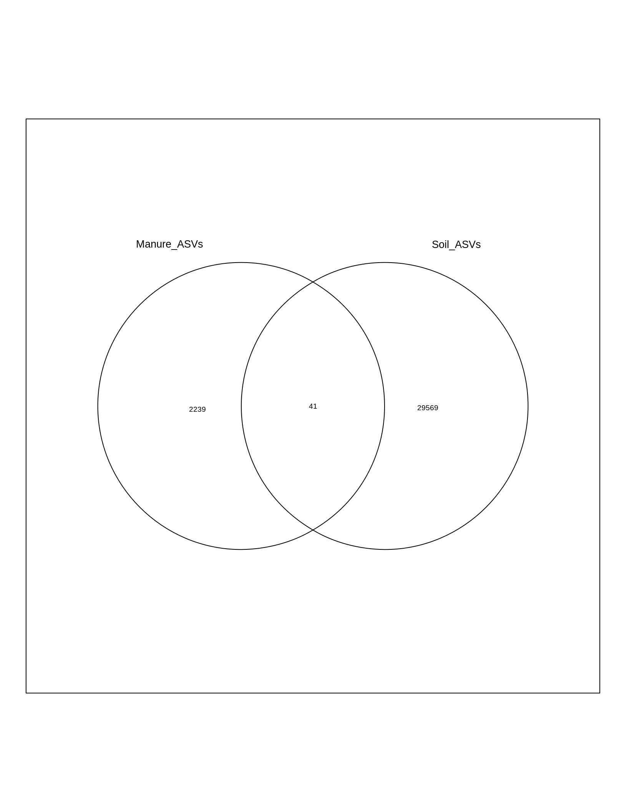
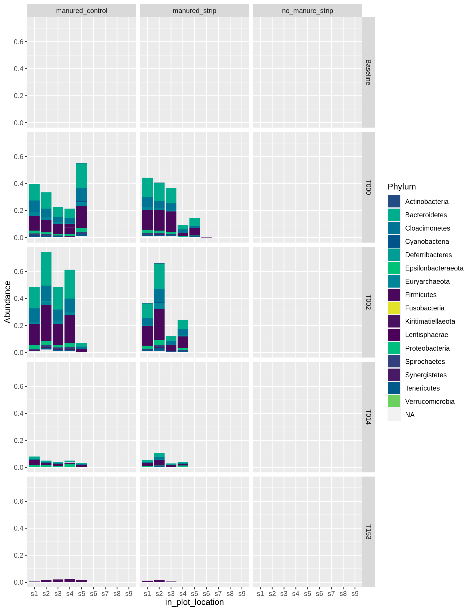
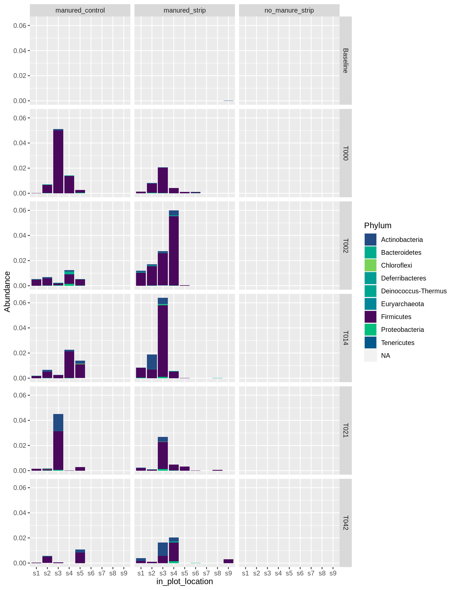

Strips soil manure associated taxa
Jared Flater
Spring 2020
Libraries
library(phyloseq)
library(tidyverse)
library(ggplot2)
library(ggpubr)
library(kableExtra)
library(venn)
library(phylosmith)
library(phylosmith)Load RDS
worle <- readRDS("data/worle_tax_are_seqs.RDS")
arm <- readRDS("data/armstrong_tax_are_seqs.RDS")
worle ## phyloseq-class experiment-level object
## otu_table() OTU Table: [ 78712 taxa and 862 samples ]
## sample_data() Sample Data: [ 862 samples by 10 sample variables ]
## tax_table() Taxonomy Table: [ 78712 taxa by 6 taxonomic ranks ]
## refseq() DNAStringSet: [ 78712 reference sequences ]arm## phyloseq-class experiment-level object
## otu_table() OTU Table: [ 74441 taxa and 826 samples ]
## sample_data() Sample Data: [ 826 samples by 12 sample variables ]
## tax_table() Taxonomy Table: [ 74441 taxa by 6 taxonomic ranks ]
## refseq() DNAStringSet: [ 74441 reference sequences ]Make names for environmental and experimental variables consistent
arm_data1 <- data.frame(sample_data(arm))
worle_data1 <- data.frame(sample_data(worle))kable(arm_data1) %>%
kable_styling(bootstrap_options = "striped") %>%
scroll_box(width = "100%", height = "600px")| unique_id | experiment | matrix | treatment | strip | manure_treatment | plot | block | sample_day | sample_num | soil_type | depth | |
|---|---|---|---|---|---|---|---|---|---|---|---|---|
| ACS-TB-P1-S1-D1 | ACS-TB-P1-S1-D1 | Armstrong_Rainfall | soil | ACS | Y | N | 1 | 1 | TB | 1 | crop | 1 |
| ACS-TB-P1-S2-D1 | ACS-TB-P1-S2-D1 | Armstrong_Rainfall | soil | ACS | Y | N | 1 | 1 | TB | 2 | crop | 1 |
| ACS-TB-P1-S2-D2 | ACS-TB-P1-S2-D2 | Armstrong_Rainfall | soil | ACS | Y | N | 1 | 1 | TB | 2 | crop | 2 |
| ACS-TB-P1-S3-D1 | ACS-TB-P1-S3-D1 | Armstrong_Rainfall | soil | ACS | Y | N | 1 | 1 | TB | 3 | crop | 1 |
| ACS-TB-P1-S3-D2 | ACS-TB-P1-S3-D2 | Armstrong_Rainfall | soil | ACS | Y | N | 1 | 1 | TB | 3 | crop | 2 |
| ACS-TB-P1-S4-D1 | ACS-TB-P1-S4-D1 | Armstrong_Rainfall | soil | ACS | Y | N | 1 | 1 | TB | 4 | crop | 1 |
| ACS-TB-P1-S4-D2 | ACS-TB-P1-S4-D2 | Armstrong_Rainfall | soil | ACS | Y | N | 1 | 1 | TB | 4 | crop | 2 |
| ACS-TB-P1-S5-D1 | ACS-TB-P1-S5-D1 | Armstrong_Rainfall | soil | ACS | Y | N | 1 | 1 | TB | 5 | border | 1 |
| ACS-TB-P1-S5-D2 | ACS-TB-P1-S5-D2 | Armstrong_Rainfall | soil | ACS | Y | N | 1 | 1 | TB | 5 | border | 2 |
| ACS-TB-P1-S6-D1 | ACS-TB-P1-S6-D1 | Armstrong_Rainfall | soil | ACS | Y | N | 1 | 1 | TB | 6 | strip | 1 |
| ACS-TB-P1-S6-D2 | ACS-TB-P1-S6-D2 | Armstrong_Rainfall | soil | ACS | Y | N | 1 | 1 | TB | 6 | strip | 2 |
| ACS-TB-P1-S7-D1 | ACS-TB-P1-S7-D1 | Armstrong_Rainfall | soil | ACS | Y | N | 1 | 1 | TB | 7 | strip | 1 |
| ACS-TB-P1-S7-D2 | ACS-TB-P1-S7-D2 | Armstrong_Rainfall | soil | ACS | Y | N | 1 | 1 | TB | 7 | strip | 2 |
| ACS-TB-P1-S8-D1 | ACS-TB-P1-S8-D1 | Armstrong_Rainfall | soil | ACS | Y | N | 1 | 1 | TB | 8 | strip | 1 |
| ACS-TB-P1-S8-D2 | ACS-TB-P1-S8-D2 | Armstrong_Rainfall | soil | ACS | Y | N | 1 | 1 | TB | 8 | strip | 2 |
| ACS-TB-P1-S9-D1 | ACS-TB-P1-S9-D1 | Armstrong_Rainfall | soil | ACS | Y | N | 1 | 1 | TB | 9 | strip | 1 |
| ACS-TB-P1-S9-D2 | ACS-TB-P1-S9-D2 | Armstrong_Rainfall | soil | ACS | Y | N | 1 | 1 | TB | 9 | strip | 2 |
| ACS-TB-P2-S1-D1 | ACS-TB-P2-S1-D1 | Armstrong_Rainfall | soil | ACS | Y | N | 2 | 2 | TB | 1 | crop | 1 |
| ACS-TB-P2-S1-D2 | ACS-TB-P2-S1-D2 | Armstrong_Rainfall | soil | ACS | Y | N | 2 | 2 | TB | 1 | crop | 2 |
| ACS-TB-P2-S2-D1 | ACS-TB-P2-S2-D1 | Armstrong_Rainfall | soil | ACS | Y | N | 2 | 2 | TB | 2 | crop | 1 |
| ACS-TB-P2-S2-D2 | ACS-TB-P2-S2-D2 | Armstrong_Rainfall | soil | ACS | Y | N | 2 | 2 | TB | 2 | crop | 2 |
| ACS-TB-P2-S3-D1 | ACS-TB-P2-S3-D1 | Armstrong_Rainfall | soil | ACS | Y | N | 2 | 2 | TB | 3 | crop | 1 |
| ACS-TB-P2-S3-D2 | ACS-TB-P2-S3-D2 | Armstrong_Rainfall | soil | ACS | Y | N | 2 | 2 | TB | 3 | crop | 2 |
| ACS-TB-P2-S4-D1 | ACS-TB-P2-S4-D1 | Armstrong_Rainfall | soil | ACS | Y | N | 2 | 2 | TB | 4 | crop | 1 |
| ACS-TB-P2-S4-D2 | ACS-TB-P2-S4-D2 | Armstrong_Rainfall | soil | ACS | Y | N | 2 | 2 | TB | 4 | crop | 2 |
| ACS-TB-P2-S5-D1 | ACS-TB-P2-S5-D1 | Armstrong_Rainfall | soil | ACS | Y | N | 2 | 2 | TB | 5 | border | 1 |
| ACS-TB-P2-S5-D2 | ACS-TB-P2-S5-D2 | Armstrong_Rainfall | soil | ACS | Y | N | 2 | 2 | TB | 5 | border | 2 |
| ACS-TB-P2-S6-D1 | ACS-TB-P2-S6-D1 | Armstrong_Rainfall | soil | ACS | Y | N | 2 | 2 | TB | 6 | strip | 1 |
| ACS-TB-P2-S6-D2 | ACS-TB-P2-S6-D2 | Armstrong_Rainfall | soil | ACS | Y | N | 2 | 2 | TB | 6 | strip | 2 |
| ACS-TB-P2-S7-D1 | ACS-TB-P2-S7-D1 | Armstrong_Rainfall | soil | ACS | Y | N | 2 | 2 | TB | 7 | strip | 1 |
| ACS-TB-P2-S7-D2 | ACS-TB-P2-S7-D2 | Armstrong_Rainfall | soil | ACS | Y | N | 2 | 2 | TB | 7 | strip | 2 |
| ACS-TB-P2-S8-D1 | ACS-TB-P2-S8-D1 | Armstrong_Rainfall | soil | ACS | Y | N | 2 | 2 | TB | 8 | strip | 1 |
| ACS-TB-P2-S8-D2 | ACS-TB-P2-S8-D2 | Armstrong_Rainfall | soil | ACS | Y | N | 2 | 2 | TB | 8 | strip | 2 |
| ACS-TB-P2-S9-D1 | ACS-TB-P2-S9-D1 | Armstrong_Rainfall | soil | ACS | Y | N | 2 | 2 | TB | 9 | strip | 1 |
| ACS-TB-P2-S9-D2 | ACS-TB-P2-S9-D2 | Armstrong_Rainfall | soil | ACS | Y | N | 2 | 2 | TB | 9 | strip | 2 |
| ACS-TB-P3-S1-D1 | ACS-TB-P3-S1-D1 | Armstrong_Rainfall | soil | ACS | Y | N | 3 | 3 | TB | 1 | crop | 1 |
| ACS-TB-P3-S1-D2 | ACS-TB-P3-S1-D2 | Armstrong_Rainfall | soil | ACS | Y | N | 3 | 3 | TB | 1 | crop | 2 |
| ACS-TB-P3-S2-D1 | ACS-TB-P3-S2-D1 | Armstrong_Rainfall | soil | ACS | Y | N | 3 | 3 | TB | 2 | crop | 1 |
| ACS-TB-P3-S2-D2 | ACS-TB-P3-S2-D2 | Armstrong_Rainfall | soil | ACS | Y | N | 3 | 3 | TB | 2 | crop | 2 |
| ACS-TB-P3-S3-D1 | ACS-TB-P3-S3-D1 | Armstrong_Rainfall | soil | ACS | Y | N | 3 | 3 | TB | 3 | crop | 1 |
| ACS-TB-P3-S3-D2 | ACS-TB-P3-S3-D2 | Armstrong_Rainfall | soil | ACS | Y | N | 3 | 3 | TB | 3 | crop | 2 |
| ACS-TB-P3-S4-D1 | ACS-TB-P3-S4-D1 | Armstrong_Rainfall | soil | ACS | Y | N | 3 | 3 | TB | 4 | crop | 1 |
| ACS-TB-P3-S4-D2 | ACS-TB-P3-S4-D2 | Armstrong_Rainfall | soil | ACS | Y | N | 3 | 3 | TB | 4 | crop | 2 |
| ACS-TB-P3-S5-D1 | ACS-TB-P3-S5-D1 | Armstrong_Rainfall | soil | ACS | Y | N | 3 | 3 | TB | 5 | border | 1 |
| ACS-TB-P3-S5-D2 | ACS-TB-P3-S5-D2 | Armstrong_Rainfall | soil | ACS | Y | N | 3 | 3 | TB | 5 | border | 2 |
| ACS-TB-P3-S6-D1 | ACS-TB-P3-S6-D1 | Armstrong_Rainfall | soil | ACS | Y | N | 3 | 3 | TB | 6 | strip | 1 |
| ACS-TB-P3-S6-D2 | ACS-TB-P3-S6-D2 | Armstrong_Rainfall | soil | ACS | Y | N | 3 | 3 | TB | 6 | strip | 2 |
| ACS-TB-P3-S7-D1 | ACS-TB-P3-S7-D1 | Armstrong_Rainfall | soil | ACS | Y | N | 3 | 3 | TB | 7 | strip | 1 |
| ACS-TB-P3-S7-D2 | ACS-TB-P3-S7-D2 | Armstrong_Rainfall | soil | ACS | Y | N | 3 | 3 | TB | 7 | strip | 2 |
| ACS-TB-P3-S8-D1 | ACS-TB-P3-S8-D1 | Armstrong_Rainfall | soil | ACS | Y | N | 3 | 3 | TB | 8 | strip | 1 |
| ACS-TB-P3-S8-D2 | ACS-TB-P3-S8-D2 | Armstrong_Rainfall | soil | ACS | Y | N | 3 | 3 | TB | 8 | strip | 2 |
| ACS-TB-P3-S9-D1 | ACS-TB-P3-S9-D1 | Armstrong_Rainfall | soil | ACS | Y | N | 3 | 3 | TB | 9 | strip | 1 |
| ACS-TB-P3-S9-D2 | ACS-TB-P3-S9-D2 | Armstrong_Rainfall | soil | ACS | Y | N | 3 | 3 | TB | 9 | strip | 2 |
| ACSM-TB-P4-S1-D1 | ACSM-TB-P4-S1-D1 | Armstrong_Rainfall | soil | ACSM | Y | Y | 4 | 1 | TB | 1 | crop | 1 |
| ACSM-TB-P4-S1-D2 | ACSM-TB-P4-S1-D2 | Armstrong_Rainfall | soil | ACSM | Y | Y | 4 | 1 | TB | 1 | crop | 2 |
| ACSM-TB-P4-S2-D1 | ACSM-TB-P4-S2-D1 | Armstrong_Rainfall | soil | ACSM | Y | Y | 4 | 1 | TB | 2 | crop | 1 |
| ACSM-TB-P4-S2-D2 | ACSM-TB-P4-S2-D2 | Armstrong_Rainfall | soil | ACSM | Y | Y | 4 | 1 | TB | 2 | crop | 2 |
| ACSM-TB-P4-S3-D1 | ACSM-TB-P4-S3-D1 | Armstrong_Rainfall | soil | ACSM | Y | Y | 4 | 1 | TB | 3 | crop | 1 |
| ACSM-TB-P4-S3-D2 | ACSM-TB-P4-S3-D2 | Armstrong_Rainfall | soil | ACSM | Y | Y | 4 | 1 | TB | 3 | crop | 2 |
| ACSM-TB-P4-S4-D1 | ACSM-TB-P4-S4-D1 | Armstrong_Rainfall | soil | ACSM | Y | Y | 4 | 1 | TB | 4 | crop | 1 |
| ACSM-TB-P4-S5-D1 | ACSM-TB-P4-S5-D1 | Armstrong_Rainfall | soil | ACSM | Y | Y | 4 | 1 | TB | 5 | border | 1 |
| ACSM-TB-P4-S5-D2 | ACSM-TB-P4-S5-D2 | Armstrong_Rainfall | soil | ACSM | Y | Y | 4 | 1 | TB | 5 | border | 2 |
| ACSM-TB-P4-S6-D1 | ACSM-TB-P4-S6-D1 | Armstrong_Rainfall | soil | ACSM | Y | Y | 4 | 1 | TB | 6 | strip | 1 |
| ACSM-TB-P4-S6-D2 | ACSM-TB-P4-S6-D2 | Armstrong_Rainfall | soil | ACSM | Y | Y | 4 | 1 | TB | 6 | strip | 2 |
| ACSM-TB-P4-S7-D1 | ACSM-TB-P4-S7-D1 | Armstrong_Rainfall | soil | ACSM | Y | Y | 4 | 1 | TB | 7 | strip | 1 |
| ACSM-TB-P4-S7-D2 | ACSM-TB-P4-S7-D2 | Armstrong_Rainfall | soil | ACSM | Y | Y | 4 | 1 | TB | 7 | strip | 2 |
| ACSM-TB-P4-S8-D1 | ACSM-TB-P4-S8-D1 | Armstrong_Rainfall | soil | ACSM | Y | Y | 4 | 1 | TB | 8 | strip | 1 |
| ACSM-TB-P4-S9-D1 | ACSM-TB-P4-S9-D1 | Armstrong_Rainfall | soil | ACSM | Y | Y | 4 | 1 | TB | 9 | strip | 1 |
| ACSM-TB-P4-S9-D2 | ACSM-TB-P4-S9-D2 | Armstrong_Rainfall | soil | ACSM | Y | Y | 4 | 1 | TB | 9 | strip | 2 |
| ACSM-TB-P5-S1-D1 | ACSM-TB-P5-S1-D1 | Armstrong_Rainfall | soil | ACSM | Y | Y | 5 | 2 | TB | 1 | crop | 1 |
| ACSM-TB-P5-S1-D2 | ACSM-TB-P5-S1-D2 | Armstrong_Rainfall | soil | ACSM | Y | Y | 5 | 2 | TB | 1 | crop | 2 |
| ACSM-TB-P5-S2-D1 | ACSM-TB-P5-S2-D1 | Armstrong_Rainfall | soil | ACSM | Y | Y | 5 | 2 | TB | 2 | crop | 1 |
| ACSM-TB-P5-S2-D2 | ACSM-TB-P5-S2-D2 | Armstrong_Rainfall | soil | ACSM | Y | Y | 5 | 2 | TB | 2 | crop | 2 |
| ACSM-TB-P5-S3-D1 | ACSM-TB-P5-S3-D1 | Armstrong_Rainfall | soil | ACSM | Y | Y | 5 | 2 | TB | 3 | crop | 1 |
| ACSM-TB-P5-S4-D1 | ACSM-TB-P5-S4-D1 | Armstrong_Rainfall | soil | ACSM | Y | Y | 5 | 2 | TB | 4 | crop | 1 |
| ACSM-TB-P5-S4-D2 | ACSM-TB-P5-S4-D2 | Armstrong_Rainfall | soil | ACSM | Y | Y | 5 | 2 | TB | 4 | crop | 2 |
| ACSM-TB-P5-S5-D1 | ACSM-TB-P5-S5-D1 | Armstrong_Rainfall | soil | ACSM | Y | Y | 5 | 2 | TB | 5 | border | 1 |
| ACSM-TB-P5-S5-D2 | ACSM-TB-P5-S5-D2 | Armstrong_Rainfall | soil | ACSM | Y | Y | 5 | 2 | TB | 5 | border | 2 |
| ACSM-TB-P5-S6-D1 | ACSM-TB-P5-S6-D1 | Armstrong_Rainfall | soil | ACSM | Y | Y | 5 | 2 | TB | 6 | strip | 1 |
| ACSM-TB-P5-S6-D2 | ACSM-TB-P5-S6-D2 | Armstrong_Rainfall | soil | ACSM | Y | Y | 5 | 2 | TB | 6 | strip | 2 |
| ACSM-TB-P5-S7-D1 | ACSM-TB-P5-S7-D1 | Armstrong_Rainfall | soil | ACSM | Y | Y | 5 | 2 | TB | 7 | strip | 1 |
| ACSM-TB-P5-S7-D2 | ACSM-TB-P5-S7-D2 | Armstrong_Rainfall | soil | ACSM | Y | Y | 5 | 2 | TB | 7 | strip | 2 |
| ACSM-TB-P5-S8-D1 | ACSM-TB-P5-S8-D1 | Armstrong_Rainfall | soil | ACSM | Y | Y | 5 | 2 | TB | 8 | strip | 1 |
| ACSM-TB-P5-S8-D2 | ACSM-TB-P5-S8-D2 | Armstrong_Rainfall | soil | ACSM | Y | Y | 5 | 2 | TB | 8 | strip | 2 |
| ACSM-TB-P5-S9-D1 | ACSM-TB-P5-S9-D1 | Armstrong_Rainfall | soil | ACSM | Y | Y | 5 | 2 | TB | 9 | strip | 1 |
| ACSM-TB-P5-S9-D2 | ACSM-TB-P5-S9-D2 | Armstrong_Rainfall | soil | ACSM | Y | Y | 5 | 2 | TB | 9 | strip | 2 |
| ACSM-TB-P6-S1-D1 | ACSM-TB-P6-S1-D1 | Armstrong_Rainfall | soil | ACSM | Y | Y | 6 | 3 | TB | 1 | crop | 1 |
| ACSM-TB-P6-S1-D2 | ACSM-TB-P6-S1-D2 | Armstrong_Rainfall | soil | ACSM | Y | Y | 6 | 3 | TB | 1 | crop | 2 |
| ACSM-TB-P6-S2-D1 | ACSM-TB-P6-S2-D1 | Armstrong_Rainfall | soil | ACSM | Y | Y | 6 | 3 | TB | 2 | crop | 1 |
| ACSM-TB-P6-S2-D2 | ACSM-TB-P6-S2-D2 | Armstrong_Rainfall | soil | ACSM | Y | Y | 6 | 3 | TB | 2 | crop | 2 |
| ACM-TB-P7-S1-D1 | ACM-TB-P7-S1-D1 | Armstrong_Rainfall | soil | ACM | N | Y | 7 | 1 | TB | 1 | crop | 1 |
| ACM-TB-P7-S1-D2 | ACM-TB-P7-S1-D2 | Armstrong_Rainfall | soil | ACM | N | Y | 7 | 1 | TB | 1 | crop | 2 |
| ACM-TB-P7-S2-D1 | ACM-TB-P7-S2-D1 | Armstrong_Rainfall | soil | ACM | N | Y | 7 | 1 | TB | 2 | crop | 1 |
| ACM-TB-P7-S2-D2 | ACM-TB-P7-S2-D2 | Armstrong_Rainfall | soil | ACM | N | Y | 7 | 1 | TB | 2 | crop | 2 |
| ACM-TB-P7-S3-D1 | ACM-TB-P7-S3-D1 | Armstrong_Rainfall | soil | ACM | N | Y | 7 | 1 | TB | 3 | crop | 1 |
| ACM-TB-P7-S3-D2 | ACM-TB-P7-S3-D2 | Armstrong_Rainfall | soil | ACM | N | Y | 7 | 1 | TB | 3 | crop | 2 |
| ACM-TB-P7-S4-D1 | ACM-TB-P7-S4-D1 | Armstrong_Rainfall | soil | ACM | N | Y | 7 | 1 | TB | 4 | crop | 1 |
| ACM-TB-P7-S4-D2 | ACM-TB-P7-S4-D2 | Armstrong_Rainfall | soil | ACM | N | Y | 7 | 1 | TB | 4 | crop | 2 |
| ACM-TB-P7-S5-D1 | ACM-TB-P7-S5-D1 | Armstrong_Rainfall | soil | ACM | N | Y | 7 | 1 | TB | 5 | crop | 1 |
| ACM-TB-P7-S5-D2 | ACM-TB-P7-S5-D2 | Armstrong_Rainfall | soil | ACM | N | Y | 7 | 1 | TB | 5 | crop | 2 |
| ACM-TB-P8-S1-D1 | ACM-TB-P8-S1-D1 | Armstrong_Rainfall | soil | ACM | N | Y | 8 | 2 | TB | 1 | crop | 1 |
| ACM-TB-P8-S1-D2 | ACM-TB-P8-S1-D2 | Armstrong_Rainfall | soil | ACM | N | Y | 8 | 2 | TB | 1 | crop | 2 |
| ACM-TB-P8-S2-D1 | ACM-TB-P8-S2-D1 | Armstrong_Rainfall | soil | ACM | N | Y | 8 | 2 | TB | 2 | crop | 1 |
| ACM-TB-P8-S2-D2 | ACM-TB-P8-S2-D2 | Armstrong_Rainfall | soil | ACM | N | Y | 8 | 2 | TB | 2 | crop | 2 |
| ACM-TB-P8-S3-D1 | ACM-TB-P8-S3-D1 | Armstrong_Rainfall | soil | ACM | N | Y | 8 | 2 | TB | 3 | crop | 1 |
| ACM-TB-P8-S3-D2 | ACM-TB-P8-S3-D2 | Armstrong_Rainfall | soil | ACM | N | Y | 8 | 2 | TB | 3 | crop | 2 |
| ACM-TB-P8-S4-D1 | ACM-TB-P8-S4-D1 | Armstrong_Rainfall | soil | ACM | N | Y | 8 | 2 | TB | 4 | crop | 1 |
| ACM-TB-P8-S4-D2 | ACM-TB-P8-S4-D2 | Armstrong_Rainfall | soil | ACM | N | Y | 8 | 2 | TB | 4 | crop | 2 |
| ACM-TB-P8-S5-D1 | ACM-TB-P8-S5-D1 | Armstrong_Rainfall | soil | ACM | N | Y | 8 | 2 | TB | 5 | crop | 1 |
| ACM-TB-P8-S5-D2 | ACM-TB-P8-S5-D2 | Armstrong_Rainfall | soil | ACM | N | Y | 8 | 2 | TB | 5 | crop | 2 |
| ACM-TB-P9-S1-D1 | ACM-TB-P9-S1-D1 | Armstrong_Rainfall | soil | ACM | N | Y | 9 | 3 | TB | 1 | crop | 1 |
| ACM-TB-P9-S1-D2 | ACM-TB-P9-S1-D2 | Armstrong_Rainfall | soil | ACM | N | Y | 9 | 3 | TB | 1 | crop | 2 |
| ACM-TB-P9-S2-D1 | ACM-TB-P9-S2-D1 | Armstrong_Rainfall | soil | ACM | N | Y | 9 | 3 | TB | 2 | crop | 1 |
| ACM-TB-P9-S2-D2 | ACM-TB-P9-S2-D2 | Armstrong_Rainfall | soil | ACM | N | Y | 9 | 3 | TB | 2 | crop | 2 |
| ACM-TB-P9-S3-D1 | ACM-TB-P9-S3-D1 | Armstrong_Rainfall | soil | ACM | N | Y | 9 | 3 | TB | 3 | crop | 1 |
| ACM-TB-P9-S3-D2 | ACM-TB-P9-S3-D2 | Armstrong_Rainfall | soil | ACM | N | Y | 9 | 3 | TB | 3 | crop | 2 |
| ACM-TB-P9-S4-D1 | ACM-TB-P9-S4-D1 | Armstrong_Rainfall | soil | ACM | N | Y | 9 | 3 | TB | 4 | crop | 1 |
| ACM-TB-P9-S4-D2 | ACM-TB-P9-S4-D2 | Armstrong_Rainfall | soil | ACM | N | Y | 9 | 3 | TB | 4 | crop | 2 |
| ACM-TB-P9-S5-D1 | ACM-TB-P9-S5-D1 | Armstrong_Rainfall | soil | ACM | N | Y | 9 | 3 | TB | 5 | crop | 1 |
| ACM-TB-P9-S5-D2 | ACM-TB-P9-S5-D2 | Armstrong_Rainfall | soil | ACM | N | Y | 9 | 3 | TB | 5 | crop | 2 |
| ACS-T000-P1-S1-D1 | ACS-T000-P1-S1-D1 | Armstrong_Rainfall | soil | ACS | Y | N | 1 | 1 | T000 | 1 | crop | 1 |
| ACS-T000-P1-S1-D2 | ACS-T000-P1-S1-D2 | Armstrong_Rainfall | soil | ACS | Y | N | 1 | 1 | T000 | 1 | crop | 2 |
| ACS-T000-P1-S2-D1 | ACS-T000-P1-S2-D1 | Armstrong_Rainfall | soil | ACS | Y | N | 1 | 1 | T000 | 2 | crop | 1 |
| ACS-T000-P1-S2-D2 | ACS-T000-P1-S2-D2 | Armstrong_Rainfall | soil | ACS | Y | N | 1 | 1 | T000 | 2 | crop | 2 |
| ACS-T000-P1-S3-D1 | ACS-T000-P1-S3-D1 | Armstrong_Rainfall | soil | ACS | Y | N | 1 | 1 | T000 | 3 | crop | 1 |
| ACS-T000-P1-S3-D2 | ACS-T000-P1-S3-D2 | Armstrong_Rainfall | soil | ACS | Y | N | 1 | 1 | T000 | 3 | crop | 2 |
| ACS-T000-P1-S4-D1 | ACS-T000-P1-S4-D1 | Armstrong_Rainfall | soil | ACS | Y | N | 1 | 1 | T000 | 4 | crop | 1 |
| ACS-T000-P1-S4-D2 | ACS-T000-P1-S4-D2 | Armstrong_Rainfall | soil | ACS | Y | N | 1 | 1 | T000 | 4 | crop | 2 |
| ACS-T000-P1-S5-D1 | ACS-T000-P1-S5-D1 | Armstrong_Rainfall | soil | ACS | Y | N | 1 | 1 | T000 | 5 | border | 1 |
| ACS-T000-P1-S5-D2 | ACS-T000-P1-S5-D2 | Armstrong_Rainfall | soil | ACS | Y | N | 1 | 1 | T000 | 5 | border | 2 |
| ACS-T000-P1-S6-D1 | ACS-T000-P1-S6-D1 | Armstrong_Rainfall | soil | ACS | Y | N | 1 | 1 | T000 | 6 | strip | 1 |
| ACS-T000-P1-S6-D2 | ACS-T000-P1-S6-D2 | Armstrong_Rainfall | soil | ACS | Y | N | 1 | 1 | T000 | 6 | strip | 2 |
| ACS-T000-P1-S7-D1 | ACS-T000-P1-S7-D1 | Armstrong_Rainfall | soil | ACS | Y | N | 1 | 1 | T000 | 7 | strip | 1 |
| ACS-T000-P1-S7-D2 | ACS-T000-P1-S7-D2 | Armstrong_Rainfall | soil | ACS | Y | N | 1 | 1 | T000 | 7 | strip | 2 |
| ACS-T000-P1-S8-D1 | ACS-T000-P1-S8-D1 | Armstrong_Rainfall | soil | ACS | Y | N | 1 | 1 | T000 | 8 | strip | 1 |
| ACS-T000-P1-S8-D2 | ACS-T000-P1-S8-D2 | Armstrong_Rainfall | soil | ACS | Y | N | 1 | 1 | T000 | 8 | strip | 2 |
| ACS-T000-P1-S9-D1 | ACS-T000-P1-S9-D1 | Armstrong_Rainfall | soil | ACS | Y | N | 1 | 1 | T000 | 9 | strip | 1 |
| ACS-T000-P1-S9-D2 | ACS-T000-P1-S9-D2 | Armstrong_Rainfall | soil | ACS | Y | N | 1 | 1 | T000 | 9 | strip | 2 |
| ACS-T000-P2-S1-D1 | ACS-T000-P2-S1-D1 | Armstrong_Rainfall | soil | ACS | Y | N | 2 | 2 | T000 | 1 | crop | 1 |
| ACS-T000-P2-S1-D2 | ACS-T000-P2-S1-D2 | Armstrong_Rainfall | soil | ACS | Y | N | 2 | 2 | T000 | 1 | crop | 2 |
| ACS-T000-P2-S2-D1 | ACS-T000-P2-S2-D1 | Armstrong_Rainfall | soil | ACS | Y | N | 2 | 2 | T000 | 2 | crop | 1 |
| ACS-T000-P2-S2-D2 | ACS-T000-P2-S2-D2 | Armstrong_Rainfall | soil | ACS | Y | N | 2 | 2 | T000 | 2 | crop | 2 |
| ACS-T000-P2-S3-D1 | ACS-T000-P2-S3-D1 | Armstrong_Rainfall | soil | ACS | Y | N | 2 | 2 | T000 | 3 | crop | 1 |
| ACS-T000-P2-S3-D2 | ACS-T000-P2-S3-D2 | Armstrong_Rainfall | soil | ACS | Y | N | 2 | 2 | T000 | 3 | crop | 2 |
| ACS-T000-P2-S4-D1 | ACS-T000-P2-S4-D1 | Armstrong_Rainfall | soil | ACS | Y | N | 2 | 2 | T000 | 4 | crop | 1 |
| ACS-T000-P2-S4-D2 | ACS-T000-P2-S4-D2 | Armstrong_Rainfall | soil | ACS | Y | N | 2 | 2 | T000 | 4 | crop | 2 |
| ACS-T000-P2-S5-D1 | ACS-T000-P2-S5-D1 | Armstrong_Rainfall | soil | ACS | Y | N | 2 | 2 | T000 | 5 | border | 1 |
| ACS-T000-P2-S5-D2 | ACS-T000-P2-S5-D2 | Armstrong_Rainfall | soil | ACS | Y | N | 2 | 2 | T000 | 5 | border | 2 |
| ACS-T000-P2-S6-D1 | ACS-T000-P2-S6-D1 | Armstrong_Rainfall | soil | ACS | Y | N | 2 | 2 | T000 | 6 | strip | 1 |
| ACS-T000-P2-S6-D2 | ACS-T000-P2-S6-D2 | Armstrong_Rainfall | soil | ACS | Y | N | 2 | 2 | T000 | 6 | strip | 2 |
| ACS-T000-P2-S7-D1 | ACS-T000-P2-S7-D1 | Armstrong_Rainfall | soil | ACS | Y | N | 2 | 2 | T000 | 7 | strip | 1 |
| ACS-T000-P2-S7-D2 | ACS-T000-P2-S7-D2 | Armstrong_Rainfall | soil | ACS | Y | N | 2 | 2 | T000 | 7 | strip | 2 |
| ACS-T000-P2-S8-D1 | ACS-T000-P2-S8-D1 | Armstrong_Rainfall | soil | ACS | Y | N | 2 | 2 | T000 | 8 | strip | 1 |
| ACS-T000-P2-S8-D2 | ACS-T000-P2-S8-D2 | Armstrong_Rainfall | soil | ACS | Y | N | 2 | 2 | T000 | 8 | strip | 2 |
| ACS-T000-P2-S9-D1 | ACS-T000-P2-S9-D1 | Armstrong_Rainfall | soil | ACS | Y | N | 2 | 2 | T000 | 9 | strip | 1 |
| ACS-T000-P2-S9-D2 | ACS-T000-P2-S9-D2 | Armstrong_Rainfall | soil | ACS | Y | N | 2 | 2 | T000 | 9 | strip | 2 |
| ACS-T000-P3-S1-D1 | ACS-T000-P3-S1-D1 | Armstrong_Rainfall | soil | ACS | Y | N | 3 | 3 | T000 | 1 | crop | 1 |
| ACS-T000-P3-S1-D2 | ACS-T000-P3-S1-D2 | Armstrong_Rainfall | soil | ACS | Y | N | 3 | 3 | T000 | 1 | crop | 2 |
| ACS-T000-P3-S2-D1 | ACS-T000-P3-S2-D1 | Armstrong_Rainfall | soil | ACS | Y | N | 3 | 3 | T000 | 2 | crop | 1 |
| ACS-T000-P3-S2-D2 | ACS-T000-P3-S2-D2 | Armstrong_Rainfall | soil | ACS | Y | N | 3 | 3 | T000 | 2 | crop | 2 |
| ACS-T000-P3-S3-D1 | ACS-T000-P3-S3-D1 | Armstrong_Rainfall | soil | ACS | Y | N | 3 | 3 | T000 | 3 | crop | 1 |
| ACS-T000-P3-S3-D2 | ACS-T000-P3-S3-D2 | Armstrong_Rainfall | soil | ACS | Y | N | 3 | 3 | T000 | 3 | crop | 2 |
| ACS-T000-P3-S4-D1 | ACS-T000-P3-S4-D1 | Armstrong_Rainfall | soil | ACS | Y | N | 3 | 3 | T000 | 4 | crop | 1 |
| ACS-T000-P3-S4-D2 | ACS-T000-P3-S4-D2 | Armstrong_Rainfall | soil | ACS | Y | N | 3 | 3 | T000 | 4 | crop | 2 |
| ACS-T000-P3-S5-D1 | ACS-T000-P3-S5-D1 | Armstrong_Rainfall | soil | ACS | Y | N | 3 | 3 | T000 | 5 | border | 1 |
| ACS-T000-P3-S5-D2 | ACS-T000-P3-S5-D2 | Armstrong_Rainfall | soil | ACS | Y | N | 3 | 3 | T000 | 5 | border | 2 |
| ACS-T000-P3-S6-D1 | ACS-T000-P3-S6-D1 | Armstrong_Rainfall | soil | ACS | Y | N | 3 | 3 | T000 | 6 | strip | 1 |
| ACS-T000-P3-S6-D2 | ACS-T000-P3-S6-D2 | Armstrong_Rainfall | soil | ACS | Y | N | 3 | 3 | T000 | 6 | strip | 2 |
| ACS-T000-P3-S7-D1 | ACS-T000-P3-S7-D1 | Armstrong_Rainfall | soil | ACS | Y | N | 3 | 3 | T000 | 7 | strip | 1 |
| ACS-T000-P3-S7-D2 | ACS-T000-P3-S7-D2 | Armstrong_Rainfall | soil | ACS | Y | N | 3 | 3 | T000 | 7 | strip | 2 |
| ACSM-TB-P6-S3-D1 | ACSM-TB-P6-S3-D1 | Armstrong_Rainfall | soil | ACSM | Y | Y | 6 | 3 | TB | 3 | crop | 1 |
| ACSM-TB-P6-S3-D2 | ACSM-TB-P6-S3-D2 | Armstrong_Rainfall | soil | ACSM | Y | Y | 6 | 3 | TB | 3 | crop | 2 |
| ACSM-TB-P6-S4-D1 | ACSM-TB-P6-S4-D1 | Armstrong_Rainfall | soil | ACSM | Y | Y | 6 | 3 | TB | 4 | crop | 1 |
| ACSM-TB-P6-S4-D2 | ACSM-TB-P6-S4-D2 | Armstrong_Rainfall | soil | ACSM | Y | Y | 6 | 3 | TB | 4 | crop | 2 |
| ACSM-TB-P6-S5-D1 | ACSM-TB-P6-S5-D1 | Armstrong_Rainfall | soil | ACSM | Y | Y | 6 | 3 | TB | 5 | border | 1 |
| ACSM-TB-P6-S5-D2 | ACSM-TB-P6-S5-D2 | Armstrong_Rainfall | soil | ACSM | Y | Y | 6 | 3 | TB | 5 | border | 2 |
| ACSM-TB-P6-S6-D1 | ACSM-TB-P6-S6-D1 | Armstrong_Rainfall | soil | ACSM | Y | Y | 6 | 3 | TB | 6 | strip | 1 |
| ACSM-TB-P6-S6-D2 | ACSM-TB-P6-S6-D2 | Armstrong_Rainfall | soil | ACSM | Y | Y | 6 | 3 | TB | 6 | strip | 2 |
| ACSM-TB-P6-S7-D1 | ACSM-TB-P6-S7-D1 | Armstrong_Rainfall | soil | ACSM | Y | Y | 6 | 3 | TB | 7 | strip | 1 |
| ACSM-TB-P6-S7-D2 | ACSM-TB-P6-S7-D2 | Armstrong_Rainfall | soil | ACSM | Y | Y | 6 | 3 | TB | 7 | strip | 2 |
| ACSM-TB-P6-S8-D1 | ACSM-TB-P6-S8-D1 | Armstrong_Rainfall | soil | ACSM | Y | Y | 6 | 3 | TB | 8 | strip | 1 |
| ACSM-TB-P6-S8-D2 | ACSM-TB-P6-S8-D2 | Armstrong_Rainfall | soil | ACSM | Y | Y | 6 | 3 | TB | 8 | strip | 2 |
| ACSM-TB-P6-S9-D1 | ACSM-TB-P6-S9-D1 | Armstrong_Rainfall | soil | ACSM | Y | Y | 6 | 3 | TB | 9 | strip | 1 |
| ACSM-TB-P6-S9-D2 | ACSM-TB-P6-S9-D2 | Armstrong_Rainfall | soil | ACSM | Y | Y | 6 | 3 | TB | 9 | strip | 2 |
| ACM-T000-P7-S1-D1 | ACM-T000-P7-S1-D1 | Armstrong_Rainfall | soil | ACM | N | Y | 7 | 1 | T000 | 1 | crop | 1 |
| ACM-T000-P7-S1-D2 | ACM-T000-P7-S1-D2 | Armstrong_Rainfall | soil | ACM | N | Y | 7 | 1 | T000 | 1 | crop | 2 |
| ACM-T000-P7-S2-D1 | ACM-T000-P7-S2-D1 | Armstrong_Rainfall | soil | ACM | N | Y | 7 | 1 | T000 | 2 | crop | 1 |
| ACM-T000-P7-S2-D2 | ACM-T000-P7-S2-D2 | Armstrong_Rainfall | soil | ACM | N | Y | 7 | 1 | T000 | 2 | crop | 2 |
| ACM-T000-P7-S3-D1 | ACM-T000-P7-S3-D1 | Armstrong_Rainfall | soil | ACM | N | Y | 7 | 1 | T000 | 3 | crop | 1 |
| ACM-T000-P7-S3-D2 | ACM-T000-P7-S3-D2 | Armstrong_Rainfall | soil | ACM | N | Y | 7 | 1 | T000 | 3 | crop | 2 |
| ACM-T000-P7-S4-D1 | ACM-T000-P7-S4-D1 | Armstrong_Rainfall | soil | ACM | N | Y | 7 | 1 | T000 | 4 | crop | 1 |
| ACM-T000-P7-S4-D2 | ACM-T000-P7-S4-D2 | Armstrong_Rainfall | soil | ACM | N | Y | 7 | 1 | T000 | 4 | crop | 2 |
| ACM-T000-P7-S5-D1 | ACM-T000-P7-S5-D1 | Armstrong_Rainfall | soil | ACM | N | Y | 7 | 1 | T000 | 5 | crop | 1 |
| ACM-T000-P7-S5-D2 | ACM-T000-P7-S5-D2 | Armstrong_Rainfall | soil | ACM | N | Y | 7 | 1 | T000 | 5 | crop | 2 |
| ACM-T000-P8-S1-D1 | ACM-T000-P8-S1-D1 | Armstrong_Rainfall | soil | ACM | N | Y | 8 | 2 | T000 | 1 | crop | 1 |
| ACM-T000-P8-S1-D2 | ACM-T000-P8-S1-D2 | Armstrong_Rainfall | soil | ACM | N | Y | 8 | 2 | T000 | 1 | crop | 2 |
| ACM-T000-P8-S2-D1 | ACM-T000-P8-S2-D1 | Armstrong_Rainfall | soil | ACM | N | Y | 8 | 2 | T000 | 2 | crop | 1 |
| ACM-T000-P8-S2-D2 | ACM-T000-P8-S2-D2 | Armstrong_Rainfall | soil | ACM | N | Y | 8 | 2 | T000 | 2 | crop | 2 |
| ACM-T000-P8-S3-D1 | ACM-T000-P8-S3-D1 | Armstrong_Rainfall | soil | ACM | N | Y | 8 | 2 | T000 | 3 | crop | 1 |
| ACM-T000-P8-S3-D2 | ACM-T000-P8-S3-D2 | Armstrong_Rainfall | soil | ACM | N | Y | 8 | 2 | T000 | 3 | crop | 2 |
| ACM-T000-P8-S4-D1 | ACM-T000-P8-S4-D1 | Armstrong_Rainfall | soil | ACM | N | Y | 8 | 2 | T000 | 4 | crop | 1 |
| ACM-T000-P8-S4-D2 | ACM-T000-P8-S4-D2 | Armstrong_Rainfall | soil | ACM | N | Y | 8 | 2 | T000 | 4 | crop | 2 |
| ACM-T000-P8-S5-D1 | ACM-T000-P8-S5-D1 | Armstrong_Rainfall | soil | ACM | N | Y | 8 | 2 | T000 | 5 | crop | 1 |
| ACM-T000-P8-S5-D2 | ACM-T000-P8-S5-D2 | Armstrong_Rainfall | soil | ACM | N | Y | 8 | 2 | T000 | 5 | crop | 2 |
| ACM-T000-P9-S1-D1 | ACM-T000-P9-S1-D1 | Armstrong_Rainfall | soil | ACM | N | Y | 9 | 3 | T000 | 1 | crop | 1 |
| ACM-T000-P9-S1-D2 | ACM-T000-P9-S1-D2 | Armstrong_Rainfall | soil | ACM | N | Y | 9 | 3 | T000 | 1 | crop | 2 |
| ACM-T000-P9-S2-D1 | ACM-T000-P9-S2-D1 | Armstrong_Rainfall | soil | ACM | N | Y | 9 | 3 | T000 | 2 | crop | 1 |
| ACM-T000-P9-S2-D2 | ACM-T000-P9-S2-D2 | Armstrong_Rainfall | soil | ACM | N | Y | 9 | 3 | T000 | 2 | crop | 2 |
| ACM-T000-P9-S3-D1 | ACM-T000-P9-S3-D1 | Armstrong_Rainfall | soil | ACM | N | Y | 9 | 3 | T000 | 3 | crop | 1 |
| ACM-T000-P9-S3-D2 | ACM-T000-P9-S3-D2 | Armstrong_Rainfall | soil | ACM | N | Y | 9 | 3 | T000 | 3 | crop | 2 |
| ACM-T000-P9-S4-D1 | ACM-T000-P9-S4-D1 | Armstrong_Rainfall | soil | ACM | N | Y | 9 | 3 | T000 | 4 | crop | 1 |
| ACM-T000-P9-S4-D2 | ACM-T000-P9-S4-D2 | Armstrong_Rainfall | soil | ACM | N | Y | 9 | 3 | T000 | 4 | crop | 2 |
| ACM-T000-P9-S5-D1 | ACM-T000-P9-S5-D1 | Armstrong_Rainfall | soil | ACM | N | Y | 9 | 3 | T000 | 5 | crop | 1 |
| ACM-T000-P9-S5-D2 | ACM-T000-P9-S5-D2 | Armstrong_Rainfall | soil | ACM | N | Y | 9 | 3 | T000 | 5 | crop | 2 |
| ACS-T000-P3-S8-D1 | ACS-T000-P3-S8-D1 | Armstrong_Rainfall | soil | ACS | Y | N | 3 | 3 | T000 | 8 | strip | 1 |
| ACS-T000-P3-S8-D2 | ACS-T000-P3-S8-D2 | Armstrong_Rainfall | soil | ACS | Y | N | 3 | 3 | T000 | 8 | strip | 2 |
| ACS-T000-P3-S9-D1 | ACS-T000-P3-S9-D1 | Armstrong_Rainfall | soil | ACS | Y | N | 3 | 3 | T000 | 9 | strip | 1 |
| ACS-T000-P3-S9-D2 | ACS-T000-P3-S9-D2 | Armstrong_Rainfall | soil | ACS | Y | N | 3 | 3 | T000 | 9 | strip | 2 |
| ACS-T002-P1-S1-D1 | ACS-T002-P1-S1-D1 | Armstrong_Rainfall | soil | ACS | Y | N | 1 | 1 | T002 | 1 | crop | 1 |
| ACS-T002-P1-S1-D2 | ACS-T002-P1-S1-D2 | Armstrong_Rainfall | soil | ACS | Y | N | 1 | 1 | T002 | 1 | crop | 2 |
| ACS-T002-P1-S2-D1 | ACS-T002-P1-S2-D1 | Armstrong_Rainfall | soil | ACS | Y | N | 1 | 1 | T002 | 2 | crop | 1 |
| ACS-T002-P1-S2-D2 | ACS-T002-P1-S2-D2 | Armstrong_Rainfall | soil | ACS | Y | N | 1 | 1 | T002 | 2 | crop | 2 |
| ACS-T002-P1-S3-D1 | ACS-T002-P1-S3-D1 | Armstrong_Rainfall | soil | ACS | Y | N | 1 | 1 | T002 | 3 | crop | 1 |
| ACS-T002-P1-S3-D2 | ACS-T002-P1-S3-D2 | Armstrong_Rainfall | soil | ACS | Y | N | 1 | 1 | T002 | 3 | crop | 2 |
| ACSM-T000-P4-S1-D1 | ACSM-T000-P4-S1-D1 | Armstrong_Rainfall | soil | ACSM | Y | Y | 4 | 1 | T000 | 1 | crop | 1 |
| ACSM-T000-P4-S1-D2 | ACSM-T000-P4-S1-D2 | Armstrong_Rainfall | soil | ACSM | Y | Y | 4 | 1 | T000 | 1 | crop | 2 |
| ACSM-T000-P4-S2-D1 | ACSM-T000-P4-S2-D1 | Armstrong_Rainfall | soil | ACSM | Y | Y | 4 | 1 | T000 | 2 | crop | 1 |
| ACSM-T000-P4-S2-D2 | ACSM-T000-P4-S2-D2 | Armstrong_Rainfall | soil | ACSM | Y | Y | 4 | 1 | T000 | 2 | crop | 2 |
| ACSM-T000-P4-S3-D1 | ACSM-T000-P4-S3-D1 | Armstrong_Rainfall | soil | ACSM | Y | Y | 4 | 1 | T000 | 3 | crop | 1 |
| ACSM-T000-P4-S3-D2 | ACSM-T000-P4-S3-D2 | Armstrong_Rainfall | soil | ACSM | Y | Y | 4 | 1 | T000 | 3 | crop | 2 |
| ACSM-T000-P4-S4-D1 | ACSM-T000-P4-S4-D1 | Armstrong_Rainfall | soil | ACSM | Y | Y | 4 | 1 | T000 | 4 | crop | 1 |
| ACSM-T000-P4-S4-D2 | ACSM-T000-P4-S4-D2 | Armstrong_Rainfall | soil | ACSM | Y | Y | 4 | 1 | T000 | 4 | crop | 2 |
| ACSM-T000-P4-S5-D1 | ACSM-T000-P4-S5-D1 | Armstrong_Rainfall | soil | ACSM | Y | Y | 4 | 1 | T000 | 5 | border | 1 |
| ACSM-T000-P4-S5-D2 | ACSM-T000-P4-S5-D2 | Armstrong_Rainfall | soil | ACSM | Y | Y | 4 | 1 | T000 | 5 | border | 2 |
| ACSM-T000-P4-S6-D1 | ACSM-T000-P4-S6-D1 | Armstrong_Rainfall | soil | ACSM | Y | Y | 4 | 1 | T000 | 6 | strip | 1 |
| ACSM-T000-P4-S6-D2 | ACSM-T000-P4-S6-D2 | Armstrong_Rainfall | soil | ACSM | Y | Y | 4 | 1 | T000 | 6 | strip | 2 |
| ACSM-T000-P4-S7-D1 | ACSM-T000-P4-S7-D1 | Armstrong_Rainfall | soil | ACSM | Y | Y | 4 | 1 | T000 | 7 | strip | 1 |
| ACSM-T000-P4-S7-D2 | ACSM-T000-P4-S7-D2 | Armstrong_Rainfall | soil | ACSM | Y | Y | 4 | 1 | T000 | 7 | strip | 2 |
| ACSM-T000-P4-S8-D1 | ACSM-T000-P4-S8-D1 | Armstrong_Rainfall | soil | ACSM | Y | Y | 4 | 1 | T000 | 8 | strip | 1 |
| ACSM-T000-P4-S8-D2 | ACSM-T000-P4-S8-D2 | Armstrong_Rainfall | soil | ACSM | Y | Y | 4 | 1 | T000 | 8 | strip | 2 |
| ACSM-T000-P4-S9-D1 | ACSM-T000-P4-S9-D1 | Armstrong_Rainfall | soil | ACSM | Y | Y | 4 | 1 | T000 | 9 | strip | 1 |
| ACSM-T000-P4-S9-D2 | ACSM-T000-P4-S9-D2 | Armstrong_Rainfall | soil | ACSM | Y | Y | 4 | 1 | T000 | 9 | strip | 2 |
| ACSM-T000-P5-S1-D1 | ACSM-T000-P5-S1-D1 | Armstrong_Rainfall | soil | ACSM | Y | Y | 5 | 2 | T000 | 1 | crop | 1 |
| ACSM-T000-P5-S1-D2 | ACSM-T000-P5-S1-D2 | Armstrong_Rainfall | soil | ACSM | Y | Y | 5 | 2 | T000 | 1 | crop | 2 |
| ACSM-T000-P5-S2-D1 | ACSM-T000-P5-S2-D1 | Armstrong_Rainfall | soil | ACSM | Y | Y | 5 | 2 | T000 | 2 | crop | 1 |
| ACSM-T000-P5-S2-D2 | ACSM-T000-P5-S2-D2 | Armstrong_Rainfall | soil | ACSM | Y | Y | 5 | 2 | T000 | 2 | crop | 2 |
| ACSM-T000-P5-S3-D1 | ACSM-T000-P5-S3-D1 | Armstrong_Rainfall | soil | ACSM | Y | Y | 5 | 2 | T000 | 3 | crop | 1 |
| ACSM-T000-P5-S3-D2 | ACSM-T000-P5-S3-D2 | Armstrong_Rainfall | soil | ACSM | Y | Y | 5 | 2 | T000 | 3 | crop | 2 |
| ACSM-T000-P5-S4-D1 | ACSM-T000-P5-S4-D1 | Armstrong_Rainfall | soil | ACSM | Y | Y | 5 | 2 | T000 | 4 | crop | 1 |
| ACSM-T000-P5-S4-D2 | ACSM-T000-P5-S4-D2 | Armstrong_Rainfall | soil | ACSM | Y | Y | 5 | 2 | T000 | 4 | crop | 2 |
| ACSM-T000-P5-S5-D1 | ACSM-T000-P5-S5-D1 | Armstrong_Rainfall | soil | ACSM | Y | Y | 5 | 2 | T000 | 5 | border | 1 |
| ACSM-T000-P5-S5-D2 | ACSM-T000-P5-S5-D2 | Armstrong_Rainfall | soil | ACSM | Y | Y | 5 | 2 | T000 | 5 | border | 2 |
| ACSM-T000-P5-S6-D1 | ACSM-T000-P5-S6-D1 | Armstrong_Rainfall | soil | ACSM | Y | Y | 5 | 2 | T000 | 6 | strip | 1 |
| ACSM-T000-P5-S6-D2 | ACSM-T000-P5-S6-D2 | Armstrong_Rainfall | soil | ACSM | Y | Y | 5 | 2 | T000 | 6 | strip | 2 |
| ACSM-T000-P5-S7-D1 | ACSM-T000-P5-S7-D1 | Armstrong_Rainfall | soil | ACSM | Y | Y | 5 | 2 | T000 | 7 | strip | 1 |
| ACSM-T000-P5-S7-D2 | ACSM-T000-P5-S7-D2 | Armstrong_Rainfall | soil | ACSM | Y | Y | 5 | 2 | T000 | 7 | strip | 2 |
| ACSM-T000-P5-S8-D1 | ACSM-T000-P5-S8-D1 | Armstrong_Rainfall | soil | ACSM | Y | Y | 5 | 2 | T000 | 8 | strip | 1 |
| ACSM-T000-P5-S8-D2 | ACSM-T000-P5-S8-D2 | Armstrong_Rainfall | soil | ACSM | Y | Y | 5 | 2 | T000 | 8 | strip | 2 |
| ACSM-T000-P5-S9-D1 | ACSM-T000-P5-S9-D1 | Armstrong_Rainfall | soil | ACSM | Y | Y | 5 | 2 | T000 | 9 | strip | 1 |
| ACSM-T000-P5-S9-D2 | ACSM-T000-P5-S9-D2 | Armstrong_Rainfall | soil | ACSM | Y | Y | 5 | 2 | T000 | 9 | strip | 2 |
| ACSM-T000-P6-S1-D1 | ACSM-T000-P6-S1-D1 | Armstrong_Rainfall | soil | ACSM | Y | Y | 6 | 3 | T000 | 1 | crop | 1 |
| ACSM-T000-P6-S1-D2 | ACSM-T000-P6-S1-D2 | Armstrong_Rainfall | soil | ACSM | Y | Y | 6 | 3 | T000 | 1 | crop | 2 |
| ACSM-T000-P6-S2-D1 | ACSM-T000-P6-S2-D1 | Armstrong_Rainfall | soil | ACSM | Y | Y | 6 | 3 | T000 | 2 | crop | 1 |
| ACSM-T000-P6-S2-D2 | ACSM-T000-P6-S2-D2 | Armstrong_Rainfall | soil | ACSM | Y | Y | 6 | 3 | T000 | 2 | crop | 2 |
| ACSM-T000-P6-S3-D1 | ACSM-T000-P6-S3-D1 | Armstrong_Rainfall | soil | ACSM | Y | Y | 6 | 3 | T000 | 3 | crop | 1 |
| ACSM-T000-P6-S3-D2 | ACSM-T000-P6-S3-D2 | Armstrong_Rainfall | soil | ACSM | Y | Y | 6 | 3 | T000 | 3 | crop | 2 |
| ACSM-T000-P6-S4-D1 | ACSM-T000-P6-S4-D1 | Armstrong_Rainfall | soil | ACSM | Y | Y | 6 | 3 | T000 | 4 | crop | 1 |
| ACSM-T000-P6-S4-D2 | ACSM-T000-P6-S4-D2 | Armstrong_Rainfall | soil | ACSM | Y | Y | 6 | 3 | T000 | 4 | crop | 2 |
| ACSM-T000-P6-S5-D1 | ACSM-T000-P6-S5-D1 | Armstrong_Rainfall | soil | ACSM | Y | Y | 6 | 3 | T000 | 5 | border | 1 |
| ACSM-T000-P6-S5-D2 | ACSM-T000-P6-S5-D2 | Armstrong_Rainfall | soil | ACSM | Y | Y | 6 | 3 | T000 | 5 | border | 2 |
| ACSM-T000-P6-S6-D1 | ACSM-T000-P6-S6-D1 | Armstrong_Rainfall | soil | ACSM | Y | Y | 6 | 3 | T000 | 6 | strip | 1 |
| ACSM-T000-P6-S6-D2 | ACSM-T000-P6-S6-D2 | Armstrong_Rainfall | soil | ACSM | Y | Y | 6 | 3 | T000 | 6 | strip | 2 |
| ACSM-T000-P6-S7-D1 | ACSM-T000-P6-S7-D1 | Armstrong_Rainfall | soil | ACSM | Y | Y | 6 | 3 | T000 | 7 | strip | 1 |
| ACSM-T000-P6-S7-D2 | ACSM-T000-P6-S7-D2 | Armstrong_Rainfall | soil | ACSM | Y | Y | 6 | 3 | T000 | 7 | strip | 2 |
| ACSM-T000-P6-S8-D1 | ACSM-T000-P6-S8-D1 | Armstrong_Rainfall | soil | ACSM | Y | Y | 6 | 3 | T000 | 8 | strip | 1 |
| ACSM-T000-P6-S8-D2 | ACSM-T000-P6-S8-D2 | Armstrong_Rainfall | soil | ACSM | Y | Y | 6 | 3 | T000 | 8 | strip | 2 |
| ACSM-T000-P6-S9-D1 | ACSM-T000-P6-S9-D1 | Armstrong_Rainfall | soil | ACSM | Y | Y | 6 | 3 | T000 | 9 | strip | 1 |
| ACSM-T000-P6-S9-D2 | ACSM-T000-P6-S9-D2 | Armstrong_Rainfall | soil | ACSM | Y | Y | 6 | 3 | T000 | 9 | strip | 2 |
| ACS-T002-P1-S4-D1 | ACS-T002-P1-S4-D1 | Armstrong_Rainfall | soil | ACS | Y | N | 1 | 1 | T002 | 4 | crop | 1 |
| ACS-T002-P1-S4-D2 | ACS-T002-P1-S4-D2 | Armstrong_Rainfall | soil | ACS | Y | N | 1 | 1 | T002 | 4 | crop | 2 |
| ACS-T002-P1-S5-D1 | ACS-T002-P1-S5-D1 | Armstrong_Rainfall | soil | ACS | Y | N | 1 | 1 | T002 | 5 | border | 1 |
| ACS-T002-P1-S5-D2 | ACS-T002-P1-S5-D2 | Armstrong_Rainfall | soil | ACS | Y | N | 1 | 1 | T002 | 5 | border | 2 |
| ACS-T002-P1-S6-D1 | ACS-T002-P1-S6-D1 | Armstrong_Rainfall | soil | ACS | Y | N | 1 | 1 | T002 | 6 | strip | 1 |
| ACS-T002-P1-S6-D2 | ACS-T002-P1-S6-D2 | Armstrong_Rainfall | soil | ACS | Y | N | 1 | 1 | T002 | 6 | strip | 2 |
| ACS-T002-P1-S7-D1 | ACS-T002-P1-S7-D1 | Armstrong_Rainfall | soil | ACS | Y | N | 1 | 1 | T002 | 7 | strip | 1 |
| ACS-T002-P1-S7-D2 | ACS-T002-P1-S7-D2 | Armstrong_Rainfall | soil | ACS | Y | N | 1 | 1 | T002 | 7 | strip | 2 |
| ACS-T002-P1-S8-D1 | ACS-T002-P1-S8-D1 | Armstrong_Rainfall | soil | ACS | Y | N | 1 | 1 | T002 | 8 | strip | 1 |
| ACS-T002-P1-S8-D2 | ACS-T002-P1-S8-D2 | Armstrong_Rainfall | soil | ACS | Y | N | 1 | 1 | T002 | 8 | strip | 2 |
| ACS-T002-P1-S9-D1 | ACS-T002-P1-S9-D1 | Armstrong_Rainfall | soil | ACS | Y | N | 1 | 1 | T002 | 9 | strip | 1 |
| ACS-T002-P1-S9-D2 | ACS-T002-P1-S9-D2 | Armstrong_Rainfall | soil | ACS | Y | N | 1 | 1 | T002 | 9 | strip | 2 |
| ACS-T002-P2-S1-D1 | ACS-T002-P2-S1-D1 | Armstrong_Rainfall | soil | ACS | Y | N | 2 | 2 | T002 | 1 | crop | 1 |
| ACS-T002-P2-S1-D2 | ACS-T002-P2-S1-D2 | Armstrong_Rainfall | soil | ACS | Y | N | 2 | 2 | T002 | 1 | crop | 2 |
| ACS-T002-P2-S2-D1 | ACS-T002-P2-S2-D1 | Armstrong_Rainfall | soil | ACS | Y | N | 2 | 2 | T002 | 2 | crop | 1 |
| ACS-T002-P2-S2-D2 | ACS-T002-P2-S2-D2 | Armstrong_Rainfall | soil | ACS | Y | N | 2 | 2 | T002 | 2 | crop | 2 |
| ACS-T002-P2-S3-D1 | ACS-T002-P2-S3-D1 | Armstrong_Rainfall | soil | ACS | Y | N | 2 | 2 | T002 | 3 | crop | 1 |
| ACS-T002-P2-S3-D2 | ACS-T002-P2-S3-D2 | Armstrong_Rainfall | soil | ACS | Y | N | 2 | 2 | T002 | 3 | crop | 2 |
| ACS-T002-P2-S4-D1 | ACS-T002-P2-S4-D1 | Armstrong_Rainfall | soil | ACS | Y | N | 2 | 2 | T002 | 4 | crop | 1 |
| ACS-T002-P2-S4-D2 | ACS-T002-P2-S4-D2 | Armstrong_Rainfall | soil | ACS | Y | N | 2 | 2 | T002 | 4 | crop | 2 |
| ACS-T002-P2-S5-D1 | ACS-T002-P2-S5-D1 | Armstrong_Rainfall | soil | ACS | Y | N | 2 | 2 | T002 | 5 | border | 1 |
| ACS-T002-P2-S5-D2 | ACS-T002-P2-S5-D2 | Armstrong_Rainfall | soil | ACS | Y | N | 2 | 2 | T002 | 5 | border | 2 |
| ACS-T002-P2-S6-D1 | ACS-T002-P2-S6-D1 | Armstrong_Rainfall | soil | ACS | Y | N | 2 | 2 | T002 | 6 | strip | 1 |
| ACS-T002-P2-S6-D2 | ACS-T002-P2-S6-D2 | Armstrong_Rainfall | soil | ACS | Y | N | 2 | 2 | T002 | 6 | strip | 2 |
| ACS-T002-P2-S7-D1 | ACS-T002-P2-S7-D1 | Armstrong_Rainfall | soil | ACS | Y | N | 2 | 2 | T002 | 7 | strip | 1 |
| ACS-T002-P2-S7-D2 | ACS-T002-P2-S7-D2 | Armstrong_Rainfall | soil | ACS | Y | N | 2 | 2 | T002 | 7 | strip | 2 |
| ACS-T002-P2-S8-D1 | ACS-T002-P2-S8-D1 | Armstrong_Rainfall | soil | ACS | Y | N | 2 | 2 | T002 | 8 | strip | 1 |
| ACS-T002-P2-S8-D2 | ACS-T002-P2-S8-D2 | Armstrong_Rainfall | soil | ACS | Y | N | 2 | 2 | T002 | 8 | strip | 2 |
| ACS-T002-P2-S9-D1 | ACS-T002-P2-S9-D1 | Armstrong_Rainfall | soil | ACS | Y | N | 2 | 2 | T002 | 9 | strip | 1 |
| ACS-T002-P2-S9-D2 | ACS-T002-P2-S9-D2 | Armstrong_Rainfall | soil | ACS | Y | N | 2 | 2 | T002 | 9 | strip | 2 |
| ACS-T002-P3-S1-D1 | ACS-T002-P3-S1-D1 | Armstrong_Rainfall | soil | ACS | Y | N | 3 | 3 | T002 | 1 | crop | 1 |
| ACS-T002-P3-S1-D2 | ACS-T002-P3-S1-D2 | Armstrong_Rainfall | soil | ACS | Y | N | 3 | 3 | T002 | 1 | crop | 2 |
| ACS-T002-P3-S2-D1 | ACS-T002-P3-S2-D1 | Armstrong_Rainfall | soil | ACS | Y | N | 3 | 3 | T002 | 2 | crop | 1 |
| ACS-T002-P3-S2-D2 | ACS-T002-P3-S2-D2 | Armstrong_Rainfall | soil | ACS | Y | N | 3 | 3 | T002 | 2 | crop | 2 |
| ACS-T002-P3-S3-D1 | ACS-T002-P3-S3-D1 | Armstrong_Rainfall | soil | ACS | Y | N | 3 | 3 | T002 | 3 | crop | 1 |
| ACS-T002-P3-S3-D2 | ACS-T002-P3-S3-D2 | Armstrong_Rainfall | soil | ACS | Y | N | 3 | 3 | T002 | 3 | crop | 2 |
| ACS-T002-P3-S4-D1 | ACS-T002-P3-S4-D1 | Armstrong_Rainfall | soil | ACS | Y | N | 3 | 3 | T002 | 4 | crop | 1 |
| ACS-T002-P3-S4-D2 | ACS-T002-P3-S4-D2 | Armstrong_Rainfall | soil | ACS | Y | N | 3 | 3 | T002 | 4 | crop | 2 |
| ACS-T002-P3-S5-D1 | ACS-T002-P3-S5-D1 | Armstrong_Rainfall | soil | ACS | Y | N | 3 | 3 | T002 | 5 | border | 1 |
| ACS-T002-P3-S5-D2 | ACS-T002-P3-S5-D2 | Armstrong_Rainfall | soil | ACS | Y | N | 3 | 3 | T002 | 5 | border | 2 |
| ACS-T002-P3-S6-D1 | ACS-T002-P3-S6-D1 | Armstrong_Rainfall | soil | ACS | Y | N | 3 | 3 | T002 | 6 | strip | 1 |
| ACS-T002-P3-S6-D2 | ACS-T002-P3-S6-D2 | Armstrong_Rainfall | soil | ACS | Y | N | 3 | 3 | T002 | 6 | strip | 2 |
| ACS-T002-P3-S7-D1 | ACS-T002-P3-S7-D1 | Armstrong_Rainfall | soil | ACS | Y | N | 3 | 3 | T002 | 7 | strip | 1 |
| ACS-T002-P3-S7-D2 | ACS-T002-P3-S7-D2 | Armstrong_Rainfall | soil | ACS | Y | N | 3 | 3 | T002 | 7 | strip | 2 |
| ACS-T002-P3-S8-D1 | ACS-T002-P3-S8-D1 | Armstrong_Rainfall | soil | ACS | Y | N | 3 | 3 | T002 | 8 | strip | 1 |
| ACS-T002-P3-S8-D2 | ACS-T002-P3-S8-D2 | Armstrong_Rainfall | soil | ACS | Y | N | 3 | 3 | T002 | 8 | strip | 2 |
| ACS-T002-P3-S9-D1 | ACS-T002-P3-S9-D1 | Armstrong_Rainfall | soil | ACS | Y | N | 3 | 3 | T002 | 9 | strip | 1 |
| ACS-T002-P3-S9-D2 | ACS-T002-P3-S9-D2 | Armstrong_Rainfall | soil | ACS | Y | N | 3 | 3 | T002 | 9 | strip | 2 |
| ACSM-T002-P4-S1-D1 | ACSM-T002-P4-S1-D1 | Armstrong_Rainfall | soil | ACSM | Y | Y | 4 | 1 | T002 | 1 | crop | 1 |
| ACSM-T002-P4-S1-D2 | ACSM-T002-P4-S1-D2 | Armstrong_Rainfall | soil | ACSM | Y | Y | 4 | 1 | T002 | 1 | crop | 2 |
| ACSM-T002-P4-S2-D1 | ACSM-T002-P4-S2-D1 | Armstrong_Rainfall | soil | ACSM | Y | Y | 4 | 1 | T002 | 2 | crop | 1 |
| ACSM-T002-P4-S2-D2 | ACSM-T002-P4-S2-D2 | Armstrong_Rainfall | soil | ACSM | Y | Y | 4 | 1 | T002 | 2 | crop | 2 |
| ACSM-T002-P4-S3-D1 | ACSM-T002-P4-S3-D1 | Armstrong_Rainfall | soil | ACSM | Y | Y | 4 | 1 | T002 | 3 | crop | 1 |
| ACSM-T002-P4-S3-D2 | ACSM-T002-P4-S3-D2 | Armstrong_Rainfall | soil | ACSM | Y | Y | 4 | 1 | T002 | 3 | crop | 2 |
| ACSM-T002-P4-S4-D1 | ACSM-T002-P4-S4-D1 | Armstrong_Rainfall | soil | ACSM | Y | Y | 4 | 1 | T002 | 4 | crop | 1 |
| ACSM-T002-P4-S4-D2 | ACSM-T002-P4-S4-D2 | Armstrong_Rainfall | soil | ACSM | Y | Y | 4 | 1 | T002 | 4 | crop | 2 |
| ACSM-T002-P4-S5-D1 | ACSM-T002-P4-S5-D1 | Armstrong_Rainfall | soil | ACSM | Y | Y | 4 | 1 | T002 | 5 | border | 1 |
| ACSM-T002-P4-S5-D2 | ACSM-T002-P4-S5-D2 | Armstrong_Rainfall | soil | ACSM | Y | Y | 4 | 1 | T002 | 5 | border | 2 |
| ACSM-T002-P4-S6-D1 | ACSM-T002-P4-S6-D1 | Armstrong_Rainfall | soil | ACSM | Y | Y | 4 | 1 | T002 | 6 | strip | 1 |
| ACSM-T002-P4-S6-D2 | ACSM-T002-P4-S6-D2 | Armstrong_Rainfall | soil | ACSM | Y | Y | 4 | 1 | T002 | 6 | strip | 2 |
| ACSM-T002-P4-S7-D1 | ACSM-T002-P4-S7-D1 | Armstrong_Rainfall | soil | ACSM | Y | Y | 4 | 1 | T002 | 7 | strip | 1 |
| ACSM-T002-P4-S7-D2 | ACSM-T002-P4-S7-D2 | Armstrong_Rainfall | soil | ACSM | Y | Y | 4 | 1 | T002 | 7 | strip | 2 |
| ACSM-T002-P4-S8-D1 | ACSM-T002-P4-S8-D1 | Armstrong_Rainfall | soil | ACSM | Y | Y | 4 | 1 | T002 | 8 | strip | 1 |
| ACSM-T002-P4-S8-D2 | ACSM-T002-P4-S8-D2 | Armstrong_Rainfall | soil | ACSM | Y | Y | 4 | 1 | T002 | 8 | strip | 2 |
| ACSM-T002-P4-S9-D1 | ACSM-T002-P4-S9-D1 | Armstrong_Rainfall | soil | ACSM | Y | Y | 4 | 1 | T002 | 9 | strip | 1 |
| ACSM-T002-P4-S9-D2 | ACSM-T002-P4-S9-D2 | Armstrong_Rainfall | soil | ACSM | Y | Y | 4 | 1 | T002 | 9 | strip | 2 |
| ACSM-T002-P5-S1-D1 | ACSM-T002-P5-S1-D1 | Armstrong_Rainfall | soil | ACSM | Y | Y | 5 | 2 | T002 | 1 | crop | 1 |
| ACSM-T002-P5-S1-D2 | ACSM-T002-P5-S1-D2 | Armstrong_Rainfall | soil | ACSM | Y | Y | 5 | 2 | T002 | 1 | crop | 2 |
| ACSM-T002-P5-S2-D1 | ACSM-T002-P5-S2-D1 | Armstrong_Rainfall | soil | ACSM | Y | Y | 5 | 2 | T002 | 2 | crop | 1 |
| ACSM-T002-P5-S2-D2 | ACSM-T002-P5-S2-D2 | Armstrong_Rainfall | soil | ACSM | Y | Y | 5 | 2 | T002 | 2 | crop | 2 |
| ACSM-T002-P5-S3-D1 | ACSM-T002-P5-S3-D1 | Armstrong_Rainfall | soil | ACSM | Y | Y | 5 | 2 | T002 | 3 | crop | 1 |
| ACSM-T002-P5-S3-D2 | ACSM-T002-P5-S3-D2 | Armstrong_Rainfall | soil | ACSM | Y | Y | 5 | 2 | T002 | 3 | crop | 2 |
| ACSM-T002-P5-S4-D1 | ACSM-T002-P5-S4-D1 | Armstrong_Rainfall | soil | ACSM | Y | Y | 5 | 2 | T002 | 4 | crop | 1 |
| ACSM-T002-P5-S4-D2 | ACSM-T002-P5-S4-D2 | Armstrong_Rainfall | soil | ACSM | Y | Y | 5 | 2 | T002 | 4 | crop | 2 |
| ACSM-T002-P5-S5-D1 | ACSM-T002-P5-S5-D1 | Armstrong_Rainfall | soil | ACSM | Y | Y | 5 | 2 | T002 | 5 | border | 1 |
| ACSM-T002-P5-S5-D2 | ACSM-T002-P5-S5-D2 | Armstrong_Rainfall | soil | ACSM | Y | Y | 5 | 2 | T002 | 5 | border | 2 |
| ACSM-T002-P5-S6-D1 | ACSM-T002-P5-S6-D1 | Armstrong_Rainfall | soil | ACSM | Y | Y | 5 | 2 | T002 | 6 | strip | 1 |
| ACSM-T002-P5-S6-D2 | ACSM-T002-P5-S6-D2 | Armstrong_Rainfall | soil | ACSM | Y | Y | 5 | 2 | T002 | 6 | strip | 2 |
| ACSM-T002-P5-S7-D1 | ACSM-T002-P5-S7-D1 | Armstrong_Rainfall | soil | ACSM | Y | Y | 5 | 2 | T002 | 7 | strip | 1 |
| ACSM-T002-P5-S7-D2 | ACSM-T002-P5-S7-D2 | Armstrong_Rainfall | soil | ACSM | Y | Y | 5 | 2 | T002 | 7 | strip | 2 |
| ACSM-T002-P5-S8-D1 | ACSM-T002-P5-S8-D1 | Armstrong_Rainfall | soil | ACSM | Y | Y | 5 | 2 | T002 | 8 | strip | 1 |
| ACSM-T002-P5-S8-D2 | ACSM-T002-P5-S8-D2 | Armstrong_Rainfall | soil | ACSM | Y | Y | 5 | 2 | T002 | 8 | strip | 2 |
| ACSM-T002-P5-S9-D1 | ACSM-T002-P5-S9-D1 | Armstrong_Rainfall | soil | ACSM | Y | Y | 5 | 2 | T002 | 9 | strip | 1 |
| ACSM-T002-P5-S9-D2 | ACSM-T002-P5-S9-D2 | Armstrong_Rainfall | soil | ACSM | Y | Y | 5 | 2 | T002 | 9 | strip | 2 |
| ACSM-T002-P6-S1-D1 | ACSM-T002-P6-S1-D1 | Armstrong_Rainfall | soil | ACSM | Y | Y | 6 | 3 | T002 | 1 | crop | 1 |
| ACSM-T002-P6-S1-D2 | ACSM-T002-P6-S1-D2 | Armstrong_Rainfall | soil | ACSM | Y | Y | 6 | 3 | T002 | 1 | crop | 2 |
| ACSM-T002-P6-S2-D1 | ACSM-T002-P6-S2-D1 | Armstrong_Rainfall | soil | ACSM | Y | Y | 6 | 3 | T002 | 2 | crop | 1 |
| ACSM-T002-P6-S2-D2 | ACSM-T002-P6-S2-D2 | Armstrong_Rainfall | soil | ACSM | Y | Y | 6 | 3 | T002 | 2 | crop | 2 |
| ACSM-T002-P6-S3-D1 | ACSM-T002-P6-S3-D1 | Armstrong_Rainfall | soil | ACSM | Y | Y | 6 | 3 | T002 | 3 | crop | 1 |
| ACSM-T002-P6-S3-D2 | ACSM-T002-P6-S3-D2 | Armstrong_Rainfall | soil | ACSM | Y | Y | 6 | 3 | T002 | 3 | crop | 2 |
| ACSM-T002-P6-S4-D1 | ACSM-T002-P6-S4-D1 | Armstrong_Rainfall | soil | ACSM | Y | Y | 6 | 3 | T002 | 4 | crop | 1 |
| ACSM-T002-P6-S4-D2 | ACSM-T002-P6-S4-D2 | Armstrong_Rainfall | soil | ACSM | Y | Y | 6 | 3 | T002 | 4 | crop | 2 |
| ACSM-T002-P6-S5-D1 | ACSM-T002-P6-S5-D1 | Armstrong_Rainfall | soil | ACSM | Y | Y | 6 | 3 | T002 | 5 | border | 1 |
| ACSM-T002-P6-S5-D2 | ACSM-T002-P6-S5-D2 | Armstrong_Rainfall | soil | ACSM | Y | Y | 6 | 3 | T002 | 5 | border | 2 |
| ACM-T002-P7-S1-D1 | ACM-T002-P7-S1-D1 | Armstrong_Rainfall | soil | ACM | N | Y | 7 | 1 | T002 | 1 | crop | 1 |
| ACM-T002-P7-S1-D2 | ACM-T002-P7-S1-D2 | Armstrong_Rainfall | soil | ACM | N | Y | 7 | 1 | T002 | 1 | crop | 2 |
| ACM-T002-P7-S2-D1 | ACM-T002-P7-S2-D1 | Armstrong_Rainfall | soil | ACM | N | Y | 7 | 1 | T002 | 2 | crop | 1 |
| ACM-T002-P7-S2-D2 | ACM-T002-P7-S2-D2 | Armstrong_Rainfall | soil | ACM | N | Y | 7 | 1 | T002 | 2 | crop | 2 |
| ACM-T002-P7-S3-D1 | ACM-T002-P7-S3-D1 | Armstrong_Rainfall | soil | ACM | N | Y | 7 | 1 | T002 | 3 | crop | 1 |
| ACM-T002-P7-S3-D2 | ACM-T002-P7-S3-D2 | Armstrong_Rainfall | soil | ACM | N | Y | 7 | 1 | T002 | 3 | crop | 2 |
| ACM-T002-P7-S4-D1 | ACM-T002-P7-S4-D1 | Armstrong_Rainfall | soil | ACM | N | Y | 7 | 1 | T002 | 4 | crop | 1 |
| ACM-T002-P7-S4-D2 | ACM-T002-P7-S4-D2 | Armstrong_Rainfall | soil | ACM | N | Y | 7 | 1 | T002 | 4 | crop | 2 |
| ACM-T002-P7-S5-D1 | ACM-T002-P7-S5-D1 | Armstrong_Rainfall | soil | ACM | N | Y | 7 | 1 | T002 | 5 | crop | 1 |
| ACM-T002-P7-S5-D2 | ACM-T002-P7-S5-D2 | Armstrong_Rainfall | soil | ACM | N | Y | 7 | 1 | T002 | 5 | crop | 2 |
| ACM-T002-P8-S1-D1 | ACM-T002-P8-S1-D1 | Armstrong_Rainfall | soil | ACM | N | Y | 8 | 2 | T002 | 1 | crop | 1 |
| ACM-T002-P8-S1-D2 | ACM-T002-P8-S1-D2 | Armstrong_Rainfall | soil | ACM | N | Y | 8 | 2 | T002 | 1 | crop | 2 |
| ACM-T002-P8-S2-D1 | ACM-T002-P8-S2-D1 | Armstrong_Rainfall | soil | ACM | N | Y | 8 | 2 | T002 | 2 | crop | 1 |
| ACM-T002-P8-S2-D2 | ACM-T002-P8-S2-D2 | Armstrong_Rainfall | soil | ACM | N | Y | 8 | 2 | T002 | 2 | crop | 2 |
| ACM-T002-P8-S3-D1 | ACM-T002-P8-S3-D1 | Armstrong_Rainfall | soil | ACM | N | Y | 8 | 2 | T002 | 3 | crop | 1 |
| ACM-T002-P8-S3-D2 | ACM-T002-P8-S3-D2 | Armstrong_Rainfall | soil | ACM | N | Y | 8 | 2 | T002 | 3 | crop | 2 |
| ACM-T002-P8-S4-D1 | ACM-T002-P8-S4-D1 | Armstrong_Rainfall | soil | ACM | N | Y | 8 | 2 | T002 | 4 | crop | 1 |
| ACM-T002-P8-S4-D2 | ACM-T002-P8-S4-D2 | Armstrong_Rainfall | soil | ACM | N | Y | 8 | 2 | T002 | 4 | crop | 2 |
| ACM-T002-P8-S5-D1 | ACM-T002-P8-S5-D1 | Armstrong_Rainfall | soil | ACM | N | Y | 8 | 2 | T002 | 5 | crop | 1 |
| ACM-T002-P8-S5-D2 | ACM-T002-P8-S5-D2 | Armstrong_Rainfall | soil | ACM | N | Y | 8 | 2 | T002 | 5 | crop | 2 |
| ACM-T002-P9-S1-D1 | ACM-T002-P9-S1-D1 | Armstrong_Rainfall | soil | ACM | N | Y | 9 | 3 | T002 | 1 | crop | 1 |
| ACM-T002-P9-S1-D2 | ACM-T002-P9-S1-D2 | Armstrong_Rainfall | soil | ACM | N | Y | 9 | 3 | T002 | 1 | crop | 2 |
| ACM-T002-P9-S2-D1 | ACM-T002-P9-S2-D1 | Armstrong_Rainfall | soil | ACM | N | Y | 9 | 3 | T002 | 2 | crop | 1 |
| ACM-T002-P9-S2-D2 | ACM-T002-P9-S2-D2 | Armstrong_Rainfall | soil | ACM | N | Y | 9 | 3 | T002 | 2 | crop | 2 |
| ACM-T002-P9-S3-D1 | ACM-T002-P9-S3-D1 | Armstrong_Rainfall | soil | ACM | N | Y | 9 | 3 | T002 | 3 | crop | 1 |
| ACM-T002-P9-S3-D2 | ACM-T002-P9-S3-D2 | Armstrong_Rainfall | soil | ACM | N | Y | 9 | 3 | T002 | 3 | crop | 2 |
| ACM-T002-P9-S4-D1 | ACM-T002-P9-S4-D1 | Armstrong_Rainfall | soil | ACM | N | Y | 9 | 3 | T002 | 4 | crop | 1 |
| ACM-T002-P9-S4-D2 | ACM-T002-P9-S4-D2 | Armstrong_Rainfall | soil | ACM | N | Y | 9 | 3 | T002 | 4 | crop | 2 |
| ACM-T002-P9-S5-D1 | ACM-T002-P9-S5-D1 | Armstrong_Rainfall | soil | ACM | N | Y | 9 | 3 | T002 | 5 | crop | 1 |
| ACM-T002-P9-S5-D2 | ACM-T002-P9-S5-D2 | Armstrong_Rainfall | soil | ACM | N | Y | 9 | 3 | T002 | 5 | crop | 2 |
| ACS-T014-P1-S1-D1 | ACS-T014-P1-S1-D1 | Armstrong_Rainfall | soil | ACS | Y | N | 1 | 1 | T014 | 1 | crop | 1 |
| ACS-T014-P1-S1-D2 | ACS-T014-P1-S1-D2 | Armstrong_Rainfall | soil | ACS | Y | N | 1 | 1 | T014 | 1 | crop | 2 |
| ACS-T014-P1-S2-D1 | ACS-T014-P1-S2-D1 | Armstrong_Rainfall | soil | ACS | Y | N | 1 | 1 | T014 | 2 | crop | 1 |
| ACS-T014-P1-S2-D2 | ACS-T014-P1-S2-D2 | Armstrong_Rainfall | soil | ACS | Y | N | 1 | 1 | T014 | 2 | crop | 2 |
| ACS-T014-P1-S3-D1 | ACS-T014-P1-S3-D1 | Armstrong_Rainfall | soil | ACS | Y | N | 1 | 1 | T014 | 3 | crop | 1 |
| ACS-T014-P1-S3-D2 | ACS-T014-P1-S3-D2 | Armstrong_Rainfall | soil | ACS | Y | N | 1 | 1 | T014 | 3 | crop | 2 |
| ACS-T014-P1-S4-D1 | ACS-T014-P1-S4-D1 | Armstrong_Rainfall | soil | ACS | Y | N | 1 | 1 | T014 | 4 | crop | 1 |
| ACS-T014-P1-S4-D2 | ACS-T014-P1-S4-D2 | Armstrong_Rainfall | soil | ACS | Y | N | 1 | 1 | T014 | 4 | crop | 2 |
| ACS-T014-P1-S5-D1 | ACS-T014-P1-S5-D1 | Armstrong_Rainfall | soil | ACS | Y | N | 1 | 1 | T014 | 5 | border | 1 |
| ACS-T014-P1-S5-D2 | ACS-T014-P1-S5-D2 | Armstrong_Rainfall | soil | ACS | Y | N | 1 | 1 | T014 | 5 | border | 2 |
| ACS-T014-P1-S6-D1 | ACS-T014-P1-S6-D1 | Armstrong_Rainfall | soil | ACS | Y | N | 1 | 1 | T014 | 6 | strip | 1 |
| ACS-T014-P1-S6-D2 | ACS-T014-P1-S6-D2 | Armstrong_Rainfall | soil | ACS | Y | N | 1 | 1 | T014 | 6 | strip | 2 |
| ACS-T014-P1-S7-D1 | ACS-T014-P1-S7-D1 | Armstrong_Rainfall | soil | ACS | Y | N | 1 | 1 | T014 | 7 | strip | 1 |
| ACS-T014-P1-S7-D2 | ACS-T014-P1-S7-D2 | Armstrong_Rainfall | soil | ACS | Y | N | 1 | 1 | T014 | 7 | strip | 2 |
| ACS-T014-P1-S8-D1 | ACS-T014-P1-S8-D1 | Armstrong_Rainfall | soil | ACS | Y | N | 1 | 1 | T014 | 8 | strip | 1 |
| ACS-T014-P1-S8-D2 | ACS-T014-P1-S8-D2 | Armstrong_Rainfall | soil | ACS | Y | N | 1 | 1 | T014 | 8 | strip | 2 |
| ACS-T014-P1-S9-D1 | ACS-T014-P1-S9-D1 | Armstrong_Rainfall | soil | ACS | Y | N | 1 | 1 | T014 | 9 | strip | 1 |
| ACS-T014-P1-S9-D2 | ACS-T014-P1-S9-D2 | Armstrong_Rainfall | soil | ACS | Y | N | 1 | 1 | T014 | 9 | strip | 2 |
| ACS-T014-P2-S1-D1 | ACS-T014-P2-S1-D1 | Armstrong_Rainfall | soil | ACS | Y | N | 2 | 2 | T014 | 1 | crop | 1 |
| ACS-T014-P2-S1-D2 | ACS-T014-P2-S1-D2 | Armstrong_Rainfall | soil | ACS | Y | N | 2 | 2 | T014 | 1 | crop | 2 |
| ACS-T014-P2-S2-D1 | ACS-T014-P2-S2-D1 | Armstrong_Rainfall | soil | ACS | Y | N | 2 | 2 | T014 | 2 | crop | 1 |
| ACS-T014-P2-S2-D2 | ACS-T014-P2-S2-D2 | Armstrong_Rainfall | soil | ACS | Y | N | 2 | 2 | T014 | 2 | crop | 2 |
| ACS-T014-P2-S3-D1 | ACS-T014-P2-S3-D1 | Armstrong_Rainfall | soil | ACS | Y | N | 2 | 2 | T014 | 3 | crop | 1 |
| ACS-T014-P2-S3-D2 | ACS-T014-P2-S3-D2 | Armstrong_Rainfall | soil | ACS | Y | N | 2 | 2 | T014 | 3 | crop | 2 |
| ACS-T014-P2-S4-D1 | ACS-T014-P2-S4-D1 | Armstrong_Rainfall | soil | ACS | Y | N | 2 | 2 | T014 | 4 | crop | 1 |
| ACS-T014-P2-S4-D2 | ACS-T014-P2-S4-D2 | Armstrong_Rainfall | soil | ACS | Y | N | 2 | 2 | T014 | 4 | crop | 2 |
| ACS-T014-P2-S5-D1 | ACS-T014-P2-S5-D1 | Armstrong_Rainfall | soil | ACS | Y | N | 2 | 2 | T014 | 5 | border | 1 |
| ACS-T014-P2-S5-D2 | ACS-T014-P2-S5-D2 | Armstrong_Rainfall | soil | ACS | Y | N | 2 | 2 | T014 | 5 | border | 2 |
| ACS-T014-P2-S6-D1 | ACS-T014-P2-S6-D1 | Armstrong_Rainfall | soil | ACS | Y | N | 2 | 2 | T014 | 6 | strip | 1 |
| ACS-T014-P2-S6-D2 | ACS-T014-P2-S6-D2 | Armstrong_Rainfall | soil | ACS | Y | N | 2 | 2 | T014 | 6 | strip | 2 |
| ACS-T014-P2-S7-D1 | ACS-T014-P2-S7-D1 | Armstrong_Rainfall | soil | ACS | Y | N | 2 | 2 | T014 | 7 | strip | 1 |
| ACS-T014-P2-S7-D2 | ACS-T014-P2-S7-D2 | Armstrong_Rainfall | soil | ACS | Y | N | 2 | 2 | T014 | 7 | strip | 2 |
| ACS-T014-P2-S8-D1 | ACS-T014-P2-S8-D1 | Armstrong_Rainfall | soil | ACS | Y | N | 2 | 2 | T014 | 8 | strip | 1 |
| ACS-T014-P2-S8-D2 | ACS-T014-P2-S8-D2 | Armstrong_Rainfall | soil | ACS | Y | N | 2 | 2 | T014 | 8 | strip | 2 |
| ACS-T014-P2-S9-D1 | ACS-T014-P2-S9-D1 | Armstrong_Rainfall | soil | ACS | Y | N | 2 | 2 | T014 | 9 | strip | 1 |
| ACS-T014-P2-S9-D2 | ACS-T014-P2-S9-D2 | Armstrong_Rainfall | soil | ACS | Y | N | 2 | 2 | T014 | 9 | strip | 2 |
| ACS-T014-P3-S1-D1 | ACS-T014-P3-S1-D1 | Armstrong_Rainfall | soil | ACS | Y | N | 3 | 3 | T014 | 1 | crop | 1 |
| ACS-T014-P3-S1-D2 | ACS-T014-P3-S1-D2 | Armstrong_Rainfall | soil | ACS | Y | N | 3 | 3 | T014 | 1 | crop | 2 |
| ACS-T014-P3-S2-D1 | ACS-T014-P3-S2-D1 | Armstrong_Rainfall | soil | ACS | Y | N | 3 | 3 | T014 | 2 | crop | 1 |
| ACS-T014-P3-S2-D2 | ACS-T014-P3-S2-D2 | Armstrong_Rainfall | soil | ACS | Y | N | 3 | 3 | T014 | 2 | crop | 2 |
| ACS-T014-P3-S3-D1 | ACS-T014-P3-S3-D1 | Armstrong_Rainfall | soil | ACS | Y | N | 3 | 3 | T014 | 3 | crop | 1 |
| ACS-T014-P3-S3-D2 | ACS-T014-P3-S3-D2 | Armstrong_Rainfall | soil | ACS | Y | N | 3 | 3 | T014 | 3 | crop | 2 |
| ACS-T014-P3-S4-D1 | ACS-T014-P3-S4-D1 | Armstrong_Rainfall | soil | ACS | Y | N | 3 | 3 | T014 | 4 | crop | 1 |
| ACS-T014-P3-S4-D2 | ACS-T014-P3-S4-D2 | Armstrong_Rainfall | soil | ACS | Y | N | 3 | 3 | T014 | 4 | crop | 2 |
| ACS-T014-P3-S5-D1 | ACS-T014-P3-S5-D1 | Armstrong_Rainfall | soil | ACS | Y | N | 3 | 3 | T014 | 5 | border | 1 |
| ACS-T014-P3-S5-D2 | ACS-T014-P3-S5-D2 | Armstrong_Rainfall | soil | ACS | Y | N | 3 | 3 | T014 | 5 | border | 2 |
| ACS-T014-P3-S6-D1 | ACS-T014-P3-S6-D1 | Armstrong_Rainfall | soil | ACS | Y | N | 3 | 3 | T014 | 6 | strip | 1 |
| ACS-T014-P3-S6-D2 | ACS-T014-P3-S6-D2 | Armstrong_Rainfall | soil | ACS | Y | N | 3 | 3 | T014 | 6 | strip | 2 |
| ACS-T014-P3-S7-D1 | ACS-T014-P3-S7-D1 | Armstrong_Rainfall | soil | ACS | Y | N | 3 | 3 | T014 | 7 | strip | 1 |
| ACS-T014-P3-S7-D2 | ACS-T014-P3-S7-D2 | Armstrong_Rainfall | soil | ACS | Y | N | 3 | 3 | T014 | 7 | strip | 2 |
| ACS-T014-P3-S8-D1 | ACS-T014-P3-S8-D1 | Armstrong_Rainfall | soil | ACS | Y | N | 3 | 3 | T014 | 8 | strip | 1 |
| ACS-T014-P3-S8-D2 | ACS-T014-P3-S8-D2 | Armstrong_Rainfall | soil | ACS | Y | N | 3 | 3 | T014 | 8 | strip | 2 |
| ACS-T014-P3-S9-D1 | ACS-T014-P3-S9-D1 | Armstrong_Rainfall | soil | ACS | Y | N | 3 | 3 | T014 | 9 | strip | 1 |
| ACS-T014-P3-S9-D2 | ACS-T014-P3-S9-D2 | Armstrong_Rainfall | soil | ACS | Y | N | 3 | 3 | T014 | 9 | strip | 2 |
| ACSM-T002-P6-S6-D1 | ACSM-T002-P6-S6-D1 | Armstrong_Rainfall | soil | ACSM | Y | Y | 6 | 3 | T002 | 6 | strip | 1 |
| ACSM-T002-P6-S6-D2 | ACSM-T002-P6-S6-D2 | Armstrong_Rainfall | soil | ACSM | Y | Y | 6 | 3 | T002 | 6 | strip | 2 |
| ACSM-T002-P6-S7-D1 | ACSM-T002-P6-S7-D1 | Armstrong_Rainfall | soil | ACSM | Y | Y | 6 | 3 | T002 | 7 | strip | 1 |
| ACSM-T002-P6-S7-D2 | ACSM-T002-P6-S7-D2 | Armstrong_Rainfall | soil | ACSM | Y | Y | 6 | 3 | T002 | 7 | strip | 2 |
| ACSM-T002-P6-S8-D1 | ACSM-T002-P6-S8-D1 | Armstrong_Rainfall | soil | ACSM | Y | Y | 6 | 3 | T002 | 8 | strip | 1 |
| ACSM-T002-P6-S8-D2 | ACSM-T002-P6-S8-D2 | Armstrong_Rainfall | soil | ACSM | Y | Y | 6 | 3 | T002 | 8 | strip | 2 |
| ACSM-T002-P6-S9-D1 | ACSM-T002-P6-S9-D1 | Armstrong_Rainfall | soil | ACSM | Y | Y | 6 | 3 | T002 | 9 | strip | 1 |
| ACSM-T002-P6-S9-D2 | ACSM-T002-P6-S9-D2 | Armstrong_Rainfall | soil | ACSM | Y | Y | 6 | 3 | T002 | 9 | strip | 2 |
| ACSM-T014-P4-S1-D1 | ACSM-T014-P4-S1-D1 | Armstrong_Rainfall | soil | ACSM | Y | Y | 4 | 1 | T014 | 1 | crop | 1 |
| ACSM-T014-P4-S1-D2 | ACSM-T014-P4-S1-D2 | Armstrong_Rainfall | soil | ACSM | Y | Y | 4 | 1 | T014 | 1 | crop | 2 |
| ACM-T014-P7-S1-D1 | ACM-T014-P7-S1-D1 | Armstrong_Rainfall | soil | ACM | N | Y | 7 | 1 | T014 | 1 | crop | 1 |
| ACM-T014-P7-S1-D2 | ACM-T014-P7-S1-D2 | Armstrong_Rainfall | soil | ACM | N | Y | 7 | 1 | T014 | 1 | crop | 2 |
| ACM-T014-P7-S2-D1 | ACM-T014-P7-S2-D1 | Armstrong_Rainfall | soil | ACM | N | Y | 7 | 1 | T014 | 2 | crop | 1 |
| ACM-T014-P7-S2-D2 | ACM-T014-P7-S2-D2 | Armstrong_Rainfall | soil | ACM | N | Y | 7 | 1 | T014 | 2 | crop | 2 |
| ACM-T014-P7-S3-D1 | ACM-T014-P7-S3-D1 | Armstrong_Rainfall | soil | ACM | N | Y | 7 | 1 | T014 | 3 | crop | 1 |
| ACM-T014-P7-S3-D2 | ACM-T014-P7-S3-D2 | Armstrong_Rainfall | soil | ACM | N | Y | 7 | 1 | T014 | 3 | crop | 2 |
| ACM-T014-P7-S4-D1 | ACM-T014-P7-S4-D1 | Armstrong_Rainfall | soil | ACM | N | Y | 7 | 1 | T014 | 4 | crop | 1 |
| ACM-T014-P7-S4-D2 | ACM-T014-P7-S4-D2 | Armstrong_Rainfall | soil | ACM | N | Y | 7 | 1 | T014 | 4 | crop | 2 |
| ACM-T014-P7-S5-D1 | ACM-T014-P7-S5-D1 | Armstrong_Rainfall | soil | ACM | N | Y | 7 | 1 | T014 | 5 | crop | 1 |
| ACM-T014-P7-S5-D2 | ACM-T014-P7-S5-D2 | Armstrong_Rainfall | soil | ACM | N | Y | 7 | 1 | T014 | 5 | crop | 2 |
| ACM-T014-P8-S1-D1 | ACM-T014-P8-S1-D1 | Armstrong_Rainfall | soil | ACM | N | Y | 8 | 2 | T014 | 1 | crop | 1 |
| ACM-T014-P8-S1-D2 | ACM-T014-P8-S1-D2 | Armstrong_Rainfall | soil | ACM | N | Y | 8 | 2 | T014 | 1 | crop | 2 |
| ACM-T014-P8-S2-D1 | ACM-T014-P8-S2-D1 | Armstrong_Rainfall | soil | ACM | N | Y | 8 | 2 | T014 | 2 | crop | 1 |
| ACM-T014-P8-S2-D2 | ACM-T014-P8-S2-D2 | Armstrong_Rainfall | soil | ACM | N | Y | 8 | 2 | T014 | 2 | crop | 2 |
| ACM-T014-P8-S3-D1 | ACM-T014-P8-S3-D1 | Armstrong_Rainfall | soil | ACM | N | Y | 8 | 2 | T014 | 3 | crop | 1 |
| ACM-T014-P8-S3-D2 | ACM-T014-P8-S3-D2 | Armstrong_Rainfall | soil | ACM | N | Y | 8 | 2 | T014 | 3 | crop | 2 |
| ACM-T014-P8-S4-D1 | ACM-T014-P8-S4-D1 | Armstrong_Rainfall | soil | ACM | N | Y | 8 | 2 | T014 | 4 | crop | 1 |
| ACM-T014-P8-S4-D2 | ACM-T014-P8-S4-D2 | Armstrong_Rainfall | soil | ACM | N | Y | 8 | 2 | T014 | 4 | crop | 2 |
| ACM-T014-P8-S5-D1 | ACM-T014-P8-S5-D1 | Armstrong_Rainfall | soil | ACM | N | Y | 8 | 2 | T014 | 5 | crop | 1 |
| ACM-T014-P8-S5-D2 | ACM-T014-P8-S5-D2 | Armstrong_Rainfall | soil | ACM | N | Y | 8 | 2 | T014 | 5 | crop | 2 |
| ACM-T014-P9-S1-D1 | ACM-T014-P9-S1-D1 | Armstrong_Rainfall | soil | ACM | N | Y | 9 | 3 | T014 | 1 | crop | 1 |
| ACM-T014-P9-S1-D2 | ACM-T014-P9-S1-D2 | Armstrong_Rainfall | soil | ACM | N | Y | 9 | 3 | T014 | 1 | crop | 2 |
| ACM-T014-P9-S2-D1 | ACM-T014-P9-S2-D1 | Armstrong_Rainfall | soil | ACM | N | Y | 9 | 3 | T014 | 2 | crop | 1 |
| ACM-T014-P9-S2-D2 | ACM-T014-P9-S2-D2 | Armstrong_Rainfall | soil | ACM | N | Y | 9 | 3 | T014 | 2 | crop | 2 |
| ACM-T014-P9-S3-D1 | ACM-T014-P9-S3-D1 | Armstrong_Rainfall | soil | ACM | N | Y | 9 | 3 | T014 | 3 | crop | 1 |
| ACM-T014-P9-S3-D2 | ACM-T014-P9-S3-D2 | Armstrong_Rainfall | soil | ACM | N | Y | 9 | 3 | T014 | 3 | crop | 2 |
| ACM-T014-P9-S4-D1 | ACM-T014-P9-S4-D1 | Armstrong_Rainfall | soil | ACM | N | Y | 9 | 3 | T014 | 4 | crop | 1 |
| ACM-T014-P9-S4-D2 | ACM-T014-P9-S4-D2 | Armstrong_Rainfall | soil | ACM | N | Y | 9 | 3 | T014 | 4 | crop | 2 |
| ACM-T014-P9-S5-D1 | ACM-T014-P9-S5-D1 | Armstrong_Rainfall | soil | ACM | N | Y | 9 | 3 | T014 | 5 | crop | 1 |
| ACM-T014-P9-S5-D2 | ACM-T014-P9-S5-D2 | Armstrong_Rainfall | soil | ACM | N | Y | 9 | 3 | T014 | 5 | crop | 2 |
| ACSM-T014-P4-S2-D1 | ACSM-T014-P4-S2-D1 | Armstrong_Rainfall | soil | ACSM | Y | Y | 4 | 1 | T014 | 2 | crop | 1 |
| ACSM-T014-P4-S3-D1 | ACSM-T014-P4-S3-D1 | Armstrong_Rainfall | soil | ACSM | Y | Y | 4 | 1 | T014 | 3 | crop | 1 |
| ACSM-T014-P4-S3-D2 | ACSM-T014-P4-S3-D2 | Armstrong_Rainfall | soil | ACSM | Y | Y | 4 | 1 | T014 | 3 | crop | 2 |
| ACSM-T014-P4-S4-D1 | ACSM-T014-P4-S4-D1 | Armstrong_Rainfall | soil | ACSM | Y | Y | 4 | 1 | T014 | 4 | crop | 1 |
| ACSM-T014-P4-S4-D2 | ACSM-T014-P4-S4-D2 | Armstrong_Rainfall | soil | ACSM | Y | Y | 4 | 1 | T014 | 4 | crop | 2 |
| ACSM-T014-P4-S5-D1 | ACSM-T014-P4-S5-D1 | Armstrong_Rainfall | soil | ACSM | Y | Y | 4 | 1 | T014 | 5 | border | 1 |
| ACSM-T014-P4-S5-D2 | ACSM-T014-P4-S5-D2 | Armstrong_Rainfall | soil | ACSM | Y | Y | 4 | 1 | T014 | 5 | border | 2 |
| ACSM-T014-P4-S6-D1 | ACSM-T014-P4-S6-D1 | Armstrong_Rainfall | soil | ACSM | Y | Y | 4 | 1 | T014 | 6 | strip | 1 |
| ACSM-T014-P4-S6-D2 | ACSM-T014-P4-S6-D2 | Armstrong_Rainfall | soil | ACSM | Y | Y | 4 | 1 | T014 | 6 | strip | 2 |
| ACSM-T014-P4-S7-D1 | ACSM-T014-P4-S7-D1 | Armstrong_Rainfall | soil | ACSM | Y | Y | 4 | 1 | T014 | 7 | strip | 1 |
| ACSM-T014-P4-S7-D2 | ACSM-T014-P4-S7-D2 | Armstrong_Rainfall | soil | ACSM | Y | Y | 4 | 1 | T014 | 7 | strip | 2 |
| ACSM-T014-P4-S8-D1 | ACSM-T014-P4-S8-D1 | Armstrong_Rainfall | soil | ACSM | Y | Y | 4 | 1 | T014 | 8 | strip | 1 |
| ACSM-T014-P4-S8-D2 | ACSM-T014-P4-S8-D2 | Armstrong_Rainfall | soil | ACSM | Y | Y | 4 | 1 | T014 | 8 | strip | 2 |
| ACSM-T014-P4-S9-D1 | ACSM-T014-P4-S9-D1 | Armstrong_Rainfall | soil | ACSM | Y | Y | 4 | 1 | T014 | 9 | strip | 1 |
| ACSM-T014-P4-S9-D2 | ACSM-T014-P4-S9-D2 | Armstrong_Rainfall | soil | ACSM | Y | Y | 4 | 1 | T014 | 9 | strip | 2 |
| ACSM-T014-P5-S1-D1 | ACSM-T014-P5-S1-D1 | Armstrong_Rainfall | soil | ACSM | Y | Y | 5 | 2 | T014 | 1 | crop | 1 |
| ACSM-T014-P5-S1-D2 | ACSM-T014-P5-S1-D2 | Armstrong_Rainfall | soil | ACSM | Y | Y | 5 | 2 | T014 | 1 | crop | 2 |
| ACSM-T014-P5-S2-D1 | ACSM-T014-P5-S2-D1 | Armstrong_Rainfall | soil | ACSM | Y | Y | 5 | 2 | T014 | 2 | crop | 1 |
| ACSM-T014-P5-S2-D2 | ACSM-T014-P5-S2-D2 | Armstrong_Rainfall | soil | ACSM | Y | Y | 5 | 2 | T014 | 2 | crop | 2 |
| ACSM-T014-P5-S3-D1 | ACSM-T014-P5-S3-D1 | Armstrong_Rainfall | soil | ACSM | Y | Y | 5 | 2 | T014 | 3 | crop | 1 |
| ACSM-T014-P5-S3-D2 | ACSM-T014-P5-S3-D2 | Armstrong_Rainfall | soil | ACSM | Y | Y | 5 | 2 | T014 | 3 | crop | 2 |
| ACSM-T014-P5-S4-D1 | ACSM-T014-P5-S4-D1 | Armstrong_Rainfall | soil | ACSM | Y | Y | 5 | 2 | T014 | 4 | crop | 1 |
| ACSM-T014-P5-S4-D2 | ACSM-T014-P5-S4-D2 | Armstrong_Rainfall | soil | ACSM | Y | Y | 5 | 2 | T014 | 4 | crop | 2 |
| ACSM-T014-P5-S5-D1 | ACSM-T014-P5-S5-D1 | Armstrong_Rainfall | soil | ACSM | Y | Y | 5 | 2 | T014 | 5 | border | 1 |
| ACSM-T014-P5-S5-D2 | ACSM-T014-P5-S5-D2 | Armstrong_Rainfall | soil | ACSM | Y | Y | 5 | 2 | T014 | 5 | border | 2 |
| ACSM-T014-P5-S6-D1 | ACSM-T014-P5-S6-D1 | Armstrong_Rainfall | soil | ACSM | Y | Y | 5 | 2 | T014 | 6 | strip | 1 |
| ACSM-T014-P5-S6-D2 | ACSM-T014-P5-S6-D2 | Armstrong_Rainfall | soil | ACSM | Y | Y | 5 | 2 | T014 | 6 | strip | 2 |
| ACSM-T014-P5-S7-D1 | ACSM-T014-P5-S7-D1 | Armstrong_Rainfall | soil | ACSM | Y | Y | 5 | 2 | T014 | 7 | strip | 1 |
| ACSM-T014-P5-S7-D2 | ACSM-T014-P5-S7-D2 | Armstrong_Rainfall | soil | ACSM | Y | Y | 5 | 2 | T014 | 7 | strip | 2 |
| ACSM-T014-P5-S8-D1 | ACSM-T014-P5-S8-D1 | Armstrong_Rainfall | soil | ACSM | Y | Y | 5 | 2 | T014 | 8 | strip | 1 |
| ACSM-T014-P5-S8-D2 | ACSM-T014-P5-S8-D2 | Armstrong_Rainfall | soil | ACSM | Y | Y | 5 | 2 | T014 | 8 | strip | 2 |
| ACSM-T014-P5-S9-D1 | ACSM-T014-P5-S9-D1 | Armstrong_Rainfall | soil | ACSM | Y | Y | 5 | 2 | T014 | 9 | strip | 1 |
| ACSM-T014-P5-S9-D2 | ACSM-T014-P5-S9-D2 | Armstrong_Rainfall | soil | ACSM | Y | Y | 5 | 2 | T014 | 9 | strip | 2 |
| ACSM-T014-P6-S1-D1 | ACSM-T014-P6-S1-D1 | Armstrong_Rainfall | soil | ACSM | Y | Y | 6 | 3 | T014 | 1 | crop | 1 |
| ACSM-T014-P6-S1-D2 | ACSM-T014-P6-S1-D2 | Armstrong_Rainfall | soil | ACSM | Y | Y | 6 | 3 | T014 | 1 | crop | 2 |
| ACSM-T014-P6-S2-D1 | ACSM-T014-P6-S2-D1 | Armstrong_Rainfall | soil | ACSM | Y | Y | 6 | 3 | T014 | 2 | crop | 1 |
| ACSM-T014-P6-S2-D2 | ACSM-T014-P6-S2-D2 | Armstrong_Rainfall | soil | ACSM | Y | Y | 6 | 3 | T014 | 2 | crop | 2 |
| ACSM-T014-P6-S3-D1 | ACSM-T014-P6-S3-D1 | Armstrong_Rainfall | soil | ACSM | Y | Y | 6 | 3 | T014 | 3 | crop | 1 |
| ACSM-T014-P6-S3-D2 | ACSM-T014-P6-S3-D2 | Armstrong_Rainfall | soil | ACSM | Y | Y | 6 | 3 | T014 | 3 | crop | 2 |
| ACSM-T014-P6-S4-D1 | ACSM-T014-P6-S4-D1 | Armstrong_Rainfall | soil | ACSM | Y | Y | 6 | 3 | T014 | 4 | crop | 1 |
| ACSM-T014-P6-S4-D2 | ACSM-T014-P6-S4-D2 | Armstrong_Rainfall | soil | ACSM | Y | Y | 6 | 3 | T014 | 4 | crop | 2 |
| ACSM-T014-P6-S5-D1 | ACSM-T014-P6-S5-D1 | Armstrong_Rainfall | soil | ACSM | Y | Y | 6 | 3 | T014 | 5 | border | 1 |
| ACSM-T014-P6-S5-D2 | ACSM-T014-P6-S5-D2 | Armstrong_Rainfall | soil | ACSM | Y | Y | 6 | 3 | T014 | 5 | border | 2 |
| ACSM-T014-P6-S6-D1 | ACSM-T014-P6-S6-D1 | Armstrong_Rainfall | soil | ACSM | Y | Y | 6 | 3 | T014 | 6 | strip | 1 |
| ACSM-T014-P6-S6-D2 | ACSM-T014-P6-S6-D2 | Armstrong_Rainfall | soil | ACSM | Y | Y | 6 | 3 | T014 | 6 | strip | 2 |
| ACSM-T014-P6-S7-D1 | ACSM-T014-P6-S7-D1 | Armstrong_Rainfall | soil | ACSM | Y | Y | 6 | 3 | T014 | 7 | strip | 1 |
| ACSM-T014-P6-S7-D2 | ACSM-T014-P6-S7-D2 | Armstrong_Rainfall | soil | ACSM | Y | Y | 6 | 3 | T014 | 7 | strip | 2 |
| ACSM-T014-P6-S8-D1 | ACSM-T014-P6-S8-D1 | Armstrong_Rainfall | soil | ACSM | Y | Y | 6 | 3 | T014 | 8 | strip | 1 |
| ACSM-T014-P6-S8-D2 | ACSM-T014-P6-S8-D2 | Armstrong_Rainfall | soil | ACSM | Y | Y | 6 | 3 | T014 | 8 | strip | 2 |
| ACSM-T014-P6-S9-D1 | ACSM-T014-P6-S9-D1 | Armstrong_Rainfall | soil | ACSM | Y | Y | 6 | 3 | T014 | 9 | strip | 1 |
| ACSM-T014-P6-S9-D2 | ACSM-T014-P6-S9-D2 | Armstrong_Rainfall | soil | ACSM | Y | Y | 6 | 3 | T014 | 9 | strip | 2 |
| NAArmstrong-B1-Manure-1 | NAArmstrong-B1-Manure-1 | Armstrong_Rainfall | manure | NAArmstrong | N/A | N/A | N/A | 1 | T000 | 1 | N/A | N/A |
| NAArmstrong-B1-Manure-2 | NAArmstrong-B1-Manure-2 | Armstrong_Rainfall | manure | NAArmstrong | N/A | N/A | N/A | 1 | T000 | 2 | N/A | N/A |
| NAArmstrong-B1-Manure-3 | NAArmstrong-B1-Manure-3 | Armstrong_Rainfall | manure | NAArmstrong | N/A | N/A | N/A | 1 | T000 | 3 | N/A | N/A |
| NAArmstrong-B1-Manure-4 | NAArmstrong-B1-Manure-4 | Armstrong_Rainfall | manure | NAArmstrong | N/A | N/A | N/A | 1 | T000 | 4 | N/A | N/A |
| NAArmstrong-B2-Manure-1 | NAArmstrong-B2-Manure-1 | Armstrong_Rainfall | manure | NAArmstrong | N/A | N/A | N/A | 2 | T000 | 1 | N/A | N/A |
| NAArmstrong-B2-Manure-2 | NAArmstrong-B2-Manure-2 | Armstrong_Rainfall | manure | NAArmstrong | N/A | N/A | N/A | 2 | T000 | 2 | N/A | N/A |
| NAArmstrong-B2-Manure-3 | NAArmstrong-B2-Manure-3 | Armstrong_Rainfall | manure | NAArmstrong | N/A | N/A | N/A | 2 | T000 | 3 | N/A | N/A |
| NAArmstrong-B2-Manure-4 | NAArmstrong-B2-Manure-4 | Armstrong_Rainfall | manure | NAArmstrong | N/A | N/A | N/A | 2 | T000 | 4 | N/A | N/A |
| NAArmstrong-B3-Manure-1 | NAArmstrong-B3-Manure-1 | Armstrong_Rainfall | manure | NAArmstrong | N/A | N/A | N/A | 3 | T000 | 1 | N/A | N/A |
| NAArmstrong-B3-Manure-2 | NAArmstrong-B3-Manure-2 | Armstrong_Rainfall | manure | NAArmstrong | N/A | N/A | N/A | 3 | T000 | 2 | N/A | N/A |
| NAArmstrong-B3-Manure-3 | NAArmstrong-B3-Manure-3 | Armstrong_Rainfall | manure | NAArmstrong | N/A | N/A | N/A | 3 | T000 | 3 | N/A | N/A |
| NAArmstrong-B3-Manure-4 | NAArmstrong-B3-Manure-4 | Armstrong_Rainfall | manure | NAArmstrong | N/A | N/A | N/A | 3 | T000 | 4 | N/A | N/A |
| ACS-T153-P1-S1-D1 | ACS-T153-P1-S1-D1 | Armstrong_Rainfall | soil | ACS | Y | N | 1 | 1 | T153 | 1 | crop | 1 |
| ACS-T153-P1-S1-D2 | ACS-T153-P1-S1-D2 | Armstrong_Rainfall | soil | ACS | Y | N | 1 | 1 | T153 | 1 | crop | 2 |
| ACS-T153-P1-S2-D1 | ACS-T153-P1-S2-D1 | Armstrong_Rainfall | soil | ACS | Y | N | 1 | 1 | T153 | 2 | crop | 1 |
| ACS-T153-P1-S2-D2 | ACS-T153-P1-S2-D2 | Armstrong_Rainfall | soil | ACS | Y | N | 1 | 1 | T153 | 2 | crop | 2 |
| ACS-T153-P1-S3-D1 | ACS-T153-P1-S3-D1 | Armstrong_Rainfall | soil | ACS | Y | N | 1 | 1 | T153 | 3 | crop | 1 |
| ACS-T153-P1-S3-D2 | ACS-T153-P1-S3-D2 | Armstrong_Rainfall | soil | ACS | Y | N | 1 | 1 | T153 | 3 | crop | 2 |
| ACS-T153-P1-S4-D1 | ACS-T153-P1-S4-D1 | Armstrong_Rainfall | soil | ACS | Y | N | 1 | 1 | T153 | 4 | crop | 1 |
| ACS-T153-P1-S4-D2 | ACS-T153-P1-S4-D2 | Armstrong_Rainfall | soil | ACS | Y | N | 1 | 1 | T153 | 4 | crop | 2 |
| ACS-T153-P1-S5-D1 | ACS-T153-P1-S5-D1 | Armstrong_Rainfall | soil | ACS | Y | N | 1 | 1 | T153 | 5 | border | 1 |
| ACS-T153-P1-S5-D2 | ACS-T153-P1-S5-D2 | Armstrong_Rainfall | soil | ACS | Y | N | 1 | 1 | T153 | 5 | border | 2 |
| ACS-T153-P1-S6-D1 | ACS-T153-P1-S6-D1 | Armstrong_Rainfall | soil | ACS | Y | N | 1 | 1 | T153 | 6 | strip | 1 |
| ACS-T153-P1-S6-D2 | ACS-T153-P1-S6-D2 | Armstrong_Rainfall | soil | ACS | Y | N | 1 | 1 | T153 | 6 | strip | 2 |
| ACS-T153-P1-S7-D1 | ACS-T153-P1-S7-D1 | Armstrong_Rainfall | soil | ACS | Y | N | 1 | 1 | T153 | 7 | strip | 1 |
| ACS-T153-P1-S7-D2 | ACS-T153-P1-S7-D2 | Armstrong_Rainfall | soil | ACS | Y | N | 1 | 1 | T153 | 7 | strip | 2 |
| ACS-T153-P1-S8-D1 | ACS-T153-P1-S8-D1 | Armstrong_Rainfall | soil | ACS | Y | N | 1 | 1 | T153 | 8 | strip | 1 |
| ACS-T153-P1-S8-D2 | ACS-T153-P1-S8-D2 | Armstrong_Rainfall | soil | ACS | Y | N | 1 | 1 | T153 | 8 | strip | 2 |
| ACS-T153-P1-S9-D1 | ACS-T153-P1-S9-D1 | Armstrong_Rainfall | soil | ACS | Y | N | 1 | 1 | T153 | 9 | strip | 1 |
| ACS-T153-P1-S9-D2 | ACS-T153-P1-S9-D2 | Armstrong_Rainfall | soil | ACS | Y | N | 1 | 1 | T153 | 9 | strip | 2 |
| ACS-T153-P2-S1-D1 | ACS-T153-P2-S1-D1 | Armstrong_Rainfall | soil | ACS | Y | N | 2 | 2 | T153 | 1 | crop | 1 |
| ACS-T153-P2-S1-D2 | ACS-T153-P2-S1-D2 | Armstrong_Rainfall | soil | ACS | Y | N | 2 | 2 | T153 | 1 | crop | 2 |
| ACS-T153-P2-S2-D1 | ACS-T153-P2-S2-D1 | Armstrong_Rainfall | soil | ACS | Y | N | 2 | 2 | T153 | 2 | crop | 1 |
| ACS-T153-P2-S2-D2 | ACS-T153-P2-S2-D2 | Armstrong_Rainfall | soil | ACS | Y | N | 2 | 2 | T153 | 2 | crop | 2 |
| ACS-T153-P2-S3-D1 | ACS-T153-P2-S3-D1 | Armstrong_Rainfall | soil | ACS | Y | N | 2 | 2 | T153 | 3 | crop | 1 |
| ACS-T153-P2-S3-D2 | ACS-T153-P2-S3-D2 | Armstrong_Rainfall | soil | ACS | Y | N | 2 | 2 | T153 | 3 | crop | 2 |
| ACS-T153-P2-S4-D1 | ACS-T153-P2-S4-D1 | Armstrong_Rainfall | soil | ACS | Y | N | 2 | 2 | T153 | 4 | crop | 1 |
| ACS-T153-P2-S4-D2 | ACS-T153-P2-S4-D2 | Armstrong_Rainfall | soil | ACS | Y | N | 2 | 2 | T153 | 4 | crop | 2 |
| ACS-T153-P2-S5-D1 | ACS-T153-P2-S5-D1 | Armstrong_Rainfall | soil | ACS | Y | N | 2 | 2 | T153 | 5 | border | 1 |
| ACS-T153-P2-S5-D2 | ACS-T153-P2-S5-D2 | Armstrong_Rainfall | soil | ACS | Y | N | 2 | 2 | T153 | 5 | border | 2 |
| ACS-T153-P2-S6-D1 | ACS-T153-P2-S6-D1 | Armstrong_Rainfall | soil | ACS | Y | N | 2 | 2 | T153 | 6 | strip | 1 |
| ACS-T153-P2-S6-D2 | ACS-T153-P2-S6-D2 | Armstrong_Rainfall | soil | ACS | Y | N | 2 | 2 | T153 | 6 | strip | 2 |
| ACS-T153-P2-S7-D1 | ACS-T153-P2-S7-D1 | Armstrong_Rainfall | soil | ACS | Y | N | 2 | 2 | T153 | 7 | strip | 1 |
| ACS-T153-P2-S7-D2 | ACS-T153-P2-S7-D2 | Armstrong_Rainfall | soil | ACS | Y | N | 2 | 2 | T153 | 7 | strip | 2 |
| ACS-T153-P2-S8-D1 | ACS-T153-P2-S8-D1 | Armstrong_Rainfall | soil | ACS | Y | N | 2 | 2 | T153 | 8 | strip | 1 |
| ACS-T153-P2-S8-D2 | ACS-T153-P2-S8-D2 | Armstrong_Rainfall | soil | ACS | Y | N | 2 | 2 | T153 | 8 | strip | 2 |
| ACS-T153-P2-S9-D1 | ACS-T153-P2-S9-D1 | Armstrong_Rainfall | soil | ACS | Y | N | 2 | 2 | T153 | 9 | strip | 1 |
| ACS-T153-P2-S9-D2 | ACS-T153-P2-S9-D2 | Armstrong_Rainfall | soil | ACS | Y | N | 2 | 2 | T153 | 9 | strip | 2 |
| ACS-T153-P3-S1-D1 | ACS-T153-P3-S1-D1 | Armstrong_Rainfall | soil | ACS | Y | N | 3 | 3 | T153 | 1 | crop | 1 |
| ACS-T153-P3-S1-D2 | ACS-T153-P3-S1-D2 | Armstrong_Rainfall | soil | ACS | Y | N | 3 | 3 | T153 | 1 | crop | 2 |
| ACS-T153-P3-S2-D1 | ACS-T153-P3-S2-D1 | Armstrong_Rainfall | soil | ACS | Y | N | 3 | 3 | T153 | 2 | crop | 1 |
| ACS-T153-P3-S2-D2 | ACS-T153-P3-S2-D2 | Armstrong_Rainfall | soil | ACS | Y | N | 3 | 3 | T153 | 2 | crop | 2 |
| ACS-T153-P3-S3-D1 | ACS-T153-P3-S3-D1 | Armstrong_Rainfall | soil | ACS | Y | N | 3 | 3 | T153 | 3 | crop | 1 |
| ACS-T153-P3-S3-D2 | ACS-T153-P3-S3-D2 | Armstrong_Rainfall | soil | ACS | Y | N | 3 | 3 | T153 | 3 | crop | 2 |
| ACS-T153-P3-S4-D1 | ACS-T153-P3-S4-D1 | Armstrong_Rainfall | soil | ACS | Y | N | 3 | 3 | T153 | 4 | crop | 1 |
| ACS-T153-P3-S4-D2 | ACS-T153-P3-S4-D2 | Armstrong_Rainfall | soil | ACS | Y | N | 3 | 3 | T153 | 4 | crop | 2 |
| ACS-T153-P3-S5-D1 | ACS-T153-P3-S5-D1 | Armstrong_Rainfall | soil | ACS | Y | N | 3 | 3 | T153 | 5 | border | 1 |
| ACS-T153-P3-S5-D2 | ACS-T153-P3-S5-D2 | Armstrong_Rainfall | soil | ACS | Y | N | 3 | 3 | T153 | 5 | border | 2 |
| ACS-T153-P3-S6-D1 | ACS-T153-P3-S6-D1 | Armstrong_Rainfall | soil | ACS | Y | N | 3 | 3 | T153 | 6 | strip | 1 |
| ACS-T153-P3-S6-D2 | ACS-T153-P3-S6-D2 | Armstrong_Rainfall | soil | ACS | Y | N | 3 | 3 | T153 | 6 | strip | 2 |
| ACS-T153-P3-S7-D1 | ACS-T153-P3-S7-D1 | Armstrong_Rainfall | soil | ACS | Y | N | 3 | 3 | T153 | 7 | strip | 1 |
| ACS-T153-P3-S7-D2 | ACS-T153-P3-S7-D2 | Armstrong_Rainfall | soil | ACS | Y | N | 3 | 3 | T153 | 7 | strip | 2 |
| ACS-T153-P3-S8-D1 | ACS-T153-P3-S8-D1 | Armstrong_Rainfall | soil | ACS | Y | N | 3 | 3 | T153 | 8 | strip | 1 |
| ACS-T153-P3-S8-D2 | ACS-T153-P3-S8-D2 | Armstrong_Rainfall | soil | ACS | Y | N | 3 | 3 | T153 | 8 | strip | 2 |
| ACS-T153-P3-S9-D1 | ACS-T153-P3-S9-D1 | Armstrong_Rainfall | soil | ACS | Y | N | 3 | 3 | T153 | 9 | strip | 1 |
| ACS-T153-P3-S9-D2 | ACS-T153-P3-S9-D2 | Armstrong_Rainfall | soil | ACS | Y | N | 3 | 3 | T153 | 9 | strip | 2 |
| ACSM-T153-P4-S1-D1 | ACSM-T153-P4-S1-D1 | Armstrong_Rainfall | soil | ACSM | Y | Y | 4 | 1 | T153 | 1 | crop | 1 |
| ACSM-T153-P4-S1-D2 | ACSM-T153-P4-S1-D2 | Armstrong_Rainfall | soil | ACSM | Y | Y | 4 | 1 | T153 | 1 | crop | 2 |
| ACSM-T153-P4-S2-D1 | ACSM-T153-P4-S2-D1 | Armstrong_Rainfall | soil | ACSM | Y | Y | 4 | 1 | T153 | 2 | crop | 1 |
| ACSM-T153-P4-S2-D2 | ACSM-T153-P4-S2-D2 | Armstrong_Rainfall | soil | ACSM | Y | Y | 4 | 1 | T153 | 2 | crop | 2 |
| ACSM-T153-P4-S3-D1 | ACSM-T153-P4-S3-D1 | Armstrong_Rainfall | soil | ACSM | Y | Y | 4 | 1 | T153 | 3 | crop | 1 |
| ACSM-T153-P4-S3-D2 | ACSM-T153-P4-S3-D2 | Armstrong_Rainfall | soil | ACSM | Y | Y | 4 | 1 | T153 | 3 | crop | 2 |
| ACSM-T153-P4-S4-D1 | ACSM-T153-P4-S4-D1 | Armstrong_Rainfall | soil | ACSM | Y | Y | 4 | 1 | T153 | 4 | crop | 1 |
| ACSM-T153-P4-S4-D2 | ACSM-T153-P4-S4-D2 | Armstrong_Rainfall | soil | ACSM | Y | Y | 4 | 1 | T153 | 4 | crop | 2 |
| ACSM-T153-P4-S5-D1 | ACSM-T153-P4-S5-D1 | Armstrong_Rainfall | soil | ACSM | Y | Y | 4 | 1 | T153 | 5 | border | 1 |
| ACSM-T153-P4-S5-D2 | ACSM-T153-P4-S5-D2 | Armstrong_Rainfall | soil | ACSM | Y | Y | 4 | 1 | T153 | 5 | border | 2 |
| ACSM-T153-P4-S6-D1 | ACSM-T153-P4-S6-D1 | Armstrong_Rainfall | soil | ACSM | Y | Y | 4 | 1 | T153 | 6 | strip | 1 |
| ACSM-T153-P4-S6-D2 | ACSM-T153-P4-S6-D2 | Armstrong_Rainfall | soil | ACSM | Y | Y | 4 | 1 | T153 | 6 | strip | 2 |
| ACSM-T153-P4-S7-D1 | ACSM-T153-P4-S7-D1 | Armstrong_Rainfall | soil | ACSM | Y | Y | 4 | 1 | T153 | 7 | strip | 1 |
| ACSM-T153-P4-S7-D2 | ACSM-T153-P4-S7-D2 | Armstrong_Rainfall | soil | ACSM | Y | Y | 4 | 1 | T153 | 7 | strip | 2 |
| ACSM-T153-P4-S8-D1 | ACSM-T153-P4-S8-D1 | Armstrong_Rainfall | soil | ACSM | Y | Y | 4 | 1 | T153 | 8 | strip | 1 |
| ACSM-T153-P4-S8-D2 | ACSM-T153-P4-S8-D2 | Armstrong_Rainfall | soil | ACSM | Y | Y | 4 | 1 | T153 | 8 | strip | 2 |
| ACSM-T153-P4-S9-D1 | ACSM-T153-P4-S9-D1 | Armstrong_Rainfall | soil | ACSM | Y | Y | 4 | 1 | T153 | 9 | strip | 1 |
| ACSM-T153-P4-S9-D2 | ACSM-T153-P4-S9-D2 | Armstrong_Rainfall | soil | ACSM | Y | Y | 4 | 1 | T153 | 9 | strip | 2 |
| ACSM-T153-P5-S1-D1 | ACSM-T153-P5-S1-D1 | Armstrong_Rainfall | soil | ACSM | Y | Y | 5 | 2 | T153 | 1 | crop | 1 |
| ACSM-T153-P5-S1-D2 | ACSM-T153-P5-S1-D2 | Armstrong_Rainfall | soil | ACSM | Y | Y | 5 | 2 | T153 | 1 | crop | 2 |
| ACSM-T153-P5-S2-D1 | ACSM-T153-P5-S2-D1 | Armstrong_Rainfall | soil | ACSM | Y | Y | 5 | 2 | T153 | 2 | crop | 1 |
| ACSM-T153-P5-S2-D2 | ACSM-T153-P5-S2-D2 | Armstrong_Rainfall | soil | ACSM | Y | Y | 5 | 2 | T153 | 2 | crop | 2 |
| ACSM-T153-P5-S3-D1 | ACSM-T153-P5-S3-D1 | Armstrong_Rainfall | soil | ACSM | Y | Y | 5 | 2 | T153 | 3 | crop | 1 |
| ACSM-T153-P5-S3-D2 | ACSM-T153-P5-S3-D2 | Armstrong_Rainfall | soil | ACSM | Y | Y | 5 | 2 | T153 | 3 | crop | 2 |
| ACSM-T153-P5-S4-D1 | ACSM-T153-P5-S4-D1 | Armstrong_Rainfall | soil | ACSM | Y | Y | 5 | 2 | T153 | 4 | crop | 1 |
| ACSM-T153-P5-S4-D2 | ACSM-T153-P5-S4-D2 | Armstrong_Rainfall | soil | ACSM | Y | Y | 5 | 2 | T153 | 4 | crop | 2 |
| ACSM-T153-P5-S5-D1 | ACSM-T153-P5-S5-D1 | Armstrong_Rainfall | soil | ACSM | Y | Y | 5 | 2 | T153 | 5 | border | 1 |
| ACSM-T153-P5-S5-D2 | ACSM-T153-P5-S5-D2 | Armstrong_Rainfall | soil | ACSM | Y | Y | 5 | 2 | T153 | 5 | border | 2 |
| ACSM-T153-P5-S6-D1 | ACSM-T153-P5-S6-D1 | Armstrong_Rainfall | soil | ACSM | Y | Y | 5 | 2 | T153 | 6 | strip | 1 |
| ACSM-T153-P5-S6-D2 | ACSM-T153-P5-S6-D2 | Armstrong_Rainfall | soil | ACSM | Y | Y | 5 | 2 | T153 | 6 | strip | 2 |
| ACSM-T153-P5-S7-D1 | ACSM-T153-P5-S7-D1 | Armstrong_Rainfall | soil | ACSM | Y | Y | 5 | 2 | T153 | 7 | strip | 1 |
| ACSM-T153-P5-S7-D2 | ACSM-T153-P5-S7-D2 | Armstrong_Rainfall | soil | ACSM | Y | Y | 5 | 2 | T153 | 7 | strip | 2 |
| ACSM-T153-P5-S8-D1 | ACSM-T153-P5-S8-D1 | Armstrong_Rainfall | soil | ACSM | Y | Y | 5 | 2 | T153 | 8 | strip | 1 |
| ACSM-T153-P5-S8-D2 | ACSM-T153-P5-S8-D2 | Armstrong_Rainfall | soil | ACSM | Y | Y | 5 | 2 | T153 | 8 | strip | 2 |
| ACSM-T153-P5-S9-D1 | ACSM-T153-P5-S9-D1 | Armstrong_Rainfall | soil | ACSM | Y | Y | 5 | 2 | T153 | 9 | strip | 1 |
| ACSM-T153-P5-S9-D2 | ACSM-T153-P5-S9-D2 | Armstrong_Rainfall | soil | ACSM | Y | Y | 5 | 2 | T153 | 9 | strip | 2 |
| ACSM-T153-P6-S1-D1 | ACSM-T153-P6-S1-D1 | Armstrong_Rainfall | soil | ACSM | Y | Y | 6 | 3 | T153 | 1 | crop | 1 |
| ACSM-T153-P6-S1-D2 | ACSM-T153-P6-S1-D2 | Armstrong_Rainfall | soil | ACSM | Y | Y | 6 | 3 | T153 | 1 | crop | 2 |
| ACSM-T153-P6-S2-D1 | ACSM-T153-P6-S2-D1 | Armstrong_Rainfall | soil | ACSM | Y | Y | 6 | 3 | T153 | 2 | crop | 1 |
| ACSM-T153-P6-S2-D2 | ACSM-T153-P6-S2-D2 | Armstrong_Rainfall | soil | ACSM | Y | Y | 6 | 3 | T153 | 2 | crop | 2 |
| ACM-T153-P7-S1-D1 | ACM-T153-P7-S1-D1 | Armstrong_Rainfall | soil | ACM | N | Y | 7 | 1 | T153 | 1 | crop | 1 |
| ACM-T153-P7-S1-D2 | ACM-T153-P7-S1-D2 | Armstrong_Rainfall | soil | ACM | N | Y | 7 | 1 | T153 | 1 | crop | 2 |
| ACM-T153-P7-S2-D1 | ACM-T153-P7-S2-D1 | Armstrong_Rainfall | soil | ACM | N | Y | 7 | 1 | T153 | 2 | crop | 1 |
| ACM-T153-P7-S2-D2 | ACM-T153-P7-S2-D2 | Armstrong_Rainfall | soil | ACM | N | Y | 7 | 1 | T153 | 2 | crop | 2 |
| ACM-T153-P7-S3-D1 | ACM-T153-P7-S3-D1 | Armstrong_Rainfall | soil | ACM | N | Y | 7 | 1 | T153 | 3 | crop | 1 |
| ACM-T153-P7-S3-D2 | ACM-T153-P7-S3-D2 | Armstrong_Rainfall | soil | ACM | N | Y | 7 | 1 | T153 | 3 | crop | 2 |
| ACM-T153-P7-S4-D1 | ACM-T153-P7-S4-D1 | Armstrong_Rainfall | soil | ACM | N | Y | 7 | 1 | T153 | 4 | crop | 1 |
| ACM-T153-P7-S4-D2 | ACM-T153-P7-S4-D2 | Armstrong_Rainfall | soil | ACM | N | Y | 7 | 1 | T153 | 4 | crop | 2 |
| ACM-T153-P7-S5-D1 | ACM-T153-P7-S5-D1 | Armstrong_Rainfall | soil | ACM | N | Y | 7 | 1 | T153 | 5 | crop | 1 |
| ACM-T153-P7-S5-D2 | ACM-T153-P7-S5-D2 | Armstrong_Rainfall | soil | ACM | N | Y | 7 | 1 | T153 | 5 | crop | 2 |
| ACM-T153-P8-S1-D1 | ACM-T153-P8-S1-D1 | Armstrong_Rainfall | soil | ACM | N | Y | 8 | 2 | T153 | 1 | crop | 1 |
| ACM-T153-P8-S1-D2 | ACM-T153-P8-S1-D2 | Armstrong_Rainfall | soil | ACM | N | Y | 8 | 2 | T153 | 1 | crop | 2 |
| ACM-T153-P8-S2-D1 | ACM-T153-P8-S2-D1 | Armstrong_Rainfall | soil | ACM | N | Y | 8 | 2 | T153 | 2 | crop | 1 |
| ACM-T153-P8-S2-D2 | ACM-T153-P8-S2-D2 | Armstrong_Rainfall | soil | ACM | N | Y | 8 | 2 | T153 | 2 | crop | 2 |
| ACM-T153-P8-S3-D1 | ACM-T153-P8-S3-D1 | Armstrong_Rainfall | soil | ACM | N | Y | 8 | 2 | T153 | 3 | crop | 1 |
| ACM-T153-P8-S3-D2 | ACM-T153-P8-S3-D2 | Armstrong_Rainfall | soil | ACM | N | Y | 8 | 2 | T153 | 3 | crop | 2 |
| ACM-T153-P8-S4-D1 | ACM-T153-P8-S4-D1 | Armstrong_Rainfall | soil | ACM | N | Y | 8 | 2 | T153 | 4 | crop | 1 |
| ACM-T153-P8-S4-D2 | ACM-T153-P8-S4-D2 | Armstrong_Rainfall | soil | ACM | N | Y | 8 | 2 | T153 | 4 | crop | 2 |
| ACM-T153-P8-S5-D1 | ACM-T153-P8-S5-D1 | Armstrong_Rainfall | soil | ACM | N | Y | 8 | 2 | T153 | 5 | crop | 1 |
| ACM-T153-P8-S5-D2 | ACM-T153-P8-S5-D2 | Armstrong_Rainfall | soil | ACM | N | Y | 8 | 2 | T153 | 5 | crop | 2 |
| ACM-T153-P9-S1-D1 | ACM-T153-P9-S1-D1 | Armstrong_Rainfall | soil | ACM | N | Y | 9 | 3 | T153 | 1 | crop | 1 |
| ACM-T153-P9-S1-D2 | ACM-T153-P9-S1-D2 | Armstrong_Rainfall | soil | ACM | N | Y | 9 | 3 | T153 | 1 | crop | 2 |
| ACM-T153-P9-S2-D1 | ACM-T153-P9-S2-D1 | Armstrong_Rainfall | soil | ACM | N | Y | 9 | 3 | T153 | 2 | crop | 1 |
| ACM-T153-P9-S2-D2 | ACM-T153-P9-S2-D2 | Armstrong_Rainfall | soil | ACM | N | Y | 9 | 3 | T153 | 2 | crop | 2 |
| ACM-T153-P9-S3-D1 | ACM-T153-P9-S3-D1 | Armstrong_Rainfall | soil | ACM | N | Y | 9 | 3 | T153 | 3 | crop | 1 |
| ACM-T153-P9-S3-D2 | ACM-T153-P9-S3-D2 | Armstrong_Rainfall | soil | ACM | N | Y | 9 | 3 | T153 | 3 | crop | 2 |
| ACM-T153-P9-S4-D1 | ACM-T153-P9-S4-D1 | Armstrong_Rainfall | soil | ACM | N | Y | 9 | 3 | T153 | 4 | crop | 1 |
| ACM-T153-P9-S4-D2 | ACM-T153-P9-S4-D2 | Armstrong_Rainfall | soil | ACM | N | Y | 9 | 3 | T153 | 4 | crop | 2 |
| ACM-T153-P9-S5-D1 | ACM-T153-P9-S5-D1 | Armstrong_Rainfall | soil | ACM | N | Y | 9 | 3 | T153 | 5 | crop | 1 |
| ACM-T153-P9-S5-D2 | ACM-T153-P9-S5-D2 | Armstrong_Rainfall | soil | ACM | N | Y | 9 | 3 | T153 | 5 | crop | 2 |
| ACSM-T153-P6-S3-D1 | ACSM-T153-P6-S3-D1 | Armstrong_Rainfall | soil | ACSM | Y | Y | 6 | 3 | T153 | 3 | crop | 1 |
| ACSM-T153-P6-S3-D2 | ACSM-T153-P6-S3-D2 | Armstrong_Rainfall | soil | ACSM | Y | Y | 6 | 3 | T153 | 3 | crop | 2 |
| ACSM-T153-P6-S4-D1 | ACSM-T153-P6-S4-D1 | Armstrong_Rainfall | soil | ACSM | Y | Y | 6 | 3 | T153 | 4 | crop | 1 |
| ACSM-T153-P6-S4-D2 | ACSM-T153-P6-S4-D2 | Armstrong_Rainfall | soil | ACSM | Y | Y | 6 | 3 | T153 | 4 | crop | 2 |
| ACSM-T153-P6-S5-D1 | ACSM-T153-P6-S5-D1 | Armstrong_Rainfall | soil | ACSM | Y | Y | 6 | 3 | T153 | 5 | border | 1 |
| ACSM-T153-P6-S5-D2 | ACSM-T153-P6-S5-D2 | Armstrong_Rainfall | soil | ACSM | Y | Y | 6 | 3 | T153 | 5 | border | 2 |
| ACSM-T153-P6-S6-D1 | ACSM-T153-P6-S6-D1 | Armstrong_Rainfall | soil | ACSM | Y | Y | 6 | 3 | T153 | 6 | strip | 1 |
| ACSM-T153-P6-S6-D2 | ACSM-T153-P6-S6-D2 | Armstrong_Rainfall | soil | ACSM | Y | Y | 6 | 3 | T153 | 6 | strip | 2 |
| ACSM-T153-P6-S7-D1 | ACSM-T153-P6-S7-D1 | Armstrong_Rainfall | soil | ACSM | Y | Y | 6 | 3 | T153 | 7 | strip | 1 |
| ACSM-T153-P6-S7-D2 | ACSM-T153-P6-S7-D2 | Armstrong_Rainfall | soil | ACSM | Y | Y | 6 | 3 | T153 | 7 | strip | 2 |
| ACSM-T153-P6-S8-D1 | ACSM-T153-P6-S8-D1 | Armstrong_Rainfall | soil | ACSM | Y | Y | 6 | 3 | T153 | 8 | strip | 1 |
| ACSM-T153-P6-S8-D2 | ACSM-T153-P6-S8-D2 | Armstrong_Rainfall | soil | ACSM | Y | Y | 6 | 3 | T153 | 8 | strip | 2 |
| ACSM-T153-P6-S9-D1 | ACSM-T153-P6-S9-D1 | Armstrong_Rainfall | soil | ACSM | Y | Y | 6 | 3 | T153 | 9 | strip | 1 |
| ACSM-T153-P6-S9-D2 | ACSM-T153-P6-S9-D2 | Armstrong_Rainfall | soil | ACSM | Y | Y | 6 | 3 | T153 | 9 | strip | 2 |
| AM-T000-B1-M-M-A10 | AM-T000-B1-M-M-A10 | Armstrong_Rainfall | manure | AM | N/A | N/A | N/A | 1 | T000 | 1 | N/A | N/A |
| AM-T000-B1-M-M-B10 | AM-T000-B1-M-M-B10 | Armstrong_Rainfall | manure | AM | N/A | N/A | N/A | 1 | T000 | 2 | N/A | N/A |
| AM-T000-B1-M-M-C10 | AM-T000-B1-M-M-C10 | Armstrong_Rainfall | manure | AM | N/A | N/A | N/A | 1 | T000 | 3 | N/A | N/A |
| AM-T000-B1-M-M-D10 | AM-T000-B1-M-M-D10 | Armstrong_Rainfall | manure | AM | N/A | N/A | N/A | 1 | T000 | 4 | N/A | N/A |
| AM-T000-B1-M-M-E10 | AM-T000-B1-M-M-E10 | Armstrong_Rainfall | manure | AM | N/A | N/A | N/A | 1 | T000 | 5 | N/A | N/A |
| AM-T000-B1-M-M-F10 | AM-T000-B1-M-M-F10 | Armstrong_Rainfall | manure | AM | N/A | N/A | N/A | 1 | T000 | 6 | N/A | N/A |
| AM-T000-B1-M-M-F9 | AM-T000-B1-M-M-F9 | Armstrong_Rainfall | manure | AM | N/A | N/A | N/A | 1 | T000 | 7 | N/A | N/A |
| AM-T000-B1-M-M-G9 | AM-T000-B1-M-M-G9 | Armstrong_Rainfall | manure | AM | N/A | N/A | N/A | 1 | T000 | 8 | N/A | N/A |
| AM-T000-B1-M-M-H9 | AM-T000-B1-M-M-H9 | Armstrong_Rainfall | manure | AM | N/A | N/A | N/A | 1 | T000 | 9 | N/A | N/A |
| AM-T000-B2-M-M-A11 | AM-T000-B2-M-M-A11 | Armstrong_Rainfall | manure | AM | N/A | N/A | N/A | 2 | T000 | 1 | N/A | N/A |
| AM-T000-B2-M-M-B11 | AM-T000-B2-M-M-B11 | Armstrong_Rainfall | manure | AM | N/A | N/A | N/A | 2 | T000 | 2 | N/A | N/A |
| AM-T000-B2-M-M-C11 | AM-T000-B2-M-M-C11 | Armstrong_Rainfall | manure | AM | N/A | N/A | N/A | 2 | T000 | 3 | N/A | N/A |
| AM-T000-B2-M-M-D11 | AM-T000-B2-M-M-D11 | Armstrong_Rainfall | manure | AM | N/A | N/A | N/A | 2 | T000 | 4 | N/A | N/A |
| AM-T000-B2-M-M-E11 | AM-T000-B2-M-M-E11 | Armstrong_Rainfall | manure | AM | N/A | N/A | N/A | 2 | T000 | 5 | N/A | N/A |
| AM-T000-B2-M-M-F11 | AM-T000-B2-M-M-F11 | Armstrong_Rainfall | manure | AM | N/A | N/A | N/A | 2 | T000 | 6 | N/A | N/A |
| AM-T000-B2-M-M-G10 | AM-T000-B2-M-M-G10 | Armstrong_Rainfall | manure | AM | N/A | N/A | N/A | 2 | T000 | 7 | N/A | N/A |
| AM-T000-B2-M-M-H10 | AM-T000-B2-M-M-H10 | Armstrong_Rainfall | manure | AM | N/A | N/A | N/A | 2 | T000 | 8 | N/A | N/A |
| AM-T000-B3-M-M-A12 | AM-T000-B3-M-M-A12 | Armstrong_Rainfall | manure | AM | N/A | N/A | N/A | 3 | T000 | 1 | N/A | N/A |
| AM-T000-B3-M-M-B12 | AM-T000-B3-M-M-B12 | Armstrong_Rainfall | manure | AM | N/A | N/A | N/A | 3 | T000 | 2 | N/A | N/A |
| AM-T000-B3-M-M-C12 | AM-T000-B3-M-M-C12 | Armstrong_Rainfall | manure | AM | N/A | N/A | N/A | 3 | T000 | 3 | N/A | N/A |
| AM-T000-B3-M-M-D12 | AM-T000-B3-M-M-D12 | Armstrong_Rainfall | manure | AM | N/A | N/A | N/A | 3 | T000 | 4 | N/A | N/A |
| AM-T000-B3-M-M-E12 | AM-T000-B3-M-M-E12 | Armstrong_Rainfall | manure | AM | N/A | N/A | N/A | 3 | T000 | 5 | N/A | N/A |
| AM-T000-B3-M-M-F12 | AM-T000-B3-M-M-F12 | Armstrong_Rainfall | manure | AM | N/A | N/A | N/A | 3 | T000 | 6 | N/A | N/A |
| AM-T000-B3-M-M-G11 | AM-T000-B3-M-M-G11 | Armstrong_Rainfall | manure | AM | N/A | N/A | N/A | 3 | T000 | 7 | N/A | N/A |
| AM-T000-B3-M-M-H11 | AM-T000-B3-M-M-H11 | Armstrong_Rainfall | manure | AM | N/A | N/A | N/A | 3 | T000 | 8 | N/A | N/A |
| ARM-PEL-P1-01 | ARM-PEL-P1-01 | Armstrong_Rainfall | water_pellet | ACS | Y | N | 1 | 1 | T000 | 1 | N/A | N/A |
| ARM-PEL-P1-02 | ARM-PEL-P1-02 | Armstrong_Rainfall | water_pellet | ACS | Y | N | 1 | 1 | T000 | 2 | N/A | N/A |
| ARM-PEL-P1-03 | ARM-PEL-P1-03 | Armstrong_Rainfall | water_pellet | ACS | Y | N | 1 | 1 | T000 | 3 | N/A | N/A |
| ARM-PEL-P1-04 | ARM-PEL-P1-04 | Armstrong_Rainfall | water_pellet | ACS | Y | N | 1 | 1 | T000 | 4 | N/A | N/A |
| ARM-PEL-P1-05 | ARM-PEL-P1-05 | Armstrong_Rainfall | water_pellet | ACS | Y | N | 1 | 1 | T000 | 5 | N/A | N/A |
| ARM-PEL-P1-06 | ARM-PEL-P1-06 | Armstrong_Rainfall | water_pellet | ACS | Y | N | 1 | 1 | T000 | 6 | N/A | N/A |
| ARM-PEL-P2-01 | ARM-PEL-P2-01 | Armstrong_Rainfall | water_pellet | ACS | Y | N | 2 | 2 | T000 | 1 | N/A | N/A |
| ARM-PEL-P2-02 | ARM-PEL-P2-02 | Armstrong_Rainfall | water_pellet | ACS | Y | N | 2 | 2 | T000 | 2 | N/A | N/A |
| ARM-PEL-P2-03 | ARM-PEL-P2-03 | Armstrong_Rainfall | water_pellet | ACS | Y | N | 2 | 2 | T000 | 3 | N/A | N/A |
| ARM-PEL-P2-04 | ARM-PEL-P2-04 | Armstrong_Rainfall | water_pellet | ACS | Y | N | 2 | 2 | T000 | 4 | N/A | N/A |
| ARM-PEL-P2-05 | ARM-PEL-P2-05 | Armstrong_Rainfall | water_pellet | ACS | Y | N | 2 | 2 | T000 | 5 | N/A | N/A |
| ARM-PEL-P2-06 | ARM-PEL-P2-06 | Armstrong_Rainfall | water_pellet | ACS | Y | N | 2 | 2 | T000 | 6 | N/A | N/A |
| ARM-PEL-P3-01 | ARM-PEL-P3-01 | Armstrong_Rainfall | water_pellet | ACS | Y | N | 3 | 3 | T000 | 1 | N/A | N/A |
| ARM-PEL-P3-02 | ARM-PEL-P3-02 | Armstrong_Rainfall | water_pellet | ACS | Y | N | 3 | 3 | T000 | 2 | N/A | N/A |
| ARM-PEL-P3-03 | ARM-PEL-P3-03 | Armstrong_Rainfall | water_pellet | ACS | Y | N | 3 | 3 | T000 | 3 | N/A | N/A |
| ARM-PEL-P3-04 | ARM-PEL-P3-04 | Armstrong_Rainfall | water_pellet | ACS | Y | N | 3 | 3 | T000 | 4 | N/A | N/A |
| ARM-PEL-P3-05 | ARM-PEL-P3-05 | Armstrong_Rainfall | water_pellet | ACS | Y | N | 3 | 3 | T000 | 5 | N/A | N/A |
| ARM-PEL-P3-06 | ARM-PEL-P3-06 | Armstrong_Rainfall | water_pellet | ACS | Y | N | 3 | 3 | T000 | 6 | N/A | N/A |
| ARM-PEL-P4-01 | ARM-PEL-P4-01 | Armstrong_Rainfall | water_pellet | ACSM | Y | Y | 4 | 1 | T000 | 1 | N/A | N/A |
| ARM-PEL-P4-02 | ARM-PEL-P4-02 | Armstrong_Rainfall | water_pellet | ACSM | Y | Y | 4 | 1 | T000 | 2 | N/A | N/A |
| ARM-PEL-P4-03 | ARM-PEL-P4-03 | Armstrong_Rainfall | water_pellet | ACSM | Y | Y | 4 | 1 | T000 | 3 | N/A | N/A |
| ARM-PEL-P4-04 | ARM-PEL-P4-04 | Armstrong_Rainfall | water_pellet | ACSM | Y | Y | 4 | 1 | T000 | 4 | N/A | N/A |
| ARM-PEL-P4-05 | ARM-PEL-P4-05 | Armstrong_Rainfall | water_pellet | ACSM | Y | Y | 4 | 1 | T000 | 5 | N/A | N/A |
| ARM-PEL-P4-06 | ARM-PEL-P4-06 | Armstrong_Rainfall | water_pellet | ACSM | Y | Y | 4 | 1 | T000 | 6 | N/A | N/A |
| ARM-PEL-P5-02 | ARM-PEL-P5-02 | Armstrong_Rainfall | water_pellet | ACSM | Y | Y | 5 | 2 | T000 | 2 | N/A | N/A |
| ARM-PEL-P5-03 | ARM-PEL-P5-03 | Armstrong_Rainfall | water_pellet | ACSM | Y | Y | 5 | 2 | T000 | 3 | N/A | N/A |
| ARM-PEL-P5-04 | ARM-PEL-P5-04 | Armstrong_Rainfall | water_pellet | ACSM | Y | Y | 5 | 2 | T000 | 4 | N/A | N/A |
| ARM-PEL-P5-05 | ARM-PEL-P5-05 | Armstrong_Rainfall | water_pellet | ACSM | Y | Y | 5 | 2 | T000 | 5 | N/A | N/A |
| ARM-PEL-P5-06 | ARM-PEL-P5-06 | Armstrong_Rainfall | water_pellet | ACSM | Y | Y | 5 | 2 | T000 | 6 | N/A | N/A |
| ARM-PEL-P6-01 | ARM-PEL-P6-01 | Armstrong_Rainfall | water_pellet | ACSM | Y | Y | 6 | 3 | T000 | 1 | N/A | N/A |
| ARM-PEL-P6-02 | ARM-PEL-P6-02 | Armstrong_Rainfall | water_pellet | ACSM | Y | Y | 6 | 3 | T000 | 2 | N/A | N/A |
| ARM-PEL-P6-03 | ARM-PEL-P6-03 | Armstrong_Rainfall | water_pellet | ACSM | Y | Y | 6 | 3 | T000 | 3 | N/A | N/A |
| ARM-PEL-P6-04 | ARM-PEL-P6-04 | Armstrong_Rainfall | water_pellet | ACSM | Y | Y | 6 | 3 | T000 | 4 | N/A | N/A |
| ARM-PEL-P6-05 | ARM-PEL-P6-05 | Armstrong_Rainfall | water_pellet | ACSM | Y | Y | 6 | 3 | T000 | 5 | N/A | N/A |
| ARM-PEL-P6-06 | ARM-PEL-P6-06 | Armstrong_Rainfall | water_pellet | ACSM | Y | Y | 6 | 3 | T000 | 6 | N/A | N/A |
| ARM-PEL-P7-01 | ARM-PEL-P7-01 | Armstrong_Rainfall | water_pellet | ACM | N | Y | 7 | 1 | T000 | 1 | N/A | N/A |
| ARM-PEL-P7-02 | ARM-PEL-P7-02 | Armstrong_Rainfall | water_pellet | ACM | N | Y | 7 | 1 | T000 | 2 | N/A | N/A |
| ARM-PEL-P7-03 | ARM-PEL-P7-03 | Armstrong_Rainfall | water_pellet | ACM | N | Y | 7 | 1 | T000 | 3 | N/A | N/A |
| ARM-PEL-P7-04 | ARM-PEL-P7-04 | Armstrong_Rainfall | water_pellet | ACM | N | Y | 7 | 1 | T000 | 4 | N/A | N/A |
| ARM-PEL-P7-05 | ARM-PEL-P7-05 | Armstrong_Rainfall | water_pellet | ACM | N | Y | 7 | 1 | T000 | 5 | N/A | N/A |
| ARM-PEL-P7-06 | ARM-PEL-P7-06 | Armstrong_Rainfall | water_pellet | ACM | N | Y | 7 | 1 | T000 | 6 | N/A | N/A |
| ARM-PEL-P8-01 | ARM-PEL-P8-01 | Armstrong_Rainfall | water_pellet | ACM | N | Y | 8 | 2 | T000 | 1 | N/A | N/A |
| ARM-PEL-P8-03 | ARM-PEL-P8-03 | Armstrong_Rainfall | water_pellet | ACM | N | Y | 8 | 2 | T000 | 3 | N/A | N/A |
| ARM-PEL-P8-04 | ARM-PEL-P8-04 | Armstrong_Rainfall | water_pellet | ACM | N | Y | 8 | 2 | T000 | 4 | N/A | N/A |
| ARM-PEL-P8-05 | ARM-PEL-P8-05 | Armstrong_Rainfall | water_pellet | ACM | N | Y | 8 | 2 | T000 | 5 | N/A | N/A |
| ARM-PEL-P8-06 | ARM-PEL-P8-06 | Armstrong_Rainfall | water_pellet | ACM | N | Y | 8 | 2 | T000 | 6 | N/A | N/A |
| ARM-PEL-P9-01 | ARM-PEL-P9-01 | Armstrong_Rainfall | water_pellet | ACM | N | Y | 9 | 3 | T000 | 1 | N/A | N/A |
| ARM-PEL-P9-02 | ARM-PEL-P9-02 | Armstrong_Rainfall | water_pellet | ACM | N | Y | 9 | 3 | T000 | 2 | N/A | N/A |
| ARM-PEL-P9-03 | ARM-PEL-P9-03 | Armstrong_Rainfall | water_pellet | ACM | N | Y | 9 | 3 | T000 | 3 | N/A | N/A |
| ARM-PEL-P9-04 | ARM-PEL-P9-04 | Armstrong_Rainfall | water_pellet | ACM | N | Y | 9 | 3 | T000 | 4 | N/A | N/A |
| ARM-PEL-P9-05 | ARM-PEL-P9-05 | Armstrong_Rainfall | water_pellet | ACM | N | Y | 9 | 3 | T000 | 5 | N/A | N/A |
| ARM-PEL-P9-06 | ARM-PEL-P9-06 | Armstrong_Rainfall | water_pellet | ACM | N | Y | 9 | 3 | T000 | 6 | N/A | N/A |
| ACSM-TB-P4-S4-D2 | ACSM-TB-P4-S4-D2 | Armstrong_Rainfall | soil | ACSM | Y | Y | 4 | 1 | TB | 4 | crop | 2 |
| ACSM-TB-P4-S8-D2 | ACSM-TB-P4-S8-D2 | Armstrong_Rainfall | soil | ACSM | Y | Y | 4 | 1 | TB | 8 | strip | 2 |
| ACSM-TB-P5-S3-D2 | ACSM-TB-P5-S3-D2 | Armstrong_Rainfall | soil | ACSM | Y | Y | 5 | 2 | TB | 3 | crop | 2 |
| ARM_SUPPLYW_1 | ARM_SUPPLYW_1 | Armstrong_Rainfall | water | ARM | N/A | N/A | N/A | N/A | N/A | 1 | N/A | N/A |
| ARM_SUPPLYW_2 | ARM_SUPPLYW_2 | Armstrong_Rainfall | water | ARM | N/A | N/A | N/A | N/A | N/A | 2 | N/A | N/A |
| ARM_SUPPLYW_3 | ARM_SUPPLYW_3 | Armstrong_Rainfall | water | ARM | N/A | N/A | N/A | N/A | N/A | 3 | N/A | N/A |
| ARM_Water_P1_01 | ARM_Water_P1_01 | Armstrong_Rainfall | water | ACS | Y | N | 1 | 1 | T000 | 1 | N/A | N/A |
| ARM_Water_P1_02 | ARM_Water_P1_02 | Armstrong_Rainfall | water | ACS | Y | N | 1 | 1 | T000 | 2 | N/A | N/A |
| ARM_Water_P1_03 | ARM_Water_P1_03 | Armstrong_Rainfall | water | ACS | Y | N | 1 | 1 | T000 | 3 | N/A | N/A |
| ARM_Water_P1_04 | ARM_Water_P1_04 | Armstrong_Rainfall | water | ACS | Y | N | 1 | 1 | T000 | 4 | N/A | N/A |
| ARM_Water_P1_05 | ARM_Water_P1_05 | Armstrong_Rainfall | water | ACS | Y | N | 1 | 1 | T000 | 5 | N/A | N/A |
| ARM_Water_P1_06 | ARM_Water_P1_06 | Armstrong_Rainfall | water | ACS | Y | N | 1 | 1 | T000 | 6 | N/A | N/A |
| ARM_Water_P2_01 | ARM_Water_P2_01 | Armstrong_Rainfall | water | ACS | Y | N | 2 | 2 | T000 | 1 | N/A | N/A |
| ARM_Water_P2_02 | ARM_Water_P2_02 | Armstrong_Rainfall | water | ACS | Y | N | 2 | 2 | T000 | 2 | N/A | N/A |
| ARM_Water_P2_03 | ARM_Water_P2_03 | Armstrong_Rainfall | water | ACS | Y | N | 2 | 2 | T000 | 3 | N/A | N/A |
| ARM_Water_P2_04 | ARM_Water_P2_04 | Armstrong_Rainfall | water | ACS | Y | N | 2 | 2 | T000 | 4 | N/A | N/A |
| ARM_Water_P2_05 | ARM_Water_P2_05 | Armstrong_Rainfall | water | ACS | Y | N | 2 | 2 | T000 | 5 | N/A | N/A |
| ARM_Water_P2_06 | ARM_Water_P2_06 | Armstrong_Rainfall | water | ACS | Y | N | 2 | 2 | T000 | 6 | N/A | N/A |
| ARM_Water_P3_01 | ARM_Water_P3_01 | Armstrong_Rainfall | water | ACS | Y | N | 3 | 3 | T000 | 1 | N/A | N/A |
| ARM_Water_P3_03 | ARM_Water_P3_03 | Armstrong_Rainfall | water | ACS | Y | N | 3 | 3 | T000 | 3 | N/A | N/A |
| ARM_Water_P3_04 | ARM_Water_P3_04 | Armstrong_Rainfall | water | ACS | Y | N | 3 | 3 | T000 | 4 | N/A | N/A |
| ARM_Water_P3_05 | ARM_Water_P3_05 | Armstrong_Rainfall | water | ACS | Y | N | 3 | 3 | T000 | 5 | N/A | N/A |
| ARM_Water_P3_06 | ARM_Water_P3_06 | Armstrong_Rainfall | water | ACS | Y | N | 3 | 3 | T000 | 6 | N/A | N/A |
| ARM_Water_P4_01 | ARM_Water_P4_01 | Armstrong_Rainfall | water | ACSM | Y | Y | 4 | 1 | T000 | 1 | N/A | N/A |
| ARM_Water_P4_06 | ARM_Water_P4_06 | Armstrong_Rainfall | water | ACSM | Y | Y | 4 | 1 | T000 | 6 | N/A | N/A |
| ARM_Water_P5_01 | ARM_Water_P5_01 | Armstrong_Rainfall | water | ACSM | Y | Y | 5 | 2 | T000 | 1 | N/A | N/A |
| ARM_Water_P5_02 | ARM_Water_P5_02 | Armstrong_Rainfall | water | ACSM | Y | Y | 5 | 2 | T000 | 2 | N/A | N/A |
| ARM_Water_P5_03 | ARM_Water_P5_03 | Armstrong_Rainfall | water | ACSM | Y | Y | 5 | 2 | T000 | 3 | N/A | N/A |
| ARM_Water_P5_05 | ARM_Water_P5_05 | Armstrong_Rainfall | water | ACSM | Y | Y | 5 | 2 | T000 | 5 | N/A | N/A |
| ARM_Water_P5_06 | ARM_Water_P5_06 | Armstrong_Rainfall | water | ACSM | Y | Y | 5 | 2 | T000 | 6 | N/A | N/A |
| ARM_Water_P6_01 | ARM_Water_P6_01 | Armstrong_Rainfall | water | ACSM | Y | Y | 6 | 3 | T000 | 1 | N/A | N/A |
| ARM_Water_P6_02 | ARM_Water_P6_02 | Armstrong_Rainfall | water | ACSM | Y | Y | 6 | 3 | T000 | 2 | N/A | N/A |
| ARM_Water_P6_03 | ARM_Water_P6_03 | Armstrong_Rainfall | water | ACSM | Y | Y | 6 | 3 | T000 | 3 | N/A | N/A |
| ARM_Water_P6_04 | ARM_Water_P6_04 | Armstrong_Rainfall | water | ACSM | Y | Y | 6 | 3 | T000 | 4 | N/A | N/A |
| ARM_Water_P6_05 | ARM_Water_P6_05 | Armstrong_Rainfall | water | ACSM | Y | Y | 6 | 3 | T000 | 5 | N/A | N/A |
| ARM_Water_P6_06 | ARM_Water_P6_06 | Armstrong_Rainfall | water | ACSM | Y | Y | 6 | 3 | T000 | 6 | N/A | N/A |
| ARM_Water_P7_01 | ARM_Water_P7_01 | Armstrong_Rainfall | water | ACM | N | Y | 7 | 1 | T000 | 1 | N/A | N/A |
| ARM_Water_P7_02 | ARM_Water_P7_02 | Armstrong_Rainfall | water | ACM | N | Y | 7 | 1 | T000 | 2 | N/A | N/A |
| ARM_Water_P7_03 | ARM_Water_P7_03 | Armstrong_Rainfall | water | ACM | N | Y | 7 | 1 | T000 | 3 | N/A | N/A |
| ARM_Water_P7_04 | ARM_Water_P7_04 | Armstrong_Rainfall | water | ACM | N | Y | 7 | 1 | T000 | 4 | N/A | N/A |
| ARM_Water_P7_05 | ARM_Water_P7_05 | Armstrong_Rainfall | water | ACM | N | Y | 7 | 1 | T000 | 5 | N/A | N/A |
| ARM_Water_P7_06 | ARM_Water_P7_06 | Armstrong_Rainfall | water | ACM | N | Y | 7 | 1 | T000 | 6 | N/A | N/A |
| ARM_Water_P8_01 | ARM_Water_P8_01 | Armstrong_Rainfall | water | ACM | N | Y | 8 | 2 | T000 | 1 | N/A | N/A |
| ARM_Water_P8_02 | ARM_Water_P8_02 | Armstrong_Rainfall | water | ACM | N | Y | 8 | 2 | T000 | 2 | N/A | N/A |
| ARM_Water_P8_03 | ARM_Water_P8_03 | Armstrong_Rainfall | water | ACM | N | Y | 8 | 2 | T000 | 3 | N/A | N/A |
| ARM_Water_P8_05 | ARM_Water_P8_05 | Armstrong_Rainfall | water | ACM | N | Y | 8 | 2 | T000 | 5 | N/A | N/A |
| ARM_Water_P8_06 | ARM_Water_P8_06 | Armstrong_Rainfall | water | ACM | N | Y | 8 | 2 | T000 | 6 | N/A | N/A |
| ARM_Water_P9_01 | ARM_Water_P9_01 | Armstrong_Rainfall | water | ACM | N | Y | 9 | 3 | T000 | 1 | N/A | N/A |
| ARM_Water_P9_02 | ARM_Water_P9_02 | Armstrong_Rainfall | water | ACM | N | Y | 9 | 3 | T000 | 2 | N/A | N/A |
| ARM_Water_P9_03 | ARM_Water_P9_03 | Armstrong_Rainfall | water | ACM | N | Y | 9 | 3 | T000 | 3 | N/A | N/A |
| ARM_Water_P9_04 | ARM_Water_P9_04 | Armstrong_Rainfall | water | ACM | N | Y | 9 | 3 | T000 | 4 | N/A | N/A |
| ARM_Water_P9_05 | ARM_Water_P9_05 | Armstrong_Rainfall | water | ACM | N | Y | 9 | 3 | T000 | 5 | N/A | N/A |
kable(worle_data1) %>%
kable_styling(bootstrap_options = "striped") %>%
scroll_box(width = "100%", height = "600px")| id | PI | matrix | plot | treatment | day | depth | in_plot_location | block | runoff_sample | |
|---|---|---|---|---|---|---|---|---|---|---|
| Comp-from-P8-7-10-26-17 | Comp-from-P8-7-10-26-17 | Jared | water | 8 | manured_control | 0 | NA | NA | 3 | composite |
| P1-1 | P1-1 | Jared | water | 1 | no_manure_strip | 0 | NA | NA | 1 | 1 |
| P1-3 | P1-3 | Jared | water | 1 | no_manure_strip | 0 | NA | NA | 1 | 3 |
| P1-5 | P1-5 | Jared | water | 1 | no_manure_strip | 0 | NA | NA | 1 | 5 |
| P1-s1-d1-b | P1-s1-d1-b | Jared | soil | 1 | no_manure_strip | b | d1 | s1 | 1 | NA |
| P1-s1-d1-t0 | P1-s1-d1-t0 | Jared | soil | 1 | no_manure_strip | t0 | d1 | s1 | 1 | NA |
| P1-s1-d1-t14 | P1-s1-d1-t14 | Jared | soil | 1 | no_manure_strip | t14 | d1 | s1 | 1 | NA |
| P1-s1-d1-t2 | P1-s1-d1-t2 | Jared | soil | 1 | no_manure_strip | t2 | d1 | s1 | 1 | NA |
| P1-s1-d2-t2 | P1-s1-d2-t2 | Jared | soil | 1 | no_manure_strip | t2 | d2 | s1 | 1 | NA |
| P1-s1-d1-t21 | P1-s1-d1-t21 | Jared | soil | 1 | no_manure_strip | t21 | d1 | s1 | 1 | NA |
| P1-s1-d1-t42 | P1-s1-d1-t42 | Jared | soil | 1 | no_manure_strip | t42 | d1 | s1 | 1 | NA |
| P1-s1-d2-b | P1-s1-d2-b | Jared | soil | 1 | no_manure_strip | b | d2 | s1 | 1 | NA |
| P1-s1-d2-t0 | P1-s1-d2-t0 | Jared | soil | 1 | no_manure_strip | t0 | d2 | s1 | 1 | NA |
| P1-s1-d2-t14 | P1-s1-d2-t14 | Jared | soil | 1 | no_manure_strip | t14 | d2 | s1 | 1 | NA |
| P1-s1-d2-t21 | P1-s1-d2-t21 | Jared | soil | 1 | no_manure_strip | t21 | d2 | s1 | 1 | NA |
| P1-s1-d2-t42 | P1-s1-d2-t42 | Jared | soil | 1 | no_manure_strip | t42 | d2 | s1 | 1 | NA |
| P1-s2-d1-b | P1-s2-d1-b | Jared | soil | 1 | no_manure_strip | b | d1 | s2 | 1 | NA |
| P1-s2-d1-t0 | P1-s2-d1-t0 | Jared | soil | 1 | no_manure_strip | t0 | d1 | s2 | 1 | NA |
| P1-s2-d1-t14 | P1-s2-d1-t14 | Jared | soil | 1 | no_manure_strip | t14 | d1 | s2 | 1 | NA |
| P1-s2-d1-t2 | P1-s2-d1-t2 | Jared | soil | 1 | no_manure_strip | t2 | d1 | s2 | 1 | NA |
| P1-s2-d2-t2 | P1-s2-d2-t2 | Jared | soil | 1 | no_manure_strip | t2 | d2 | s2 | 1 | NA |
| P1-s2-d1-t21 | P1-s2-d1-t21 | Jared | soil | 1 | no_manure_strip | t21 | d1 | s2 | 1 | NA |
| P1-s2-d2-b | P1-s2-d2-b | Jared | soil | 1 | no_manure_strip | b | d2 | s2 | 1 | NA |
| P1-s2-d2-t0 | P1-s2-d2-t0 | Jared | soil | 1 | no_manure_strip | t0 | d2 | s2 | 1 | NA |
| P1-s2-d2-t14 | P1-s2-d2-t14 | Jared | soil | 1 | no_manure_strip | t14 | d2 | s2 | 1 | NA |
| P1-s2-d2-t21 | P1-s2-d2-t21 | Jared | soil | 1 | no_manure_strip | t21 | d2 | s2 | 1 | NA |
| P1-s2-d2-t42 | P1-s2-d2-t42 | Jared | soil | 1 | no_manure_strip | t42 | d2 | s2 | 1 | NA |
| P1-s3-d1-b | P1-s3-d1-b | Jared | soil | 1 | no_manure_strip | b | d1 | s3 | 1 | NA |
| P1-s3-d1-t0 | P1-s3-d1-t0 | Jared | soil | 1 | no_manure_strip | t0 | d1 | s3 | 1 | NA |
| P1-s3-d1-t14 | P1-s3-d1-t14 | Jared | soil | 1 | no_manure_strip | t14 | d1 | s3 | 1 | NA |
| P1-s3-d1-t2 | P1-s3-d1-t2 | Jared | soil | 1 | no_manure_strip | t2 | d1 | s3 | 1 | NA |
| P1-s3-d2-t2 | P1-s3-d2-t2 | Jared | soil | 1 | no_manure_strip | t2 | d2 | s3 | 1 | NA |
| P1-s3-d1-t21 | P1-s3-d1-t21 | Jared | soil | 1 | no_manure_strip | t21 | d1 | s3 | 1 | NA |
| P1-s3-d1-t42 | P1-s3-d1-t42 | Jared | soil | 1 | no_manure_strip | t42 | d1 | s3 | 1 | NA |
| P1-s3-d2-b | P1-s3-d2-b | Jared | soil | 1 | no_manure_strip | b | d2 | s3 | 1 | NA |
| P1-s3-d2-t0 | P1-s3-d2-t0 | Jared | soil | 1 | no_manure_strip | t0 | d2 | s3 | 1 | NA |
| P1-s3-d2-t14 | P1-s3-d2-t14 | Jared | soil | 1 | no_manure_strip | t14 | d2 | s3 | 1 | NA |
| P1-s3-d2-t21 | P1-s3-d2-t21 | Jared | soil | 1 | no_manure_strip | t21 | d2 | s3 | 1 | NA |
| P1-s3-d2-t42 | P1-s3-d2-t42 | Jared | soil | 1 | no_manure_strip | t42 | d2 | s3 | 1 | NA |
| P1-s4-d1-b | P1-s4-d1-b | Jared | soil | 1 | no_manure_strip | b | d1 | s4 | 1 | NA |
| P1-s4-d1-t0 | P1-s4-d1-t0 | Jared | soil | 1 | no_manure_strip | t0 | d1 | s4 | 1 | NA |
| P1-s4-d1-t14 | P1-s4-d1-t14 | Jared | soil | 1 | no_manure_strip | t14 | d1 | s4 | 1 | NA |
| P1-s4-d1-t2 | P1-s4-d1-t2 | Jared | soil | 1 | no_manure_strip | t2 | d1 | s4 | 1 | NA |
| P1-s4-d2-t2 | P1-s4-d2-t2 | Jared | soil | 1 | no_manure_strip | t2 | d2 | s4 | 1 | NA |
| P1-s4-d1-t21 | P1-s4-d1-t21 | Jared | soil | 1 | no_manure_strip | t21 | d1 | s4 | 1 | NA |
| P1-s4-d1-t42 | P1-s4-d1-t42 | Jared | soil | 1 | no_manure_strip | t42 | d1 | s4 | 1 | NA |
| P1-s4-d2-b | P1-s4-d2-b | Jared | soil | 1 | no_manure_strip | b | d2 | s4 | 1 | NA |
| P1-s4-d2-t0 | P1-s4-d2-t0 | Jared | soil | 1 | no_manure_strip | t0 | d2 | s4 | 1 | NA |
| P1-s4-d2-t14 | P1-s4-d2-t14 | Jared | soil | 1 | no_manure_strip | t14 | d2 | s4 | 1 | NA |
| P1-s4-d2-t21 | P1-s4-d2-t21 | Jared | soil | 1 | no_manure_strip | t21 | d2 | s4 | 1 | NA |
| P1-s4-d2-t42 | P1-s4-d2-t42 | Jared | soil | 1 | no_manure_strip | t42 | d2 | s4 | 1 | NA |
| P1-s5-d1-b | P1-s5-d1-b | Jared | soil | 1 | no_manure_strip | b | d1 | s5 | 1 | NA |
| P1-s5-d1-t0 | P1-s5-d1-t0 | Jared | soil | 1 | no_manure_strip | t0 | d1 | s5 | 1 | NA |
| P1-s5-d1-t14 | P1-s5-d1-t14 | Jared | soil | 1 | no_manure_strip | t14 | d1 | s5 | 1 | NA |
| P1-s5-d1-t2 | P1-s5-d1-t2 | Jared | soil | 1 | no_manure_strip | t2 | d1 | s5 | 1 | NA |
| P1-s5-d1-t21 | P1-s5-d1-t21 | Jared | soil | 1 | no_manure_strip | t21 | d1 | s5 | 1 | NA |
| P1-s5-d1-t42 | P1-s5-d1-t42 | Jared | soil | 1 | no_manure_strip | t42 | d1 | s5 | 1 | NA |
| P1-s5-d2-b | P1-s5-d2-b | Jared | soil | 1 | no_manure_strip | b | d2 | s5 | 1 | NA |
| P1-s5-d2-t0 | P1-s5-d2-t0 | Jared | soil | 1 | no_manure_strip | t0 | d2 | s5 | 1 | NA |
| P1-s5-d2-t14 | P1-s5-d2-t14 | Jared | soil | 1 | no_manure_strip | t14 | d2 | s5 | 1 | NA |
| P1-s5-d2-t2 | P1-s5-d2-t2 | Jared | soil | 1 | no_manure_strip | t2 | d2 | s5 | 1 | NA |
| P1-s5-d2-t21 | P1-s5-d2-t21 | Jared | soil | 1 | no_manure_strip | t21 | d2 | s5 | 1 | NA |
| P1-s5-d2-t42 | P1-s5-d2-t42 | Jared | soil | 1 | no_manure_strip | t42 | d2 | s5 | 1 | NA |
| P1-s6-d1-b | P1-s6-d1-b | Jared | soil | 1 | no_manure_strip | b | d1 | s6 | 1 | NA |
| P1-s6-d1-t0 | P1-s6-d1-t0 | Jared | soil | 1 | no_manure_strip | t0 | d1 | s6 | 1 | NA |
| P1-s6-d1-t14 | P1-s6-d1-t14 | Jared | soil | 1 | no_manure_strip | t14 | d1 | s6 | 1 | NA |
| P1-s6-d1-t2 | P1-s6-d1-t2 | Jared | soil | 1 | no_manure_strip | t2 | d1 | s6 | 1 | NA |
| P1-s6-d1-t21 | P1-s6-d1-t21 | Jared | soil | 1 | no_manure_strip | t21 | d1 | s6 | 1 | NA |
| P1-s6-d1-t42 | P1-s6-d1-t42 | Jared | soil | 1 | no_manure_strip | t42 | d1 | s6 | 1 | NA |
| P1-s6-d2-b | P1-s6-d2-b | Jared | soil | 1 | no_manure_strip | b | d2 | s6 | 1 | NA |
| P1-s6-d2-t0 | P1-s6-d2-t0 | Jared | soil | 1 | no_manure_strip | t0 | d2 | s6 | 1 | NA |
| P1-s6-d2-t14 | P1-s6-d2-t14 | Jared | soil | 1 | no_manure_strip | t14 | d2 | s6 | 1 | NA |
| P1-s6-d2-t2 | P1-s6-d2-t2 | Jared | soil | 1 | no_manure_strip | t2 | d2 | s6 | 1 | NA |
| P1-s6-d2-t21 | P1-s6-d2-t21 | Jared | soil | 1 | no_manure_strip | t21 | d2 | s6 | 1 | NA |
| P1-s6-d2-t42 | P1-s6-d2-t42 | Jared | soil | 1 | no_manure_strip | t42 | d2 | s6 | 1 | NA |
| P1-s7-d1-b | P1-s7-d1-b | Jared | soil | 1 | no_manure_strip | b | d1 | s7 | 1 | NA |
| P1-s7-d1-t0 | P1-s7-d1-t0 | Jared | soil | 1 | no_manure_strip | t0 | d1 | s7 | 1 | NA |
| P1-s7-d1-t14 | P1-s7-d1-t14 | Jared | soil | 1 | no_manure_strip | t14 | d1 | s7 | 1 | NA |
| P1-s7-d1-t2 | P1-s7-d1-t2 | Jared | soil | 1 | no_manure_strip | t2 | d1 | s7 | 1 | NA |
| P1-s7-d1-t42 | P1-s7-d1-t42 | Jared | soil | 1 | no_manure_strip | t42 | d1 | s7 | 1 | NA |
| P1-s7-d2-b | P1-s7-d2-b | Jared | soil | 1 | no_manure_strip | b | d2 | s7 | 1 | NA |
| P1-s7-d2-t0 | P1-s7-d2-t0 | Jared | soil | 1 | no_manure_strip | t0 | d2 | s7 | 1 | NA |
| P1-s7-d2-t14 | P1-s7-d2-t14 | Jared | soil | 1 | no_manure_strip | t14 | d2 | s7 | 1 | NA |
| P1-s7-d2-t2 | P1-s7-d2-t2 | Jared | soil | 1 | no_manure_strip | t2 | d2 | s7 | 1 | NA |
| P1-s7-d2-t21 | P1-s7-d2-t21 | Jared | soil | 1 | no_manure_strip | t21 | d2 | s7 | 1 | NA |
| P1-s7-d2-t42 | P1-s7-d2-t42 | Jared | soil | 1 | no_manure_strip | t42 | d2 | s7 | 1 | NA |
| P1-s8-d1-b | P1-s8-d1-b | Jared | soil | 1 | no_manure_strip | b | d1 | s8 | 1 | NA |
| P1-s8-d1-t0 | P1-s8-d1-t0 | Jared | soil | 1 | no_manure_strip | t0 | d1 | s8 | 1 | NA |
| P1-s8-d1-t14 | P1-s8-d1-t14 | Jared | soil | 1 | no_manure_strip | t14 | d1 | s8 | 1 | NA |
| P1-s8-d1-t2 | P1-s8-d1-t2 | Jared | soil | 1 | no_manure_strip | t2 | d1 | s8 | 1 | NA |
| P1-s8-d1-t21 | P1-s8-d1-t21 | Jared | soil | 1 | no_manure_strip | t21 | d1 | s8 | 1 | NA |
| P1-s8-d1-t42 | P1-s8-d1-t42 | Jared | soil | 1 | no_manure_strip | t42 | d1 | s8 | 1 | NA |
| P1-s8-d2-b | P1-s8-d2-b | Jared | soil | 1 | no_manure_strip | b | d2 | s8 | 1 | NA |
| P1-s8-d2-t0 | P1-s8-d2-t0 | Jared | soil | 1 | no_manure_strip | t0 | d2 | s8 | 1 | NA |
| P1-s8-d2-t14 | P1-s8-d2-t14 | Jared | soil | 1 | no_manure_strip | t14 | d2 | s8 | 1 | NA |
| P1-s8-d2-t2 | P1-s8-d2-t2 | Jared | soil | 1 | no_manure_strip | t2 | d2 | s8 | 1 | NA |
| P1-s8-d2-t21 | P1-s8-d2-t21 | Jared | soil | 1 | no_manure_strip | t21 | d2 | s8 | 1 | NA |
| P1-s8-d2-t42 | P1-s8-d2-t42 | Jared | soil | 1 | no_manure_strip | t42 | d2 | s8 | 1 | NA |
| P1-s9-d1-b | P1-s9-d1-b | Jared | soil | 1 | no_manure_strip | b | d1 | s9 | 1 | NA |
| P1-s9-d1-t0 | P1-s9-d1-t0 | Jared | soil | 1 | no_manure_strip | t0 | d1 | s9 | 1 | NA |
| P1-s9-d1-t14 | P1-s9-d1-t14 | Jared | soil | 1 | no_manure_strip | t14 | d1 | s9 | 1 | NA |
| P1-s9-d1-t2 | P1-s9-d1-t2 | Jared | soil | 1 | no_manure_strip | t2 | d1 | s9 | 1 | NA |
| P1-s9-d1-t21 | P1-s9-d1-t21 | Jared | soil | 1 | no_manure_strip | t21 | d1 | s9 | 1 | NA |
| P1-s9-d1-t42 | P1-s9-d1-t42 | Jared | soil | 1 | no_manure_strip | t42 | d1 | s9 | 1 | NA |
| P1-s9-d2-b | P1-s9-d2-b | Jared | soil | 1 | no_manure_strip | b | d2 | s9 | 1 | NA |
| P1-s9-d2-t0 | P1-s9-d2-t0 | Jared | soil | 1 | no_manure_strip | t0 | d2 | s9 | 1 | NA |
| P1-s9-d2-t14 | P1-s9-d2-t14 | Jared | soil | 1 | no_manure_strip | t14 | d2 | s9 | 1 | NA |
| P1-s9-d2-t2 | P1-s9-d2-t2 | Jared | soil | 1 | no_manure_strip | t2 | d2 | s9 | 1 | NA |
| P1-s9-d2-t21 | P1-s9-d2-t21 | Jared | soil | 1 | no_manure_strip | t21 | d2 | s9 | 1 | NA |
| P1-s9-d2-t42 | P1-s9-d2-t42 | Jared | soil | 1 | no_manure_strip | t42 | d2 | s9 | 1 | NA |
| P2-1 | P2-1 | Jared | water | 2 | no_manure_strip | 0 | NA | NA | 2 | 1 |
| P2-2 | P2-2 | Jared | water | 2 | no_manure_strip | 0 | NA | NA | 2 | 2 |
| P2-3 | P2-3 | Jared | water | 2 | no_manure_strip | 0 | NA | NA | 2 | 3 |
| P2-4 | P2-4 | Jared | water | 2 | no_manure_strip | 0 | NA | NA | 2 | 4 |
| P2-5 | P2-5 | Jared | water | 2 | no_manure_strip | 0 | NA | NA | 2 | 5 |
| P2-6 | P2-6 | Jared | water | 2 | no_manure_strip | 0 | NA | NA | 2 | 6 |
| P2-s1-d1-b | P2-s1-d1-b | Jared | soil | 2 | no_manure_strip | b | d1 | s1 | 2 | NA |
| P2-s1-d1-t0 | P2-s1-d1-t0 | Jared | soil | 2 | no_manure_strip | t0 | d1 | s1 | 2 | NA |
| P2-s1-d1-t14 | P2-s1-d1-t14 | Jared | soil | 2 | no_manure_strip | t14 | d1 | s1 | 2 | NA |
| P2-s1-d1-t2 | P2-s1-d1-t2 | Jared | soil | 2 | no_manure_strip | t2 | d1 | s1 | 2 | NA |
| P2-s1-d1-t21 | P2-s1-d1-t21 | Jared | soil | 2 | no_manure_strip | t21 | d1 | s1 | 2 | NA |
| P2-s1-d1-t42 | P2-s1-d1-t42 | Jared | soil | 2 | no_manure_strip | t42 | d1 | s1 | 2 | NA |
| P2-s1-d2-b | P2-s1-d2-b | Jared | soil | 2 | no_manure_strip | b | d2 | s1 | 2 | NA |
| P2-s1-d2-t0 | P2-s1-d2-t0 | Jared | soil | 2 | no_manure_strip | t0 | d2 | s1 | 2 | NA |
| P2-s1-d2-t14 | P2-s1-d2-t14 | Jared | soil | 2 | no_manure_strip | t14 | d2 | s1 | 2 | NA |
| P2-s1-d2-t2 | P2-s1-d2-t2 | Jared | soil | 2 | no_manure_strip | t2 | d2 | s1 | 2 | NA |
| P2-s1-d2-t21 | P2-s1-d2-t21 | Jared | soil | 2 | no_manure_strip | t21 | d2 | s1 | 2 | NA |
| P2-s1-d2-t42 | P2-s1-d2-t42 | Jared | soil | 2 | no_manure_strip | t42 | d2 | s1 | 2 | NA |
| P2-s2-d1-b | P2-s2-d1-b | Jared | soil | 2 | no_manure_strip | b | d1 | s2 | 2 | NA |
| P2-s2-d1-t0 | P2-s2-d1-t0 | Jared | soil | 2 | no_manure_strip | t0 | d1 | s2 | 2 | NA |
| P2-s2-d1-t14 | P2-s2-d1-t14 | Jared | soil | 2 | no_manure_strip | t14 | d1 | s2 | 2 | NA |
| P2-s2-d1-t2 | P2-s2-d1-t2 | Jared | soil | 2 | no_manure_strip | t2 | d1 | s2 | 2 | NA |
| P2-s2-d1-t21 | P2-s2-d1-t21 | Jared | soil | 2 | no_manure_strip | t21 | d1 | s2 | 2 | NA |
| P2-s2-d1-t42 | P2-s2-d1-t42 | Jared | soil | 2 | no_manure_strip | t42 | d1 | s2 | 2 | NA |
| P2-s2-d2-b | P2-s2-d2-b | Jared | soil | 2 | no_manure_strip | b | d2 | s2 | 2 | NA |
| P2-s2-d2-t0 | P2-s2-d2-t0 | Jared | soil | 2 | no_manure_strip | t0 | d2 | s2 | 2 | NA |
| P2-s2-d2-t14 | P2-s2-d2-t14 | Jared | soil | 2 | no_manure_strip | t14 | d2 | s2 | 2 | NA |
| P2-s2-d2-t2 | P2-s2-d2-t2 | Jared | soil | 2 | no_manure_strip | t2 | d2 | s2 | 2 | NA |
| P2-s2-d2-t21 | P2-s2-d2-t21 | Jared | soil | 2 | no_manure_strip | t21 | d2 | s2 | 2 | NA |
| P2-s2-d2-t42 | P2-s2-d2-t42 | Jared | soil | 2 | no_manure_strip | t42 | d2 | s2 | 2 | NA |
| P2-s3-d1-b | P2-s3-d1-b | Jared | soil | 2 | no_manure_strip | b | d1 | s3 | 2 | NA |
| P2-s3-d1-t0 | P2-s3-d1-t0 | Jared | soil | 2 | no_manure_strip | t0 | d1 | s3 | 2 | NA |
| P2-s3-d1-t14 | P2-s3-d1-t14 | Jared | soil | 2 | no_manure_strip | t14 | d1 | s3 | 2 | NA |
| P2-s3-d1-t2 | P2-s3-d1-t2 | Jared | soil | 2 | no_manure_strip | t2 | d1 | s3 | 2 | NA |
| P2-s3-d1-t21 | P2-s3-d1-t21 | Jared | soil | 2 | no_manure_strip | t21 | d1 | s3 | 2 | NA |
| P2-s3-d2-b | P2-s3-d2-b | Jared | soil | 2 | no_manure_strip | b | d2 | s3 | 2 | NA |
| P2-s3-d2-t0 | P2-s3-d2-t0 | Jared | soil | 2 | no_manure_strip | t0 | d2 | s3 | 2 | NA |
| P2-s3-d2-t14 | P2-s3-d2-t14 | Jared | soil | 2 | no_manure_strip | t14 | d2 | s3 | 2 | NA |
| P2-s3-d2-t2 | P2-s3-d2-t2 | Jared | soil | 2 | no_manure_strip | t2 | d2 | s3 | 2 | NA |
| P2-s3-d2-t21 | P2-s3-d2-t21 | Jared | soil | 2 | no_manure_strip | t21 | d2 | s3 | 2 | NA |
| P2-s3-d2-t42 | P2-s3-d2-t42 | Jared | soil | 2 | no_manure_strip | t42 | d2 | s3 | 2 | NA |
| P2-s4-d1-b | P2-s4-d1-b | Jared | soil | 2 | no_manure_strip | b | d1 | s4 | 2 | NA |
| P2-s4-d1-t0 | P2-s4-d1-t0 | Jared | soil | 2 | no_manure_strip | t0 | d1 | s4 | 2 | NA |
| P2-s4-d1-t14 | P2-s4-d1-t14 | Jared | soil | 2 | no_manure_strip | t14 | d1 | s4 | 2 | NA |
| P2-s4-d1-t2 | P2-s4-d1-t2 | Jared | soil | 2 | no_manure_strip | t2 | d1 | s4 | 2 | NA |
| P2-s4-d1-t21 | P2-s4-d1-t21 | Jared | soil | 2 | no_manure_strip | t21 | d1 | s4 | 2 | NA |
| P2-s4-d1-t42 | P2-s4-d1-t42 | Jared | soil | 2 | no_manure_strip | t42 | d1 | s4 | 2 | NA |
| P2-s4-d2-b | P2-s4-d2-b | Jared | soil | 2 | no_manure_strip | b | d2 | s4 | 2 | NA |
| P2-s4-d2-t0 | P2-s4-d2-t0 | Jared | soil | 2 | no_manure_strip | t0 | d2 | s4 | 2 | NA |
| P2-s4-d2-t14 | P2-s4-d2-t14 | Jared | soil | 2 | no_manure_strip | t14 | d2 | s4 | 2 | NA |
| P2-s4-d2-t2 | P2-s4-d2-t2 | Jared | soil | 2 | no_manure_strip | t2 | d2 | s4 | 2 | NA |
| P2-s4-d2-t21 | P2-s4-d2-t21 | Jared | soil | 2 | no_manure_strip | t21 | d2 | s4 | 2 | NA |
| P2-s4-d2-t42 | P2-s4-d2-t42 | Jared | soil | 2 | no_manure_strip | t42 | d2 | s4 | 2 | NA |
| P2-s5-d1-b | P2-s5-d1-b | Jared | soil | 2 | no_manure_strip | b | d1 | s5 | 2 | NA |
| P2-s5-d1-t0 | P2-s5-d1-t0 | Jared | soil | 2 | no_manure_strip | t0 | d1 | s5 | 2 | NA |
| P2-s5-d1-t14 | P2-s5-d1-t14 | Jared | soil | 2 | no_manure_strip | t14 | d1 | s5 | 2 | NA |
| P2-s5-d1-t2 | P2-s5-d1-t2 | Jared | soil | 2 | no_manure_strip | t2 | d1 | s5 | 2 | NA |
| P2-s5-d1-t21 | P2-s5-d1-t21 | Jared | soil | 2 | no_manure_strip | t21 | d1 | s5 | 2 | NA |
| P2-s5-d1-t42 | P2-s5-d1-t42 | Jared | soil | 2 | no_manure_strip | t42 | d1 | s5 | 2 | NA |
| P2-s5-d2-b | P2-s5-d2-b | Jared | soil | 2 | no_manure_strip | b | d2 | s5 | 2 | NA |
| P2-s5-d2-t0 | P2-s5-d2-t0 | Jared | soil | 2 | no_manure_strip | t0 | d2 | s5 | 2 | NA |
| P2-s5-d2-t14 | P2-s5-d2-t14 | Jared | soil | 2 | no_manure_strip | t14 | d2 | s5 | 2 | NA |
| P2-s5-d2-t2 | P2-s5-d2-t2 | Jared | soil | 2 | no_manure_strip | t2 | d2 | s5 | 2 | NA |
| P2-s5-d2-t21 | P2-s5-d2-t21 | Jared | soil | 2 | no_manure_strip | t21 | d2 | s5 | 2 | NA |
| P2-s5-d2-t42 | P2-s5-d2-t42 | Jared | soil | 2 | no_manure_strip | t42 | d2 | s5 | 2 | NA |
| P2-s6-d1-b | P2-s6-d1-b | Jared | soil | 2 | no_manure_strip | b | d1 | s6 | 2 | NA |
| P2-s6-d1-t0 | P2-s6-d1-t0 | Jared | soil | 2 | no_manure_strip | t0 | d1 | s6 | 2 | NA |
| P2-s6-d1-t14 | P2-s6-d1-t14 | Jared | soil | 2 | no_manure_strip | t14 | d1 | s6 | 2 | NA |
| P2-s6-d1-t2 | P2-s6-d1-t2 | Jared | soil | 2 | no_manure_strip | t2 | d1 | s6 | 2 | NA |
| P2-s6-d1-t21 | P2-s6-d1-t21 | Jared | soil | 2 | no_manure_strip | t21 | d1 | s6 | 2 | NA |
| P2-s6-d1-t42 | P2-s6-d1-t42 | Jared | soil | 2 | no_manure_strip | t42 | d1 | s6 | 2 | NA |
| P2-s6-d2-b | P2-s6-d2-b | Jared | soil | 2 | no_manure_strip | b | d2 | s6 | 2 | NA |
| P2-s6-d2-t0 | P2-s6-d2-t0 | Jared | soil | 2 | no_manure_strip | t0 | d2 | s6 | 2 | NA |
| P2-s6-d2-t14 | P2-s6-d2-t14 | Jared | soil | 2 | no_manure_strip | t14 | d2 | s6 | 2 | NA |
| P2-s6-d2-t2 | P2-s6-d2-t2 | Jared | soil | 2 | no_manure_strip | t2 | d2 | s6 | 2 | NA |
| P2-s6-d2-t21 | P2-s6-d2-t21 | Jared | soil | 2 | no_manure_strip | t21 | d2 | s6 | 2 | NA |
| P2-s6-d2-t42 | P2-s6-d2-t42 | Jared | soil | 2 | no_manure_strip | t42 | d2 | s6 | 2 | NA |
| P2-s7-d1-b | P2-s7-d1-b | Jared | soil | 2 | no_manure_strip | b | d1 | s7 | 2 | NA |
| P2-s7-d1-t0 | P2-s7-d1-t0 | Jared | soil | 2 | no_manure_strip | t0 | d1 | s7 | 2 | NA |
| P2-s7-d1-t14 | P2-s7-d1-t14 | Jared | soil | 2 | no_manure_strip | t14 | d1 | s7 | 2 | NA |
| P2-s7-d1-t2 | P2-s7-d1-t2 | Jared | soil | 2 | no_manure_strip | t2 | d1 | s7 | 2 | NA |
| P2-s7-d1-t21 | P2-s7-d1-t21 | Jared | soil | 2 | no_manure_strip | t21 | d1 | s7 | 2 | NA |
| P2-s7-d1-t42 | P2-s7-d1-t42 | Jared | soil | 2 | no_manure_strip | t42 | d1 | s7 | 2 | NA |
| P2-s7-d2-b | P2-s7-d2-b | Jared | soil | 2 | no_manure_strip | b | d2 | s7 | 2 | NA |
| P2-s7-d2-t0 | P2-s7-d2-t0 | Jared | soil | 2 | no_manure_strip | t0 | d2 | s7 | 2 | NA |
| P2-s7-d2-t14 | P2-s7-d2-t14 | Jared | soil | 2 | no_manure_strip | t14 | d2 | s7 | 2 | NA |
| P2-s7-d2-t2 | P2-s7-d2-t2 | Jared | soil | 2 | no_manure_strip | t2 | d2 | s7 | 2 | NA |
| P2-s7-d2-t21 | P2-s7-d2-t21 | Jared | soil | 2 | no_manure_strip | t21 | d2 | s7 | 2 | NA |
| P2-s7-d2-t42 | P2-s7-d2-t42 | Jared | soil | 2 | no_manure_strip | t42 | d2 | s7 | 2 | NA |
| P2-s8-d1-b | P2-s8-d1-b | Jared | soil | 2 | no_manure_strip | b | d1 | s8 | 2 | NA |
| P2-s8-d1-t0 | P2-s8-d1-t0 | Jared | soil | 2 | no_manure_strip | t0 | d1 | s8 | 2 | NA |
| P2-s8-d1-t14 | P2-s8-d1-t14 | Jared | soil | 2 | no_manure_strip | t14 | d1 | s8 | 2 | NA |
| P2-s8-d1-t2 | P2-s8-d1-t2 | Jared | soil | 2 | no_manure_strip | t2 | d1 | s8 | 2 | NA |
| P2-s8-d1-t21 | P2-s8-d1-t21 | Jared | soil | 2 | no_manure_strip | t21 | d1 | s8 | 2 | NA |
| P2-s8-d1-t42 | P2-s8-d1-t42 | Jared | soil | 2 | no_manure_strip | t42 | d1 | s8 | 2 | NA |
| P2-s8-d2-b | P2-s8-d2-b | Jared | soil | 2 | no_manure_strip | b | d2 | s8 | 2 | NA |
| P2-s8-d2-t0 | P2-s8-d2-t0 | Jared | soil | 2 | no_manure_strip | t0 | d2 | s8 | 2 | NA |
| P2-s8-d2-t14 | P2-s8-d2-t14 | Jared | soil | 2 | no_manure_strip | t14 | d2 | s8 | 2 | NA |
| P2-s8-d2-t2 | P2-s8-d2-t2 | Jared | soil | 2 | no_manure_strip | t2 | d2 | s8 | 2 | NA |
| P2-s8-d2-t21 | P2-s8-d2-t21 | Jared | soil | 2 | no_manure_strip | t21 | d2 | s8 | 2 | NA |
| P2-s8-d2-t42 | P2-s8-d2-t42 | Jared | soil | 2 | no_manure_strip | t42 | d2 | s8 | 2 | NA |
| P2-s9-d1-b | P2-s9-d1-b | Jared | soil | 2 | no_manure_strip | b | d1 | s9 | 2 | NA |
| P2-s9-d1-t0 | P2-s9-d1-t0 | Jared | soil | 2 | no_manure_strip | t0 | d1 | s9 | 2 | NA |
| P2-s9-d1-t14 | P2-s9-d1-t14 | Jared | soil | 2 | no_manure_strip | t14 | d1 | s9 | 2 | NA |
| P2-s9-d1-t2 | P2-s9-d1-t2 | Jared | soil | 2 | no_manure_strip | t2 | d1 | s9 | 2 | NA |
| P2-s9-d1-t21 | P2-s9-d1-t21 | Jared | soil | 2 | no_manure_strip | t21 | d1 | s9 | 2 | NA |
| P2-s9-d2-b | P2-s9-d2-b | Jared | soil | 2 | no_manure_strip | b | d2 | s9 | 2 | NA |
| P2-s9-d2-t0 | P2-s9-d2-t0 | Jared | soil | 2 | no_manure_strip | t0 | d2 | s9 | 2 | NA |
| P2-s9-d2-t14 | P2-s9-d2-t14 | Jared | soil | 2 | no_manure_strip | t14 | d2 | s9 | 2 | NA |
| P2-s9-d2-t2 | P2-s9-d2-t2 | Jared | soil | 2 | no_manure_strip | t2 | d2 | s9 | 2 | NA |
| P2-s9-d2-t21 | P2-s9-d2-t21 | Jared | soil | 2 | no_manure_strip | t21 | d2 | s9 | 2 | NA |
| P2-s9-d2-t42 | P2-s9-d2-t42 | Jared | soil | 2 | no_manure_strip | t42 | d2 | s9 | 2 | NA |
| P3-1 | P3-1 | Jared | water | 3 | no_manure_strip | 0 | NA | NA | 3 | 1 |
| P3-2 | P3-2 | Jared | water | 3 | no_manure_strip | 0 | NA | NA | 3 | 2 |
| P3-3 | P3-3 | Jared | water | 3 | no_manure_strip | 0 | NA | NA | 3 | 3 |
| P3-4 | P3-4 | Jared | water | 3 | no_manure_strip | 0 | NA | NA | 3 | 4 |
| P3-5 | P3-5 | Jared | water | 3 | no_manure_strip | 0 | NA | NA | 3 | 5 |
| P3-6 | P3-6 | Jared | water | 3 | no_manure_strip | 0 | NA | NA | 3 | 6 |
| P3-s1-d1-b | P3-s1-d1-b | Jared | soil | 3 | no_manure_strip | b | d1 | s1 | 3 | NA |
| P3-s1-d1-t0 | P3-s1-d1-t0 | Jared | soil | 3 | no_manure_strip | t0 | d1 | s1 | 3 | NA |
| P3-s1-d1-t14 | P3-s1-d1-t14 | Jared | soil | 3 | no_manure_strip | t14 | d1 | s1 | 3 | NA |
| P3-s1-d1-t21 | P3-s1-d1-t21 | Jared | soil | 3 | no_manure_strip | t21 | d1 | s1 | 3 | NA |
| P3-s1-d1-t42 | P3-s1-d1-t42 | Jared | soil | 3 | no_manure_strip | t42 | d1 | s1 | 3 | NA |
| P3-s1-d2-b | P3-s1-d2-b | Jared | soil | 3 | no_manure_strip | b | d2 | s1 | 3 | NA |
| P3-s1-d2-t0 | P3-s1-d2-t0 | Jared | soil | 3 | no_manure_strip | t0 | d2 | s1 | 3 | NA |
| P3-s1-d2-t14 | P3-s1-d2-t14 | Jared | soil | 3 | no_manure_strip | t14 | d2 | s1 | 3 | NA |
| P3-s1-d2-t2 | P3-s1-d2-t2 | Jared | soil | 3 | no_manure_strip | t2 | d2 | s1 | 3 | NA |
| P3-s1-d2-t21 | P3-s1-d2-t21 | Jared | soil | 3 | no_manure_strip | t21 | d2 | s1 | 3 | NA |
| P3-s1-d2-t42 | P3-s1-d2-t42 | Jared | soil | 3 | no_manure_strip | t42 | d2 | s1 | 3 | NA |
| P3-s2-d1-b | P3-s2-d1-b | Jared | soil | 3 | no_manure_strip | b | d1 | s2 | 3 | NA |
| P3-s2-d1-t0 | P3-s2-d1-t0 | Jared | soil | 3 | no_manure_strip | t0 | d1 | s2 | 3 | NA |
| P3-s2-d1-t14 | P3-s2-d1-t14 | Jared | soil | 3 | no_manure_strip | t14 | d1 | s2 | 3 | NA |
| P3-s2-d1-t2 | P3-s2-d1-t2 | Jared | soil | 3 | no_manure_strip | t2 | d1 | s2 | 3 | NA |
| P3-s2-d1-t21 | P3-s2-d1-t21 | Jared | soil | 3 | no_manure_strip | t21 | d1 | s2 | 3 | NA |
| P3-s2-d1-t42 | P3-s2-d1-t42 | Jared | soil | 3 | no_manure_strip | t42 | d1 | s2 | 3 | NA |
| P3-s2-d2-b | P3-s2-d2-b | Jared | soil | 3 | no_manure_strip | b | d2 | s2 | 3 | NA |
| P3-s2-d2-t0 | P3-s2-d2-t0 | Jared | soil | 3 | no_manure_strip | t0 | d2 | s2 | 3 | NA |
| P3-s2-d2-t14 | P3-s2-d2-t14 | Jared | soil | 3 | no_manure_strip | t14 | d2 | s2 | 3 | NA |
| P3-s2-d2-t2 | P3-s2-d2-t2 | Jared | soil | 3 | no_manure_strip | t2 | d2 | s2 | 3 | NA |
| P3-s2-d2-t21 | P3-s2-d2-t21 | Jared | soil | 3 | no_manure_strip | t21 | d2 | s2 | 3 | NA |
| P3-s2-d2-t42 | P3-s2-d2-t42 | Jared | soil | 3 | no_manure_strip | t42 | d2 | s2 | 3 | NA |
| P3-s3-d1-b | P3-s3-d1-b | Jared | soil | 3 | no_manure_strip | b | d1 | s3 | 3 | NA |
| P3-s3-d1-t0 | P3-s3-d1-t0 | Jared | soil | 3 | no_manure_strip | t0 | d1 | s3 | 3 | NA |
| P3-s3-d1-t14 | P3-s3-d1-t14 | Jared | soil | 3 | no_manure_strip | t14 | d1 | s3 | 3 | NA |
| P3-s3-d1-t2 | P3-s3-d1-t2 | Jared | soil | 3 | no_manure_strip | t2 | d1 | s3 | 3 | NA |
| P3-s3-d1-t21 | P3-s3-d1-t21 | Jared | soil | 3 | no_manure_strip | t21 | d1 | s3 | 3 | NA |
| P3-s3-d1-t42 | P3-s3-d1-t42 | Jared | soil | 3 | no_manure_strip | t42 | d1 | s3 | 3 | NA |
| P3-s3-d2-b | P3-s3-d2-b | Jared | soil | 3 | no_manure_strip | b | d2 | s3 | 3 | NA |
| P3-s3-d2-t0 | P3-s3-d2-t0 | Jared | soil | 3 | no_manure_strip | t0 | d2 | s3 | 3 | NA |
| P3-s3-d2-t14 | P3-s3-d2-t14 | Jared | soil | 3 | no_manure_strip | t14 | d2 | s3 | 3 | NA |
| P3-s3-d2-t2 | P3-s3-d2-t2 | Jared | soil | 3 | no_manure_strip | t2 | d2 | s3 | 3 | NA |
| P3-s3-d2-t21 | P3-s3-d2-t21 | Jared | soil | 3 | no_manure_strip | t21 | d2 | s3 | 3 | NA |
| P3-s3-d2-t42 | P3-s3-d2-t42 | Jared | soil | 3 | no_manure_strip | t42 | d2 | s3 | 3 | NA |
| P3-s4-d1-b | P3-s4-d1-b | Jared | soil | 3 | no_manure_strip | b | d1 | s4 | 3 | NA |
| P3-s4-d1-t0 | P3-s4-d1-t0 | Jared | soil | 3 | no_manure_strip | t0 | d1 | s4 | 3 | NA |
| P3-s4-d1-t14 | P3-s4-d1-t14 | Jared | soil | 3 | no_manure_strip | t14 | d1 | s4 | 3 | NA |
| P3-s4-d1-t2 | P3-s4-d1-t2 | Jared | soil | 3 | no_manure_strip | t2 | d1 | s4 | 3 | NA |
| P3-s4-d1-t21 | P3-s4-d1-t21 | Jared | soil | 3 | no_manure_strip | t21 | d1 | s4 | 3 | NA |
| P3-s4-d1-t42 | P3-s4-d1-t42 | Jared | soil | 3 | no_manure_strip | t42 | d1 | s4 | 3 | NA |
| P3-s4-d2-b | P3-s4-d2-b | Jared | soil | 3 | no_manure_strip | b | d2 | s4 | 3 | NA |
| P3-s4-d2-t0 | P3-s4-d2-t0 | Jared | soil | 3 | no_manure_strip | t0 | d2 | s4 | 3 | NA |
| P3-s4-d2-t14 | P3-s4-d2-t14 | Jared | soil | 3 | no_manure_strip | t14 | d2 | s4 | 3 | NA |
| P3-s4-d2-t2 | P3-s4-d2-t2 | Jared | soil | 3 | no_manure_strip | t2 | d2 | s4 | 3 | NA |
| P3-s4-d2-t21 | P3-s4-d2-t21 | Jared | soil | 3 | no_manure_strip | t21 | d2 | s4 | 3 | NA |
| P3-s4-d2-t42 | P3-s4-d2-t42 | Jared | soil | 3 | no_manure_strip | t42 | d2 | s4 | 3 | NA |
| P3-s5-d1-b | P3-s5-d1-b | Jared | soil | 3 | no_manure_strip | b | d1 | s5 | 3 | NA |
| P3-s5-d1-t0 | P3-s5-d1-t0 | Jared | soil | 3 | no_manure_strip | t0 | d1 | s5 | 3 | NA |
| P3-s5-d1-t14 | P3-s5-d1-t14 | Jared | soil | 3 | no_manure_strip | t14 | d1 | s5 | 3 | NA |
| P3-s5-d1-t2 | P3-s5-d1-t2 | Jared | soil | 3 | no_manure_strip | t2 | d1 | s5 | 3 | NA |
| P3-s5-d1-t21 | P3-s5-d1-t21 | Jared | soil | 3 | no_manure_strip | t21 | d1 | s5 | 3 | NA |
| P3-s5-d1-t42 | P3-s5-d1-t42 | Jared | soil | 3 | no_manure_strip | t42 | d1 | s5 | 3 | NA |
| P3-s5-d2-b | P3-s5-d2-b | Jared | soil | 3 | no_manure_strip | b | d2 | s5 | 3 | NA |
| P3-s5-d2-t0 | P3-s5-d2-t0 | Jared | soil | 3 | no_manure_strip | t0 | d2 | s5 | 3 | NA |
| P3-s5-d2-t2 | P3-s5-d2-t2 | Jared | soil | 3 | no_manure_strip | t2 | d2 | s5 | 3 | NA |
| P3-s5-d2-t21 | P3-s5-d2-t21 | Jared | soil | 3 | no_manure_strip | t21 | d2 | s5 | 3 | NA |
| P3-s5-d2-t42 | P3-s5-d2-t42 | Jared | soil | 3 | no_manure_strip | t42 | d2 | s5 | 3 | NA |
| P3-s6-d1-b | P3-s6-d1-b | Jared | soil | 3 | no_manure_strip | b | d1 | s6 | 3 | NA |
| P3-s6-d1-t0 | P3-s6-d1-t0 | Jared | soil | 3 | no_manure_strip | t0 | d1 | s6 | 3 | NA |
| P3-s6-d1-t14 | P3-s6-d1-t14 | Jared | soil | 3 | no_manure_strip | t14 | d1 | s6 | 3 | NA |
| P3-s6-d1-t2 | P3-s6-d1-t2 | Jared | soil | 3 | no_manure_strip | t2 | d1 | s6 | 3 | NA |
| P3-s6-d1-t21 | P3-s6-d1-t21 | Jared | soil | 3 | no_manure_strip | t21 | d1 | s6 | 3 | NA |
| P3-s6-d1-t42 | P3-s6-d1-t42 | Jared | soil | 3 | no_manure_strip | t42 | d1 | s6 | 3 | NA |
| P3-s6-d2-b | P3-s6-d2-b | Jared | soil | 3 | no_manure_strip | b | d2 | s6 | 3 | NA |
| P3-s6-d2-t0 | P3-s6-d2-t0 | Jared | soil | 3 | no_manure_strip | t0 | d2 | s6 | 3 | NA |
| P3-s6-d2-t14 | P3-s6-d2-t14 | Jared | soil | 3 | no_manure_strip | t14 | d2 | s6 | 3 | NA |
| P3-s6-d2-t2 | P3-s6-d2-t2 | Jared | soil | 3 | no_manure_strip | t2 | d2 | s6 | 3 | NA |
| P3-s6-d2-t21 | P3-s6-d2-t21 | Jared | soil | 3 | no_manure_strip | t21 | d2 | s6 | 3 | NA |
| P3-s6-d2-t42 | P3-s6-d2-t42 | Jared | soil | 3 | no_manure_strip | t42 | d2 | s6 | 3 | NA |
| P3-s7-d1-b | P3-s7-d1-b | Jared | soil | 3 | no_manure_strip | b | d1 | s7 | 3 | NA |
| P3-s7-d1-t0 | P3-s7-d1-t0 | Jared | soil | 3 | no_manure_strip | t0 | d1 | s7 | 3 | NA |
| P3-s7-d1-t14 | P3-s7-d1-t14 | Jared | soil | 3 | no_manure_strip | t14 | d1 | s7 | 3 | NA |
| P3-s7-d1-t2 | P3-s7-d1-t2 | Jared | soil | 3 | no_manure_strip | t2 | d1 | s7 | 3 | NA |
| P3-s7-d1-t21 | P3-s7-d1-t21 | Jared | soil | 3 | no_manure_strip | t21 | d1 | s7 | 3 | NA |
| P3-s7-d1-t42 | P3-s7-d1-t42 | Jared | soil | 3 | no_manure_strip | t42 | d1 | s7 | 3 | NA |
| P3-s7-d2-b | P3-s7-d2-b | Jared | soil | 3 | no_manure_strip | b | d2 | s7 | 3 | NA |
| P3-s7-d2-t0 | P3-s7-d2-t0 | Jared | soil | 3 | no_manure_strip | t0 | d2 | s7 | 3 | NA |
| P3-s7-d2-t14 | P3-s7-d2-t14 | Jared | soil | 3 | no_manure_strip | t14 | d2 | s7 | 3 | NA |
| P3-s7-d2-t2 | P3-s7-d2-t2 | Jared | soil | 3 | no_manure_strip | t2 | d2 | s7 | 3 | NA |
| P3-s7-d2-t21 | P3-s7-d2-t21 | Jared | soil | 3 | no_manure_strip | t21 | d2 | s7 | 3 | NA |
| P3-s7-d2-t42 | P3-s7-d2-t42 | Jared | soil | 3 | no_manure_strip | t42 | d2 | s7 | 3 | NA |
| P3-s8-d1-b | P3-s8-d1-b | Jared | soil | 3 | no_manure_strip | b | d1 | s8 | 3 | NA |
| P3-s8-d1-t0 | P3-s8-d1-t0 | Jared | soil | 3 | no_manure_strip | t0 | d1 | s8 | 3 | NA |
| P3-s8-d1-t14 | P3-s8-d1-t14 | Jared | soil | 3 | no_manure_strip | t14 | d1 | s8 | 3 | NA |
| P3-s8-d1-t2 | P3-s8-d1-t2 | Jared | soil | 3 | no_manure_strip | t2 | d1 | s8 | 3 | NA |
| P3-s8-d1-t21 | P3-s8-d1-t21 | Jared | soil | 3 | no_manure_strip | t21 | d1 | s8 | 3 | NA |
| P3-s8-d2-b | P3-s8-d2-b | Jared | soil | 3 | no_manure_strip | b | d2 | s8 | 3 | NA |
| P3-s8-d2-t0 | P3-s8-d2-t0 | Jared | soil | 3 | no_manure_strip | t0 | d2 | s8 | 3 | NA |
| P3-s8-d2-t14 | P3-s8-d2-t14 | Jared | soil | 3 | no_manure_strip | t14 | d2 | s8 | 3 | NA |
| P3-s8-d2-t2 | P3-s8-d2-t2 | Jared | soil | 3 | no_manure_strip | t2 | d2 | s8 | 3 | NA |
| P3-s8-d2-t21 | P3-s8-d2-t21 | Jared | soil | 3 | no_manure_strip | t21 | d2 | s8 | 3 | NA |
| P3-s8-d2-t42 | P3-s8-d2-t42 | Jared | soil | 3 | no_manure_strip | t42 | d2 | s8 | 3 | NA |
| P3-s9-d1-b | P3-s9-d1-b | Jared | soil | 3 | no_manure_strip | b | d1 | s9 | 3 | NA |
| P3-s9-d1-t0 | P3-s9-d1-t0 | Jared | soil | 3 | no_manure_strip | t0 | d1 | s9 | 3 | NA |
| P3-s9-d1-t14 | P3-s9-d1-t14 | Jared | soil | 3 | no_manure_strip | t14 | d1 | s9 | 3 | NA |
| P3-s9-d1-t2 | P3-s9-d1-t2 | Jared | soil | 3 | no_manure_strip | t2 | d1 | s9 | 3 | NA |
| P3-s9-d1-t21 | P3-s9-d1-t21 | Jared | soil | 3 | no_manure_strip | t21 | d1 | s9 | 3 | NA |
| P3-s9-d1-t42 | P3-s9-d1-t42 | Jared | soil | 3 | no_manure_strip | t42 | d1 | s9 | 3 | NA |
| P3-s9-d2-b | P3-s9-d2-b | Jared | soil | 3 | no_manure_strip | b | d2 | s9 | 3 | NA |
| P3-s9-d2-t0 | P3-s9-d2-t0 | Jared | soil | 3 | no_manure_strip | t0 | d2 | s9 | 3 | NA |
| P3-s9-d2-t14 | P3-s9-d2-t14 | Jared | soil | 3 | no_manure_strip | t14 | d2 | s9 | 3 | NA |
| P3-s9-d2-t2 | P3-s9-d2-t2 | Jared | soil | 3 | no_manure_strip | t2 | d2 | s9 | 3 | NA |
| P3-s9-d2-t21 | P3-s9-d2-t21 | Jared | soil | 3 | no_manure_strip | t21 | d2 | s9 | 3 | NA |
| P3-s9-d2-t42 | P3-s9-d2-t42 | Jared | soil | 3 | no_manure_strip | t42 | d2 | s9 | 3 | NA |
| P4-1 | P4-1 | Jared | water | 4 | manured_strip | 0 | NA | NA | 1 | 1 |
| P4-2 | P4-2 | Jared | water | 4 | manured_strip | 0 | NA | NA | 1 | 2 |
| P4-3 | P4-3 | Jared | water | 4 | manured_strip | 0 | NA | NA | 1 | 3 |
| P4-4 | P4-4 | Jared | water | 4 | manured_strip | 0 | NA | NA | 1 | 4 |
| P4-5 | P4-5 | Jared | water | 4 | manured_strip | 0 | NA | NA | 1 | 5 |
| P4-6 | P4-6 | Jared | water | 4 | manured_strip | 0 | NA | NA | 1 | 6 |
| P4-s1-d1-b | P4-s1-d1-b | Jared | soil | 4 | manured_strip | b | d1 | s1 | 1 | NA |
| P4-s1-d1-t0 | P4-s1-d1-t0 | Jared | soil | 4 | manured_strip | t0 | d1 | s1 | 1 | NA |
| P4-s1-d1-t2 | P4-s1-d1-t2 | Jared | soil | 4 | manured_strip | t2 | d1 | s1 | 1 | NA |
| P4-s1-d1-t21 | P4-s1-d1-t21 | Jared | soil | 4 | manured_strip | t21 | d1 | s1 | 1 | NA |
| P4-s1-d1-t42 | P4-s1-d1-t42 | Jared | soil | 4 | manured_strip | t42 | d1 | s1 | 1 | NA |
| P4-s1-d2-b | P4-s1-d2-b | Jared | soil | 4 | manured_strip | b | d2 | s1 | 1 | NA |
| P4-s1-d2-t0 | P4-s1-d2-t0 | Jared | soil | 4 | manured_strip | t0 | d2 | s1 | 1 | NA |
| P4-s1-d2-t14 | P4-s1-d2-t14 | Jared | soil | 4 | manured_strip | t14 | d2 | s1 | 1 | NA |
| P4-s1-d2-t2 | P4-s1-d2-t2 | Jared | soil | 4 | manured_strip | t2 | d2 | s1 | 1 | NA |
| P4-s1-d2-t21 | P4-s1-d2-t21 | Jared | soil | 4 | manured_strip | t21 | d2 | s1 | 1 | NA |
| P4-s1-d2-t42 | P4-s1-d2-t42 | Jared | soil | 4 | manured_strip | t42 | d2 | s1 | 1 | NA |
| P4-s2-d1-b | P4-s2-d1-b | Jared | soil | 4 | manured_strip | b | d1 | s2 | 1 | NA |
| P4-s2-d1-t0 | P4-s2-d1-t0 | Jared | soil | 4 | manured_strip | t0 | d1 | s2 | 1 | NA |
| P4-s2-d1-t14 | P4-s2-d1-t14 | Jared | soil | 4 | manured_strip | t14 | d1 | s2 | 1 | NA |
| P4-s2-d1-t2 | P4-s2-d1-t2 | Jared | soil | 4 | manured_strip | t2 | d1 | s2 | 1 | NA |
| P4-s2-d1-t21 | P4-s2-d1-t21 | Jared | soil | 4 | manured_strip | t21 | d1 | s2 | 1 | NA |
| P4-s2-d1-t42 | P4-s2-d1-t42 | Jared | soil | 4 | manured_strip | t42 | d1 | s2 | 1 | NA |
| P4-s2-d2-b | P4-s2-d2-b | Jared | soil | 4 | manured_strip | b | d2 | s2 | 1 | NA |
| P4-s2-d2-t0 | P4-s2-d2-t0 | Jared | soil | 4 | manured_strip | t0 | d2 | s2 | 1 | NA |
| P4-s2-d2-t14 | P4-s2-d2-t14 | Jared | soil | 4 | manured_strip | t14 | d2 | s2 | 1 | NA |
| P4-s2-d2-t2 | P4-s2-d2-t2 | Jared | soil | 4 | manured_strip | t2 | d2 | s2 | 1 | NA |
| P4-s2-d2-t21 | P4-s2-d2-t21 | Jared | soil | 4 | manured_strip | t21 | d2 | s2 | 1 | NA |
| P4-s2-d2-t42 | P4-s2-d2-t42 | Jared | soil | 4 | manured_strip | t42 | d2 | s2 | 1 | NA |
| P4-s3-d1-b | P4-s3-d1-b | Jared | soil | 4 | manured_strip | b | d1 | s3 | 1 | NA |
| P4-s3-d1-t0 | P4-s3-d1-t0 | Jared | soil | 4 | manured_strip | t0 | d1 | s3 | 1 | NA |
| P4-s3-d1-t14 | P4-s3-d1-t14 | Jared | soil | 4 | manured_strip | t14 | d1 | s3 | 1 | NA |
| P4-s3-d1-t2 | P4-s3-d1-t2 | Jared | soil | 4 | manured_strip | t2 | d1 | s3 | 1 | NA |
| P4-s3-d1-t21 | P4-s3-d1-t21 | Jared | soil | 4 | manured_strip | t21 | d1 | s3 | 1 | NA |
| P4-s3-d1-t42 | P4-s3-d1-t42 | Jared | soil | 4 | manured_strip | t42 | d1 | s3 | 1 | NA |
| P4-s3-d2-b | P4-s3-d2-b | Jared | soil | 4 | manured_strip | b | d2 | s3 | 1 | NA |
| P4-s3-d2-t0 | P4-s3-d2-t0 | Jared | soil | 4 | manured_strip | t0 | d2 | s3 | 1 | NA |
| P4-s3-d2-t14 | P4-s3-d2-t14 | Jared | soil | 4 | manured_strip | t14 | d2 | s3 | 1 | NA |
| P4-s3-d2-t2 | P4-s3-d2-t2 | Jared | soil | 4 | manured_strip | t2 | d2 | s3 | 1 | NA |
| P4-s3-d2-t21 | P4-s3-d2-t21 | Jared | soil | 4 | manured_strip | t21 | d2 | s3 | 1 | NA |
| P4-s3-d2-t42 | P4-s3-d2-t42 | Jared | soil | 4 | manured_strip | t42 | d2 | s3 | 1 | NA |
| P4-s4-d1-b | P4-s4-d1-b | Jared | soil | 4 | manured_strip | b | d1 | s4 | 1 | NA |
| P4-s4-d1-t0 | P4-s4-d1-t0 | Jared | soil | 4 | manured_strip | t0 | d1 | s4 | 1 | NA |
| P4-s4-d1-t2 | P4-s4-d1-t2 | Jared | soil | 4 | manured_strip | t2 | d1 | s4 | 1 | NA |
| P4-s4-d1-t21 | P4-s4-d1-t21 | Jared | soil | 4 | manured_strip | t21 | d1 | s4 | 1 | NA |
| P4-s4-d1-t42 | P4-s4-d1-t42 | Jared | soil | 4 | manured_strip | t42 | d1 | s4 | 1 | NA |
| P4-s4-d2-b | P4-s4-d2-b | Jared | soil | 4 | manured_strip | b | d2 | s4 | 1 | NA |
| P4-s4-d2-t0 | P4-s4-d2-t0 | Jared | soil | 4 | manured_strip | t0 | d2 | s4 | 1 | NA |
| P4-s4-d2-t14 | P4-s4-d2-t14 | Jared | soil | 4 | manured_strip | t14 | d2 | s4 | 1 | NA |
| P4-s4-d2-t2 | P4-s4-d2-t2 | Jared | soil | 4 | manured_strip | t2 | d2 | s4 | 1 | NA |
| P4-s4-d2-t21 | P4-s4-d2-t21 | Jared | soil | 4 | manured_strip | t21 | d2 | s4 | 1 | NA |
| P4-s4-d2-t42 | P4-s4-d2-t42 | Jared | soil | 4 | manured_strip | t42 | d2 | s4 | 1 | NA |
| P4-s5-d1-b | P4-s5-d1-b | Jared | soil | 4 | manured_strip | b | d1 | s5 | 1 | NA |
| P4-s5-d1-t0 | P4-s5-d1-t0 | Jared | soil | 4 | manured_strip | t0 | d1 | s5 | 1 | NA |
| P4-s5-d1-t14 | P4-s5-d1-t14 | Jared | soil | 4 | manured_strip | t14 | d1 | s5 | 1 | NA |
| P4-s5-d1-t2 | P4-s5-d1-t2 | Jared | soil | 4 | manured_strip | t2 | d1 | s5 | 1 | NA |
| P4-s5-d1-t21 | P4-s5-d1-t21 | Jared | soil | 4 | manured_strip | t21 | d1 | s5 | 1 | NA |
| P4-s5-d1-t42 | P4-s5-d1-t42 | Jared | soil | 4 | manured_strip | t42 | d1 | s5 | 1 | NA |
| P4-s5-d2-b | P4-s5-d2-b | Jared | soil | 4 | manured_strip | b | d2 | s5 | 1 | NA |
| P4-s5-d2-t0 | P4-s5-d2-t0 | Jared | soil | 4 | manured_strip | t0 | d2 | s5 | 1 | NA |
| P4-s5-d2-t14 | P4-s5-d2-t14 | Jared | soil | 4 | manured_strip | t14 | d2 | s5 | 1 | NA |
| P4-s5-d2-t2 | P4-s5-d2-t2 | Jared | soil | 4 | manured_strip | t2 | d2 | s5 | 1 | NA |
| P4-s5-d2-t21 | P4-s5-d2-t21 | Jared | soil | 4 | manured_strip | t21 | d2 | s5 | 1 | NA |
| P4-s5-d2-t42 | P4-s5-d2-t42 | Jared | soil | 4 | manured_strip | t42 | d2 | s5 | 1 | NA |
| P4-s6-d1-b | P4-s6-d1-b | Jared | soil | 4 | manured_strip | b | d1 | s6 | 1 | NA |
| P4-s6-d1-t0 | P4-s6-d1-t0 | Jared | soil | 4 | manured_strip | t0 | d1 | s6 | 1 | NA |
| P4-s6-d1-t14 | P4-s6-d1-t14 | Jared | soil | 4 | manured_strip | t14 | d1 | s6 | 1 | NA |
| P4-S6-d1-t2 | P4-S6-d1-t2 | Jared | soil | 4 | manured_strip | t2 | d1 | S6 | 1 | NA |
| P4-s6-d1-t21 | P4-s6-d1-t21 | Jared | soil | 4 | manured_strip | t21 | d1 | s6 | 1 | NA |
| P4-s6-d1-t42 | P4-s6-d1-t42 | Jared | soil | 4 | manured_strip | t42 | d1 | s6 | 1 | NA |
| P4-s6-d2-t0 | P4-s6-d2-t0 | Jared | soil | 4 | manured_strip | t0 | d2 | s6 | 1 | NA |
| P4-s6-d2-t14 | P4-s6-d2-t14 | Jared | soil | 4 | manured_strip | t14 | d2 | s6 | 1 | NA |
| P4-s6-d2-t2 | P4-s6-d2-t2 | Jared | soil | 4 | manured_strip | t2 | d2 | s6 | 1 | NA |
| P4-s6-d2-t21 | P4-s6-d2-t21 | Jared | soil | 4 | manured_strip | t21 | d2 | s6 | 1 | NA |
| P4-s6-d2-t42 | P4-s6-d2-t42 | Jared | soil | 4 | manured_strip | t42 | d2 | s6 | 1 | NA |
| P4-s7-d1-b | P4-s7-d1-b | Jared | soil | 4 | manured_strip | b | d1 | s7 | 1 | NA |
| P4-s7-d1-t0 | P4-s7-d1-t0 | Jared | soil | 4 | manured_strip | t0 | d1 | s7 | 1 | NA |
| P4-s7-d1-t14 | P4-s7-d1-t14 | Jared | soil | 4 | manured_strip | t14 | d1 | s7 | 1 | NA |
| P4-s7-d1-t2 | P4-s7-d1-t2 | Jared | soil | 4 | manured_strip | t2 | d1 | s7 | 1 | NA |
| P4-s7-d1-t21 | P4-s7-d1-t21 | Jared | soil | 4 | manured_strip | t21 | d1 | s7 | 1 | NA |
| P4-s7-d1-t42 | P4-s7-d1-t42 | Jared | soil | 4 | manured_strip | t42 | d1 | s7 | 1 | NA |
| P4-s7-d2-b | P4-s7-d2-b | Jared | soil | 4 | manured_strip | b | d2 | s7 | 1 | NA |
| P4-s7-d2-t0 | P4-s7-d2-t0 | Jared | soil | 4 | manured_strip | t0 | d2 | s7 | 1 | NA |
| P4-s7-d2-t14 | P4-s7-d2-t14 | Jared | soil | 4 | manured_strip | t14 | d2 | s7 | 1 | NA |
| P4-s7-d2-t2 | P4-s7-d2-t2 | Jared | soil | 4 | manured_strip | t2 | d2 | s7 | 1 | NA |
| P4-s7-d2-t21 | P4-s7-d2-t21 | Jared | soil | 4 | manured_strip | t21 | d2 | s7 | 1 | NA |
| P4-s7-d2-t42 | P4-s7-d2-t42 | Jared | soil | 4 | manured_strip | t42 | d2 | s7 | 1 | NA |
| P4-s8-d1-b | P4-s8-d1-b | Jared | soil | 4 | manured_strip | b | d1 | s8 | 1 | NA |
| P4-s8-d1-t0 | P4-s8-d1-t0 | Jared | soil | 4 | manured_strip | t0 | d1 | s8 | 1 | NA |
| P4-s8-d1-t14 | P4-s8-d1-t14 | Jared | soil | 4 | manured_strip | t14 | d1 | s8 | 1 | NA |
| P4-s8-d1-t2 | P4-s8-d1-t2 | Jared | soil | 4 | manured_strip | t2 | d1 | s8 | 1 | NA |
| P4-s8-d1-t21 | P4-s8-d1-t21 | Jared | soil | 4 | manured_strip | t21 | d1 | s8 | 1 | NA |
| P4-s8-d1-t42 | P4-s8-d1-t42 | Jared | soil | 4 | manured_strip | t42 | d1 | s8 | 1 | NA |
| P4-s8-d2-b | P4-s8-d2-b | Jared | soil | 4 | manured_strip | b | d2 | s8 | 1 | NA |
| P4-s8-d2-t0 | P4-s8-d2-t0 | Jared | soil | 4 | manured_strip | t0 | d2 | s8 | 1 | NA |
| P4-s8-d2-t14 | P4-s8-d2-t14 | Jared | soil | 4 | manured_strip | t14 | d2 | s8 | 1 | NA |
| P4-s8-d2-t2 | P4-s8-d2-t2 | Jared | soil | 4 | manured_strip | t2 | d2 | s8 | 1 | NA |
| P4-s8-d2-t21 | P4-s8-d2-t21 | Jared | soil | 4 | manured_strip | t21 | d2 | s8 | 1 | NA |
| P4-s8-d2-t42 | P4-s8-d2-t42 | Jared | soil | 4 | manured_strip | t42 | d2 | s8 | 1 | NA |
| P4-s9-d1-b | P4-s9-d1-b | Jared | soil | 4 | manured_strip | b | d1 | s9 | 1 | NA |
| P4-s9-d1-t0 | P4-s9-d1-t0 | Jared | soil | 4 | manured_strip | t0 | d1 | s9 | 1 | NA |
| P4-s9-d1-t14 | P4-s9-d1-t14 | Jared | soil | 4 | manured_strip | t14 | d1 | s9 | 1 | NA |
| P4-s9-d1-t2 | P4-s9-d1-t2 | Jared | soil | 4 | manured_strip | t2 | d1 | s9 | 1 | NA |
| P4-s9-d1-t21 | P4-s9-d1-t21 | Jared | soil | 4 | manured_strip | t21 | d1 | s9 | 1 | NA |
| P4-s9-d1-t42 | P4-s9-d1-t42 | Jared | soil | 4 | manured_strip | t42 | d1 | s9 | 1 | NA |
| P4-s9-d2-b | P4-s9-d2-b | Jared | soil | 4 | manured_strip | b | d2 | s9 | 1 | NA |
| P4-s9-d2-t0 | P4-s9-d2-t0 | Jared | soil | 4 | manured_strip | t0 | d2 | s9 | 1 | NA |
| P4-s9-d2-t14 | P4-s9-d2-t14 | Jared | soil | 4 | manured_strip | t14 | d2 | s9 | 1 | NA |
| P4-s9-d2-t2 | P4-s9-d2-t2 | Jared | soil | 4 | manured_strip | t2 | d2 | s9 | 1 | NA |
| P4-s9-d2-t21 | P4-s9-d2-t21 | Jared | soil | 4 | manured_strip | t21 | d2 | s9 | 1 | NA |
| P4-s9-d2-t42 | P4-s9-d2-t42 | Jared | soil | 4 | manured_strip | t42 | d2 | s9 | 1 | NA |
| P5-1 | P5-1 | Jared | water | 5 | manured_strip | 0 | NA | NA | 2 | 1 |
| P5-2 | P5-2 | Jared | water | 5 | manured_strip | 0 | NA | NA | 2 | 2 |
| P5-3 | P5-3 | Jared | water | 5 | manured_strip | 0 | NA | NA | 2 | 3 |
| P5-4 | P5-4 | Jared | water | 5 | manured_strip | 0 | NA | NA | 2 | 4 |
| P5-5 | P5-5 | Jared | water | 5 | manured_strip | 0 | NA | NA | 2 | 5 |
| P5-6 | P5-6 | Jared | water | 5 | manured_strip | 0 | NA | NA | 2 | 6 |
| P5-s1-d1-b | P5-s1-d1-b | Jared | soil | 5 | manured_strip | b | d1 | s1 | 2 | NA |
| P5-s1-d1-t0 | P5-s1-d1-t0 | Jared | soil | 5 | manured_strip | t0 | d1 | s1 | 2 | NA |
| P5-s1-d1-t14 | P5-s1-d1-t14 | Jared | soil | 5 | manured_strip | t14 | d1 | s1 | 2 | NA |
| P5-s1-d1-t2 | P5-s1-d1-t2 | Jared | soil | 5 | manured_strip | t2 | d1 | s1 | 2 | NA |
| P5-s1-d1-t21 | P5-s1-d1-t21 | Jared | soil | 5 | manured_strip | t21 | d1 | s1 | 2 | NA |
| P5-s1-d2-b | P5-s1-d2-b | Jared | soil | 5 | manured_strip | b | d2 | s1 | 2 | NA |
| P5-s1-d2-t0 | P5-s1-d2-t0 | Jared | soil | 5 | manured_strip | t0 | d2 | s1 | 2 | NA |
| P5-s1-d2-t14 | P5-s1-d2-t14 | Jared | soil | 5 | manured_strip | t14 | d2 | s1 | 2 | NA |
| P5-s1-d2-t2 | P5-s1-d2-t2 | Jared | soil | 5 | manured_strip | t2 | d2 | s1 | 2 | NA |
| P5-s1-d2-t21 | P5-s1-d2-t21 | Jared | soil | 5 | manured_strip | t21 | d2 | s1 | 2 | NA |
| P5-s1-d2-t42 | P5-s1-d2-t42 | Jared | soil | 5 | manured_strip | t42 | d2 | s1 | 2 | NA |
| P5-s2-d1-b | P5-s2-d1-b | Jared | soil | 5 | manured_strip | b | d1 | s2 | 2 | NA |
| P5-s2-d1-t0 | P5-s2-d1-t0 | Jared | soil | 5 | manured_strip | t0 | d1 | s2 | 2 | NA |
| P5-s2-d1-t14 | P5-s2-d1-t14 | Jared | soil | 5 | manured_strip | t14 | d1 | s2 | 2 | NA |
| P5-s2-d1-t2 | P5-s2-d1-t2 | Jared | soil | 5 | manured_strip | t2 | d1 | s2 | 2 | NA |
| P5-s2-d1-t21 | P5-s2-d1-t21 | Jared | soil | 5 | manured_strip | t21 | d1 | s2 | 2 | NA |
| P5-s2-d1-t42 | P5-s2-d1-t42 | Jared | soil | 5 | manured_strip | t42 | d1 | s2 | 2 | NA |
| P5-s2-d2-b | P5-s2-d2-b | Jared | soil | 5 | manured_strip | b | d2 | s2 | 2 | NA |
| P5-s2-d2-t0 | P5-s2-d2-t0 | Jared | soil | 5 | manured_strip | t0 | d2 | s2 | 2 | NA |
| P5-s2-d2-t14 | P5-s2-d2-t14 | Jared | soil | 5 | manured_strip | t14 | d2 | s2 | 2 | NA |
| P5-s2-d2-t2 | P5-s2-d2-t2 | Jared | soil | 5 | manured_strip | t2 | d2 | s2 | 2 | NA |
| P5-s2-d2-t21 | P5-s2-d2-t21 | Jared | soil | 5 | manured_strip | t21 | d2 | s2 | 2 | NA |
| P5-s2-d2-t42 | P5-s2-d2-t42 | Jared | soil | 5 | manured_strip | t42 | d2 | s2 | 2 | NA |
| P5-s3-d1-b | P5-s3-d1-b | Jared | soil | 5 | manured_strip | b | d1 | s3 | 2 | NA |
| P5-s3-d1-t0 | P5-s3-d1-t0 | Jared | soil | 5 | manured_strip | t0 | d1 | s3 | 2 | NA |
| P5-s3-d1-t14 | P5-s3-d1-t14 | Jared | soil | 5 | manured_strip | t14 | d1 | s3 | 2 | NA |
| P5-s3-d1-t2 | P5-s3-d1-t2 | Jared | soil | 5 | manured_strip | t2 | d1 | s3 | 2 | NA |
| P5-s3-d1-t21 | P5-s3-d1-t21 | Jared | soil | 5 | manured_strip | t21 | d1 | s3 | 2 | NA |
| P5-s3-d1-t42 | P5-s3-d1-t42 | Jared | soil | 5 | manured_strip | t42 | d1 | s3 | 2 | NA |
| P5-s3-d2-b | P5-s3-d2-b | Jared | soil | 5 | manured_strip | b | d2 | s3 | 2 | NA |
| P5-s3-d2-t0 | P5-s3-d2-t0 | Jared | soil | 5 | manured_strip | t0 | d2 | s3 | 2 | NA |
| P5-s3-d2-t14 | P5-s3-d2-t14 | Jared | soil | 5 | manured_strip | t14 | d2 | s3 | 2 | NA |
| P5-s3-d2-t2 | P5-s3-d2-t2 | Jared | soil | 5 | manured_strip | t2 | d2 | s3 | 2 | NA |
| P5-s3-d2-t21 | P5-s3-d2-t21 | Jared | soil | 5 | manured_strip | t21 | d2 | s3 | 2 | NA |
| P5-s3-d2-t42 | P5-s3-d2-t42 | Jared | soil | 5 | manured_strip | t42 | d2 | s3 | 2 | NA |
| P5-s4-d1-b | P5-s4-d1-b | Jared | soil | 5 | manured_strip | b | d1 | s4 | 2 | NA |
| P5-s4-d1-t0 | P5-s4-d1-t0 | Jared | soil | 5 | manured_strip | t0 | d1 | s4 | 2 | NA |
| P5-s4-d1-t14 | P5-s4-d1-t14 | Jared | soil | 5 | manured_strip | t14 | d1 | s4 | 2 | NA |
| P5-s4-d1-t2 | P5-s4-d1-t2 | Jared | soil | 5 | manured_strip | t2 | d1 | s4 | 2 | NA |
| P5-s4-d1-t21 | P5-s4-d1-t21 | Jared | soil | 5 | manured_strip | t21 | d1 | s4 | 2 | NA |
| P5-s4-d1-t42 | P5-s4-d1-t42 | Jared | soil | 5 | manured_strip | t42 | d1 | s4 | 2 | NA |
| P5-s4-d2-b | P5-s4-d2-b | Jared | soil | 5 | manured_strip | b | d2 | s4 | 2 | NA |
| P5-s4-d2-t0 | P5-s4-d2-t0 | Jared | soil | 5 | manured_strip | t0 | d2 | s4 | 2 | NA |
| P5-s4-d2-t14 | P5-s4-d2-t14 | Jared | soil | 5 | manured_strip | t14 | d2 | s4 | 2 | NA |
| P5-s4-d2-t2 | P5-s4-d2-t2 | Jared | soil | 5 | manured_strip | t2 | d2 | s4 | 2 | NA |
| P5-s4-d2-t21 | P5-s4-d2-t21 | Jared | soil | 5 | manured_strip | t21 | d2 | s4 | 2 | NA |
| P5-s4-d2-t42 | P5-s4-d2-t42 | Jared | soil | 5 | manured_strip | t42 | d2 | s4 | 2 | NA |
| P5-s5-d1-b | P5-s5-d1-b | Jared | soil | 5 | manured_strip | b | d1 | s5 | 2 | NA |
| P5-s5-d1-t0 | P5-s5-d1-t0 | Jared | soil | 5 | manured_strip | t0 | d1 | s5 | 2 | NA |
| P5-s5-d1-t14 | P5-s5-d1-t14 | Jared | soil | 5 | manured_strip | t14 | d1 | s5 | 2 | NA |
| P5-s5-d1-t2 | P5-s5-d1-t2 | Jared | soil | 5 | manured_strip | t2 | d1 | s5 | 2 | NA |
| P5-s5-d1-t21 | P5-s5-d1-t21 | Jared | soil | 5 | manured_strip | t21 | d1 | s5 | 2 | NA |
| P5-s5-d1-t42 | P5-s5-d1-t42 | Jared | soil | 5 | manured_strip | t42 | d1 | s5 | 2 | NA |
| P5-s5-d2-t0 | P5-s5-d2-t0 | Jared | soil | 5 | manured_strip | t0 | d2 | s5 | 2 | NA |
| P5-s5-d2-t14 | P5-s5-d2-t14 | Jared | soil | 5 | manured_strip | t14 | d2 | s5 | 2 | NA |
| P5-s5-d2-t2 | P5-s5-d2-t2 | Jared | soil | 5 | manured_strip | t2 | d2 | s5 | 2 | NA |
| P5-s5-d2-t21 | P5-s5-d2-t21 | Jared | soil | 5 | manured_strip | t21 | d2 | s5 | 2 | NA |
| P5-s5-d2-t42 | P5-s5-d2-t42 | Jared | soil | 5 | manured_strip | t42 | d2 | s5 | 2 | NA |
| P5-s6-d1-b | P5-s6-d1-b | Jared | soil | 5 | manured_strip | b | d1 | s6 | 2 | NA |
| P5-s6-d1-t0 | P5-s6-d1-t0 | Jared | soil | 5 | manured_strip | t0 | d1 | s6 | 2 | NA |
| P5-s6-d1-t14 | P5-s6-d1-t14 | Jared | soil | 5 | manured_strip | t14 | d1 | s6 | 2 | NA |
| P5-s6-d1-t2 | P5-s6-d1-t2 | Jared | soil | 5 | manured_strip | t2 | d1 | s6 | 2 | NA |
| P5-s6-d1-t21 | P5-s6-d1-t21 | Jared | soil | 5 | manured_strip | t21 | d1 | s6 | 2 | NA |
| P5-s6-d1-t42 | P5-s6-d1-t42 | Jared | soil | 5 | manured_strip | t42 | d1 | s6 | 2 | NA |
| P5-s6-d2-b | P5-s6-d2-b | Jared | soil | 5 | manured_strip | b | d2 | s6 | 2 | NA |
| P5-s6-d2-t0 | P5-s6-d2-t0 | Jared | soil | 5 | manured_strip | t0 | d2 | s6 | 2 | NA |
| P5-s6-d2-t14 | P5-s6-d2-t14 | Jared | soil | 5 | manured_strip | t14 | d2 | s6 | 2 | NA |
| P5-s6-d2-t2 | P5-s6-d2-t2 | Jared | soil | 5 | manured_strip | t2 | d2 | s6 | 2 | NA |
| P5-s6-d2-t21 | P5-s6-d2-t21 | Jared | soil | 5 | manured_strip | t21 | d2 | s6 | 2 | NA |
| P5-s6-d2-t42 | P5-s6-d2-t42 | Jared | soil | 5 | manured_strip | t42 | d2 | s6 | 2 | NA |
| P5-s7-d1-b | P5-s7-d1-b | Jared | soil | 5 | manured_strip | b | d1 | s7 | 2 | NA |
| P5-s7-d1-t0 | P5-s7-d1-t0 | Jared | soil | 5 | manured_strip | t0 | d1 | s7 | 2 | NA |
| P5-s7-d1-t14 | P5-s7-d1-t14 | Jared | soil | 5 | manured_strip | t14 | d1 | s7 | 2 | NA |
| P5-s7-d1-t2 | P5-s7-d1-t2 | Jared | soil | 5 | manured_strip | t2 | d1 | s7 | 2 | NA |
| P5-s7-d1-t21 | P5-s7-d1-t21 | Jared | soil | 5 | manured_strip | t21 | d1 | s7 | 2 | NA |
| P5-s7-d2-b | P5-s7-d2-b | Jared | soil | 5 | manured_strip | b | d2 | s7 | 2 | NA |
| P5-s7-d2-t0 | P5-s7-d2-t0 | Jared | soil | 5 | manured_strip | t0 | d2 | s7 | 2 | NA |
| P5-s7-d2-t14 | P5-s7-d2-t14 | Jared | soil | 5 | manured_strip | t14 | d2 | s7 | 2 | NA |
| P5-s7-d2-t21 | P5-s7-d2-t21 | Jared | soil | 5 | manured_strip | t21 | d2 | s7 | 2 | NA |
| P5-s7-d2-t42 | P5-s7-d2-t42 | Jared | soil | 5 | manured_strip | t42 | d2 | s7 | 2 | NA |
| P5-s8-d1-b | P5-s8-d1-b | Jared | soil | 5 | manured_strip | b | d1 | s8 | 2 | NA |
| P5-s8-d1-t0 | P5-s8-d1-t0 | Jared | soil | 5 | manured_strip | t0 | d1 | s8 | 2 | NA |
| P5-s8-d1-t14 | P5-s8-d1-t14 | Jared | soil | 5 | manured_strip | t14 | d1 | s8 | 2 | NA |
| P5-s8-d1-t2 | P5-s8-d1-t2 | Jared | soil | 5 | manured_strip | t2 | d1 | s8 | 2 | NA |
| P5-s8-d1-t21 | P5-s8-d1-t21 | Jared | soil | 5 | manured_strip | t21 | d1 | s8 | 2 | NA |
| P5-s8-d1-t42 | P5-s8-d1-t42 | Jared | soil | 5 | manured_strip | t42 | d1 | s8 | 2 | NA |
| P5-s8-d2-b | P5-s8-d2-b | Jared | soil | 5 | manured_strip | b | d2 | s8 | 2 | NA |
| P5-s8-d2-t0 | P5-s8-d2-t0 | Jared | soil | 5 | manured_strip | t0 | d2 | s8 | 2 | NA |
| P5-s8-d2-t14 | P5-s8-d2-t14 | Jared | soil | 5 | manured_strip | t14 | d2 | s8 | 2 | NA |
| P5-s8-d2-t2 | P5-s8-d2-t2 | Jared | soil | 5 | manured_strip | t2 | d2 | s8 | 2 | NA |
| P5-s8-d2-t21 | P5-s8-d2-t21 | Jared | soil | 5 | manured_strip | t21 | d2 | s8 | 2 | NA |
| P5-s8-d2-t42 | P5-s8-d2-t42 | Jared | soil | 5 | manured_strip | t42 | d2 | s8 | 2 | NA |
| P5-s9-d1-b | P5-s9-d1-b | Jared | soil | 5 | manured_strip | b | d1 | s9 | 2 | NA |
| P5-s9-d1-t0 | P5-s9-d1-t0 | Jared | soil | 5 | manured_strip | t0 | d1 | s9 | 2 | NA |
| P5-s9-d1-t14 | P5-s9-d1-t14 | Jared | soil | 5 | manured_strip | t14 | d1 | s9 | 2 | NA |
| P5-s9-d1-t2 | P5-s9-d1-t2 | Jared | soil | 5 | manured_strip | t2 | d1 | s9 | 2 | NA |
| P5-s9-d1-t21 | P5-s9-d1-t21 | Jared | soil | 5 | manured_strip | t21 | d1 | s9 | 2 | NA |
| P5-s9-d1-t42 | P5-s9-d1-t42 | Jared | soil | 5 | manured_strip | t42 | d1 | s9 | 2 | NA |
| P5-s9-d2-b | P5-s9-d2-b | Jared | soil | 5 | manured_strip | b | d2 | s9 | 2 | NA |
| P5-s9-d2-t0 | P5-s9-d2-t0 | Jared | soil | 5 | manured_strip | t0 | d2 | s9 | 2 | NA |
| P5-s9-d2-t14 | P5-s9-d2-t14 | Jared | soil | 5 | manured_strip | t14 | d2 | s9 | 2 | NA |
| P5-s9-d2-t2 | P5-s9-d2-t2 | Jared | soil | 5 | manured_strip | t2 | d2 | s9 | 2 | NA |
| P5-s9-d2-t21 | P5-s9-d2-t21 | Jared | soil | 5 | manured_strip | t21 | d2 | s9 | 2 | NA |
| P5-s9-d2-t42 | P5-s9-d2-t42 | Jared | soil | 5 | manured_strip | t42 | d2 | s9 | 2 | NA |
| P6-1 | P6-1 | Jared | water | 6 | manured_strip | 0 | NA | NA | 3 | 1 |
| P6-2 | P6-2 | Jared | water | 6 | manured_strip | 0 | NA | NA | 3 | 2 |
| P6-3 | P6-3 | Jared | water | 6 | manured_strip | 0 | NA | NA | 3 | 3 |
| P6-4 | P6-4 | Jared | water | 6 | manured_strip | 0 | NA | NA | 3 | 4 |
| P6-5 | P6-5 | Jared | water | 6 | manured_strip | 0 | NA | NA | 3 | 5 |
| P6-6 | P6-6 | Jared | water | 6 | manured_strip | 0 | NA | NA | 3 | 6 |
| P6-s1-d1-b | P6-s1-d1-b | Jared | soil | 6 | manured_strip | b | d1 | s1 | 3 | NA |
| P6-s1-d1-t0 | P6-s1-d1-t0 | Jared | soil | 6 | manured_strip | t0 | d1 | s1 | 3 | NA |
| P6-s1-d1-t14 | P6-s1-d1-t14 | Jared | soil | 6 | manured_strip | t14 | d1 | s1 | 3 | NA |
| P6-s1-d1-t2 | P6-s1-d1-t2 | Jared | soil | 6 | manured_strip | t2 | d1 | s1 | 3 | NA |
| P6-s1-d1-t21 | P6-s1-d1-t21 | Jared | soil | 6 | manured_strip | t21 | d1 | s1 | 3 | NA |
| P6-s1-d1-t42 | P6-s1-d1-t42 | Jared | soil | 6 | manured_strip | t42 | d1 | s1 | 3 | NA |
| P6-s1-d2-b | P6-s1-d2-b | Jared | soil | 6 | manured_strip | b | d2 | s1 | 3 | NA |
| P6-s1-d2-t0 | P6-s1-d2-t0 | Jared | soil | 6 | manured_strip | t0 | d2 | s1 | 3 | NA |
| P6-s1-d2-t14 | P6-s1-d2-t14 | Jared | soil | 6 | manured_strip | t14 | d2 | s1 | 3 | NA |
| P6-s1-d2-t2 | P6-s1-d2-t2 | Jared | soil | 6 | manured_strip | t2 | d2 | s1 | 3 | NA |
| P6-s1-d2-t21 | P6-s1-d2-t21 | Jared | soil | 6 | manured_strip | t21 | d2 | s1 | 3 | NA |
| P6-s1-d2-t42 | P6-s1-d2-t42 | Jared | soil | 6 | manured_strip | t42 | d2 | s1 | 3 | NA |
| P6-s2-d1-b | P6-s2-d1-b | Jared | soil | 6 | manured_strip | b | d1 | s2 | 3 | NA |
| P6-s2-d1-t0 | P6-s2-d1-t0 | Jared | soil | 6 | manured_strip | t0 | d1 | s2 | 3 | NA |
| P6-s2-d1-t14 | P6-s2-d1-t14 | Jared | soil | 6 | manured_strip | t14 | d1 | s2 | 3 | NA |
| P6-s2-d1-t2 | P6-s2-d1-t2 | Jared | soil | 6 | manured_strip | t2 | d1 | s2 | 3 | NA |
| P6-s2-d1-t21 | P6-s2-d1-t21 | Jared | soil | 6 | manured_strip | t21 | d1 | s2 | 3 | NA |
| P6-s2-d1-t42 | P6-s2-d1-t42 | Jared | soil | 6 | manured_strip | t42 | d1 | s2 | 3 | NA |
| P6-s2-d2-b | P6-s2-d2-b | Jared | soil | 6 | manured_strip | b | d2 | s2 | 3 | NA |
| P6-s2-d2-t0 | P6-s2-d2-t0 | Jared | soil | 6 | manured_strip | t0 | d2 | s2 | 3 | NA |
| P6-s2-d2-t14 | P6-s2-d2-t14 | Jared | soil | 6 | manured_strip | t14 | d2 | s2 | 3 | NA |
| P6-s2-d2-t2 | P6-s2-d2-t2 | Jared | soil | 6 | manured_strip | t2 | d2 | s2 | 3 | NA |
| P6-s2-d2-t21 | P6-s2-d2-t21 | Jared | soil | 6 | manured_strip | t21 | d2 | s2 | 3 | NA |
| P6-s2-d2-t42 | P6-s2-d2-t42 | Jared | soil | 6 | manured_strip | t42 | d2 | s2 | 3 | NA |
| P6-s3-d1-b | P6-s3-d1-b | Jared | soil | 6 | manured_strip | b | d1 | s3 | 3 | NA |
| P6-s3-d1-t0 | P6-s3-d1-t0 | Jared | soil | 6 | manured_strip | t0 | d1 | s3 | 3 | NA |
| P6-s3-d1-t14 | P6-s3-d1-t14 | Jared | soil | 6 | manured_strip | t14 | d1 | s3 | 3 | NA |
| P6-s3-d1-t2 | P6-s3-d1-t2 | Jared | soil | 6 | manured_strip | t2 | d1 | s3 | 3 | NA |
| P6-s3-d1-t21 | P6-s3-d1-t21 | Jared | soil | 6 | manured_strip | t21 | d1 | s3 | 3 | NA |
| P6-s3-d2-b | P6-s3-d2-b | Jared | soil | 6 | manured_strip | b | d2 | s3 | 3 | NA |
| P6-s3-d2-t0 | P6-s3-d2-t0 | Jared | soil | 6 | manured_strip | t0 | d2 | s3 | 3 | NA |
| P6-s3-d2-t14 | P6-s3-d2-t14 | Jared | soil | 6 | manured_strip | t14 | d2 | s3 | 3 | NA |
| P6-s3-d2-t2 | P6-s3-d2-t2 | Jared | soil | 6 | manured_strip | t2 | d2 | s3 | 3 | NA |
| P6-s3-d2-t21 | P6-s3-d2-t21 | Jared | soil | 6 | manured_strip | t21 | d2 | s3 | 3 | NA |
| P6-s3-d2-t42 | P6-s3-d2-t42 | Jared | soil | 6 | manured_strip | t42 | d2 | s3 | 3 | NA |
| P6-s4-d1-b | P6-s4-d1-b | Jared | soil | 6 | manured_strip | b | d1 | s4 | 3 | NA |
| P6-s4-d1-t0 | P6-s4-d1-t0 | Jared | soil | 6 | manured_strip | t0 | d1 | s4 | 3 | NA |
| P6-s4-d1-t14 | P6-s4-d1-t14 | Jared | soil | 6 | manured_strip | t14 | d1 | s4 | 3 | NA |
| P6-s4-d1-t2 | P6-s4-d1-t2 | Jared | soil | 6 | manured_strip | t2 | d1 | s4 | 3 | NA |
| P6-s4-d1-t42 | P6-s4-d1-t42 | Jared | soil | 6 | manured_strip | t42 | d1 | s4 | 3 | NA |
| P6-s4-d2-t0 | P6-s4-d2-t0 | Jared | soil | 6 | manured_strip | t0 | d2 | s4 | 3 | NA |
| P6-s4-d2-t14 | P6-s4-d2-t14 | Jared | soil | 6 | manured_strip | t14 | d2 | s4 | 3 | NA |
| P6-s4-d2-t2 | P6-s4-d2-t2 | Jared | soil | 6 | manured_strip | t2 | d2 | s4 | 3 | NA |
| P6-s4-d2-t21 | P6-s4-d2-t21 | Jared | soil | 6 | manured_strip | t21 | d2 | s4 | 3 | NA |
| P6-s4-d2-t42 | P6-s4-d2-t42 | Jared | soil | 6 | manured_strip | t42 | d2 | s4 | 3 | NA |
| P6-s5-d1-b | P6-s5-d1-b | Jared | soil | 6 | manured_strip | b | d1 | s5 | 3 | NA |
| P6-s5-d1-t0 | P6-s5-d1-t0 | Jared | soil | 6 | manured_strip | t0 | d1 | s5 | 3 | NA |
| P6-s5-d1-t14 | P6-s5-d1-t14 | Jared | soil | 6 | manured_strip | t14 | d1 | s5 | 3 | NA |
| P6-s5-d1-t2 | P6-s5-d1-t2 | Jared | soil | 6 | manured_strip | t2 | d1 | s5 | 3 | NA |
| P6-s5-d1-t21 | P6-s5-d1-t21 | Jared | soil | 6 | manured_strip | t21 | d1 | s5 | 3 | NA |
| P6-s5-d1-t42 | P6-s5-d1-t42 | Jared | soil | 6 | manured_strip | t42 | d1 | s5 | 3 | NA |
| P6-s5-d2-b | P6-s5-d2-b | Jared | soil | 6 | manured_strip | b | d2 | s5 | 3 | NA |
| P6-s5-d2-t0 | P6-s5-d2-t0 | Jared | soil | 6 | manured_strip | t0 | d2 | s5 | 3 | NA |
| P6-s5-d2-t14 | P6-s5-d2-t14 | Jared | soil | 6 | manured_strip | t14 | d2 | s5 | 3 | NA |
| P6-s5-d2-t2 | P6-s5-d2-t2 | Jared | soil | 6 | manured_strip | t2 | d2 | s5 | 3 | NA |
| P6-s5-d2-t21 | P6-s5-d2-t21 | Jared | soil | 6 | manured_strip | t21 | d2 | s5 | 3 | NA |
| P6-s5-d2-t42 | P6-s5-d2-t42 | Jared | soil | 6 | manured_strip | t42 | d2 | s5 | 3 | NA |
| P6-s6-d1-b | P6-s6-d1-b | Jared | soil | 6 | manured_strip | b | d1 | s6 | 3 | NA |
| P6-s6-d1-t0 | P6-s6-d1-t0 | Jared | soil | 6 | manured_strip | t0 | d1 | s6 | 3 | NA |
| P6-s6-d1-t14 | P6-s6-d1-t14 | Jared | soil | 6 | manured_strip | t14 | d1 | s6 | 3 | NA |
| P6-s6-d1-t2 | P6-s6-d1-t2 | Jared | soil | 6 | manured_strip | t2 | d1 | s6 | 3 | NA |
| P6-s6-d1-t21 | P6-s6-d1-t21 | Jared | soil | 6 | manured_strip | t21 | d1 | s6 | 3 | NA |
| P6-s6-d1-t42 | P6-s6-d1-t42 | Jared | soil | 6 | manured_strip | t42 | d1 | s6 | 3 | NA |
| P6-s6-d2-b | P6-s6-d2-b | Jared | soil | 6 | manured_strip | b | d2 | s6 | 3 | NA |
| P6-s6-d2-t0 | P6-s6-d2-t0 | Jared | soil | 6 | manured_strip | t0 | d2 | s6 | 3 | NA |
| P6-s6-d2-t14 | P6-s6-d2-t14 | Jared | soil | 6 | manured_strip | t14 | d2 | s6 | 3 | NA |
| P6-s6-d2-t2 | P6-s6-d2-t2 | Jared | soil | 6 | manured_strip | t2 | d2 | s6 | 3 | NA |
| P6-s6-d2-t21 | P6-s6-d2-t21 | Jared | soil | 6 | manured_strip | t21 | d2 | s6 | 3 | NA |
| P6-s6-d2-t42 | P6-s6-d2-t42 | Jared | soil | 6 | manured_strip | t42 | d2 | s6 | 3 | NA |
| P6-s7-d1-b | P6-s7-d1-b | Jared | soil | 6 | manured_strip | b | d1 | s7 | 3 | NA |
| P6-s7-d1-t0 | P6-s7-d1-t0 | Jared | soil | 6 | manured_strip | t0 | d1 | s7 | 3 | NA |
| P6-s7-d1-t14 | P6-s7-d1-t14 | Jared | soil | 6 | manured_strip | t14 | d1 | s7 | 3 | NA |
| P6-s7-d1-t2 | P6-s7-d1-t2 | Jared | soil | 6 | manured_strip | t2 | d1 | s7 | 3 | NA |
| P6-s7-d1-t21 | P6-s7-d1-t21 | Jared | soil | 6 | manured_strip | t21 | d1 | s7 | 3 | NA |
| P6-s7-d1-t42 | P6-s7-d1-t42 | Jared | soil | 6 | manured_strip | t42 | d1 | s7 | 3 | NA |
| P6-s7-d2-b | P6-s7-d2-b | Jared | soil | 6 | manured_strip | b | d2 | s7 | 3 | NA |
| P6-s7-d2-t0 | P6-s7-d2-t0 | Jared | soil | 6 | manured_strip | t0 | d2 | s7 | 3 | NA |
| P6-s7-d2-t14 | P6-s7-d2-t14 | Jared | soil | 6 | manured_strip | t14 | d2 | s7 | 3 | NA |
| P6-s7-d2-t2 | P6-s7-d2-t2 | Jared | soil | 6 | manured_strip | t2 | d2 | s7 | 3 | NA |
| P6-s7-d2-t21 | P6-s7-d2-t21 | Jared | soil | 6 | manured_strip | t21 | d2 | s7 | 3 | NA |
| P6-s7-d2-t42 | P6-s7-d2-t42 | Jared | soil | 6 | manured_strip | t42 | d2 | s7 | 3 | NA |
| P6-s8-d1-b | P6-s8-d1-b | Jared | soil | 6 | manured_strip | b | d1 | s8 | 3 | NA |
| P6-s8-d1-t0 | P6-s8-d1-t0 | Jared | soil | 6 | manured_strip | t0 | d1 | s8 | 3 | NA |
| P6-s8-d1-t14 | P6-s8-d1-t14 | Jared | soil | 6 | manured_strip | t14 | d1 | s8 | 3 | NA |
| P6-s8-d1-t2 | P6-s8-d1-t2 | Jared | soil | 6 | manured_strip | t2 | d1 | s8 | 3 | NA |
| P6-s8-d1-t21 | P6-s8-d1-t21 | Jared | soil | 6 | manured_strip | t21 | d1 | s8 | 3 | NA |
| P6-s8-d1-t42 | P6-s8-d1-t42 | Jared | soil | 6 | manured_strip | t42 | d1 | s8 | 3 | NA |
| P6-s8-d2-b | P6-s8-d2-b | Jared | soil | 6 | manured_strip | b | d2 | s8 | 3 | NA |
| P6-s8-d2-t0 | P6-s8-d2-t0 | Jared | soil | 6 | manured_strip | t0 | d2 | s8 | 3 | NA |
| P6-s8-d2-t14 | P6-s8-d2-t14 | Jared | soil | 6 | manured_strip | t14 | d2 | s8 | 3 | NA |
| P6-s8-d2-t2 | P6-s8-d2-t2 | Jared | soil | 6 | manured_strip | t2 | d2 | s8 | 3 | NA |
| P6-s8-d2-t21 | P6-s8-d2-t21 | Jared | soil | 6 | manured_strip | t21 | d2 | s8 | 3 | NA |
| P6-s8-d2-t42 | P6-s8-d2-t42 | Jared | soil | 6 | manured_strip | t42 | d2 | s8 | 3 | NA |
| P6-s9-d1-b | P6-s9-d1-b | Jared | soil | 6 | manured_strip | b | d1 | s9 | 3 | NA |
| P6-s9-d1-t0 | P6-s9-d1-t0 | Jared | soil | 6 | manured_strip | t0 | d1 | s9 | 3 | NA |
| P6-s9-d1-t14 | P6-s9-d1-t14 | Jared | soil | 6 | manured_strip | t14 | d1 | s9 | 3 | NA |
| P6-s9-d1-t2 | P6-s9-d1-t2 | Jared | soil | 6 | manured_strip | t2 | d1 | s9 | 3 | NA |
| P6-s9-d1-t21 | P6-s9-d1-t21 | Jared | soil | 6 | manured_strip | t21 | d1 | s9 | 3 | NA |
| P6-s9-d1-t42 | P6-s9-d1-t42 | Jared | soil | 6 | manured_strip | t42 | d1 | s9 | 3 | NA |
| P6-s9-d2-b | P6-s9-d2-b | Jared | soil | 6 | manured_strip | b | d2 | s9 | 3 | NA |
| P6-s9-d2-t0 | P6-s9-d2-t0 | Jared | soil | 6 | manured_strip | t0 | d2 | s9 | 3 | NA |
| P6-s9-d2-t14 | P6-s9-d2-t14 | Jared | soil | 6 | manured_strip | t14 | d2 | s9 | 3 | NA |
| P6-s9-d2-t2 | P6-s9-d2-t2 | Jared | soil | 6 | manured_strip | t2 | d2 | s9 | 3 | NA |
| P6-s9-d2-t21 | P6-s9-d2-t21 | Jared | soil | 6 | manured_strip | t21 | d2 | s9 | 3 | NA |
| P6-s9-d2-t42 | P6-s9-d2-t42 | Jared | soil | 6 | manured_strip | t42 | d2 | s9 | 3 | NA |
| P7-1 | P7-1 | Jared | water | 7 | manured_strip | 0 | NA | NA | 1 | 1 |
| P7-2 | P7-2 | Jared | water | 7 | manured_strip | 0 | NA | NA | 1 | 2 |
| P7-3 | P7-3 | Jared | water | 7 | manured_strip | 0 | NA | NA | 1 | 3 |
| P7-4 | P7-4 | Jared | water | 7 | manured_strip | 0 | NA | NA | 1 | 4 |
| P7-5 | P7-5 | Jared | water | 7 | manured_strip | 0 | NA | NA | 1 | 5 |
| P7-6 | P7-6 | Jared | water | 7 | manured_strip | 0 | NA | NA | 1 | 6 |
| P7-s1-d1-b | P7-s1-d1-b | Jared | soil | 7 | manured_strip | b | d1 | s1 | 1 | NA |
| P7-s1-d1-t0 | P7-s1-d1-t0 | Jared | soil | 7 | manured_strip | t0 | d1 | s1 | 1 | NA |
| P7-s1-d1-t14 | P7-s1-d1-t14 | Jared | soil | 7 | manured_strip | t14 | d1 | s1 | 1 | NA |
| P7-s1-d1-t2 | P7-s1-d1-t2 | Jared | soil | 7 | manured_strip | t2 | d1 | s1 | 1 | NA |
| P7-s1-d2-b | P7-s1-d2-b | Jared | soil | 7 | manured_strip | b | d2 | s1 | 1 | NA |
| P7-s1-d2-t0 | P7-s1-d2-t0 | Jared | soil | 7 | manured_strip | t0 | d2 | s1 | 1 | NA |
| P7-s1-d2-t14 | P7-s1-d2-t14 | Jared | soil | 7 | manured_strip | t14 | d2 | s1 | 1 | NA |
| P7-s1-d2-t2 | P7-s1-d2-t2 | Jared | soil | 7 | manured_strip | t2 | d2 | s1 | 1 | NA |
| P7-s1-d2-t21 | P7-s1-d2-t21 | Jared | soil | 7 | manured_strip | t21 | d2 | s1 | 1 | NA |
| P7-s1-d2-t42 | P7-s1-d2-t42 | Jared | soil | 7 | manured_strip | t42 | d2 | s1 | 1 | NA |
| P7-s2-d1-b | P7-s2-d1-b | Jared | soil | 7 | manured_strip | b | d1 | s2 | 1 | NA |
| P7-s2-d1-t0 | P7-s2-d1-t0 | Jared | soil | 7 | manured_strip | t0 | d1 | s2 | 1 | NA |
| P7-s2-d1-t14 | P7-s2-d1-t14 | Jared | soil | 7 | manured_strip | t14 | d1 | s2 | 1 | NA |
| P7-s2-d1-t2 | P7-s2-d1-t2 | Jared | soil | 7 | manured_strip | t2 | d1 | s2 | 1 | NA |
| P7-s2-d1-t21 | P7-s2-d1-t21 | Jared | soil | 7 | manured_strip | t21 | d1 | s2 | 1 | NA |
| P7-s2-d1-t42 | P7-s2-d1-t42 | Jared | soil | 7 | manured_strip | t42 | d1 | s2 | 1 | NA |
| P7-s2-d2-b | P7-s2-d2-b | Jared | soil | 7 | manured_strip | b | d2 | s2 | 1 | NA |
| P7-s2-d2-t0 | P7-s2-d2-t0 | Jared | soil | 7 | manured_strip | t0 | d2 | s2 | 1 | NA |
| P7-s2-d2-t14 | P7-s2-d2-t14 | Jared | soil | 7 | manured_strip | t14 | d2 | s2 | 1 | NA |
| P7-s2-d2-t2 | P7-s2-d2-t2 | Jared | soil | 7 | manured_strip | t2 | d2 | s2 | 1 | NA |
| P7-s2-d2-t21 | P7-s2-d2-t21 | Jared | soil | 7 | manured_strip | t21 | d2 | s2 | 1 | NA |
| P7-s2-d2-t42 | P7-s2-d2-t42 | Jared | soil | 7 | manured_strip | t42 | d2 | s2 | 1 | NA |
| P7-s3-d1-b | P7-s3-d1-b | Jared | soil | 7 | manured_strip | b | d1 | s3 | 1 | NA |
| P7-s3-d1-t0 | P7-s3-d1-t0 | Jared | soil | 7 | manured_strip | t0 | d1 | s3 | 1 | NA |
| P7-s3-d1-t14 | P7-s3-d1-t14 | Jared | soil | 7 | manured_strip | t14 | d1 | s3 | 1 | NA |
| P7-s3-d1-t2 | P7-s3-d1-t2 | Jared | soil | 7 | manured_strip | t2 | d1 | s3 | 1 | NA |
| P7-s3-d1-t21 | P7-s3-d1-t21 | Jared | soil | 7 | manured_strip | t21 | d1 | s3 | 1 | NA |
| P7-s3-d1-t42 | P7-s3-d1-t42 | Jared | soil | 7 | manured_strip | t42 | d1 | s3 | 1 | NA |
| P7-s3-d2-t0 | P7-s3-d2-t0 | Jared | soil | 7 | manured_strip | t0 | d2 | s3 | 1 | NA |
| P7-s3-d2-t14 | P7-s3-d2-t14 | Jared | soil | 7 | manured_strip | t14 | d2 | s3 | 1 | NA |
| P7-s3-d2-t2 | P7-s3-d2-t2 | Jared | soil | 7 | manured_strip | t2 | d2 | s3 | 1 | NA |
| P7-s3-d2-t21 | P7-s3-d2-t21 | Jared | soil | 7 | manured_strip | t21 | d2 | s3 | 1 | NA |
| P7-s3-d2-t42 | P7-s3-d2-t42 | Jared | soil | 7 | manured_strip | t42 | d2 | s3 | 1 | NA |
| P7-s4-d1-b | P7-s4-d1-b | Jared | soil | 7 | manured_strip | b | d1 | s4 | 1 | NA |
| P7-s4-d1-t0 | P7-s4-d1-t0 | Jared | soil | 7 | manured_strip | t0 | d1 | s4 | 1 | NA |
| P7-s4-d1-t14 | P7-s4-d1-t14 | Jared | soil | 7 | manured_strip | t14 | d1 | s4 | 1 | NA |
| P7-s4-d1-t2 | P7-s4-d1-t2 | Jared | soil | 7 | manured_strip | t2 | d1 | s4 | 1 | NA |
| P7-s4-d1-t21 | P7-s4-d1-t21 | Jared | soil | 7 | manured_strip | t21 | d1 | s4 | 1 | NA |
| P7-s4-d1-t42 | P7-s4-d1-t42 | Jared | soil | 7 | manured_strip | t42 | d1 | s4 | 1 | NA |
| P7-s4-d2-b | P7-s4-d2-b | Jared | soil | 7 | manured_strip | b | d2 | s4 | 1 | NA |
| P7-s4-d2-t0 | P7-s4-d2-t0 | Jared | soil | 7 | manured_strip | t0 | d2 | s4 | 1 | NA |
| P7-s4-d2-t14 | P7-s4-d2-t14 | Jared | soil | 7 | manured_strip | t14 | d2 | s4 | 1 | NA |
| P7-s4-d2-t2 | P7-s4-d2-t2 | Jared | soil | 7 | manured_strip | t2 | d2 | s4 | 1 | NA |
| P7-s4-d2-t21 | P7-s4-d2-t21 | Jared | soil | 7 | manured_strip | t21 | d2 | s4 | 1 | NA |
| P7-s4-d2-t42 | P7-s4-d2-t42 | Jared | soil | 7 | manured_strip | t42 | d2 | s4 | 1 | NA |
| P7-s5-d1-b | P7-s5-d1-b | Jared | soil | 7 | manured_strip | b | d1 | s5 | 1 | NA |
| P7-s5-d1-t0 | P7-s5-d1-t0 | Jared | soil | 7 | manured_strip | t0 | d1 | s5 | 1 | NA |
| P7-s5-d1-t14 | P7-s5-d1-t14 | Jared | soil | 7 | manured_strip | t14 | d1 | s5 | 1 | NA |
| P7-s5-d1-t2 | P7-s5-d1-t2 | Jared | soil | 7 | manured_strip | t2 | d1 | s5 | 1 | NA |
| P7-s5-d1-t21 | P7-s5-d1-t21 | Jared | soil | 7 | manured_strip | t21 | d1 | s5 | 1 | NA |
| P7-s5-d1-t42 | P7-s5-d1-t42 | Jared | soil | 7 | manured_strip | t42 | d1 | s5 | 1 | NA |
| P7-s5-d2-b | P7-s5-d2-b | Jared | soil | 7 | manured_strip | b | d2 | s5 | 1 | NA |
| P7-s5-d2-t0 | P7-s5-d2-t0 | Jared | soil | 7 | manured_strip | t0 | d2 | s5 | 1 | NA |
| P7-s5-d2-t14 | P7-s5-d2-t14 | Jared | soil | 7 | manured_strip | t14 | d2 | s5 | 1 | NA |
| P7-s5-d2-t2 | P7-s5-d2-t2 | Jared | soil | 7 | manured_strip | t2 | d2 | s5 | 1 | NA |
| P7-s5-d2-t21 | P7-s5-d2-t21 | Jared | soil | 7 | manured_strip | t21 | d2 | s5 | 1 | NA |
| P7-s5-d2-t42 | P7-s5-d2-t42 | Jared | soil | 7 | manured_strip | t42 | d2 | s5 | 1 | NA |
| P8-1 | P8-1 | Jared | water | 8 | manured_control | 0 | NA | NA | 2 | 1 |
| P8-2 | P8-2 | Jared | water | 8 | manured_control | 0 | NA | NA | 2 | 2 |
| P8-3 | P8-3 | Jared | water | 8 | manured_control | 0 | NA | NA | 2 | 3 |
| P8-4 | P8-4 | Jared | water | 8 | manured_control | 0 | NA | NA | 2 | 4 |
| P8-5 | P8-5 | Jared | water | 8 | manured_control | 0 | NA | NA | 2 | 5 |
| P8-6 | P8-6 | Jared | water | 8 | manured_control | 0 | NA | NA | 2 | 6 |
| P8-s1-d1-b | P8-s1-d1-b | Jared | soil | 8 | manured_control | b | d1 | s1 | 2 | NA |
| P8-s1-d1-t0 | P8-s1-d1-t0 | Jared | soil | 8 | manured_control | t0 | d1 | s1 | 2 | NA |
| P8-s1-d1-t14 | P8-s1-d1-t14 | Jared | soil | 8 | manured_control | t14 | d1 | s1 | 2 | NA |
| P8-s1-d1-t2 | P8-s1-d1-t2 | Jared | soil | 8 | manured_control | t2 | d1 | s1 | 2 | NA |
| P8-s1-d1-t21 | P8-s1-d1-t21 | Jared | soil | 8 | manured_control | t21 | d1 | s1 | 2 | NA |
| P8-s1-d1-t42 | P8-s1-d1-t42 | Jared | soil | 8 | manured_control | t42 | d1 | s1 | 2 | NA |
| P8-s1-d2-b | P8-s1-d2-b | Jared | soil | 8 | manured_control | b | d2 | s1 | 2 | NA |
| P8-s1-d2-t0 | P8-s1-d2-t0 | Jared | soil | 8 | manured_control | t0 | d2 | s1 | 2 | NA |
| P8-s1-d2-t14 | P8-s1-d2-t14 | Jared | soil | 8 | manured_control | t14 | d2 | s1 | 2 | NA |
| P8-s1-d2-t2 | P8-s1-d2-t2 | Jared | soil | 8 | manured_control | t2 | d2 | s1 | 2 | NA |
| P8-s1-d2-t21 | P8-s1-d2-t21 | Jared | soil | 8 | manured_control | t21 | d2 | s1 | 2 | NA |
| P8-s1-d2-t42 | P8-s1-d2-t42 | Jared | soil | 8 | manured_control | t42 | d2 | s1 | 2 | NA |
| P8-s2-d1-b | P8-s2-d1-b | Jared | soil | 8 | manured_control | b | d1 | s2 | 2 | NA |
| P8-s2-d1-t0 | P8-s2-d1-t0 | Jared | soil | 8 | manured_control | t0 | d1 | s2 | 2 | NA |
| P8-s2-d1-t14 | P8-s2-d1-t14 | Jared | soil | 8 | manured_control | t14 | d1 | s2 | 2 | NA |
| P8-s2-d1-t2 | P8-s2-d1-t2 | Jared | soil | 8 | manured_control | t2 | d1 | s2 | 2 | NA |
| P8-s2-d1-t21 | P8-s2-d1-t21 | Jared | soil | 8 | manured_control | t21 | d1 | s2 | 2 | NA |
| P8-s2-d1-t42 | P8-s2-d1-t42 | Jared | soil | 8 | manured_control | t42 | d1 | s2 | 2 | NA |
| P8-s2-d2-b | P8-s2-d2-b | Jared | soil | 8 | manured_control | b | d2 | s2 | 2 | NA |
| P8-s2-d2-t0 | P8-s2-d2-t0 | Jared | soil | 8 | manured_control | t0 | d2 | s2 | 2 | NA |
| P8-s2-d2-t14 | P8-s2-d2-t14 | Jared | soil | 8 | manured_control | t14 | d2 | s2 | 2 | NA |
| P8-s2-d2-t2 | P8-s2-d2-t2 | Jared | soil | 8 | manured_control | t2 | d2 | s2 | 2 | NA |
| P8-s2-d2-t42 | P8-s2-d2-t42 | Jared | soil | 8 | manured_control | t42 | d2 | s2 | 2 | NA |
| P8-s3-d1-b | P8-s3-d1-b | Jared | soil | 8 | manured_control | b | d1 | s3 | 2 | NA |
| P8-s3-d1-t0 | P8-s3-d1-t0 | Jared | soil | 8 | manured_control | t0 | d1 | s3 | 2 | NA |
| P8-s3-d1-t14 | P8-s3-d1-t14 | Jared | soil | 8 | manured_control | t14 | d1 | s3 | 2 | NA |
| P8-s3-d1-t2 | P8-s3-d1-t2 | Jared | soil | 8 | manured_control | t2 | d1 | s3 | 2 | NA |
| P8-s3-d1-t21 | P8-s3-d1-t21 | Jared | soil | 8 | manured_control | t21 | d1 | s3 | 2 | NA |
| P8-s3-d1-t42 | P8-s3-d1-t42 | Jared | soil | 8 | manured_control | t42 | d1 | s3 | 2 | NA |
| P8-s3-d2-b | P8-s3-d2-b | Jared | soil | 8 | manured_control | b | d2 | s3 | 2 | NA |
| P8-s3-d2-t0 | P8-s3-d2-t0 | Jared | soil | 8 | manured_control | t0 | d2 | s3 | 2 | NA |
| P8-s3-d2-t14 | P8-s3-d2-t14 | Jared | soil | 8 | manured_control | t14 | d2 | s3 | 2 | NA |
| P8-s3-d2-t2 | P8-s3-d2-t2 | Jared | soil | 8 | manured_control | t2 | d2 | s3 | 2 | NA |
| P8-s3-d2-t21 | P8-s3-d2-t21 | Jared | soil | 8 | manured_control | t21 | d2 | s3 | 2 | NA |
| P8-s3-d2-t42 | P8-s3-d2-t42 | Jared | soil | 8 | manured_control | t42 | d2 | s3 | 2 | NA |
| P8-s4-d1-b | P8-s4-d1-b | Jared | soil | 8 | manured_control | b | d1 | s4 | 2 | NA |
| P8-s4-d1-t0 | P8-s4-d1-t0 | Jared | soil | 8 | manured_control | t0 | d1 | s4 | 2 | NA |
| P8-s4-d1-t14 | P8-s4-d1-t14 | Jared | soil | 8 | manured_control | t14 | d1 | s4 | 2 | NA |
| P8-s4-d1-t2 | P8-s4-d1-t2 | Jared | soil | 8 | manured_control | t2 | d1 | s4 | 2 | NA |
| P8-s4-d1-t21 | P8-s4-d1-t21 | Jared | soil | 8 | manured_control | t21 | d1 | s4 | 2 | NA |
| P8-s4-d1-t42 | P8-s4-d1-t42 | Jared | soil | 8 | manured_control | t42 | d1 | s4 | 2 | NA |
| P8-s4-d2-b | P8-s4-d2-b | Jared | soil | 8 | manured_control | b | d2 | s4 | 2 | NA |
| P8-s4-d2-t0 | P8-s4-d2-t0 | Jared | soil | 8 | manured_control | t0 | d2 | s4 | 2 | NA |
| P8-s4-d2-t2 | P8-s4-d2-t2 | Jared | soil | 8 | manured_control | t2 | d2 | s4 | 2 | NA |
| P8-s4-d2-t21 | P8-s4-d2-t21 | Jared | soil | 8 | manured_control | t21 | d2 | s4 | 2 | NA |
| P8-s4-d2-t42 | P8-s4-d2-t42 | Jared | soil | 8 | manured_control | t42 | d2 | s4 | 2 | NA |
| P8-s5-d1-b | P8-s5-d1-b | Jared | soil | 8 | manured_control | b | d1 | s5 | 2 | NA |
| P8-s5-d1-t0 | P8-s5-d1-t0 | Jared | soil | 8 | manured_control | t0 | d1 | s5 | 2 | NA |
| P8-s5-d1-t14 | P8-s5-d1-t14 | Jared | soil | 8 | manured_control | t14 | d1 | s5 | 2 | NA |
| P8-s5-d1-t2 | P8-s5-d1-t2 | Jared | soil | 8 | manured_control | t2 | d1 | s5 | 2 | NA |
| P8-s5-d1-t21 | P8-s5-d1-t21 | Jared | soil | 8 | manured_control | t21 | d1 | s5 | 2 | NA |
| P8-s5-d1-t42 | P8-s5-d1-t42 | Jared | soil | 8 | manured_control | t42 | d1 | s5 | 2 | NA |
| P8-s5-d2-b | P8-s5-d2-b | Jared | soil | 8 | manured_control | b | d2 | s5 | 2 | NA |
| P8-s5-d2-t0 | P8-s5-d2-t0 | Jared | soil | 8 | manured_control | t0 | d2 | s5 | 2 | NA |
| P8-s5-d2-t14 | P8-s5-d2-t14 | Jared | soil | 8 | manured_control | t14 | d2 | s5 | 2 | NA |
| P8-s5-d2-t2 | P8-s5-d2-t2 | Jared | soil | 8 | manured_control | t2 | d2 | s5 | 2 | NA |
| P8-s5-d2-t21 | P8-s5-d2-t21 | Jared | soil | 8 | manured_control | t21 | d2 | s5 | 2 | NA |
| P8-s5-d2-t42 | P8-s5-d2-t42 | Jared | soil | 8 | manured_control | t42 | d2 | s5 | 2 | NA |
| P9-1 | P9-1 | Jared | water | 9 | manured_control | 0 | NA | NA | 3 | 1 |
| P9-2 | P9-2 | Jared | water | 9 | manured_control | 0 | NA | NA | 3 | 2 |
| P9-3 | P9-3 | Jared | water | 9 | manured_control | 0 | NA | NA | 3 | 3 |
| P9-4 | P9-4 | Jared | water | 9 | manured_control | 0 | NA | NA | 3 | 4 |
| P9-5 | P9-5 | Jared | water | 9 | manured_control | 0 | NA | NA | 3 | 5 |
| P9-6 | P9-6 | Jared | water | 9 | manured_control | 0 | NA | NA | 3 | 6 |
| P9-s1-d1-b | P9-s1-d1-b | Jared | soil | 9 | manured_control | b | d1 | s1 | 3 | NA |
| P9-s1-d1-t0 | P9-s1-d1-t0 | Jared | soil | 9 | manured_control | t0 | d1 | s1 | 3 | NA |
| P9-s1-d1-t14 | P9-s1-d1-t14 | Jared | soil | 9 | manured_control | t14 | d1 | s1 | 3 | NA |
| P9-s1-d1-t2 | P9-s1-d1-t2 | Jared | soil | 9 | manured_control | t2 | d1 | s1 | 3 | NA |
| P9-s1-d1-t42 | P9-s1-d1-t42 | Jared | soil | 9 | manured_control | t42 | d1 | s1 | 3 | NA |
| P9-s1-d2-b | P9-s1-d2-b | Jared | soil | 9 | manured_control | b | d2 | s1 | 3 | NA |
| P9-s1-d2-t0 | P9-s1-d2-t0 | Jared | soil | 9 | manured_control | t0 | d2 | s1 | 3 | NA |
| P9-s1-d2-t14 | P9-s1-d2-t14 | Jared | soil | 9 | manured_control | t14 | d2 | s1 | 3 | NA |
| P9-s1-d2-t2 | P9-s1-d2-t2 | Jared | soil | 9 | manured_control | t2 | d2 | s1 | 3 | NA |
| P9-s1-d2-t21 | P9-s1-d2-t21 | Jared | soil | 9 | manured_control | t21 | d2 | s1 | 3 | NA |
| P9-s1-d2-t42 | P9-s1-d2-t42 | Jared | soil | 9 | manured_control | t42 | d2 | s1 | 3 | NA |
| P9-s2-d1-b | P9-s2-d1-b | Jared | soil | 9 | manured_control | b | d1 | s2 | 3 | NA |
| P9-s2-d1-t0 | P9-s2-d1-t0 | Jared | soil | 9 | manured_control | t0 | d1 | s2 | 3 | NA |
| P9-s2-d1-t14 | P9-s2-d1-t14 | Jared | soil | 9 | manured_control | t14 | d1 | s2 | 3 | NA |
| P9-s2-d1-t2 | P9-s2-d1-t2 | Jared | soil | 9 | manured_control | t2 | d1 | s2 | 3 | NA |
| P9-s2-d1-t21 | P9-s2-d1-t21 | Jared | soil | 9 | manured_control | t21 | d1 | s2 | 3 | NA |
| P9-s2-d1-t42 | P9-s2-d1-t42 | Jared | soil | 9 | manured_control | t42 | d1 | s2 | 3 | NA |
| P9-s2-d2-b | P9-s2-d2-b | Jared | soil | 9 | manured_control | b | d2 | s2 | 3 | NA |
| P9-s2-d2-t0 | P9-s2-d2-t0 | Jared | soil | 9 | manured_control | t0 | d2 | s2 | 3 | NA |
| P9-s2-d2-t14 | P9-s2-d2-t14 | Jared | soil | 9 | manured_control | t14 | d2 | s2 | 3 | NA |
| P9-s2-d2-t2 | P9-s2-d2-t2 | Jared | soil | 9 | manured_control | t2 | d2 | s2 | 3 | NA |
| P9-s2-d2-t21 | P9-s2-d2-t21 | Jared | soil | 9 | manured_control | t21 | d2 | s2 | 3 | NA |
| P9-s2-d2-t42 | P9-s2-d2-t42 | Jared | soil | 9 | manured_control | t42 | d2 | s2 | 3 | NA |
| P9-s3-d1-b | P9-s3-d1-b | Jared | soil | 9 | manured_control | b | d1 | s3 | 3 | NA |
| P9-s3-d1-t0 | P9-s3-d1-t0 | Jared | soil | 9 | manured_control | t0 | d1 | s3 | 3 | NA |
| P9-s3-d1-t14 | P9-s3-d1-t14 | Jared | soil | 9 | manured_control | t14 | d1 | s3 | 3 | NA |
| P9-s3-d1-t2 | P9-s3-d1-t2 | Jared | soil | 9 | manured_control | t2 | d1 | s3 | 3 | NA |
| P9-s3-d1-t21 | P9-s3-d1-t21 | Jared | soil | 9 | manured_control | t21 | d1 | s3 | 3 | NA |
| P9-s3-d1-t42 | P9-s3-d1-t42 | Jared | soil | 9 | manured_control | t42 | d1 | s3 | 3 | NA |
| P9-s3-d2-b | P9-s3-d2-b | Jared | soil | 9 | manured_control | b | d2 | s3 | 3 | NA |
| P9-s3-d2-t14 | P9-s3-d2-t14 | Jared | soil | 9 | manured_control | t14 | d2 | s3 | 3 | NA |
| P9-s3-d2-t2 | P9-s3-d2-t2 | Jared | soil | 9 | manured_control | t2 | d2 | s3 | 3 | NA |
| P9-s3-d2-t21 | P9-s3-d2-t21 | Jared | soil | 9 | manured_control | t21 | d2 | s3 | 3 | NA |
| P9-s3-d2-t42 | P9-s3-d2-t42 | Jared | soil | 9 | manured_control | t42 | d2 | s3 | 3 | NA |
| P9-s4-d1-b | P9-s4-d1-b | Jared | soil | 9 | manured_control | b | d1 | s4 | 3 | NA |
| P9-s4-d1-t0 | P9-s4-d1-t0 | Jared | soil | 9 | manured_control | t0 | d1 | s4 | 3 | NA |
| P9-s4-d1-t14 | P9-s4-d1-t14 | Jared | soil | 9 | manured_control | t14 | d1 | s4 | 3 | NA |
| P9-s4-d1-t2 | P9-s4-d1-t2 | Jared | soil | 9 | manured_control | t2 | d1 | s4 | 3 | NA |
| P9-s4-d1-t21 | P9-s4-d1-t21 | Jared | soil | 9 | manured_control | t21 | d1 | s4 | 3 | NA |
| P9-s4-d1-t42 | P9-s4-d1-t42 | Jared | soil | 9 | manured_control | t42 | d1 | s4 | 3 | NA |
| P9-s4-d2-b | P9-s4-d2-b | Jared | soil | 9 | manured_control | b | d2 | s4 | 3 | NA |
| P9-s4-d2-t0 | P9-s4-d2-t0 | Jared | soil | 9 | manured_control | t0 | d2 | s4 | 3 | NA |
| P9-s4-d2-t14 | P9-s4-d2-t14 | Jared | soil | 9 | manured_control | t14 | d2 | s4 | 3 | NA |
| P9-s4-d2-t2 | P9-s4-d2-t2 | Jared | soil | 9 | manured_control | t2 | d2 | s4 | 3 | NA |
| P9-s4-d2-t21 | P9-s4-d2-t21 | Jared | soil | 9 | manured_control | t21 | d2 | s4 | 3 | NA |
| P9-s4-d2-t42 | P9-s4-d2-t42 | Jared | soil | 9 | manured_control | t42 | d2 | s4 | 3 | NA |
| P9-s5-d1-b | P9-s5-d1-b | Jared | soil | 9 | manured_control | b | d1 | s5 | 3 | NA |
| P9-s5-d1-t0 | P9-s5-d1-t0 | Jared | soil | 9 | manured_control | t0 | d1 | s5 | 3 | NA |
| P9-s5-d1-t14 | P9-s5-d1-t14 | Jared | soil | 9 | manured_control | t14 | d1 | s5 | 3 | NA |
| P9-s5-d1-t2 | P9-s5-d1-t2 | Jared | soil | 9 | manured_control | t2 | d1 | s5 | 3 | NA |
| P9-s5-d1-t21 | P9-s5-d1-t21 | Jared | soil | 9 | manured_control | t21 | d1 | s5 | 3 | NA |
| P9-s5-d1-t42 | P9-s5-d1-t42 | Jared | soil | 9 | manured_control | t42 | d1 | s5 | 3 | NA |
| P9-s5-d2-b | P9-s5-d2-b | Jared | soil | 9 | manured_control | b | d2 | s5 | 3 | NA |
| P9-s5-d2-t0 | P9-s5-d2-t0 | Jared | soil | 9 | manured_control | t0 | d2 | s5 | 3 | NA |
| P9-s5-d2-t14 | P9-s5-d2-t14 | Jared | soil | 9 | manured_control | t14 | d2 | s5 | 3 | NA |
| P9-s5-d2-t2 | P9-s5-d2-t2 | Jared | soil | 9 | manured_control | t2 | d2 | s5 | 3 | NA |
| P9-s5-d2-t21 | P9-s5-d2-t21 | Jared | soil | 9 | manured_control | t21 | d2 | s5 | 3 | NA |
| P9-s5-d2-t42 | P9-s5-d2-t42 | Jared | soil | 9 | manured_control | t42 | d2 | s5 | 3 | NA |
| PMB1A1 | PMB1A1 | Jared | manure | NA | NA | 0 | NA | NA | 1 | NA |
| PMB1D1 | PMB1D1 | Jared | manure | NA | NA | 0 | NA | NA | 1 | NA |
| PMB2B1 | PMB2B1 | Jared | manure | NA | NA | 0 | NA | NA | 2 | NA |
| PMB2E2 | PMB2E2 | Jared | manure | NA | NA | 0 | NA | NA | 2 | NA |
| PMB3C1 | PMB3C1 | Jared | manure | NA | NA | 0 | NA | NA | 3 | NA |
| PMB3F1 | PMB3F1 | Jared | manure | NA | NA | 0 | NA | NA | 3 | NA |
Change WORLE
worle_data <- worle_data1 %>%
dplyr::select(unique_id = id, experiment = PI, matrix, treatment, plot, sample_day = day, depth, in_plot_location, block) %>%
mutate(experiment = "Worle_Rainfall") %>%
mutate(strip = ifelse(treatment %in% c("no_manure_strip", "manured_strip"), "Y", "N")) %>%
mutate(manure_treatment = ifelse(treatment %in% c("manured_control", "manured_strip"), "Y", "N")) %>%
mutate(soil_type = ifelse(in_plot_location %in% c("s1", "s2", "s3", "s4"), "crop",
ifelse(in_plot_location %in% c("s6", "s7", "s8", "s9"), "strip", "border"))) %>%
mutate(sample_day = ifelse(sample_day == 'b', "Baseline",
ifelse(sample_day == "t0", "T000",
ifelse(sample_day == "t2", "T002",
ifelse(sample_day == "t14", "T014",
ifelse(sample_day == "t21", "T021", "T042"
)))))) %>%
mutate(depth = ifelse(depth == "d1", "1", "2"))
worle_data$in_plot_location[worle_data$in_plot_location == "S6"] <- "s6"
kable(worle_data) %>%
kable_styling(bootstrap_options = "striped") %>%
scroll_box(width = "100%", height = "600px")| unique_id | experiment | matrix | treatment | plot | sample_day | depth | in_plot_location | block | strip | manure_treatment | soil_type |
|---|---|---|---|---|---|---|---|---|---|---|---|
| Comp-from-P8-7-10-26-17 | Worle_Rainfall | water | manured_control | 8 | T042 | NA | NA | 3 | N | Y | border |
| P1-1 | Worle_Rainfall | water | no_manure_strip | 1 | T042 | NA | NA | 1 | Y | N | border |
| P1-3 | Worle_Rainfall | water | no_manure_strip | 1 | T042 | NA | NA | 1 | Y | N | border |
| P1-5 | Worle_Rainfall | water | no_manure_strip | 1 | T042 | NA | NA | 1 | Y | N | border |
| P1-s1-d1-b | Worle_Rainfall | soil | no_manure_strip | 1 | Baseline | 1 | s1 | 1 | Y | N | crop |
| P1-s1-d1-t0 | Worle_Rainfall | soil | no_manure_strip | 1 | T000 | 1 | s1 | 1 | Y | N | crop |
| P1-s1-d1-t14 | Worle_Rainfall | soil | no_manure_strip | 1 | T014 | 1 | s1 | 1 | Y | N | crop |
| P1-s1-d1-t2 | Worle_Rainfall | soil | no_manure_strip | 1 | T002 | 1 | s1 | 1 | Y | N | crop |
| P1-s1-d2-t2 | Worle_Rainfall | soil | no_manure_strip | 1 | T002 | 2 | s1 | 1 | Y | N | crop |
| P1-s1-d1-t21 | Worle_Rainfall | soil | no_manure_strip | 1 | T021 | 1 | s1 | 1 | Y | N | crop |
| P1-s1-d1-t42 | Worle_Rainfall | soil | no_manure_strip | 1 | T042 | 1 | s1 | 1 | Y | N | crop |
| P1-s1-d2-b | Worle_Rainfall | soil | no_manure_strip | 1 | Baseline | 2 | s1 | 1 | Y | N | crop |
| P1-s1-d2-t0 | Worle_Rainfall | soil | no_manure_strip | 1 | T000 | 2 | s1 | 1 | Y | N | crop |
| P1-s1-d2-t14 | Worle_Rainfall | soil | no_manure_strip | 1 | T014 | 2 | s1 | 1 | Y | N | crop |
| P1-s1-d2-t21 | Worle_Rainfall | soil | no_manure_strip | 1 | T021 | 2 | s1 | 1 | Y | N | crop |
| P1-s1-d2-t42 | Worle_Rainfall | soil | no_manure_strip | 1 | T042 | 2 | s1 | 1 | Y | N | crop |
| P1-s2-d1-b | Worle_Rainfall | soil | no_manure_strip | 1 | Baseline | 1 | s2 | 1 | Y | N | crop |
| P1-s2-d1-t0 | Worle_Rainfall | soil | no_manure_strip | 1 | T000 | 1 | s2 | 1 | Y | N | crop |
| P1-s2-d1-t14 | Worle_Rainfall | soil | no_manure_strip | 1 | T014 | 1 | s2 | 1 | Y | N | crop |
| P1-s2-d1-t2 | Worle_Rainfall | soil | no_manure_strip | 1 | T002 | 1 | s2 | 1 | Y | N | crop |
| P1-s2-d2-t2 | Worle_Rainfall | soil | no_manure_strip | 1 | T002 | 2 | s2 | 1 | Y | N | crop |
| P1-s2-d1-t21 | Worle_Rainfall | soil | no_manure_strip | 1 | T021 | 1 | s2 | 1 | Y | N | crop |
| P1-s2-d2-b | Worle_Rainfall | soil | no_manure_strip | 1 | Baseline | 2 | s2 | 1 | Y | N | crop |
| P1-s2-d2-t0 | Worle_Rainfall | soil | no_manure_strip | 1 | T000 | 2 | s2 | 1 | Y | N | crop |
| P1-s2-d2-t14 | Worle_Rainfall | soil | no_manure_strip | 1 | T014 | 2 | s2 | 1 | Y | N | crop |
| P1-s2-d2-t21 | Worle_Rainfall | soil | no_manure_strip | 1 | T021 | 2 | s2 | 1 | Y | N | crop |
| P1-s2-d2-t42 | Worle_Rainfall | soil | no_manure_strip | 1 | T042 | 2 | s2 | 1 | Y | N | crop |
| P1-s3-d1-b | Worle_Rainfall | soil | no_manure_strip | 1 | Baseline | 1 | s3 | 1 | Y | N | crop |
| P1-s3-d1-t0 | Worle_Rainfall | soil | no_manure_strip | 1 | T000 | 1 | s3 | 1 | Y | N | crop |
| P1-s3-d1-t14 | Worle_Rainfall | soil | no_manure_strip | 1 | T014 | 1 | s3 | 1 | Y | N | crop |
| P1-s3-d1-t2 | Worle_Rainfall | soil | no_manure_strip | 1 | T002 | 1 | s3 | 1 | Y | N | crop |
| P1-s3-d2-t2 | Worle_Rainfall | soil | no_manure_strip | 1 | T002 | 2 | s3 | 1 | Y | N | crop |
| P1-s3-d1-t21 | Worle_Rainfall | soil | no_manure_strip | 1 | T021 | 1 | s3 | 1 | Y | N | crop |
| P1-s3-d1-t42 | Worle_Rainfall | soil | no_manure_strip | 1 | T042 | 1 | s3 | 1 | Y | N | crop |
| P1-s3-d2-b | Worle_Rainfall | soil | no_manure_strip | 1 | Baseline | 2 | s3 | 1 | Y | N | crop |
| P1-s3-d2-t0 | Worle_Rainfall | soil | no_manure_strip | 1 | T000 | 2 | s3 | 1 | Y | N | crop |
| P1-s3-d2-t14 | Worle_Rainfall | soil | no_manure_strip | 1 | T014 | 2 | s3 | 1 | Y | N | crop |
| P1-s3-d2-t21 | Worle_Rainfall | soil | no_manure_strip | 1 | T021 | 2 | s3 | 1 | Y | N | crop |
| P1-s3-d2-t42 | Worle_Rainfall | soil | no_manure_strip | 1 | T042 | 2 | s3 | 1 | Y | N | crop |
| P1-s4-d1-b | Worle_Rainfall | soil | no_manure_strip | 1 | Baseline | 1 | s4 | 1 | Y | N | crop |
| P1-s4-d1-t0 | Worle_Rainfall | soil | no_manure_strip | 1 | T000 | 1 | s4 | 1 | Y | N | crop |
| P1-s4-d1-t14 | Worle_Rainfall | soil | no_manure_strip | 1 | T014 | 1 | s4 | 1 | Y | N | crop |
| P1-s4-d1-t2 | Worle_Rainfall | soil | no_manure_strip | 1 | T002 | 1 | s4 | 1 | Y | N | crop |
| P1-s4-d2-t2 | Worle_Rainfall | soil | no_manure_strip | 1 | T002 | 2 | s4 | 1 | Y | N | crop |
| P1-s4-d1-t21 | Worle_Rainfall | soil | no_manure_strip | 1 | T021 | 1 | s4 | 1 | Y | N | crop |
| P1-s4-d1-t42 | Worle_Rainfall | soil | no_manure_strip | 1 | T042 | 1 | s4 | 1 | Y | N | crop |
| P1-s4-d2-b | Worle_Rainfall | soil | no_manure_strip | 1 | Baseline | 2 | s4 | 1 | Y | N | crop |
| P1-s4-d2-t0 | Worle_Rainfall | soil | no_manure_strip | 1 | T000 | 2 | s4 | 1 | Y | N | crop |
| P1-s4-d2-t14 | Worle_Rainfall | soil | no_manure_strip | 1 | T014 | 2 | s4 | 1 | Y | N | crop |
| P1-s4-d2-t21 | Worle_Rainfall | soil | no_manure_strip | 1 | T021 | 2 | s4 | 1 | Y | N | crop |
| P1-s4-d2-t42 | Worle_Rainfall | soil | no_manure_strip | 1 | T042 | 2 | s4 | 1 | Y | N | crop |
| P1-s5-d1-b | Worle_Rainfall | soil | no_manure_strip | 1 | Baseline | 1 | s5 | 1 | Y | N | border |
| P1-s5-d1-t0 | Worle_Rainfall | soil | no_manure_strip | 1 | T000 | 1 | s5 | 1 | Y | N | border |
| P1-s5-d1-t14 | Worle_Rainfall | soil | no_manure_strip | 1 | T014 | 1 | s5 | 1 | Y | N | border |
| P1-s5-d1-t2 | Worle_Rainfall | soil | no_manure_strip | 1 | T002 | 1 | s5 | 1 | Y | N | border |
| P1-s5-d1-t21 | Worle_Rainfall | soil | no_manure_strip | 1 | T021 | 1 | s5 | 1 | Y | N | border |
| P1-s5-d1-t42 | Worle_Rainfall | soil | no_manure_strip | 1 | T042 | 1 | s5 | 1 | Y | N | border |
| P1-s5-d2-b | Worle_Rainfall | soil | no_manure_strip | 1 | Baseline | 2 | s5 | 1 | Y | N | border |
| P1-s5-d2-t0 | Worle_Rainfall | soil | no_manure_strip | 1 | T000 | 2 | s5 | 1 | Y | N | border |
| P1-s5-d2-t14 | Worle_Rainfall | soil | no_manure_strip | 1 | T014 | 2 | s5 | 1 | Y | N | border |
| P1-s5-d2-t2 | Worle_Rainfall | soil | no_manure_strip | 1 | T002 | 2 | s5 | 1 | Y | N | border |
| P1-s5-d2-t21 | Worle_Rainfall | soil | no_manure_strip | 1 | T021 | 2 | s5 | 1 | Y | N | border |
| P1-s5-d2-t42 | Worle_Rainfall | soil | no_manure_strip | 1 | T042 | 2 | s5 | 1 | Y | N | border |
| P1-s6-d1-b | Worle_Rainfall | soil | no_manure_strip | 1 | Baseline | 1 | s6 | 1 | Y | N | strip |
| P1-s6-d1-t0 | Worle_Rainfall | soil | no_manure_strip | 1 | T000 | 1 | s6 | 1 | Y | N | strip |
| P1-s6-d1-t14 | Worle_Rainfall | soil | no_manure_strip | 1 | T014 | 1 | s6 | 1 | Y | N | strip |
| P1-s6-d1-t2 | Worle_Rainfall | soil | no_manure_strip | 1 | T002 | 1 | s6 | 1 | Y | N | strip |
| P1-s6-d1-t21 | Worle_Rainfall | soil | no_manure_strip | 1 | T021 | 1 | s6 | 1 | Y | N | strip |
| P1-s6-d1-t42 | Worle_Rainfall | soil | no_manure_strip | 1 | T042 | 1 | s6 | 1 | Y | N | strip |
| P1-s6-d2-b | Worle_Rainfall | soil | no_manure_strip | 1 | Baseline | 2 | s6 | 1 | Y | N | strip |
| P1-s6-d2-t0 | Worle_Rainfall | soil | no_manure_strip | 1 | T000 | 2 | s6 | 1 | Y | N | strip |
| P1-s6-d2-t14 | Worle_Rainfall | soil | no_manure_strip | 1 | T014 | 2 | s6 | 1 | Y | N | strip |
| P1-s6-d2-t2 | Worle_Rainfall | soil | no_manure_strip | 1 | T002 | 2 | s6 | 1 | Y | N | strip |
| P1-s6-d2-t21 | Worle_Rainfall | soil | no_manure_strip | 1 | T021 | 2 | s6 | 1 | Y | N | strip |
| P1-s6-d2-t42 | Worle_Rainfall | soil | no_manure_strip | 1 | T042 | 2 | s6 | 1 | Y | N | strip |
| P1-s7-d1-b | Worle_Rainfall | soil | no_manure_strip | 1 | Baseline | 1 | s7 | 1 | Y | N | strip |
| P1-s7-d1-t0 | Worle_Rainfall | soil | no_manure_strip | 1 | T000 | 1 | s7 | 1 | Y | N | strip |
| P1-s7-d1-t14 | Worle_Rainfall | soil | no_manure_strip | 1 | T014 | 1 | s7 | 1 | Y | N | strip |
| P1-s7-d1-t2 | Worle_Rainfall | soil | no_manure_strip | 1 | T002 | 1 | s7 | 1 | Y | N | strip |
| P1-s7-d1-t42 | Worle_Rainfall | soil | no_manure_strip | 1 | T042 | 1 | s7 | 1 | Y | N | strip |
| P1-s7-d2-b | Worle_Rainfall | soil | no_manure_strip | 1 | Baseline | 2 | s7 | 1 | Y | N | strip |
| P1-s7-d2-t0 | Worle_Rainfall | soil | no_manure_strip | 1 | T000 | 2 | s7 | 1 | Y | N | strip |
| P1-s7-d2-t14 | Worle_Rainfall | soil | no_manure_strip | 1 | T014 | 2 | s7 | 1 | Y | N | strip |
| P1-s7-d2-t2 | Worle_Rainfall | soil | no_manure_strip | 1 | T002 | 2 | s7 | 1 | Y | N | strip |
| P1-s7-d2-t21 | Worle_Rainfall | soil | no_manure_strip | 1 | T021 | 2 | s7 | 1 | Y | N | strip |
| P1-s7-d2-t42 | Worle_Rainfall | soil | no_manure_strip | 1 | T042 | 2 | s7 | 1 | Y | N | strip |
| P1-s8-d1-b | Worle_Rainfall | soil | no_manure_strip | 1 | Baseline | 1 | s8 | 1 | Y | N | strip |
| P1-s8-d1-t0 | Worle_Rainfall | soil | no_manure_strip | 1 | T000 | 1 | s8 | 1 | Y | N | strip |
| P1-s8-d1-t14 | Worle_Rainfall | soil | no_manure_strip | 1 | T014 | 1 | s8 | 1 | Y | N | strip |
| P1-s8-d1-t2 | Worle_Rainfall | soil | no_manure_strip | 1 | T002 | 1 | s8 | 1 | Y | N | strip |
| P1-s8-d1-t21 | Worle_Rainfall | soil | no_manure_strip | 1 | T021 | 1 | s8 | 1 | Y | N | strip |
| P1-s8-d1-t42 | Worle_Rainfall | soil | no_manure_strip | 1 | T042 | 1 | s8 | 1 | Y | N | strip |
| P1-s8-d2-b | Worle_Rainfall | soil | no_manure_strip | 1 | Baseline | 2 | s8 | 1 | Y | N | strip |
| P1-s8-d2-t0 | Worle_Rainfall | soil | no_manure_strip | 1 | T000 | 2 | s8 | 1 | Y | N | strip |
| P1-s8-d2-t14 | Worle_Rainfall | soil | no_manure_strip | 1 | T014 | 2 | s8 | 1 | Y | N | strip |
| P1-s8-d2-t2 | Worle_Rainfall | soil | no_manure_strip | 1 | T002 | 2 | s8 | 1 | Y | N | strip |
| P1-s8-d2-t21 | Worle_Rainfall | soil | no_manure_strip | 1 | T021 | 2 | s8 | 1 | Y | N | strip |
| P1-s8-d2-t42 | Worle_Rainfall | soil | no_manure_strip | 1 | T042 | 2 | s8 | 1 | Y | N | strip |
| P1-s9-d1-b | Worle_Rainfall | soil | no_manure_strip | 1 | Baseline | 1 | s9 | 1 | Y | N | strip |
| P1-s9-d1-t0 | Worle_Rainfall | soil | no_manure_strip | 1 | T000 | 1 | s9 | 1 | Y | N | strip |
| P1-s9-d1-t14 | Worle_Rainfall | soil | no_manure_strip | 1 | T014 | 1 | s9 | 1 | Y | N | strip |
| P1-s9-d1-t2 | Worle_Rainfall | soil | no_manure_strip | 1 | T002 | 1 | s9 | 1 | Y | N | strip |
| P1-s9-d1-t21 | Worle_Rainfall | soil | no_manure_strip | 1 | T021 | 1 | s9 | 1 | Y | N | strip |
| P1-s9-d1-t42 | Worle_Rainfall | soil | no_manure_strip | 1 | T042 | 1 | s9 | 1 | Y | N | strip |
| P1-s9-d2-b | Worle_Rainfall | soil | no_manure_strip | 1 | Baseline | 2 | s9 | 1 | Y | N | strip |
| P1-s9-d2-t0 | Worle_Rainfall | soil | no_manure_strip | 1 | T000 | 2 | s9 | 1 | Y | N | strip |
| P1-s9-d2-t14 | Worle_Rainfall | soil | no_manure_strip | 1 | T014 | 2 | s9 | 1 | Y | N | strip |
| P1-s9-d2-t2 | Worle_Rainfall | soil | no_manure_strip | 1 | T002 | 2 | s9 | 1 | Y | N | strip |
| P1-s9-d2-t21 | Worle_Rainfall | soil | no_manure_strip | 1 | T021 | 2 | s9 | 1 | Y | N | strip |
| P1-s9-d2-t42 | Worle_Rainfall | soil | no_manure_strip | 1 | T042 | 2 | s9 | 1 | Y | N | strip |
| P2-1 | Worle_Rainfall | water | no_manure_strip | 2 | T042 | NA | NA | 2 | Y | N | border |
| P2-2 | Worle_Rainfall | water | no_manure_strip | 2 | T042 | NA | NA | 2 | Y | N | border |
| P2-3 | Worle_Rainfall | water | no_manure_strip | 2 | T042 | NA | NA | 2 | Y | N | border |
| P2-4 | Worle_Rainfall | water | no_manure_strip | 2 | T042 | NA | NA | 2 | Y | N | border |
| P2-5 | Worle_Rainfall | water | no_manure_strip | 2 | T042 | NA | NA | 2 | Y | N | border |
| P2-6 | Worle_Rainfall | water | no_manure_strip | 2 | T042 | NA | NA | 2 | Y | N | border |
| P2-s1-d1-b | Worle_Rainfall | soil | no_manure_strip | 2 | Baseline | 1 | s1 | 2 | Y | N | crop |
| P2-s1-d1-t0 | Worle_Rainfall | soil | no_manure_strip | 2 | T000 | 1 | s1 | 2 | Y | N | crop |
| P2-s1-d1-t14 | Worle_Rainfall | soil | no_manure_strip | 2 | T014 | 1 | s1 | 2 | Y | N | crop |
| P2-s1-d1-t2 | Worle_Rainfall | soil | no_manure_strip | 2 | T002 | 1 | s1 | 2 | Y | N | crop |
| P2-s1-d1-t21 | Worle_Rainfall | soil | no_manure_strip | 2 | T021 | 1 | s1 | 2 | Y | N | crop |
| P2-s1-d1-t42 | Worle_Rainfall | soil | no_manure_strip | 2 | T042 | 1 | s1 | 2 | Y | N | crop |
| P2-s1-d2-b | Worle_Rainfall | soil | no_manure_strip | 2 | Baseline | 2 | s1 | 2 | Y | N | crop |
| P2-s1-d2-t0 | Worle_Rainfall | soil | no_manure_strip | 2 | T000 | 2 | s1 | 2 | Y | N | crop |
| P2-s1-d2-t14 | Worle_Rainfall | soil | no_manure_strip | 2 | T014 | 2 | s1 | 2 | Y | N | crop |
| P2-s1-d2-t2 | Worle_Rainfall | soil | no_manure_strip | 2 | T002 | 2 | s1 | 2 | Y | N | crop |
| P2-s1-d2-t21 | Worle_Rainfall | soil | no_manure_strip | 2 | T021 | 2 | s1 | 2 | Y | N | crop |
| P2-s1-d2-t42 | Worle_Rainfall | soil | no_manure_strip | 2 | T042 | 2 | s1 | 2 | Y | N | crop |
| P2-s2-d1-b | Worle_Rainfall | soil | no_manure_strip | 2 | Baseline | 1 | s2 | 2 | Y | N | crop |
| P2-s2-d1-t0 | Worle_Rainfall | soil | no_manure_strip | 2 | T000 | 1 | s2 | 2 | Y | N | crop |
| P2-s2-d1-t14 | Worle_Rainfall | soil | no_manure_strip | 2 | T014 | 1 | s2 | 2 | Y | N | crop |
| P2-s2-d1-t2 | Worle_Rainfall | soil | no_manure_strip | 2 | T002 | 1 | s2 | 2 | Y | N | crop |
| P2-s2-d1-t21 | Worle_Rainfall | soil | no_manure_strip | 2 | T021 | 1 | s2 | 2 | Y | N | crop |
| P2-s2-d1-t42 | Worle_Rainfall | soil | no_manure_strip | 2 | T042 | 1 | s2 | 2 | Y | N | crop |
| P2-s2-d2-b | Worle_Rainfall | soil | no_manure_strip | 2 | Baseline | 2 | s2 | 2 | Y | N | crop |
| P2-s2-d2-t0 | Worle_Rainfall | soil | no_manure_strip | 2 | T000 | 2 | s2 | 2 | Y | N | crop |
| P2-s2-d2-t14 | Worle_Rainfall | soil | no_manure_strip | 2 | T014 | 2 | s2 | 2 | Y | N | crop |
| P2-s2-d2-t2 | Worle_Rainfall | soil | no_manure_strip | 2 | T002 | 2 | s2 | 2 | Y | N | crop |
| P2-s2-d2-t21 | Worle_Rainfall | soil | no_manure_strip | 2 | T021 | 2 | s2 | 2 | Y | N | crop |
| P2-s2-d2-t42 | Worle_Rainfall | soil | no_manure_strip | 2 | T042 | 2 | s2 | 2 | Y | N | crop |
| P2-s3-d1-b | Worle_Rainfall | soil | no_manure_strip | 2 | Baseline | 1 | s3 | 2 | Y | N | crop |
| P2-s3-d1-t0 | Worle_Rainfall | soil | no_manure_strip | 2 | T000 | 1 | s3 | 2 | Y | N | crop |
| P2-s3-d1-t14 | Worle_Rainfall | soil | no_manure_strip | 2 | T014 | 1 | s3 | 2 | Y | N | crop |
| P2-s3-d1-t2 | Worle_Rainfall | soil | no_manure_strip | 2 | T002 | 1 | s3 | 2 | Y | N | crop |
| P2-s3-d1-t21 | Worle_Rainfall | soil | no_manure_strip | 2 | T021 | 1 | s3 | 2 | Y | N | crop |
| P2-s3-d2-b | Worle_Rainfall | soil | no_manure_strip | 2 | Baseline | 2 | s3 | 2 | Y | N | crop |
| P2-s3-d2-t0 | Worle_Rainfall | soil | no_manure_strip | 2 | T000 | 2 | s3 | 2 | Y | N | crop |
| P2-s3-d2-t14 | Worle_Rainfall | soil | no_manure_strip | 2 | T014 | 2 | s3 | 2 | Y | N | crop |
| P2-s3-d2-t2 | Worle_Rainfall | soil | no_manure_strip | 2 | T002 | 2 | s3 | 2 | Y | N | crop |
| P2-s3-d2-t21 | Worle_Rainfall | soil | no_manure_strip | 2 | T021 | 2 | s3 | 2 | Y | N | crop |
| P2-s3-d2-t42 | Worle_Rainfall | soil | no_manure_strip | 2 | T042 | 2 | s3 | 2 | Y | N | crop |
| P2-s4-d1-b | Worle_Rainfall | soil | no_manure_strip | 2 | Baseline | 1 | s4 | 2 | Y | N | crop |
| P2-s4-d1-t0 | Worle_Rainfall | soil | no_manure_strip | 2 | T000 | 1 | s4 | 2 | Y | N | crop |
| P2-s4-d1-t14 | Worle_Rainfall | soil | no_manure_strip | 2 | T014 | 1 | s4 | 2 | Y | N | crop |
| P2-s4-d1-t2 | Worle_Rainfall | soil | no_manure_strip | 2 | T002 | 1 | s4 | 2 | Y | N | crop |
| P2-s4-d1-t21 | Worle_Rainfall | soil | no_manure_strip | 2 | T021 | 1 | s4 | 2 | Y | N | crop |
| P2-s4-d1-t42 | Worle_Rainfall | soil | no_manure_strip | 2 | T042 | 1 | s4 | 2 | Y | N | crop |
| P2-s4-d2-b | Worle_Rainfall | soil | no_manure_strip | 2 | Baseline | 2 | s4 | 2 | Y | N | crop |
| P2-s4-d2-t0 | Worle_Rainfall | soil | no_manure_strip | 2 | T000 | 2 | s4 | 2 | Y | N | crop |
| P2-s4-d2-t14 | Worle_Rainfall | soil | no_manure_strip | 2 | T014 | 2 | s4 | 2 | Y | N | crop |
| P2-s4-d2-t2 | Worle_Rainfall | soil | no_manure_strip | 2 | T002 | 2 | s4 | 2 | Y | N | crop |
| P2-s4-d2-t21 | Worle_Rainfall | soil | no_manure_strip | 2 | T021 | 2 | s4 | 2 | Y | N | crop |
| P2-s4-d2-t42 | Worle_Rainfall | soil | no_manure_strip | 2 | T042 | 2 | s4 | 2 | Y | N | crop |
| P2-s5-d1-b | Worle_Rainfall | soil | no_manure_strip | 2 | Baseline | 1 | s5 | 2 | Y | N | border |
| P2-s5-d1-t0 | Worle_Rainfall | soil | no_manure_strip | 2 | T000 | 1 | s5 | 2 | Y | N | border |
| P2-s5-d1-t14 | Worle_Rainfall | soil | no_manure_strip | 2 | T014 | 1 | s5 | 2 | Y | N | border |
| P2-s5-d1-t2 | Worle_Rainfall | soil | no_manure_strip | 2 | T002 | 1 | s5 | 2 | Y | N | border |
| P2-s5-d1-t21 | Worle_Rainfall | soil | no_manure_strip | 2 | T021 | 1 | s5 | 2 | Y | N | border |
| P2-s5-d1-t42 | Worle_Rainfall | soil | no_manure_strip | 2 | T042 | 1 | s5 | 2 | Y | N | border |
| P2-s5-d2-b | Worle_Rainfall | soil | no_manure_strip | 2 | Baseline | 2 | s5 | 2 | Y | N | border |
| P2-s5-d2-t0 | Worle_Rainfall | soil | no_manure_strip | 2 | T000 | 2 | s5 | 2 | Y | N | border |
| P2-s5-d2-t14 | Worle_Rainfall | soil | no_manure_strip | 2 | T014 | 2 | s5 | 2 | Y | N | border |
| P2-s5-d2-t2 | Worle_Rainfall | soil | no_manure_strip | 2 | T002 | 2 | s5 | 2 | Y | N | border |
| P2-s5-d2-t21 | Worle_Rainfall | soil | no_manure_strip | 2 | T021 | 2 | s5 | 2 | Y | N | border |
| P2-s5-d2-t42 | Worle_Rainfall | soil | no_manure_strip | 2 | T042 | 2 | s5 | 2 | Y | N | border |
| P2-s6-d1-b | Worle_Rainfall | soil | no_manure_strip | 2 | Baseline | 1 | s6 | 2 | Y | N | strip |
| P2-s6-d1-t0 | Worle_Rainfall | soil | no_manure_strip | 2 | T000 | 1 | s6 | 2 | Y | N | strip |
| P2-s6-d1-t14 | Worle_Rainfall | soil | no_manure_strip | 2 | T014 | 1 | s6 | 2 | Y | N | strip |
| P2-s6-d1-t2 | Worle_Rainfall | soil | no_manure_strip | 2 | T002 | 1 | s6 | 2 | Y | N | strip |
| P2-s6-d1-t21 | Worle_Rainfall | soil | no_manure_strip | 2 | T021 | 1 | s6 | 2 | Y | N | strip |
| P2-s6-d1-t42 | Worle_Rainfall | soil | no_manure_strip | 2 | T042 | 1 | s6 | 2 | Y | N | strip |
| P2-s6-d2-b | Worle_Rainfall | soil | no_manure_strip | 2 | Baseline | 2 | s6 | 2 | Y | N | strip |
| P2-s6-d2-t0 | Worle_Rainfall | soil | no_manure_strip | 2 | T000 | 2 | s6 | 2 | Y | N | strip |
| P2-s6-d2-t14 | Worle_Rainfall | soil | no_manure_strip | 2 | T014 | 2 | s6 | 2 | Y | N | strip |
| P2-s6-d2-t2 | Worle_Rainfall | soil | no_manure_strip | 2 | T002 | 2 | s6 | 2 | Y | N | strip |
| P2-s6-d2-t21 | Worle_Rainfall | soil | no_manure_strip | 2 | T021 | 2 | s6 | 2 | Y | N | strip |
| P2-s6-d2-t42 | Worle_Rainfall | soil | no_manure_strip | 2 | T042 | 2 | s6 | 2 | Y | N | strip |
| P2-s7-d1-b | Worle_Rainfall | soil | no_manure_strip | 2 | Baseline | 1 | s7 | 2 | Y | N | strip |
| P2-s7-d1-t0 | Worle_Rainfall | soil | no_manure_strip | 2 | T000 | 1 | s7 | 2 | Y | N | strip |
| P2-s7-d1-t14 | Worle_Rainfall | soil | no_manure_strip | 2 | T014 | 1 | s7 | 2 | Y | N | strip |
| P2-s7-d1-t2 | Worle_Rainfall | soil | no_manure_strip | 2 | T002 | 1 | s7 | 2 | Y | N | strip |
| P2-s7-d1-t21 | Worle_Rainfall | soil | no_manure_strip | 2 | T021 | 1 | s7 | 2 | Y | N | strip |
| P2-s7-d1-t42 | Worle_Rainfall | soil | no_manure_strip | 2 | T042 | 1 | s7 | 2 | Y | N | strip |
| P2-s7-d2-b | Worle_Rainfall | soil | no_manure_strip | 2 | Baseline | 2 | s7 | 2 | Y | N | strip |
| P2-s7-d2-t0 | Worle_Rainfall | soil | no_manure_strip | 2 | T000 | 2 | s7 | 2 | Y | N | strip |
| P2-s7-d2-t14 | Worle_Rainfall | soil | no_manure_strip | 2 | T014 | 2 | s7 | 2 | Y | N | strip |
| P2-s7-d2-t2 | Worle_Rainfall | soil | no_manure_strip | 2 | T002 | 2 | s7 | 2 | Y | N | strip |
| P2-s7-d2-t21 | Worle_Rainfall | soil | no_manure_strip | 2 | T021 | 2 | s7 | 2 | Y | N | strip |
| P2-s7-d2-t42 | Worle_Rainfall | soil | no_manure_strip | 2 | T042 | 2 | s7 | 2 | Y | N | strip |
| P2-s8-d1-b | Worle_Rainfall | soil | no_manure_strip | 2 | Baseline | 1 | s8 | 2 | Y | N | strip |
| P2-s8-d1-t0 | Worle_Rainfall | soil | no_manure_strip | 2 | T000 | 1 | s8 | 2 | Y | N | strip |
| P2-s8-d1-t14 | Worle_Rainfall | soil | no_manure_strip | 2 | T014 | 1 | s8 | 2 | Y | N | strip |
| P2-s8-d1-t2 | Worle_Rainfall | soil | no_manure_strip | 2 | T002 | 1 | s8 | 2 | Y | N | strip |
| P2-s8-d1-t21 | Worle_Rainfall | soil | no_manure_strip | 2 | T021 | 1 | s8 | 2 | Y | N | strip |
| P2-s8-d1-t42 | Worle_Rainfall | soil | no_manure_strip | 2 | T042 | 1 | s8 | 2 | Y | N | strip |
| P2-s8-d2-b | Worle_Rainfall | soil | no_manure_strip | 2 | Baseline | 2 | s8 | 2 | Y | N | strip |
| P2-s8-d2-t0 | Worle_Rainfall | soil | no_manure_strip | 2 | T000 | 2 | s8 | 2 | Y | N | strip |
| P2-s8-d2-t14 | Worle_Rainfall | soil | no_manure_strip | 2 | T014 | 2 | s8 | 2 | Y | N | strip |
| P2-s8-d2-t2 | Worle_Rainfall | soil | no_manure_strip | 2 | T002 | 2 | s8 | 2 | Y | N | strip |
| P2-s8-d2-t21 | Worle_Rainfall | soil | no_manure_strip | 2 | T021 | 2 | s8 | 2 | Y | N | strip |
| P2-s8-d2-t42 | Worle_Rainfall | soil | no_manure_strip | 2 | T042 | 2 | s8 | 2 | Y | N | strip |
| P2-s9-d1-b | Worle_Rainfall | soil | no_manure_strip | 2 | Baseline | 1 | s9 | 2 | Y | N | strip |
| P2-s9-d1-t0 | Worle_Rainfall | soil | no_manure_strip | 2 | T000 | 1 | s9 | 2 | Y | N | strip |
| P2-s9-d1-t14 | Worle_Rainfall | soil | no_manure_strip | 2 | T014 | 1 | s9 | 2 | Y | N | strip |
| P2-s9-d1-t2 | Worle_Rainfall | soil | no_manure_strip | 2 | T002 | 1 | s9 | 2 | Y | N | strip |
| P2-s9-d1-t21 | Worle_Rainfall | soil | no_manure_strip | 2 | T021 | 1 | s9 | 2 | Y | N | strip |
| P2-s9-d2-b | Worle_Rainfall | soil | no_manure_strip | 2 | Baseline | 2 | s9 | 2 | Y | N | strip |
| P2-s9-d2-t0 | Worle_Rainfall | soil | no_manure_strip | 2 | T000 | 2 | s9 | 2 | Y | N | strip |
| P2-s9-d2-t14 | Worle_Rainfall | soil | no_manure_strip | 2 | T014 | 2 | s9 | 2 | Y | N | strip |
| P2-s9-d2-t2 | Worle_Rainfall | soil | no_manure_strip | 2 | T002 | 2 | s9 | 2 | Y | N | strip |
| P2-s9-d2-t21 | Worle_Rainfall | soil | no_manure_strip | 2 | T021 | 2 | s9 | 2 | Y | N | strip |
| P2-s9-d2-t42 | Worle_Rainfall | soil | no_manure_strip | 2 | T042 | 2 | s9 | 2 | Y | N | strip |
| P3-1 | Worle_Rainfall | water | no_manure_strip | 3 | T042 | NA | NA | 3 | Y | N | border |
| P3-2 | Worle_Rainfall | water | no_manure_strip | 3 | T042 | NA | NA | 3 | Y | N | border |
| P3-3 | Worle_Rainfall | water | no_manure_strip | 3 | T042 | NA | NA | 3 | Y | N | border |
| P3-4 | Worle_Rainfall | water | no_manure_strip | 3 | T042 | NA | NA | 3 | Y | N | border |
| P3-5 | Worle_Rainfall | water | no_manure_strip | 3 | T042 | NA | NA | 3 | Y | N | border |
| P3-6 | Worle_Rainfall | water | no_manure_strip | 3 | T042 | NA | NA | 3 | Y | N | border |
| P3-s1-d1-b | Worle_Rainfall | soil | no_manure_strip | 3 | Baseline | 1 | s1 | 3 | Y | N | crop |
| P3-s1-d1-t0 | Worle_Rainfall | soil | no_manure_strip | 3 | T000 | 1 | s1 | 3 | Y | N | crop |
| P3-s1-d1-t14 | Worle_Rainfall | soil | no_manure_strip | 3 | T014 | 1 | s1 | 3 | Y | N | crop |
| P3-s1-d1-t21 | Worle_Rainfall | soil | no_manure_strip | 3 | T021 | 1 | s1 | 3 | Y | N | crop |
| P3-s1-d1-t42 | Worle_Rainfall | soil | no_manure_strip | 3 | T042 | 1 | s1 | 3 | Y | N | crop |
| P3-s1-d2-b | Worle_Rainfall | soil | no_manure_strip | 3 | Baseline | 2 | s1 | 3 | Y | N | crop |
| P3-s1-d2-t0 | Worle_Rainfall | soil | no_manure_strip | 3 | T000 | 2 | s1 | 3 | Y | N | crop |
| P3-s1-d2-t14 | Worle_Rainfall | soil | no_manure_strip | 3 | T014 | 2 | s1 | 3 | Y | N | crop |
| P3-s1-d2-t2 | Worle_Rainfall | soil | no_manure_strip | 3 | T002 | 2 | s1 | 3 | Y | N | crop |
| P3-s1-d2-t21 | Worle_Rainfall | soil | no_manure_strip | 3 | T021 | 2 | s1 | 3 | Y | N | crop |
| P3-s1-d2-t42 | Worle_Rainfall | soil | no_manure_strip | 3 | T042 | 2 | s1 | 3 | Y | N | crop |
| P3-s2-d1-b | Worle_Rainfall | soil | no_manure_strip | 3 | Baseline | 1 | s2 | 3 | Y | N | crop |
| P3-s2-d1-t0 | Worle_Rainfall | soil | no_manure_strip | 3 | T000 | 1 | s2 | 3 | Y | N | crop |
| P3-s2-d1-t14 | Worle_Rainfall | soil | no_manure_strip | 3 | T014 | 1 | s2 | 3 | Y | N | crop |
| P3-s2-d1-t2 | Worle_Rainfall | soil | no_manure_strip | 3 | T002 | 1 | s2 | 3 | Y | N | crop |
| P3-s2-d1-t21 | Worle_Rainfall | soil | no_manure_strip | 3 | T021 | 1 | s2 | 3 | Y | N | crop |
| P3-s2-d1-t42 | Worle_Rainfall | soil | no_manure_strip | 3 | T042 | 1 | s2 | 3 | Y | N | crop |
| P3-s2-d2-b | Worle_Rainfall | soil | no_manure_strip | 3 | Baseline | 2 | s2 | 3 | Y | N | crop |
| P3-s2-d2-t0 | Worle_Rainfall | soil | no_manure_strip | 3 | T000 | 2 | s2 | 3 | Y | N | crop |
| P3-s2-d2-t14 | Worle_Rainfall | soil | no_manure_strip | 3 | T014 | 2 | s2 | 3 | Y | N | crop |
| P3-s2-d2-t2 | Worle_Rainfall | soil | no_manure_strip | 3 | T002 | 2 | s2 | 3 | Y | N | crop |
| P3-s2-d2-t21 | Worle_Rainfall | soil | no_manure_strip | 3 | T021 | 2 | s2 | 3 | Y | N | crop |
| P3-s2-d2-t42 | Worle_Rainfall | soil | no_manure_strip | 3 | T042 | 2 | s2 | 3 | Y | N | crop |
| P3-s3-d1-b | Worle_Rainfall | soil | no_manure_strip | 3 | Baseline | 1 | s3 | 3 | Y | N | crop |
| P3-s3-d1-t0 | Worle_Rainfall | soil | no_manure_strip | 3 | T000 | 1 | s3 | 3 | Y | N | crop |
| P3-s3-d1-t14 | Worle_Rainfall | soil | no_manure_strip | 3 | T014 | 1 | s3 | 3 | Y | N | crop |
| P3-s3-d1-t2 | Worle_Rainfall | soil | no_manure_strip | 3 | T002 | 1 | s3 | 3 | Y | N | crop |
| P3-s3-d1-t21 | Worle_Rainfall | soil | no_manure_strip | 3 | T021 | 1 | s3 | 3 | Y | N | crop |
| P3-s3-d1-t42 | Worle_Rainfall | soil | no_manure_strip | 3 | T042 | 1 | s3 | 3 | Y | N | crop |
| P3-s3-d2-b | Worle_Rainfall | soil | no_manure_strip | 3 | Baseline | 2 | s3 | 3 | Y | N | crop |
| P3-s3-d2-t0 | Worle_Rainfall | soil | no_manure_strip | 3 | T000 | 2 | s3 | 3 | Y | N | crop |
| P3-s3-d2-t14 | Worle_Rainfall | soil | no_manure_strip | 3 | T014 | 2 | s3 | 3 | Y | N | crop |
| P3-s3-d2-t2 | Worle_Rainfall | soil | no_manure_strip | 3 | T002 | 2 | s3 | 3 | Y | N | crop |
| P3-s3-d2-t21 | Worle_Rainfall | soil | no_manure_strip | 3 | T021 | 2 | s3 | 3 | Y | N | crop |
| P3-s3-d2-t42 | Worle_Rainfall | soil | no_manure_strip | 3 | T042 | 2 | s3 | 3 | Y | N | crop |
| P3-s4-d1-b | Worle_Rainfall | soil | no_manure_strip | 3 | Baseline | 1 | s4 | 3 | Y | N | crop |
| P3-s4-d1-t0 | Worle_Rainfall | soil | no_manure_strip | 3 | T000 | 1 | s4 | 3 | Y | N | crop |
| P3-s4-d1-t14 | Worle_Rainfall | soil | no_manure_strip | 3 | T014 | 1 | s4 | 3 | Y | N | crop |
| P3-s4-d1-t2 | Worle_Rainfall | soil | no_manure_strip | 3 | T002 | 1 | s4 | 3 | Y | N | crop |
| P3-s4-d1-t21 | Worle_Rainfall | soil | no_manure_strip | 3 | T021 | 1 | s4 | 3 | Y | N | crop |
| P3-s4-d1-t42 | Worle_Rainfall | soil | no_manure_strip | 3 | T042 | 1 | s4 | 3 | Y | N | crop |
| P3-s4-d2-b | Worle_Rainfall | soil | no_manure_strip | 3 | Baseline | 2 | s4 | 3 | Y | N | crop |
| P3-s4-d2-t0 | Worle_Rainfall | soil | no_manure_strip | 3 | T000 | 2 | s4 | 3 | Y | N | crop |
| P3-s4-d2-t14 | Worle_Rainfall | soil | no_manure_strip | 3 | T014 | 2 | s4 | 3 | Y | N | crop |
| P3-s4-d2-t2 | Worle_Rainfall | soil | no_manure_strip | 3 | T002 | 2 | s4 | 3 | Y | N | crop |
| P3-s4-d2-t21 | Worle_Rainfall | soil | no_manure_strip | 3 | T021 | 2 | s4 | 3 | Y | N | crop |
| P3-s4-d2-t42 | Worle_Rainfall | soil | no_manure_strip | 3 | T042 | 2 | s4 | 3 | Y | N | crop |
| P3-s5-d1-b | Worle_Rainfall | soil | no_manure_strip | 3 | Baseline | 1 | s5 | 3 | Y | N | border |
| P3-s5-d1-t0 | Worle_Rainfall | soil | no_manure_strip | 3 | T000 | 1 | s5 | 3 | Y | N | border |
| P3-s5-d1-t14 | Worle_Rainfall | soil | no_manure_strip | 3 | T014 | 1 | s5 | 3 | Y | N | border |
| P3-s5-d1-t2 | Worle_Rainfall | soil | no_manure_strip | 3 | T002 | 1 | s5 | 3 | Y | N | border |
| P3-s5-d1-t21 | Worle_Rainfall | soil | no_manure_strip | 3 | T021 | 1 | s5 | 3 | Y | N | border |
| P3-s5-d1-t42 | Worle_Rainfall | soil | no_manure_strip | 3 | T042 | 1 | s5 | 3 | Y | N | border |
| P3-s5-d2-b | Worle_Rainfall | soil | no_manure_strip | 3 | Baseline | 2 | s5 | 3 | Y | N | border |
| P3-s5-d2-t0 | Worle_Rainfall | soil | no_manure_strip | 3 | T000 | 2 | s5 | 3 | Y | N | border |
| P3-s5-d2-t2 | Worle_Rainfall | soil | no_manure_strip | 3 | T002 | 2 | s5 | 3 | Y | N | border |
| P3-s5-d2-t21 | Worle_Rainfall | soil | no_manure_strip | 3 | T021 | 2 | s5 | 3 | Y | N | border |
| P3-s5-d2-t42 | Worle_Rainfall | soil | no_manure_strip | 3 | T042 | 2 | s5 | 3 | Y | N | border |
| P3-s6-d1-b | Worle_Rainfall | soil | no_manure_strip | 3 | Baseline | 1 | s6 | 3 | Y | N | strip |
| P3-s6-d1-t0 | Worle_Rainfall | soil | no_manure_strip | 3 | T000 | 1 | s6 | 3 | Y | N | strip |
| P3-s6-d1-t14 | Worle_Rainfall | soil | no_manure_strip | 3 | T014 | 1 | s6 | 3 | Y | N | strip |
| P3-s6-d1-t2 | Worle_Rainfall | soil | no_manure_strip | 3 | T002 | 1 | s6 | 3 | Y | N | strip |
| P3-s6-d1-t21 | Worle_Rainfall | soil | no_manure_strip | 3 | T021 | 1 | s6 | 3 | Y | N | strip |
| P3-s6-d1-t42 | Worle_Rainfall | soil | no_manure_strip | 3 | T042 | 1 | s6 | 3 | Y | N | strip |
| P3-s6-d2-b | Worle_Rainfall | soil | no_manure_strip | 3 | Baseline | 2 | s6 | 3 | Y | N | strip |
| P3-s6-d2-t0 | Worle_Rainfall | soil | no_manure_strip | 3 | T000 | 2 | s6 | 3 | Y | N | strip |
| P3-s6-d2-t14 | Worle_Rainfall | soil | no_manure_strip | 3 | T014 | 2 | s6 | 3 | Y | N | strip |
| P3-s6-d2-t2 | Worle_Rainfall | soil | no_manure_strip | 3 | T002 | 2 | s6 | 3 | Y | N | strip |
| P3-s6-d2-t21 | Worle_Rainfall | soil | no_manure_strip | 3 | T021 | 2 | s6 | 3 | Y | N | strip |
| P3-s6-d2-t42 | Worle_Rainfall | soil | no_manure_strip | 3 | T042 | 2 | s6 | 3 | Y | N | strip |
| P3-s7-d1-b | Worle_Rainfall | soil | no_manure_strip | 3 | Baseline | 1 | s7 | 3 | Y | N | strip |
| P3-s7-d1-t0 | Worle_Rainfall | soil | no_manure_strip | 3 | T000 | 1 | s7 | 3 | Y | N | strip |
| P3-s7-d1-t14 | Worle_Rainfall | soil | no_manure_strip | 3 | T014 | 1 | s7 | 3 | Y | N | strip |
| P3-s7-d1-t2 | Worle_Rainfall | soil | no_manure_strip | 3 | T002 | 1 | s7 | 3 | Y | N | strip |
| P3-s7-d1-t21 | Worle_Rainfall | soil | no_manure_strip | 3 | T021 | 1 | s7 | 3 | Y | N | strip |
| P3-s7-d1-t42 | Worle_Rainfall | soil | no_manure_strip | 3 | T042 | 1 | s7 | 3 | Y | N | strip |
| P3-s7-d2-b | Worle_Rainfall | soil | no_manure_strip | 3 | Baseline | 2 | s7 | 3 | Y | N | strip |
| P3-s7-d2-t0 | Worle_Rainfall | soil | no_manure_strip | 3 | T000 | 2 | s7 | 3 | Y | N | strip |
| P3-s7-d2-t14 | Worle_Rainfall | soil | no_manure_strip | 3 | T014 | 2 | s7 | 3 | Y | N | strip |
| P3-s7-d2-t2 | Worle_Rainfall | soil | no_manure_strip | 3 | T002 | 2 | s7 | 3 | Y | N | strip |
| P3-s7-d2-t21 | Worle_Rainfall | soil | no_manure_strip | 3 | T021 | 2 | s7 | 3 | Y | N | strip |
| P3-s7-d2-t42 | Worle_Rainfall | soil | no_manure_strip | 3 | T042 | 2 | s7 | 3 | Y | N | strip |
| P3-s8-d1-b | Worle_Rainfall | soil | no_manure_strip | 3 | Baseline | 1 | s8 | 3 | Y | N | strip |
| P3-s8-d1-t0 | Worle_Rainfall | soil | no_manure_strip | 3 | T000 | 1 | s8 | 3 | Y | N | strip |
| P3-s8-d1-t14 | Worle_Rainfall | soil | no_manure_strip | 3 | T014 | 1 | s8 | 3 | Y | N | strip |
| P3-s8-d1-t2 | Worle_Rainfall | soil | no_manure_strip | 3 | T002 | 1 | s8 | 3 | Y | N | strip |
| P3-s8-d1-t21 | Worle_Rainfall | soil | no_manure_strip | 3 | T021 | 1 | s8 | 3 | Y | N | strip |
| P3-s8-d2-b | Worle_Rainfall | soil | no_manure_strip | 3 | Baseline | 2 | s8 | 3 | Y | N | strip |
| P3-s8-d2-t0 | Worle_Rainfall | soil | no_manure_strip | 3 | T000 | 2 | s8 | 3 | Y | N | strip |
| P3-s8-d2-t14 | Worle_Rainfall | soil | no_manure_strip | 3 | T014 | 2 | s8 | 3 | Y | N | strip |
| P3-s8-d2-t2 | Worle_Rainfall | soil | no_manure_strip | 3 | T002 | 2 | s8 | 3 | Y | N | strip |
| P3-s8-d2-t21 | Worle_Rainfall | soil | no_manure_strip | 3 | T021 | 2 | s8 | 3 | Y | N | strip |
| P3-s8-d2-t42 | Worle_Rainfall | soil | no_manure_strip | 3 | T042 | 2 | s8 | 3 | Y | N | strip |
| P3-s9-d1-b | Worle_Rainfall | soil | no_manure_strip | 3 | Baseline | 1 | s9 | 3 | Y | N | strip |
| P3-s9-d1-t0 | Worle_Rainfall | soil | no_manure_strip | 3 | T000 | 1 | s9 | 3 | Y | N | strip |
| P3-s9-d1-t14 | Worle_Rainfall | soil | no_manure_strip | 3 | T014 | 1 | s9 | 3 | Y | N | strip |
| P3-s9-d1-t2 | Worle_Rainfall | soil | no_manure_strip | 3 | T002 | 1 | s9 | 3 | Y | N | strip |
| P3-s9-d1-t21 | Worle_Rainfall | soil | no_manure_strip | 3 | T021 | 1 | s9 | 3 | Y | N | strip |
| P3-s9-d1-t42 | Worle_Rainfall | soil | no_manure_strip | 3 | T042 | 1 | s9 | 3 | Y | N | strip |
| P3-s9-d2-b | Worle_Rainfall | soil | no_manure_strip | 3 | Baseline | 2 | s9 | 3 | Y | N | strip |
| P3-s9-d2-t0 | Worle_Rainfall | soil | no_manure_strip | 3 | T000 | 2 | s9 | 3 | Y | N | strip |
| P3-s9-d2-t14 | Worle_Rainfall | soil | no_manure_strip | 3 | T014 | 2 | s9 | 3 | Y | N | strip |
| P3-s9-d2-t2 | Worle_Rainfall | soil | no_manure_strip | 3 | T002 | 2 | s9 | 3 | Y | N | strip |
| P3-s9-d2-t21 | Worle_Rainfall | soil | no_manure_strip | 3 | T021 | 2 | s9 | 3 | Y | N | strip |
| P3-s9-d2-t42 | Worle_Rainfall | soil | no_manure_strip | 3 | T042 | 2 | s9 | 3 | Y | N | strip |
| P4-1 | Worle_Rainfall | water | manured_strip | 4 | T042 | NA | NA | 1 | Y | Y | border |
| P4-2 | Worle_Rainfall | water | manured_strip | 4 | T042 | NA | NA | 1 | Y | Y | border |
| P4-3 | Worle_Rainfall | water | manured_strip | 4 | T042 | NA | NA | 1 | Y | Y | border |
| P4-4 | Worle_Rainfall | water | manured_strip | 4 | T042 | NA | NA | 1 | Y | Y | border |
| P4-5 | Worle_Rainfall | water | manured_strip | 4 | T042 | NA | NA | 1 | Y | Y | border |
| P4-6 | Worle_Rainfall | water | manured_strip | 4 | T042 | NA | NA | 1 | Y | Y | border |
| P4-s1-d1-b | Worle_Rainfall | soil | manured_strip | 4 | Baseline | 1 | s1 | 1 | Y | Y | crop |
| P4-s1-d1-t0 | Worle_Rainfall | soil | manured_strip | 4 | T000 | 1 | s1 | 1 | Y | Y | crop |
| P4-s1-d1-t2 | Worle_Rainfall | soil | manured_strip | 4 | T002 | 1 | s1 | 1 | Y | Y | crop |
| P4-s1-d1-t21 | Worle_Rainfall | soil | manured_strip | 4 | T021 | 1 | s1 | 1 | Y | Y | crop |
| P4-s1-d1-t42 | Worle_Rainfall | soil | manured_strip | 4 | T042 | 1 | s1 | 1 | Y | Y | crop |
| P4-s1-d2-b | Worle_Rainfall | soil | manured_strip | 4 | Baseline | 2 | s1 | 1 | Y | Y | crop |
| P4-s1-d2-t0 | Worle_Rainfall | soil | manured_strip | 4 | T000 | 2 | s1 | 1 | Y | Y | crop |
| P4-s1-d2-t14 | Worle_Rainfall | soil | manured_strip | 4 | T014 | 2 | s1 | 1 | Y | Y | crop |
| P4-s1-d2-t2 | Worle_Rainfall | soil | manured_strip | 4 | T002 | 2 | s1 | 1 | Y | Y | crop |
| P4-s1-d2-t21 | Worle_Rainfall | soil | manured_strip | 4 | T021 | 2 | s1 | 1 | Y | Y | crop |
| P4-s1-d2-t42 | Worle_Rainfall | soil | manured_strip | 4 | T042 | 2 | s1 | 1 | Y | Y | crop |
| P4-s2-d1-b | Worle_Rainfall | soil | manured_strip | 4 | Baseline | 1 | s2 | 1 | Y | Y | crop |
| P4-s2-d1-t0 | Worle_Rainfall | soil | manured_strip | 4 | T000 | 1 | s2 | 1 | Y | Y | crop |
| P4-s2-d1-t14 | Worle_Rainfall | soil | manured_strip | 4 | T014 | 1 | s2 | 1 | Y | Y | crop |
| P4-s2-d1-t2 | Worle_Rainfall | soil | manured_strip | 4 | T002 | 1 | s2 | 1 | Y | Y | crop |
| P4-s2-d1-t21 | Worle_Rainfall | soil | manured_strip | 4 | T021 | 1 | s2 | 1 | Y | Y | crop |
| P4-s2-d1-t42 | Worle_Rainfall | soil | manured_strip | 4 | T042 | 1 | s2 | 1 | Y | Y | crop |
| P4-s2-d2-b | Worle_Rainfall | soil | manured_strip | 4 | Baseline | 2 | s2 | 1 | Y | Y | crop |
| P4-s2-d2-t0 | Worle_Rainfall | soil | manured_strip | 4 | T000 | 2 | s2 | 1 | Y | Y | crop |
| P4-s2-d2-t14 | Worle_Rainfall | soil | manured_strip | 4 | T014 | 2 | s2 | 1 | Y | Y | crop |
| P4-s2-d2-t2 | Worle_Rainfall | soil | manured_strip | 4 | T002 | 2 | s2 | 1 | Y | Y | crop |
| P4-s2-d2-t21 | Worle_Rainfall | soil | manured_strip | 4 | T021 | 2 | s2 | 1 | Y | Y | crop |
| P4-s2-d2-t42 | Worle_Rainfall | soil | manured_strip | 4 | T042 | 2 | s2 | 1 | Y | Y | crop |
| P4-s3-d1-b | Worle_Rainfall | soil | manured_strip | 4 | Baseline | 1 | s3 | 1 | Y | Y | crop |
| P4-s3-d1-t0 | Worle_Rainfall | soil | manured_strip | 4 | T000 | 1 | s3 | 1 | Y | Y | crop |
| P4-s3-d1-t14 | Worle_Rainfall | soil | manured_strip | 4 | T014 | 1 | s3 | 1 | Y | Y | crop |
| P4-s3-d1-t2 | Worle_Rainfall | soil | manured_strip | 4 | T002 | 1 | s3 | 1 | Y | Y | crop |
| P4-s3-d1-t21 | Worle_Rainfall | soil | manured_strip | 4 | T021 | 1 | s3 | 1 | Y | Y | crop |
| P4-s3-d1-t42 | Worle_Rainfall | soil | manured_strip | 4 | T042 | 1 | s3 | 1 | Y | Y | crop |
| P4-s3-d2-b | Worle_Rainfall | soil | manured_strip | 4 | Baseline | 2 | s3 | 1 | Y | Y | crop |
| P4-s3-d2-t0 | Worle_Rainfall | soil | manured_strip | 4 | T000 | 2 | s3 | 1 | Y | Y | crop |
| P4-s3-d2-t14 | Worle_Rainfall | soil | manured_strip | 4 | T014 | 2 | s3 | 1 | Y | Y | crop |
| P4-s3-d2-t2 | Worle_Rainfall | soil | manured_strip | 4 | T002 | 2 | s3 | 1 | Y | Y | crop |
| P4-s3-d2-t21 | Worle_Rainfall | soil | manured_strip | 4 | T021 | 2 | s3 | 1 | Y | Y | crop |
| P4-s3-d2-t42 | Worle_Rainfall | soil | manured_strip | 4 | T042 | 2 | s3 | 1 | Y | Y | crop |
| P4-s4-d1-b | Worle_Rainfall | soil | manured_strip | 4 | Baseline | 1 | s4 | 1 | Y | Y | crop |
| P4-s4-d1-t0 | Worle_Rainfall | soil | manured_strip | 4 | T000 | 1 | s4 | 1 | Y | Y | crop |
| P4-s4-d1-t2 | Worle_Rainfall | soil | manured_strip | 4 | T002 | 1 | s4 | 1 | Y | Y | crop |
| P4-s4-d1-t21 | Worle_Rainfall | soil | manured_strip | 4 | T021 | 1 | s4 | 1 | Y | Y | crop |
| P4-s4-d1-t42 | Worle_Rainfall | soil | manured_strip | 4 | T042 | 1 | s4 | 1 | Y | Y | crop |
| P4-s4-d2-b | Worle_Rainfall | soil | manured_strip | 4 | Baseline | 2 | s4 | 1 | Y | Y | crop |
| P4-s4-d2-t0 | Worle_Rainfall | soil | manured_strip | 4 | T000 | 2 | s4 | 1 | Y | Y | crop |
| P4-s4-d2-t14 | Worle_Rainfall | soil | manured_strip | 4 | T014 | 2 | s4 | 1 | Y | Y | crop |
| P4-s4-d2-t2 | Worle_Rainfall | soil | manured_strip | 4 | T002 | 2 | s4 | 1 | Y | Y | crop |
| P4-s4-d2-t21 | Worle_Rainfall | soil | manured_strip | 4 | T021 | 2 | s4 | 1 | Y | Y | crop |
| P4-s4-d2-t42 | Worle_Rainfall | soil | manured_strip | 4 | T042 | 2 | s4 | 1 | Y | Y | crop |
| P4-s5-d1-b | Worle_Rainfall | soil | manured_strip | 4 | Baseline | 1 | s5 | 1 | Y | Y | border |
| P4-s5-d1-t0 | Worle_Rainfall | soil | manured_strip | 4 | T000 | 1 | s5 | 1 | Y | Y | border |
| P4-s5-d1-t14 | Worle_Rainfall | soil | manured_strip | 4 | T014 | 1 | s5 | 1 | Y | Y | border |
| P4-s5-d1-t2 | Worle_Rainfall | soil | manured_strip | 4 | T002 | 1 | s5 | 1 | Y | Y | border |
| P4-s5-d1-t21 | Worle_Rainfall | soil | manured_strip | 4 | T021 | 1 | s5 | 1 | Y | Y | border |
| P4-s5-d1-t42 | Worle_Rainfall | soil | manured_strip | 4 | T042 | 1 | s5 | 1 | Y | Y | border |
| P4-s5-d2-b | Worle_Rainfall | soil | manured_strip | 4 | Baseline | 2 | s5 | 1 | Y | Y | border |
| P4-s5-d2-t0 | Worle_Rainfall | soil | manured_strip | 4 | T000 | 2 | s5 | 1 | Y | Y | border |
| P4-s5-d2-t14 | Worle_Rainfall | soil | manured_strip | 4 | T014 | 2 | s5 | 1 | Y | Y | border |
| P4-s5-d2-t2 | Worle_Rainfall | soil | manured_strip | 4 | T002 | 2 | s5 | 1 | Y | Y | border |
| P4-s5-d2-t21 | Worle_Rainfall | soil | manured_strip | 4 | T021 | 2 | s5 | 1 | Y | Y | border |
| P4-s5-d2-t42 | Worle_Rainfall | soil | manured_strip | 4 | T042 | 2 | s5 | 1 | Y | Y | border |
| P4-s6-d1-b | Worle_Rainfall | soil | manured_strip | 4 | Baseline | 1 | s6 | 1 | Y | Y | strip |
| P4-s6-d1-t0 | Worle_Rainfall | soil | manured_strip | 4 | T000 | 1 | s6 | 1 | Y | Y | strip |
| P4-s6-d1-t14 | Worle_Rainfall | soil | manured_strip | 4 | T014 | 1 | s6 | 1 | Y | Y | strip |
| P4-S6-d1-t2 | Worle_Rainfall | soil | manured_strip | 4 | T002 | 1 | s6 | 1 | Y | Y | border |
| P4-s6-d1-t21 | Worle_Rainfall | soil | manured_strip | 4 | T021 | 1 | s6 | 1 | Y | Y | strip |
| P4-s6-d1-t42 | Worle_Rainfall | soil | manured_strip | 4 | T042 | 1 | s6 | 1 | Y | Y | strip |
| P4-s6-d2-t0 | Worle_Rainfall | soil | manured_strip | 4 | T000 | 2 | s6 | 1 | Y | Y | strip |
| P4-s6-d2-t14 | Worle_Rainfall | soil | manured_strip | 4 | T014 | 2 | s6 | 1 | Y | Y | strip |
| P4-s6-d2-t2 | Worle_Rainfall | soil | manured_strip | 4 | T002 | 2 | s6 | 1 | Y | Y | strip |
| P4-s6-d2-t21 | Worle_Rainfall | soil | manured_strip | 4 | T021 | 2 | s6 | 1 | Y | Y | strip |
| P4-s6-d2-t42 | Worle_Rainfall | soil | manured_strip | 4 | T042 | 2 | s6 | 1 | Y | Y | strip |
| P4-s7-d1-b | Worle_Rainfall | soil | manured_strip | 4 | Baseline | 1 | s7 | 1 | Y | Y | strip |
| P4-s7-d1-t0 | Worle_Rainfall | soil | manured_strip | 4 | T000 | 1 | s7 | 1 | Y | Y | strip |
| P4-s7-d1-t14 | Worle_Rainfall | soil | manured_strip | 4 | T014 | 1 | s7 | 1 | Y | Y | strip |
| P4-s7-d1-t2 | Worle_Rainfall | soil | manured_strip | 4 | T002 | 1 | s7 | 1 | Y | Y | strip |
| P4-s7-d1-t21 | Worle_Rainfall | soil | manured_strip | 4 | T021 | 1 | s7 | 1 | Y | Y | strip |
| P4-s7-d1-t42 | Worle_Rainfall | soil | manured_strip | 4 | T042 | 1 | s7 | 1 | Y | Y | strip |
| P4-s7-d2-b | Worle_Rainfall | soil | manured_strip | 4 | Baseline | 2 | s7 | 1 | Y | Y | strip |
| P4-s7-d2-t0 | Worle_Rainfall | soil | manured_strip | 4 | T000 | 2 | s7 | 1 | Y | Y | strip |
| P4-s7-d2-t14 | Worle_Rainfall | soil | manured_strip | 4 | T014 | 2 | s7 | 1 | Y | Y | strip |
| P4-s7-d2-t2 | Worle_Rainfall | soil | manured_strip | 4 | T002 | 2 | s7 | 1 | Y | Y | strip |
| P4-s7-d2-t21 | Worle_Rainfall | soil | manured_strip | 4 | T021 | 2 | s7 | 1 | Y | Y | strip |
| P4-s7-d2-t42 | Worle_Rainfall | soil | manured_strip | 4 | T042 | 2 | s7 | 1 | Y | Y | strip |
| P4-s8-d1-b | Worle_Rainfall | soil | manured_strip | 4 | Baseline | 1 | s8 | 1 | Y | Y | strip |
| P4-s8-d1-t0 | Worle_Rainfall | soil | manured_strip | 4 | T000 | 1 | s8 | 1 | Y | Y | strip |
| P4-s8-d1-t14 | Worle_Rainfall | soil | manured_strip | 4 | T014 | 1 | s8 | 1 | Y | Y | strip |
| P4-s8-d1-t2 | Worle_Rainfall | soil | manured_strip | 4 | T002 | 1 | s8 | 1 | Y | Y | strip |
| P4-s8-d1-t21 | Worle_Rainfall | soil | manured_strip | 4 | T021 | 1 | s8 | 1 | Y | Y | strip |
| P4-s8-d1-t42 | Worle_Rainfall | soil | manured_strip | 4 | T042 | 1 | s8 | 1 | Y | Y | strip |
| P4-s8-d2-b | Worle_Rainfall | soil | manured_strip | 4 | Baseline | 2 | s8 | 1 | Y | Y | strip |
| P4-s8-d2-t0 | Worle_Rainfall | soil | manured_strip | 4 | T000 | 2 | s8 | 1 | Y | Y | strip |
| P4-s8-d2-t14 | Worle_Rainfall | soil | manured_strip | 4 | T014 | 2 | s8 | 1 | Y | Y | strip |
| P4-s8-d2-t2 | Worle_Rainfall | soil | manured_strip | 4 | T002 | 2 | s8 | 1 | Y | Y | strip |
| P4-s8-d2-t21 | Worle_Rainfall | soil | manured_strip | 4 | T021 | 2 | s8 | 1 | Y | Y | strip |
| P4-s8-d2-t42 | Worle_Rainfall | soil | manured_strip | 4 | T042 | 2 | s8 | 1 | Y | Y | strip |
| P4-s9-d1-b | Worle_Rainfall | soil | manured_strip | 4 | Baseline | 1 | s9 | 1 | Y | Y | strip |
| P4-s9-d1-t0 | Worle_Rainfall | soil | manured_strip | 4 | T000 | 1 | s9 | 1 | Y | Y | strip |
| P4-s9-d1-t14 | Worle_Rainfall | soil | manured_strip | 4 | T014 | 1 | s9 | 1 | Y | Y | strip |
| P4-s9-d1-t2 | Worle_Rainfall | soil | manured_strip | 4 | T002 | 1 | s9 | 1 | Y | Y | strip |
| P4-s9-d1-t21 | Worle_Rainfall | soil | manured_strip | 4 | T021 | 1 | s9 | 1 | Y | Y | strip |
| P4-s9-d1-t42 | Worle_Rainfall | soil | manured_strip | 4 | T042 | 1 | s9 | 1 | Y | Y | strip |
| P4-s9-d2-b | Worle_Rainfall | soil | manured_strip | 4 | Baseline | 2 | s9 | 1 | Y | Y | strip |
| P4-s9-d2-t0 | Worle_Rainfall | soil | manured_strip | 4 | T000 | 2 | s9 | 1 | Y | Y | strip |
| P4-s9-d2-t14 | Worle_Rainfall | soil | manured_strip | 4 | T014 | 2 | s9 | 1 | Y | Y | strip |
| P4-s9-d2-t2 | Worle_Rainfall | soil | manured_strip | 4 | T002 | 2 | s9 | 1 | Y | Y | strip |
| P4-s9-d2-t21 | Worle_Rainfall | soil | manured_strip | 4 | T021 | 2 | s9 | 1 | Y | Y | strip |
| P4-s9-d2-t42 | Worle_Rainfall | soil | manured_strip | 4 | T042 | 2 | s9 | 1 | Y | Y | strip |
| P5-1 | Worle_Rainfall | water | manured_strip | 5 | T042 | NA | NA | 2 | Y | Y | border |
| P5-2 | Worle_Rainfall | water | manured_strip | 5 | T042 | NA | NA | 2 | Y | Y | border |
| P5-3 | Worle_Rainfall | water | manured_strip | 5 | T042 | NA | NA | 2 | Y | Y | border |
| P5-4 | Worle_Rainfall | water | manured_strip | 5 | T042 | NA | NA | 2 | Y | Y | border |
| P5-5 | Worle_Rainfall | water | manured_strip | 5 | T042 | NA | NA | 2 | Y | Y | border |
| P5-6 | Worle_Rainfall | water | manured_strip | 5 | T042 | NA | NA | 2 | Y | Y | border |
| P5-s1-d1-b | Worle_Rainfall | soil | manured_strip | 5 | Baseline | 1 | s1 | 2 | Y | Y | crop |
| P5-s1-d1-t0 | Worle_Rainfall | soil | manured_strip | 5 | T000 | 1 | s1 | 2 | Y | Y | crop |
| P5-s1-d1-t14 | Worle_Rainfall | soil | manured_strip | 5 | T014 | 1 | s1 | 2 | Y | Y | crop |
| P5-s1-d1-t2 | Worle_Rainfall | soil | manured_strip | 5 | T002 | 1 | s1 | 2 | Y | Y | crop |
| P5-s1-d1-t21 | Worle_Rainfall | soil | manured_strip | 5 | T021 | 1 | s1 | 2 | Y | Y | crop |
| P5-s1-d2-b | Worle_Rainfall | soil | manured_strip | 5 | Baseline | 2 | s1 | 2 | Y | Y | crop |
| P5-s1-d2-t0 | Worle_Rainfall | soil | manured_strip | 5 | T000 | 2 | s1 | 2 | Y | Y | crop |
| P5-s1-d2-t14 | Worle_Rainfall | soil | manured_strip | 5 | T014 | 2 | s1 | 2 | Y | Y | crop |
| P5-s1-d2-t2 | Worle_Rainfall | soil | manured_strip | 5 | T002 | 2 | s1 | 2 | Y | Y | crop |
| P5-s1-d2-t21 | Worle_Rainfall | soil | manured_strip | 5 | T021 | 2 | s1 | 2 | Y | Y | crop |
| P5-s1-d2-t42 | Worle_Rainfall | soil | manured_strip | 5 | T042 | 2 | s1 | 2 | Y | Y | crop |
| P5-s2-d1-b | Worle_Rainfall | soil | manured_strip | 5 | Baseline | 1 | s2 | 2 | Y | Y | crop |
| P5-s2-d1-t0 | Worle_Rainfall | soil | manured_strip | 5 | T000 | 1 | s2 | 2 | Y | Y | crop |
| P5-s2-d1-t14 | Worle_Rainfall | soil | manured_strip | 5 | T014 | 1 | s2 | 2 | Y | Y | crop |
| P5-s2-d1-t2 | Worle_Rainfall | soil | manured_strip | 5 | T002 | 1 | s2 | 2 | Y | Y | crop |
| P5-s2-d1-t21 | Worle_Rainfall | soil | manured_strip | 5 | T021 | 1 | s2 | 2 | Y | Y | crop |
| P5-s2-d1-t42 | Worle_Rainfall | soil | manured_strip | 5 | T042 | 1 | s2 | 2 | Y | Y | crop |
| P5-s2-d2-b | Worle_Rainfall | soil | manured_strip | 5 | Baseline | 2 | s2 | 2 | Y | Y | crop |
| P5-s2-d2-t0 | Worle_Rainfall | soil | manured_strip | 5 | T000 | 2 | s2 | 2 | Y | Y | crop |
| P5-s2-d2-t14 | Worle_Rainfall | soil | manured_strip | 5 | T014 | 2 | s2 | 2 | Y | Y | crop |
| P5-s2-d2-t2 | Worle_Rainfall | soil | manured_strip | 5 | T002 | 2 | s2 | 2 | Y | Y | crop |
| P5-s2-d2-t21 | Worle_Rainfall | soil | manured_strip | 5 | T021 | 2 | s2 | 2 | Y | Y | crop |
| P5-s2-d2-t42 | Worle_Rainfall | soil | manured_strip | 5 | T042 | 2 | s2 | 2 | Y | Y | crop |
| P5-s3-d1-b | Worle_Rainfall | soil | manured_strip | 5 | Baseline | 1 | s3 | 2 | Y | Y | crop |
| P5-s3-d1-t0 | Worle_Rainfall | soil | manured_strip | 5 | T000 | 1 | s3 | 2 | Y | Y | crop |
| P5-s3-d1-t14 | Worle_Rainfall | soil | manured_strip | 5 | T014 | 1 | s3 | 2 | Y | Y | crop |
| P5-s3-d1-t2 | Worle_Rainfall | soil | manured_strip | 5 | T002 | 1 | s3 | 2 | Y | Y | crop |
| P5-s3-d1-t21 | Worle_Rainfall | soil | manured_strip | 5 | T021 | 1 | s3 | 2 | Y | Y | crop |
| P5-s3-d1-t42 | Worle_Rainfall | soil | manured_strip | 5 | T042 | 1 | s3 | 2 | Y | Y | crop |
| P5-s3-d2-b | Worle_Rainfall | soil | manured_strip | 5 | Baseline | 2 | s3 | 2 | Y | Y | crop |
| P5-s3-d2-t0 | Worle_Rainfall | soil | manured_strip | 5 | T000 | 2 | s3 | 2 | Y | Y | crop |
| P5-s3-d2-t14 | Worle_Rainfall | soil | manured_strip | 5 | T014 | 2 | s3 | 2 | Y | Y | crop |
| P5-s3-d2-t2 | Worle_Rainfall | soil | manured_strip | 5 | T002 | 2 | s3 | 2 | Y | Y | crop |
| P5-s3-d2-t21 | Worle_Rainfall | soil | manured_strip | 5 | T021 | 2 | s3 | 2 | Y | Y | crop |
| P5-s3-d2-t42 | Worle_Rainfall | soil | manured_strip | 5 | T042 | 2 | s3 | 2 | Y | Y | crop |
| P5-s4-d1-b | Worle_Rainfall | soil | manured_strip | 5 | Baseline | 1 | s4 | 2 | Y | Y | crop |
| P5-s4-d1-t0 | Worle_Rainfall | soil | manured_strip | 5 | T000 | 1 | s4 | 2 | Y | Y | crop |
| P5-s4-d1-t14 | Worle_Rainfall | soil | manured_strip | 5 | T014 | 1 | s4 | 2 | Y | Y | crop |
| P5-s4-d1-t2 | Worle_Rainfall | soil | manured_strip | 5 | T002 | 1 | s4 | 2 | Y | Y | crop |
| P5-s4-d1-t21 | Worle_Rainfall | soil | manured_strip | 5 | T021 | 1 | s4 | 2 | Y | Y | crop |
| P5-s4-d1-t42 | Worle_Rainfall | soil | manured_strip | 5 | T042 | 1 | s4 | 2 | Y | Y | crop |
| P5-s4-d2-b | Worle_Rainfall | soil | manured_strip | 5 | Baseline | 2 | s4 | 2 | Y | Y | crop |
| P5-s4-d2-t0 | Worle_Rainfall | soil | manured_strip | 5 | T000 | 2 | s4 | 2 | Y | Y | crop |
| P5-s4-d2-t14 | Worle_Rainfall | soil | manured_strip | 5 | T014 | 2 | s4 | 2 | Y | Y | crop |
| P5-s4-d2-t2 | Worle_Rainfall | soil | manured_strip | 5 | T002 | 2 | s4 | 2 | Y | Y | crop |
| P5-s4-d2-t21 | Worle_Rainfall | soil | manured_strip | 5 | T021 | 2 | s4 | 2 | Y | Y | crop |
| P5-s4-d2-t42 | Worle_Rainfall | soil | manured_strip | 5 | T042 | 2 | s4 | 2 | Y | Y | crop |
| P5-s5-d1-b | Worle_Rainfall | soil | manured_strip | 5 | Baseline | 1 | s5 | 2 | Y | Y | border |
| P5-s5-d1-t0 | Worle_Rainfall | soil | manured_strip | 5 | T000 | 1 | s5 | 2 | Y | Y | border |
| P5-s5-d1-t14 | Worle_Rainfall | soil | manured_strip | 5 | T014 | 1 | s5 | 2 | Y | Y | border |
| P5-s5-d1-t2 | Worle_Rainfall | soil | manured_strip | 5 | T002 | 1 | s5 | 2 | Y | Y | border |
| P5-s5-d1-t21 | Worle_Rainfall | soil | manured_strip | 5 | T021 | 1 | s5 | 2 | Y | Y | border |
| P5-s5-d1-t42 | Worle_Rainfall | soil | manured_strip | 5 | T042 | 1 | s5 | 2 | Y | Y | border |
| P5-s5-d2-t0 | Worle_Rainfall | soil | manured_strip | 5 | T000 | 2 | s5 | 2 | Y | Y | border |
| P5-s5-d2-t14 | Worle_Rainfall | soil | manured_strip | 5 | T014 | 2 | s5 | 2 | Y | Y | border |
| P5-s5-d2-t2 | Worle_Rainfall | soil | manured_strip | 5 | T002 | 2 | s5 | 2 | Y | Y | border |
| P5-s5-d2-t21 | Worle_Rainfall | soil | manured_strip | 5 | T021 | 2 | s5 | 2 | Y | Y | border |
| P5-s5-d2-t42 | Worle_Rainfall | soil | manured_strip | 5 | T042 | 2 | s5 | 2 | Y | Y | border |
| P5-s6-d1-b | Worle_Rainfall | soil | manured_strip | 5 | Baseline | 1 | s6 | 2 | Y | Y | strip |
| P5-s6-d1-t0 | Worle_Rainfall | soil | manured_strip | 5 | T000 | 1 | s6 | 2 | Y | Y | strip |
| P5-s6-d1-t14 | Worle_Rainfall | soil | manured_strip | 5 | T014 | 1 | s6 | 2 | Y | Y | strip |
| P5-s6-d1-t2 | Worle_Rainfall | soil | manured_strip | 5 | T002 | 1 | s6 | 2 | Y | Y | strip |
| P5-s6-d1-t21 | Worle_Rainfall | soil | manured_strip | 5 | T021 | 1 | s6 | 2 | Y | Y | strip |
| P5-s6-d1-t42 | Worle_Rainfall | soil | manured_strip | 5 | T042 | 1 | s6 | 2 | Y | Y | strip |
| P5-s6-d2-b | Worle_Rainfall | soil | manured_strip | 5 | Baseline | 2 | s6 | 2 | Y | Y | strip |
| P5-s6-d2-t0 | Worle_Rainfall | soil | manured_strip | 5 | T000 | 2 | s6 | 2 | Y | Y | strip |
| P5-s6-d2-t14 | Worle_Rainfall | soil | manured_strip | 5 | T014 | 2 | s6 | 2 | Y | Y | strip |
| P5-s6-d2-t2 | Worle_Rainfall | soil | manured_strip | 5 | T002 | 2 | s6 | 2 | Y | Y | strip |
| P5-s6-d2-t21 | Worle_Rainfall | soil | manured_strip | 5 | T021 | 2 | s6 | 2 | Y | Y | strip |
| P5-s6-d2-t42 | Worle_Rainfall | soil | manured_strip | 5 | T042 | 2 | s6 | 2 | Y | Y | strip |
| P5-s7-d1-b | Worle_Rainfall | soil | manured_strip | 5 | Baseline | 1 | s7 | 2 | Y | Y | strip |
| P5-s7-d1-t0 | Worle_Rainfall | soil | manured_strip | 5 | T000 | 1 | s7 | 2 | Y | Y | strip |
| P5-s7-d1-t14 | Worle_Rainfall | soil | manured_strip | 5 | T014 | 1 | s7 | 2 | Y | Y | strip |
| P5-s7-d1-t2 | Worle_Rainfall | soil | manured_strip | 5 | T002 | 1 | s7 | 2 | Y | Y | strip |
| P5-s7-d1-t21 | Worle_Rainfall | soil | manured_strip | 5 | T021 | 1 | s7 | 2 | Y | Y | strip |
| P5-s7-d2-b | Worle_Rainfall | soil | manured_strip | 5 | Baseline | 2 | s7 | 2 | Y | Y | strip |
| P5-s7-d2-t0 | Worle_Rainfall | soil | manured_strip | 5 | T000 | 2 | s7 | 2 | Y | Y | strip |
| P5-s7-d2-t14 | Worle_Rainfall | soil | manured_strip | 5 | T014 | 2 | s7 | 2 | Y | Y | strip |
| P5-s7-d2-t21 | Worle_Rainfall | soil | manured_strip | 5 | T021 | 2 | s7 | 2 | Y | Y | strip |
| P5-s7-d2-t42 | Worle_Rainfall | soil | manured_strip | 5 | T042 | 2 | s7 | 2 | Y | Y | strip |
| P5-s8-d1-b | Worle_Rainfall | soil | manured_strip | 5 | Baseline | 1 | s8 | 2 | Y | Y | strip |
| P5-s8-d1-t0 | Worle_Rainfall | soil | manured_strip | 5 | T000 | 1 | s8 | 2 | Y | Y | strip |
| P5-s8-d1-t14 | Worle_Rainfall | soil | manured_strip | 5 | T014 | 1 | s8 | 2 | Y | Y | strip |
| P5-s8-d1-t2 | Worle_Rainfall | soil | manured_strip | 5 | T002 | 1 | s8 | 2 | Y | Y | strip |
| P5-s8-d1-t21 | Worle_Rainfall | soil | manured_strip | 5 | T021 | 1 | s8 | 2 | Y | Y | strip |
| P5-s8-d1-t42 | Worle_Rainfall | soil | manured_strip | 5 | T042 | 1 | s8 | 2 | Y | Y | strip |
| P5-s8-d2-b | Worle_Rainfall | soil | manured_strip | 5 | Baseline | 2 | s8 | 2 | Y | Y | strip |
| P5-s8-d2-t0 | Worle_Rainfall | soil | manured_strip | 5 | T000 | 2 | s8 | 2 | Y | Y | strip |
| P5-s8-d2-t14 | Worle_Rainfall | soil | manured_strip | 5 | T014 | 2 | s8 | 2 | Y | Y | strip |
| P5-s8-d2-t2 | Worle_Rainfall | soil | manured_strip | 5 | T002 | 2 | s8 | 2 | Y | Y | strip |
| P5-s8-d2-t21 | Worle_Rainfall | soil | manured_strip | 5 | T021 | 2 | s8 | 2 | Y | Y | strip |
| P5-s8-d2-t42 | Worle_Rainfall | soil | manured_strip | 5 | T042 | 2 | s8 | 2 | Y | Y | strip |
| P5-s9-d1-b | Worle_Rainfall | soil | manured_strip | 5 | Baseline | 1 | s9 | 2 | Y | Y | strip |
| P5-s9-d1-t0 | Worle_Rainfall | soil | manured_strip | 5 | T000 | 1 | s9 | 2 | Y | Y | strip |
| P5-s9-d1-t14 | Worle_Rainfall | soil | manured_strip | 5 | T014 | 1 | s9 | 2 | Y | Y | strip |
| P5-s9-d1-t2 | Worle_Rainfall | soil | manured_strip | 5 | T002 | 1 | s9 | 2 | Y | Y | strip |
| P5-s9-d1-t21 | Worle_Rainfall | soil | manured_strip | 5 | T021 | 1 | s9 | 2 | Y | Y | strip |
| P5-s9-d1-t42 | Worle_Rainfall | soil | manured_strip | 5 | T042 | 1 | s9 | 2 | Y | Y | strip |
| P5-s9-d2-b | Worle_Rainfall | soil | manured_strip | 5 | Baseline | 2 | s9 | 2 | Y | Y | strip |
| P5-s9-d2-t0 | Worle_Rainfall | soil | manured_strip | 5 | T000 | 2 | s9 | 2 | Y | Y | strip |
| P5-s9-d2-t14 | Worle_Rainfall | soil | manured_strip | 5 | T014 | 2 | s9 | 2 | Y | Y | strip |
| P5-s9-d2-t2 | Worle_Rainfall | soil | manured_strip | 5 | T002 | 2 | s9 | 2 | Y | Y | strip |
| P5-s9-d2-t21 | Worle_Rainfall | soil | manured_strip | 5 | T021 | 2 | s9 | 2 | Y | Y | strip |
| P5-s9-d2-t42 | Worle_Rainfall | soil | manured_strip | 5 | T042 | 2 | s9 | 2 | Y | Y | strip |
| P6-1 | Worle_Rainfall | water | manured_strip | 6 | T042 | NA | NA | 3 | Y | Y | border |
| P6-2 | Worle_Rainfall | water | manured_strip | 6 | T042 | NA | NA | 3 | Y | Y | border |
| P6-3 | Worle_Rainfall | water | manured_strip | 6 | T042 | NA | NA | 3 | Y | Y | border |
| P6-4 | Worle_Rainfall | water | manured_strip | 6 | T042 | NA | NA | 3 | Y | Y | border |
| P6-5 | Worle_Rainfall | water | manured_strip | 6 | T042 | NA | NA | 3 | Y | Y | border |
| P6-6 | Worle_Rainfall | water | manured_strip | 6 | T042 | NA | NA | 3 | Y | Y | border |
| P6-s1-d1-b | Worle_Rainfall | soil | manured_strip | 6 | Baseline | 1 | s1 | 3 | Y | Y | crop |
| P6-s1-d1-t0 | Worle_Rainfall | soil | manured_strip | 6 | T000 | 1 | s1 | 3 | Y | Y | crop |
| P6-s1-d1-t14 | Worle_Rainfall | soil | manured_strip | 6 | T014 | 1 | s1 | 3 | Y | Y | crop |
| P6-s1-d1-t2 | Worle_Rainfall | soil | manured_strip | 6 | T002 | 1 | s1 | 3 | Y | Y | crop |
| P6-s1-d1-t21 | Worle_Rainfall | soil | manured_strip | 6 | T021 | 1 | s1 | 3 | Y | Y | crop |
| P6-s1-d1-t42 | Worle_Rainfall | soil | manured_strip | 6 | T042 | 1 | s1 | 3 | Y | Y | crop |
| P6-s1-d2-b | Worle_Rainfall | soil | manured_strip | 6 | Baseline | 2 | s1 | 3 | Y | Y | crop |
| P6-s1-d2-t0 | Worle_Rainfall | soil | manured_strip | 6 | T000 | 2 | s1 | 3 | Y | Y | crop |
| P6-s1-d2-t14 | Worle_Rainfall | soil | manured_strip | 6 | T014 | 2 | s1 | 3 | Y | Y | crop |
| P6-s1-d2-t2 | Worle_Rainfall | soil | manured_strip | 6 | T002 | 2 | s1 | 3 | Y | Y | crop |
| P6-s1-d2-t21 | Worle_Rainfall | soil | manured_strip | 6 | T021 | 2 | s1 | 3 | Y | Y | crop |
| P6-s1-d2-t42 | Worle_Rainfall | soil | manured_strip | 6 | T042 | 2 | s1 | 3 | Y | Y | crop |
| P6-s2-d1-b | Worle_Rainfall | soil | manured_strip | 6 | Baseline | 1 | s2 | 3 | Y | Y | crop |
| P6-s2-d1-t0 | Worle_Rainfall | soil | manured_strip | 6 | T000 | 1 | s2 | 3 | Y | Y | crop |
| P6-s2-d1-t14 | Worle_Rainfall | soil | manured_strip | 6 | T014 | 1 | s2 | 3 | Y | Y | crop |
| P6-s2-d1-t2 | Worle_Rainfall | soil | manured_strip | 6 | T002 | 1 | s2 | 3 | Y | Y | crop |
| P6-s2-d1-t21 | Worle_Rainfall | soil | manured_strip | 6 | T021 | 1 | s2 | 3 | Y | Y | crop |
| P6-s2-d1-t42 | Worle_Rainfall | soil | manured_strip | 6 | T042 | 1 | s2 | 3 | Y | Y | crop |
| P6-s2-d2-b | Worle_Rainfall | soil | manured_strip | 6 | Baseline | 2 | s2 | 3 | Y | Y | crop |
| P6-s2-d2-t0 | Worle_Rainfall | soil | manured_strip | 6 | T000 | 2 | s2 | 3 | Y | Y | crop |
| P6-s2-d2-t14 | Worle_Rainfall | soil | manured_strip | 6 | T014 | 2 | s2 | 3 | Y | Y | crop |
| P6-s2-d2-t2 | Worle_Rainfall | soil | manured_strip | 6 | T002 | 2 | s2 | 3 | Y | Y | crop |
| P6-s2-d2-t21 | Worle_Rainfall | soil | manured_strip | 6 | T021 | 2 | s2 | 3 | Y | Y | crop |
| P6-s2-d2-t42 | Worle_Rainfall | soil | manured_strip | 6 | T042 | 2 | s2 | 3 | Y | Y | crop |
| P6-s3-d1-b | Worle_Rainfall | soil | manured_strip | 6 | Baseline | 1 | s3 | 3 | Y | Y | crop |
| P6-s3-d1-t0 | Worle_Rainfall | soil | manured_strip | 6 | T000 | 1 | s3 | 3 | Y | Y | crop |
| P6-s3-d1-t14 | Worle_Rainfall | soil | manured_strip | 6 | T014 | 1 | s3 | 3 | Y | Y | crop |
| P6-s3-d1-t2 | Worle_Rainfall | soil | manured_strip | 6 | T002 | 1 | s3 | 3 | Y | Y | crop |
| P6-s3-d1-t21 | Worle_Rainfall | soil | manured_strip | 6 | T021 | 1 | s3 | 3 | Y | Y | crop |
| P6-s3-d2-b | Worle_Rainfall | soil | manured_strip | 6 | Baseline | 2 | s3 | 3 | Y | Y | crop |
| P6-s3-d2-t0 | Worle_Rainfall | soil | manured_strip | 6 | T000 | 2 | s3 | 3 | Y | Y | crop |
| P6-s3-d2-t14 | Worle_Rainfall | soil | manured_strip | 6 | T014 | 2 | s3 | 3 | Y | Y | crop |
| P6-s3-d2-t2 | Worle_Rainfall | soil | manured_strip | 6 | T002 | 2 | s3 | 3 | Y | Y | crop |
| P6-s3-d2-t21 | Worle_Rainfall | soil | manured_strip | 6 | T021 | 2 | s3 | 3 | Y | Y | crop |
| P6-s3-d2-t42 | Worle_Rainfall | soil | manured_strip | 6 | T042 | 2 | s3 | 3 | Y | Y | crop |
| P6-s4-d1-b | Worle_Rainfall | soil | manured_strip | 6 | Baseline | 1 | s4 | 3 | Y | Y | crop |
| P6-s4-d1-t0 | Worle_Rainfall | soil | manured_strip | 6 | T000 | 1 | s4 | 3 | Y | Y | crop |
| P6-s4-d1-t14 | Worle_Rainfall | soil | manured_strip | 6 | T014 | 1 | s4 | 3 | Y | Y | crop |
| P6-s4-d1-t2 | Worle_Rainfall | soil | manured_strip | 6 | T002 | 1 | s4 | 3 | Y | Y | crop |
| P6-s4-d1-t42 | Worle_Rainfall | soil | manured_strip | 6 | T042 | 1 | s4 | 3 | Y | Y | crop |
| P6-s4-d2-t0 | Worle_Rainfall | soil | manured_strip | 6 | T000 | 2 | s4 | 3 | Y | Y | crop |
| P6-s4-d2-t14 | Worle_Rainfall | soil | manured_strip | 6 | T014 | 2 | s4 | 3 | Y | Y | crop |
| P6-s4-d2-t2 | Worle_Rainfall | soil | manured_strip | 6 | T002 | 2 | s4 | 3 | Y | Y | crop |
| P6-s4-d2-t21 | Worle_Rainfall | soil | manured_strip | 6 | T021 | 2 | s4 | 3 | Y | Y | crop |
| P6-s4-d2-t42 | Worle_Rainfall | soil | manured_strip | 6 | T042 | 2 | s4 | 3 | Y | Y | crop |
| P6-s5-d1-b | Worle_Rainfall | soil | manured_strip | 6 | Baseline | 1 | s5 | 3 | Y | Y | border |
| P6-s5-d1-t0 | Worle_Rainfall | soil | manured_strip | 6 | T000 | 1 | s5 | 3 | Y | Y | border |
| P6-s5-d1-t14 | Worle_Rainfall | soil | manured_strip | 6 | T014 | 1 | s5 | 3 | Y | Y | border |
| P6-s5-d1-t2 | Worle_Rainfall | soil | manured_strip | 6 | T002 | 1 | s5 | 3 | Y | Y | border |
| P6-s5-d1-t21 | Worle_Rainfall | soil | manured_strip | 6 | T021 | 1 | s5 | 3 | Y | Y | border |
| P6-s5-d1-t42 | Worle_Rainfall | soil | manured_strip | 6 | T042 | 1 | s5 | 3 | Y | Y | border |
| P6-s5-d2-b | Worle_Rainfall | soil | manured_strip | 6 | Baseline | 2 | s5 | 3 | Y | Y | border |
| P6-s5-d2-t0 | Worle_Rainfall | soil | manured_strip | 6 | T000 | 2 | s5 | 3 | Y | Y | border |
| P6-s5-d2-t14 | Worle_Rainfall | soil | manured_strip | 6 | T014 | 2 | s5 | 3 | Y | Y | border |
| P6-s5-d2-t2 | Worle_Rainfall | soil | manured_strip | 6 | T002 | 2 | s5 | 3 | Y | Y | border |
| P6-s5-d2-t21 | Worle_Rainfall | soil | manured_strip | 6 | T021 | 2 | s5 | 3 | Y | Y | border |
| P6-s5-d2-t42 | Worle_Rainfall | soil | manured_strip | 6 | T042 | 2 | s5 | 3 | Y | Y | border |
| P6-s6-d1-b | Worle_Rainfall | soil | manured_strip | 6 | Baseline | 1 | s6 | 3 | Y | Y | strip |
| P6-s6-d1-t0 | Worle_Rainfall | soil | manured_strip | 6 | T000 | 1 | s6 | 3 | Y | Y | strip |
| P6-s6-d1-t14 | Worle_Rainfall | soil | manured_strip | 6 | T014 | 1 | s6 | 3 | Y | Y | strip |
| P6-s6-d1-t2 | Worle_Rainfall | soil | manured_strip | 6 | T002 | 1 | s6 | 3 | Y | Y | strip |
| P6-s6-d1-t21 | Worle_Rainfall | soil | manured_strip | 6 | T021 | 1 | s6 | 3 | Y | Y | strip |
| P6-s6-d1-t42 | Worle_Rainfall | soil | manured_strip | 6 | T042 | 1 | s6 | 3 | Y | Y | strip |
| P6-s6-d2-b | Worle_Rainfall | soil | manured_strip | 6 | Baseline | 2 | s6 | 3 | Y | Y | strip |
| P6-s6-d2-t0 | Worle_Rainfall | soil | manured_strip | 6 | T000 | 2 | s6 | 3 | Y | Y | strip |
| P6-s6-d2-t14 | Worle_Rainfall | soil | manured_strip | 6 | T014 | 2 | s6 | 3 | Y | Y | strip |
| P6-s6-d2-t2 | Worle_Rainfall | soil | manured_strip | 6 | T002 | 2 | s6 | 3 | Y | Y | strip |
| P6-s6-d2-t21 | Worle_Rainfall | soil | manured_strip | 6 | T021 | 2 | s6 | 3 | Y | Y | strip |
| P6-s6-d2-t42 | Worle_Rainfall | soil | manured_strip | 6 | T042 | 2 | s6 | 3 | Y | Y | strip |
| P6-s7-d1-b | Worle_Rainfall | soil | manured_strip | 6 | Baseline | 1 | s7 | 3 | Y | Y | strip |
| P6-s7-d1-t0 | Worle_Rainfall | soil | manured_strip | 6 | T000 | 1 | s7 | 3 | Y | Y | strip |
| P6-s7-d1-t14 | Worle_Rainfall | soil | manured_strip | 6 | T014 | 1 | s7 | 3 | Y | Y | strip |
| P6-s7-d1-t2 | Worle_Rainfall | soil | manured_strip | 6 | T002 | 1 | s7 | 3 | Y | Y | strip |
| P6-s7-d1-t21 | Worle_Rainfall | soil | manured_strip | 6 | T021 | 1 | s7 | 3 | Y | Y | strip |
| P6-s7-d1-t42 | Worle_Rainfall | soil | manured_strip | 6 | T042 | 1 | s7 | 3 | Y | Y | strip |
| P6-s7-d2-b | Worle_Rainfall | soil | manured_strip | 6 | Baseline | 2 | s7 | 3 | Y | Y | strip |
| P6-s7-d2-t0 | Worle_Rainfall | soil | manured_strip | 6 | T000 | 2 | s7 | 3 | Y | Y | strip |
| P6-s7-d2-t14 | Worle_Rainfall | soil | manured_strip | 6 | T014 | 2 | s7 | 3 | Y | Y | strip |
| P6-s7-d2-t2 | Worle_Rainfall | soil | manured_strip | 6 | T002 | 2 | s7 | 3 | Y | Y | strip |
| P6-s7-d2-t21 | Worle_Rainfall | soil | manured_strip | 6 | T021 | 2 | s7 | 3 | Y | Y | strip |
| P6-s7-d2-t42 | Worle_Rainfall | soil | manured_strip | 6 | T042 | 2 | s7 | 3 | Y | Y | strip |
| P6-s8-d1-b | Worle_Rainfall | soil | manured_strip | 6 | Baseline | 1 | s8 | 3 | Y | Y | strip |
| P6-s8-d1-t0 | Worle_Rainfall | soil | manured_strip | 6 | T000 | 1 | s8 | 3 | Y | Y | strip |
| P6-s8-d1-t14 | Worle_Rainfall | soil | manured_strip | 6 | T014 | 1 | s8 | 3 | Y | Y | strip |
| P6-s8-d1-t2 | Worle_Rainfall | soil | manured_strip | 6 | T002 | 1 | s8 | 3 | Y | Y | strip |
| P6-s8-d1-t21 | Worle_Rainfall | soil | manured_strip | 6 | T021 | 1 | s8 | 3 | Y | Y | strip |
| P6-s8-d1-t42 | Worle_Rainfall | soil | manured_strip | 6 | T042 | 1 | s8 | 3 | Y | Y | strip |
| P6-s8-d2-b | Worle_Rainfall | soil | manured_strip | 6 | Baseline | 2 | s8 | 3 | Y | Y | strip |
| P6-s8-d2-t0 | Worle_Rainfall | soil | manured_strip | 6 | T000 | 2 | s8 | 3 | Y | Y | strip |
| P6-s8-d2-t14 | Worle_Rainfall | soil | manured_strip | 6 | T014 | 2 | s8 | 3 | Y | Y | strip |
| P6-s8-d2-t2 | Worle_Rainfall | soil | manured_strip | 6 | T002 | 2 | s8 | 3 | Y | Y | strip |
| P6-s8-d2-t21 | Worle_Rainfall | soil | manured_strip | 6 | T021 | 2 | s8 | 3 | Y | Y | strip |
| P6-s8-d2-t42 | Worle_Rainfall | soil | manured_strip | 6 | T042 | 2 | s8 | 3 | Y | Y | strip |
| P6-s9-d1-b | Worle_Rainfall | soil | manured_strip | 6 | Baseline | 1 | s9 | 3 | Y | Y | strip |
| P6-s9-d1-t0 | Worle_Rainfall | soil | manured_strip | 6 | T000 | 1 | s9 | 3 | Y | Y | strip |
| P6-s9-d1-t14 | Worle_Rainfall | soil | manured_strip | 6 | T014 | 1 | s9 | 3 | Y | Y | strip |
| P6-s9-d1-t2 | Worle_Rainfall | soil | manured_strip | 6 | T002 | 1 | s9 | 3 | Y | Y | strip |
| P6-s9-d1-t21 | Worle_Rainfall | soil | manured_strip | 6 | T021 | 1 | s9 | 3 | Y | Y | strip |
| P6-s9-d1-t42 | Worle_Rainfall | soil | manured_strip | 6 | T042 | 1 | s9 | 3 | Y | Y | strip |
| P6-s9-d2-b | Worle_Rainfall | soil | manured_strip | 6 | Baseline | 2 | s9 | 3 | Y | Y | strip |
| P6-s9-d2-t0 | Worle_Rainfall | soil | manured_strip | 6 | T000 | 2 | s9 | 3 | Y | Y | strip |
| P6-s9-d2-t14 | Worle_Rainfall | soil | manured_strip | 6 | T014 | 2 | s9 | 3 | Y | Y | strip |
| P6-s9-d2-t2 | Worle_Rainfall | soil | manured_strip | 6 | T002 | 2 | s9 | 3 | Y | Y | strip |
| P6-s9-d2-t21 | Worle_Rainfall | soil | manured_strip | 6 | T021 | 2 | s9 | 3 | Y | Y | strip |
| P6-s9-d2-t42 | Worle_Rainfall | soil | manured_strip | 6 | T042 | 2 | s9 | 3 | Y | Y | strip |
| P7-1 | Worle_Rainfall | water | manured_strip | 7 | T042 | NA | NA | 1 | Y | Y | border |
| P7-2 | Worle_Rainfall | water | manured_strip | 7 | T042 | NA | NA | 1 | Y | Y | border |
| P7-3 | Worle_Rainfall | water | manured_strip | 7 | T042 | NA | NA | 1 | Y | Y | border |
| P7-4 | Worle_Rainfall | water | manured_strip | 7 | T042 | NA | NA | 1 | Y | Y | border |
| P7-5 | Worle_Rainfall | water | manured_strip | 7 | T042 | NA | NA | 1 | Y | Y | border |
| P7-6 | Worle_Rainfall | water | manured_strip | 7 | T042 | NA | NA | 1 | Y | Y | border |
| P7-s1-d1-b | Worle_Rainfall | soil | manured_strip | 7 | Baseline | 1 | s1 | 1 | Y | Y | crop |
| P7-s1-d1-t0 | Worle_Rainfall | soil | manured_strip | 7 | T000 | 1 | s1 | 1 | Y | Y | crop |
| P7-s1-d1-t14 | Worle_Rainfall | soil | manured_strip | 7 | T014 | 1 | s1 | 1 | Y | Y | crop |
| P7-s1-d1-t2 | Worle_Rainfall | soil | manured_strip | 7 | T002 | 1 | s1 | 1 | Y | Y | crop |
| P7-s1-d2-b | Worle_Rainfall | soil | manured_strip | 7 | Baseline | 2 | s1 | 1 | Y | Y | crop |
| P7-s1-d2-t0 | Worle_Rainfall | soil | manured_strip | 7 | T000 | 2 | s1 | 1 | Y | Y | crop |
| P7-s1-d2-t14 | Worle_Rainfall | soil | manured_strip | 7 | T014 | 2 | s1 | 1 | Y | Y | crop |
| P7-s1-d2-t2 | Worle_Rainfall | soil | manured_strip | 7 | T002 | 2 | s1 | 1 | Y | Y | crop |
| P7-s1-d2-t21 | Worle_Rainfall | soil | manured_strip | 7 | T021 | 2 | s1 | 1 | Y | Y | crop |
| P7-s1-d2-t42 | Worle_Rainfall | soil | manured_strip | 7 | T042 | 2 | s1 | 1 | Y | Y | crop |
| P7-s2-d1-b | Worle_Rainfall | soil | manured_strip | 7 | Baseline | 1 | s2 | 1 | Y | Y | crop |
| P7-s2-d1-t0 | Worle_Rainfall | soil | manured_strip | 7 | T000 | 1 | s2 | 1 | Y | Y | crop |
| P7-s2-d1-t14 | Worle_Rainfall | soil | manured_strip | 7 | T014 | 1 | s2 | 1 | Y | Y | crop |
| P7-s2-d1-t2 | Worle_Rainfall | soil | manured_strip | 7 | T002 | 1 | s2 | 1 | Y | Y | crop |
| P7-s2-d1-t21 | Worle_Rainfall | soil | manured_strip | 7 | T021 | 1 | s2 | 1 | Y | Y | crop |
| P7-s2-d1-t42 | Worle_Rainfall | soil | manured_strip | 7 | T042 | 1 | s2 | 1 | Y | Y | crop |
| P7-s2-d2-b | Worle_Rainfall | soil | manured_strip | 7 | Baseline | 2 | s2 | 1 | Y | Y | crop |
| P7-s2-d2-t0 | Worle_Rainfall | soil | manured_strip | 7 | T000 | 2 | s2 | 1 | Y | Y | crop |
| P7-s2-d2-t14 | Worle_Rainfall | soil | manured_strip | 7 | T014 | 2 | s2 | 1 | Y | Y | crop |
| P7-s2-d2-t2 | Worle_Rainfall | soil | manured_strip | 7 | T002 | 2 | s2 | 1 | Y | Y | crop |
| P7-s2-d2-t21 | Worle_Rainfall | soil | manured_strip | 7 | T021 | 2 | s2 | 1 | Y | Y | crop |
| P7-s2-d2-t42 | Worle_Rainfall | soil | manured_strip | 7 | T042 | 2 | s2 | 1 | Y | Y | crop |
| P7-s3-d1-b | Worle_Rainfall | soil | manured_strip | 7 | Baseline | 1 | s3 | 1 | Y | Y | crop |
| P7-s3-d1-t0 | Worle_Rainfall | soil | manured_strip | 7 | T000 | 1 | s3 | 1 | Y | Y | crop |
| P7-s3-d1-t14 | Worle_Rainfall | soil | manured_strip | 7 | T014 | 1 | s3 | 1 | Y | Y | crop |
| P7-s3-d1-t2 | Worle_Rainfall | soil | manured_strip | 7 | T002 | 1 | s3 | 1 | Y | Y | crop |
| P7-s3-d1-t21 | Worle_Rainfall | soil | manured_strip | 7 | T021 | 1 | s3 | 1 | Y | Y | crop |
| P7-s3-d1-t42 | Worle_Rainfall | soil | manured_strip | 7 | T042 | 1 | s3 | 1 | Y | Y | crop |
| P7-s3-d2-t0 | Worle_Rainfall | soil | manured_strip | 7 | T000 | 2 | s3 | 1 | Y | Y | crop |
| P7-s3-d2-t14 | Worle_Rainfall | soil | manured_strip | 7 | T014 | 2 | s3 | 1 | Y | Y | crop |
| P7-s3-d2-t2 | Worle_Rainfall | soil | manured_strip | 7 | T002 | 2 | s3 | 1 | Y | Y | crop |
| P7-s3-d2-t21 | Worle_Rainfall | soil | manured_strip | 7 | T021 | 2 | s3 | 1 | Y | Y | crop |
| P7-s3-d2-t42 | Worle_Rainfall | soil | manured_strip | 7 | T042 | 2 | s3 | 1 | Y | Y | crop |
| P7-s4-d1-b | Worle_Rainfall | soil | manured_strip | 7 | Baseline | 1 | s4 | 1 | Y | Y | crop |
| P7-s4-d1-t0 | Worle_Rainfall | soil | manured_strip | 7 | T000 | 1 | s4 | 1 | Y | Y | crop |
| P7-s4-d1-t14 | Worle_Rainfall | soil | manured_strip | 7 | T014 | 1 | s4 | 1 | Y | Y | crop |
| P7-s4-d1-t2 | Worle_Rainfall | soil | manured_strip | 7 | T002 | 1 | s4 | 1 | Y | Y | crop |
| P7-s4-d1-t21 | Worle_Rainfall | soil | manured_strip | 7 | T021 | 1 | s4 | 1 | Y | Y | crop |
| P7-s4-d1-t42 | Worle_Rainfall | soil | manured_strip | 7 | T042 | 1 | s4 | 1 | Y | Y | crop |
| P7-s4-d2-b | Worle_Rainfall | soil | manured_strip | 7 | Baseline | 2 | s4 | 1 | Y | Y | crop |
| P7-s4-d2-t0 | Worle_Rainfall | soil | manured_strip | 7 | T000 | 2 | s4 | 1 | Y | Y | crop |
| P7-s4-d2-t14 | Worle_Rainfall | soil | manured_strip | 7 | T014 | 2 | s4 | 1 | Y | Y | crop |
| P7-s4-d2-t2 | Worle_Rainfall | soil | manured_strip | 7 | T002 | 2 | s4 | 1 | Y | Y | crop |
| P7-s4-d2-t21 | Worle_Rainfall | soil | manured_strip | 7 | T021 | 2 | s4 | 1 | Y | Y | crop |
| P7-s4-d2-t42 | Worle_Rainfall | soil | manured_strip | 7 | T042 | 2 | s4 | 1 | Y | Y | crop |
| P7-s5-d1-b | Worle_Rainfall | soil | manured_strip | 7 | Baseline | 1 | s5 | 1 | Y | Y | border |
| P7-s5-d1-t0 | Worle_Rainfall | soil | manured_strip | 7 | T000 | 1 | s5 | 1 | Y | Y | border |
| P7-s5-d1-t14 | Worle_Rainfall | soil | manured_strip | 7 | T014 | 1 | s5 | 1 | Y | Y | border |
| P7-s5-d1-t2 | Worle_Rainfall | soil | manured_strip | 7 | T002 | 1 | s5 | 1 | Y | Y | border |
| P7-s5-d1-t21 | Worle_Rainfall | soil | manured_strip | 7 | T021 | 1 | s5 | 1 | Y | Y | border |
| P7-s5-d1-t42 | Worle_Rainfall | soil | manured_strip | 7 | T042 | 1 | s5 | 1 | Y | Y | border |
| P7-s5-d2-b | Worle_Rainfall | soil | manured_strip | 7 | Baseline | 2 | s5 | 1 | Y | Y | border |
| P7-s5-d2-t0 | Worle_Rainfall | soil | manured_strip | 7 | T000 | 2 | s5 | 1 | Y | Y | border |
| P7-s5-d2-t14 | Worle_Rainfall | soil | manured_strip | 7 | T014 | 2 | s5 | 1 | Y | Y | border |
| P7-s5-d2-t2 | Worle_Rainfall | soil | manured_strip | 7 | T002 | 2 | s5 | 1 | Y | Y | border |
| P7-s5-d2-t21 | Worle_Rainfall | soil | manured_strip | 7 | T021 | 2 | s5 | 1 | Y | Y | border |
| P7-s5-d2-t42 | Worle_Rainfall | soil | manured_strip | 7 | T042 | 2 | s5 | 1 | Y | Y | border |
| P8-1 | Worle_Rainfall | water | manured_control | 8 | T042 | NA | NA | 2 | N | Y | border |
| P8-2 | Worle_Rainfall | water | manured_control | 8 | T042 | NA | NA | 2 | N | Y | border |
| P8-3 | Worle_Rainfall | water | manured_control | 8 | T042 | NA | NA | 2 | N | Y | border |
| P8-4 | Worle_Rainfall | water | manured_control | 8 | T042 | NA | NA | 2 | N | Y | border |
| P8-5 | Worle_Rainfall | water | manured_control | 8 | T042 | NA | NA | 2 | N | Y | border |
| P8-6 | Worle_Rainfall | water | manured_control | 8 | T042 | NA | NA | 2 | N | Y | border |
| P8-s1-d1-b | Worle_Rainfall | soil | manured_control | 8 | Baseline | 1 | s1 | 2 | N | Y | crop |
| P8-s1-d1-t0 | Worle_Rainfall | soil | manured_control | 8 | T000 | 1 | s1 | 2 | N | Y | crop |
| P8-s1-d1-t14 | Worle_Rainfall | soil | manured_control | 8 | T014 | 1 | s1 | 2 | N | Y | crop |
| P8-s1-d1-t2 | Worle_Rainfall | soil | manured_control | 8 | T002 | 1 | s1 | 2 | N | Y | crop |
| P8-s1-d1-t21 | Worle_Rainfall | soil | manured_control | 8 | T021 | 1 | s1 | 2 | N | Y | crop |
| P8-s1-d1-t42 | Worle_Rainfall | soil | manured_control | 8 | T042 | 1 | s1 | 2 | N | Y | crop |
| P8-s1-d2-b | Worle_Rainfall | soil | manured_control | 8 | Baseline | 2 | s1 | 2 | N | Y | crop |
| P8-s1-d2-t0 | Worle_Rainfall | soil | manured_control | 8 | T000 | 2 | s1 | 2 | N | Y | crop |
| P8-s1-d2-t14 | Worle_Rainfall | soil | manured_control | 8 | T014 | 2 | s1 | 2 | N | Y | crop |
| P8-s1-d2-t2 | Worle_Rainfall | soil | manured_control | 8 | T002 | 2 | s1 | 2 | N | Y | crop |
| P8-s1-d2-t21 | Worle_Rainfall | soil | manured_control | 8 | T021 | 2 | s1 | 2 | N | Y | crop |
| P8-s1-d2-t42 | Worle_Rainfall | soil | manured_control | 8 | T042 | 2 | s1 | 2 | N | Y | crop |
| P8-s2-d1-b | Worle_Rainfall | soil | manured_control | 8 | Baseline | 1 | s2 | 2 | N | Y | crop |
| P8-s2-d1-t0 | Worle_Rainfall | soil | manured_control | 8 | T000 | 1 | s2 | 2 | N | Y | crop |
| P8-s2-d1-t14 | Worle_Rainfall | soil | manured_control | 8 | T014 | 1 | s2 | 2 | N | Y | crop |
| P8-s2-d1-t2 | Worle_Rainfall | soil | manured_control | 8 | T002 | 1 | s2 | 2 | N | Y | crop |
| P8-s2-d1-t21 | Worle_Rainfall | soil | manured_control | 8 | T021 | 1 | s2 | 2 | N | Y | crop |
| P8-s2-d1-t42 | Worle_Rainfall | soil | manured_control | 8 | T042 | 1 | s2 | 2 | N | Y | crop |
| P8-s2-d2-b | Worle_Rainfall | soil | manured_control | 8 | Baseline | 2 | s2 | 2 | N | Y | crop |
| P8-s2-d2-t0 | Worle_Rainfall | soil | manured_control | 8 | T000 | 2 | s2 | 2 | N | Y | crop |
| P8-s2-d2-t14 | Worle_Rainfall | soil | manured_control | 8 | T014 | 2 | s2 | 2 | N | Y | crop |
| P8-s2-d2-t2 | Worle_Rainfall | soil | manured_control | 8 | T002 | 2 | s2 | 2 | N | Y | crop |
| P8-s2-d2-t42 | Worle_Rainfall | soil | manured_control | 8 | T042 | 2 | s2 | 2 | N | Y | crop |
| P8-s3-d1-b | Worle_Rainfall | soil | manured_control | 8 | Baseline | 1 | s3 | 2 | N | Y | crop |
| P8-s3-d1-t0 | Worle_Rainfall | soil | manured_control | 8 | T000 | 1 | s3 | 2 | N | Y | crop |
| P8-s3-d1-t14 | Worle_Rainfall | soil | manured_control | 8 | T014 | 1 | s3 | 2 | N | Y | crop |
| P8-s3-d1-t2 | Worle_Rainfall | soil | manured_control | 8 | T002 | 1 | s3 | 2 | N | Y | crop |
| P8-s3-d1-t21 | Worle_Rainfall | soil | manured_control | 8 | T021 | 1 | s3 | 2 | N | Y | crop |
| P8-s3-d1-t42 | Worle_Rainfall | soil | manured_control | 8 | T042 | 1 | s3 | 2 | N | Y | crop |
| P8-s3-d2-b | Worle_Rainfall | soil | manured_control | 8 | Baseline | 2 | s3 | 2 | N | Y | crop |
| P8-s3-d2-t0 | Worle_Rainfall | soil | manured_control | 8 | T000 | 2 | s3 | 2 | N | Y | crop |
| P8-s3-d2-t14 | Worle_Rainfall | soil | manured_control | 8 | T014 | 2 | s3 | 2 | N | Y | crop |
| P8-s3-d2-t2 | Worle_Rainfall | soil | manured_control | 8 | T002 | 2 | s3 | 2 | N | Y | crop |
| P8-s3-d2-t21 | Worle_Rainfall | soil | manured_control | 8 | T021 | 2 | s3 | 2 | N | Y | crop |
| P8-s3-d2-t42 | Worle_Rainfall | soil | manured_control | 8 | T042 | 2 | s3 | 2 | N | Y | crop |
| P8-s4-d1-b | Worle_Rainfall | soil | manured_control | 8 | Baseline | 1 | s4 | 2 | N | Y | crop |
| P8-s4-d1-t0 | Worle_Rainfall | soil | manured_control | 8 | T000 | 1 | s4 | 2 | N | Y | crop |
| P8-s4-d1-t14 | Worle_Rainfall | soil | manured_control | 8 | T014 | 1 | s4 | 2 | N | Y | crop |
| P8-s4-d1-t2 | Worle_Rainfall | soil | manured_control | 8 | T002 | 1 | s4 | 2 | N | Y | crop |
| P8-s4-d1-t21 | Worle_Rainfall | soil | manured_control | 8 | T021 | 1 | s4 | 2 | N | Y | crop |
| P8-s4-d1-t42 | Worle_Rainfall | soil | manured_control | 8 | T042 | 1 | s4 | 2 | N | Y | crop |
| P8-s4-d2-b | Worle_Rainfall | soil | manured_control | 8 | Baseline | 2 | s4 | 2 | N | Y | crop |
| P8-s4-d2-t0 | Worle_Rainfall | soil | manured_control | 8 | T000 | 2 | s4 | 2 | N | Y | crop |
| P8-s4-d2-t2 | Worle_Rainfall | soil | manured_control | 8 | T002 | 2 | s4 | 2 | N | Y | crop |
| P8-s4-d2-t21 | Worle_Rainfall | soil | manured_control | 8 | T021 | 2 | s4 | 2 | N | Y | crop |
| P8-s4-d2-t42 | Worle_Rainfall | soil | manured_control | 8 | T042 | 2 | s4 | 2 | N | Y | crop |
| P8-s5-d1-b | Worle_Rainfall | soil | manured_control | 8 | Baseline | 1 | s5 | 2 | N | Y | border |
| P8-s5-d1-t0 | Worle_Rainfall | soil | manured_control | 8 | T000 | 1 | s5 | 2 | N | Y | border |
| P8-s5-d1-t14 | Worle_Rainfall | soil | manured_control | 8 | T014 | 1 | s5 | 2 | N | Y | border |
| P8-s5-d1-t2 | Worle_Rainfall | soil | manured_control | 8 | T002 | 1 | s5 | 2 | N | Y | border |
| P8-s5-d1-t21 | Worle_Rainfall | soil | manured_control | 8 | T021 | 1 | s5 | 2 | N | Y | border |
| P8-s5-d1-t42 | Worle_Rainfall | soil | manured_control | 8 | T042 | 1 | s5 | 2 | N | Y | border |
| P8-s5-d2-b | Worle_Rainfall | soil | manured_control | 8 | Baseline | 2 | s5 | 2 | N | Y | border |
| P8-s5-d2-t0 | Worle_Rainfall | soil | manured_control | 8 | T000 | 2 | s5 | 2 | N | Y | border |
| P8-s5-d2-t14 | Worle_Rainfall | soil | manured_control | 8 | T014 | 2 | s5 | 2 | N | Y | border |
| P8-s5-d2-t2 | Worle_Rainfall | soil | manured_control | 8 | T002 | 2 | s5 | 2 | N | Y | border |
| P8-s5-d2-t21 | Worle_Rainfall | soil | manured_control | 8 | T021 | 2 | s5 | 2 | N | Y | border |
| P8-s5-d2-t42 | Worle_Rainfall | soil | manured_control | 8 | T042 | 2 | s5 | 2 | N | Y | border |
| P9-1 | Worle_Rainfall | water | manured_control | 9 | T042 | NA | NA | 3 | N | Y | border |
| P9-2 | Worle_Rainfall | water | manured_control | 9 | T042 | NA | NA | 3 | N | Y | border |
| P9-3 | Worle_Rainfall | water | manured_control | 9 | T042 | NA | NA | 3 | N | Y | border |
| P9-4 | Worle_Rainfall | water | manured_control | 9 | T042 | NA | NA | 3 | N | Y | border |
| P9-5 | Worle_Rainfall | water | manured_control | 9 | T042 | NA | NA | 3 | N | Y | border |
| P9-6 | Worle_Rainfall | water | manured_control | 9 | T042 | NA | NA | 3 | N | Y | border |
| P9-s1-d1-b | Worle_Rainfall | soil | manured_control | 9 | Baseline | 1 | s1 | 3 | N | Y | crop |
| P9-s1-d1-t0 | Worle_Rainfall | soil | manured_control | 9 | T000 | 1 | s1 | 3 | N | Y | crop |
| P9-s1-d1-t14 | Worle_Rainfall | soil | manured_control | 9 | T014 | 1 | s1 | 3 | N | Y | crop |
| P9-s1-d1-t2 | Worle_Rainfall | soil | manured_control | 9 | T002 | 1 | s1 | 3 | N | Y | crop |
| P9-s1-d1-t42 | Worle_Rainfall | soil | manured_control | 9 | T042 | 1 | s1 | 3 | N | Y | crop |
| P9-s1-d2-b | Worle_Rainfall | soil | manured_control | 9 | Baseline | 2 | s1 | 3 | N | Y | crop |
| P9-s1-d2-t0 | Worle_Rainfall | soil | manured_control | 9 | T000 | 2 | s1 | 3 | N | Y | crop |
| P9-s1-d2-t14 | Worle_Rainfall | soil | manured_control | 9 | T014 | 2 | s1 | 3 | N | Y | crop |
| P9-s1-d2-t2 | Worle_Rainfall | soil | manured_control | 9 | T002 | 2 | s1 | 3 | N | Y | crop |
| P9-s1-d2-t21 | Worle_Rainfall | soil | manured_control | 9 | T021 | 2 | s1 | 3 | N | Y | crop |
| P9-s1-d2-t42 | Worle_Rainfall | soil | manured_control | 9 | T042 | 2 | s1 | 3 | N | Y | crop |
| P9-s2-d1-b | Worle_Rainfall | soil | manured_control | 9 | Baseline | 1 | s2 | 3 | N | Y | crop |
| P9-s2-d1-t0 | Worle_Rainfall | soil | manured_control | 9 | T000 | 1 | s2 | 3 | N | Y | crop |
| P9-s2-d1-t14 | Worle_Rainfall | soil | manured_control | 9 | T014 | 1 | s2 | 3 | N | Y | crop |
| P9-s2-d1-t2 | Worle_Rainfall | soil | manured_control | 9 | T002 | 1 | s2 | 3 | N | Y | crop |
| P9-s2-d1-t21 | Worle_Rainfall | soil | manured_control | 9 | T021 | 1 | s2 | 3 | N | Y | crop |
| P9-s2-d1-t42 | Worle_Rainfall | soil | manured_control | 9 | T042 | 1 | s2 | 3 | N | Y | crop |
| P9-s2-d2-b | Worle_Rainfall | soil | manured_control | 9 | Baseline | 2 | s2 | 3 | N | Y | crop |
| P9-s2-d2-t0 | Worle_Rainfall | soil | manured_control | 9 | T000 | 2 | s2 | 3 | N | Y | crop |
| P9-s2-d2-t14 | Worle_Rainfall | soil | manured_control | 9 | T014 | 2 | s2 | 3 | N | Y | crop |
| P9-s2-d2-t2 | Worle_Rainfall | soil | manured_control | 9 | T002 | 2 | s2 | 3 | N | Y | crop |
| P9-s2-d2-t21 | Worle_Rainfall | soil | manured_control | 9 | T021 | 2 | s2 | 3 | N | Y | crop |
| P9-s2-d2-t42 | Worle_Rainfall | soil | manured_control | 9 | T042 | 2 | s2 | 3 | N | Y | crop |
| P9-s3-d1-b | Worle_Rainfall | soil | manured_control | 9 | Baseline | 1 | s3 | 3 | N | Y | crop |
| P9-s3-d1-t0 | Worle_Rainfall | soil | manured_control | 9 | T000 | 1 | s3 | 3 | N | Y | crop |
| P9-s3-d1-t14 | Worle_Rainfall | soil | manured_control | 9 | T014 | 1 | s3 | 3 | N | Y | crop |
| P9-s3-d1-t2 | Worle_Rainfall | soil | manured_control | 9 | T002 | 1 | s3 | 3 | N | Y | crop |
| P9-s3-d1-t21 | Worle_Rainfall | soil | manured_control | 9 | T021 | 1 | s3 | 3 | N | Y | crop |
| P9-s3-d1-t42 | Worle_Rainfall | soil | manured_control | 9 | T042 | 1 | s3 | 3 | N | Y | crop |
| P9-s3-d2-b | Worle_Rainfall | soil | manured_control | 9 | Baseline | 2 | s3 | 3 | N | Y | crop |
| P9-s3-d2-t14 | Worle_Rainfall | soil | manured_control | 9 | T014 | 2 | s3 | 3 | N | Y | crop |
| P9-s3-d2-t2 | Worle_Rainfall | soil | manured_control | 9 | T002 | 2 | s3 | 3 | N | Y | crop |
| P9-s3-d2-t21 | Worle_Rainfall | soil | manured_control | 9 | T021 | 2 | s3 | 3 | N | Y | crop |
| P9-s3-d2-t42 | Worle_Rainfall | soil | manured_control | 9 | T042 | 2 | s3 | 3 | N | Y | crop |
| P9-s4-d1-b | Worle_Rainfall | soil | manured_control | 9 | Baseline | 1 | s4 | 3 | N | Y | crop |
| P9-s4-d1-t0 | Worle_Rainfall | soil | manured_control | 9 | T000 | 1 | s4 | 3 | N | Y | crop |
| P9-s4-d1-t14 | Worle_Rainfall | soil | manured_control | 9 | T014 | 1 | s4 | 3 | N | Y | crop |
| P9-s4-d1-t2 | Worle_Rainfall | soil | manured_control | 9 | T002 | 1 | s4 | 3 | N | Y | crop |
| P9-s4-d1-t21 | Worle_Rainfall | soil | manured_control | 9 | T021 | 1 | s4 | 3 | N | Y | crop |
| P9-s4-d1-t42 | Worle_Rainfall | soil | manured_control | 9 | T042 | 1 | s4 | 3 | N | Y | crop |
| P9-s4-d2-b | Worle_Rainfall | soil | manured_control | 9 | Baseline | 2 | s4 | 3 | N | Y | crop |
| P9-s4-d2-t0 | Worle_Rainfall | soil | manured_control | 9 | T000 | 2 | s4 | 3 | N | Y | crop |
| P9-s4-d2-t14 | Worle_Rainfall | soil | manured_control | 9 | T014 | 2 | s4 | 3 | N | Y | crop |
| P9-s4-d2-t2 | Worle_Rainfall | soil | manured_control | 9 | T002 | 2 | s4 | 3 | N | Y | crop |
| P9-s4-d2-t21 | Worle_Rainfall | soil | manured_control | 9 | T021 | 2 | s4 | 3 | N | Y | crop |
| P9-s4-d2-t42 | Worle_Rainfall | soil | manured_control | 9 | T042 | 2 | s4 | 3 | N | Y | crop |
| P9-s5-d1-b | Worle_Rainfall | soil | manured_control | 9 | Baseline | 1 | s5 | 3 | N | Y | border |
| P9-s5-d1-t0 | Worle_Rainfall | soil | manured_control | 9 | T000 | 1 | s5 | 3 | N | Y | border |
| P9-s5-d1-t14 | Worle_Rainfall | soil | manured_control | 9 | T014 | 1 | s5 | 3 | N | Y | border |
| P9-s5-d1-t2 | Worle_Rainfall | soil | manured_control | 9 | T002 | 1 | s5 | 3 | N | Y | border |
| P9-s5-d1-t21 | Worle_Rainfall | soil | manured_control | 9 | T021 | 1 | s5 | 3 | N | Y | border |
| P9-s5-d1-t42 | Worle_Rainfall | soil | manured_control | 9 | T042 | 1 | s5 | 3 | N | Y | border |
| P9-s5-d2-b | Worle_Rainfall | soil | manured_control | 9 | Baseline | 2 | s5 | 3 | N | Y | border |
| P9-s5-d2-t0 | Worle_Rainfall | soil | manured_control | 9 | T000 | 2 | s5 | 3 | N | Y | border |
| P9-s5-d2-t14 | Worle_Rainfall | soil | manured_control | 9 | T014 | 2 | s5 | 3 | N | Y | border |
| P9-s5-d2-t2 | Worle_Rainfall | soil | manured_control | 9 | T002 | 2 | s5 | 3 | N | Y | border |
| P9-s5-d2-t21 | Worle_Rainfall | soil | manured_control | 9 | T021 | 2 | s5 | 3 | N | Y | border |
| P9-s5-d2-t42 | Worle_Rainfall | soil | manured_control | 9 | T042 | 2 | s5 | 3 | N | Y | border |
| PMB1A1 | Worle_Rainfall | manure | NA | NA | T042 | NA | NA | 1 | N | N | border |
| PMB1D1 | Worle_Rainfall | manure | NA | NA | T042 | NA | NA | 1 | N | N | border |
| PMB2B1 | Worle_Rainfall | manure | NA | NA | T042 | NA | NA | 2 | N | N | border |
| PMB2E2 | Worle_Rainfall | manure | NA | NA | T042 | NA | NA | 2 | N | N | border |
| PMB3C1 | Worle_Rainfall | manure | NA | NA | T042 | NA | NA | 3 | N | N | border |
| PMB3F1 | Worle_Rainfall | manure | NA | NA | T042 | NA | NA | 3 | N | N | border |
Change Armstrong
arm_data <- arm_data1 %>%
mutate(in_plot_location = sample_num) %>%
mutate(treatment = ifelse(treatment == 'ACS', "no_manure_strip",
ifelse(treatment == "ACM", "manured_control",
ifelse(treatment == "ACSM", "manured_strip", "NA"
))))
arm_data$sample_day[arm_data$sample_day == "TB"] <- "Baseline"
arm_data$in_plot_location <- paste0('s', arm_data$in_plot_location) # WORLE has s before in_plot_location
kable(arm_data) %>%
kable_styling(bootstrap_options = "striped") %>%
scroll_box(width = "100%", height = "600px")| unique_id | experiment | matrix | treatment | strip | manure_treatment | plot | block | sample_day | sample_num | soil_type | depth | in_plot_location |
|---|---|---|---|---|---|---|---|---|---|---|---|---|
| ACS-TB-P1-S1-D1 | Armstrong_Rainfall | soil | no_manure_strip | Y | N | 1 | 1 | Baseline | 1 | crop | 1 | s1 |
| ACS-TB-P1-S2-D1 | Armstrong_Rainfall | soil | no_manure_strip | Y | N | 1 | 1 | Baseline | 2 | crop | 1 | s2 |
| ACS-TB-P1-S2-D2 | Armstrong_Rainfall | soil | no_manure_strip | Y | N | 1 | 1 | Baseline | 2 | crop | 2 | s2 |
| ACS-TB-P1-S3-D1 | Armstrong_Rainfall | soil | no_manure_strip | Y | N | 1 | 1 | Baseline | 3 | crop | 1 | s3 |
| ACS-TB-P1-S3-D2 | Armstrong_Rainfall | soil | no_manure_strip | Y | N | 1 | 1 | Baseline | 3 | crop | 2 | s3 |
| ACS-TB-P1-S4-D1 | Armstrong_Rainfall | soil | no_manure_strip | Y | N | 1 | 1 | Baseline | 4 | crop | 1 | s4 |
| ACS-TB-P1-S4-D2 | Armstrong_Rainfall | soil | no_manure_strip | Y | N | 1 | 1 | Baseline | 4 | crop | 2 | s4 |
| ACS-TB-P1-S5-D1 | Armstrong_Rainfall | soil | no_manure_strip | Y | N | 1 | 1 | Baseline | 5 | border | 1 | s5 |
| ACS-TB-P1-S5-D2 | Armstrong_Rainfall | soil | no_manure_strip | Y | N | 1 | 1 | Baseline | 5 | border | 2 | s5 |
| ACS-TB-P1-S6-D1 | Armstrong_Rainfall | soil | no_manure_strip | Y | N | 1 | 1 | Baseline | 6 | strip | 1 | s6 |
| ACS-TB-P1-S6-D2 | Armstrong_Rainfall | soil | no_manure_strip | Y | N | 1 | 1 | Baseline | 6 | strip | 2 | s6 |
| ACS-TB-P1-S7-D1 | Armstrong_Rainfall | soil | no_manure_strip | Y | N | 1 | 1 | Baseline | 7 | strip | 1 | s7 |
| ACS-TB-P1-S7-D2 | Armstrong_Rainfall | soil | no_manure_strip | Y | N | 1 | 1 | Baseline | 7 | strip | 2 | s7 |
| ACS-TB-P1-S8-D1 | Armstrong_Rainfall | soil | no_manure_strip | Y | N | 1 | 1 | Baseline | 8 | strip | 1 | s8 |
| ACS-TB-P1-S8-D2 | Armstrong_Rainfall | soil | no_manure_strip | Y | N | 1 | 1 | Baseline | 8 | strip | 2 | s8 |
| ACS-TB-P1-S9-D1 | Armstrong_Rainfall | soil | no_manure_strip | Y | N | 1 | 1 | Baseline | 9 | strip | 1 | s9 |
| ACS-TB-P1-S9-D2 | Armstrong_Rainfall | soil | no_manure_strip | Y | N | 1 | 1 | Baseline | 9 | strip | 2 | s9 |
| ACS-TB-P2-S1-D1 | Armstrong_Rainfall | soil | no_manure_strip | Y | N | 2 | 2 | Baseline | 1 | crop | 1 | s1 |
| ACS-TB-P2-S1-D2 | Armstrong_Rainfall | soil | no_manure_strip | Y | N | 2 | 2 | Baseline | 1 | crop | 2 | s1 |
| ACS-TB-P2-S2-D1 | Armstrong_Rainfall | soil | no_manure_strip | Y | N | 2 | 2 | Baseline | 2 | crop | 1 | s2 |
| ACS-TB-P2-S2-D2 | Armstrong_Rainfall | soil | no_manure_strip | Y | N | 2 | 2 | Baseline | 2 | crop | 2 | s2 |
| ACS-TB-P2-S3-D1 | Armstrong_Rainfall | soil | no_manure_strip | Y | N | 2 | 2 | Baseline | 3 | crop | 1 | s3 |
| ACS-TB-P2-S3-D2 | Armstrong_Rainfall | soil | no_manure_strip | Y | N | 2 | 2 | Baseline | 3 | crop | 2 | s3 |
| ACS-TB-P2-S4-D1 | Armstrong_Rainfall | soil | no_manure_strip | Y | N | 2 | 2 | Baseline | 4 | crop | 1 | s4 |
| ACS-TB-P2-S4-D2 | Armstrong_Rainfall | soil | no_manure_strip | Y | N | 2 | 2 | Baseline | 4 | crop | 2 | s4 |
| ACS-TB-P2-S5-D1 | Armstrong_Rainfall | soil | no_manure_strip | Y | N | 2 | 2 | Baseline | 5 | border | 1 | s5 |
| ACS-TB-P2-S5-D2 | Armstrong_Rainfall | soil | no_manure_strip | Y | N | 2 | 2 | Baseline | 5 | border | 2 | s5 |
| ACS-TB-P2-S6-D1 | Armstrong_Rainfall | soil | no_manure_strip | Y | N | 2 | 2 | Baseline | 6 | strip | 1 | s6 |
| ACS-TB-P2-S6-D2 | Armstrong_Rainfall | soil | no_manure_strip | Y | N | 2 | 2 | Baseline | 6 | strip | 2 | s6 |
| ACS-TB-P2-S7-D1 | Armstrong_Rainfall | soil | no_manure_strip | Y | N | 2 | 2 | Baseline | 7 | strip | 1 | s7 |
| ACS-TB-P2-S7-D2 | Armstrong_Rainfall | soil | no_manure_strip | Y | N | 2 | 2 | Baseline | 7 | strip | 2 | s7 |
| ACS-TB-P2-S8-D1 | Armstrong_Rainfall | soil | no_manure_strip | Y | N | 2 | 2 | Baseline | 8 | strip | 1 | s8 |
| ACS-TB-P2-S8-D2 | Armstrong_Rainfall | soil | no_manure_strip | Y | N | 2 | 2 | Baseline | 8 | strip | 2 | s8 |
| ACS-TB-P2-S9-D1 | Armstrong_Rainfall | soil | no_manure_strip | Y | N | 2 | 2 | Baseline | 9 | strip | 1 | s9 |
| ACS-TB-P2-S9-D2 | Armstrong_Rainfall | soil | no_manure_strip | Y | N | 2 | 2 | Baseline | 9 | strip | 2 | s9 |
| ACS-TB-P3-S1-D1 | Armstrong_Rainfall | soil | no_manure_strip | Y | N | 3 | 3 | Baseline | 1 | crop | 1 | s1 |
| ACS-TB-P3-S1-D2 | Armstrong_Rainfall | soil | no_manure_strip | Y | N | 3 | 3 | Baseline | 1 | crop | 2 | s1 |
| ACS-TB-P3-S2-D1 | Armstrong_Rainfall | soil | no_manure_strip | Y | N | 3 | 3 | Baseline | 2 | crop | 1 | s2 |
| ACS-TB-P3-S2-D2 | Armstrong_Rainfall | soil | no_manure_strip | Y | N | 3 | 3 | Baseline | 2 | crop | 2 | s2 |
| ACS-TB-P3-S3-D1 | Armstrong_Rainfall | soil | no_manure_strip | Y | N | 3 | 3 | Baseline | 3 | crop | 1 | s3 |
| ACS-TB-P3-S3-D2 | Armstrong_Rainfall | soil | no_manure_strip | Y | N | 3 | 3 | Baseline | 3 | crop | 2 | s3 |
| ACS-TB-P3-S4-D1 | Armstrong_Rainfall | soil | no_manure_strip | Y | N | 3 | 3 | Baseline | 4 | crop | 1 | s4 |
| ACS-TB-P3-S4-D2 | Armstrong_Rainfall | soil | no_manure_strip | Y | N | 3 | 3 | Baseline | 4 | crop | 2 | s4 |
| ACS-TB-P3-S5-D1 | Armstrong_Rainfall | soil | no_manure_strip | Y | N | 3 | 3 | Baseline | 5 | border | 1 | s5 |
| ACS-TB-P3-S5-D2 | Armstrong_Rainfall | soil | no_manure_strip | Y | N | 3 | 3 | Baseline | 5 | border | 2 | s5 |
| ACS-TB-P3-S6-D1 | Armstrong_Rainfall | soil | no_manure_strip | Y | N | 3 | 3 | Baseline | 6 | strip | 1 | s6 |
| ACS-TB-P3-S6-D2 | Armstrong_Rainfall | soil | no_manure_strip | Y | N | 3 | 3 | Baseline | 6 | strip | 2 | s6 |
| ACS-TB-P3-S7-D1 | Armstrong_Rainfall | soil | no_manure_strip | Y | N | 3 | 3 | Baseline | 7 | strip | 1 | s7 |
| ACS-TB-P3-S7-D2 | Armstrong_Rainfall | soil | no_manure_strip | Y | N | 3 | 3 | Baseline | 7 | strip | 2 | s7 |
| ACS-TB-P3-S8-D1 | Armstrong_Rainfall | soil | no_manure_strip | Y | N | 3 | 3 | Baseline | 8 | strip | 1 | s8 |
| ACS-TB-P3-S8-D2 | Armstrong_Rainfall | soil | no_manure_strip | Y | N | 3 | 3 | Baseline | 8 | strip | 2 | s8 |
| ACS-TB-P3-S9-D1 | Armstrong_Rainfall | soil | no_manure_strip | Y | N | 3 | 3 | Baseline | 9 | strip | 1 | s9 |
| ACS-TB-P3-S9-D2 | Armstrong_Rainfall | soil | no_manure_strip | Y | N | 3 | 3 | Baseline | 9 | strip | 2 | s9 |
| ACSM-TB-P4-S1-D1 | Armstrong_Rainfall | soil | manured_strip | Y | Y | 4 | 1 | Baseline | 1 | crop | 1 | s1 |
| ACSM-TB-P4-S1-D2 | Armstrong_Rainfall | soil | manured_strip | Y | Y | 4 | 1 | Baseline | 1 | crop | 2 | s1 |
| ACSM-TB-P4-S2-D1 | Armstrong_Rainfall | soil | manured_strip | Y | Y | 4 | 1 | Baseline | 2 | crop | 1 | s2 |
| ACSM-TB-P4-S2-D2 | Armstrong_Rainfall | soil | manured_strip | Y | Y | 4 | 1 | Baseline | 2 | crop | 2 | s2 |
| ACSM-TB-P4-S3-D1 | Armstrong_Rainfall | soil | manured_strip | Y | Y | 4 | 1 | Baseline | 3 | crop | 1 | s3 |
| ACSM-TB-P4-S3-D2 | Armstrong_Rainfall | soil | manured_strip | Y | Y | 4 | 1 | Baseline | 3 | crop | 2 | s3 |
| ACSM-TB-P4-S4-D1 | Armstrong_Rainfall | soil | manured_strip | Y | Y | 4 | 1 | Baseline | 4 | crop | 1 | s4 |
| ACSM-TB-P4-S5-D1 | Armstrong_Rainfall | soil | manured_strip | Y | Y | 4 | 1 | Baseline | 5 | border | 1 | s5 |
| ACSM-TB-P4-S5-D2 | Armstrong_Rainfall | soil | manured_strip | Y | Y | 4 | 1 | Baseline | 5 | border | 2 | s5 |
| ACSM-TB-P4-S6-D1 | Armstrong_Rainfall | soil | manured_strip | Y | Y | 4 | 1 | Baseline | 6 | strip | 1 | s6 |
| ACSM-TB-P4-S6-D2 | Armstrong_Rainfall | soil | manured_strip | Y | Y | 4 | 1 | Baseline | 6 | strip | 2 | s6 |
| ACSM-TB-P4-S7-D1 | Armstrong_Rainfall | soil | manured_strip | Y | Y | 4 | 1 | Baseline | 7 | strip | 1 | s7 |
| ACSM-TB-P4-S7-D2 | Armstrong_Rainfall | soil | manured_strip | Y | Y | 4 | 1 | Baseline | 7 | strip | 2 | s7 |
| ACSM-TB-P4-S8-D1 | Armstrong_Rainfall | soil | manured_strip | Y | Y | 4 | 1 | Baseline | 8 | strip | 1 | s8 |
| ACSM-TB-P4-S9-D1 | Armstrong_Rainfall | soil | manured_strip | Y | Y | 4 | 1 | Baseline | 9 | strip | 1 | s9 |
| ACSM-TB-P4-S9-D2 | Armstrong_Rainfall | soil | manured_strip | Y | Y | 4 | 1 | Baseline | 9 | strip | 2 | s9 |
| ACSM-TB-P5-S1-D1 | Armstrong_Rainfall | soil | manured_strip | Y | Y | 5 | 2 | Baseline | 1 | crop | 1 | s1 |
| ACSM-TB-P5-S1-D2 | Armstrong_Rainfall | soil | manured_strip | Y | Y | 5 | 2 | Baseline | 1 | crop | 2 | s1 |
| ACSM-TB-P5-S2-D1 | Armstrong_Rainfall | soil | manured_strip | Y | Y | 5 | 2 | Baseline | 2 | crop | 1 | s2 |
| ACSM-TB-P5-S2-D2 | Armstrong_Rainfall | soil | manured_strip | Y | Y | 5 | 2 | Baseline | 2 | crop | 2 | s2 |
| ACSM-TB-P5-S3-D1 | Armstrong_Rainfall | soil | manured_strip | Y | Y | 5 | 2 | Baseline | 3 | crop | 1 | s3 |
| ACSM-TB-P5-S4-D1 | Armstrong_Rainfall | soil | manured_strip | Y | Y | 5 | 2 | Baseline | 4 | crop | 1 | s4 |
| ACSM-TB-P5-S4-D2 | Armstrong_Rainfall | soil | manured_strip | Y | Y | 5 | 2 | Baseline | 4 | crop | 2 | s4 |
| ACSM-TB-P5-S5-D1 | Armstrong_Rainfall | soil | manured_strip | Y | Y | 5 | 2 | Baseline | 5 | border | 1 | s5 |
| ACSM-TB-P5-S5-D2 | Armstrong_Rainfall | soil | manured_strip | Y | Y | 5 | 2 | Baseline | 5 | border | 2 | s5 |
| ACSM-TB-P5-S6-D1 | Armstrong_Rainfall | soil | manured_strip | Y | Y | 5 | 2 | Baseline | 6 | strip | 1 | s6 |
| ACSM-TB-P5-S6-D2 | Armstrong_Rainfall | soil | manured_strip | Y | Y | 5 | 2 | Baseline | 6 | strip | 2 | s6 |
| ACSM-TB-P5-S7-D1 | Armstrong_Rainfall | soil | manured_strip | Y | Y | 5 | 2 | Baseline | 7 | strip | 1 | s7 |
| ACSM-TB-P5-S7-D2 | Armstrong_Rainfall | soil | manured_strip | Y | Y | 5 | 2 | Baseline | 7 | strip | 2 | s7 |
| ACSM-TB-P5-S8-D1 | Armstrong_Rainfall | soil | manured_strip | Y | Y | 5 | 2 | Baseline | 8 | strip | 1 | s8 |
| ACSM-TB-P5-S8-D2 | Armstrong_Rainfall | soil | manured_strip | Y | Y | 5 | 2 | Baseline | 8 | strip | 2 | s8 |
| ACSM-TB-P5-S9-D1 | Armstrong_Rainfall | soil | manured_strip | Y | Y | 5 | 2 | Baseline | 9 | strip | 1 | s9 |
| ACSM-TB-P5-S9-D2 | Armstrong_Rainfall | soil | manured_strip | Y | Y | 5 | 2 | Baseline | 9 | strip | 2 | s9 |
| ACSM-TB-P6-S1-D1 | Armstrong_Rainfall | soil | manured_strip | Y | Y | 6 | 3 | Baseline | 1 | crop | 1 | s1 |
| ACSM-TB-P6-S1-D2 | Armstrong_Rainfall | soil | manured_strip | Y | Y | 6 | 3 | Baseline | 1 | crop | 2 | s1 |
| ACSM-TB-P6-S2-D1 | Armstrong_Rainfall | soil | manured_strip | Y | Y | 6 | 3 | Baseline | 2 | crop | 1 | s2 |
| ACSM-TB-P6-S2-D2 | Armstrong_Rainfall | soil | manured_strip | Y | Y | 6 | 3 | Baseline | 2 | crop | 2 | s2 |
| ACM-TB-P7-S1-D1 | Armstrong_Rainfall | soil | manured_control | N | Y | 7 | 1 | Baseline | 1 | crop | 1 | s1 |
| ACM-TB-P7-S1-D2 | Armstrong_Rainfall | soil | manured_control | N | Y | 7 | 1 | Baseline | 1 | crop | 2 | s1 |
| ACM-TB-P7-S2-D1 | Armstrong_Rainfall | soil | manured_control | N | Y | 7 | 1 | Baseline | 2 | crop | 1 | s2 |
| ACM-TB-P7-S2-D2 | Armstrong_Rainfall | soil | manured_control | N | Y | 7 | 1 | Baseline | 2 | crop | 2 | s2 |
| ACM-TB-P7-S3-D1 | Armstrong_Rainfall | soil | manured_control | N | Y | 7 | 1 | Baseline | 3 | crop | 1 | s3 |
| ACM-TB-P7-S3-D2 | Armstrong_Rainfall | soil | manured_control | N | Y | 7 | 1 | Baseline | 3 | crop | 2 | s3 |
| ACM-TB-P7-S4-D1 | Armstrong_Rainfall | soil | manured_control | N | Y | 7 | 1 | Baseline | 4 | crop | 1 | s4 |
| ACM-TB-P7-S4-D2 | Armstrong_Rainfall | soil | manured_control | N | Y | 7 | 1 | Baseline | 4 | crop | 2 | s4 |
| ACM-TB-P7-S5-D1 | Armstrong_Rainfall | soil | manured_control | N | Y | 7 | 1 | Baseline | 5 | crop | 1 | s5 |
| ACM-TB-P7-S5-D2 | Armstrong_Rainfall | soil | manured_control | N | Y | 7 | 1 | Baseline | 5 | crop | 2 | s5 |
| ACM-TB-P8-S1-D1 | Armstrong_Rainfall | soil | manured_control | N | Y | 8 | 2 | Baseline | 1 | crop | 1 | s1 |
| ACM-TB-P8-S1-D2 | Armstrong_Rainfall | soil | manured_control | N | Y | 8 | 2 | Baseline | 1 | crop | 2 | s1 |
| ACM-TB-P8-S2-D1 | Armstrong_Rainfall | soil | manured_control | N | Y | 8 | 2 | Baseline | 2 | crop | 1 | s2 |
| ACM-TB-P8-S2-D2 | Armstrong_Rainfall | soil | manured_control | N | Y | 8 | 2 | Baseline | 2 | crop | 2 | s2 |
| ACM-TB-P8-S3-D1 | Armstrong_Rainfall | soil | manured_control | N | Y | 8 | 2 | Baseline | 3 | crop | 1 | s3 |
| ACM-TB-P8-S3-D2 | Armstrong_Rainfall | soil | manured_control | N | Y | 8 | 2 | Baseline | 3 | crop | 2 | s3 |
| ACM-TB-P8-S4-D1 | Armstrong_Rainfall | soil | manured_control | N | Y | 8 | 2 | Baseline | 4 | crop | 1 | s4 |
| ACM-TB-P8-S4-D2 | Armstrong_Rainfall | soil | manured_control | N | Y | 8 | 2 | Baseline | 4 | crop | 2 | s4 |
| ACM-TB-P8-S5-D1 | Armstrong_Rainfall | soil | manured_control | N | Y | 8 | 2 | Baseline | 5 | crop | 1 | s5 |
| ACM-TB-P8-S5-D2 | Armstrong_Rainfall | soil | manured_control | N | Y | 8 | 2 | Baseline | 5 | crop | 2 | s5 |
| ACM-TB-P9-S1-D1 | Armstrong_Rainfall | soil | manured_control | N | Y | 9 | 3 | Baseline | 1 | crop | 1 | s1 |
| ACM-TB-P9-S1-D2 | Armstrong_Rainfall | soil | manured_control | N | Y | 9 | 3 | Baseline | 1 | crop | 2 | s1 |
| ACM-TB-P9-S2-D1 | Armstrong_Rainfall | soil | manured_control | N | Y | 9 | 3 | Baseline | 2 | crop | 1 | s2 |
| ACM-TB-P9-S2-D2 | Armstrong_Rainfall | soil | manured_control | N | Y | 9 | 3 | Baseline | 2 | crop | 2 | s2 |
| ACM-TB-P9-S3-D1 | Armstrong_Rainfall | soil | manured_control | N | Y | 9 | 3 | Baseline | 3 | crop | 1 | s3 |
| ACM-TB-P9-S3-D2 | Armstrong_Rainfall | soil | manured_control | N | Y | 9 | 3 | Baseline | 3 | crop | 2 | s3 |
| ACM-TB-P9-S4-D1 | Armstrong_Rainfall | soil | manured_control | N | Y | 9 | 3 | Baseline | 4 | crop | 1 | s4 |
| ACM-TB-P9-S4-D2 | Armstrong_Rainfall | soil | manured_control | N | Y | 9 | 3 | Baseline | 4 | crop | 2 | s4 |
| ACM-TB-P9-S5-D1 | Armstrong_Rainfall | soil | manured_control | N | Y | 9 | 3 | Baseline | 5 | crop | 1 | s5 |
| ACM-TB-P9-S5-D2 | Armstrong_Rainfall | soil | manured_control | N | Y | 9 | 3 | Baseline | 5 | crop | 2 | s5 |
| ACS-T000-P1-S1-D1 | Armstrong_Rainfall | soil | no_manure_strip | Y | N | 1 | 1 | T000 | 1 | crop | 1 | s1 |
| ACS-T000-P1-S1-D2 | Armstrong_Rainfall | soil | no_manure_strip | Y | N | 1 | 1 | T000 | 1 | crop | 2 | s1 |
| ACS-T000-P1-S2-D1 | Armstrong_Rainfall | soil | no_manure_strip | Y | N | 1 | 1 | T000 | 2 | crop | 1 | s2 |
| ACS-T000-P1-S2-D2 | Armstrong_Rainfall | soil | no_manure_strip | Y | N | 1 | 1 | T000 | 2 | crop | 2 | s2 |
| ACS-T000-P1-S3-D1 | Armstrong_Rainfall | soil | no_manure_strip | Y | N | 1 | 1 | T000 | 3 | crop | 1 | s3 |
| ACS-T000-P1-S3-D2 | Armstrong_Rainfall | soil | no_manure_strip | Y | N | 1 | 1 | T000 | 3 | crop | 2 | s3 |
| ACS-T000-P1-S4-D1 | Armstrong_Rainfall | soil | no_manure_strip | Y | N | 1 | 1 | T000 | 4 | crop | 1 | s4 |
| ACS-T000-P1-S4-D2 | Armstrong_Rainfall | soil | no_manure_strip | Y | N | 1 | 1 | T000 | 4 | crop | 2 | s4 |
| ACS-T000-P1-S5-D1 | Armstrong_Rainfall | soil | no_manure_strip | Y | N | 1 | 1 | T000 | 5 | border | 1 | s5 |
| ACS-T000-P1-S5-D2 | Armstrong_Rainfall | soil | no_manure_strip | Y | N | 1 | 1 | T000 | 5 | border | 2 | s5 |
| ACS-T000-P1-S6-D1 | Armstrong_Rainfall | soil | no_manure_strip | Y | N | 1 | 1 | T000 | 6 | strip | 1 | s6 |
| ACS-T000-P1-S6-D2 | Armstrong_Rainfall | soil | no_manure_strip | Y | N | 1 | 1 | T000 | 6 | strip | 2 | s6 |
| ACS-T000-P1-S7-D1 | Armstrong_Rainfall | soil | no_manure_strip | Y | N | 1 | 1 | T000 | 7 | strip | 1 | s7 |
| ACS-T000-P1-S7-D2 | Armstrong_Rainfall | soil | no_manure_strip | Y | N | 1 | 1 | T000 | 7 | strip | 2 | s7 |
| ACS-T000-P1-S8-D1 | Armstrong_Rainfall | soil | no_manure_strip | Y | N | 1 | 1 | T000 | 8 | strip | 1 | s8 |
| ACS-T000-P1-S8-D2 | Armstrong_Rainfall | soil | no_manure_strip | Y | N | 1 | 1 | T000 | 8 | strip | 2 | s8 |
| ACS-T000-P1-S9-D1 | Armstrong_Rainfall | soil | no_manure_strip | Y | N | 1 | 1 | T000 | 9 | strip | 1 | s9 |
| ACS-T000-P1-S9-D2 | Armstrong_Rainfall | soil | no_manure_strip | Y | N | 1 | 1 | T000 | 9 | strip | 2 | s9 |
| ACS-T000-P2-S1-D1 | Armstrong_Rainfall | soil | no_manure_strip | Y | N | 2 | 2 | T000 | 1 | crop | 1 | s1 |
| ACS-T000-P2-S1-D2 | Armstrong_Rainfall | soil | no_manure_strip | Y | N | 2 | 2 | T000 | 1 | crop | 2 | s1 |
| ACS-T000-P2-S2-D1 | Armstrong_Rainfall | soil | no_manure_strip | Y | N | 2 | 2 | T000 | 2 | crop | 1 | s2 |
| ACS-T000-P2-S2-D2 | Armstrong_Rainfall | soil | no_manure_strip | Y | N | 2 | 2 | T000 | 2 | crop | 2 | s2 |
| ACS-T000-P2-S3-D1 | Armstrong_Rainfall | soil | no_manure_strip | Y | N | 2 | 2 | T000 | 3 | crop | 1 | s3 |
| ACS-T000-P2-S3-D2 | Armstrong_Rainfall | soil | no_manure_strip | Y | N | 2 | 2 | T000 | 3 | crop | 2 | s3 |
| ACS-T000-P2-S4-D1 | Armstrong_Rainfall | soil | no_manure_strip | Y | N | 2 | 2 | T000 | 4 | crop | 1 | s4 |
| ACS-T000-P2-S4-D2 | Armstrong_Rainfall | soil | no_manure_strip | Y | N | 2 | 2 | T000 | 4 | crop | 2 | s4 |
| ACS-T000-P2-S5-D1 | Armstrong_Rainfall | soil | no_manure_strip | Y | N | 2 | 2 | T000 | 5 | border | 1 | s5 |
| ACS-T000-P2-S5-D2 | Armstrong_Rainfall | soil | no_manure_strip | Y | N | 2 | 2 | T000 | 5 | border | 2 | s5 |
| ACS-T000-P2-S6-D1 | Armstrong_Rainfall | soil | no_manure_strip | Y | N | 2 | 2 | T000 | 6 | strip | 1 | s6 |
| ACS-T000-P2-S6-D2 | Armstrong_Rainfall | soil | no_manure_strip | Y | N | 2 | 2 | T000 | 6 | strip | 2 | s6 |
| ACS-T000-P2-S7-D1 | Armstrong_Rainfall | soil | no_manure_strip | Y | N | 2 | 2 | T000 | 7 | strip | 1 | s7 |
| ACS-T000-P2-S7-D2 | Armstrong_Rainfall | soil | no_manure_strip | Y | N | 2 | 2 | T000 | 7 | strip | 2 | s7 |
| ACS-T000-P2-S8-D1 | Armstrong_Rainfall | soil | no_manure_strip | Y | N | 2 | 2 | T000 | 8 | strip | 1 | s8 |
| ACS-T000-P2-S8-D2 | Armstrong_Rainfall | soil | no_manure_strip | Y | N | 2 | 2 | T000 | 8 | strip | 2 | s8 |
| ACS-T000-P2-S9-D1 | Armstrong_Rainfall | soil | no_manure_strip | Y | N | 2 | 2 | T000 | 9 | strip | 1 | s9 |
| ACS-T000-P2-S9-D2 | Armstrong_Rainfall | soil | no_manure_strip | Y | N | 2 | 2 | T000 | 9 | strip | 2 | s9 |
| ACS-T000-P3-S1-D1 | Armstrong_Rainfall | soil | no_manure_strip | Y | N | 3 | 3 | T000 | 1 | crop | 1 | s1 |
| ACS-T000-P3-S1-D2 | Armstrong_Rainfall | soil | no_manure_strip | Y | N | 3 | 3 | T000 | 1 | crop | 2 | s1 |
| ACS-T000-P3-S2-D1 | Armstrong_Rainfall | soil | no_manure_strip | Y | N | 3 | 3 | T000 | 2 | crop | 1 | s2 |
| ACS-T000-P3-S2-D2 | Armstrong_Rainfall | soil | no_manure_strip | Y | N | 3 | 3 | T000 | 2 | crop | 2 | s2 |
| ACS-T000-P3-S3-D1 | Armstrong_Rainfall | soil | no_manure_strip | Y | N | 3 | 3 | T000 | 3 | crop | 1 | s3 |
| ACS-T000-P3-S3-D2 | Armstrong_Rainfall | soil | no_manure_strip | Y | N | 3 | 3 | T000 | 3 | crop | 2 | s3 |
| ACS-T000-P3-S4-D1 | Armstrong_Rainfall | soil | no_manure_strip | Y | N | 3 | 3 | T000 | 4 | crop | 1 | s4 |
| ACS-T000-P3-S4-D2 | Armstrong_Rainfall | soil | no_manure_strip | Y | N | 3 | 3 | T000 | 4 | crop | 2 | s4 |
| ACS-T000-P3-S5-D1 | Armstrong_Rainfall | soil | no_manure_strip | Y | N | 3 | 3 | T000 | 5 | border | 1 | s5 |
| ACS-T000-P3-S5-D2 | Armstrong_Rainfall | soil | no_manure_strip | Y | N | 3 | 3 | T000 | 5 | border | 2 | s5 |
| ACS-T000-P3-S6-D1 | Armstrong_Rainfall | soil | no_manure_strip | Y | N | 3 | 3 | T000 | 6 | strip | 1 | s6 |
| ACS-T000-P3-S6-D2 | Armstrong_Rainfall | soil | no_manure_strip | Y | N | 3 | 3 | T000 | 6 | strip | 2 | s6 |
| ACS-T000-P3-S7-D1 | Armstrong_Rainfall | soil | no_manure_strip | Y | N | 3 | 3 | T000 | 7 | strip | 1 | s7 |
| ACS-T000-P3-S7-D2 | Armstrong_Rainfall | soil | no_manure_strip | Y | N | 3 | 3 | T000 | 7 | strip | 2 | s7 |
| ACSM-TB-P6-S3-D1 | Armstrong_Rainfall | soil | manured_strip | Y | Y | 6 | 3 | Baseline | 3 | crop | 1 | s3 |
| ACSM-TB-P6-S3-D2 | Armstrong_Rainfall | soil | manured_strip | Y | Y | 6 | 3 | Baseline | 3 | crop | 2 | s3 |
| ACSM-TB-P6-S4-D1 | Armstrong_Rainfall | soil | manured_strip | Y | Y | 6 | 3 | Baseline | 4 | crop | 1 | s4 |
| ACSM-TB-P6-S4-D2 | Armstrong_Rainfall | soil | manured_strip | Y | Y | 6 | 3 | Baseline | 4 | crop | 2 | s4 |
| ACSM-TB-P6-S5-D1 | Armstrong_Rainfall | soil | manured_strip | Y | Y | 6 | 3 | Baseline | 5 | border | 1 | s5 |
| ACSM-TB-P6-S5-D2 | Armstrong_Rainfall | soil | manured_strip | Y | Y | 6 | 3 | Baseline | 5 | border | 2 | s5 |
| ACSM-TB-P6-S6-D1 | Armstrong_Rainfall | soil | manured_strip | Y | Y | 6 | 3 | Baseline | 6 | strip | 1 | s6 |
| ACSM-TB-P6-S6-D2 | Armstrong_Rainfall | soil | manured_strip | Y | Y | 6 | 3 | Baseline | 6 | strip | 2 | s6 |
| ACSM-TB-P6-S7-D1 | Armstrong_Rainfall | soil | manured_strip | Y | Y | 6 | 3 | Baseline | 7 | strip | 1 | s7 |
| ACSM-TB-P6-S7-D2 | Armstrong_Rainfall | soil | manured_strip | Y | Y | 6 | 3 | Baseline | 7 | strip | 2 | s7 |
| ACSM-TB-P6-S8-D1 | Armstrong_Rainfall | soil | manured_strip | Y | Y | 6 | 3 | Baseline | 8 | strip | 1 | s8 |
| ACSM-TB-P6-S8-D2 | Armstrong_Rainfall | soil | manured_strip | Y | Y | 6 | 3 | Baseline | 8 | strip | 2 | s8 |
| ACSM-TB-P6-S9-D1 | Armstrong_Rainfall | soil | manured_strip | Y | Y | 6 | 3 | Baseline | 9 | strip | 1 | s9 |
| ACSM-TB-P6-S9-D2 | Armstrong_Rainfall | soil | manured_strip | Y | Y | 6 | 3 | Baseline | 9 | strip | 2 | s9 |
| ACM-T000-P7-S1-D1 | Armstrong_Rainfall | soil | manured_control | N | Y | 7 | 1 | T000 | 1 | crop | 1 | s1 |
| ACM-T000-P7-S1-D2 | Armstrong_Rainfall | soil | manured_control | N | Y | 7 | 1 | T000 | 1 | crop | 2 | s1 |
| ACM-T000-P7-S2-D1 | Armstrong_Rainfall | soil | manured_control | N | Y | 7 | 1 | T000 | 2 | crop | 1 | s2 |
| ACM-T000-P7-S2-D2 | Armstrong_Rainfall | soil | manured_control | N | Y | 7 | 1 | T000 | 2 | crop | 2 | s2 |
| ACM-T000-P7-S3-D1 | Armstrong_Rainfall | soil | manured_control | N | Y | 7 | 1 | T000 | 3 | crop | 1 | s3 |
| ACM-T000-P7-S3-D2 | Armstrong_Rainfall | soil | manured_control | N | Y | 7 | 1 | T000 | 3 | crop | 2 | s3 |
| ACM-T000-P7-S4-D1 | Armstrong_Rainfall | soil | manured_control | N | Y | 7 | 1 | T000 | 4 | crop | 1 | s4 |
| ACM-T000-P7-S4-D2 | Armstrong_Rainfall | soil | manured_control | N | Y | 7 | 1 | T000 | 4 | crop | 2 | s4 |
| ACM-T000-P7-S5-D1 | Armstrong_Rainfall | soil | manured_control | N | Y | 7 | 1 | T000 | 5 | crop | 1 | s5 |
| ACM-T000-P7-S5-D2 | Armstrong_Rainfall | soil | manured_control | N | Y | 7 | 1 | T000 | 5 | crop | 2 | s5 |
| ACM-T000-P8-S1-D1 | Armstrong_Rainfall | soil | manured_control | N | Y | 8 | 2 | T000 | 1 | crop | 1 | s1 |
| ACM-T000-P8-S1-D2 | Armstrong_Rainfall | soil | manured_control | N | Y | 8 | 2 | T000 | 1 | crop | 2 | s1 |
| ACM-T000-P8-S2-D1 | Armstrong_Rainfall | soil | manured_control | N | Y | 8 | 2 | T000 | 2 | crop | 1 | s2 |
| ACM-T000-P8-S2-D2 | Armstrong_Rainfall | soil | manured_control | N | Y | 8 | 2 | T000 | 2 | crop | 2 | s2 |
| ACM-T000-P8-S3-D1 | Armstrong_Rainfall | soil | manured_control | N | Y | 8 | 2 | T000 | 3 | crop | 1 | s3 |
| ACM-T000-P8-S3-D2 | Armstrong_Rainfall | soil | manured_control | N | Y | 8 | 2 | T000 | 3 | crop | 2 | s3 |
| ACM-T000-P8-S4-D1 | Armstrong_Rainfall | soil | manured_control | N | Y | 8 | 2 | T000 | 4 | crop | 1 | s4 |
| ACM-T000-P8-S4-D2 | Armstrong_Rainfall | soil | manured_control | N | Y | 8 | 2 | T000 | 4 | crop | 2 | s4 |
| ACM-T000-P8-S5-D1 | Armstrong_Rainfall | soil | manured_control | N | Y | 8 | 2 | T000 | 5 | crop | 1 | s5 |
| ACM-T000-P8-S5-D2 | Armstrong_Rainfall | soil | manured_control | N | Y | 8 | 2 | T000 | 5 | crop | 2 | s5 |
| ACM-T000-P9-S1-D1 | Armstrong_Rainfall | soil | manured_control | N | Y | 9 | 3 | T000 | 1 | crop | 1 | s1 |
| ACM-T000-P9-S1-D2 | Armstrong_Rainfall | soil | manured_control | N | Y | 9 | 3 | T000 | 1 | crop | 2 | s1 |
| ACM-T000-P9-S2-D1 | Armstrong_Rainfall | soil | manured_control | N | Y | 9 | 3 | T000 | 2 | crop | 1 | s2 |
| ACM-T000-P9-S2-D2 | Armstrong_Rainfall | soil | manured_control | N | Y | 9 | 3 | T000 | 2 | crop | 2 | s2 |
| ACM-T000-P9-S3-D1 | Armstrong_Rainfall | soil | manured_control | N | Y | 9 | 3 | T000 | 3 | crop | 1 | s3 |
| ACM-T000-P9-S3-D2 | Armstrong_Rainfall | soil | manured_control | N | Y | 9 | 3 | T000 | 3 | crop | 2 | s3 |
| ACM-T000-P9-S4-D1 | Armstrong_Rainfall | soil | manured_control | N | Y | 9 | 3 | T000 | 4 | crop | 1 | s4 |
| ACM-T000-P9-S4-D2 | Armstrong_Rainfall | soil | manured_control | N | Y | 9 | 3 | T000 | 4 | crop | 2 | s4 |
| ACM-T000-P9-S5-D1 | Armstrong_Rainfall | soil | manured_control | N | Y | 9 | 3 | T000 | 5 | crop | 1 | s5 |
| ACM-T000-P9-S5-D2 | Armstrong_Rainfall | soil | manured_control | N | Y | 9 | 3 | T000 | 5 | crop | 2 | s5 |
| ACS-T000-P3-S8-D1 | Armstrong_Rainfall | soil | no_manure_strip | Y | N | 3 | 3 | T000 | 8 | strip | 1 | s8 |
| ACS-T000-P3-S8-D2 | Armstrong_Rainfall | soil | no_manure_strip | Y | N | 3 | 3 | T000 | 8 | strip | 2 | s8 |
| ACS-T000-P3-S9-D1 | Armstrong_Rainfall | soil | no_manure_strip | Y | N | 3 | 3 | T000 | 9 | strip | 1 | s9 |
| ACS-T000-P3-S9-D2 | Armstrong_Rainfall | soil | no_manure_strip | Y | N | 3 | 3 | T000 | 9 | strip | 2 | s9 |
| ACS-T002-P1-S1-D1 | Armstrong_Rainfall | soil | no_manure_strip | Y | N | 1 | 1 | T002 | 1 | crop | 1 | s1 |
| ACS-T002-P1-S1-D2 | Armstrong_Rainfall | soil | no_manure_strip | Y | N | 1 | 1 | T002 | 1 | crop | 2 | s1 |
| ACS-T002-P1-S2-D1 | Armstrong_Rainfall | soil | no_manure_strip | Y | N | 1 | 1 | T002 | 2 | crop | 1 | s2 |
| ACS-T002-P1-S2-D2 | Armstrong_Rainfall | soil | no_manure_strip | Y | N | 1 | 1 | T002 | 2 | crop | 2 | s2 |
| ACS-T002-P1-S3-D1 | Armstrong_Rainfall | soil | no_manure_strip | Y | N | 1 | 1 | T002 | 3 | crop | 1 | s3 |
| ACS-T002-P1-S3-D2 | Armstrong_Rainfall | soil | no_manure_strip | Y | N | 1 | 1 | T002 | 3 | crop | 2 | s3 |
| ACSM-T000-P4-S1-D1 | Armstrong_Rainfall | soil | manured_strip | Y | Y | 4 | 1 | T000 | 1 | crop | 1 | s1 |
| ACSM-T000-P4-S1-D2 | Armstrong_Rainfall | soil | manured_strip | Y | Y | 4 | 1 | T000 | 1 | crop | 2 | s1 |
| ACSM-T000-P4-S2-D1 | Armstrong_Rainfall | soil | manured_strip | Y | Y | 4 | 1 | T000 | 2 | crop | 1 | s2 |
| ACSM-T000-P4-S2-D2 | Armstrong_Rainfall | soil | manured_strip | Y | Y | 4 | 1 | T000 | 2 | crop | 2 | s2 |
| ACSM-T000-P4-S3-D1 | Armstrong_Rainfall | soil | manured_strip | Y | Y | 4 | 1 | T000 | 3 | crop | 1 | s3 |
| ACSM-T000-P4-S3-D2 | Armstrong_Rainfall | soil | manured_strip | Y | Y | 4 | 1 | T000 | 3 | crop | 2 | s3 |
| ACSM-T000-P4-S4-D1 | Armstrong_Rainfall | soil | manured_strip | Y | Y | 4 | 1 | T000 | 4 | crop | 1 | s4 |
| ACSM-T000-P4-S4-D2 | Armstrong_Rainfall | soil | manured_strip | Y | Y | 4 | 1 | T000 | 4 | crop | 2 | s4 |
| ACSM-T000-P4-S5-D1 | Armstrong_Rainfall | soil | manured_strip | Y | Y | 4 | 1 | T000 | 5 | border | 1 | s5 |
| ACSM-T000-P4-S5-D2 | Armstrong_Rainfall | soil | manured_strip | Y | Y | 4 | 1 | T000 | 5 | border | 2 | s5 |
| ACSM-T000-P4-S6-D1 | Armstrong_Rainfall | soil | manured_strip | Y | Y | 4 | 1 | T000 | 6 | strip | 1 | s6 |
| ACSM-T000-P4-S6-D2 | Armstrong_Rainfall | soil | manured_strip | Y | Y | 4 | 1 | T000 | 6 | strip | 2 | s6 |
| ACSM-T000-P4-S7-D1 | Armstrong_Rainfall | soil | manured_strip | Y | Y | 4 | 1 | T000 | 7 | strip | 1 | s7 |
| ACSM-T000-P4-S7-D2 | Armstrong_Rainfall | soil | manured_strip | Y | Y | 4 | 1 | T000 | 7 | strip | 2 | s7 |
| ACSM-T000-P4-S8-D1 | Armstrong_Rainfall | soil | manured_strip | Y | Y | 4 | 1 | T000 | 8 | strip | 1 | s8 |
| ACSM-T000-P4-S8-D2 | Armstrong_Rainfall | soil | manured_strip | Y | Y | 4 | 1 | T000 | 8 | strip | 2 | s8 |
| ACSM-T000-P4-S9-D1 | Armstrong_Rainfall | soil | manured_strip | Y | Y | 4 | 1 | T000 | 9 | strip | 1 | s9 |
| ACSM-T000-P4-S9-D2 | Armstrong_Rainfall | soil | manured_strip | Y | Y | 4 | 1 | T000 | 9 | strip | 2 | s9 |
| ACSM-T000-P5-S1-D1 | Armstrong_Rainfall | soil | manured_strip | Y | Y | 5 | 2 | T000 | 1 | crop | 1 | s1 |
| ACSM-T000-P5-S1-D2 | Armstrong_Rainfall | soil | manured_strip | Y | Y | 5 | 2 | T000 | 1 | crop | 2 | s1 |
| ACSM-T000-P5-S2-D1 | Armstrong_Rainfall | soil | manured_strip | Y | Y | 5 | 2 | T000 | 2 | crop | 1 | s2 |
| ACSM-T000-P5-S2-D2 | Armstrong_Rainfall | soil | manured_strip | Y | Y | 5 | 2 | T000 | 2 | crop | 2 | s2 |
| ACSM-T000-P5-S3-D1 | Armstrong_Rainfall | soil | manured_strip | Y | Y | 5 | 2 | T000 | 3 | crop | 1 | s3 |
| ACSM-T000-P5-S3-D2 | Armstrong_Rainfall | soil | manured_strip | Y | Y | 5 | 2 | T000 | 3 | crop | 2 | s3 |
| ACSM-T000-P5-S4-D1 | Armstrong_Rainfall | soil | manured_strip | Y | Y | 5 | 2 | T000 | 4 | crop | 1 | s4 |
| ACSM-T000-P5-S4-D2 | Armstrong_Rainfall | soil | manured_strip | Y | Y | 5 | 2 | T000 | 4 | crop | 2 | s4 |
| ACSM-T000-P5-S5-D1 | Armstrong_Rainfall | soil | manured_strip | Y | Y | 5 | 2 | T000 | 5 | border | 1 | s5 |
| ACSM-T000-P5-S5-D2 | Armstrong_Rainfall | soil | manured_strip | Y | Y | 5 | 2 | T000 | 5 | border | 2 | s5 |
| ACSM-T000-P5-S6-D1 | Armstrong_Rainfall | soil | manured_strip | Y | Y | 5 | 2 | T000 | 6 | strip | 1 | s6 |
| ACSM-T000-P5-S6-D2 | Armstrong_Rainfall | soil | manured_strip | Y | Y | 5 | 2 | T000 | 6 | strip | 2 | s6 |
| ACSM-T000-P5-S7-D1 | Armstrong_Rainfall | soil | manured_strip | Y | Y | 5 | 2 | T000 | 7 | strip | 1 | s7 |
| ACSM-T000-P5-S7-D2 | Armstrong_Rainfall | soil | manured_strip | Y | Y | 5 | 2 | T000 | 7 | strip | 2 | s7 |
| ACSM-T000-P5-S8-D1 | Armstrong_Rainfall | soil | manured_strip | Y | Y | 5 | 2 | T000 | 8 | strip | 1 | s8 |
| ACSM-T000-P5-S8-D2 | Armstrong_Rainfall | soil | manured_strip | Y | Y | 5 | 2 | T000 | 8 | strip | 2 | s8 |
| ACSM-T000-P5-S9-D1 | Armstrong_Rainfall | soil | manured_strip | Y | Y | 5 | 2 | T000 | 9 | strip | 1 | s9 |
| ACSM-T000-P5-S9-D2 | Armstrong_Rainfall | soil | manured_strip | Y | Y | 5 | 2 | T000 | 9 | strip | 2 | s9 |
| ACSM-T000-P6-S1-D1 | Armstrong_Rainfall | soil | manured_strip | Y | Y | 6 | 3 | T000 | 1 | crop | 1 | s1 |
| ACSM-T000-P6-S1-D2 | Armstrong_Rainfall | soil | manured_strip | Y | Y | 6 | 3 | T000 | 1 | crop | 2 | s1 |
| ACSM-T000-P6-S2-D1 | Armstrong_Rainfall | soil | manured_strip | Y | Y | 6 | 3 | T000 | 2 | crop | 1 | s2 |
| ACSM-T000-P6-S2-D2 | Armstrong_Rainfall | soil | manured_strip | Y | Y | 6 | 3 | T000 | 2 | crop | 2 | s2 |
| ACSM-T000-P6-S3-D1 | Armstrong_Rainfall | soil | manured_strip | Y | Y | 6 | 3 | T000 | 3 | crop | 1 | s3 |
| ACSM-T000-P6-S3-D2 | Armstrong_Rainfall | soil | manured_strip | Y | Y | 6 | 3 | T000 | 3 | crop | 2 | s3 |
| ACSM-T000-P6-S4-D1 | Armstrong_Rainfall | soil | manured_strip | Y | Y | 6 | 3 | T000 | 4 | crop | 1 | s4 |
| ACSM-T000-P6-S4-D2 | Armstrong_Rainfall | soil | manured_strip | Y | Y | 6 | 3 | T000 | 4 | crop | 2 | s4 |
| ACSM-T000-P6-S5-D1 | Armstrong_Rainfall | soil | manured_strip | Y | Y | 6 | 3 | T000 | 5 | border | 1 | s5 |
| ACSM-T000-P6-S5-D2 | Armstrong_Rainfall | soil | manured_strip | Y | Y | 6 | 3 | T000 | 5 | border | 2 | s5 |
| ACSM-T000-P6-S6-D1 | Armstrong_Rainfall | soil | manured_strip | Y | Y | 6 | 3 | T000 | 6 | strip | 1 | s6 |
| ACSM-T000-P6-S6-D2 | Armstrong_Rainfall | soil | manured_strip | Y | Y | 6 | 3 | T000 | 6 | strip | 2 | s6 |
| ACSM-T000-P6-S7-D1 | Armstrong_Rainfall | soil | manured_strip | Y | Y | 6 | 3 | T000 | 7 | strip | 1 | s7 |
| ACSM-T000-P6-S7-D2 | Armstrong_Rainfall | soil | manured_strip | Y | Y | 6 | 3 | T000 | 7 | strip | 2 | s7 |
| ACSM-T000-P6-S8-D1 | Armstrong_Rainfall | soil | manured_strip | Y | Y | 6 | 3 | T000 | 8 | strip | 1 | s8 |
| ACSM-T000-P6-S8-D2 | Armstrong_Rainfall | soil | manured_strip | Y | Y | 6 | 3 | T000 | 8 | strip | 2 | s8 |
| ACSM-T000-P6-S9-D1 | Armstrong_Rainfall | soil | manured_strip | Y | Y | 6 | 3 | T000 | 9 | strip | 1 | s9 |
| ACSM-T000-P6-S9-D2 | Armstrong_Rainfall | soil | manured_strip | Y | Y | 6 | 3 | T000 | 9 | strip | 2 | s9 |
| ACS-T002-P1-S4-D1 | Armstrong_Rainfall | soil | no_manure_strip | Y | N | 1 | 1 | T002 | 4 | crop | 1 | s4 |
| ACS-T002-P1-S4-D2 | Armstrong_Rainfall | soil | no_manure_strip | Y | N | 1 | 1 | T002 | 4 | crop | 2 | s4 |
| ACS-T002-P1-S5-D1 | Armstrong_Rainfall | soil | no_manure_strip | Y | N | 1 | 1 | T002 | 5 | border | 1 | s5 |
| ACS-T002-P1-S5-D2 | Armstrong_Rainfall | soil | no_manure_strip | Y | N | 1 | 1 | T002 | 5 | border | 2 | s5 |
| ACS-T002-P1-S6-D1 | Armstrong_Rainfall | soil | no_manure_strip | Y | N | 1 | 1 | T002 | 6 | strip | 1 | s6 |
| ACS-T002-P1-S6-D2 | Armstrong_Rainfall | soil | no_manure_strip | Y | N | 1 | 1 | T002 | 6 | strip | 2 | s6 |
| ACS-T002-P1-S7-D1 | Armstrong_Rainfall | soil | no_manure_strip | Y | N | 1 | 1 | T002 | 7 | strip | 1 | s7 |
| ACS-T002-P1-S7-D2 | Armstrong_Rainfall | soil | no_manure_strip | Y | N | 1 | 1 | T002 | 7 | strip | 2 | s7 |
| ACS-T002-P1-S8-D1 | Armstrong_Rainfall | soil | no_manure_strip | Y | N | 1 | 1 | T002 | 8 | strip | 1 | s8 |
| ACS-T002-P1-S8-D2 | Armstrong_Rainfall | soil | no_manure_strip | Y | N | 1 | 1 | T002 | 8 | strip | 2 | s8 |
| ACS-T002-P1-S9-D1 | Armstrong_Rainfall | soil | no_manure_strip | Y | N | 1 | 1 | T002 | 9 | strip | 1 | s9 |
| ACS-T002-P1-S9-D2 | Armstrong_Rainfall | soil | no_manure_strip | Y | N | 1 | 1 | T002 | 9 | strip | 2 | s9 |
| ACS-T002-P2-S1-D1 | Armstrong_Rainfall | soil | no_manure_strip | Y | N | 2 | 2 | T002 | 1 | crop | 1 | s1 |
| ACS-T002-P2-S1-D2 | Armstrong_Rainfall | soil | no_manure_strip | Y | N | 2 | 2 | T002 | 1 | crop | 2 | s1 |
| ACS-T002-P2-S2-D1 | Armstrong_Rainfall | soil | no_manure_strip | Y | N | 2 | 2 | T002 | 2 | crop | 1 | s2 |
| ACS-T002-P2-S2-D2 | Armstrong_Rainfall | soil | no_manure_strip | Y | N | 2 | 2 | T002 | 2 | crop | 2 | s2 |
| ACS-T002-P2-S3-D1 | Armstrong_Rainfall | soil | no_manure_strip | Y | N | 2 | 2 | T002 | 3 | crop | 1 | s3 |
| ACS-T002-P2-S3-D2 | Armstrong_Rainfall | soil | no_manure_strip | Y | N | 2 | 2 | T002 | 3 | crop | 2 | s3 |
| ACS-T002-P2-S4-D1 | Armstrong_Rainfall | soil | no_manure_strip | Y | N | 2 | 2 | T002 | 4 | crop | 1 | s4 |
| ACS-T002-P2-S4-D2 | Armstrong_Rainfall | soil | no_manure_strip | Y | N | 2 | 2 | T002 | 4 | crop | 2 | s4 |
| ACS-T002-P2-S5-D1 | Armstrong_Rainfall | soil | no_manure_strip | Y | N | 2 | 2 | T002 | 5 | border | 1 | s5 |
| ACS-T002-P2-S5-D2 | Armstrong_Rainfall | soil | no_manure_strip | Y | N | 2 | 2 | T002 | 5 | border | 2 | s5 |
| ACS-T002-P2-S6-D1 | Armstrong_Rainfall | soil | no_manure_strip | Y | N | 2 | 2 | T002 | 6 | strip | 1 | s6 |
| ACS-T002-P2-S6-D2 | Armstrong_Rainfall | soil | no_manure_strip | Y | N | 2 | 2 | T002 | 6 | strip | 2 | s6 |
| ACS-T002-P2-S7-D1 | Armstrong_Rainfall | soil | no_manure_strip | Y | N | 2 | 2 | T002 | 7 | strip | 1 | s7 |
| ACS-T002-P2-S7-D2 | Armstrong_Rainfall | soil | no_manure_strip | Y | N | 2 | 2 | T002 | 7 | strip | 2 | s7 |
| ACS-T002-P2-S8-D1 | Armstrong_Rainfall | soil | no_manure_strip | Y | N | 2 | 2 | T002 | 8 | strip | 1 | s8 |
| ACS-T002-P2-S8-D2 | Armstrong_Rainfall | soil | no_manure_strip | Y | N | 2 | 2 | T002 | 8 | strip | 2 | s8 |
| ACS-T002-P2-S9-D1 | Armstrong_Rainfall | soil | no_manure_strip | Y | N | 2 | 2 | T002 | 9 | strip | 1 | s9 |
| ACS-T002-P2-S9-D2 | Armstrong_Rainfall | soil | no_manure_strip | Y | N | 2 | 2 | T002 | 9 | strip | 2 | s9 |
| ACS-T002-P3-S1-D1 | Armstrong_Rainfall | soil | no_manure_strip | Y | N | 3 | 3 | T002 | 1 | crop | 1 | s1 |
| ACS-T002-P3-S1-D2 | Armstrong_Rainfall | soil | no_manure_strip | Y | N | 3 | 3 | T002 | 1 | crop | 2 | s1 |
| ACS-T002-P3-S2-D1 | Armstrong_Rainfall | soil | no_manure_strip | Y | N | 3 | 3 | T002 | 2 | crop | 1 | s2 |
| ACS-T002-P3-S2-D2 | Armstrong_Rainfall | soil | no_manure_strip | Y | N | 3 | 3 | T002 | 2 | crop | 2 | s2 |
| ACS-T002-P3-S3-D1 | Armstrong_Rainfall | soil | no_manure_strip | Y | N | 3 | 3 | T002 | 3 | crop | 1 | s3 |
| ACS-T002-P3-S3-D2 | Armstrong_Rainfall | soil | no_manure_strip | Y | N | 3 | 3 | T002 | 3 | crop | 2 | s3 |
| ACS-T002-P3-S4-D1 | Armstrong_Rainfall | soil | no_manure_strip | Y | N | 3 | 3 | T002 | 4 | crop | 1 | s4 |
| ACS-T002-P3-S4-D2 | Armstrong_Rainfall | soil | no_manure_strip | Y | N | 3 | 3 | T002 | 4 | crop | 2 | s4 |
| ACS-T002-P3-S5-D1 | Armstrong_Rainfall | soil | no_manure_strip | Y | N | 3 | 3 | T002 | 5 | border | 1 | s5 |
| ACS-T002-P3-S5-D2 | Armstrong_Rainfall | soil | no_manure_strip | Y | N | 3 | 3 | T002 | 5 | border | 2 | s5 |
| ACS-T002-P3-S6-D1 | Armstrong_Rainfall | soil | no_manure_strip | Y | N | 3 | 3 | T002 | 6 | strip | 1 | s6 |
| ACS-T002-P3-S6-D2 | Armstrong_Rainfall | soil | no_manure_strip | Y | N | 3 | 3 | T002 | 6 | strip | 2 | s6 |
| ACS-T002-P3-S7-D1 | Armstrong_Rainfall | soil | no_manure_strip | Y | N | 3 | 3 | T002 | 7 | strip | 1 | s7 |
| ACS-T002-P3-S7-D2 | Armstrong_Rainfall | soil | no_manure_strip | Y | N | 3 | 3 | T002 | 7 | strip | 2 | s7 |
| ACS-T002-P3-S8-D1 | Armstrong_Rainfall | soil | no_manure_strip | Y | N | 3 | 3 | T002 | 8 | strip | 1 | s8 |
| ACS-T002-P3-S8-D2 | Armstrong_Rainfall | soil | no_manure_strip | Y | N | 3 | 3 | T002 | 8 | strip | 2 | s8 |
| ACS-T002-P3-S9-D1 | Armstrong_Rainfall | soil | no_manure_strip | Y | N | 3 | 3 | T002 | 9 | strip | 1 | s9 |
| ACS-T002-P3-S9-D2 | Armstrong_Rainfall | soil | no_manure_strip | Y | N | 3 | 3 | T002 | 9 | strip | 2 | s9 |
| ACSM-T002-P4-S1-D1 | Armstrong_Rainfall | soil | manured_strip | Y | Y | 4 | 1 | T002 | 1 | crop | 1 | s1 |
| ACSM-T002-P4-S1-D2 | Armstrong_Rainfall | soil | manured_strip | Y | Y | 4 | 1 | T002 | 1 | crop | 2 | s1 |
| ACSM-T002-P4-S2-D1 | Armstrong_Rainfall | soil | manured_strip | Y | Y | 4 | 1 | T002 | 2 | crop | 1 | s2 |
| ACSM-T002-P4-S2-D2 | Armstrong_Rainfall | soil | manured_strip | Y | Y | 4 | 1 | T002 | 2 | crop | 2 | s2 |
| ACSM-T002-P4-S3-D1 | Armstrong_Rainfall | soil | manured_strip | Y | Y | 4 | 1 | T002 | 3 | crop | 1 | s3 |
| ACSM-T002-P4-S3-D2 | Armstrong_Rainfall | soil | manured_strip | Y | Y | 4 | 1 | T002 | 3 | crop | 2 | s3 |
| ACSM-T002-P4-S4-D1 | Armstrong_Rainfall | soil | manured_strip | Y | Y | 4 | 1 | T002 | 4 | crop | 1 | s4 |
| ACSM-T002-P4-S4-D2 | Armstrong_Rainfall | soil | manured_strip | Y | Y | 4 | 1 | T002 | 4 | crop | 2 | s4 |
| ACSM-T002-P4-S5-D1 | Armstrong_Rainfall | soil | manured_strip | Y | Y | 4 | 1 | T002 | 5 | border | 1 | s5 |
| ACSM-T002-P4-S5-D2 | Armstrong_Rainfall | soil | manured_strip | Y | Y | 4 | 1 | T002 | 5 | border | 2 | s5 |
| ACSM-T002-P4-S6-D1 | Armstrong_Rainfall | soil | manured_strip | Y | Y | 4 | 1 | T002 | 6 | strip | 1 | s6 |
| ACSM-T002-P4-S6-D2 | Armstrong_Rainfall | soil | manured_strip | Y | Y | 4 | 1 | T002 | 6 | strip | 2 | s6 |
| ACSM-T002-P4-S7-D1 | Armstrong_Rainfall | soil | manured_strip | Y | Y | 4 | 1 | T002 | 7 | strip | 1 | s7 |
| ACSM-T002-P4-S7-D2 | Armstrong_Rainfall | soil | manured_strip | Y | Y | 4 | 1 | T002 | 7 | strip | 2 | s7 |
| ACSM-T002-P4-S8-D1 | Armstrong_Rainfall | soil | manured_strip | Y | Y | 4 | 1 | T002 | 8 | strip | 1 | s8 |
| ACSM-T002-P4-S8-D2 | Armstrong_Rainfall | soil | manured_strip | Y | Y | 4 | 1 | T002 | 8 | strip | 2 | s8 |
| ACSM-T002-P4-S9-D1 | Armstrong_Rainfall | soil | manured_strip | Y | Y | 4 | 1 | T002 | 9 | strip | 1 | s9 |
| ACSM-T002-P4-S9-D2 | Armstrong_Rainfall | soil | manured_strip | Y | Y | 4 | 1 | T002 | 9 | strip | 2 | s9 |
| ACSM-T002-P5-S1-D1 | Armstrong_Rainfall | soil | manured_strip | Y | Y | 5 | 2 | T002 | 1 | crop | 1 | s1 |
| ACSM-T002-P5-S1-D2 | Armstrong_Rainfall | soil | manured_strip | Y | Y | 5 | 2 | T002 | 1 | crop | 2 | s1 |
| ACSM-T002-P5-S2-D1 | Armstrong_Rainfall | soil | manured_strip | Y | Y | 5 | 2 | T002 | 2 | crop | 1 | s2 |
| ACSM-T002-P5-S2-D2 | Armstrong_Rainfall | soil | manured_strip | Y | Y | 5 | 2 | T002 | 2 | crop | 2 | s2 |
| ACSM-T002-P5-S3-D1 | Armstrong_Rainfall | soil | manured_strip | Y | Y | 5 | 2 | T002 | 3 | crop | 1 | s3 |
| ACSM-T002-P5-S3-D2 | Armstrong_Rainfall | soil | manured_strip | Y | Y | 5 | 2 | T002 | 3 | crop | 2 | s3 |
| ACSM-T002-P5-S4-D1 | Armstrong_Rainfall | soil | manured_strip | Y | Y | 5 | 2 | T002 | 4 | crop | 1 | s4 |
| ACSM-T002-P5-S4-D2 | Armstrong_Rainfall | soil | manured_strip | Y | Y | 5 | 2 | T002 | 4 | crop | 2 | s4 |
| ACSM-T002-P5-S5-D1 | Armstrong_Rainfall | soil | manured_strip | Y | Y | 5 | 2 | T002 | 5 | border | 1 | s5 |
| ACSM-T002-P5-S5-D2 | Armstrong_Rainfall | soil | manured_strip | Y | Y | 5 | 2 | T002 | 5 | border | 2 | s5 |
| ACSM-T002-P5-S6-D1 | Armstrong_Rainfall | soil | manured_strip | Y | Y | 5 | 2 | T002 | 6 | strip | 1 | s6 |
| ACSM-T002-P5-S6-D2 | Armstrong_Rainfall | soil | manured_strip | Y | Y | 5 | 2 | T002 | 6 | strip | 2 | s6 |
| ACSM-T002-P5-S7-D1 | Armstrong_Rainfall | soil | manured_strip | Y | Y | 5 | 2 | T002 | 7 | strip | 1 | s7 |
| ACSM-T002-P5-S7-D2 | Armstrong_Rainfall | soil | manured_strip | Y | Y | 5 | 2 | T002 | 7 | strip | 2 | s7 |
| ACSM-T002-P5-S8-D1 | Armstrong_Rainfall | soil | manured_strip | Y | Y | 5 | 2 | T002 | 8 | strip | 1 | s8 |
| ACSM-T002-P5-S8-D2 | Armstrong_Rainfall | soil | manured_strip | Y | Y | 5 | 2 | T002 | 8 | strip | 2 | s8 |
| ACSM-T002-P5-S9-D1 | Armstrong_Rainfall | soil | manured_strip | Y | Y | 5 | 2 | T002 | 9 | strip | 1 | s9 |
| ACSM-T002-P5-S9-D2 | Armstrong_Rainfall | soil | manured_strip | Y | Y | 5 | 2 | T002 | 9 | strip | 2 | s9 |
| ACSM-T002-P6-S1-D1 | Armstrong_Rainfall | soil | manured_strip | Y | Y | 6 | 3 | T002 | 1 | crop | 1 | s1 |
| ACSM-T002-P6-S1-D2 | Armstrong_Rainfall | soil | manured_strip | Y | Y | 6 | 3 | T002 | 1 | crop | 2 | s1 |
| ACSM-T002-P6-S2-D1 | Armstrong_Rainfall | soil | manured_strip | Y | Y | 6 | 3 | T002 | 2 | crop | 1 | s2 |
| ACSM-T002-P6-S2-D2 | Armstrong_Rainfall | soil | manured_strip | Y | Y | 6 | 3 | T002 | 2 | crop | 2 | s2 |
| ACSM-T002-P6-S3-D1 | Armstrong_Rainfall | soil | manured_strip | Y | Y | 6 | 3 | T002 | 3 | crop | 1 | s3 |
| ACSM-T002-P6-S3-D2 | Armstrong_Rainfall | soil | manured_strip | Y | Y | 6 | 3 | T002 | 3 | crop | 2 | s3 |
| ACSM-T002-P6-S4-D1 | Armstrong_Rainfall | soil | manured_strip | Y | Y | 6 | 3 | T002 | 4 | crop | 1 | s4 |
| ACSM-T002-P6-S4-D2 | Armstrong_Rainfall | soil | manured_strip | Y | Y | 6 | 3 | T002 | 4 | crop | 2 | s4 |
| ACSM-T002-P6-S5-D1 | Armstrong_Rainfall | soil | manured_strip | Y | Y | 6 | 3 | T002 | 5 | border | 1 | s5 |
| ACSM-T002-P6-S5-D2 | Armstrong_Rainfall | soil | manured_strip | Y | Y | 6 | 3 | T002 | 5 | border | 2 | s5 |
| ACM-T002-P7-S1-D1 | Armstrong_Rainfall | soil | manured_control | N | Y | 7 | 1 | T002 | 1 | crop | 1 | s1 |
| ACM-T002-P7-S1-D2 | Armstrong_Rainfall | soil | manured_control | N | Y | 7 | 1 | T002 | 1 | crop | 2 | s1 |
| ACM-T002-P7-S2-D1 | Armstrong_Rainfall | soil | manured_control | N | Y | 7 | 1 | T002 | 2 | crop | 1 | s2 |
| ACM-T002-P7-S2-D2 | Armstrong_Rainfall | soil | manured_control | N | Y | 7 | 1 | T002 | 2 | crop | 2 | s2 |
| ACM-T002-P7-S3-D1 | Armstrong_Rainfall | soil | manured_control | N | Y | 7 | 1 | T002 | 3 | crop | 1 | s3 |
| ACM-T002-P7-S3-D2 | Armstrong_Rainfall | soil | manured_control | N | Y | 7 | 1 | T002 | 3 | crop | 2 | s3 |
| ACM-T002-P7-S4-D1 | Armstrong_Rainfall | soil | manured_control | N | Y | 7 | 1 | T002 | 4 | crop | 1 | s4 |
| ACM-T002-P7-S4-D2 | Armstrong_Rainfall | soil | manured_control | N | Y | 7 | 1 | T002 | 4 | crop | 2 | s4 |
| ACM-T002-P7-S5-D1 | Armstrong_Rainfall | soil | manured_control | N | Y | 7 | 1 | T002 | 5 | crop | 1 | s5 |
| ACM-T002-P7-S5-D2 | Armstrong_Rainfall | soil | manured_control | N | Y | 7 | 1 | T002 | 5 | crop | 2 | s5 |
| ACM-T002-P8-S1-D1 | Armstrong_Rainfall | soil | manured_control | N | Y | 8 | 2 | T002 | 1 | crop | 1 | s1 |
| ACM-T002-P8-S1-D2 | Armstrong_Rainfall | soil | manured_control | N | Y | 8 | 2 | T002 | 1 | crop | 2 | s1 |
| ACM-T002-P8-S2-D1 | Armstrong_Rainfall | soil | manured_control | N | Y | 8 | 2 | T002 | 2 | crop | 1 | s2 |
| ACM-T002-P8-S2-D2 | Armstrong_Rainfall | soil | manured_control | N | Y | 8 | 2 | T002 | 2 | crop | 2 | s2 |
| ACM-T002-P8-S3-D1 | Armstrong_Rainfall | soil | manured_control | N | Y | 8 | 2 | T002 | 3 | crop | 1 | s3 |
| ACM-T002-P8-S3-D2 | Armstrong_Rainfall | soil | manured_control | N | Y | 8 | 2 | T002 | 3 | crop | 2 | s3 |
| ACM-T002-P8-S4-D1 | Armstrong_Rainfall | soil | manured_control | N | Y | 8 | 2 | T002 | 4 | crop | 1 | s4 |
| ACM-T002-P8-S4-D2 | Armstrong_Rainfall | soil | manured_control | N | Y | 8 | 2 | T002 | 4 | crop | 2 | s4 |
| ACM-T002-P8-S5-D1 | Armstrong_Rainfall | soil | manured_control | N | Y | 8 | 2 | T002 | 5 | crop | 1 | s5 |
| ACM-T002-P8-S5-D2 | Armstrong_Rainfall | soil | manured_control | N | Y | 8 | 2 | T002 | 5 | crop | 2 | s5 |
| ACM-T002-P9-S1-D1 | Armstrong_Rainfall | soil | manured_control | N | Y | 9 | 3 | T002 | 1 | crop | 1 | s1 |
| ACM-T002-P9-S1-D2 | Armstrong_Rainfall | soil | manured_control | N | Y | 9 | 3 | T002 | 1 | crop | 2 | s1 |
| ACM-T002-P9-S2-D1 | Armstrong_Rainfall | soil | manured_control | N | Y | 9 | 3 | T002 | 2 | crop | 1 | s2 |
| ACM-T002-P9-S2-D2 | Armstrong_Rainfall | soil | manured_control | N | Y | 9 | 3 | T002 | 2 | crop | 2 | s2 |
| ACM-T002-P9-S3-D1 | Armstrong_Rainfall | soil | manured_control | N | Y | 9 | 3 | T002 | 3 | crop | 1 | s3 |
| ACM-T002-P9-S3-D2 | Armstrong_Rainfall | soil | manured_control | N | Y | 9 | 3 | T002 | 3 | crop | 2 | s3 |
| ACM-T002-P9-S4-D1 | Armstrong_Rainfall | soil | manured_control | N | Y | 9 | 3 | T002 | 4 | crop | 1 | s4 |
| ACM-T002-P9-S4-D2 | Armstrong_Rainfall | soil | manured_control | N | Y | 9 | 3 | T002 | 4 | crop | 2 | s4 |
| ACM-T002-P9-S5-D1 | Armstrong_Rainfall | soil | manured_control | N | Y | 9 | 3 | T002 | 5 | crop | 1 | s5 |
| ACM-T002-P9-S5-D2 | Armstrong_Rainfall | soil | manured_control | N | Y | 9 | 3 | T002 | 5 | crop | 2 | s5 |
| ACS-T014-P1-S1-D1 | Armstrong_Rainfall | soil | no_manure_strip | Y | N | 1 | 1 | T014 | 1 | crop | 1 | s1 |
| ACS-T014-P1-S1-D2 | Armstrong_Rainfall | soil | no_manure_strip | Y | N | 1 | 1 | T014 | 1 | crop | 2 | s1 |
| ACS-T014-P1-S2-D1 | Armstrong_Rainfall | soil | no_manure_strip | Y | N | 1 | 1 | T014 | 2 | crop | 1 | s2 |
| ACS-T014-P1-S2-D2 | Armstrong_Rainfall | soil | no_manure_strip | Y | N | 1 | 1 | T014 | 2 | crop | 2 | s2 |
| ACS-T014-P1-S3-D1 | Armstrong_Rainfall | soil | no_manure_strip | Y | N | 1 | 1 | T014 | 3 | crop | 1 | s3 |
| ACS-T014-P1-S3-D2 | Armstrong_Rainfall | soil | no_manure_strip | Y | N | 1 | 1 | T014 | 3 | crop | 2 | s3 |
| ACS-T014-P1-S4-D1 | Armstrong_Rainfall | soil | no_manure_strip | Y | N | 1 | 1 | T014 | 4 | crop | 1 | s4 |
| ACS-T014-P1-S4-D2 | Armstrong_Rainfall | soil | no_manure_strip | Y | N | 1 | 1 | T014 | 4 | crop | 2 | s4 |
| ACS-T014-P1-S5-D1 | Armstrong_Rainfall | soil | no_manure_strip | Y | N | 1 | 1 | T014 | 5 | border | 1 | s5 |
| ACS-T014-P1-S5-D2 | Armstrong_Rainfall | soil | no_manure_strip | Y | N | 1 | 1 | T014 | 5 | border | 2 | s5 |
| ACS-T014-P1-S6-D1 | Armstrong_Rainfall | soil | no_manure_strip | Y | N | 1 | 1 | T014 | 6 | strip | 1 | s6 |
| ACS-T014-P1-S6-D2 | Armstrong_Rainfall | soil | no_manure_strip | Y | N | 1 | 1 | T014 | 6 | strip | 2 | s6 |
| ACS-T014-P1-S7-D1 | Armstrong_Rainfall | soil | no_manure_strip | Y | N | 1 | 1 | T014 | 7 | strip | 1 | s7 |
| ACS-T014-P1-S7-D2 | Armstrong_Rainfall | soil | no_manure_strip | Y | N | 1 | 1 | T014 | 7 | strip | 2 | s7 |
| ACS-T014-P1-S8-D1 | Armstrong_Rainfall | soil | no_manure_strip | Y | N | 1 | 1 | T014 | 8 | strip | 1 | s8 |
| ACS-T014-P1-S8-D2 | Armstrong_Rainfall | soil | no_manure_strip | Y | N | 1 | 1 | T014 | 8 | strip | 2 | s8 |
| ACS-T014-P1-S9-D1 | Armstrong_Rainfall | soil | no_manure_strip | Y | N | 1 | 1 | T014 | 9 | strip | 1 | s9 |
| ACS-T014-P1-S9-D2 | Armstrong_Rainfall | soil | no_manure_strip | Y | N | 1 | 1 | T014 | 9 | strip | 2 | s9 |
| ACS-T014-P2-S1-D1 | Armstrong_Rainfall | soil | no_manure_strip | Y | N | 2 | 2 | T014 | 1 | crop | 1 | s1 |
| ACS-T014-P2-S1-D2 | Armstrong_Rainfall | soil | no_manure_strip | Y | N | 2 | 2 | T014 | 1 | crop | 2 | s1 |
| ACS-T014-P2-S2-D1 | Armstrong_Rainfall | soil | no_manure_strip | Y | N | 2 | 2 | T014 | 2 | crop | 1 | s2 |
| ACS-T014-P2-S2-D2 | Armstrong_Rainfall | soil | no_manure_strip | Y | N | 2 | 2 | T014 | 2 | crop | 2 | s2 |
| ACS-T014-P2-S3-D1 | Armstrong_Rainfall | soil | no_manure_strip | Y | N | 2 | 2 | T014 | 3 | crop | 1 | s3 |
| ACS-T014-P2-S3-D2 | Armstrong_Rainfall | soil | no_manure_strip | Y | N | 2 | 2 | T014 | 3 | crop | 2 | s3 |
| ACS-T014-P2-S4-D1 | Armstrong_Rainfall | soil | no_manure_strip | Y | N | 2 | 2 | T014 | 4 | crop | 1 | s4 |
| ACS-T014-P2-S4-D2 | Armstrong_Rainfall | soil | no_manure_strip | Y | N | 2 | 2 | T014 | 4 | crop | 2 | s4 |
| ACS-T014-P2-S5-D1 | Armstrong_Rainfall | soil | no_manure_strip | Y | N | 2 | 2 | T014 | 5 | border | 1 | s5 |
| ACS-T014-P2-S5-D2 | Armstrong_Rainfall | soil | no_manure_strip | Y | N | 2 | 2 | T014 | 5 | border | 2 | s5 |
| ACS-T014-P2-S6-D1 | Armstrong_Rainfall | soil | no_manure_strip | Y | N | 2 | 2 | T014 | 6 | strip | 1 | s6 |
| ACS-T014-P2-S6-D2 | Armstrong_Rainfall | soil | no_manure_strip | Y | N | 2 | 2 | T014 | 6 | strip | 2 | s6 |
| ACS-T014-P2-S7-D1 | Armstrong_Rainfall | soil | no_manure_strip | Y | N | 2 | 2 | T014 | 7 | strip | 1 | s7 |
| ACS-T014-P2-S7-D2 | Armstrong_Rainfall | soil | no_manure_strip | Y | N | 2 | 2 | T014 | 7 | strip | 2 | s7 |
| ACS-T014-P2-S8-D1 | Armstrong_Rainfall | soil | no_manure_strip | Y | N | 2 | 2 | T014 | 8 | strip | 1 | s8 |
| ACS-T014-P2-S8-D2 | Armstrong_Rainfall | soil | no_manure_strip | Y | N | 2 | 2 | T014 | 8 | strip | 2 | s8 |
| ACS-T014-P2-S9-D1 | Armstrong_Rainfall | soil | no_manure_strip | Y | N | 2 | 2 | T014 | 9 | strip | 1 | s9 |
| ACS-T014-P2-S9-D2 | Armstrong_Rainfall | soil | no_manure_strip | Y | N | 2 | 2 | T014 | 9 | strip | 2 | s9 |
| ACS-T014-P3-S1-D1 | Armstrong_Rainfall | soil | no_manure_strip | Y | N | 3 | 3 | T014 | 1 | crop | 1 | s1 |
| ACS-T014-P3-S1-D2 | Armstrong_Rainfall | soil | no_manure_strip | Y | N | 3 | 3 | T014 | 1 | crop | 2 | s1 |
| ACS-T014-P3-S2-D1 | Armstrong_Rainfall | soil | no_manure_strip | Y | N | 3 | 3 | T014 | 2 | crop | 1 | s2 |
| ACS-T014-P3-S2-D2 | Armstrong_Rainfall | soil | no_manure_strip | Y | N | 3 | 3 | T014 | 2 | crop | 2 | s2 |
| ACS-T014-P3-S3-D1 | Armstrong_Rainfall | soil | no_manure_strip | Y | N | 3 | 3 | T014 | 3 | crop | 1 | s3 |
| ACS-T014-P3-S3-D2 | Armstrong_Rainfall | soil | no_manure_strip | Y | N | 3 | 3 | T014 | 3 | crop | 2 | s3 |
| ACS-T014-P3-S4-D1 | Armstrong_Rainfall | soil | no_manure_strip | Y | N | 3 | 3 | T014 | 4 | crop | 1 | s4 |
| ACS-T014-P3-S4-D2 | Armstrong_Rainfall | soil | no_manure_strip | Y | N | 3 | 3 | T014 | 4 | crop | 2 | s4 |
| ACS-T014-P3-S5-D1 | Armstrong_Rainfall | soil | no_manure_strip | Y | N | 3 | 3 | T014 | 5 | border | 1 | s5 |
| ACS-T014-P3-S5-D2 | Armstrong_Rainfall | soil | no_manure_strip | Y | N | 3 | 3 | T014 | 5 | border | 2 | s5 |
| ACS-T014-P3-S6-D1 | Armstrong_Rainfall | soil | no_manure_strip | Y | N | 3 | 3 | T014 | 6 | strip | 1 | s6 |
| ACS-T014-P3-S6-D2 | Armstrong_Rainfall | soil | no_manure_strip | Y | N | 3 | 3 | T014 | 6 | strip | 2 | s6 |
| ACS-T014-P3-S7-D1 | Armstrong_Rainfall | soil | no_manure_strip | Y | N | 3 | 3 | T014 | 7 | strip | 1 | s7 |
| ACS-T014-P3-S7-D2 | Armstrong_Rainfall | soil | no_manure_strip | Y | N | 3 | 3 | T014 | 7 | strip | 2 | s7 |
| ACS-T014-P3-S8-D1 | Armstrong_Rainfall | soil | no_manure_strip | Y | N | 3 | 3 | T014 | 8 | strip | 1 | s8 |
| ACS-T014-P3-S8-D2 | Armstrong_Rainfall | soil | no_manure_strip | Y | N | 3 | 3 | T014 | 8 | strip | 2 | s8 |
| ACS-T014-P3-S9-D1 | Armstrong_Rainfall | soil | no_manure_strip | Y | N | 3 | 3 | T014 | 9 | strip | 1 | s9 |
| ACS-T014-P3-S9-D2 | Armstrong_Rainfall | soil | no_manure_strip | Y | N | 3 | 3 | T014 | 9 | strip | 2 | s9 |
| ACSM-T002-P6-S6-D1 | Armstrong_Rainfall | soil | manured_strip | Y | Y | 6 | 3 | T002 | 6 | strip | 1 | s6 |
| ACSM-T002-P6-S6-D2 | Armstrong_Rainfall | soil | manured_strip | Y | Y | 6 | 3 | T002 | 6 | strip | 2 | s6 |
| ACSM-T002-P6-S7-D1 | Armstrong_Rainfall | soil | manured_strip | Y | Y | 6 | 3 | T002 | 7 | strip | 1 | s7 |
| ACSM-T002-P6-S7-D2 | Armstrong_Rainfall | soil | manured_strip | Y | Y | 6 | 3 | T002 | 7 | strip | 2 | s7 |
| ACSM-T002-P6-S8-D1 | Armstrong_Rainfall | soil | manured_strip | Y | Y | 6 | 3 | T002 | 8 | strip | 1 | s8 |
| ACSM-T002-P6-S8-D2 | Armstrong_Rainfall | soil | manured_strip | Y | Y | 6 | 3 | T002 | 8 | strip | 2 | s8 |
| ACSM-T002-P6-S9-D1 | Armstrong_Rainfall | soil | manured_strip | Y | Y | 6 | 3 | T002 | 9 | strip | 1 | s9 |
| ACSM-T002-P6-S9-D2 | Armstrong_Rainfall | soil | manured_strip | Y | Y | 6 | 3 | T002 | 9 | strip | 2 | s9 |
| ACSM-T014-P4-S1-D1 | Armstrong_Rainfall | soil | manured_strip | Y | Y | 4 | 1 | T014 | 1 | crop | 1 | s1 |
| ACSM-T014-P4-S1-D2 | Armstrong_Rainfall | soil | manured_strip | Y | Y | 4 | 1 | T014 | 1 | crop | 2 | s1 |
| ACM-T014-P7-S1-D1 | Armstrong_Rainfall | soil | manured_control | N | Y | 7 | 1 | T014 | 1 | crop | 1 | s1 |
| ACM-T014-P7-S1-D2 | Armstrong_Rainfall | soil | manured_control | N | Y | 7 | 1 | T014 | 1 | crop | 2 | s1 |
| ACM-T014-P7-S2-D1 | Armstrong_Rainfall | soil | manured_control | N | Y | 7 | 1 | T014 | 2 | crop | 1 | s2 |
| ACM-T014-P7-S2-D2 | Armstrong_Rainfall | soil | manured_control | N | Y | 7 | 1 | T014 | 2 | crop | 2 | s2 |
| ACM-T014-P7-S3-D1 | Armstrong_Rainfall | soil | manured_control | N | Y | 7 | 1 | T014 | 3 | crop | 1 | s3 |
| ACM-T014-P7-S3-D2 | Armstrong_Rainfall | soil | manured_control | N | Y | 7 | 1 | T014 | 3 | crop | 2 | s3 |
| ACM-T014-P7-S4-D1 | Armstrong_Rainfall | soil | manured_control | N | Y | 7 | 1 | T014 | 4 | crop | 1 | s4 |
| ACM-T014-P7-S4-D2 | Armstrong_Rainfall | soil | manured_control | N | Y | 7 | 1 | T014 | 4 | crop | 2 | s4 |
| ACM-T014-P7-S5-D1 | Armstrong_Rainfall | soil | manured_control | N | Y | 7 | 1 | T014 | 5 | crop | 1 | s5 |
| ACM-T014-P7-S5-D2 | Armstrong_Rainfall | soil | manured_control | N | Y | 7 | 1 | T014 | 5 | crop | 2 | s5 |
| ACM-T014-P8-S1-D1 | Armstrong_Rainfall | soil | manured_control | N | Y | 8 | 2 | T014 | 1 | crop | 1 | s1 |
| ACM-T014-P8-S1-D2 | Armstrong_Rainfall | soil | manured_control | N | Y | 8 | 2 | T014 | 1 | crop | 2 | s1 |
| ACM-T014-P8-S2-D1 | Armstrong_Rainfall | soil | manured_control | N | Y | 8 | 2 | T014 | 2 | crop | 1 | s2 |
| ACM-T014-P8-S2-D2 | Armstrong_Rainfall | soil | manured_control | N | Y | 8 | 2 | T014 | 2 | crop | 2 | s2 |
| ACM-T014-P8-S3-D1 | Armstrong_Rainfall | soil | manured_control | N | Y | 8 | 2 | T014 | 3 | crop | 1 | s3 |
| ACM-T014-P8-S3-D2 | Armstrong_Rainfall | soil | manured_control | N | Y | 8 | 2 | T014 | 3 | crop | 2 | s3 |
| ACM-T014-P8-S4-D1 | Armstrong_Rainfall | soil | manured_control | N | Y | 8 | 2 | T014 | 4 | crop | 1 | s4 |
| ACM-T014-P8-S4-D2 | Armstrong_Rainfall | soil | manured_control | N | Y | 8 | 2 | T014 | 4 | crop | 2 | s4 |
| ACM-T014-P8-S5-D1 | Armstrong_Rainfall | soil | manured_control | N | Y | 8 | 2 | T014 | 5 | crop | 1 | s5 |
| ACM-T014-P8-S5-D2 | Armstrong_Rainfall | soil | manured_control | N | Y | 8 | 2 | T014 | 5 | crop | 2 | s5 |
| ACM-T014-P9-S1-D1 | Armstrong_Rainfall | soil | manured_control | N | Y | 9 | 3 | T014 | 1 | crop | 1 | s1 |
| ACM-T014-P9-S1-D2 | Armstrong_Rainfall | soil | manured_control | N | Y | 9 | 3 | T014 | 1 | crop | 2 | s1 |
| ACM-T014-P9-S2-D1 | Armstrong_Rainfall | soil | manured_control | N | Y | 9 | 3 | T014 | 2 | crop | 1 | s2 |
| ACM-T014-P9-S2-D2 | Armstrong_Rainfall | soil | manured_control | N | Y | 9 | 3 | T014 | 2 | crop | 2 | s2 |
| ACM-T014-P9-S3-D1 | Armstrong_Rainfall | soil | manured_control | N | Y | 9 | 3 | T014 | 3 | crop | 1 | s3 |
| ACM-T014-P9-S3-D2 | Armstrong_Rainfall | soil | manured_control | N | Y | 9 | 3 | T014 | 3 | crop | 2 | s3 |
| ACM-T014-P9-S4-D1 | Armstrong_Rainfall | soil | manured_control | N | Y | 9 | 3 | T014 | 4 | crop | 1 | s4 |
| ACM-T014-P9-S4-D2 | Armstrong_Rainfall | soil | manured_control | N | Y | 9 | 3 | T014 | 4 | crop | 2 | s4 |
| ACM-T014-P9-S5-D1 | Armstrong_Rainfall | soil | manured_control | N | Y | 9 | 3 | T014 | 5 | crop | 1 | s5 |
| ACM-T014-P9-S5-D2 | Armstrong_Rainfall | soil | manured_control | N | Y | 9 | 3 | T014 | 5 | crop | 2 | s5 |
| ACSM-T014-P4-S2-D1 | Armstrong_Rainfall | soil | manured_strip | Y | Y | 4 | 1 | T014 | 2 | crop | 1 | s2 |
| ACSM-T014-P4-S3-D1 | Armstrong_Rainfall | soil | manured_strip | Y | Y | 4 | 1 | T014 | 3 | crop | 1 | s3 |
| ACSM-T014-P4-S3-D2 | Armstrong_Rainfall | soil | manured_strip | Y | Y | 4 | 1 | T014 | 3 | crop | 2 | s3 |
| ACSM-T014-P4-S4-D1 | Armstrong_Rainfall | soil | manured_strip | Y | Y | 4 | 1 | T014 | 4 | crop | 1 | s4 |
| ACSM-T014-P4-S4-D2 | Armstrong_Rainfall | soil | manured_strip | Y | Y | 4 | 1 | T014 | 4 | crop | 2 | s4 |
| ACSM-T014-P4-S5-D1 | Armstrong_Rainfall | soil | manured_strip | Y | Y | 4 | 1 | T014 | 5 | border | 1 | s5 |
| ACSM-T014-P4-S5-D2 | Armstrong_Rainfall | soil | manured_strip | Y | Y | 4 | 1 | T014 | 5 | border | 2 | s5 |
| ACSM-T014-P4-S6-D1 | Armstrong_Rainfall | soil | manured_strip | Y | Y | 4 | 1 | T014 | 6 | strip | 1 | s6 |
| ACSM-T014-P4-S6-D2 | Armstrong_Rainfall | soil | manured_strip | Y | Y | 4 | 1 | T014 | 6 | strip | 2 | s6 |
| ACSM-T014-P4-S7-D1 | Armstrong_Rainfall | soil | manured_strip | Y | Y | 4 | 1 | T014 | 7 | strip | 1 | s7 |
| ACSM-T014-P4-S7-D2 | Armstrong_Rainfall | soil | manured_strip | Y | Y | 4 | 1 | T014 | 7 | strip | 2 | s7 |
| ACSM-T014-P4-S8-D1 | Armstrong_Rainfall | soil | manured_strip | Y | Y | 4 | 1 | T014 | 8 | strip | 1 | s8 |
| ACSM-T014-P4-S8-D2 | Armstrong_Rainfall | soil | manured_strip | Y | Y | 4 | 1 | T014 | 8 | strip | 2 | s8 |
| ACSM-T014-P4-S9-D1 | Armstrong_Rainfall | soil | manured_strip | Y | Y | 4 | 1 | T014 | 9 | strip | 1 | s9 |
| ACSM-T014-P4-S9-D2 | Armstrong_Rainfall | soil | manured_strip | Y | Y | 4 | 1 | T014 | 9 | strip | 2 | s9 |
| ACSM-T014-P5-S1-D1 | Armstrong_Rainfall | soil | manured_strip | Y | Y | 5 | 2 | T014 | 1 | crop | 1 | s1 |
| ACSM-T014-P5-S1-D2 | Armstrong_Rainfall | soil | manured_strip | Y | Y | 5 | 2 | T014 | 1 | crop | 2 | s1 |
| ACSM-T014-P5-S2-D1 | Armstrong_Rainfall | soil | manured_strip | Y | Y | 5 | 2 | T014 | 2 | crop | 1 | s2 |
| ACSM-T014-P5-S2-D2 | Armstrong_Rainfall | soil | manured_strip | Y | Y | 5 | 2 | T014 | 2 | crop | 2 | s2 |
| ACSM-T014-P5-S3-D1 | Armstrong_Rainfall | soil | manured_strip | Y | Y | 5 | 2 | T014 | 3 | crop | 1 | s3 |
| ACSM-T014-P5-S3-D2 | Armstrong_Rainfall | soil | manured_strip | Y | Y | 5 | 2 | T014 | 3 | crop | 2 | s3 |
| ACSM-T014-P5-S4-D1 | Armstrong_Rainfall | soil | manured_strip | Y | Y | 5 | 2 | T014 | 4 | crop | 1 | s4 |
| ACSM-T014-P5-S4-D2 | Armstrong_Rainfall | soil | manured_strip | Y | Y | 5 | 2 | T014 | 4 | crop | 2 | s4 |
| ACSM-T014-P5-S5-D1 | Armstrong_Rainfall | soil | manured_strip | Y | Y | 5 | 2 | T014 | 5 | border | 1 | s5 |
| ACSM-T014-P5-S5-D2 | Armstrong_Rainfall | soil | manured_strip | Y | Y | 5 | 2 | T014 | 5 | border | 2 | s5 |
| ACSM-T014-P5-S6-D1 | Armstrong_Rainfall | soil | manured_strip | Y | Y | 5 | 2 | T014 | 6 | strip | 1 | s6 |
| ACSM-T014-P5-S6-D2 | Armstrong_Rainfall | soil | manured_strip | Y | Y | 5 | 2 | T014 | 6 | strip | 2 | s6 |
| ACSM-T014-P5-S7-D1 | Armstrong_Rainfall | soil | manured_strip | Y | Y | 5 | 2 | T014 | 7 | strip | 1 | s7 |
| ACSM-T014-P5-S7-D2 | Armstrong_Rainfall | soil | manured_strip | Y | Y | 5 | 2 | T014 | 7 | strip | 2 | s7 |
| ACSM-T014-P5-S8-D1 | Armstrong_Rainfall | soil | manured_strip | Y | Y | 5 | 2 | T014 | 8 | strip | 1 | s8 |
| ACSM-T014-P5-S8-D2 | Armstrong_Rainfall | soil | manured_strip | Y | Y | 5 | 2 | T014 | 8 | strip | 2 | s8 |
| ACSM-T014-P5-S9-D1 | Armstrong_Rainfall | soil | manured_strip | Y | Y | 5 | 2 | T014 | 9 | strip | 1 | s9 |
| ACSM-T014-P5-S9-D2 | Armstrong_Rainfall | soil | manured_strip | Y | Y | 5 | 2 | T014 | 9 | strip | 2 | s9 |
| ACSM-T014-P6-S1-D1 | Armstrong_Rainfall | soil | manured_strip | Y | Y | 6 | 3 | T014 | 1 | crop | 1 | s1 |
| ACSM-T014-P6-S1-D2 | Armstrong_Rainfall | soil | manured_strip | Y | Y | 6 | 3 | T014 | 1 | crop | 2 | s1 |
| ACSM-T014-P6-S2-D1 | Armstrong_Rainfall | soil | manured_strip | Y | Y | 6 | 3 | T014 | 2 | crop | 1 | s2 |
| ACSM-T014-P6-S2-D2 | Armstrong_Rainfall | soil | manured_strip | Y | Y | 6 | 3 | T014 | 2 | crop | 2 | s2 |
| ACSM-T014-P6-S3-D1 | Armstrong_Rainfall | soil | manured_strip | Y | Y | 6 | 3 | T014 | 3 | crop | 1 | s3 |
| ACSM-T014-P6-S3-D2 | Armstrong_Rainfall | soil | manured_strip | Y | Y | 6 | 3 | T014 | 3 | crop | 2 | s3 |
| ACSM-T014-P6-S4-D1 | Armstrong_Rainfall | soil | manured_strip | Y | Y | 6 | 3 | T014 | 4 | crop | 1 | s4 |
| ACSM-T014-P6-S4-D2 | Armstrong_Rainfall | soil | manured_strip | Y | Y | 6 | 3 | T014 | 4 | crop | 2 | s4 |
| ACSM-T014-P6-S5-D1 | Armstrong_Rainfall | soil | manured_strip | Y | Y | 6 | 3 | T014 | 5 | border | 1 | s5 |
| ACSM-T014-P6-S5-D2 | Armstrong_Rainfall | soil | manured_strip | Y | Y | 6 | 3 | T014 | 5 | border | 2 | s5 |
| ACSM-T014-P6-S6-D1 | Armstrong_Rainfall | soil | manured_strip | Y | Y | 6 | 3 | T014 | 6 | strip | 1 | s6 |
| ACSM-T014-P6-S6-D2 | Armstrong_Rainfall | soil | manured_strip | Y | Y | 6 | 3 | T014 | 6 | strip | 2 | s6 |
| ACSM-T014-P6-S7-D1 | Armstrong_Rainfall | soil | manured_strip | Y | Y | 6 | 3 | T014 | 7 | strip | 1 | s7 |
| ACSM-T014-P6-S7-D2 | Armstrong_Rainfall | soil | manured_strip | Y | Y | 6 | 3 | T014 | 7 | strip | 2 | s7 |
| ACSM-T014-P6-S8-D1 | Armstrong_Rainfall | soil | manured_strip | Y | Y | 6 | 3 | T014 | 8 | strip | 1 | s8 |
| ACSM-T014-P6-S8-D2 | Armstrong_Rainfall | soil | manured_strip | Y | Y | 6 | 3 | T014 | 8 | strip | 2 | s8 |
| ACSM-T014-P6-S9-D1 | Armstrong_Rainfall | soil | manured_strip | Y | Y | 6 | 3 | T014 | 9 | strip | 1 | s9 |
| ACSM-T014-P6-S9-D2 | Armstrong_Rainfall | soil | manured_strip | Y | Y | 6 | 3 | T014 | 9 | strip | 2 | s9 |
| NAArmstrong-B1-Manure-1 | Armstrong_Rainfall | manure | NA | N/A | N/A | N/A | 1 | T000 | 1 | N/A | N/A | s1 |
| NAArmstrong-B1-Manure-2 | Armstrong_Rainfall | manure | NA | N/A | N/A | N/A | 1 | T000 | 2 | N/A | N/A | s2 |
| NAArmstrong-B1-Manure-3 | Armstrong_Rainfall | manure | NA | N/A | N/A | N/A | 1 | T000 | 3 | N/A | N/A | s3 |
| NAArmstrong-B1-Manure-4 | Armstrong_Rainfall | manure | NA | N/A | N/A | N/A | 1 | T000 | 4 | N/A | N/A | s4 |
| NAArmstrong-B2-Manure-1 | Armstrong_Rainfall | manure | NA | N/A | N/A | N/A | 2 | T000 | 1 | N/A | N/A | s1 |
| NAArmstrong-B2-Manure-2 | Armstrong_Rainfall | manure | NA | N/A | N/A | N/A | 2 | T000 | 2 | N/A | N/A | s2 |
| NAArmstrong-B2-Manure-3 | Armstrong_Rainfall | manure | NA | N/A | N/A | N/A | 2 | T000 | 3 | N/A | N/A | s3 |
| NAArmstrong-B2-Manure-4 | Armstrong_Rainfall | manure | NA | N/A | N/A | N/A | 2 | T000 | 4 | N/A | N/A | s4 |
| NAArmstrong-B3-Manure-1 | Armstrong_Rainfall | manure | NA | N/A | N/A | N/A | 3 | T000 | 1 | N/A | N/A | s1 |
| NAArmstrong-B3-Manure-2 | Armstrong_Rainfall | manure | NA | N/A | N/A | N/A | 3 | T000 | 2 | N/A | N/A | s2 |
| NAArmstrong-B3-Manure-3 | Armstrong_Rainfall | manure | NA | N/A | N/A | N/A | 3 | T000 | 3 | N/A | N/A | s3 |
| NAArmstrong-B3-Manure-4 | Armstrong_Rainfall | manure | NA | N/A | N/A | N/A | 3 | T000 | 4 | N/A | N/A | s4 |
| ACS-T153-P1-S1-D1 | Armstrong_Rainfall | soil | no_manure_strip | Y | N | 1 | 1 | T153 | 1 | crop | 1 | s1 |
| ACS-T153-P1-S1-D2 | Armstrong_Rainfall | soil | no_manure_strip | Y | N | 1 | 1 | T153 | 1 | crop | 2 | s1 |
| ACS-T153-P1-S2-D1 | Armstrong_Rainfall | soil | no_manure_strip | Y | N | 1 | 1 | T153 | 2 | crop | 1 | s2 |
| ACS-T153-P1-S2-D2 | Armstrong_Rainfall | soil | no_manure_strip | Y | N | 1 | 1 | T153 | 2 | crop | 2 | s2 |
| ACS-T153-P1-S3-D1 | Armstrong_Rainfall | soil | no_manure_strip | Y | N | 1 | 1 | T153 | 3 | crop | 1 | s3 |
| ACS-T153-P1-S3-D2 | Armstrong_Rainfall | soil | no_manure_strip | Y | N | 1 | 1 | T153 | 3 | crop | 2 | s3 |
| ACS-T153-P1-S4-D1 | Armstrong_Rainfall | soil | no_manure_strip | Y | N | 1 | 1 | T153 | 4 | crop | 1 | s4 |
| ACS-T153-P1-S4-D2 | Armstrong_Rainfall | soil | no_manure_strip | Y | N | 1 | 1 | T153 | 4 | crop | 2 | s4 |
| ACS-T153-P1-S5-D1 | Armstrong_Rainfall | soil | no_manure_strip | Y | N | 1 | 1 | T153 | 5 | border | 1 | s5 |
| ACS-T153-P1-S5-D2 | Armstrong_Rainfall | soil | no_manure_strip | Y | N | 1 | 1 | T153 | 5 | border | 2 | s5 |
| ACS-T153-P1-S6-D1 | Armstrong_Rainfall | soil | no_manure_strip | Y | N | 1 | 1 | T153 | 6 | strip | 1 | s6 |
| ACS-T153-P1-S6-D2 | Armstrong_Rainfall | soil | no_manure_strip | Y | N | 1 | 1 | T153 | 6 | strip | 2 | s6 |
| ACS-T153-P1-S7-D1 | Armstrong_Rainfall | soil | no_manure_strip | Y | N | 1 | 1 | T153 | 7 | strip | 1 | s7 |
| ACS-T153-P1-S7-D2 | Armstrong_Rainfall | soil | no_manure_strip | Y | N | 1 | 1 | T153 | 7 | strip | 2 | s7 |
| ACS-T153-P1-S8-D1 | Armstrong_Rainfall | soil | no_manure_strip | Y | N | 1 | 1 | T153 | 8 | strip | 1 | s8 |
| ACS-T153-P1-S8-D2 | Armstrong_Rainfall | soil | no_manure_strip | Y | N | 1 | 1 | T153 | 8 | strip | 2 | s8 |
| ACS-T153-P1-S9-D1 | Armstrong_Rainfall | soil | no_manure_strip | Y | N | 1 | 1 | T153 | 9 | strip | 1 | s9 |
| ACS-T153-P1-S9-D2 | Armstrong_Rainfall | soil | no_manure_strip | Y | N | 1 | 1 | T153 | 9 | strip | 2 | s9 |
| ACS-T153-P2-S1-D1 | Armstrong_Rainfall | soil | no_manure_strip | Y | N | 2 | 2 | T153 | 1 | crop | 1 | s1 |
| ACS-T153-P2-S1-D2 | Armstrong_Rainfall | soil | no_manure_strip | Y | N | 2 | 2 | T153 | 1 | crop | 2 | s1 |
| ACS-T153-P2-S2-D1 | Armstrong_Rainfall | soil | no_manure_strip | Y | N | 2 | 2 | T153 | 2 | crop | 1 | s2 |
| ACS-T153-P2-S2-D2 | Armstrong_Rainfall | soil | no_manure_strip | Y | N | 2 | 2 | T153 | 2 | crop | 2 | s2 |
| ACS-T153-P2-S3-D1 | Armstrong_Rainfall | soil | no_manure_strip | Y | N | 2 | 2 | T153 | 3 | crop | 1 | s3 |
| ACS-T153-P2-S3-D2 | Armstrong_Rainfall | soil | no_manure_strip | Y | N | 2 | 2 | T153 | 3 | crop | 2 | s3 |
| ACS-T153-P2-S4-D1 | Armstrong_Rainfall | soil | no_manure_strip | Y | N | 2 | 2 | T153 | 4 | crop | 1 | s4 |
| ACS-T153-P2-S4-D2 | Armstrong_Rainfall | soil | no_manure_strip | Y | N | 2 | 2 | T153 | 4 | crop | 2 | s4 |
| ACS-T153-P2-S5-D1 | Armstrong_Rainfall | soil | no_manure_strip | Y | N | 2 | 2 | T153 | 5 | border | 1 | s5 |
| ACS-T153-P2-S5-D2 | Armstrong_Rainfall | soil | no_manure_strip | Y | N | 2 | 2 | T153 | 5 | border | 2 | s5 |
| ACS-T153-P2-S6-D1 | Armstrong_Rainfall | soil | no_manure_strip | Y | N | 2 | 2 | T153 | 6 | strip | 1 | s6 |
| ACS-T153-P2-S6-D2 | Armstrong_Rainfall | soil | no_manure_strip | Y | N | 2 | 2 | T153 | 6 | strip | 2 | s6 |
| ACS-T153-P2-S7-D1 | Armstrong_Rainfall | soil | no_manure_strip | Y | N | 2 | 2 | T153 | 7 | strip | 1 | s7 |
| ACS-T153-P2-S7-D2 | Armstrong_Rainfall | soil | no_manure_strip | Y | N | 2 | 2 | T153 | 7 | strip | 2 | s7 |
| ACS-T153-P2-S8-D1 | Armstrong_Rainfall | soil | no_manure_strip | Y | N | 2 | 2 | T153 | 8 | strip | 1 | s8 |
| ACS-T153-P2-S8-D2 | Armstrong_Rainfall | soil | no_manure_strip | Y | N | 2 | 2 | T153 | 8 | strip | 2 | s8 |
| ACS-T153-P2-S9-D1 | Armstrong_Rainfall | soil | no_manure_strip | Y | N | 2 | 2 | T153 | 9 | strip | 1 | s9 |
| ACS-T153-P2-S9-D2 | Armstrong_Rainfall | soil | no_manure_strip | Y | N | 2 | 2 | T153 | 9 | strip | 2 | s9 |
| ACS-T153-P3-S1-D1 | Armstrong_Rainfall | soil | no_manure_strip | Y | N | 3 | 3 | T153 | 1 | crop | 1 | s1 |
| ACS-T153-P3-S1-D2 | Armstrong_Rainfall | soil | no_manure_strip | Y | N | 3 | 3 | T153 | 1 | crop | 2 | s1 |
| ACS-T153-P3-S2-D1 | Armstrong_Rainfall | soil | no_manure_strip | Y | N | 3 | 3 | T153 | 2 | crop | 1 | s2 |
| ACS-T153-P3-S2-D2 | Armstrong_Rainfall | soil | no_manure_strip | Y | N | 3 | 3 | T153 | 2 | crop | 2 | s2 |
| ACS-T153-P3-S3-D1 | Armstrong_Rainfall | soil | no_manure_strip | Y | N | 3 | 3 | T153 | 3 | crop | 1 | s3 |
| ACS-T153-P3-S3-D2 | Armstrong_Rainfall | soil | no_manure_strip | Y | N | 3 | 3 | T153 | 3 | crop | 2 | s3 |
| ACS-T153-P3-S4-D1 | Armstrong_Rainfall | soil | no_manure_strip | Y | N | 3 | 3 | T153 | 4 | crop | 1 | s4 |
| ACS-T153-P3-S4-D2 | Armstrong_Rainfall | soil | no_manure_strip | Y | N | 3 | 3 | T153 | 4 | crop | 2 | s4 |
| ACS-T153-P3-S5-D1 | Armstrong_Rainfall | soil | no_manure_strip | Y | N | 3 | 3 | T153 | 5 | border | 1 | s5 |
| ACS-T153-P3-S5-D2 | Armstrong_Rainfall | soil | no_manure_strip | Y | N | 3 | 3 | T153 | 5 | border | 2 | s5 |
| ACS-T153-P3-S6-D1 | Armstrong_Rainfall | soil | no_manure_strip | Y | N | 3 | 3 | T153 | 6 | strip | 1 | s6 |
| ACS-T153-P3-S6-D2 | Armstrong_Rainfall | soil | no_manure_strip | Y | N | 3 | 3 | T153 | 6 | strip | 2 | s6 |
| ACS-T153-P3-S7-D1 | Armstrong_Rainfall | soil | no_manure_strip | Y | N | 3 | 3 | T153 | 7 | strip | 1 | s7 |
| ACS-T153-P3-S7-D2 | Armstrong_Rainfall | soil | no_manure_strip | Y | N | 3 | 3 | T153 | 7 | strip | 2 | s7 |
| ACS-T153-P3-S8-D1 | Armstrong_Rainfall | soil | no_manure_strip | Y | N | 3 | 3 | T153 | 8 | strip | 1 | s8 |
| ACS-T153-P3-S8-D2 | Armstrong_Rainfall | soil | no_manure_strip | Y | N | 3 | 3 | T153 | 8 | strip | 2 | s8 |
| ACS-T153-P3-S9-D1 | Armstrong_Rainfall | soil | no_manure_strip | Y | N | 3 | 3 | T153 | 9 | strip | 1 | s9 |
| ACS-T153-P3-S9-D2 | Armstrong_Rainfall | soil | no_manure_strip | Y | N | 3 | 3 | T153 | 9 | strip | 2 | s9 |
| ACSM-T153-P4-S1-D1 | Armstrong_Rainfall | soil | manured_strip | Y | Y | 4 | 1 | T153 | 1 | crop | 1 | s1 |
| ACSM-T153-P4-S1-D2 | Armstrong_Rainfall | soil | manured_strip | Y | Y | 4 | 1 | T153 | 1 | crop | 2 | s1 |
| ACSM-T153-P4-S2-D1 | Armstrong_Rainfall | soil | manured_strip | Y | Y | 4 | 1 | T153 | 2 | crop | 1 | s2 |
| ACSM-T153-P4-S2-D2 | Armstrong_Rainfall | soil | manured_strip | Y | Y | 4 | 1 | T153 | 2 | crop | 2 | s2 |
| ACSM-T153-P4-S3-D1 | Armstrong_Rainfall | soil | manured_strip | Y | Y | 4 | 1 | T153 | 3 | crop | 1 | s3 |
| ACSM-T153-P4-S3-D2 | Armstrong_Rainfall | soil | manured_strip | Y | Y | 4 | 1 | T153 | 3 | crop | 2 | s3 |
| ACSM-T153-P4-S4-D1 | Armstrong_Rainfall | soil | manured_strip | Y | Y | 4 | 1 | T153 | 4 | crop | 1 | s4 |
| ACSM-T153-P4-S4-D2 | Armstrong_Rainfall | soil | manured_strip | Y | Y | 4 | 1 | T153 | 4 | crop | 2 | s4 |
| ACSM-T153-P4-S5-D1 | Armstrong_Rainfall | soil | manured_strip | Y | Y | 4 | 1 | T153 | 5 | border | 1 | s5 |
| ACSM-T153-P4-S5-D2 | Armstrong_Rainfall | soil | manured_strip | Y | Y | 4 | 1 | T153 | 5 | border | 2 | s5 |
| ACSM-T153-P4-S6-D1 | Armstrong_Rainfall | soil | manured_strip | Y | Y | 4 | 1 | T153 | 6 | strip | 1 | s6 |
| ACSM-T153-P4-S6-D2 | Armstrong_Rainfall | soil | manured_strip | Y | Y | 4 | 1 | T153 | 6 | strip | 2 | s6 |
| ACSM-T153-P4-S7-D1 | Armstrong_Rainfall | soil | manured_strip | Y | Y | 4 | 1 | T153 | 7 | strip | 1 | s7 |
| ACSM-T153-P4-S7-D2 | Armstrong_Rainfall | soil | manured_strip | Y | Y | 4 | 1 | T153 | 7 | strip | 2 | s7 |
| ACSM-T153-P4-S8-D1 | Armstrong_Rainfall | soil | manured_strip | Y | Y | 4 | 1 | T153 | 8 | strip | 1 | s8 |
| ACSM-T153-P4-S8-D2 | Armstrong_Rainfall | soil | manured_strip | Y | Y | 4 | 1 | T153 | 8 | strip | 2 | s8 |
| ACSM-T153-P4-S9-D1 | Armstrong_Rainfall | soil | manured_strip | Y | Y | 4 | 1 | T153 | 9 | strip | 1 | s9 |
| ACSM-T153-P4-S9-D2 | Armstrong_Rainfall | soil | manured_strip | Y | Y | 4 | 1 | T153 | 9 | strip | 2 | s9 |
| ACSM-T153-P5-S1-D1 | Armstrong_Rainfall | soil | manured_strip | Y | Y | 5 | 2 | T153 | 1 | crop | 1 | s1 |
| ACSM-T153-P5-S1-D2 | Armstrong_Rainfall | soil | manured_strip | Y | Y | 5 | 2 | T153 | 1 | crop | 2 | s1 |
| ACSM-T153-P5-S2-D1 | Armstrong_Rainfall | soil | manured_strip | Y | Y | 5 | 2 | T153 | 2 | crop | 1 | s2 |
| ACSM-T153-P5-S2-D2 | Armstrong_Rainfall | soil | manured_strip | Y | Y | 5 | 2 | T153 | 2 | crop | 2 | s2 |
| ACSM-T153-P5-S3-D1 | Armstrong_Rainfall | soil | manured_strip | Y | Y | 5 | 2 | T153 | 3 | crop | 1 | s3 |
| ACSM-T153-P5-S3-D2 | Armstrong_Rainfall | soil | manured_strip | Y | Y | 5 | 2 | T153 | 3 | crop | 2 | s3 |
| ACSM-T153-P5-S4-D1 | Armstrong_Rainfall | soil | manured_strip | Y | Y | 5 | 2 | T153 | 4 | crop | 1 | s4 |
| ACSM-T153-P5-S4-D2 | Armstrong_Rainfall | soil | manured_strip | Y | Y | 5 | 2 | T153 | 4 | crop | 2 | s4 |
| ACSM-T153-P5-S5-D1 | Armstrong_Rainfall | soil | manured_strip | Y | Y | 5 | 2 | T153 | 5 | border | 1 | s5 |
| ACSM-T153-P5-S5-D2 | Armstrong_Rainfall | soil | manured_strip | Y | Y | 5 | 2 | T153 | 5 | border | 2 | s5 |
| ACSM-T153-P5-S6-D1 | Armstrong_Rainfall | soil | manured_strip | Y | Y | 5 | 2 | T153 | 6 | strip | 1 | s6 |
| ACSM-T153-P5-S6-D2 | Armstrong_Rainfall | soil | manured_strip | Y | Y | 5 | 2 | T153 | 6 | strip | 2 | s6 |
| ACSM-T153-P5-S7-D1 | Armstrong_Rainfall | soil | manured_strip | Y | Y | 5 | 2 | T153 | 7 | strip | 1 | s7 |
| ACSM-T153-P5-S7-D2 | Armstrong_Rainfall | soil | manured_strip | Y | Y | 5 | 2 | T153 | 7 | strip | 2 | s7 |
| ACSM-T153-P5-S8-D1 | Armstrong_Rainfall | soil | manured_strip | Y | Y | 5 | 2 | T153 | 8 | strip | 1 | s8 |
| ACSM-T153-P5-S8-D2 | Armstrong_Rainfall | soil | manured_strip | Y | Y | 5 | 2 | T153 | 8 | strip | 2 | s8 |
| ACSM-T153-P5-S9-D1 | Armstrong_Rainfall | soil | manured_strip | Y | Y | 5 | 2 | T153 | 9 | strip | 1 | s9 |
| ACSM-T153-P5-S9-D2 | Armstrong_Rainfall | soil | manured_strip | Y | Y | 5 | 2 | T153 | 9 | strip | 2 | s9 |
| ACSM-T153-P6-S1-D1 | Armstrong_Rainfall | soil | manured_strip | Y | Y | 6 | 3 | T153 | 1 | crop | 1 | s1 |
| ACSM-T153-P6-S1-D2 | Armstrong_Rainfall | soil | manured_strip | Y | Y | 6 | 3 | T153 | 1 | crop | 2 | s1 |
| ACSM-T153-P6-S2-D1 | Armstrong_Rainfall | soil | manured_strip | Y | Y | 6 | 3 | T153 | 2 | crop | 1 | s2 |
| ACSM-T153-P6-S2-D2 | Armstrong_Rainfall | soil | manured_strip | Y | Y | 6 | 3 | T153 | 2 | crop | 2 | s2 |
| ACM-T153-P7-S1-D1 | Armstrong_Rainfall | soil | manured_control | N | Y | 7 | 1 | T153 | 1 | crop | 1 | s1 |
| ACM-T153-P7-S1-D2 | Armstrong_Rainfall | soil | manured_control | N | Y | 7 | 1 | T153 | 1 | crop | 2 | s1 |
| ACM-T153-P7-S2-D1 | Armstrong_Rainfall | soil | manured_control | N | Y | 7 | 1 | T153 | 2 | crop | 1 | s2 |
| ACM-T153-P7-S2-D2 | Armstrong_Rainfall | soil | manured_control | N | Y | 7 | 1 | T153 | 2 | crop | 2 | s2 |
| ACM-T153-P7-S3-D1 | Armstrong_Rainfall | soil | manured_control | N | Y | 7 | 1 | T153 | 3 | crop | 1 | s3 |
| ACM-T153-P7-S3-D2 | Armstrong_Rainfall | soil | manured_control | N | Y | 7 | 1 | T153 | 3 | crop | 2 | s3 |
| ACM-T153-P7-S4-D1 | Armstrong_Rainfall | soil | manured_control | N | Y | 7 | 1 | T153 | 4 | crop | 1 | s4 |
| ACM-T153-P7-S4-D2 | Armstrong_Rainfall | soil | manured_control | N | Y | 7 | 1 | T153 | 4 | crop | 2 | s4 |
| ACM-T153-P7-S5-D1 | Armstrong_Rainfall | soil | manured_control | N | Y | 7 | 1 | T153 | 5 | crop | 1 | s5 |
| ACM-T153-P7-S5-D2 | Armstrong_Rainfall | soil | manured_control | N | Y | 7 | 1 | T153 | 5 | crop | 2 | s5 |
| ACM-T153-P8-S1-D1 | Armstrong_Rainfall | soil | manured_control | N | Y | 8 | 2 | T153 | 1 | crop | 1 | s1 |
| ACM-T153-P8-S1-D2 | Armstrong_Rainfall | soil | manured_control | N | Y | 8 | 2 | T153 | 1 | crop | 2 | s1 |
| ACM-T153-P8-S2-D1 | Armstrong_Rainfall | soil | manured_control | N | Y | 8 | 2 | T153 | 2 | crop | 1 | s2 |
| ACM-T153-P8-S2-D2 | Armstrong_Rainfall | soil | manured_control | N | Y | 8 | 2 | T153 | 2 | crop | 2 | s2 |
| ACM-T153-P8-S3-D1 | Armstrong_Rainfall | soil | manured_control | N | Y | 8 | 2 | T153 | 3 | crop | 1 | s3 |
| ACM-T153-P8-S3-D2 | Armstrong_Rainfall | soil | manured_control | N | Y | 8 | 2 | T153 | 3 | crop | 2 | s3 |
| ACM-T153-P8-S4-D1 | Armstrong_Rainfall | soil | manured_control | N | Y | 8 | 2 | T153 | 4 | crop | 1 | s4 |
| ACM-T153-P8-S4-D2 | Armstrong_Rainfall | soil | manured_control | N | Y | 8 | 2 | T153 | 4 | crop | 2 | s4 |
| ACM-T153-P8-S5-D1 | Armstrong_Rainfall | soil | manured_control | N | Y | 8 | 2 | T153 | 5 | crop | 1 | s5 |
| ACM-T153-P8-S5-D2 | Armstrong_Rainfall | soil | manured_control | N | Y | 8 | 2 | T153 | 5 | crop | 2 | s5 |
| ACM-T153-P9-S1-D1 | Armstrong_Rainfall | soil | manured_control | N | Y | 9 | 3 | T153 | 1 | crop | 1 | s1 |
| ACM-T153-P9-S1-D2 | Armstrong_Rainfall | soil | manured_control | N | Y | 9 | 3 | T153 | 1 | crop | 2 | s1 |
| ACM-T153-P9-S2-D1 | Armstrong_Rainfall | soil | manured_control | N | Y | 9 | 3 | T153 | 2 | crop | 1 | s2 |
| ACM-T153-P9-S2-D2 | Armstrong_Rainfall | soil | manured_control | N | Y | 9 | 3 | T153 | 2 | crop | 2 | s2 |
| ACM-T153-P9-S3-D1 | Armstrong_Rainfall | soil | manured_control | N | Y | 9 | 3 | T153 | 3 | crop | 1 | s3 |
| ACM-T153-P9-S3-D2 | Armstrong_Rainfall | soil | manured_control | N | Y | 9 | 3 | T153 | 3 | crop | 2 | s3 |
| ACM-T153-P9-S4-D1 | Armstrong_Rainfall | soil | manured_control | N | Y | 9 | 3 | T153 | 4 | crop | 1 | s4 |
| ACM-T153-P9-S4-D2 | Armstrong_Rainfall | soil | manured_control | N | Y | 9 | 3 | T153 | 4 | crop | 2 | s4 |
| ACM-T153-P9-S5-D1 | Armstrong_Rainfall | soil | manured_control | N | Y | 9 | 3 | T153 | 5 | crop | 1 | s5 |
| ACM-T153-P9-S5-D2 | Armstrong_Rainfall | soil | manured_control | N | Y | 9 | 3 | T153 | 5 | crop | 2 | s5 |
| ACSM-T153-P6-S3-D1 | Armstrong_Rainfall | soil | manured_strip | Y | Y | 6 | 3 | T153 | 3 | crop | 1 | s3 |
| ACSM-T153-P6-S3-D2 | Armstrong_Rainfall | soil | manured_strip | Y | Y | 6 | 3 | T153 | 3 | crop | 2 | s3 |
| ACSM-T153-P6-S4-D1 | Armstrong_Rainfall | soil | manured_strip | Y | Y | 6 | 3 | T153 | 4 | crop | 1 | s4 |
| ACSM-T153-P6-S4-D2 | Armstrong_Rainfall | soil | manured_strip | Y | Y | 6 | 3 | T153 | 4 | crop | 2 | s4 |
| ACSM-T153-P6-S5-D1 | Armstrong_Rainfall | soil | manured_strip | Y | Y | 6 | 3 | T153 | 5 | border | 1 | s5 |
| ACSM-T153-P6-S5-D2 | Armstrong_Rainfall | soil | manured_strip | Y | Y | 6 | 3 | T153 | 5 | border | 2 | s5 |
| ACSM-T153-P6-S6-D1 | Armstrong_Rainfall | soil | manured_strip | Y | Y | 6 | 3 | T153 | 6 | strip | 1 | s6 |
| ACSM-T153-P6-S6-D2 | Armstrong_Rainfall | soil | manured_strip | Y | Y | 6 | 3 | T153 | 6 | strip | 2 | s6 |
| ACSM-T153-P6-S7-D1 | Armstrong_Rainfall | soil | manured_strip | Y | Y | 6 | 3 | T153 | 7 | strip | 1 | s7 |
| ACSM-T153-P6-S7-D2 | Armstrong_Rainfall | soil | manured_strip | Y | Y | 6 | 3 | T153 | 7 | strip | 2 | s7 |
| ACSM-T153-P6-S8-D1 | Armstrong_Rainfall | soil | manured_strip | Y | Y | 6 | 3 | T153 | 8 | strip | 1 | s8 |
| ACSM-T153-P6-S8-D2 | Armstrong_Rainfall | soil | manured_strip | Y | Y | 6 | 3 | T153 | 8 | strip | 2 | s8 |
| ACSM-T153-P6-S9-D1 | Armstrong_Rainfall | soil | manured_strip | Y | Y | 6 | 3 | T153 | 9 | strip | 1 | s9 |
| ACSM-T153-P6-S9-D2 | Armstrong_Rainfall | soil | manured_strip | Y | Y | 6 | 3 | T153 | 9 | strip | 2 | s9 |
| AM-T000-B1-M-M-A10 | Armstrong_Rainfall | manure | NA | N/A | N/A | N/A | 1 | T000 | 1 | N/A | N/A | s1 |
| AM-T000-B1-M-M-B10 | Armstrong_Rainfall | manure | NA | N/A | N/A | N/A | 1 | T000 | 2 | N/A | N/A | s2 |
| AM-T000-B1-M-M-C10 | Armstrong_Rainfall | manure | NA | N/A | N/A | N/A | 1 | T000 | 3 | N/A | N/A | s3 |
| AM-T000-B1-M-M-D10 | Armstrong_Rainfall | manure | NA | N/A | N/A | N/A | 1 | T000 | 4 | N/A | N/A | s4 |
| AM-T000-B1-M-M-E10 | Armstrong_Rainfall | manure | NA | N/A | N/A | N/A | 1 | T000 | 5 | N/A | N/A | s5 |
| AM-T000-B1-M-M-F10 | Armstrong_Rainfall | manure | NA | N/A | N/A | N/A | 1 | T000 | 6 | N/A | N/A | s6 |
| AM-T000-B1-M-M-F9 | Armstrong_Rainfall | manure | NA | N/A | N/A | N/A | 1 | T000 | 7 | N/A | N/A | s7 |
| AM-T000-B1-M-M-G9 | Armstrong_Rainfall | manure | NA | N/A | N/A | N/A | 1 | T000 | 8 | N/A | N/A | s8 |
| AM-T000-B1-M-M-H9 | Armstrong_Rainfall | manure | NA | N/A | N/A | N/A | 1 | T000 | 9 | N/A | N/A | s9 |
| AM-T000-B2-M-M-A11 | Armstrong_Rainfall | manure | NA | N/A | N/A | N/A | 2 | T000 | 1 | N/A | N/A | s1 |
| AM-T000-B2-M-M-B11 | Armstrong_Rainfall | manure | NA | N/A | N/A | N/A | 2 | T000 | 2 | N/A | N/A | s2 |
| AM-T000-B2-M-M-C11 | Armstrong_Rainfall | manure | NA | N/A | N/A | N/A | 2 | T000 | 3 | N/A | N/A | s3 |
| AM-T000-B2-M-M-D11 | Armstrong_Rainfall | manure | NA | N/A | N/A | N/A | 2 | T000 | 4 | N/A | N/A | s4 |
| AM-T000-B2-M-M-E11 | Armstrong_Rainfall | manure | NA | N/A | N/A | N/A | 2 | T000 | 5 | N/A | N/A | s5 |
| AM-T000-B2-M-M-F11 | Armstrong_Rainfall | manure | NA | N/A | N/A | N/A | 2 | T000 | 6 | N/A | N/A | s6 |
| AM-T000-B2-M-M-G10 | Armstrong_Rainfall | manure | NA | N/A | N/A | N/A | 2 | T000 | 7 | N/A | N/A | s7 |
| AM-T000-B2-M-M-H10 | Armstrong_Rainfall | manure | NA | N/A | N/A | N/A | 2 | T000 | 8 | N/A | N/A | s8 |
| AM-T000-B3-M-M-A12 | Armstrong_Rainfall | manure | NA | N/A | N/A | N/A | 3 | T000 | 1 | N/A | N/A | s1 |
| AM-T000-B3-M-M-B12 | Armstrong_Rainfall | manure | NA | N/A | N/A | N/A | 3 | T000 | 2 | N/A | N/A | s2 |
| AM-T000-B3-M-M-C12 | Armstrong_Rainfall | manure | NA | N/A | N/A | N/A | 3 | T000 | 3 | N/A | N/A | s3 |
| AM-T000-B3-M-M-D12 | Armstrong_Rainfall | manure | NA | N/A | N/A | N/A | 3 | T000 | 4 | N/A | N/A | s4 |
| AM-T000-B3-M-M-E12 | Armstrong_Rainfall | manure | NA | N/A | N/A | N/A | 3 | T000 | 5 | N/A | N/A | s5 |
| AM-T000-B3-M-M-F12 | Armstrong_Rainfall | manure | NA | N/A | N/A | N/A | 3 | T000 | 6 | N/A | N/A | s6 |
| AM-T000-B3-M-M-G11 | Armstrong_Rainfall | manure | NA | N/A | N/A | N/A | 3 | T000 | 7 | N/A | N/A | s7 |
| AM-T000-B3-M-M-H11 | Armstrong_Rainfall | manure | NA | N/A | N/A | N/A | 3 | T000 | 8 | N/A | N/A | s8 |
| ARM-PEL-P1-01 | Armstrong_Rainfall | water_pellet | no_manure_strip | Y | N | 1 | 1 | T000 | 1 | N/A | N/A | s1 |
| ARM-PEL-P1-02 | Armstrong_Rainfall | water_pellet | no_manure_strip | Y | N | 1 | 1 | T000 | 2 | N/A | N/A | s2 |
| ARM-PEL-P1-03 | Armstrong_Rainfall | water_pellet | no_manure_strip | Y | N | 1 | 1 | T000 | 3 | N/A | N/A | s3 |
| ARM-PEL-P1-04 | Armstrong_Rainfall | water_pellet | no_manure_strip | Y | N | 1 | 1 | T000 | 4 | N/A | N/A | s4 |
| ARM-PEL-P1-05 | Armstrong_Rainfall | water_pellet | no_manure_strip | Y | N | 1 | 1 | T000 | 5 | N/A | N/A | s5 |
| ARM-PEL-P1-06 | Armstrong_Rainfall | water_pellet | no_manure_strip | Y | N | 1 | 1 | T000 | 6 | N/A | N/A | s6 |
| ARM-PEL-P2-01 | Armstrong_Rainfall | water_pellet | no_manure_strip | Y | N | 2 | 2 | T000 | 1 | N/A | N/A | s1 |
| ARM-PEL-P2-02 | Armstrong_Rainfall | water_pellet | no_manure_strip | Y | N | 2 | 2 | T000 | 2 | N/A | N/A | s2 |
| ARM-PEL-P2-03 | Armstrong_Rainfall | water_pellet | no_manure_strip | Y | N | 2 | 2 | T000 | 3 | N/A | N/A | s3 |
| ARM-PEL-P2-04 | Armstrong_Rainfall | water_pellet | no_manure_strip | Y | N | 2 | 2 | T000 | 4 | N/A | N/A | s4 |
| ARM-PEL-P2-05 | Armstrong_Rainfall | water_pellet | no_manure_strip | Y | N | 2 | 2 | T000 | 5 | N/A | N/A | s5 |
| ARM-PEL-P2-06 | Armstrong_Rainfall | water_pellet | no_manure_strip | Y | N | 2 | 2 | T000 | 6 | N/A | N/A | s6 |
| ARM-PEL-P3-01 | Armstrong_Rainfall | water_pellet | no_manure_strip | Y | N | 3 | 3 | T000 | 1 | N/A | N/A | s1 |
| ARM-PEL-P3-02 | Armstrong_Rainfall | water_pellet | no_manure_strip | Y | N | 3 | 3 | T000 | 2 | N/A | N/A | s2 |
| ARM-PEL-P3-03 | Armstrong_Rainfall | water_pellet | no_manure_strip | Y | N | 3 | 3 | T000 | 3 | N/A | N/A | s3 |
| ARM-PEL-P3-04 | Armstrong_Rainfall | water_pellet | no_manure_strip | Y | N | 3 | 3 | T000 | 4 | N/A | N/A | s4 |
| ARM-PEL-P3-05 | Armstrong_Rainfall | water_pellet | no_manure_strip | Y | N | 3 | 3 | T000 | 5 | N/A | N/A | s5 |
| ARM-PEL-P3-06 | Armstrong_Rainfall | water_pellet | no_manure_strip | Y | N | 3 | 3 | T000 | 6 | N/A | N/A | s6 |
| ARM-PEL-P4-01 | Armstrong_Rainfall | water_pellet | manured_strip | Y | Y | 4 | 1 | T000 | 1 | N/A | N/A | s1 |
| ARM-PEL-P4-02 | Armstrong_Rainfall | water_pellet | manured_strip | Y | Y | 4 | 1 | T000 | 2 | N/A | N/A | s2 |
| ARM-PEL-P4-03 | Armstrong_Rainfall | water_pellet | manured_strip | Y | Y | 4 | 1 | T000 | 3 | N/A | N/A | s3 |
| ARM-PEL-P4-04 | Armstrong_Rainfall | water_pellet | manured_strip | Y | Y | 4 | 1 | T000 | 4 | N/A | N/A | s4 |
| ARM-PEL-P4-05 | Armstrong_Rainfall | water_pellet | manured_strip | Y | Y | 4 | 1 | T000 | 5 | N/A | N/A | s5 |
| ARM-PEL-P4-06 | Armstrong_Rainfall | water_pellet | manured_strip | Y | Y | 4 | 1 | T000 | 6 | N/A | N/A | s6 |
| ARM-PEL-P5-02 | Armstrong_Rainfall | water_pellet | manured_strip | Y | Y | 5 | 2 | T000 | 2 | N/A | N/A | s2 |
| ARM-PEL-P5-03 | Armstrong_Rainfall | water_pellet | manured_strip | Y | Y | 5 | 2 | T000 | 3 | N/A | N/A | s3 |
| ARM-PEL-P5-04 | Armstrong_Rainfall | water_pellet | manured_strip | Y | Y | 5 | 2 | T000 | 4 | N/A | N/A | s4 |
| ARM-PEL-P5-05 | Armstrong_Rainfall | water_pellet | manured_strip | Y | Y | 5 | 2 | T000 | 5 | N/A | N/A | s5 |
| ARM-PEL-P5-06 | Armstrong_Rainfall | water_pellet | manured_strip | Y | Y | 5 | 2 | T000 | 6 | N/A | N/A | s6 |
| ARM-PEL-P6-01 | Armstrong_Rainfall | water_pellet | manured_strip | Y | Y | 6 | 3 | T000 | 1 | N/A | N/A | s1 |
| ARM-PEL-P6-02 | Armstrong_Rainfall | water_pellet | manured_strip | Y | Y | 6 | 3 | T000 | 2 | N/A | N/A | s2 |
| ARM-PEL-P6-03 | Armstrong_Rainfall | water_pellet | manured_strip | Y | Y | 6 | 3 | T000 | 3 | N/A | N/A | s3 |
| ARM-PEL-P6-04 | Armstrong_Rainfall | water_pellet | manured_strip | Y | Y | 6 | 3 | T000 | 4 | N/A | N/A | s4 |
| ARM-PEL-P6-05 | Armstrong_Rainfall | water_pellet | manured_strip | Y | Y | 6 | 3 | T000 | 5 | N/A | N/A | s5 |
| ARM-PEL-P6-06 | Armstrong_Rainfall | water_pellet | manured_strip | Y | Y | 6 | 3 | T000 | 6 | N/A | N/A | s6 |
| ARM-PEL-P7-01 | Armstrong_Rainfall | water_pellet | manured_control | N | Y | 7 | 1 | T000 | 1 | N/A | N/A | s1 |
| ARM-PEL-P7-02 | Armstrong_Rainfall | water_pellet | manured_control | N | Y | 7 | 1 | T000 | 2 | N/A | N/A | s2 |
| ARM-PEL-P7-03 | Armstrong_Rainfall | water_pellet | manured_control | N | Y | 7 | 1 | T000 | 3 | N/A | N/A | s3 |
| ARM-PEL-P7-04 | Armstrong_Rainfall | water_pellet | manured_control | N | Y | 7 | 1 | T000 | 4 | N/A | N/A | s4 |
| ARM-PEL-P7-05 | Armstrong_Rainfall | water_pellet | manured_control | N | Y | 7 | 1 | T000 | 5 | N/A | N/A | s5 |
| ARM-PEL-P7-06 | Armstrong_Rainfall | water_pellet | manured_control | N | Y | 7 | 1 | T000 | 6 | N/A | N/A | s6 |
| ARM-PEL-P8-01 | Armstrong_Rainfall | water_pellet | manured_control | N | Y | 8 | 2 | T000 | 1 | N/A | N/A | s1 |
| ARM-PEL-P8-03 | Armstrong_Rainfall | water_pellet | manured_control | N | Y | 8 | 2 | T000 | 3 | N/A | N/A | s3 |
| ARM-PEL-P8-04 | Armstrong_Rainfall | water_pellet | manured_control | N | Y | 8 | 2 | T000 | 4 | N/A | N/A | s4 |
| ARM-PEL-P8-05 | Armstrong_Rainfall | water_pellet | manured_control | N | Y | 8 | 2 | T000 | 5 | N/A | N/A | s5 |
| ARM-PEL-P8-06 | Armstrong_Rainfall | water_pellet | manured_control | N | Y | 8 | 2 | T000 | 6 | N/A | N/A | s6 |
| ARM-PEL-P9-01 | Armstrong_Rainfall | water_pellet | manured_control | N | Y | 9 | 3 | T000 | 1 | N/A | N/A | s1 |
| ARM-PEL-P9-02 | Armstrong_Rainfall | water_pellet | manured_control | N | Y | 9 | 3 | T000 | 2 | N/A | N/A | s2 |
| ARM-PEL-P9-03 | Armstrong_Rainfall | water_pellet | manured_control | N | Y | 9 | 3 | T000 | 3 | N/A | N/A | s3 |
| ARM-PEL-P9-04 | Armstrong_Rainfall | water_pellet | manured_control | N | Y | 9 | 3 | T000 | 4 | N/A | N/A | s4 |
| ARM-PEL-P9-05 | Armstrong_Rainfall | water_pellet | manured_control | N | Y | 9 | 3 | T000 | 5 | N/A | N/A | s5 |
| ARM-PEL-P9-06 | Armstrong_Rainfall | water_pellet | manured_control | N | Y | 9 | 3 | T000 | 6 | N/A | N/A | s6 |
| ACSM-TB-P4-S4-D2 | Armstrong_Rainfall | soil | manured_strip | Y | Y | 4 | 1 | Baseline | 4 | crop | 2 | s4 |
| ACSM-TB-P4-S8-D2 | Armstrong_Rainfall | soil | manured_strip | Y | Y | 4 | 1 | Baseline | 8 | strip | 2 | s8 |
| ACSM-TB-P5-S3-D2 | Armstrong_Rainfall | soil | manured_strip | Y | Y | 5 | 2 | Baseline | 3 | crop | 2 | s3 |
| ARM_SUPPLYW_1 | Armstrong_Rainfall | water | NA | N/A | N/A | N/A | N/A | N/A | 1 | N/A | N/A | s1 |
| ARM_SUPPLYW_2 | Armstrong_Rainfall | water | NA | N/A | N/A | N/A | N/A | N/A | 2 | N/A | N/A | s2 |
| ARM_SUPPLYW_3 | Armstrong_Rainfall | water | NA | N/A | N/A | N/A | N/A | N/A | 3 | N/A | N/A | s3 |
| ARM_Water_P1_01 | Armstrong_Rainfall | water | no_manure_strip | Y | N | 1 | 1 | T000 | 1 | N/A | N/A | s1 |
| ARM_Water_P1_02 | Armstrong_Rainfall | water | no_manure_strip | Y | N | 1 | 1 | T000 | 2 | N/A | N/A | s2 |
| ARM_Water_P1_03 | Armstrong_Rainfall | water | no_manure_strip | Y | N | 1 | 1 | T000 | 3 | N/A | N/A | s3 |
| ARM_Water_P1_04 | Armstrong_Rainfall | water | no_manure_strip | Y | N | 1 | 1 | T000 | 4 | N/A | N/A | s4 |
| ARM_Water_P1_05 | Armstrong_Rainfall | water | no_manure_strip | Y | N | 1 | 1 | T000 | 5 | N/A | N/A | s5 |
| ARM_Water_P1_06 | Armstrong_Rainfall | water | no_manure_strip | Y | N | 1 | 1 | T000 | 6 | N/A | N/A | s6 |
| ARM_Water_P2_01 | Armstrong_Rainfall | water | no_manure_strip | Y | N | 2 | 2 | T000 | 1 | N/A | N/A | s1 |
| ARM_Water_P2_02 | Armstrong_Rainfall | water | no_manure_strip | Y | N | 2 | 2 | T000 | 2 | N/A | N/A | s2 |
| ARM_Water_P2_03 | Armstrong_Rainfall | water | no_manure_strip | Y | N | 2 | 2 | T000 | 3 | N/A | N/A | s3 |
| ARM_Water_P2_04 | Armstrong_Rainfall | water | no_manure_strip | Y | N | 2 | 2 | T000 | 4 | N/A | N/A | s4 |
| ARM_Water_P2_05 | Armstrong_Rainfall | water | no_manure_strip | Y | N | 2 | 2 | T000 | 5 | N/A | N/A | s5 |
| ARM_Water_P2_06 | Armstrong_Rainfall | water | no_manure_strip | Y | N | 2 | 2 | T000 | 6 | N/A | N/A | s6 |
| ARM_Water_P3_01 | Armstrong_Rainfall | water | no_manure_strip | Y | N | 3 | 3 | T000 | 1 | N/A | N/A | s1 |
| ARM_Water_P3_03 | Armstrong_Rainfall | water | no_manure_strip | Y | N | 3 | 3 | T000 | 3 | N/A | N/A | s3 |
| ARM_Water_P3_04 | Armstrong_Rainfall | water | no_manure_strip | Y | N | 3 | 3 | T000 | 4 | N/A | N/A | s4 |
| ARM_Water_P3_05 | Armstrong_Rainfall | water | no_manure_strip | Y | N | 3 | 3 | T000 | 5 | N/A | N/A | s5 |
| ARM_Water_P3_06 | Armstrong_Rainfall | water | no_manure_strip | Y | N | 3 | 3 | T000 | 6 | N/A | N/A | s6 |
| ARM_Water_P4_01 | Armstrong_Rainfall | water | manured_strip | Y | Y | 4 | 1 | T000 | 1 | N/A | N/A | s1 |
| ARM_Water_P4_06 | Armstrong_Rainfall | water | manured_strip | Y | Y | 4 | 1 | T000 | 6 | N/A | N/A | s6 |
| ARM_Water_P5_01 | Armstrong_Rainfall | water | manured_strip | Y | Y | 5 | 2 | T000 | 1 | N/A | N/A | s1 |
| ARM_Water_P5_02 | Armstrong_Rainfall | water | manured_strip | Y | Y | 5 | 2 | T000 | 2 | N/A | N/A | s2 |
| ARM_Water_P5_03 | Armstrong_Rainfall | water | manured_strip | Y | Y | 5 | 2 | T000 | 3 | N/A | N/A | s3 |
| ARM_Water_P5_05 | Armstrong_Rainfall | water | manured_strip | Y | Y | 5 | 2 | T000 | 5 | N/A | N/A | s5 |
| ARM_Water_P5_06 | Armstrong_Rainfall | water | manured_strip | Y | Y | 5 | 2 | T000 | 6 | N/A | N/A | s6 |
| ARM_Water_P6_01 | Armstrong_Rainfall | water | manured_strip | Y | Y | 6 | 3 | T000 | 1 | N/A | N/A | s1 |
| ARM_Water_P6_02 | Armstrong_Rainfall | water | manured_strip | Y | Y | 6 | 3 | T000 | 2 | N/A | N/A | s2 |
| ARM_Water_P6_03 | Armstrong_Rainfall | water | manured_strip | Y | Y | 6 | 3 | T000 | 3 | N/A | N/A | s3 |
| ARM_Water_P6_04 | Armstrong_Rainfall | water | manured_strip | Y | Y | 6 | 3 | T000 | 4 | N/A | N/A | s4 |
| ARM_Water_P6_05 | Armstrong_Rainfall | water | manured_strip | Y | Y | 6 | 3 | T000 | 5 | N/A | N/A | s5 |
| ARM_Water_P6_06 | Armstrong_Rainfall | water | manured_strip | Y | Y | 6 | 3 | T000 | 6 | N/A | N/A | s6 |
| ARM_Water_P7_01 | Armstrong_Rainfall | water | manured_control | N | Y | 7 | 1 | T000 | 1 | N/A | N/A | s1 |
| ARM_Water_P7_02 | Armstrong_Rainfall | water | manured_control | N | Y | 7 | 1 | T000 | 2 | N/A | N/A | s2 |
| ARM_Water_P7_03 | Armstrong_Rainfall | water | manured_control | N | Y | 7 | 1 | T000 | 3 | N/A | N/A | s3 |
| ARM_Water_P7_04 | Armstrong_Rainfall | water | manured_control | N | Y | 7 | 1 | T000 | 4 | N/A | N/A | s4 |
| ARM_Water_P7_05 | Armstrong_Rainfall | water | manured_control | N | Y | 7 | 1 | T000 | 5 | N/A | N/A | s5 |
| ARM_Water_P7_06 | Armstrong_Rainfall | water | manured_control | N | Y | 7 | 1 | T000 | 6 | N/A | N/A | s6 |
| ARM_Water_P8_01 | Armstrong_Rainfall | water | manured_control | N | Y | 8 | 2 | T000 | 1 | N/A | N/A | s1 |
| ARM_Water_P8_02 | Armstrong_Rainfall | water | manured_control | N | Y | 8 | 2 | T000 | 2 | N/A | N/A | s2 |
| ARM_Water_P8_03 | Armstrong_Rainfall | water | manured_control | N | Y | 8 | 2 | T000 | 3 | N/A | N/A | s3 |
| ARM_Water_P8_05 | Armstrong_Rainfall | water | manured_control | N | Y | 8 | 2 | T000 | 5 | N/A | N/A | s5 |
| ARM_Water_P8_06 | Armstrong_Rainfall | water | manured_control | N | Y | 8 | 2 | T000 | 6 | N/A | N/A | s6 |
| ARM_Water_P9_01 | Armstrong_Rainfall | water | manured_control | N | Y | 9 | 3 | T000 | 1 | N/A | N/A | s1 |
| ARM_Water_P9_02 | Armstrong_Rainfall | water | manured_control | N | Y | 9 | 3 | T000 | 2 | N/A | N/A | s2 |
| ARM_Water_P9_03 | Armstrong_Rainfall | water | manured_control | N | Y | 9 | 3 | T000 | 3 | N/A | N/A | s3 |
| ARM_Water_P9_04 | Armstrong_Rainfall | water | manured_control | N | Y | 9 | 3 | T000 | 4 | N/A | N/A | s4 |
| ARM_Water_P9_05 | Armstrong_Rainfall | water | manured_control | N | Y | 9 | 3 | T000 | 5 | N/A | N/A | s5 |
rownames(arm_data) <- arm_data$unique_id
rownames(worle_data) <- worle_data$unique_id
sample_data(arm) <- arm_data
nrow(sample_data(arm))## [1] 826nrow(arm_data)## [1] 826sample_data(worle) <- worle_data
nrow(sample_data(worle))## [1] 862nrow(worle_data)## [1] 862saveRDS(object = worle, file = "data/Worle_curated.RDS")
saveRDS(object = arm, file = "data/Arm_curated.RDS")
rm(arm_data, arm_data1, worle_data, worle_data1)worle <- readRDS("data/Worle_curated.RDS")
worle## phyloseq-class experiment-level object
## otu_table() OTU Table: [ 78712 taxa and 862 samples ]
## sample_data() Sample Data: [ 862 samples by 12 sample variables ]
## tax_table() Taxonomy Table: [ 78712 taxa by 6 taxonomic ranks ]
## refseq() DNAStringSet: [ 78712 reference sequences ]arm <- readRDS("data/Arm_curated.RDS")
arm## phyloseq-class experiment-level object
## otu_table() OTU Table: [ 74441 taxa and 826 samples ]
## sample_data() Sample Data: [ 826 samples by 13 sample variables ]
## tax_table() Taxonomy Table: [ 74441 taxa by 6 taxonomic ranks ]
## refseq() DNAStringSet: [ 74441 reference sequences ]STRIPS <- merge_phyloseq(worle, arm)
STRIPS## phyloseq-class experiment-level object
## otu_table() OTU Table: [ 130385 taxa and 1688 samples ]
## sample_data() Sample Data: [ 1688 samples by 13 sample variables ]
## tax_table() Taxonomy Table: [ 130385 taxa by 6 taxonomic ranks ]
## refseq() DNAStringSet: [ 130385 reference sequences ]saveRDS(STRIPS, file = "data/all_samples_merged_STRIPS.RDS")### Scale color for phyla, consistent phyla colors across plots
#Function to make all phyla colors consistent
phylalist <- data.frame(tax_table(STRIPS),row.names = NULL) %>%
select(Phylum) %>%
unique()
phylalist$Phylum <- as.character(phylalist$Phylum)
phylalist$Phylum[is.na(phylalist$Phylum)] <- "Unclassified"
# this package will generate a pallette based on number and desired colors
library(colorspace)
colors <- sequential_hcl(n_distinct(phylalist), palette = "viridis") %>%
sample() %>%
setNames(phylalist$Phylum)
rm(STRIPS)arm_manure <- subset_samples(arm, matrix == c("manure"))
sample_names(arm_manure)## [1] "NAArmstrong-B1-Manure-1" "NAArmstrong-B1-Manure-2"
## [3] "NAArmstrong-B1-Manure-3" "NAArmstrong-B1-Manure-4"
## [5] "NAArmstrong-B2-Manure-1" "NAArmstrong-B2-Manure-2"
## [7] "NAArmstrong-B2-Manure-3" "NAArmstrong-B2-Manure-4"
## [9] "NAArmstrong-B3-Manure-1" "NAArmstrong-B3-Manure-2"
## [11] "NAArmstrong-B3-Manure-3" "NAArmstrong-B3-Manure-4"
## [13] "AM-T000-B1-M-M-A10" "AM-T000-B1-M-M-B10"
## [15] "AM-T000-B1-M-M-C10" "AM-T000-B1-M-M-D10"
## [17] "AM-T000-B1-M-M-E10" "AM-T000-B1-M-M-F10"
## [19] "AM-T000-B1-M-M-F9" "AM-T000-B1-M-M-G9"
## [21] "AM-T000-B1-M-M-H9" "AM-T000-B2-M-M-A11"
## [23] "AM-T000-B2-M-M-B11" "AM-T000-B2-M-M-C11"
## [25] "AM-T000-B2-M-M-D11" "AM-T000-B2-M-M-E11"
## [27] "AM-T000-B2-M-M-F11" "AM-T000-B2-M-M-G10"
## [29] "AM-T000-B2-M-M-H10" "AM-T000-B3-M-M-A12"
## [31] "AM-T000-B3-M-M-B12" "AM-T000-B3-M-M-C12"
## [33] "AM-T000-B3-M-M-D12" "AM-T000-B3-M-M-E12"
## [35] "AM-T000-B3-M-M-F12" "AM-T000-B3-M-M-G11"
## [37] "AM-T000-B3-M-M-H11"data.frame(sample_sums(arm_manure)) %>%
rownames_to_column(var = "Sample") %>%
as_tibble() %>%
ggplot(aes(x = reorder(Sample, sample_sums.arm_manure.), y = sample_sums.arm_manure.)) +
geom_bar(stat = "identity")
arm_manure_mintax1 <- arm_manure %>%
filter_taxa(function(x) sum(x) >= 1, T)
rm(arm_manure)
data.frame(sample_sums(arm_manure_mintax1)) %>%
rownames_to_column(var = "Sample") %>%
as_tibble() %>%
ggplot(aes(x = reorder(Sample, sample_sums.arm_manure_mintax1.), y = sample_sums.arm_manure_mintax1.)) +
geom_bar(stat = "identity")
arm_manure_asvs <- taxa_names(arm_manure_mintax1)
armphylo <- phylogeny_profile(arm_manure_mintax1, classification = "Phylum")
armphylo + scale_color_manual(aesthetics = "fill", values = colors)## Scale for 'colour' is already present. Adding another scale for
## 'colour', which will replace the existing scale.
worle_manure <- subset_samples(worle, matrix == c("manure"))
sample_names(worle_manure)## [1] "PMB1A1" "PMB1D1" "PMB2B1" "PMB2E2" "PMB3C1" "PMB3F1"data.frame(sample_sums(worle_manure)) %>%
rownames_to_column(var = "Sample") %>%
as_tibble() %>%
ggplot(aes(x = reorder(Sample, sample_sums.worle_manure.), y = sample_sums.worle_manure.)) +
geom_bar(stat = "identity")
worle_manure_mintax1 <- worle_manure %>%
filter_taxa(function(x) sum(x) >= 1, T)
rm(worle_manure)
data.frame(sample_sums(worle_manure_mintax1)) %>%
rownames_to_column(var = "Sample") %>%
as_tibble() %>%
ggplot(aes(x = reorder(Sample, sample_sums.worle_manure_mintax1.), y = sample_sums.worle_manure_mintax1.)) +
geom_bar(stat = "identity")
worle_manure_asvs <- taxa_names(worle_manure_mintax1)
worlephylo <- phylogeny_profile(worle_manure_mintax1, classification = "Phylum")
worlephylo + scale_color_manual(aesthetics = "fill", values = colors)## Scale for 'colour' is already present. Adding another scale for
## 'colour', which will replace the existing scale.
arm_soil_mintax1 <- subset_samples(arm, matrix == c("soil") & manure_treatment == c("N")) %>%
filter_taxa(function(x) sum(x) >= 1, T)
nsamples(arm_soil_mintax1)## [1] 269kable(data.frame(sample_data(arm_soil_mintax1), row.names = NULL)) %>%
kable_styling(bootstrap_options = "striped") %>%
scroll_box(width = "100%", height = "600px")| unique_id | experiment | matrix | treatment | strip | manure_treatment | plot | block | sample_day | sample_num | soil_type | depth | in_plot_location |
|---|---|---|---|---|---|---|---|---|---|---|---|---|
| ACS-TB-P1-S1-D1 | Armstrong_Rainfall | soil | no_manure_strip | Y | N | 1 | 1 | Baseline | 1 | crop | 1 | s1 |
| ACS-TB-P1-S2-D1 | Armstrong_Rainfall | soil | no_manure_strip | Y | N | 1 | 1 | Baseline | 2 | crop | 1 | s2 |
| ACS-TB-P1-S2-D2 | Armstrong_Rainfall | soil | no_manure_strip | Y | N | 1 | 1 | Baseline | 2 | crop | 2 | s2 |
| ACS-TB-P1-S3-D1 | Armstrong_Rainfall | soil | no_manure_strip | Y | N | 1 | 1 | Baseline | 3 | crop | 1 | s3 |
| ACS-TB-P1-S3-D2 | Armstrong_Rainfall | soil | no_manure_strip | Y | N | 1 | 1 | Baseline | 3 | crop | 2 | s3 |
| ACS-TB-P1-S4-D1 | Armstrong_Rainfall | soil | no_manure_strip | Y | N | 1 | 1 | Baseline | 4 | crop | 1 | s4 |
| ACS-TB-P1-S4-D2 | Armstrong_Rainfall | soil | no_manure_strip | Y | N | 1 | 1 | Baseline | 4 | crop | 2 | s4 |
| ACS-TB-P1-S5-D1 | Armstrong_Rainfall | soil | no_manure_strip | Y | N | 1 | 1 | Baseline | 5 | border | 1 | s5 |
| ACS-TB-P1-S5-D2 | Armstrong_Rainfall | soil | no_manure_strip | Y | N | 1 | 1 | Baseline | 5 | border | 2 | s5 |
| ACS-TB-P1-S6-D1 | Armstrong_Rainfall | soil | no_manure_strip | Y | N | 1 | 1 | Baseline | 6 | strip | 1 | s6 |
| ACS-TB-P1-S6-D2 | Armstrong_Rainfall | soil | no_manure_strip | Y | N | 1 | 1 | Baseline | 6 | strip | 2 | s6 |
| ACS-TB-P1-S7-D1 | Armstrong_Rainfall | soil | no_manure_strip | Y | N | 1 | 1 | Baseline | 7 | strip | 1 | s7 |
| ACS-TB-P1-S7-D2 | Armstrong_Rainfall | soil | no_manure_strip | Y | N | 1 | 1 | Baseline | 7 | strip | 2 | s7 |
| ACS-TB-P1-S8-D1 | Armstrong_Rainfall | soil | no_manure_strip | Y | N | 1 | 1 | Baseline | 8 | strip | 1 | s8 |
| ACS-TB-P1-S8-D2 | Armstrong_Rainfall | soil | no_manure_strip | Y | N | 1 | 1 | Baseline | 8 | strip | 2 | s8 |
| ACS-TB-P1-S9-D1 | Armstrong_Rainfall | soil | no_manure_strip | Y | N | 1 | 1 | Baseline | 9 | strip | 1 | s9 |
| ACS-TB-P1-S9-D2 | Armstrong_Rainfall | soil | no_manure_strip | Y | N | 1 | 1 | Baseline | 9 | strip | 2 | s9 |
| ACS-TB-P2-S1-D1 | Armstrong_Rainfall | soil | no_manure_strip | Y | N | 2 | 2 | Baseline | 1 | crop | 1 | s1 |
| ACS-TB-P2-S1-D2 | Armstrong_Rainfall | soil | no_manure_strip | Y | N | 2 | 2 | Baseline | 1 | crop | 2 | s1 |
| ACS-TB-P2-S2-D1 | Armstrong_Rainfall | soil | no_manure_strip | Y | N | 2 | 2 | Baseline | 2 | crop | 1 | s2 |
| ACS-TB-P2-S2-D2 | Armstrong_Rainfall | soil | no_manure_strip | Y | N | 2 | 2 | Baseline | 2 | crop | 2 | s2 |
| ACS-TB-P2-S3-D1 | Armstrong_Rainfall | soil | no_manure_strip | Y | N | 2 | 2 | Baseline | 3 | crop | 1 | s3 |
| ACS-TB-P2-S3-D2 | Armstrong_Rainfall | soil | no_manure_strip | Y | N | 2 | 2 | Baseline | 3 | crop | 2 | s3 |
| ACS-TB-P2-S4-D1 | Armstrong_Rainfall | soil | no_manure_strip | Y | N | 2 | 2 | Baseline | 4 | crop | 1 | s4 |
| ACS-TB-P2-S4-D2 | Armstrong_Rainfall | soil | no_manure_strip | Y | N | 2 | 2 | Baseline | 4 | crop | 2 | s4 |
| ACS-TB-P2-S5-D1 | Armstrong_Rainfall | soil | no_manure_strip | Y | N | 2 | 2 | Baseline | 5 | border | 1 | s5 |
| ACS-TB-P2-S5-D2 | Armstrong_Rainfall | soil | no_manure_strip | Y | N | 2 | 2 | Baseline | 5 | border | 2 | s5 |
| ACS-TB-P2-S6-D1 | Armstrong_Rainfall | soil | no_manure_strip | Y | N | 2 | 2 | Baseline | 6 | strip | 1 | s6 |
| ACS-TB-P2-S6-D2 | Armstrong_Rainfall | soil | no_manure_strip | Y | N | 2 | 2 | Baseline | 6 | strip | 2 | s6 |
| ACS-TB-P2-S7-D1 | Armstrong_Rainfall | soil | no_manure_strip | Y | N | 2 | 2 | Baseline | 7 | strip | 1 | s7 |
| ACS-TB-P2-S7-D2 | Armstrong_Rainfall | soil | no_manure_strip | Y | N | 2 | 2 | Baseline | 7 | strip | 2 | s7 |
| ACS-TB-P2-S8-D1 | Armstrong_Rainfall | soil | no_manure_strip | Y | N | 2 | 2 | Baseline | 8 | strip | 1 | s8 |
| ACS-TB-P2-S8-D2 | Armstrong_Rainfall | soil | no_manure_strip | Y | N | 2 | 2 | Baseline | 8 | strip | 2 | s8 |
| ACS-TB-P2-S9-D1 | Armstrong_Rainfall | soil | no_manure_strip | Y | N | 2 | 2 | Baseline | 9 | strip | 1 | s9 |
| ACS-TB-P2-S9-D2 | Armstrong_Rainfall | soil | no_manure_strip | Y | N | 2 | 2 | Baseline | 9 | strip | 2 | s9 |
| ACS-TB-P3-S1-D1 | Armstrong_Rainfall | soil | no_manure_strip | Y | N | 3 | 3 | Baseline | 1 | crop | 1 | s1 |
| ACS-TB-P3-S1-D2 | Armstrong_Rainfall | soil | no_manure_strip | Y | N | 3 | 3 | Baseline | 1 | crop | 2 | s1 |
| ACS-TB-P3-S2-D1 | Armstrong_Rainfall | soil | no_manure_strip | Y | N | 3 | 3 | Baseline | 2 | crop | 1 | s2 |
| ACS-TB-P3-S2-D2 | Armstrong_Rainfall | soil | no_manure_strip | Y | N | 3 | 3 | Baseline | 2 | crop | 2 | s2 |
| ACS-TB-P3-S3-D1 | Armstrong_Rainfall | soil | no_manure_strip | Y | N | 3 | 3 | Baseline | 3 | crop | 1 | s3 |
| ACS-TB-P3-S3-D2 | Armstrong_Rainfall | soil | no_manure_strip | Y | N | 3 | 3 | Baseline | 3 | crop | 2 | s3 |
| ACS-TB-P3-S4-D1 | Armstrong_Rainfall | soil | no_manure_strip | Y | N | 3 | 3 | Baseline | 4 | crop | 1 | s4 |
| ACS-TB-P3-S4-D2 | Armstrong_Rainfall | soil | no_manure_strip | Y | N | 3 | 3 | Baseline | 4 | crop | 2 | s4 |
| ACS-TB-P3-S5-D1 | Armstrong_Rainfall | soil | no_manure_strip | Y | N | 3 | 3 | Baseline | 5 | border | 1 | s5 |
| ACS-TB-P3-S5-D2 | Armstrong_Rainfall | soil | no_manure_strip | Y | N | 3 | 3 | Baseline | 5 | border | 2 | s5 |
| ACS-TB-P3-S6-D1 | Armstrong_Rainfall | soil | no_manure_strip | Y | N | 3 | 3 | Baseline | 6 | strip | 1 | s6 |
| ACS-TB-P3-S6-D2 | Armstrong_Rainfall | soil | no_manure_strip | Y | N | 3 | 3 | Baseline | 6 | strip | 2 | s6 |
| ACS-TB-P3-S7-D1 | Armstrong_Rainfall | soil | no_manure_strip | Y | N | 3 | 3 | Baseline | 7 | strip | 1 | s7 |
| ACS-TB-P3-S7-D2 | Armstrong_Rainfall | soil | no_manure_strip | Y | N | 3 | 3 | Baseline | 7 | strip | 2 | s7 |
| ACS-TB-P3-S8-D1 | Armstrong_Rainfall | soil | no_manure_strip | Y | N | 3 | 3 | Baseline | 8 | strip | 1 | s8 |
| ACS-TB-P3-S8-D2 | Armstrong_Rainfall | soil | no_manure_strip | Y | N | 3 | 3 | Baseline | 8 | strip | 2 | s8 |
| ACS-TB-P3-S9-D1 | Armstrong_Rainfall | soil | no_manure_strip | Y | N | 3 | 3 | Baseline | 9 | strip | 1 | s9 |
| ACS-TB-P3-S9-D2 | Armstrong_Rainfall | soil | no_manure_strip | Y | N | 3 | 3 | Baseline | 9 | strip | 2 | s9 |
| ACS-T000-P1-S1-D1 | Armstrong_Rainfall | soil | no_manure_strip | Y | N | 1 | 1 | T000 | 1 | crop | 1 | s1 |
| ACS-T000-P1-S1-D2 | Armstrong_Rainfall | soil | no_manure_strip | Y | N | 1 | 1 | T000 | 1 | crop | 2 | s1 |
| ACS-T000-P1-S2-D1 | Armstrong_Rainfall | soil | no_manure_strip | Y | N | 1 | 1 | T000 | 2 | crop | 1 | s2 |
| ACS-T000-P1-S2-D2 | Armstrong_Rainfall | soil | no_manure_strip | Y | N | 1 | 1 | T000 | 2 | crop | 2 | s2 |
| ACS-T000-P1-S3-D1 | Armstrong_Rainfall | soil | no_manure_strip | Y | N | 1 | 1 | T000 | 3 | crop | 1 | s3 |
| ACS-T000-P1-S3-D2 | Armstrong_Rainfall | soil | no_manure_strip | Y | N | 1 | 1 | T000 | 3 | crop | 2 | s3 |
| ACS-T000-P1-S4-D1 | Armstrong_Rainfall | soil | no_manure_strip | Y | N | 1 | 1 | T000 | 4 | crop | 1 | s4 |
| ACS-T000-P1-S4-D2 | Armstrong_Rainfall | soil | no_manure_strip | Y | N | 1 | 1 | T000 | 4 | crop | 2 | s4 |
| ACS-T000-P1-S5-D1 | Armstrong_Rainfall | soil | no_manure_strip | Y | N | 1 | 1 | T000 | 5 | border | 1 | s5 |
| ACS-T000-P1-S5-D2 | Armstrong_Rainfall | soil | no_manure_strip | Y | N | 1 | 1 | T000 | 5 | border | 2 | s5 |
| ACS-T000-P1-S6-D1 | Armstrong_Rainfall | soil | no_manure_strip | Y | N | 1 | 1 | T000 | 6 | strip | 1 | s6 |
| ACS-T000-P1-S6-D2 | Armstrong_Rainfall | soil | no_manure_strip | Y | N | 1 | 1 | T000 | 6 | strip | 2 | s6 |
| ACS-T000-P1-S7-D1 | Armstrong_Rainfall | soil | no_manure_strip | Y | N | 1 | 1 | T000 | 7 | strip | 1 | s7 |
| ACS-T000-P1-S7-D2 | Armstrong_Rainfall | soil | no_manure_strip | Y | N | 1 | 1 | T000 | 7 | strip | 2 | s7 |
| ACS-T000-P1-S8-D1 | Armstrong_Rainfall | soil | no_manure_strip | Y | N | 1 | 1 | T000 | 8 | strip | 1 | s8 |
| ACS-T000-P1-S8-D2 | Armstrong_Rainfall | soil | no_manure_strip | Y | N | 1 | 1 | T000 | 8 | strip | 2 | s8 |
| ACS-T000-P1-S9-D1 | Armstrong_Rainfall | soil | no_manure_strip | Y | N | 1 | 1 | T000 | 9 | strip | 1 | s9 |
| ACS-T000-P1-S9-D2 | Armstrong_Rainfall | soil | no_manure_strip | Y | N | 1 | 1 | T000 | 9 | strip | 2 | s9 |
| ACS-T000-P2-S1-D1 | Armstrong_Rainfall | soil | no_manure_strip | Y | N | 2 | 2 | T000 | 1 | crop | 1 | s1 |
| ACS-T000-P2-S1-D2 | Armstrong_Rainfall | soil | no_manure_strip | Y | N | 2 | 2 | T000 | 1 | crop | 2 | s1 |
| ACS-T000-P2-S2-D1 | Armstrong_Rainfall | soil | no_manure_strip | Y | N | 2 | 2 | T000 | 2 | crop | 1 | s2 |
| ACS-T000-P2-S2-D2 | Armstrong_Rainfall | soil | no_manure_strip | Y | N | 2 | 2 | T000 | 2 | crop | 2 | s2 |
| ACS-T000-P2-S3-D1 | Armstrong_Rainfall | soil | no_manure_strip | Y | N | 2 | 2 | T000 | 3 | crop | 1 | s3 |
| ACS-T000-P2-S3-D2 | Armstrong_Rainfall | soil | no_manure_strip | Y | N | 2 | 2 | T000 | 3 | crop | 2 | s3 |
| ACS-T000-P2-S4-D1 | Armstrong_Rainfall | soil | no_manure_strip | Y | N | 2 | 2 | T000 | 4 | crop | 1 | s4 |
| ACS-T000-P2-S4-D2 | Armstrong_Rainfall | soil | no_manure_strip | Y | N | 2 | 2 | T000 | 4 | crop | 2 | s4 |
| ACS-T000-P2-S5-D1 | Armstrong_Rainfall | soil | no_manure_strip | Y | N | 2 | 2 | T000 | 5 | border | 1 | s5 |
| ACS-T000-P2-S5-D2 | Armstrong_Rainfall | soil | no_manure_strip | Y | N | 2 | 2 | T000 | 5 | border | 2 | s5 |
| ACS-T000-P2-S6-D1 | Armstrong_Rainfall | soil | no_manure_strip | Y | N | 2 | 2 | T000 | 6 | strip | 1 | s6 |
| ACS-T000-P2-S6-D2 | Armstrong_Rainfall | soil | no_manure_strip | Y | N | 2 | 2 | T000 | 6 | strip | 2 | s6 |
| ACS-T000-P2-S7-D1 | Armstrong_Rainfall | soil | no_manure_strip | Y | N | 2 | 2 | T000 | 7 | strip | 1 | s7 |
| ACS-T000-P2-S7-D2 | Armstrong_Rainfall | soil | no_manure_strip | Y | N | 2 | 2 | T000 | 7 | strip | 2 | s7 |
| ACS-T000-P2-S8-D1 | Armstrong_Rainfall | soil | no_manure_strip | Y | N | 2 | 2 | T000 | 8 | strip | 1 | s8 |
| ACS-T000-P2-S8-D2 | Armstrong_Rainfall | soil | no_manure_strip | Y | N | 2 | 2 | T000 | 8 | strip | 2 | s8 |
| ACS-T000-P2-S9-D1 | Armstrong_Rainfall | soil | no_manure_strip | Y | N | 2 | 2 | T000 | 9 | strip | 1 | s9 |
| ACS-T000-P2-S9-D2 | Armstrong_Rainfall | soil | no_manure_strip | Y | N | 2 | 2 | T000 | 9 | strip | 2 | s9 |
| ACS-T000-P3-S1-D1 | Armstrong_Rainfall | soil | no_manure_strip | Y | N | 3 | 3 | T000 | 1 | crop | 1 | s1 |
| ACS-T000-P3-S1-D2 | Armstrong_Rainfall | soil | no_manure_strip | Y | N | 3 | 3 | T000 | 1 | crop | 2 | s1 |
| ACS-T000-P3-S2-D1 | Armstrong_Rainfall | soil | no_manure_strip | Y | N | 3 | 3 | T000 | 2 | crop | 1 | s2 |
| ACS-T000-P3-S2-D2 | Armstrong_Rainfall | soil | no_manure_strip | Y | N | 3 | 3 | T000 | 2 | crop | 2 | s2 |
| ACS-T000-P3-S3-D1 | Armstrong_Rainfall | soil | no_manure_strip | Y | N | 3 | 3 | T000 | 3 | crop | 1 | s3 |
| ACS-T000-P3-S3-D2 | Armstrong_Rainfall | soil | no_manure_strip | Y | N | 3 | 3 | T000 | 3 | crop | 2 | s3 |
| ACS-T000-P3-S4-D1 | Armstrong_Rainfall | soil | no_manure_strip | Y | N | 3 | 3 | T000 | 4 | crop | 1 | s4 |
| ACS-T000-P3-S4-D2 | Armstrong_Rainfall | soil | no_manure_strip | Y | N | 3 | 3 | T000 | 4 | crop | 2 | s4 |
| ACS-T000-P3-S5-D1 | Armstrong_Rainfall | soil | no_manure_strip | Y | N | 3 | 3 | T000 | 5 | border | 1 | s5 |
| ACS-T000-P3-S5-D2 | Armstrong_Rainfall | soil | no_manure_strip | Y | N | 3 | 3 | T000 | 5 | border | 2 | s5 |
| ACS-T000-P3-S6-D1 | Armstrong_Rainfall | soil | no_manure_strip | Y | N | 3 | 3 | T000 | 6 | strip | 1 | s6 |
| ACS-T000-P3-S6-D2 | Armstrong_Rainfall | soil | no_manure_strip | Y | N | 3 | 3 | T000 | 6 | strip | 2 | s6 |
| ACS-T000-P3-S7-D1 | Armstrong_Rainfall | soil | no_manure_strip | Y | N | 3 | 3 | T000 | 7 | strip | 1 | s7 |
| ACS-T000-P3-S7-D2 | Armstrong_Rainfall | soil | no_manure_strip | Y | N | 3 | 3 | T000 | 7 | strip | 2 | s7 |
| ACS-T000-P3-S8-D1 | Armstrong_Rainfall | soil | no_manure_strip | Y | N | 3 | 3 | T000 | 8 | strip | 1 | s8 |
| ACS-T000-P3-S8-D2 | Armstrong_Rainfall | soil | no_manure_strip | Y | N | 3 | 3 | T000 | 8 | strip | 2 | s8 |
| ACS-T000-P3-S9-D1 | Armstrong_Rainfall | soil | no_manure_strip | Y | N | 3 | 3 | T000 | 9 | strip | 1 | s9 |
| ACS-T000-P3-S9-D2 | Armstrong_Rainfall | soil | no_manure_strip | Y | N | 3 | 3 | T000 | 9 | strip | 2 | s9 |
| ACS-T002-P1-S1-D1 | Armstrong_Rainfall | soil | no_manure_strip | Y | N | 1 | 1 | T002 | 1 | crop | 1 | s1 |
| ACS-T002-P1-S1-D2 | Armstrong_Rainfall | soil | no_manure_strip | Y | N | 1 | 1 | T002 | 1 | crop | 2 | s1 |
| ACS-T002-P1-S2-D1 | Armstrong_Rainfall | soil | no_manure_strip | Y | N | 1 | 1 | T002 | 2 | crop | 1 | s2 |
| ACS-T002-P1-S2-D2 | Armstrong_Rainfall | soil | no_manure_strip | Y | N | 1 | 1 | T002 | 2 | crop | 2 | s2 |
| ACS-T002-P1-S3-D1 | Armstrong_Rainfall | soil | no_manure_strip | Y | N | 1 | 1 | T002 | 3 | crop | 1 | s3 |
| ACS-T002-P1-S3-D2 | Armstrong_Rainfall | soil | no_manure_strip | Y | N | 1 | 1 | T002 | 3 | crop | 2 | s3 |
| ACS-T002-P1-S4-D1 | Armstrong_Rainfall | soil | no_manure_strip | Y | N | 1 | 1 | T002 | 4 | crop | 1 | s4 |
| ACS-T002-P1-S4-D2 | Armstrong_Rainfall | soil | no_manure_strip | Y | N | 1 | 1 | T002 | 4 | crop | 2 | s4 |
| ACS-T002-P1-S5-D1 | Armstrong_Rainfall | soil | no_manure_strip | Y | N | 1 | 1 | T002 | 5 | border | 1 | s5 |
| ACS-T002-P1-S5-D2 | Armstrong_Rainfall | soil | no_manure_strip | Y | N | 1 | 1 | T002 | 5 | border | 2 | s5 |
| ACS-T002-P1-S6-D1 | Armstrong_Rainfall | soil | no_manure_strip | Y | N | 1 | 1 | T002 | 6 | strip | 1 | s6 |
| ACS-T002-P1-S6-D2 | Armstrong_Rainfall | soil | no_manure_strip | Y | N | 1 | 1 | T002 | 6 | strip | 2 | s6 |
| ACS-T002-P1-S7-D1 | Armstrong_Rainfall | soil | no_manure_strip | Y | N | 1 | 1 | T002 | 7 | strip | 1 | s7 |
| ACS-T002-P1-S7-D2 | Armstrong_Rainfall | soil | no_manure_strip | Y | N | 1 | 1 | T002 | 7 | strip | 2 | s7 |
| ACS-T002-P1-S8-D1 | Armstrong_Rainfall | soil | no_manure_strip | Y | N | 1 | 1 | T002 | 8 | strip | 1 | s8 |
| ACS-T002-P1-S8-D2 | Armstrong_Rainfall | soil | no_manure_strip | Y | N | 1 | 1 | T002 | 8 | strip | 2 | s8 |
| ACS-T002-P1-S9-D1 | Armstrong_Rainfall | soil | no_manure_strip | Y | N | 1 | 1 | T002 | 9 | strip | 1 | s9 |
| ACS-T002-P1-S9-D2 | Armstrong_Rainfall | soil | no_manure_strip | Y | N | 1 | 1 | T002 | 9 | strip | 2 | s9 |
| ACS-T002-P2-S1-D1 | Armstrong_Rainfall | soil | no_manure_strip | Y | N | 2 | 2 | T002 | 1 | crop | 1 | s1 |
| ACS-T002-P2-S1-D2 | Armstrong_Rainfall | soil | no_manure_strip | Y | N | 2 | 2 | T002 | 1 | crop | 2 | s1 |
| ACS-T002-P2-S2-D1 | Armstrong_Rainfall | soil | no_manure_strip | Y | N | 2 | 2 | T002 | 2 | crop | 1 | s2 |
| ACS-T002-P2-S2-D2 | Armstrong_Rainfall | soil | no_manure_strip | Y | N | 2 | 2 | T002 | 2 | crop | 2 | s2 |
| ACS-T002-P2-S3-D1 | Armstrong_Rainfall | soil | no_manure_strip | Y | N | 2 | 2 | T002 | 3 | crop | 1 | s3 |
| ACS-T002-P2-S3-D2 | Armstrong_Rainfall | soil | no_manure_strip | Y | N | 2 | 2 | T002 | 3 | crop | 2 | s3 |
| ACS-T002-P2-S4-D1 | Armstrong_Rainfall | soil | no_manure_strip | Y | N | 2 | 2 | T002 | 4 | crop | 1 | s4 |
| ACS-T002-P2-S4-D2 | Armstrong_Rainfall | soil | no_manure_strip | Y | N | 2 | 2 | T002 | 4 | crop | 2 | s4 |
| ACS-T002-P2-S5-D1 | Armstrong_Rainfall | soil | no_manure_strip | Y | N | 2 | 2 | T002 | 5 | border | 1 | s5 |
| ACS-T002-P2-S5-D2 | Armstrong_Rainfall | soil | no_manure_strip | Y | N | 2 | 2 | T002 | 5 | border | 2 | s5 |
| ACS-T002-P2-S6-D1 | Armstrong_Rainfall | soil | no_manure_strip | Y | N | 2 | 2 | T002 | 6 | strip | 1 | s6 |
| ACS-T002-P2-S6-D2 | Armstrong_Rainfall | soil | no_manure_strip | Y | N | 2 | 2 | T002 | 6 | strip | 2 | s6 |
| ACS-T002-P2-S7-D1 | Armstrong_Rainfall | soil | no_manure_strip | Y | N | 2 | 2 | T002 | 7 | strip | 1 | s7 |
| ACS-T002-P2-S7-D2 | Armstrong_Rainfall | soil | no_manure_strip | Y | N | 2 | 2 | T002 | 7 | strip | 2 | s7 |
| ACS-T002-P2-S8-D1 | Armstrong_Rainfall | soil | no_manure_strip | Y | N | 2 | 2 | T002 | 8 | strip | 1 | s8 |
| ACS-T002-P2-S8-D2 | Armstrong_Rainfall | soil | no_manure_strip | Y | N | 2 | 2 | T002 | 8 | strip | 2 | s8 |
| ACS-T002-P2-S9-D1 | Armstrong_Rainfall | soil | no_manure_strip | Y | N | 2 | 2 | T002 | 9 | strip | 1 | s9 |
| ACS-T002-P2-S9-D2 | Armstrong_Rainfall | soil | no_manure_strip | Y | N | 2 | 2 | T002 | 9 | strip | 2 | s9 |
| ACS-T002-P3-S1-D1 | Armstrong_Rainfall | soil | no_manure_strip | Y | N | 3 | 3 | T002 | 1 | crop | 1 | s1 |
| ACS-T002-P3-S1-D2 | Armstrong_Rainfall | soil | no_manure_strip | Y | N | 3 | 3 | T002 | 1 | crop | 2 | s1 |
| ACS-T002-P3-S2-D1 | Armstrong_Rainfall | soil | no_manure_strip | Y | N | 3 | 3 | T002 | 2 | crop | 1 | s2 |
| ACS-T002-P3-S2-D2 | Armstrong_Rainfall | soil | no_manure_strip | Y | N | 3 | 3 | T002 | 2 | crop | 2 | s2 |
| ACS-T002-P3-S3-D1 | Armstrong_Rainfall | soil | no_manure_strip | Y | N | 3 | 3 | T002 | 3 | crop | 1 | s3 |
| ACS-T002-P3-S3-D2 | Armstrong_Rainfall | soil | no_manure_strip | Y | N | 3 | 3 | T002 | 3 | crop | 2 | s3 |
| ACS-T002-P3-S4-D1 | Armstrong_Rainfall | soil | no_manure_strip | Y | N | 3 | 3 | T002 | 4 | crop | 1 | s4 |
| ACS-T002-P3-S4-D2 | Armstrong_Rainfall | soil | no_manure_strip | Y | N | 3 | 3 | T002 | 4 | crop | 2 | s4 |
| ACS-T002-P3-S5-D1 | Armstrong_Rainfall | soil | no_manure_strip | Y | N | 3 | 3 | T002 | 5 | border | 1 | s5 |
| ACS-T002-P3-S5-D2 | Armstrong_Rainfall | soil | no_manure_strip | Y | N | 3 | 3 | T002 | 5 | border | 2 | s5 |
| ACS-T002-P3-S6-D1 | Armstrong_Rainfall | soil | no_manure_strip | Y | N | 3 | 3 | T002 | 6 | strip | 1 | s6 |
| ACS-T002-P3-S6-D2 | Armstrong_Rainfall | soil | no_manure_strip | Y | N | 3 | 3 | T002 | 6 | strip | 2 | s6 |
| ACS-T002-P3-S7-D1 | Armstrong_Rainfall | soil | no_manure_strip | Y | N | 3 | 3 | T002 | 7 | strip | 1 | s7 |
| ACS-T002-P3-S7-D2 | Armstrong_Rainfall | soil | no_manure_strip | Y | N | 3 | 3 | T002 | 7 | strip | 2 | s7 |
| ACS-T002-P3-S8-D1 | Armstrong_Rainfall | soil | no_manure_strip | Y | N | 3 | 3 | T002 | 8 | strip | 1 | s8 |
| ACS-T002-P3-S8-D2 | Armstrong_Rainfall | soil | no_manure_strip | Y | N | 3 | 3 | T002 | 8 | strip | 2 | s8 |
| ACS-T002-P3-S9-D1 | Armstrong_Rainfall | soil | no_manure_strip | Y | N | 3 | 3 | T002 | 9 | strip | 1 | s9 |
| ACS-T002-P3-S9-D2 | Armstrong_Rainfall | soil | no_manure_strip | Y | N | 3 | 3 | T002 | 9 | strip | 2 | s9 |
| ACS-T014-P1-S1-D1 | Armstrong_Rainfall | soil | no_manure_strip | Y | N | 1 | 1 | T014 | 1 | crop | 1 | s1 |
| ACS-T014-P1-S1-D2 | Armstrong_Rainfall | soil | no_manure_strip | Y | N | 1 | 1 | T014 | 1 | crop | 2 | s1 |
| ACS-T014-P1-S2-D1 | Armstrong_Rainfall | soil | no_manure_strip | Y | N | 1 | 1 | T014 | 2 | crop | 1 | s2 |
| ACS-T014-P1-S2-D2 | Armstrong_Rainfall | soil | no_manure_strip | Y | N | 1 | 1 | T014 | 2 | crop | 2 | s2 |
| ACS-T014-P1-S3-D1 | Armstrong_Rainfall | soil | no_manure_strip | Y | N | 1 | 1 | T014 | 3 | crop | 1 | s3 |
| ACS-T014-P1-S3-D2 | Armstrong_Rainfall | soil | no_manure_strip | Y | N | 1 | 1 | T014 | 3 | crop | 2 | s3 |
| ACS-T014-P1-S4-D1 | Armstrong_Rainfall | soil | no_manure_strip | Y | N | 1 | 1 | T014 | 4 | crop | 1 | s4 |
| ACS-T014-P1-S4-D2 | Armstrong_Rainfall | soil | no_manure_strip | Y | N | 1 | 1 | T014 | 4 | crop | 2 | s4 |
| ACS-T014-P1-S5-D1 | Armstrong_Rainfall | soil | no_manure_strip | Y | N | 1 | 1 | T014 | 5 | border | 1 | s5 |
| ACS-T014-P1-S5-D2 | Armstrong_Rainfall | soil | no_manure_strip | Y | N | 1 | 1 | T014 | 5 | border | 2 | s5 |
| ACS-T014-P1-S6-D1 | Armstrong_Rainfall | soil | no_manure_strip | Y | N | 1 | 1 | T014 | 6 | strip | 1 | s6 |
| ACS-T014-P1-S6-D2 | Armstrong_Rainfall | soil | no_manure_strip | Y | N | 1 | 1 | T014 | 6 | strip | 2 | s6 |
| ACS-T014-P1-S7-D1 | Armstrong_Rainfall | soil | no_manure_strip | Y | N | 1 | 1 | T014 | 7 | strip | 1 | s7 |
| ACS-T014-P1-S7-D2 | Armstrong_Rainfall | soil | no_manure_strip | Y | N | 1 | 1 | T014 | 7 | strip | 2 | s7 |
| ACS-T014-P1-S8-D1 | Armstrong_Rainfall | soil | no_manure_strip | Y | N | 1 | 1 | T014 | 8 | strip | 1 | s8 |
| ACS-T014-P1-S8-D2 | Armstrong_Rainfall | soil | no_manure_strip | Y | N | 1 | 1 | T014 | 8 | strip | 2 | s8 |
| ACS-T014-P1-S9-D1 | Armstrong_Rainfall | soil | no_manure_strip | Y | N | 1 | 1 | T014 | 9 | strip | 1 | s9 |
| ACS-T014-P1-S9-D2 | Armstrong_Rainfall | soil | no_manure_strip | Y | N | 1 | 1 | T014 | 9 | strip | 2 | s9 |
| ACS-T014-P2-S1-D1 | Armstrong_Rainfall | soil | no_manure_strip | Y | N | 2 | 2 | T014 | 1 | crop | 1 | s1 |
| ACS-T014-P2-S1-D2 | Armstrong_Rainfall | soil | no_manure_strip | Y | N | 2 | 2 | T014 | 1 | crop | 2 | s1 |
| ACS-T014-P2-S2-D1 | Armstrong_Rainfall | soil | no_manure_strip | Y | N | 2 | 2 | T014 | 2 | crop | 1 | s2 |
| ACS-T014-P2-S2-D2 | Armstrong_Rainfall | soil | no_manure_strip | Y | N | 2 | 2 | T014 | 2 | crop | 2 | s2 |
| ACS-T014-P2-S3-D1 | Armstrong_Rainfall | soil | no_manure_strip | Y | N | 2 | 2 | T014 | 3 | crop | 1 | s3 |
| ACS-T014-P2-S3-D2 | Armstrong_Rainfall | soil | no_manure_strip | Y | N | 2 | 2 | T014 | 3 | crop | 2 | s3 |
| ACS-T014-P2-S4-D1 | Armstrong_Rainfall | soil | no_manure_strip | Y | N | 2 | 2 | T014 | 4 | crop | 1 | s4 |
| ACS-T014-P2-S4-D2 | Armstrong_Rainfall | soil | no_manure_strip | Y | N | 2 | 2 | T014 | 4 | crop | 2 | s4 |
| ACS-T014-P2-S5-D1 | Armstrong_Rainfall | soil | no_manure_strip | Y | N | 2 | 2 | T014 | 5 | border | 1 | s5 |
| ACS-T014-P2-S5-D2 | Armstrong_Rainfall | soil | no_manure_strip | Y | N | 2 | 2 | T014 | 5 | border | 2 | s5 |
| ACS-T014-P2-S6-D1 | Armstrong_Rainfall | soil | no_manure_strip | Y | N | 2 | 2 | T014 | 6 | strip | 1 | s6 |
| ACS-T014-P2-S6-D2 | Armstrong_Rainfall | soil | no_manure_strip | Y | N | 2 | 2 | T014 | 6 | strip | 2 | s6 |
| ACS-T014-P2-S7-D1 | Armstrong_Rainfall | soil | no_manure_strip | Y | N | 2 | 2 | T014 | 7 | strip | 1 | s7 |
| ACS-T014-P2-S7-D2 | Armstrong_Rainfall | soil | no_manure_strip | Y | N | 2 | 2 | T014 | 7 | strip | 2 | s7 |
| ACS-T014-P2-S8-D1 | Armstrong_Rainfall | soil | no_manure_strip | Y | N | 2 | 2 | T014 | 8 | strip | 1 | s8 |
| ACS-T014-P2-S8-D2 | Armstrong_Rainfall | soil | no_manure_strip | Y | N | 2 | 2 | T014 | 8 | strip | 2 | s8 |
| ACS-T014-P2-S9-D1 | Armstrong_Rainfall | soil | no_manure_strip | Y | N | 2 | 2 | T014 | 9 | strip | 1 | s9 |
| ACS-T014-P2-S9-D2 | Armstrong_Rainfall | soil | no_manure_strip | Y | N | 2 | 2 | T014 | 9 | strip | 2 | s9 |
| ACS-T014-P3-S1-D1 | Armstrong_Rainfall | soil | no_manure_strip | Y | N | 3 | 3 | T014 | 1 | crop | 1 | s1 |
| ACS-T014-P3-S1-D2 | Armstrong_Rainfall | soil | no_manure_strip | Y | N | 3 | 3 | T014 | 1 | crop | 2 | s1 |
| ACS-T014-P3-S2-D1 | Armstrong_Rainfall | soil | no_manure_strip | Y | N | 3 | 3 | T014 | 2 | crop | 1 | s2 |
| ACS-T014-P3-S2-D2 | Armstrong_Rainfall | soil | no_manure_strip | Y | N | 3 | 3 | T014 | 2 | crop | 2 | s2 |
| ACS-T014-P3-S3-D1 | Armstrong_Rainfall | soil | no_manure_strip | Y | N | 3 | 3 | T014 | 3 | crop | 1 | s3 |
| ACS-T014-P3-S3-D2 | Armstrong_Rainfall | soil | no_manure_strip | Y | N | 3 | 3 | T014 | 3 | crop | 2 | s3 |
| ACS-T014-P3-S4-D1 | Armstrong_Rainfall | soil | no_manure_strip | Y | N | 3 | 3 | T014 | 4 | crop | 1 | s4 |
| ACS-T014-P3-S4-D2 | Armstrong_Rainfall | soil | no_manure_strip | Y | N | 3 | 3 | T014 | 4 | crop | 2 | s4 |
| ACS-T014-P3-S5-D1 | Armstrong_Rainfall | soil | no_manure_strip | Y | N | 3 | 3 | T014 | 5 | border | 1 | s5 |
| ACS-T014-P3-S5-D2 | Armstrong_Rainfall | soil | no_manure_strip | Y | N | 3 | 3 | T014 | 5 | border | 2 | s5 |
| ACS-T014-P3-S6-D1 | Armstrong_Rainfall | soil | no_manure_strip | Y | N | 3 | 3 | T014 | 6 | strip | 1 | s6 |
| ACS-T014-P3-S6-D2 | Armstrong_Rainfall | soil | no_manure_strip | Y | N | 3 | 3 | T014 | 6 | strip | 2 | s6 |
| ACS-T014-P3-S7-D1 | Armstrong_Rainfall | soil | no_manure_strip | Y | N | 3 | 3 | T014 | 7 | strip | 1 | s7 |
| ACS-T014-P3-S7-D2 | Armstrong_Rainfall | soil | no_manure_strip | Y | N | 3 | 3 | T014 | 7 | strip | 2 | s7 |
| ACS-T014-P3-S8-D1 | Armstrong_Rainfall | soil | no_manure_strip | Y | N | 3 | 3 | T014 | 8 | strip | 1 | s8 |
| ACS-T014-P3-S8-D2 | Armstrong_Rainfall | soil | no_manure_strip | Y | N | 3 | 3 | T014 | 8 | strip | 2 | s8 |
| ACS-T014-P3-S9-D1 | Armstrong_Rainfall | soil | no_manure_strip | Y | N | 3 | 3 | T014 | 9 | strip | 1 | s9 |
| ACS-T014-P3-S9-D2 | Armstrong_Rainfall | soil | no_manure_strip | Y | N | 3 | 3 | T014 | 9 | strip | 2 | s9 |
| ACS-T153-P1-S1-D1 | Armstrong_Rainfall | soil | no_manure_strip | Y | N | 1 | 1 | T153 | 1 | crop | 1 | s1 |
| ACS-T153-P1-S1-D2 | Armstrong_Rainfall | soil | no_manure_strip | Y | N | 1 | 1 | T153 | 1 | crop | 2 | s1 |
| ACS-T153-P1-S2-D1 | Armstrong_Rainfall | soil | no_manure_strip | Y | N | 1 | 1 | T153 | 2 | crop | 1 | s2 |
| ACS-T153-P1-S2-D2 | Armstrong_Rainfall | soil | no_manure_strip | Y | N | 1 | 1 | T153 | 2 | crop | 2 | s2 |
| ACS-T153-P1-S3-D1 | Armstrong_Rainfall | soil | no_manure_strip | Y | N | 1 | 1 | T153 | 3 | crop | 1 | s3 |
| ACS-T153-P1-S3-D2 | Armstrong_Rainfall | soil | no_manure_strip | Y | N | 1 | 1 | T153 | 3 | crop | 2 | s3 |
| ACS-T153-P1-S4-D1 | Armstrong_Rainfall | soil | no_manure_strip | Y | N | 1 | 1 | T153 | 4 | crop | 1 | s4 |
| ACS-T153-P1-S4-D2 | Armstrong_Rainfall | soil | no_manure_strip | Y | N | 1 | 1 | T153 | 4 | crop | 2 | s4 |
| ACS-T153-P1-S5-D1 | Armstrong_Rainfall | soil | no_manure_strip | Y | N | 1 | 1 | T153 | 5 | border | 1 | s5 |
| ACS-T153-P1-S5-D2 | Armstrong_Rainfall | soil | no_manure_strip | Y | N | 1 | 1 | T153 | 5 | border | 2 | s5 |
| ACS-T153-P1-S6-D1 | Armstrong_Rainfall | soil | no_manure_strip | Y | N | 1 | 1 | T153 | 6 | strip | 1 | s6 |
| ACS-T153-P1-S6-D2 | Armstrong_Rainfall | soil | no_manure_strip | Y | N | 1 | 1 | T153 | 6 | strip | 2 | s6 |
| ACS-T153-P1-S7-D1 | Armstrong_Rainfall | soil | no_manure_strip | Y | N | 1 | 1 | T153 | 7 | strip | 1 | s7 |
| ACS-T153-P1-S7-D2 | Armstrong_Rainfall | soil | no_manure_strip | Y | N | 1 | 1 | T153 | 7 | strip | 2 | s7 |
| ACS-T153-P1-S8-D1 | Armstrong_Rainfall | soil | no_manure_strip | Y | N | 1 | 1 | T153 | 8 | strip | 1 | s8 |
| ACS-T153-P1-S8-D2 | Armstrong_Rainfall | soil | no_manure_strip | Y | N | 1 | 1 | T153 | 8 | strip | 2 | s8 |
| ACS-T153-P1-S9-D1 | Armstrong_Rainfall | soil | no_manure_strip | Y | N | 1 | 1 | T153 | 9 | strip | 1 | s9 |
| ACS-T153-P1-S9-D2 | Armstrong_Rainfall | soil | no_manure_strip | Y | N | 1 | 1 | T153 | 9 | strip | 2 | s9 |
| ACS-T153-P2-S1-D1 | Armstrong_Rainfall | soil | no_manure_strip | Y | N | 2 | 2 | T153 | 1 | crop | 1 | s1 |
| ACS-T153-P2-S1-D2 | Armstrong_Rainfall | soil | no_manure_strip | Y | N | 2 | 2 | T153 | 1 | crop | 2 | s1 |
| ACS-T153-P2-S2-D1 | Armstrong_Rainfall | soil | no_manure_strip | Y | N | 2 | 2 | T153 | 2 | crop | 1 | s2 |
| ACS-T153-P2-S2-D2 | Armstrong_Rainfall | soil | no_manure_strip | Y | N | 2 | 2 | T153 | 2 | crop | 2 | s2 |
| ACS-T153-P2-S3-D1 | Armstrong_Rainfall | soil | no_manure_strip | Y | N | 2 | 2 | T153 | 3 | crop | 1 | s3 |
| ACS-T153-P2-S3-D2 | Armstrong_Rainfall | soil | no_manure_strip | Y | N | 2 | 2 | T153 | 3 | crop | 2 | s3 |
| ACS-T153-P2-S4-D1 | Armstrong_Rainfall | soil | no_manure_strip | Y | N | 2 | 2 | T153 | 4 | crop | 1 | s4 |
| ACS-T153-P2-S4-D2 | Armstrong_Rainfall | soil | no_manure_strip | Y | N | 2 | 2 | T153 | 4 | crop | 2 | s4 |
| ACS-T153-P2-S5-D1 | Armstrong_Rainfall | soil | no_manure_strip | Y | N | 2 | 2 | T153 | 5 | border | 1 | s5 |
| ACS-T153-P2-S5-D2 | Armstrong_Rainfall | soil | no_manure_strip | Y | N | 2 | 2 | T153 | 5 | border | 2 | s5 |
| ACS-T153-P2-S6-D1 | Armstrong_Rainfall | soil | no_manure_strip | Y | N | 2 | 2 | T153 | 6 | strip | 1 | s6 |
| ACS-T153-P2-S6-D2 | Armstrong_Rainfall | soil | no_manure_strip | Y | N | 2 | 2 | T153 | 6 | strip | 2 | s6 |
| ACS-T153-P2-S7-D1 | Armstrong_Rainfall | soil | no_manure_strip | Y | N | 2 | 2 | T153 | 7 | strip | 1 | s7 |
| ACS-T153-P2-S7-D2 | Armstrong_Rainfall | soil | no_manure_strip | Y | N | 2 | 2 | T153 | 7 | strip | 2 | s7 |
| ACS-T153-P2-S8-D1 | Armstrong_Rainfall | soil | no_manure_strip | Y | N | 2 | 2 | T153 | 8 | strip | 1 | s8 |
| ACS-T153-P2-S8-D2 | Armstrong_Rainfall | soil | no_manure_strip | Y | N | 2 | 2 | T153 | 8 | strip | 2 | s8 |
| ACS-T153-P2-S9-D1 | Armstrong_Rainfall | soil | no_manure_strip | Y | N | 2 | 2 | T153 | 9 | strip | 1 | s9 |
| ACS-T153-P2-S9-D2 | Armstrong_Rainfall | soil | no_manure_strip | Y | N | 2 | 2 | T153 | 9 | strip | 2 | s9 |
| ACS-T153-P3-S1-D1 | Armstrong_Rainfall | soil | no_manure_strip | Y | N | 3 | 3 | T153 | 1 | crop | 1 | s1 |
| ACS-T153-P3-S1-D2 | Armstrong_Rainfall | soil | no_manure_strip | Y | N | 3 | 3 | T153 | 1 | crop | 2 | s1 |
| ACS-T153-P3-S2-D1 | Armstrong_Rainfall | soil | no_manure_strip | Y | N | 3 | 3 | T153 | 2 | crop | 1 | s2 |
| ACS-T153-P3-S2-D2 | Armstrong_Rainfall | soil | no_manure_strip | Y | N | 3 | 3 | T153 | 2 | crop | 2 | s2 |
| ACS-T153-P3-S3-D1 | Armstrong_Rainfall | soil | no_manure_strip | Y | N | 3 | 3 | T153 | 3 | crop | 1 | s3 |
| ACS-T153-P3-S3-D2 | Armstrong_Rainfall | soil | no_manure_strip | Y | N | 3 | 3 | T153 | 3 | crop | 2 | s3 |
| ACS-T153-P3-S4-D1 | Armstrong_Rainfall | soil | no_manure_strip | Y | N | 3 | 3 | T153 | 4 | crop | 1 | s4 |
| ACS-T153-P3-S4-D2 | Armstrong_Rainfall | soil | no_manure_strip | Y | N | 3 | 3 | T153 | 4 | crop | 2 | s4 |
| ACS-T153-P3-S5-D1 | Armstrong_Rainfall | soil | no_manure_strip | Y | N | 3 | 3 | T153 | 5 | border | 1 | s5 |
| ACS-T153-P3-S5-D2 | Armstrong_Rainfall | soil | no_manure_strip | Y | N | 3 | 3 | T153 | 5 | border | 2 | s5 |
| ACS-T153-P3-S6-D1 | Armstrong_Rainfall | soil | no_manure_strip | Y | N | 3 | 3 | T153 | 6 | strip | 1 | s6 |
| ACS-T153-P3-S6-D2 | Armstrong_Rainfall | soil | no_manure_strip | Y | N | 3 | 3 | T153 | 6 | strip | 2 | s6 |
| ACS-T153-P3-S7-D1 | Armstrong_Rainfall | soil | no_manure_strip | Y | N | 3 | 3 | T153 | 7 | strip | 1 | s7 |
| ACS-T153-P3-S7-D2 | Armstrong_Rainfall | soil | no_manure_strip | Y | N | 3 | 3 | T153 | 7 | strip | 2 | s7 |
| ACS-T153-P3-S8-D1 | Armstrong_Rainfall | soil | no_manure_strip | Y | N | 3 | 3 | T153 | 8 | strip | 1 | s8 |
| ACS-T153-P3-S8-D2 | Armstrong_Rainfall | soil | no_manure_strip | Y | N | 3 | 3 | T153 | 8 | strip | 2 | s8 |
| ACS-T153-P3-S9-D1 | Armstrong_Rainfall | soil | no_manure_strip | Y | N | 3 | 3 | T153 | 9 | strip | 1 | s9 |
| ACS-T153-P3-S9-D2 | Armstrong_Rainfall | soil | no_manure_strip | Y | N | 3 | 3 | T153 | 9 | strip | 2 | s9 |
arm_soil_asvs <- taxa_names(arm_soil_mintax1)worle_soil_mintax1 <- subset_samples(worle, matrix == c("soil") & manure_treatment == c("N")) %>%
filter_taxa(function(x) sum(x) >= 1, T)
nsamples(arm_soil_mintax1)## [1] 269kable(data.frame(sample_data(worle_soil_mintax1), row.names = NULL)) %>%
kable_styling(bootstrap_options = "striped") %>%
scroll_box(width = "100%", height = "600px")| unique_id | experiment | matrix | treatment | plot | sample_day | depth | in_plot_location | block | strip | manure_treatment | soil_type |
|---|---|---|---|---|---|---|---|---|---|---|---|
| P1-s1-d1-b | Worle_Rainfall | soil | no_manure_strip | 1 | Baseline | 1 | s1 | 1 | Y | N | crop |
| P1-s1-d1-t0 | Worle_Rainfall | soil | no_manure_strip | 1 | T000 | 1 | s1 | 1 | Y | N | crop |
| P1-s1-d1-t14 | Worle_Rainfall | soil | no_manure_strip | 1 | T014 | 1 | s1 | 1 | Y | N | crop |
| P1-s1-d1-t2 | Worle_Rainfall | soil | no_manure_strip | 1 | T002 | 1 | s1 | 1 | Y | N | crop |
| P1-s1-d2-t2 | Worle_Rainfall | soil | no_manure_strip | 1 | T002 | 2 | s1 | 1 | Y | N | crop |
| P1-s1-d1-t21 | Worle_Rainfall | soil | no_manure_strip | 1 | T021 | 1 | s1 | 1 | Y | N | crop |
| P1-s1-d1-t42 | Worle_Rainfall | soil | no_manure_strip | 1 | T042 | 1 | s1 | 1 | Y | N | crop |
| P1-s1-d2-b | Worle_Rainfall | soil | no_manure_strip | 1 | Baseline | 2 | s1 | 1 | Y | N | crop |
| P1-s1-d2-t0 | Worle_Rainfall | soil | no_manure_strip | 1 | T000 | 2 | s1 | 1 | Y | N | crop |
| P1-s1-d2-t14 | Worle_Rainfall | soil | no_manure_strip | 1 | T014 | 2 | s1 | 1 | Y | N | crop |
| P1-s1-d2-t21 | Worle_Rainfall | soil | no_manure_strip | 1 | T021 | 2 | s1 | 1 | Y | N | crop |
| P1-s1-d2-t42 | Worle_Rainfall | soil | no_manure_strip | 1 | T042 | 2 | s1 | 1 | Y | N | crop |
| P1-s2-d1-b | Worle_Rainfall | soil | no_manure_strip | 1 | Baseline | 1 | s2 | 1 | Y | N | crop |
| P1-s2-d1-t0 | Worle_Rainfall | soil | no_manure_strip | 1 | T000 | 1 | s2 | 1 | Y | N | crop |
| P1-s2-d1-t14 | Worle_Rainfall | soil | no_manure_strip | 1 | T014 | 1 | s2 | 1 | Y | N | crop |
| P1-s2-d1-t2 | Worle_Rainfall | soil | no_manure_strip | 1 | T002 | 1 | s2 | 1 | Y | N | crop |
| P1-s2-d2-t2 | Worle_Rainfall | soil | no_manure_strip | 1 | T002 | 2 | s2 | 1 | Y | N | crop |
| P1-s2-d1-t21 | Worle_Rainfall | soil | no_manure_strip | 1 | T021 | 1 | s2 | 1 | Y | N | crop |
| P1-s2-d2-b | Worle_Rainfall | soil | no_manure_strip | 1 | Baseline | 2 | s2 | 1 | Y | N | crop |
| P1-s2-d2-t0 | Worle_Rainfall | soil | no_manure_strip | 1 | T000 | 2 | s2 | 1 | Y | N | crop |
| P1-s2-d2-t14 | Worle_Rainfall | soil | no_manure_strip | 1 | T014 | 2 | s2 | 1 | Y | N | crop |
| P1-s2-d2-t21 | Worle_Rainfall | soil | no_manure_strip | 1 | T021 | 2 | s2 | 1 | Y | N | crop |
| P1-s2-d2-t42 | Worle_Rainfall | soil | no_manure_strip | 1 | T042 | 2 | s2 | 1 | Y | N | crop |
| P1-s3-d1-b | Worle_Rainfall | soil | no_manure_strip | 1 | Baseline | 1 | s3 | 1 | Y | N | crop |
| P1-s3-d1-t0 | Worle_Rainfall | soil | no_manure_strip | 1 | T000 | 1 | s3 | 1 | Y | N | crop |
| P1-s3-d1-t14 | Worle_Rainfall | soil | no_manure_strip | 1 | T014 | 1 | s3 | 1 | Y | N | crop |
| P1-s3-d1-t2 | Worle_Rainfall | soil | no_manure_strip | 1 | T002 | 1 | s3 | 1 | Y | N | crop |
| P1-s3-d2-t2 | Worle_Rainfall | soil | no_manure_strip | 1 | T002 | 2 | s3 | 1 | Y | N | crop |
| P1-s3-d1-t21 | Worle_Rainfall | soil | no_manure_strip | 1 | T021 | 1 | s3 | 1 | Y | N | crop |
| P1-s3-d1-t42 | Worle_Rainfall | soil | no_manure_strip | 1 | T042 | 1 | s3 | 1 | Y | N | crop |
| P1-s3-d2-b | Worle_Rainfall | soil | no_manure_strip | 1 | Baseline | 2 | s3 | 1 | Y | N | crop |
| P1-s3-d2-t0 | Worle_Rainfall | soil | no_manure_strip | 1 | T000 | 2 | s3 | 1 | Y | N | crop |
| P1-s3-d2-t14 | Worle_Rainfall | soil | no_manure_strip | 1 | T014 | 2 | s3 | 1 | Y | N | crop |
| P1-s3-d2-t21 | Worle_Rainfall | soil | no_manure_strip | 1 | T021 | 2 | s3 | 1 | Y | N | crop |
| P1-s3-d2-t42 | Worle_Rainfall | soil | no_manure_strip | 1 | T042 | 2 | s3 | 1 | Y | N | crop |
| P1-s4-d1-b | Worle_Rainfall | soil | no_manure_strip | 1 | Baseline | 1 | s4 | 1 | Y | N | crop |
| P1-s4-d1-t0 | Worle_Rainfall | soil | no_manure_strip | 1 | T000 | 1 | s4 | 1 | Y | N | crop |
| P1-s4-d1-t14 | Worle_Rainfall | soil | no_manure_strip | 1 | T014 | 1 | s4 | 1 | Y | N | crop |
| P1-s4-d1-t2 | Worle_Rainfall | soil | no_manure_strip | 1 | T002 | 1 | s4 | 1 | Y | N | crop |
| P1-s4-d2-t2 | Worle_Rainfall | soil | no_manure_strip | 1 | T002 | 2 | s4 | 1 | Y | N | crop |
| P1-s4-d1-t21 | Worle_Rainfall | soil | no_manure_strip | 1 | T021 | 1 | s4 | 1 | Y | N | crop |
| P1-s4-d1-t42 | Worle_Rainfall | soil | no_manure_strip | 1 | T042 | 1 | s4 | 1 | Y | N | crop |
| P1-s4-d2-b | Worle_Rainfall | soil | no_manure_strip | 1 | Baseline | 2 | s4 | 1 | Y | N | crop |
| P1-s4-d2-t0 | Worle_Rainfall | soil | no_manure_strip | 1 | T000 | 2 | s4 | 1 | Y | N | crop |
| P1-s4-d2-t14 | Worle_Rainfall | soil | no_manure_strip | 1 | T014 | 2 | s4 | 1 | Y | N | crop |
| P1-s4-d2-t21 | Worle_Rainfall | soil | no_manure_strip | 1 | T021 | 2 | s4 | 1 | Y | N | crop |
| P1-s4-d2-t42 | Worle_Rainfall | soil | no_manure_strip | 1 | T042 | 2 | s4 | 1 | Y | N | crop |
| P1-s5-d1-b | Worle_Rainfall | soil | no_manure_strip | 1 | Baseline | 1 | s5 | 1 | Y | N | border |
| P1-s5-d1-t0 | Worle_Rainfall | soil | no_manure_strip | 1 | T000 | 1 | s5 | 1 | Y | N | border |
| P1-s5-d1-t14 | Worle_Rainfall | soil | no_manure_strip | 1 | T014 | 1 | s5 | 1 | Y | N | border |
| P1-s5-d1-t2 | Worle_Rainfall | soil | no_manure_strip | 1 | T002 | 1 | s5 | 1 | Y | N | border |
| P1-s5-d1-t21 | Worle_Rainfall | soil | no_manure_strip | 1 | T021 | 1 | s5 | 1 | Y | N | border |
| P1-s5-d1-t42 | Worle_Rainfall | soil | no_manure_strip | 1 | T042 | 1 | s5 | 1 | Y | N | border |
| P1-s5-d2-b | Worle_Rainfall | soil | no_manure_strip | 1 | Baseline | 2 | s5 | 1 | Y | N | border |
| P1-s5-d2-t0 | Worle_Rainfall | soil | no_manure_strip | 1 | T000 | 2 | s5 | 1 | Y | N | border |
| P1-s5-d2-t14 | Worle_Rainfall | soil | no_manure_strip | 1 | T014 | 2 | s5 | 1 | Y | N | border |
| P1-s5-d2-t2 | Worle_Rainfall | soil | no_manure_strip | 1 | T002 | 2 | s5 | 1 | Y | N | border |
| P1-s5-d2-t21 | Worle_Rainfall | soil | no_manure_strip | 1 | T021 | 2 | s5 | 1 | Y | N | border |
| P1-s5-d2-t42 | Worle_Rainfall | soil | no_manure_strip | 1 | T042 | 2 | s5 | 1 | Y | N | border |
| P1-s6-d1-b | Worle_Rainfall | soil | no_manure_strip | 1 | Baseline | 1 | s6 | 1 | Y | N | strip |
| P1-s6-d1-t0 | Worle_Rainfall | soil | no_manure_strip | 1 | T000 | 1 | s6 | 1 | Y | N | strip |
| P1-s6-d1-t14 | Worle_Rainfall | soil | no_manure_strip | 1 | T014 | 1 | s6 | 1 | Y | N | strip |
| P1-s6-d1-t2 | Worle_Rainfall | soil | no_manure_strip | 1 | T002 | 1 | s6 | 1 | Y | N | strip |
| P1-s6-d1-t21 | Worle_Rainfall | soil | no_manure_strip | 1 | T021 | 1 | s6 | 1 | Y | N | strip |
| P1-s6-d1-t42 | Worle_Rainfall | soil | no_manure_strip | 1 | T042 | 1 | s6 | 1 | Y | N | strip |
| P1-s6-d2-b | Worle_Rainfall | soil | no_manure_strip | 1 | Baseline | 2 | s6 | 1 | Y | N | strip |
| P1-s6-d2-t0 | Worle_Rainfall | soil | no_manure_strip | 1 | T000 | 2 | s6 | 1 | Y | N | strip |
| P1-s6-d2-t14 | Worle_Rainfall | soil | no_manure_strip | 1 | T014 | 2 | s6 | 1 | Y | N | strip |
| P1-s6-d2-t2 | Worle_Rainfall | soil | no_manure_strip | 1 | T002 | 2 | s6 | 1 | Y | N | strip |
| P1-s6-d2-t21 | Worle_Rainfall | soil | no_manure_strip | 1 | T021 | 2 | s6 | 1 | Y | N | strip |
| P1-s6-d2-t42 | Worle_Rainfall | soil | no_manure_strip | 1 | T042 | 2 | s6 | 1 | Y | N | strip |
| P1-s7-d1-b | Worle_Rainfall | soil | no_manure_strip | 1 | Baseline | 1 | s7 | 1 | Y | N | strip |
| P1-s7-d1-t0 | Worle_Rainfall | soil | no_manure_strip | 1 | T000 | 1 | s7 | 1 | Y | N | strip |
| P1-s7-d1-t14 | Worle_Rainfall | soil | no_manure_strip | 1 | T014 | 1 | s7 | 1 | Y | N | strip |
| P1-s7-d1-t2 | Worle_Rainfall | soil | no_manure_strip | 1 | T002 | 1 | s7 | 1 | Y | N | strip |
| P1-s7-d1-t42 | Worle_Rainfall | soil | no_manure_strip | 1 | T042 | 1 | s7 | 1 | Y | N | strip |
| P1-s7-d2-b | Worle_Rainfall | soil | no_manure_strip | 1 | Baseline | 2 | s7 | 1 | Y | N | strip |
| P1-s7-d2-t0 | Worle_Rainfall | soil | no_manure_strip | 1 | T000 | 2 | s7 | 1 | Y | N | strip |
| P1-s7-d2-t14 | Worle_Rainfall | soil | no_manure_strip | 1 | T014 | 2 | s7 | 1 | Y | N | strip |
| P1-s7-d2-t2 | Worle_Rainfall | soil | no_manure_strip | 1 | T002 | 2 | s7 | 1 | Y | N | strip |
| P1-s7-d2-t21 | Worle_Rainfall | soil | no_manure_strip | 1 | T021 | 2 | s7 | 1 | Y | N | strip |
| P1-s7-d2-t42 | Worle_Rainfall | soil | no_manure_strip | 1 | T042 | 2 | s7 | 1 | Y | N | strip |
| P1-s8-d1-b | Worle_Rainfall | soil | no_manure_strip | 1 | Baseline | 1 | s8 | 1 | Y | N | strip |
| P1-s8-d1-t0 | Worle_Rainfall | soil | no_manure_strip | 1 | T000 | 1 | s8 | 1 | Y | N | strip |
| P1-s8-d1-t14 | Worle_Rainfall | soil | no_manure_strip | 1 | T014 | 1 | s8 | 1 | Y | N | strip |
| P1-s8-d1-t2 | Worle_Rainfall | soil | no_manure_strip | 1 | T002 | 1 | s8 | 1 | Y | N | strip |
| P1-s8-d1-t21 | Worle_Rainfall | soil | no_manure_strip | 1 | T021 | 1 | s8 | 1 | Y | N | strip |
| P1-s8-d1-t42 | Worle_Rainfall | soil | no_manure_strip | 1 | T042 | 1 | s8 | 1 | Y | N | strip |
| P1-s8-d2-b | Worle_Rainfall | soil | no_manure_strip | 1 | Baseline | 2 | s8 | 1 | Y | N | strip |
| P1-s8-d2-t0 | Worle_Rainfall | soil | no_manure_strip | 1 | T000 | 2 | s8 | 1 | Y | N | strip |
| P1-s8-d2-t14 | Worle_Rainfall | soil | no_manure_strip | 1 | T014 | 2 | s8 | 1 | Y | N | strip |
| P1-s8-d2-t2 | Worle_Rainfall | soil | no_manure_strip | 1 | T002 | 2 | s8 | 1 | Y | N | strip |
| P1-s8-d2-t21 | Worle_Rainfall | soil | no_manure_strip | 1 | T021 | 2 | s8 | 1 | Y | N | strip |
| P1-s8-d2-t42 | Worle_Rainfall | soil | no_manure_strip | 1 | T042 | 2 | s8 | 1 | Y | N | strip |
| P1-s9-d1-b | Worle_Rainfall | soil | no_manure_strip | 1 | Baseline | 1 | s9 | 1 | Y | N | strip |
| P1-s9-d1-t0 | Worle_Rainfall | soil | no_manure_strip | 1 | T000 | 1 | s9 | 1 | Y | N | strip |
| P1-s9-d1-t14 | Worle_Rainfall | soil | no_manure_strip | 1 | T014 | 1 | s9 | 1 | Y | N | strip |
| P1-s9-d1-t2 | Worle_Rainfall | soil | no_manure_strip | 1 | T002 | 1 | s9 | 1 | Y | N | strip |
| P1-s9-d1-t21 | Worle_Rainfall | soil | no_manure_strip | 1 | T021 | 1 | s9 | 1 | Y | N | strip |
| P1-s9-d1-t42 | Worle_Rainfall | soil | no_manure_strip | 1 | T042 | 1 | s9 | 1 | Y | N | strip |
| P1-s9-d2-b | Worle_Rainfall | soil | no_manure_strip | 1 | Baseline | 2 | s9 | 1 | Y | N | strip |
| P1-s9-d2-t0 | Worle_Rainfall | soil | no_manure_strip | 1 | T000 | 2 | s9 | 1 | Y | N | strip |
| P1-s9-d2-t14 | Worle_Rainfall | soil | no_manure_strip | 1 | T014 | 2 | s9 | 1 | Y | N | strip |
| P1-s9-d2-t2 | Worle_Rainfall | soil | no_manure_strip | 1 | T002 | 2 | s9 | 1 | Y | N | strip |
| P1-s9-d2-t21 | Worle_Rainfall | soil | no_manure_strip | 1 | T021 | 2 | s9 | 1 | Y | N | strip |
| P1-s9-d2-t42 | Worle_Rainfall | soil | no_manure_strip | 1 | T042 | 2 | s9 | 1 | Y | N | strip |
| P2-s1-d1-b | Worle_Rainfall | soil | no_manure_strip | 2 | Baseline | 1 | s1 | 2 | Y | N | crop |
| P2-s1-d1-t0 | Worle_Rainfall | soil | no_manure_strip | 2 | T000 | 1 | s1 | 2 | Y | N | crop |
| P2-s1-d1-t14 | Worle_Rainfall | soil | no_manure_strip | 2 | T014 | 1 | s1 | 2 | Y | N | crop |
| P2-s1-d1-t2 | Worle_Rainfall | soil | no_manure_strip | 2 | T002 | 1 | s1 | 2 | Y | N | crop |
| P2-s1-d1-t21 | Worle_Rainfall | soil | no_manure_strip | 2 | T021 | 1 | s1 | 2 | Y | N | crop |
| P2-s1-d1-t42 | Worle_Rainfall | soil | no_manure_strip | 2 | T042 | 1 | s1 | 2 | Y | N | crop |
| P2-s1-d2-b | Worle_Rainfall | soil | no_manure_strip | 2 | Baseline | 2 | s1 | 2 | Y | N | crop |
| P2-s1-d2-t0 | Worle_Rainfall | soil | no_manure_strip | 2 | T000 | 2 | s1 | 2 | Y | N | crop |
| P2-s1-d2-t14 | Worle_Rainfall | soil | no_manure_strip | 2 | T014 | 2 | s1 | 2 | Y | N | crop |
| P2-s1-d2-t2 | Worle_Rainfall | soil | no_manure_strip | 2 | T002 | 2 | s1 | 2 | Y | N | crop |
| P2-s1-d2-t21 | Worle_Rainfall | soil | no_manure_strip | 2 | T021 | 2 | s1 | 2 | Y | N | crop |
| P2-s1-d2-t42 | Worle_Rainfall | soil | no_manure_strip | 2 | T042 | 2 | s1 | 2 | Y | N | crop |
| P2-s2-d1-b | Worle_Rainfall | soil | no_manure_strip | 2 | Baseline | 1 | s2 | 2 | Y | N | crop |
| P2-s2-d1-t0 | Worle_Rainfall | soil | no_manure_strip | 2 | T000 | 1 | s2 | 2 | Y | N | crop |
| P2-s2-d1-t14 | Worle_Rainfall | soil | no_manure_strip | 2 | T014 | 1 | s2 | 2 | Y | N | crop |
| P2-s2-d1-t2 | Worle_Rainfall | soil | no_manure_strip | 2 | T002 | 1 | s2 | 2 | Y | N | crop |
| P2-s2-d1-t21 | Worle_Rainfall | soil | no_manure_strip | 2 | T021 | 1 | s2 | 2 | Y | N | crop |
| P2-s2-d1-t42 | Worle_Rainfall | soil | no_manure_strip | 2 | T042 | 1 | s2 | 2 | Y | N | crop |
| P2-s2-d2-b | Worle_Rainfall | soil | no_manure_strip | 2 | Baseline | 2 | s2 | 2 | Y | N | crop |
| P2-s2-d2-t0 | Worle_Rainfall | soil | no_manure_strip | 2 | T000 | 2 | s2 | 2 | Y | N | crop |
| P2-s2-d2-t14 | Worle_Rainfall | soil | no_manure_strip | 2 | T014 | 2 | s2 | 2 | Y | N | crop |
| P2-s2-d2-t2 | Worle_Rainfall | soil | no_manure_strip | 2 | T002 | 2 | s2 | 2 | Y | N | crop |
| P2-s2-d2-t21 | Worle_Rainfall | soil | no_manure_strip | 2 | T021 | 2 | s2 | 2 | Y | N | crop |
| P2-s2-d2-t42 | Worle_Rainfall | soil | no_manure_strip | 2 | T042 | 2 | s2 | 2 | Y | N | crop |
| P2-s3-d1-b | Worle_Rainfall | soil | no_manure_strip | 2 | Baseline | 1 | s3 | 2 | Y | N | crop |
| P2-s3-d1-t0 | Worle_Rainfall | soil | no_manure_strip | 2 | T000 | 1 | s3 | 2 | Y | N | crop |
| P2-s3-d1-t14 | Worle_Rainfall | soil | no_manure_strip | 2 | T014 | 1 | s3 | 2 | Y | N | crop |
| P2-s3-d1-t2 | Worle_Rainfall | soil | no_manure_strip | 2 | T002 | 1 | s3 | 2 | Y | N | crop |
| P2-s3-d1-t21 | Worle_Rainfall | soil | no_manure_strip | 2 | T021 | 1 | s3 | 2 | Y | N | crop |
| P2-s3-d2-b | Worle_Rainfall | soil | no_manure_strip | 2 | Baseline | 2 | s3 | 2 | Y | N | crop |
| P2-s3-d2-t0 | Worle_Rainfall | soil | no_manure_strip | 2 | T000 | 2 | s3 | 2 | Y | N | crop |
| P2-s3-d2-t14 | Worle_Rainfall | soil | no_manure_strip | 2 | T014 | 2 | s3 | 2 | Y | N | crop |
| P2-s3-d2-t2 | Worle_Rainfall | soil | no_manure_strip | 2 | T002 | 2 | s3 | 2 | Y | N | crop |
| P2-s3-d2-t21 | Worle_Rainfall | soil | no_manure_strip | 2 | T021 | 2 | s3 | 2 | Y | N | crop |
| P2-s3-d2-t42 | Worle_Rainfall | soil | no_manure_strip | 2 | T042 | 2 | s3 | 2 | Y | N | crop |
| P2-s4-d1-b | Worle_Rainfall | soil | no_manure_strip | 2 | Baseline | 1 | s4 | 2 | Y | N | crop |
| P2-s4-d1-t0 | Worle_Rainfall | soil | no_manure_strip | 2 | T000 | 1 | s4 | 2 | Y | N | crop |
| P2-s4-d1-t14 | Worle_Rainfall | soil | no_manure_strip | 2 | T014 | 1 | s4 | 2 | Y | N | crop |
| P2-s4-d1-t2 | Worle_Rainfall | soil | no_manure_strip | 2 | T002 | 1 | s4 | 2 | Y | N | crop |
| P2-s4-d1-t21 | Worle_Rainfall | soil | no_manure_strip | 2 | T021 | 1 | s4 | 2 | Y | N | crop |
| P2-s4-d1-t42 | Worle_Rainfall | soil | no_manure_strip | 2 | T042 | 1 | s4 | 2 | Y | N | crop |
| P2-s4-d2-b | Worle_Rainfall | soil | no_manure_strip | 2 | Baseline | 2 | s4 | 2 | Y | N | crop |
| P2-s4-d2-t0 | Worle_Rainfall | soil | no_manure_strip | 2 | T000 | 2 | s4 | 2 | Y | N | crop |
| P2-s4-d2-t14 | Worle_Rainfall | soil | no_manure_strip | 2 | T014 | 2 | s4 | 2 | Y | N | crop |
| P2-s4-d2-t2 | Worle_Rainfall | soil | no_manure_strip | 2 | T002 | 2 | s4 | 2 | Y | N | crop |
| P2-s4-d2-t21 | Worle_Rainfall | soil | no_manure_strip | 2 | T021 | 2 | s4 | 2 | Y | N | crop |
| P2-s4-d2-t42 | Worle_Rainfall | soil | no_manure_strip | 2 | T042 | 2 | s4 | 2 | Y | N | crop |
| P2-s5-d1-b | Worle_Rainfall | soil | no_manure_strip | 2 | Baseline | 1 | s5 | 2 | Y | N | border |
| P2-s5-d1-t0 | Worle_Rainfall | soil | no_manure_strip | 2 | T000 | 1 | s5 | 2 | Y | N | border |
| P2-s5-d1-t14 | Worle_Rainfall | soil | no_manure_strip | 2 | T014 | 1 | s5 | 2 | Y | N | border |
| P2-s5-d1-t2 | Worle_Rainfall | soil | no_manure_strip | 2 | T002 | 1 | s5 | 2 | Y | N | border |
| P2-s5-d1-t21 | Worle_Rainfall | soil | no_manure_strip | 2 | T021 | 1 | s5 | 2 | Y | N | border |
| P2-s5-d1-t42 | Worle_Rainfall | soil | no_manure_strip | 2 | T042 | 1 | s5 | 2 | Y | N | border |
| P2-s5-d2-b | Worle_Rainfall | soil | no_manure_strip | 2 | Baseline | 2 | s5 | 2 | Y | N | border |
| P2-s5-d2-t0 | Worle_Rainfall | soil | no_manure_strip | 2 | T000 | 2 | s5 | 2 | Y | N | border |
| P2-s5-d2-t14 | Worle_Rainfall | soil | no_manure_strip | 2 | T014 | 2 | s5 | 2 | Y | N | border |
| P2-s5-d2-t2 | Worle_Rainfall | soil | no_manure_strip | 2 | T002 | 2 | s5 | 2 | Y | N | border |
| P2-s5-d2-t21 | Worle_Rainfall | soil | no_manure_strip | 2 | T021 | 2 | s5 | 2 | Y | N | border |
| P2-s5-d2-t42 | Worle_Rainfall | soil | no_manure_strip | 2 | T042 | 2 | s5 | 2 | Y | N | border |
| P2-s6-d1-b | Worle_Rainfall | soil | no_manure_strip | 2 | Baseline | 1 | s6 | 2 | Y | N | strip |
| P2-s6-d1-t0 | Worle_Rainfall | soil | no_manure_strip | 2 | T000 | 1 | s6 | 2 | Y | N | strip |
| P2-s6-d1-t14 | Worle_Rainfall | soil | no_manure_strip | 2 | T014 | 1 | s6 | 2 | Y | N | strip |
| P2-s6-d1-t2 | Worle_Rainfall | soil | no_manure_strip | 2 | T002 | 1 | s6 | 2 | Y | N | strip |
| P2-s6-d1-t21 | Worle_Rainfall | soil | no_manure_strip | 2 | T021 | 1 | s6 | 2 | Y | N | strip |
| P2-s6-d1-t42 | Worle_Rainfall | soil | no_manure_strip | 2 | T042 | 1 | s6 | 2 | Y | N | strip |
| P2-s6-d2-b | Worle_Rainfall | soil | no_manure_strip | 2 | Baseline | 2 | s6 | 2 | Y | N | strip |
| P2-s6-d2-t0 | Worle_Rainfall | soil | no_manure_strip | 2 | T000 | 2 | s6 | 2 | Y | N | strip |
| P2-s6-d2-t14 | Worle_Rainfall | soil | no_manure_strip | 2 | T014 | 2 | s6 | 2 | Y | N | strip |
| P2-s6-d2-t2 | Worle_Rainfall | soil | no_manure_strip | 2 | T002 | 2 | s6 | 2 | Y | N | strip |
| P2-s6-d2-t21 | Worle_Rainfall | soil | no_manure_strip | 2 | T021 | 2 | s6 | 2 | Y | N | strip |
| P2-s6-d2-t42 | Worle_Rainfall | soil | no_manure_strip | 2 | T042 | 2 | s6 | 2 | Y | N | strip |
| P2-s7-d1-b | Worle_Rainfall | soil | no_manure_strip | 2 | Baseline | 1 | s7 | 2 | Y | N | strip |
| P2-s7-d1-t0 | Worle_Rainfall | soil | no_manure_strip | 2 | T000 | 1 | s7 | 2 | Y | N | strip |
| P2-s7-d1-t14 | Worle_Rainfall | soil | no_manure_strip | 2 | T014 | 1 | s7 | 2 | Y | N | strip |
| P2-s7-d1-t2 | Worle_Rainfall | soil | no_manure_strip | 2 | T002 | 1 | s7 | 2 | Y | N | strip |
| P2-s7-d1-t21 | Worle_Rainfall | soil | no_manure_strip | 2 | T021 | 1 | s7 | 2 | Y | N | strip |
| P2-s7-d1-t42 | Worle_Rainfall | soil | no_manure_strip | 2 | T042 | 1 | s7 | 2 | Y | N | strip |
| P2-s7-d2-b | Worle_Rainfall | soil | no_manure_strip | 2 | Baseline | 2 | s7 | 2 | Y | N | strip |
| P2-s7-d2-t0 | Worle_Rainfall | soil | no_manure_strip | 2 | T000 | 2 | s7 | 2 | Y | N | strip |
| P2-s7-d2-t14 | Worle_Rainfall | soil | no_manure_strip | 2 | T014 | 2 | s7 | 2 | Y | N | strip |
| P2-s7-d2-t2 | Worle_Rainfall | soil | no_manure_strip | 2 | T002 | 2 | s7 | 2 | Y | N | strip |
| P2-s7-d2-t21 | Worle_Rainfall | soil | no_manure_strip | 2 | T021 | 2 | s7 | 2 | Y | N | strip |
| P2-s7-d2-t42 | Worle_Rainfall | soil | no_manure_strip | 2 | T042 | 2 | s7 | 2 | Y | N | strip |
| P2-s8-d1-b | Worle_Rainfall | soil | no_manure_strip | 2 | Baseline | 1 | s8 | 2 | Y | N | strip |
| P2-s8-d1-t0 | Worle_Rainfall | soil | no_manure_strip | 2 | T000 | 1 | s8 | 2 | Y | N | strip |
| P2-s8-d1-t14 | Worle_Rainfall | soil | no_manure_strip | 2 | T014 | 1 | s8 | 2 | Y | N | strip |
| P2-s8-d1-t2 | Worle_Rainfall | soil | no_manure_strip | 2 | T002 | 1 | s8 | 2 | Y | N | strip |
| P2-s8-d1-t21 | Worle_Rainfall | soil | no_manure_strip | 2 | T021 | 1 | s8 | 2 | Y | N | strip |
| P2-s8-d1-t42 | Worle_Rainfall | soil | no_manure_strip | 2 | T042 | 1 | s8 | 2 | Y | N | strip |
| P2-s8-d2-b | Worle_Rainfall | soil | no_manure_strip | 2 | Baseline | 2 | s8 | 2 | Y | N | strip |
| P2-s8-d2-t0 | Worle_Rainfall | soil | no_manure_strip | 2 | T000 | 2 | s8 | 2 | Y | N | strip |
| P2-s8-d2-t14 | Worle_Rainfall | soil | no_manure_strip | 2 | T014 | 2 | s8 | 2 | Y | N | strip |
| P2-s8-d2-t2 | Worle_Rainfall | soil | no_manure_strip | 2 | T002 | 2 | s8 | 2 | Y | N | strip |
| P2-s8-d2-t21 | Worle_Rainfall | soil | no_manure_strip | 2 | T021 | 2 | s8 | 2 | Y | N | strip |
| P2-s8-d2-t42 | Worle_Rainfall | soil | no_manure_strip | 2 | T042 | 2 | s8 | 2 | Y | N | strip |
| P2-s9-d1-b | Worle_Rainfall | soil | no_manure_strip | 2 | Baseline | 1 | s9 | 2 | Y | N | strip |
| P2-s9-d1-t0 | Worle_Rainfall | soil | no_manure_strip | 2 | T000 | 1 | s9 | 2 | Y | N | strip |
| P2-s9-d1-t14 | Worle_Rainfall | soil | no_manure_strip | 2 | T014 | 1 | s9 | 2 | Y | N | strip |
| P2-s9-d1-t2 | Worle_Rainfall | soil | no_manure_strip | 2 | T002 | 1 | s9 | 2 | Y | N | strip |
| P2-s9-d1-t21 | Worle_Rainfall | soil | no_manure_strip | 2 | T021 | 1 | s9 | 2 | Y | N | strip |
| P2-s9-d2-b | Worle_Rainfall | soil | no_manure_strip | 2 | Baseline | 2 | s9 | 2 | Y | N | strip |
| P2-s9-d2-t0 | Worle_Rainfall | soil | no_manure_strip | 2 | T000 | 2 | s9 | 2 | Y | N | strip |
| P2-s9-d2-t14 | Worle_Rainfall | soil | no_manure_strip | 2 | T014 | 2 | s9 | 2 | Y | N | strip |
| P2-s9-d2-t2 | Worle_Rainfall | soil | no_manure_strip | 2 | T002 | 2 | s9 | 2 | Y | N | strip |
| P2-s9-d2-t21 | Worle_Rainfall | soil | no_manure_strip | 2 | T021 | 2 | s9 | 2 | Y | N | strip |
| P2-s9-d2-t42 | Worle_Rainfall | soil | no_manure_strip | 2 | T042 | 2 | s9 | 2 | Y | N | strip |
| P3-s1-d1-b | Worle_Rainfall | soil | no_manure_strip | 3 | Baseline | 1 | s1 | 3 | Y | N | crop |
| P3-s1-d1-t0 | Worle_Rainfall | soil | no_manure_strip | 3 | T000 | 1 | s1 | 3 | Y | N | crop |
| P3-s1-d1-t14 | Worle_Rainfall | soil | no_manure_strip | 3 | T014 | 1 | s1 | 3 | Y | N | crop |
| P3-s1-d1-t21 | Worle_Rainfall | soil | no_manure_strip | 3 | T021 | 1 | s1 | 3 | Y | N | crop |
| P3-s1-d1-t42 | Worle_Rainfall | soil | no_manure_strip | 3 | T042 | 1 | s1 | 3 | Y | N | crop |
| P3-s1-d2-b | Worle_Rainfall | soil | no_manure_strip | 3 | Baseline | 2 | s1 | 3 | Y | N | crop |
| P3-s1-d2-t0 | Worle_Rainfall | soil | no_manure_strip | 3 | T000 | 2 | s1 | 3 | Y | N | crop |
| P3-s1-d2-t14 | Worle_Rainfall | soil | no_manure_strip | 3 | T014 | 2 | s1 | 3 | Y | N | crop |
| P3-s1-d2-t2 | Worle_Rainfall | soil | no_manure_strip | 3 | T002 | 2 | s1 | 3 | Y | N | crop |
| P3-s1-d2-t21 | Worle_Rainfall | soil | no_manure_strip | 3 | T021 | 2 | s1 | 3 | Y | N | crop |
| P3-s1-d2-t42 | Worle_Rainfall | soil | no_manure_strip | 3 | T042 | 2 | s1 | 3 | Y | N | crop |
| P3-s2-d1-b | Worle_Rainfall | soil | no_manure_strip | 3 | Baseline | 1 | s2 | 3 | Y | N | crop |
| P3-s2-d1-t0 | Worle_Rainfall | soil | no_manure_strip | 3 | T000 | 1 | s2 | 3 | Y | N | crop |
| P3-s2-d1-t14 | Worle_Rainfall | soil | no_manure_strip | 3 | T014 | 1 | s2 | 3 | Y | N | crop |
| P3-s2-d1-t2 | Worle_Rainfall | soil | no_manure_strip | 3 | T002 | 1 | s2 | 3 | Y | N | crop |
| P3-s2-d1-t21 | Worle_Rainfall | soil | no_manure_strip | 3 | T021 | 1 | s2 | 3 | Y | N | crop |
| P3-s2-d1-t42 | Worle_Rainfall | soil | no_manure_strip | 3 | T042 | 1 | s2 | 3 | Y | N | crop |
| P3-s2-d2-b | Worle_Rainfall | soil | no_manure_strip | 3 | Baseline | 2 | s2 | 3 | Y | N | crop |
| P3-s2-d2-t0 | Worle_Rainfall | soil | no_manure_strip | 3 | T000 | 2 | s2 | 3 | Y | N | crop |
| P3-s2-d2-t14 | Worle_Rainfall | soil | no_manure_strip | 3 | T014 | 2 | s2 | 3 | Y | N | crop |
| P3-s2-d2-t2 | Worle_Rainfall | soil | no_manure_strip | 3 | T002 | 2 | s2 | 3 | Y | N | crop |
| P3-s2-d2-t21 | Worle_Rainfall | soil | no_manure_strip | 3 | T021 | 2 | s2 | 3 | Y | N | crop |
| P3-s2-d2-t42 | Worle_Rainfall | soil | no_manure_strip | 3 | T042 | 2 | s2 | 3 | Y | N | crop |
| P3-s3-d1-b | Worle_Rainfall | soil | no_manure_strip | 3 | Baseline | 1 | s3 | 3 | Y | N | crop |
| P3-s3-d1-t0 | Worle_Rainfall | soil | no_manure_strip | 3 | T000 | 1 | s3 | 3 | Y | N | crop |
| P3-s3-d1-t14 | Worle_Rainfall | soil | no_manure_strip | 3 | T014 | 1 | s3 | 3 | Y | N | crop |
| P3-s3-d1-t2 | Worle_Rainfall | soil | no_manure_strip | 3 | T002 | 1 | s3 | 3 | Y | N | crop |
| P3-s3-d1-t21 | Worle_Rainfall | soil | no_manure_strip | 3 | T021 | 1 | s3 | 3 | Y | N | crop |
| P3-s3-d1-t42 | Worle_Rainfall | soil | no_manure_strip | 3 | T042 | 1 | s3 | 3 | Y | N | crop |
| P3-s3-d2-b | Worle_Rainfall | soil | no_manure_strip | 3 | Baseline | 2 | s3 | 3 | Y | N | crop |
| P3-s3-d2-t0 | Worle_Rainfall | soil | no_manure_strip | 3 | T000 | 2 | s3 | 3 | Y | N | crop |
| P3-s3-d2-t14 | Worle_Rainfall | soil | no_manure_strip | 3 | T014 | 2 | s3 | 3 | Y | N | crop |
| P3-s3-d2-t2 | Worle_Rainfall | soil | no_manure_strip | 3 | T002 | 2 | s3 | 3 | Y | N | crop |
| P3-s3-d2-t21 | Worle_Rainfall | soil | no_manure_strip | 3 | T021 | 2 | s3 | 3 | Y | N | crop |
| P3-s3-d2-t42 | Worle_Rainfall | soil | no_manure_strip | 3 | T042 | 2 | s3 | 3 | Y | N | crop |
| P3-s4-d1-b | Worle_Rainfall | soil | no_manure_strip | 3 | Baseline | 1 | s4 | 3 | Y | N | crop |
| P3-s4-d1-t0 | Worle_Rainfall | soil | no_manure_strip | 3 | T000 | 1 | s4 | 3 | Y | N | crop |
| P3-s4-d1-t14 | Worle_Rainfall | soil | no_manure_strip | 3 | T014 | 1 | s4 | 3 | Y | N | crop |
| P3-s4-d1-t2 | Worle_Rainfall | soil | no_manure_strip | 3 | T002 | 1 | s4 | 3 | Y | N | crop |
| P3-s4-d1-t21 | Worle_Rainfall | soil | no_manure_strip | 3 | T021 | 1 | s4 | 3 | Y | N | crop |
| P3-s4-d1-t42 | Worle_Rainfall | soil | no_manure_strip | 3 | T042 | 1 | s4 | 3 | Y | N | crop |
| P3-s4-d2-b | Worle_Rainfall | soil | no_manure_strip | 3 | Baseline | 2 | s4 | 3 | Y | N | crop |
| P3-s4-d2-t0 | Worle_Rainfall | soil | no_manure_strip | 3 | T000 | 2 | s4 | 3 | Y | N | crop |
| P3-s4-d2-t14 | Worle_Rainfall | soil | no_manure_strip | 3 | T014 | 2 | s4 | 3 | Y | N | crop |
| P3-s4-d2-t2 | Worle_Rainfall | soil | no_manure_strip | 3 | T002 | 2 | s4 | 3 | Y | N | crop |
| P3-s4-d2-t21 | Worle_Rainfall | soil | no_manure_strip | 3 | T021 | 2 | s4 | 3 | Y | N | crop |
| P3-s4-d2-t42 | Worle_Rainfall | soil | no_manure_strip | 3 | T042 | 2 | s4 | 3 | Y | N | crop |
| P3-s5-d1-b | Worle_Rainfall | soil | no_manure_strip | 3 | Baseline | 1 | s5 | 3 | Y | N | border |
| P3-s5-d1-t0 | Worle_Rainfall | soil | no_manure_strip | 3 | T000 | 1 | s5 | 3 | Y | N | border |
| P3-s5-d1-t14 | Worle_Rainfall | soil | no_manure_strip | 3 | T014 | 1 | s5 | 3 | Y | N | border |
| P3-s5-d1-t2 | Worle_Rainfall | soil | no_manure_strip | 3 | T002 | 1 | s5 | 3 | Y | N | border |
| P3-s5-d1-t21 | Worle_Rainfall | soil | no_manure_strip | 3 | T021 | 1 | s5 | 3 | Y | N | border |
| P3-s5-d1-t42 | Worle_Rainfall | soil | no_manure_strip | 3 | T042 | 1 | s5 | 3 | Y | N | border |
| P3-s5-d2-b | Worle_Rainfall | soil | no_manure_strip | 3 | Baseline | 2 | s5 | 3 | Y | N | border |
| P3-s5-d2-t0 | Worle_Rainfall | soil | no_manure_strip | 3 | T000 | 2 | s5 | 3 | Y | N | border |
| P3-s5-d2-t2 | Worle_Rainfall | soil | no_manure_strip | 3 | T002 | 2 | s5 | 3 | Y | N | border |
| P3-s5-d2-t21 | Worle_Rainfall | soil | no_manure_strip | 3 | T021 | 2 | s5 | 3 | Y | N | border |
| P3-s5-d2-t42 | Worle_Rainfall | soil | no_manure_strip | 3 | T042 | 2 | s5 | 3 | Y | N | border |
| P3-s6-d1-b | Worle_Rainfall | soil | no_manure_strip | 3 | Baseline | 1 | s6 | 3 | Y | N | strip |
| P3-s6-d1-t0 | Worle_Rainfall | soil | no_manure_strip | 3 | T000 | 1 | s6 | 3 | Y | N | strip |
| P3-s6-d1-t14 | Worle_Rainfall | soil | no_manure_strip | 3 | T014 | 1 | s6 | 3 | Y | N | strip |
| P3-s6-d1-t2 | Worle_Rainfall | soil | no_manure_strip | 3 | T002 | 1 | s6 | 3 | Y | N | strip |
| P3-s6-d1-t21 | Worle_Rainfall | soil | no_manure_strip | 3 | T021 | 1 | s6 | 3 | Y | N | strip |
| P3-s6-d1-t42 | Worle_Rainfall | soil | no_manure_strip | 3 | T042 | 1 | s6 | 3 | Y | N | strip |
| P3-s6-d2-b | Worle_Rainfall | soil | no_manure_strip | 3 | Baseline | 2 | s6 | 3 | Y | N | strip |
| P3-s6-d2-t0 | Worle_Rainfall | soil | no_manure_strip | 3 | T000 | 2 | s6 | 3 | Y | N | strip |
| P3-s6-d2-t14 | Worle_Rainfall | soil | no_manure_strip | 3 | T014 | 2 | s6 | 3 | Y | N | strip |
| P3-s6-d2-t2 | Worle_Rainfall | soil | no_manure_strip | 3 | T002 | 2 | s6 | 3 | Y | N | strip |
| P3-s6-d2-t21 | Worle_Rainfall | soil | no_manure_strip | 3 | T021 | 2 | s6 | 3 | Y | N | strip |
| P3-s6-d2-t42 | Worle_Rainfall | soil | no_manure_strip | 3 | T042 | 2 | s6 | 3 | Y | N | strip |
| P3-s7-d1-b | Worle_Rainfall | soil | no_manure_strip | 3 | Baseline | 1 | s7 | 3 | Y | N | strip |
| P3-s7-d1-t0 | Worle_Rainfall | soil | no_manure_strip | 3 | T000 | 1 | s7 | 3 | Y | N | strip |
| P3-s7-d1-t14 | Worle_Rainfall | soil | no_manure_strip | 3 | T014 | 1 | s7 | 3 | Y | N | strip |
| P3-s7-d1-t2 | Worle_Rainfall | soil | no_manure_strip | 3 | T002 | 1 | s7 | 3 | Y | N | strip |
| P3-s7-d1-t21 | Worle_Rainfall | soil | no_manure_strip | 3 | T021 | 1 | s7 | 3 | Y | N | strip |
| P3-s7-d1-t42 | Worle_Rainfall | soil | no_manure_strip | 3 | T042 | 1 | s7 | 3 | Y | N | strip |
| P3-s7-d2-b | Worle_Rainfall | soil | no_manure_strip | 3 | Baseline | 2 | s7 | 3 | Y | N | strip |
| P3-s7-d2-t0 | Worle_Rainfall | soil | no_manure_strip | 3 | T000 | 2 | s7 | 3 | Y | N | strip |
| P3-s7-d2-t14 | Worle_Rainfall | soil | no_manure_strip | 3 | T014 | 2 | s7 | 3 | Y | N | strip |
| P3-s7-d2-t2 | Worle_Rainfall | soil | no_manure_strip | 3 | T002 | 2 | s7 | 3 | Y | N | strip |
| P3-s7-d2-t21 | Worle_Rainfall | soil | no_manure_strip | 3 | T021 | 2 | s7 | 3 | Y | N | strip |
| P3-s7-d2-t42 | Worle_Rainfall | soil | no_manure_strip | 3 | T042 | 2 | s7 | 3 | Y | N | strip |
| P3-s8-d1-b | Worle_Rainfall | soil | no_manure_strip | 3 | Baseline | 1 | s8 | 3 | Y | N | strip |
| P3-s8-d1-t0 | Worle_Rainfall | soil | no_manure_strip | 3 | T000 | 1 | s8 | 3 | Y | N | strip |
| P3-s8-d1-t14 | Worle_Rainfall | soil | no_manure_strip | 3 | T014 | 1 | s8 | 3 | Y | N | strip |
| P3-s8-d1-t2 | Worle_Rainfall | soil | no_manure_strip | 3 | T002 | 1 | s8 | 3 | Y | N | strip |
| P3-s8-d1-t21 | Worle_Rainfall | soil | no_manure_strip | 3 | T021 | 1 | s8 | 3 | Y | N | strip |
| P3-s8-d2-b | Worle_Rainfall | soil | no_manure_strip | 3 | Baseline | 2 | s8 | 3 | Y | N | strip |
| P3-s8-d2-t0 | Worle_Rainfall | soil | no_manure_strip | 3 | T000 | 2 | s8 | 3 | Y | N | strip |
| P3-s8-d2-t14 | Worle_Rainfall | soil | no_manure_strip | 3 | T014 | 2 | s8 | 3 | Y | N | strip |
| P3-s8-d2-t2 | Worle_Rainfall | soil | no_manure_strip | 3 | T002 | 2 | s8 | 3 | Y | N | strip |
| P3-s8-d2-t21 | Worle_Rainfall | soil | no_manure_strip | 3 | T021 | 2 | s8 | 3 | Y | N | strip |
| P3-s8-d2-t42 | Worle_Rainfall | soil | no_manure_strip | 3 | T042 | 2 | s8 | 3 | Y | N | strip |
| P3-s9-d1-b | Worle_Rainfall | soil | no_manure_strip | 3 | Baseline | 1 | s9 | 3 | Y | N | strip |
| P3-s9-d1-t0 | Worle_Rainfall | soil | no_manure_strip | 3 | T000 | 1 | s9 | 3 | Y | N | strip |
| P3-s9-d1-t14 | Worle_Rainfall | soil | no_manure_strip | 3 | T014 | 1 | s9 | 3 | Y | N | strip |
| P3-s9-d1-t2 | Worle_Rainfall | soil | no_manure_strip | 3 | T002 | 1 | s9 | 3 | Y | N | strip |
| P3-s9-d1-t21 | Worle_Rainfall | soil | no_manure_strip | 3 | T021 | 1 | s9 | 3 | Y | N | strip |
| P3-s9-d1-t42 | Worle_Rainfall | soil | no_manure_strip | 3 | T042 | 1 | s9 | 3 | Y | N | strip |
| P3-s9-d2-b | Worle_Rainfall | soil | no_manure_strip | 3 | Baseline | 2 | s9 | 3 | Y | N | strip |
| P3-s9-d2-t0 | Worle_Rainfall | soil | no_manure_strip | 3 | T000 | 2 | s9 | 3 | Y | N | strip |
| P3-s9-d2-t14 | Worle_Rainfall | soil | no_manure_strip | 3 | T014 | 2 | s9 | 3 | Y | N | strip |
| P3-s9-d2-t2 | Worle_Rainfall | soil | no_manure_strip | 3 | T002 | 2 | s9 | 3 | Y | N | strip |
| P3-s9-d2-t21 | Worle_Rainfall | soil | no_manure_strip | 3 | T021 | 2 | s9 | 3 | Y | N | strip |
| P3-s9-d2-t42 | Worle_Rainfall | soil | no_manure_strip | 3 | T042 | 2 | s9 | 3 | Y | N | strip |
worle_soil_asvs <- taxa_names(worle_soil_mintax1)Venn diagrams of manure ASVs
Armstrong Venn
List of manure associated ASVs not detected in soil samples, left side of the venn
arm_vvv_diag <- venn(list("Manure_ASVs" = arm_manure_asvs, "Soil_ASVs" = arm_soil_asvs))
arm_manure_persitors <- attr(arm_vvv_diag, "intersections")$Manure_ASVsWorle venn
worle_vvv_diag <- venn(list("Manure_ASVs" = worle_manure_asvs, "Soil_ASVs" = worle_soil_asvs))worle_manure_persitors <- attr(worle_vvv_diag, "intersections")$Manure_ASVsarm.soil.phy <- subset_samples(arm, matrix == "soil") %>%
filter_taxa(function(x) sum(x) >= 1, T) %>%
transform_sample_counts(function(x) x / sum(x))
unique(arm.soil.phy@sam_data$treatment)## [1] "no_manure_strip" "manured_strip" "manured_control"arm.persistors.phy <- prune_taxa(arm_manure_persitors, arm.soil.phy)
ntaxa(arm.persistors.phy)## [1] 697kable(data.frame(sample_data(arm.persistors.phy), row.names = NULL)) %>%
kable_styling(bootstrap_options = "striped") %>%
scroll_box(width = "100%", height = "600px")| unique_id | experiment | matrix | treatment | strip | manure_treatment | plot | block | sample_day | sample_num | soil_type | depth | in_plot_location |
|---|---|---|---|---|---|---|---|---|---|---|---|---|
| ACS-TB-P1-S1-D1 | Armstrong_Rainfall | soil | no_manure_strip | Y | N | 1 | 1 | Baseline | 1 | crop | 1 | s1 |
| ACS-TB-P1-S2-D1 | Armstrong_Rainfall | soil | no_manure_strip | Y | N | 1 | 1 | Baseline | 2 | crop | 1 | s2 |
| ACS-TB-P1-S2-D2 | Armstrong_Rainfall | soil | no_manure_strip | Y | N | 1 | 1 | Baseline | 2 | crop | 2 | s2 |
| ACS-TB-P1-S3-D1 | Armstrong_Rainfall | soil | no_manure_strip | Y | N | 1 | 1 | Baseline | 3 | crop | 1 | s3 |
| ACS-TB-P1-S3-D2 | Armstrong_Rainfall | soil | no_manure_strip | Y | N | 1 | 1 | Baseline | 3 | crop | 2 | s3 |
| ACS-TB-P1-S4-D1 | Armstrong_Rainfall | soil | no_manure_strip | Y | N | 1 | 1 | Baseline | 4 | crop | 1 | s4 |
| ACS-TB-P1-S4-D2 | Armstrong_Rainfall | soil | no_manure_strip | Y | N | 1 | 1 | Baseline | 4 | crop | 2 | s4 |
| ACS-TB-P1-S5-D1 | Armstrong_Rainfall | soil | no_manure_strip | Y | N | 1 | 1 | Baseline | 5 | border | 1 | s5 |
| ACS-TB-P1-S5-D2 | Armstrong_Rainfall | soil | no_manure_strip | Y | N | 1 | 1 | Baseline | 5 | border | 2 | s5 |
| ACS-TB-P1-S6-D1 | Armstrong_Rainfall | soil | no_manure_strip | Y | N | 1 | 1 | Baseline | 6 | strip | 1 | s6 |
| ACS-TB-P1-S6-D2 | Armstrong_Rainfall | soil | no_manure_strip | Y | N | 1 | 1 | Baseline | 6 | strip | 2 | s6 |
| ACS-TB-P1-S7-D1 | Armstrong_Rainfall | soil | no_manure_strip | Y | N | 1 | 1 | Baseline | 7 | strip | 1 | s7 |
| ACS-TB-P1-S7-D2 | Armstrong_Rainfall | soil | no_manure_strip | Y | N | 1 | 1 | Baseline | 7 | strip | 2 | s7 |
| ACS-TB-P1-S8-D1 | Armstrong_Rainfall | soil | no_manure_strip | Y | N | 1 | 1 | Baseline | 8 | strip | 1 | s8 |
| ACS-TB-P1-S8-D2 | Armstrong_Rainfall | soil | no_manure_strip | Y | N | 1 | 1 | Baseline | 8 | strip | 2 | s8 |
| ACS-TB-P1-S9-D1 | Armstrong_Rainfall | soil | no_manure_strip | Y | N | 1 | 1 | Baseline | 9 | strip | 1 | s9 |
| ACS-TB-P1-S9-D2 | Armstrong_Rainfall | soil | no_manure_strip | Y | N | 1 | 1 | Baseline | 9 | strip | 2 | s9 |
| ACS-TB-P2-S1-D1 | Armstrong_Rainfall | soil | no_manure_strip | Y | N | 2 | 2 | Baseline | 1 | crop | 1 | s1 |
| ACS-TB-P2-S1-D2 | Armstrong_Rainfall | soil | no_manure_strip | Y | N | 2 | 2 | Baseline | 1 | crop | 2 | s1 |
| ACS-TB-P2-S2-D1 | Armstrong_Rainfall | soil | no_manure_strip | Y | N | 2 | 2 | Baseline | 2 | crop | 1 | s2 |
| ACS-TB-P2-S2-D2 | Armstrong_Rainfall | soil | no_manure_strip | Y | N | 2 | 2 | Baseline | 2 | crop | 2 | s2 |
| ACS-TB-P2-S3-D1 | Armstrong_Rainfall | soil | no_manure_strip | Y | N | 2 | 2 | Baseline | 3 | crop | 1 | s3 |
| ACS-TB-P2-S3-D2 | Armstrong_Rainfall | soil | no_manure_strip | Y | N | 2 | 2 | Baseline | 3 | crop | 2 | s3 |
| ACS-TB-P2-S4-D1 | Armstrong_Rainfall | soil | no_manure_strip | Y | N | 2 | 2 | Baseline | 4 | crop | 1 | s4 |
| ACS-TB-P2-S4-D2 | Armstrong_Rainfall | soil | no_manure_strip | Y | N | 2 | 2 | Baseline | 4 | crop | 2 | s4 |
| ACS-TB-P2-S5-D1 | Armstrong_Rainfall | soil | no_manure_strip | Y | N | 2 | 2 | Baseline | 5 | border | 1 | s5 |
| ACS-TB-P2-S5-D2 | Armstrong_Rainfall | soil | no_manure_strip | Y | N | 2 | 2 | Baseline | 5 | border | 2 | s5 |
| ACS-TB-P2-S6-D1 | Armstrong_Rainfall | soil | no_manure_strip | Y | N | 2 | 2 | Baseline | 6 | strip | 1 | s6 |
| ACS-TB-P2-S6-D2 | Armstrong_Rainfall | soil | no_manure_strip | Y | N | 2 | 2 | Baseline | 6 | strip | 2 | s6 |
| ACS-TB-P2-S7-D1 | Armstrong_Rainfall | soil | no_manure_strip | Y | N | 2 | 2 | Baseline | 7 | strip | 1 | s7 |
| ACS-TB-P2-S7-D2 | Armstrong_Rainfall | soil | no_manure_strip | Y | N | 2 | 2 | Baseline | 7 | strip | 2 | s7 |
| ACS-TB-P2-S8-D1 | Armstrong_Rainfall | soil | no_manure_strip | Y | N | 2 | 2 | Baseline | 8 | strip | 1 | s8 |
| ACS-TB-P2-S8-D2 | Armstrong_Rainfall | soil | no_manure_strip | Y | N | 2 | 2 | Baseline | 8 | strip | 2 | s8 |
| ACS-TB-P2-S9-D1 | Armstrong_Rainfall | soil | no_manure_strip | Y | N | 2 | 2 | Baseline | 9 | strip | 1 | s9 |
| ACS-TB-P2-S9-D2 | Armstrong_Rainfall | soil | no_manure_strip | Y | N | 2 | 2 | Baseline | 9 | strip | 2 | s9 |
| ACS-TB-P3-S1-D1 | Armstrong_Rainfall | soil | no_manure_strip | Y | N | 3 | 3 | Baseline | 1 | crop | 1 | s1 |
| ACS-TB-P3-S1-D2 | Armstrong_Rainfall | soil | no_manure_strip | Y | N | 3 | 3 | Baseline | 1 | crop | 2 | s1 |
| ACS-TB-P3-S2-D1 | Armstrong_Rainfall | soil | no_manure_strip | Y | N | 3 | 3 | Baseline | 2 | crop | 1 | s2 |
| ACS-TB-P3-S2-D2 | Armstrong_Rainfall | soil | no_manure_strip | Y | N | 3 | 3 | Baseline | 2 | crop | 2 | s2 |
| ACS-TB-P3-S3-D1 | Armstrong_Rainfall | soil | no_manure_strip | Y | N | 3 | 3 | Baseline | 3 | crop | 1 | s3 |
| ACS-TB-P3-S3-D2 | Armstrong_Rainfall | soil | no_manure_strip | Y | N | 3 | 3 | Baseline | 3 | crop | 2 | s3 |
| ACS-TB-P3-S4-D1 | Armstrong_Rainfall | soil | no_manure_strip | Y | N | 3 | 3 | Baseline | 4 | crop | 1 | s4 |
| ACS-TB-P3-S4-D2 | Armstrong_Rainfall | soil | no_manure_strip | Y | N | 3 | 3 | Baseline | 4 | crop | 2 | s4 |
| ACS-TB-P3-S5-D1 | Armstrong_Rainfall | soil | no_manure_strip | Y | N | 3 | 3 | Baseline | 5 | border | 1 | s5 |
| ACS-TB-P3-S5-D2 | Armstrong_Rainfall | soil | no_manure_strip | Y | N | 3 | 3 | Baseline | 5 | border | 2 | s5 |
| ACS-TB-P3-S6-D1 | Armstrong_Rainfall | soil | no_manure_strip | Y | N | 3 | 3 | Baseline | 6 | strip | 1 | s6 |
| ACS-TB-P3-S6-D2 | Armstrong_Rainfall | soil | no_manure_strip | Y | N | 3 | 3 | Baseline | 6 | strip | 2 | s6 |
| ACS-TB-P3-S7-D1 | Armstrong_Rainfall | soil | no_manure_strip | Y | N | 3 | 3 | Baseline | 7 | strip | 1 | s7 |
| ACS-TB-P3-S7-D2 | Armstrong_Rainfall | soil | no_manure_strip | Y | N | 3 | 3 | Baseline | 7 | strip | 2 | s7 |
| ACS-TB-P3-S8-D1 | Armstrong_Rainfall | soil | no_manure_strip | Y | N | 3 | 3 | Baseline | 8 | strip | 1 | s8 |
| ACS-TB-P3-S8-D2 | Armstrong_Rainfall | soil | no_manure_strip | Y | N | 3 | 3 | Baseline | 8 | strip | 2 | s8 |
| ACS-TB-P3-S9-D1 | Armstrong_Rainfall | soil | no_manure_strip | Y | N | 3 | 3 | Baseline | 9 | strip | 1 | s9 |
| ACS-TB-P3-S9-D2 | Armstrong_Rainfall | soil | no_manure_strip | Y | N | 3 | 3 | Baseline | 9 | strip | 2 | s9 |
| ACSM-TB-P4-S1-D1 | Armstrong_Rainfall | soil | manured_strip | Y | Y | 4 | 1 | Baseline | 1 | crop | 1 | s1 |
| ACSM-TB-P4-S1-D2 | Armstrong_Rainfall | soil | manured_strip | Y | Y | 4 | 1 | Baseline | 1 | crop | 2 | s1 |
| ACSM-TB-P4-S2-D1 | Armstrong_Rainfall | soil | manured_strip | Y | Y | 4 | 1 | Baseline | 2 | crop | 1 | s2 |
| ACSM-TB-P4-S2-D2 | Armstrong_Rainfall | soil | manured_strip | Y | Y | 4 | 1 | Baseline | 2 | crop | 2 | s2 |
| ACSM-TB-P4-S3-D1 | Armstrong_Rainfall | soil | manured_strip | Y | Y | 4 | 1 | Baseline | 3 | crop | 1 | s3 |
| ACSM-TB-P4-S3-D2 | Armstrong_Rainfall | soil | manured_strip | Y | Y | 4 | 1 | Baseline | 3 | crop | 2 | s3 |
| ACSM-TB-P4-S4-D1 | Armstrong_Rainfall | soil | manured_strip | Y | Y | 4 | 1 | Baseline | 4 | crop | 1 | s4 |
| ACSM-TB-P4-S5-D1 | Armstrong_Rainfall | soil | manured_strip | Y | Y | 4 | 1 | Baseline | 5 | border | 1 | s5 |
| ACSM-TB-P4-S5-D2 | Armstrong_Rainfall | soil | manured_strip | Y | Y | 4 | 1 | Baseline | 5 | border | 2 | s5 |
| ACSM-TB-P4-S6-D1 | Armstrong_Rainfall | soil | manured_strip | Y | Y | 4 | 1 | Baseline | 6 | strip | 1 | s6 |
| ACSM-TB-P4-S6-D2 | Armstrong_Rainfall | soil | manured_strip | Y | Y | 4 | 1 | Baseline | 6 | strip | 2 | s6 |
| ACSM-TB-P4-S7-D1 | Armstrong_Rainfall | soil | manured_strip | Y | Y | 4 | 1 | Baseline | 7 | strip | 1 | s7 |
| ACSM-TB-P4-S7-D2 | Armstrong_Rainfall | soil | manured_strip | Y | Y | 4 | 1 | Baseline | 7 | strip | 2 | s7 |
| ACSM-TB-P4-S8-D1 | Armstrong_Rainfall | soil | manured_strip | Y | Y | 4 | 1 | Baseline | 8 | strip | 1 | s8 |
| ACSM-TB-P4-S9-D1 | Armstrong_Rainfall | soil | manured_strip | Y | Y | 4 | 1 | Baseline | 9 | strip | 1 | s9 |
| ACSM-TB-P4-S9-D2 | Armstrong_Rainfall | soil | manured_strip | Y | Y | 4 | 1 | Baseline | 9 | strip | 2 | s9 |
| ACSM-TB-P5-S1-D1 | Armstrong_Rainfall | soil | manured_strip | Y | Y | 5 | 2 | Baseline | 1 | crop | 1 | s1 |
| ACSM-TB-P5-S1-D2 | Armstrong_Rainfall | soil | manured_strip | Y | Y | 5 | 2 | Baseline | 1 | crop | 2 | s1 |
| ACSM-TB-P5-S2-D1 | Armstrong_Rainfall | soil | manured_strip | Y | Y | 5 | 2 | Baseline | 2 | crop | 1 | s2 |
| ACSM-TB-P5-S2-D2 | Armstrong_Rainfall | soil | manured_strip | Y | Y | 5 | 2 | Baseline | 2 | crop | 2 | s2 |
| ACSM-TB-P5-S3-D1 | Armstrong_Rainfall | soil | manured_strip | Y | Y | 5 | 2 | Baseline | 3 | crop | 1 | s3 |
| ACSM-TB-P5-S4-D1 | Armstrong_Rainfall | soil | manured_strip | Y | Y | 5 | 2 | Baseline | 4 | crop | 1 | s4 |
| ACSM-TB-P5-S4-D2 | Armstrong_Rainfall | soil | manured_strip | Y | Y | 5 | 2 | Baseline | 4 | crop | 2 | s4 |
| ACSM-TB-P5-S5-D1 | Armstrong_Rainfall | soil | manured_strip | Y | Y | 5 | 2 | Baseline | 5 | border | 1 | s5 |
| ACSM-TB-P5-S5-D2 | Armstrong_Rainfall | soil | manured_strip | Y | Y | 5 | 2 | Baseline | 5 | border | 2 | s5 |
| ACSM-TB-P5-S6-D1 | Armstrong_Rainfall | soil | manured_strip | Y | Y | 5 | 2 | Baseline | 6 | strip | 1 | s6 |
| ACSM-TB-P5-S6-D2 | Armstrong_Rainfall | soil | manured_strip | Y | Y | 5 | 2 | Baseline | 6 | strip | 2 | s6 |
| ACSM-TB-P5-S7-D1 | Armstrong_Rainfall | soil | manured_strip | Y | Y | 5 | 2 | Baseline | 7 | strip | 1 | s7 |
| ACSM-TB-P5-S7-D2 | Armstrong_Rainfall | soil | manured_strip | Y | Y | 5 | 2 | Baseline | 7 | strip | 2 | s7 |
| ACSM-TB-P5-S8-D1 | Armstrong_Rainfall | soil | manured_strip | Y | Y | 5 | 2 | Baseline | 8 | strip | 1 | s8 |
| ACSM-TB-P5-S8-D2 | Armstrong_Rainfall | soil | manured_strip | Y | Y | 5 | 2 | Baseline | 8 | strip | 2 | s8 |
| ACSM-TB-P5-S9-D1 | Armstrong_Rainfall | soil | manured_strip | Y | Y | 5 | 2 | Baseline | 9 | strip | 1 | s9 |
| ACSM-TB-P5-S9-D2 | Armstrong_Rainfall | soil | manured_strip | Y | Y | 5 | 2 | Baseline | 9 | strip | 2 | s9 |
| ACSM-TB-P6-S1-D1 | Armstrong_Rainfall | soil | manured_strip | Y | Y | 6 | 3 | Baseline | 1 | crop | 1 | s1 |
| ACSM-TB-P6-S1-D2 | Armstrong_Rainfall | soil | manured_strip | Y | Y | 6 | 3 | Baseline | 1 | crop | 2 | s1 |
| ACSM-TB-P6-S2-D1 | Armstrong_Rainfall | soil | manured_strip | Y | Y | 6 | 3 | Baseline | 2 | crop | 1 | s2 |
| ACSM-TB-P6-S2-D2 | Armstrong_Rainfall | soil | manured_strip | Y | Y | 6 | 3 | Baseline | 2 | crop | 2 | s2 |
| ACM-TB-P7-S1-D1 | Armstrong_Rainfall | soil | manured_control | N | Y | 7 | 1 | Baseline | 1 | crop | 1 | s1 |
| ACM-TB-P7-S1-D2 | Armstrong_Rainfall | soil | manured_control | N | Y | 7 | 1 | Baseline | 1 | crop | 2 | s1 |
| ACM-TB-P7-S2-D1 | Armstrong_Rainfall | soil | manured_control | N | Y | 7 | 1 | Baseline | 2 | crop | 1 | s2 |
| ACM-TB-P7-S2-D2 | Armstrong_Rainfall | soil | manured_control | N | Y | 7 | 1 | Baseline | 2 | crop | 2 | s2 |
| ACM-TB-P7-S3-D1 | Armstrong_Rainfall | soil | manured_control | N | Y | 7 | 1 | Baseline | 3 | crop | 1 | s3 |
| ACM-TB-P7-S3-D2 | Armstrong_Rainfall | soil | manured_control | N | Y | 7 | 1 | Baseline | 3 | crop | 2 | s3 |
| ACM-TB-P7-S4-D1 | Armstrong_Rainfall | soil | manured_control | N | Y | 7 | 1 | Baseline | 4 | crop | 1 | s4 |
| ACM-TB-P7-S4-D2 | Armstrong_Rainfall | soil | manured_control | N | Y | 7 | 1 | Baseline | 4 | crop | 2 | s4 |
| ACM-TB-P7-S5-D1 | Armstrong_Rainfall | soil | manured_control | N | Y | 7 | 1 | Baseline | 5 | crop | 1 | s5 |
| ACM-TB-P7-S5-D2 | Armstrong_Rainfall | soil | manured_control | N | Y | 7 | 1 | Baseline | 5 | crop | 2 | s5 |
| ACM-TB-P8-S1-D1 | Armstrong_Rainfall | soil | manured_control | N | Y | 8 | 2 | Baseline | 1 | crop | 1 | s1 |
| ACM-TB-P8-S1-D2 | Armstrong_Rainfall | soil | manured_control | N | Y | 8 | 2 | Baseline | 1 | crop | 2 | s1 |
| ACM-TB-P8-S2-D1 | Armstrong_Rainfall | soil | manured_control | N | Y | 8 | 2 | Baseline | 2 | crop | 1 | s2 |
| ACM-TB-P8-S2-D2 | Armstrong_Rainfall | soil | manured_control | N | Y | 8 | 2 | Baseline | 2 | crop | 2 | s2 |
| ACM-TB-P8-S3-D1 | Armstrong_Rainfall | soil | manured_control | N | Y | 8 | 2 | Baseline | 3 | crop | 1 | s3 |
| ACM-TB-P8-S3-D2 | Armstrong_Rainfall | soil | manured_control | N | Y | 8 | 2 | Baseline | 3 | crop | 2 | s3 |
| ACM-TB-P8-S4-D1 | Armstrong_Rainfall | soil | manured_control | N | Y | 8 | 2 | Baseline | 4 | crop | 1 | s4 |
| ACM-TB-P8-S4-D2 | Armstrong_Rainfall | soil | manured_control | N | Y | 8 | 2 | Baseline | 4 | crop | 2 | s4 |
| ACM-TB-P8-S5-D1 | Armstrong_Rainfall | soil | manured_control | N | Y | 8 | 2 | Baseline | 5 | crop | 1 | s5 |
| ACM-TB-P8-S5-D2 | Armstrong_Rainfall | soil | manured_control | N | Y | 8 | 2 | Baseline | 5 | crop | 2 | s5 |
| ACM-TB-P9-S1-D1 | Armstrong_Rainfall | soil | manured_control | N | Y | 9 | 3 | Baseline | 1 | crop | 1 | s1 |
| ACM-TB-P9-S1-D2 | Armstrong_Rainfall | soil | manured_control | N | Y | 9 | 3 | Baseline | 1 | crop | 2 | s1 |
| ACM-TB-P9-S2-D1 | Armstrong_Rainfall | soil | manured_control | N | Y | 9 | 3 | Baseline | 2 | crop | 1 | s2 |
| ACM-TB-P9-S2-D2 | Armstrong_Rainfall | soil | manured_control | N | Y | 9 | 3 | Baseline | 2 | crop | 2 | s2 |
| ACM-TB-P9-S3-D1 | Armstrong_Rainfall | soil | manured_control | N | Y | 9 | 3 | Baseline | 3 | crop | 1 | s3 |
| ACM-TB-P9-S3-D2 | Armstrong_Rainfall | soil | manured_control | N | Y | 9 | 3 | Baseline | 3 | crop | 2 | s3 |
| ACM-TB-P9-S4-D1 | Armstrong_Rainfall | soil | manured_control | N | Y | 9 | 3 | Baseline | 4 | crop | 1 | s4 |
| ACM-TB-P9-S4-D2 | Armstrong_Rainfall | soil | manured_control | N | Y | 9 | 3 | Baseline | 4 | crop | 2 | s4 |
| ACM-TB-P9-S5-D1 | Armstrong_Rainfall | soil | manured_control | N | Y | 9 | 3 | Baseline | 5 | crop | 1 | s5 |
| ACM-TB-P9-S5-D2 | Armstrong_Rainfall | soil | manured_control | N | Y | 9 | 3 | Baseline | 5 | crop | 2 | s5 |
| ACS-T000-P1-S1-D1 | Armstrong_Rainfall | soil | no_manure_strip | Y | N | 1 | 1 | T000 | 1 | crop | 1 | s1 |
| ACS-T000-P1-S1-D2 | Armstrong_Rainfall | soil | no_manure_strip | Y | N | 1 | 1 | T000 | 1 | crop | 2 | s1 |
| ACS-T000-P1-S2-D1 | Armstrong_Rainfall | soil | no_manure_strip | Y | N | 1 | 1 | T000 | 2 | crop | 1 | s2 |
| ACS-T000-P1-S2-D2 | Armstrong_Rainfall | soil | no_manure_strip | Y | N | 1 | 1 | T000 | 2 | crop | 2 | s2 |
| ACS-T000-P1-S3-D1 | Armstrong_Rainfall | soil | no_manure_strip | Y | N | 1 | 1 | T000 | 3 | crop | 1 | s3 |
| ACS-T000-P1-S3-D2 | Armstrong_Rainfall | soil | no_manure_strip | Y | N | 1 | 1 | T000 | 3 | crop | 2 | s3 |
| ACS-T000-P1-S4-D1 | Armstrong_Rainfall | soil | no_manure_strip | Y | N | 1 | 1 | T000 | 4 | crop | 1 | s4 |
| ACS-T000-P1-S4-D2 | Armstrong_Rainfall | soil | no_manure_strip | Y | N | 1 | 1 | T000 | 4 | crop | 2 | s4 |
| ACS-T000-P1-S5-D1 | Armstrong_Rainfall | soil | no_manure_strip | Y | N | 1 | 1 | T000 | 5 | border | 1 | s5 |
| ACS-T000-P1-S5-D2 | Armstrong_Rainfall | soil | no_manure_strip | Y | N | 1 | 1 | T000 | 5 | border | 2 | s5 |
| ACS-T000-P1-S6-D1 | Armstrong_Rainfall | soil | no_manure_strip | Y | N | 1 | 1 | T000 | 6 | strip | 1 | s6 |
| ACS-T000-P1-S6-D2 | Armstrong_Rainfall | soil | no_manure_strip | Y | N | 1 | 1 | T000 | 6 | strip | 2 | s6 |
| ACS-T000-P1-S7-D1 | Armstrong_Rainfall | soil | no_manure_strip | Y | N | 1 | 1 | T000 | 7 | strip | 1 | s7 |
| ACS-T000-P1-S7-D2 | Armstrong_Rainfall | soil | no_manure_strip | Y | N | 1 | 1 | T000 | 7 | strip | 2 | s7 |
| ACS-T000-P1-S8-D1 | Armstrong_Rainfall | soil | no_manure_strip | Y | N | 1 | 1 | T000 | 8 | strip | 1 | s8 |
| ACS-T000-P1-S8-D2 | Armstrong_Rainfall | soil | no_manure_strip | Y | N | 1 | 1 | T000 | 8 | strip | 2 | s8 |
| ACS-T000-P1-S9-D1 | Armstrong_Rainfall | soil | no_manure_strip | Y | N | 1 | 1 | T000 | 9 | strip | 1 | s9 |
| ACS-T000-P1-S9-D2 | Armstrong_Rainfall | soil | no_manure_strip | Y | N | 1 | 1 | T000 | 9 | strip | 2 | s9 |
| ACS-T000-P2-S1-D1 | Armstrong_Rainfall | soil | no_manure_strip | Y | N | 2 | 2 | T000 | 1 | crop | 1 | s1 |
| ACS-T000-P2-S1-D2 | Armstrong_Rainfall | soil | no_manure_strip | Y | N | 2 | 2 | T000 | 1 | crop | 2 | s1 |
| ACS-T000-P2-S2-D1 | Armstrong_Rainfall | soil | no_manure_strip | Y | N | 2 | 2 | T000 | 2 | crop | 1 | s2 |
| ACS-T000-P2-S2-D2 | Armstrong_Rainfall | soil | no_manure_strip | Y | N | 2 | 2 | T000 | 2 | crop | 2 | s2 |
| ACS-T000-P2-S3-D1 | Armstrong_Rainfall | soil | no_manure_strip | Y | N | 2 | 2 | T000 | 3 | crop | 1 | s3 |
| ACS-T000-P2-S3-D2 | Armstrong_Rainfall | soil | no_manure_strip | Y | N | 2 | 2 | T000 | 3 | crop | 2 | s3 |
| ACS-T000-P2-S4-D1 | Armstrong_Rainfall | soil | no_manure_strip | Y | N | 2 | 2 | T000 | 4 | crop | 1 | s4 |
| ACS-T000-P2-S4-D2 | Armstrong_Rainfall | soil | no_manure_strip | Y | N | 2 | 2 | T000 | 4 | crop | 2 | s4 |
| ACS-T000-P2-S5-D1 | Armstrong_Rainfall | soil | no_manure_strip | Y | N | 2 | 2 | T000 | 5 | border | 1 | s5 |
| ACS-T000-P2-S5-D2 | Armstrong_Rainfall | soil | no_manure_strip | Y | N | 2 | 2 | T000 | 5 | border | 2 | s5 |
| ACS-T000-P2-S6-D1 | Armstrong_Rainfall | soil | no_manure_strip | Y | N | 2 | 2 | T000 | 6 | strip | 1 | s6 |
| ACS-T000-P2-S6-D2 | Armstrong_Rainfall | soil | no_manure_strip | Y | N | 2 | 2 | T000 | 6 | strip | 2 | s6 |
| ACS-T000-P2-S7-D1 | Armstrong_Rainfall | soil | no_manure_strip | Y | N | 2 | 2 | T000 | 7 | strip | 1 | s7 |
| ACS-T000-P2-S7-D2 | Armstrong_Rainfall | soil | no_manure_strip | Y | N | 2 | 2 | T000 | 7 | strip | 2 | s7 |
| ACS-T000-P2-S8-D1 | Armstrong_Rainfall | soil | no_manure_strip | Y | N | 2 | 2 | T000 | 8 | strip | 1 | s8 |
| ACS-T000-P2-S8-D2 | Armstrong_Rainfall | soil | no_manure_strip | Y | N | 2 | 2 | T000 | 8 | strip | 2 | s8 |
| ACS-T000-P2-S9-D1 | Armstrong_Rainfall | soil | no_manure_strip | Y | N | 2 | 2 | T000 | 9 | strip | 1 | s9 |
| ACS-T000-P2-S9-D2 | Armstrong_Rainfall | soil | no_manure_strip | Y | N | 2 | 2 | T000 | 9 | strip | 2 | s9 |
| ACS-T000-P3-S1-D1 | Armstrong_Rainfall | soil | no_manure_strip | Y | N | 3 | 3 | T000 | 1 | crop | 1 | s1 |
| ACS-T000-P3-S1-D2 | Armstrong_Rainfall | soil | no_manure_strip | Y | N | 3 | 3 | T000 | 1 | crop | 2 | s1 |
| ACS-T000-P3-S2-D1 | Armstrong_Rainfall | soil | no_manure_strip | Y | N | 3 | 3 | T000 | 2 | crop | 1 | s2 |
| ACS-T000-P3-S2-D2 | Armstrong_Rainfall | soil | no_manure_strip | Y | N | 3 | 3 | T000 | 2 | crop | 2 | s2 |
| ACS-T000-P3-S3-D1 | Armstrong_Rainfall | soil | no_manure_strip | Y | N | 3 | 3 | T000 | 3 | crop | 1 | s3 |
| ACS-T000-P3-S3-D2 | Armstrong_Rainfall | soil | no_manure_strip | Y | N | 3 | 3 | T000 | 3 | crop | 2 | s3 |
| ACS-T000-P3-S4-D1 | Armstrong_Rainfall | soil | no_manure_strip | Y | N | 3 | 3 | T000 | 4 | crop | 1 | s4 |
| ACS-T000-P3-S4-D2 | Armstrong_Rainfall | soil | no_manure_strip | Y | N | 3 | 3 | T000 | 4 | crop | 2 | s4 |
| ACS-T000-P3-S5-D1 | Armstrong_Rainfall | soil | no_manure_strip | Y | N | 3 | 3 | T000 | 5 | border | 1 | s5 |
| ACS-T000-P3-S5-D2 | Armstrong_Rainfall | soil | no_manure_strip | Y | N | 3 | 3 | T000 | 5 | border | 2 | s5 |
| ACS-T000-P3-S6-D1 | Armstrong_Rainfall | soil | no_manure_strip | Y | N | 3 | 3 | T000 | 6 | strip | 1 | s6 |
| ACS-T000-P3-S6-D2 | Armstrong_Rainfall | soil | no_manure_strip | Y | N | 3 | 3 | T000 | 6 | strip | 2 | s6 |
| ACS-T000-P3-S7-D1 | Armstrong_Rainfall | soil | no_manure_strip | Y | N | 3 | 3 | T000 | 7 | strip | 1 | s7 |
| ACS-T000-P3-S7-D2 | Armstrong_Rainfall | soil | no_manure_strip | Y | N | 3 | 3 | T000 | 7 | strip | 2 | s7 |
| ACSM-TB-P6-S3-D1 | Armstrong_Rainfall | soil | manured_strip | Y | Y | 6 | 3 | Baseline | 3 | crop | 1 | s3 |
| ACSM-TB-P6-S3-D2 | Armstrong_Rainfall | soil | manured_strip | Y | Y | 6 | 3 | Baseline | 3 | crop | 2 | s3 |
| ACSM-TB-P6-S4-D1 | Armstrong_Rainfall | soil | manured_strip | Y | Y | 6 | 3 | Baseline | 4 | crop | 1 | s4 |
| ACSM-TB-P6-S4-D2 | Armstrong_Rainfall | soil | manured_strip | Y | Y | 6 | 3 | Baseline | 4 | crop | 2 | s4 |
| ACSM-TB-P6-S5-D1 | Armstrong_Rainfall | soil | manured_strip | Y | Y | 6 | 3 | Baseline | 5 | border | 1 | s5 |
| ACSM-TB-P6-S5-D2 | Armstrong_Rainfall | soil | manured_strip | Y | Y | 6 | 3 | Baseline | 5 | border | 2 | s5 |
| ACSM-TB-P6-S6-D1 | Armstrong_Rainfall | soil | manured_strip | Y | Y | 6 | 3 | Baseline | 6 | strip | 1 | s6 |
| ACSM-TB-P6-S6-D2 | Armstrong_Rainfall | soil | manured_strip | Y | Y | 6 | 3 | Baseline | 6 | strip | 2 | s6 |
| ACSM-TB-P6-S7-D1 | Armstrong_Rainfall | soil | manured_strip | Y | Y | 6 | 3 | Baseline | 7 | strip | 1 | s7 |
| ACSM-TB-P6-S7-D2 | Armstrong_Rainfall | soil | manured_strip | Y | Y | 6 | 3 | Baseline | 7 | strip | 2 | s7 |
| ACSM-TB-P6-S8-D1 | Armstrong_Rainfall | soil | manured_strip | Y | Y | 6 | 3 | Baseline | 8 | strip | 1 | s8 |
| ACSM-TB-P6-S8-D2 | Armstrong_Rainfall | soil | manured_strip | Y | Y | 6 | 3 | Baseline | 8 | strip | 2 | s8 |
| ACSM-TB-P6-S9-D1 | Armstrong_Rainfall | soil | manured_strip | Y | Y | 6 | 3 | Baseline | 9 | strip | 1 | s9 |
| ACSM-TB-P6-S9-D2 | Armstrong_Rainfall | soil | manured_strip | Y | Y | 6 | 3 | Baseline | 9 | strip | 2 | s9 |
| ACM-T000-P7-S1-D1 | Armstrong_Rainfall | soil | manured_control | N | Y | 7 | 1 | T000 | 1 | crop | 1 | s1 |
| ACM-T000-P7-S1-D2 | Armstrong_Rainfall | soil | manured_control | N | Y | 7 | 1 | T000 | 1 | crop | 2 | s1 |
| ACM-T000-P7-S2-D1 | Armstrong_Rainfall | soil | manured_control | N | Y | 7 | 1 | T000 | 2 | crop | 1 | s2 |
| ACM-T000-P7-S2-D2 | Armstrong_Rainfall | soil | manured_control | N | Y | 7 | 1 | T000 | 2 | crop | 2 | s2 |
| ACM-T000-P7-S3-D1 | Armstrong_Rainfall | soil | manured_control | N | Y | 7 | 1 | T000 | 3 | crop | 1 | s3 |
| ACM-T000-P7-S3-D2 | Armstrong_Rainfall | soil | manured_control | N | Y | 7 | 1 | T000 | 3 | crop | 2 | s3 |
| ACM-T000-P7-S4-D1 | Armstrong_Rainfall | soil | manured_control | N | Y | 7 | 1 | T000 | 4 | crop | 1 | s4 |
| ACM-T000-P7-S4-D2 | Armstrong_Rainfall | soil | manured_control | N | Y | 7 | 1 | T000 | 4 | crop | 2 | s4 |
| ACM-T000-P7-S5-D1 | Armstrong_Rainfall | soil | manured_control | N | Y | 7 | 1 | T000 | 5 | crop | 1 | s5 |
| ACM-T000-P7-S5-D2 | Armstrong_Rainfall | soil | manured_control | N | Y | 7 | 1 | T000 | 5 | crop | 2 | s5 |
| ACM-T000-P8-S1-D1 | Armstrong_Rainfall | soil | manured_control | N | Y | 8 | 2 | T000 | 1 | crop | 1 | s1 |
| ACM-T000-P8-S1-D2 | Armstrong_Rainfall | soil | manured_control | N | Y | 8 | 2 | T000 | 1 | crop | 2 | s1 |
| ACM-T000-P8-S2-D1 | Armstrong_Rainfall | soil | manured_control | N | Y | 8 | 2 | T000 | 2 | crop | 1 | s2 |
| ACM-T000-P8-S2-D2 | Armstrong_Rainfall | soil | manured_control | N | Y | 8 | 2 | T000 | 2 | crop | 2 | s2 |
| ACM-T000-P8-S3-D1 | Armstrong_Rainfall | soil | manured_control | N | Y | 8 | 2 | T000 | 3 | crop | 1 | s3 |
| ACM-T000-P8-S3-D2 | Armstrong_Rainfall | soil | manured_control | N | Y | 8 | 2 | T000 | 3 | crop | 2 | s3 |
| ACM-T000-P8-S4-D1 | Armstrong_Rainfall | soil | manured_control | N | Y | 8 | 2 | T000 | 4 | crop | 1 | s4 |
| ACM-T000-P8-S4-D2 | Armstrong_Rainfall | soil | manured_control | N | Y | 8 | 2 | T000 | 4 | crop | 2 | s4 |
| ACM-T000-P8-S5-D1 | Armstrong_Rainfall | soil | manured_control | N | Y | 8 | 2 | T000 | 5 | crop | 1 | s5 |
| ACM-T000-P8-S5-D2 | Armstrong_Rainfall | soil | manured_control | N | Y | 8 | 2 | T000 | 5 | crop | 2 | s5 |
| ACM-T000-P9-S1-D1 | Armstrong_Rainfall | soil | manured_control | N | Y | 9 | 3 | T000 | 1 | crop | 1 | s1 |
| ACM-T000-P9-S1-D2 | Armstrong_Rainfall | soil | manured_control | N | Y | 9 | 3 | T000 | 1 | crop | 2 | s1 |
| ACM-T000-P9-S2-D1 | Armstrong_Rainfall | soil | manured_control | N | Y | 9 | 3 | T000 | 2 | crop | 1 | s2 |
| ACM-T000-P9-S2-D2 | Armstrong_Rainfall | soil | manured_control | N | Y | 9 | 3 | T000 | 2 | crop | 2 | s2 |
| ACM-T000-P9-S3-D1 | Armstrong_Rainfall | soil | manured_control | N | Y | 9 | 3 | T000 | 3 | crop | 1 | s3 |
| ACM-T000-P9-S3-D2 | Armstrong_Rainfall | soil | manured_control | N | Y | 9 | 3 | T000 | 3 | crop | 2 | s3 |
| ACM-T000-P9-S4-D1 | Armstrong_Rainfall | soil | manured_control | N | Y | 9 | 3 | T000 | 4 | crop | 1 | s4 |
| ACM-T000-P9-S4-D2 | Armstrong_Rainfall | soil | manured_control | N | Y | 9 | 3 | T000 | 4 | crop | 2 | s4 |
| ACM-T000-P9-S5-D1 | Armstrong_Rainfall | soil | manured_control | N | Y | 9 | 3 | T000 | 5 | crop | 1 | s5 |
| ACM-T000-P9-S5-D2 | Armstrong_Rainfall | soil | manured_control | N | Y | 9 | 3 | T000 | 5 | crop | 2 | s5 |
| ACS-T000-P3-S8-D1 | Armstrong_Rainfall | soil | no_manure_strip | Y | N | 3 | 3 | T000 | 8 | strip | 1 | s8 |
| ACS-T000-P3-S8-D2 | Armstrong_Rainfall | soil | no_manure_strip | Y | N | 3 | 3 | T000 | 8 | strip | 2 | s8 |
| ACS-T000-P3-S9-D1 | Armstrong_Rainfall | soil | no_manure_strip | Y | N | 3 | 3 | T000 | 9 | strip | 1 | s9 |
| ACS-T000-P3-S9-D2 | Armstrong_Rainfall | soil | no_manure_strip | Y | N | 3 | 3 | T000 | 9 | strip | 2 | s9 |
| ACS-T002-P1-S1-D1 | Armstrong_Rainfall | soil | no_manure_strip | Y | N | 1 | 1 | T002 | 1 | crop | 1 | s1 |
| ACS-T002-P1-S1-D2 | Armstrong_Rainfall | soil | no_manure_strip | Y | N | 1 | 1 | T002 | 1 | crop | 2 | s1 |
| ACS-T002-P1-S2-D1 | Armstrong_Rainfall | soil | no_manure_strip | Y | N | 1 | 1 | T002 | 2 | crop | 1 | s2 |
| ACS-T002-P1-S2-D2 | Armstrong_Rainfall | soil | no_manure_strip | Y | N | 1 | 1 | T002 | 2 | crop | 2 | s2 |
| ACS-T002-P1-S3-D1 | Armstrong_Rainfall | soil | no_manure_strip | Y | N | 1 | 1 | T002 | 3 | crop | 1 | s3 |
| ACS-T002-P1-S3-D2 | Armstrong_Rainfall | soil | no_manure_strip | Y | N | 1 | 1 | T002 | 3 | crop | 2 | s3 |
| ACSM-T000-P4-S1-D1 | Armstrong_Rainfall | soil | manured_strip | Y | Y | 4 | 1 | T000 | 1 | crop | 1 | s1 |
| ACSM-T000-P4-S1-D2 | Armstrong_Rainfall | soil | manured_strip | Y | Y | 4 | 1 | T000 | 1 | crop | 2 | s1 |
| ACSM-T000-P4-S2-D1 | Armstrong_Rainfall | soil | manured_strip | Y | Y | 4 | 1 | T000 | 2 | crop | 1 | s2 |
| ACSM-T000-P4-S2-D2 | Armstrong_Rainfall | soil | manured_strip | Y | Y | 4 | 1 | T000 | 2 | crop | 2 | s2 |
| ACSM-T000-P4-S3-D1 | Armstrong_Rainfall | soil | manured_strip | Y | Y | 4 | 1 | T000 | 3 | crop | 1 | s3 |
| ACSM-T000-P4-S3-D2 | Armstrong_Rainfall | soil | manured_strip | Y | Y | 4 | 1 | T000 | 3 | crop | 2 | s3 |
| ACSM-T000-P4-S4-D1 | Armstrong_Rainfall | soil | manured_strip | Y | Y | 4 | 1 | T000 | 4 | crop | 1 | s4 |
| ACSM-T000-P4-S4-D2 | Armstrong_Rainfall | soil | manured_strip | Y | Y | 4 | 1 | T000 | 4 | crop | 2 | s4 |
| ACSM-T000-P4-S5-D1 | Armstrong_Rainfall | soil | manured_strip | Y | Y | 4 | 1 | T000 | 5 | border | 1 | s5 |
| ACSM-T000-P4-S5-D2 | Armstrong_Rainfall | soil | manured_strip | Y | Y | 4 | 1 | T000 | 5 | border | 2 | s5 |
| ACSM-T000-P4-S6-D1 | Armstrong_Rainfall | soil | manured_strip | Y | Y | 4 | 1 | T000 | 6 | strip | 1 | s6 |
| ACSM-T000-P4-S6-D2 | Armstrong_Rainfall | soil | manured_strip | Y | Y | 4 | 1 | T000 | 6 | strip | 2 | s6 |
| ACSM-T000-P4-S7-D1 | Armstrong_Rainfall | soil | manured_strip | Y | Y | 4 | 1 | T000 | 7 | strip | 1 | s7 |
| ACSM-T000-P4-S7-D2 | Armstrong_Rainfall | soil | manured_strip | Y | Y | 4 | 1 | T000 | 7 | strip | 2 | s7 |
| ACSM-T000-P4-S8-D1 | Armstrong_Rainfall | soil | manured_strip | Y | Y | 4 | 1 | T000 | 8 | strip | 1 | s8 |
| ACSM-T000-P4-S8-D2 | Armstrong_Rainfall | soil | manured_strip | Y | Y | 4 | 1 | T000 | 8 | strip | 2 | s8 |
| ACSM-T000-P4-S9-D1 | Armstrong_Rainfall | soil | manured_strip | Y | Y | 4 | 1 | T000 | 9 | strip | 1 | s9 |
| ACSM-T000-P4-S9-D2 | Armstrong_Rainfall | soil | manured_strip | Y | Y | 4 | 1 | T000 | 9 | strip | 2 | s9 |
| ACSM-T000-P5-S1-D1 | Armstrong_Rainfall | soil | manured_strip | Y | Y | 5 | 2 | T000 | 1 | crop | 1 | s1 |
| ACSM-T000-P5-S1-D2 | Armstrong_Rainfall | soil | manured_strip | Y | Y | 5 | 2 | T000 | 1 | crop | 2 | s1 |
| ACSM-T000-P5-S2-D1 | Armstrong_Rainfall | soil | manured_strip | Y | Y | 5 | 2 | T000 | 2 | crop | 1 | s2 |
| ACSM-T000-P5-S2-D2 | Armstrong_Rainfall | soil | manured_strip | Y | Y | 5 | 2 | T000 | 2 | crop | 2 | s2 |
| ACSM-T000-P5-S3-D1 | Armstrong_Rainfall | soil | manured_strip | Y | Y | 5 | 2 | T000 | 3 | crop | 1 | s3 |
| ACSM-T000-P5-S3-D2 | Armstrong_Rainfall | soil | manured_strip | Y | Y | 5 | 2 | T000 | 3 | crop | 2 | s3 |
| ACSM-T000-P5-S4-D1 | Armstrong_Rainfall | soil | manured_strip | Y | Y | 5 | 2 | T000 | 4 | crop | 1 | s4 |
| ACSM-T000-P5-S4-D2 | Armstrong_Rainfall | soil | manured_strip | Y | Y | 5 | 2 | T000 | 4 | crop | 2 | s4 |
| ACSM-T000-P5-S5-D1 | Armstrong_Rainfall | soil | manured_strip | Y | Y | 5 | 2 | T000 | 5 | border | 1 | s5 |
| ACSM-T000-P5-S5-D2 | Armstrong_Rainfall | soil | manured_strip | Y | Y | 5 | 2 | T000 | 5 | border | 2 | s5 |
| ACSM-T000-P5-S6-D1 | Armstrong_Rainfall | soil | manured_strip | Y | Y | 5 | 2 | T000 | 6 | strip | 1 | s6 |
| ACSM-T000-P5-S6-D2 | Armstrong_Rainfall | soil | manured_strip | Y | Y | 5 | 2 | T000 | 6 | strip | 2 | s6 |
| ACSM-T000-P5-S7-D1 | Armstrong_Rainfall | soil | manured_strip | Y | Y | 5 | 2 | T000 | 7 | strip | 1 | s7 |
| ACSM-T000-P5-S7-D2 | Armstrong_Rainfall | soil | manured_strip | Y | Y | 5 | 2 | T000 | 7 | strip | 2 | s7 |
| ACSM-T000-P5-S8-D1 | Armstrong_Rainfall | soil | manured_strip | Y | Y | 5 | 2 | T000 | 8 | strip | 1 | s8 |
| ACSM-T000-P5-S8-D2 | Armstrong_Rainfall | soil | manured_strip | Y | Y | 5 | 2 | T000 | 8 | strip | 2 | s8 |
| ACSM-T000-P5-S9-D1 | Armstrong_Rainfall | soil | manured_strip | Y | Y | 5 | 2 | T000 | 9 | strip | 1 | s9 |
| ACSM-T000-P5-S9-D2 | Armstrong_Rainfall | soil | manured_strip | Y | Y | 5 | 2 | T000 | 9 | strip | 2 | s9 |
| ACSM-T000-P6-S1-D1 | Armstrong_Rainfall | soil | manured_strip | Y | Y | 6 | 3 | T000 | 1 | crop | 1 | s1 |
| ACSM-T000-P6-S1-D2 | Armstrong_Rainfall | soil | manured_strip | Y | Y | 6 | 3 | T000 | 1 | crop | 2 | s1 |
| ACSM-T000-P6-S2-D1 | Armstrong_Rainfall | soil | manured_strip | Y | Y | 6 | 3 | T000 | 2 | crop | 1 | s2 |
| ACSM-T000-P6-S2-D2 | Armstrong_Rainfall | soil | manured_strip | Y | Y | 6 | 3 | T000 | 2 | crop | 2 | s2 |
| ACSM-T000-P6-S3-D1 | Armstrong_Rainfall | soil | manured_strip | Y | Y | 6 | 3 | T000 | 3 | crop | 1 | s3 |
| ACSM-T000-P6-S3-D2 | Armstrong_Rainfall | soil | manured_strip | Y | Y | 6 | 3 | T000 | 3 | crop | 2 | s3 |
| ACSM-T000-P6-S4-D1 | Armstrong_Rainfall | soil | manured_strip | Y | Y | 6 | 3 | T000 | 4 | crop | 1 | s4 |
| ACSM-T000-P6-S4-D2 | Armstrong_Rainfall | soil | manured_strip | Y | Y | 6 | 3 | T000 | 4 | crop | 2 | s4 |
| ACSM-T000-P6-S5-D1 | Armstrong_Rainfall | soil | manured_strip | Y | Y | 6 | 3 | T000 | 5 | border | 1 | s5 |
| ACSM-T000-P6-S5-D2 | Armstrong_Rainfall | soil | manured_strip | Y | Y | 6 | 3 | T000 | 5 | border | 2 | s5 |
| ACSM-T000-P6-S6-D1 | Armstrong_Rainfall | soil | manured_strip | Y | Y | 6 | 3 | T000 | 6 | strip | 1 | s6 |
| ACSM-T000-P6-S6-D2 | Armstrong_Rainfall | soil | manured_strip | Y | Y | 6 | 3 | T000 | 6 | strip | 2 | s6 |
| ACSM-T000-P6-S7-D1 | Armstrong_Rainfall | soil | manured_strip | Y | Y | 6 | 3 | T000 | 7 | strip | 1 | s7 |
| ACSM-T000-P6-S7-D2 | Armstrong_Rainfall | soil | manured_strip | Y | Y | 6 | 3 | T000 | 7 | strip | 2 | s7 |
| ACSM-T000-P6-S8-D1 | Armstrong_Rainfall | soil | manured_strip | Y | Y | 6 | 3 | T000 | 8 | strip | 1 | s8 |
| ACSM-T000-P6-S8-D2 | Armstrong_Rainfall | soil | manured_strip | Y | Y | 6 | 3 | T000 | 8 | strip | 2 | s8 |
| ACSM-T000-P6-S9-D1 | Armstrong_Rainfall | soil | manured_strip | Y | Y | 6 | 3 | T000 | 9 | strip | 1 | s9 |
| ACSM-T000-P6-S9-D2 | Armstrong_Rainfall | soil | manured_strip | Y | Y | 6 | 3 | T000 | 9 | strip | 2 | s9 |
| ACS-T002-P1-S4-D1 | Armstrong_Rainfall | soil | no_manure_strip | Y | N | 1 | 1 | T002 | 4 | crop | 1 | s4 |
| ACS-T002-P1-S4-D2 | Armstrong_Rainfall | soil | no_manure_strip | Y | N | 1 | 1 | T002 | 4 | crop | 2 | s4 |
| ACS-T002-P1-S5-D1 | Armstrong_Rainfall | soil | no_manure_strip | Y | N | 1 | 1 | T002 | 5 | border | 1 | s5 |
| ACS-T002-P1-S5-D2 | Armstrong_Rainfall | soil | no_manure_strip | Y | N | 1 | 1 | T002 | 5 | border | 2 | s5 |
| ACS-T002-P1-S6-D1 | Armstrong_Rainfall | soil | no_manure_strip | Y | N | 1 | 1 | T002 | 6 | strip | 1 | s6 |
| ACS-T002-P1-S6-D2 | Armstrong_Rainfall | soil | no_manure_strip | Y | N | 1 | 1 | T002 | 6 | strip | 2 | s6 |
| ACS-T002-P1-S7-D1 | Armstrong_Rainfall | soil | no_manure_strip | Y | N | 1 | 1 | T002 | 7 | strip | 1 | s7 |
| ACS-T002-P1-S7-D2 | Armstrong_Rainfall | soil | no_manure_strip | Y | N | 1 | 1 | T002 | 7 | strip | 2 | s7 |
| ACS-T002-P1-S8-D1 | Armstrong_Rainfall | soil | no_manure_strip | Y | N | 1 | 1 | T002 | 8 | strip | 1 | s8 |
| ACS-T002-P1-S8-D2 | Armstrong_Rainfall | soil | no_manure_strip | Y | N | 1 | 1 | T002 | 8 | strip | 2 | s8 |
| ACS-T002-P1-S9-D1 | Armstrong_Rainfall | soil | no_manure_strip | Y | N | 1 | 1 | T002 | 9 | strip | 1 | s9 |
| ACS-T002-P1-S9-D2 | Armstrong_Rainfall | soil | no_manure_strip | Y | N | 1 | 1 | T002 | 9 | strip | 2 | s9 |
| ACS-T002-P2-S1-D1 | Armstrong_Rainfall | soil | no_manure_strip | Y | N | 2 | 2 | T002 | 1 | crop | 1 | s1 |
| ACS-T002-P2-S1-D2 | Armstrong_Rainfall | soil | no_manure_strip | Y | N | 2 | 2 | T002 | 1 | crop | 2 | s1 |
| ACS-T002-P2-S2-D1 | Armstrong_Rainfall | soil | no_manure_strip | Y | N | 2 | 2 | T002 | 2 | crop | 1 | s2 |
| ACS-T002-P2-S2-D2 | Armstrong_Rainfall | soil | no_manure_strip | Y | N | 2 | 2 | T002 | 2 | crop | 2 | s2 |
| ACS-T002-P2-S3-D1 | Armstrong_Rainfall | soil | no_manure_strip | Y | N | 2 | 2 | T002 | 3 | crop | 1 | s3 |
| ACS-T002-P2-S3-D2 | Armstrong_Rainfall | soil | no_manure_strip | Y | N | 2 | 2 | T002 | 3 | crop | 2 | s3 |
| ACS-T002-P2-S4-D1 | Armstrong_Rainfall | soil | no_manure_strip | Y | N | 2 | 2 | T002 | 4 | crop | 1 | s4 |
| ACS-T002-P2-S4-D2 | Armstrong_Rainfall | soil | no_manure_strip | Y | N | 2 | 2 | T002 | 4 | crop | 2 | s4 |
| ACS-T002-P2-S5-D1 | Armstrong_Rainfall | soil | no_manure_strip | Y | N | 2 | 2 | T002 | 5 | border | 1 | s5 |
| ACS-T002-P2-S5-D2 | Armstrong_Rainfall | soil | no_manure_strip | Y | N | 2 | 2 | T002 | 5 | border | 2 | s5 |
| ACS-T002-P2-S6-D1 | Armstrong_Rainfall | soil | no_manure_strip | Y | N | 2 | 2 | T002 | 6 | strip | 1 | s6 |
| ACS-T002-P2-S6-D2 | Armstrong_Rainfall | soil | no_manure_strip | Y | N | 2 | 2 | T002 | 6 | strip | 2 | s6 |
| ACS-T002-P2-S7-D1 | Armstrong_Rainfall | soil | no_manure_strip | Y | N | 2 | 2 | T002 | 7 | strip | 1 | s7 |
| ACS-T002-P2-S7-D2 | Armstrong_Rainfall | soil | no_manure_strip | Y | N | 2 | 2 | T002 | 7 | strip | 2 | s7 |
| ACS-T002-P2-S8-D1 | Armstrong_Rainfall | soil | no_manure_strip | Y | N | 2 | 2 | T002 | 8 | strip | 1 | s8 |
| ACS-T002-P2-S8-D2 | Armstrong_Rainfall | soil | no_manure_strip | Y | N | 2 | 2 | T002 | 8 | strip | 2 | s8 |
| ACS-T002-P2-S9-D1 | Armstrong_Rainfall | soil | no_manure_strip | Y | N | 2 | 2 | T002 | 9 | strip | 1 | s9 |
| ACS-T002-P2-S9-D2 | Armstrong_Rainfall | soil | no_manure_strip | Y | N | 2 | 2 | T002 | 9 | strip | 2 | s9 |
| ACS-T002-P3-S1-D1 | Armstrong_Rainfall | soil | no_manure_strip | Y | N | 3 | 3 | T002 | 1 | crop | 1 | s1 |
| ACS-T002-P3-S1-D2 | Armstrong_Rainfall | soil | no_manure_strip | Y | N | 3 | 3 | T002 | 1 | crop | 2 | s1 |
| ACS-T002-P3-S2-D1 | Armstrong_Rainfall | soil | no_manure_strip | Y | N | 3 | 3 | T002 | 2 | crop | 1 | s2 |
| ACS-T002-P3-S2-D2 | Armstrong_Rainfall | soil | no_manure_strip | Y | N | 3 | 3 | T002 | 2 | crop | 2 | s2 |
| ACS-T002-P3-S3-D1 | Armstrong_Rainfall | soil | no_manure_strip | Y | N | 3 | 3 | T002 | 3 | crop | 1 | s3 |
| ACS-T002-P3-S3-D2 | Armstrong_Rainfall | soil | no_manure_strip | Y | N | 3 | 3 | T002 | 3 | crop | 2 | s3 |
| ACS-T002-P3-S4-D1 | Armstrong_Rainfall | soil | no_manure_strip | Y | N | 3 | 3 | T002 | 4 | crop | 1 | s4 |
| ACS-T002-P3-S4-D2 | Armstrong_Rainfall | soil | no_manure_strip | Y | N | 3 | 3 | T002 | 4 | crop | 2 | s4 |
| ACS-T002-P3-S5-D1 | Armstrong_Rainfall | soil | no_manure_strip | Y | N | 3 | 3 | T002 | 5 | border | 1 | s5 |
| ACS-T002-P3-S5-D2 | Armstrong_Rainfall | soil | no_manure_strip | Y | N | 3 | 3 | T002 | 5 | border | 2 | s5 |
| ACS-T002-P3-S6-D1 | Armstrong_Rainfall | soil | no_manure_strip | Y | N | 3 | 3 | T002 | 6 | strip | 1 | s6 |
| ACS-T002-P3-S6-D2 | Armstrong_Rainfall | soil | no_manure_strip | Y | N | 3 | 3 | T002 | 6 | strip | 2 | s6 |
| ACS-T002-P3-S7-D1 | Armstrong_Rainfall | soil | no_manure_strip | Y | N | 3 | 3 | T002 | 7 | strip | 1 | s7 |
| ACS-T002-P3-S7-D2 | Armstrong_Rainfall | soil | no_manure_strip | Y | N | 3 | 3 | T002 | 7 | strip | 2 | s7 |
| ACS-T002-P3-S8-D1 | Armstrong_Rainfall | soil | no_manure_strip | Y | N | 3 | 3 | T002 | 8 | strip | 1 | s8 |
| ACS-T002-P3-S8-D2 | Armstrong_Rainfall | soil | no_manure_strip | Y | N | 3 | 3 | T002 | 8 | strip | 2 | s8 |
| ACS-T002-P3-S9-D1 | Armstrong_Rainfall | soil | no_manure_strip | Y | N | 3 | 3 | T002 | 9 | strip | 1 | s9 |
| ACS-T002-P3-S9-D2 | Armstrong_Rainfall | soil | no_manure_strip | Y | N | 3 | 3 | T002 | 9 | strip | 2 | s9 |
| ACSM-T002-P4-S1-D1 | Armstrong_Rainfall | soil | manured_strip | Y | Y | 4 | 1 | T002 | 1 | crop | 1 | s1 |
| ACSM-T002-P4-S1-D2 | Armstrong_Rainfall | soil | manured_strip | Y | Y | 4 | 1 | T002 | 1 | crop | 2 | s1 |
| ACSM-T002-P4-S2-D1 | Armstrong_Rainfall | soil | manured_strip | Y | Y | 4 | 1 | T002 | 2 | crop | 1 | s2 |
| ACSM-T002-P4-S2-D2 | Armstrong_Rainfall | soil | manured_strip | Y | Y | 4 | 1 | T002 | 2 | crop | 2 | s2 |
| ACSM-T002-P4-S3-D1 | Armstrong_Rainfall | soil | manured_strip | Y | Y | 4 | 1 | T002 | 3 | crop | 1 | s3 |
| ACSM-T002-P4-S3-D2 | Armstrong_Rainfall | soil | manured_strip | Y | Y | 4 | 1 | T002 | 3 | crop | 2 | s3 |
| ACSM-T002-P4-S4-D1 | Armstrong_Rainfall | soil | manured_strip | Y | Y | 4 | 1 | T002 | 4 | crop | 1 | s4 |
| ACSM-T002-P4-S4-D2 | Armstrong_Rainfall | soil | manured_strip | Y | Y | 4 | 1 | T002 | 4 | crop | 2 | s4 |
| ACSM-T002-P4-S5-D1 | Armstrong_Rainfall | soil | manured_strip | Y | Y | 4 | 1 | T002 | 5 | border | 1 | s5 |
| ACSM-T002-P4-S5-D2 | Armstrong_Rainfall | soil | manured_strip | Y | Y | 4 | 1 | T002 | 5 | border | 2 | s5 |
| ACSM-T002-P4-S6-D1 | Armstrong_Rainfall | soil | manured_strip | Y | Y | 4 | 1 | T002 | 6 | strip | 1 | s6 |
| ACSM-T002-P4-S6-D2 | Armstrong_Rainfall | soil | manured_strip | Y | Y | 4 | 1 | T002 | 6 | strip | 2 | s6 |
| ACSM-T002-P4-S7-D1 | Armstrong_Rainfall | soil | manured_strip | Y | Y | 4 | 1 | T002 | 7 | strip | 1 | s7 |
| ACSM-T002-P4-S7-D2 | Armstrong_Rainfall | soil | manured_strip | Y | Y | 4 | 1 | T002 | 7 | strip | 2 | s7 |
| ACSM-T002-P4-S8-D1 | Armstrong_Rainfall | soil | manured_strip | Y | Y | 4 | 1 | T002 | 8 | strip | 1 | s8 |
| ACSM-T002-P4-S8-D2 | Armstrong_Rainfall | soil | manured_strip | Y | Y | 4 | 1 | T002 | 8 | strip | 2 | s8 |
| ACSM-T002-P4-S9-D1 | Armstrong_Rainfall | soil | manured_strip | Y | Y | 4 | 1 | T002 | 9 | strip | 1 | s9 |
| ACSM-T002-P4-S9-D2 | Armstrong_Rainfall | soil | manured_strip | Y | Y | 4 | 1 | T002 | 9 | strip | 2 | s9 |
| ACSM-T002-P5-S1-D1 | Armstrong_Rainfall | soil | manured_strip | Y | Y | 5 | 2 | T002 | 1 | crop | 1 | s1 |
| ACSM-T002-P5-S1-D2 | Armstrong_Rainfall | soil | manured_strip | Y | Y | 5 | 2 | T002 | 1 | crop | 2 | s1 |
| ACSM-T002-P5-S2-D1 | Armstrong_Rainfall | soil | manured_strip | Y | Y | 5 | 2 | T002 | 2 | crop | 1 | s2 |
| ACSM-T002-P5-S2-D2 | Armstrong_Rainfall | soil | manured_strip | Y | Y | 5 | 2 | T002 | 2 | crop | 2 | s2 |
| ACSM-T002-P5-S3-D1 | Armstrong_Rainfall | soil | manured_strip | Y | Y | 5 | 2 | T002 | 3 | crop | 1 | s3 |
| ACSM-T002-P5-S3-D2 | Armstrong_Rainfall | soil | manured_strip | Y | Y | 5 | 2 | T002 | 3 | crop | 2 | s3 |
| ACSM-T002-P5-S4-D1 | Armstrong_Rainfall | soil | manured_strip | Y | Y | 5 | 2 | T002 | 4 | crop | 1 | s4 |
| ACSM-T002-P5-S4-D2 | Armstrong_Rainfall | soil | manured_strip | Y | Y | 5 | 2 | T002 | 4 | crop | 2 | s4 |
| ACSM-T002-P5-S5-D1 | Armstrong_Rainfall | soil | manured_strip | Y | Y | 5 | 2 | T002 | 5 | border | 1 | s5 |
| ACSM-T002-P5-S5-D2 | Armstrong_Rainfall | soil | manured_strip | Y | Y | 5 | 2 | T002 | 5 | border | 2 | s5 |
| ACSM-T002-P5-S6-D1 | Armstrong_Rainfall | soil | manured_strip | Y | Y | 5 | 2 | T002 | 6 | strip | 1 | s6 |
| ACSM-T002-P5-S6-D2 | Armstrong_Rainfall | soil | manured_strip | Y | Y | 5 | 2 | T002 | 6 | strip | 2 | s6 |
| ACSM-T002-P5-S7-D1 | Armstrong_Rainfall | soil | manured_strip | Y | Y | 5 | 2 | T002 | 7 | strip | 1 | s7 |
| ACSM-T002-P5-S7-D2 | Armstrong_Rainfall | soil | manured_strip | Y | Y | 5 | 2 | T002 | 7 | strip | 2 | s7 |
| ACSM-T002-P5-S8-D1 | Armstrong_Rainfall | soil | manured_strip | Y | Y | 5 | 2 | T002 | 8 | strip | 1 | s8 |
| ACSM-T002-P5-S8-D2 | Armstrong_Rainfall | soil | manured_strip | Y | Y | 5 | 2 | T002 | 8 | strip | 2 | s8 |
| ACSM-T002-P5-S9-D1 | Armstrong_Rainfall | soil | manured_strip | Y | Y | 5 | 2 | T002 | 9 | strip | 1 | s9 |
| ACSM-T002-P5-S9-D2 | Armstrong_Rainfall | soil | manured_strip | Y | Y | 5 | 2 | T002 | 9 | strip | 2 | s9 |
| ACSM-T002-P6-S1-D1 | Armstrong_Rainfall | soil | manured_strip | Y | Y | 6 | 3 | T002 | 1 | crop | 1 | s1 |
| ACSM-T002-P6-S1-D2 | Armstrong_Rainfall | soil | manured_strip | Y | Y | 6 | 3 | T002 | 1 | crop | 2 | s1 |
| ACSM-T002-P6-S2-D1 | Armstrong_Rainfall | soil | manured_strip | Y | Y | 6 | 3 | T002 | 2 | crop | 1 | s2 |
| ACSM-T002-P6-S2-D2 | Armstrong_Rainfall | soil | manured_strip | Y | Y | 6 | 3 | T002 | 2 | crop | 2 | s2 |
| ACSM-T002-P6-S3-D1 | Armstrong_Rainfall | soil | manured_strip | Y | Y | 6 | 3 | T002 | 3 | crop | 1 | s3 |
| ACSM-T002-P6-S3-D2 | Armstrong_Rainfall | soil | manured_strip | Y | Y | 6 | 3 | T002 | 3 | crop | 2 | s3 |
| ACSM-T002-P6-S4-D1 | Armstrong_Rainfall | soil | manured_strip | Y | Y | 6 | 3 | T002 | 4 | crop | 1 | s4 |
| ACSM-T002-P6-S4-D2 | Armstrong_Rainfall | soil | manured_strip | Y | Y | 6 | 3 | T002 | 4 | crop | 2 | s4 |
| ACSM-T002-P6-S5-D1 | Armstrong_Rainfall | soil | manured_strip | Y | Y | 6 | 3 | T002 | 5 | border | 1 | s5 |
| ACSM-T002-P6-S5-D2 | Armstrong_Rainfall | soil | manured_strip | Y | Y | 6 | 3 | T002 | 5 | border | 2 | s5 |
| ACM-T002-P7-S1-D1 | Armstrong_Rainfall | soil | manured_control | N | Y | 7 | 1 | T002 | 1 | crop | 1 | s1 |
| ACM-T002-P7-S1-D2 | Armstrong_Rainfall | soil | manured_control | N | Y | 7 | 1 | T002 | 1 | crop | 2 | s1 |
| ACM-T002-P7-S2-D1 | Armstrong_Rainfall | soil | manured_control | N | Y | 7 | 1 | T002 | 2 | crop | 1 | s2 |
| ACM-T002-P7-S2-D2 | Armstrong_Rainfall | soil | manured_control | N | Y | 7 | 1 | T002 | 2 | crop | 2 | s2 |
| ACM-T002-P7-S3-D1 | Armstrong_Rainfall | soil | manured_control | N | Y | 7 | 1 | T002 | 3 | crop | 1 | s3 |
| ACM-T002-P7-S3-D2 | Armstrong_Rainfall | soil | manured_control | N | Y | 7 | 1 | T002 | 3 | crop | 2 | s3 |
| ACM-T002-P7-S4-D1 | Armstrong_Rainfall | soil | manured_control | N | Y | 7 | 1 | T002 | 4 | crop | 1 | s4 |
| ACM-T002-P7-S4-D2 | Armstrong_Rainfall | soil | manured_control | N | Y | 7 | 1 | T002 | 4 | crop | 2 | s4 |
| ACM-T002-P7-S5-D1 | Armstrong_Rainfall | soil | manured_control | N | Y | 7 | 1 | T002 | 5 | crop | 1 | s5 |
| ACM-T002-P7-S5-D2 | Armstrong_Rainfall | soil | manured_control | N | Y | 7 | 1 | T002 | 5 | crop | 2 | s5 |
| ACM-T002-P8-S1-D1 | Armstrong_Rainfall | soil | manured_control | N | Y | 8 | 2 | T002 | 1 | crop | 1 | s1 |
| ACM-T002-P8-S1-D2 | Armstrong_Rainfall | soil | manured_control | N | Y | 8 | 2 | T002 | 1 | crop | 2 | s1 |
| ACM-T002-P8-S2-D1 | Armstrong_Rainfall | soil | manured_control | N | Y | 8 | 2 | T002 | 2 | crop | 1 | s2 |
| ACM-T002-P8-S2-D2 | Armstrong_Rainfall | soil | manured_control | N | Y | 8 | 2 | T002 | 2 | crop | 2 | s2 |
| ACM-T002-P8-S3-D1 | Armstrong_Rainfall | soil | manured_control | N | Y | 8 | 2 | T002 | 3 | crop | 1 | s3 |
| ACM-T002-P8-S3-D2 | Armstrong_Rainfall | soil | manured_control | N | Y | 8 | 2 | T002 | 3 | crop | 2 | s3 |
| ACM-T002-P8-S4-D1 | Armstrong_Rainfall | soil | manured_control | N | Y | 8 | 2 | T002 | 4 | crop | 1 | s4 |
| ACM-T002-P8-S4-D2 | Armstrong_Rainfall | soil | manured_control | N | Y | 8 | 2 | T002 | 4 | crop | 2 | s4 |
| ACM-T002-P8-S5-D1 | Armstrong_Rainfall | soil | manured_control | N | Y | 8 | 2 | T002 | 5 | crop | 1 | s5 |
| ACM-T002-P8-S5-D2 | Armstrong_Rainfall | soil | manured_control | N | Y | 8 | 2 | T002 | 5 | crop | 2 | s5 |
| ACM-T002-P9-S1-D1 | Armstrong_Rainfall | soil | manured_control | N | Y | 9 | 3 | T002 | 1 | crop | 1 | s1 |
| ACM-T002-P9-S1-D2 | Armstrong_Rainfall | soil | manured_control | N | Y | 9 | 3 | T002 | 1 | crop | 2 | s1 |
| ACM-T002-P9-S2-D1 | Armstrong_Rainfall | soil | manured_control | N | Y | 9 | 3 | T002 | 2 | crop | 1 | s2 |
| ACM-T002-P9-S2-D2 | Armstrong_Rainfall | soil | manured_control | N | Y | 9 | 3 | T002 | 2 | crop | 2 | s2 |
| ACM-T002-P9-S3-D1 | Armstrong_Rainfall | soil | manured_control | N | Y | 9 | 3 | T002 | 3 | crop | 1 | s3 |
| ACM-T002-P9-S3-D2 | Armstrong_Rainfall | soil | manured_control | N | Y | 9 | 3 | T002 | 3 | crop | 2 | s3 |
| ACM-T002-P9-S4-D1 | Armstrong_Rainfall | soil | manured_control | N | Y | 9 | 3 | T002 | 4 | crop | 1 | s4 |
| ACM-T002-P9-S4-D2 | Armstrong_Rainfall | soil | manured_control | N | Y | 9 | 3 | T002 | 4 | crop | 2 | s4 |
| ACM-T002-P9-S5-D1 | Armstrong_Rainfall | soil | manured_control | N | Y | 9 | 3 | T002 | 5 | crop | 1 | s5 |
| ACM-T002-P9-S5-D2 | Armstrong_Rainfall | soil | manured_control | N | Y | 9 | 3 | T002 | 5 | crop | 2 | s5 |
| ACS-T014-P1-S1-D1 | Armstrong_Rainfall | soil | no_manure_strip | Y | N | 1 | 1 | T014 | 1 | crop | 1 | s1 |
| ACS-T014-P1-S1-D2 | Armstrong_Rainfall | soil | no_manure_strip | Y | N | 1 | 1 | T014 | 1 | crop | 2 | s1 |
| ACS-T014-P1-S2-D1 | Armstrong_Rainfall | soil | no_manure_strip | Y | N | 1 | 1 | T014 | 2 | crop | 1 | s2 |
| ACS-T014-P1-S2-D2 | Armstrong_Rainfall | soil | no_manure_strip | Y | N | 1 | 1 | T014 | 2 | crop | 2 | s2 |
| ACS-T014-P1-S3-D1 | Armstrong_Rainfall | soil | no_manure_strip | Y | N | 1 | 1 | T014 | 3 | crop | 1 | s3 |
| ACS-T014-P1-S3-D2 | Armstrong_Rainfall | soil | no_manure_strip | Y | N | 1 | 1 | T014 | 3 | crop | 2 | s3 |
| ACS-T014-P1-S4-D1 | Armstrong_Rainfall | soil | no_manure_strip | Y | N | 1 | 1 | T014 | 4 | crop | 1 | s4 |
| ACS-T014-P1-S4-D2 | Armstrong_Rainfall | soil | no_manure_strip | Y | N | 1 | 1 | T014 | 4 | crop | 2 | s4 |
| ACS-T014-P1-S5-D1 | Armstrong_Rainfall | soil | no_manure_strip | Y | N | 1 | 1 | T014 | 5 | border | 1 | s5 |
| ACS-T014-P1-S5-D2 | Armstrong_Rainfall | soil | no_manure_strip | Y | N | 1 | 1 | T014 | 5 | border | 2 | s5 |
| ACS-T014-P1-S6-D1 | Armstrong_Rainfall | soil | no_manure_strip | Y | N | 1 | 1 | T014 | 6 | strip | 1 | s6 |
| ACS-T014-P1-S6-D2 | Armstrong_Rainfall | soil | no_manure_strip | Y | N | 1 | 1 | T014 | 6 | strip | 2 | s6 |
| ACS-T014-P1-S7-D1 | Armstrong_Rainfall | soil | no_manure_strip | Y | N | 1 | 1 | T014 | 7 | strip | 1 | s7 |
| ACS-T014-P1-S7-D2 | Armstrong_Rainfall | soil | no_manure_strip | Y | N | 1 | 1 | T014 | 7 | strip | 2 | s7 |
| ACS-T014-P1-S8-D1 | Armstrong_Rainfall | soil | no_manure_strip | Y | N | 1 | 1 | T014 | 8 | strip | 1 | s8 |
| ACS-T014-P1-S8-D2 | Armstrong_Rainfall | soil | no_manure_strip | Y | N | 1 | 1 | T014 | 8 | strip | 2 | s8 |
| ACS-T014-P1-S9-D1 | Armstrong_Rainfall | soil | no_manure_strip | Y | N | 1 | 1 | T014 | 9 | strip | 1 | s9 |
| ACS-T014-P1-S9-D2 | Armstrong_Rainfall | soil | no_manure_strip | Y | N | 1 | 1 | T014 | 9 | strip | 2 | s9 |
| ACS-T014-P2-S1-D1 | Armstrong_Rainfall | soil | no_manure_strip | Y | N | 2 | 2 | T014 | 1 | crop | 1 | s1 |
| ACS-T014-P2-S1-D2 | Armstrong_Rainfall | soil | no_manure_strip | Y | N | 2 | 2 | T014 | 1 | crop | 2 | s1 |
| ACS-T014-P2-S2-D1 | Armstrong_Rainfall | soil | no_manure_strip | Y | N | 2 | 2 | T014 | 2 | crop | 1 | s2 |
| ACS-T014-P2-S2-D2 | Armstrong_Rainfall | soil | no_manure_strip | Y | N | 2 | 2 | T014 | 2 | crop | 2 | s2 |
| ACS-T014-P2-S3-D1 | Armstrong_Rainfall | soil | no_manure_strip | Y | N | 2 | 2 | T014 | 3 | crop | 1 | s3 |
| ACS-T014-P2-S3-D2 | Armstrong_Rainfall | soil | no_manure_strip | Y | N | 2 | 2 | T014 | 3 | crop | 2 | s3 |
| ACS-T014-P2-S4-D1 | Armstrong_Rainfall | soil | no_manure_strip | Y | N | 2 | 2 | T014 | 4 | crop | 1 | s4 |
| ACS-T014-P2-S4-D2 | Armstrong_Rainfall | soil | no_manure_strip | Y | N | 2 | 2 | T014 | 4 | crop | 2 | s4 |
| ACS-T014-P2-S5-D1 | Armstrong_Rainfall | soil | no_manure_strip | Y | N | 2 | 2 | T014 | 5 | border | 1 | s5 |
| ACS-T014-P2-S5-D2 | Armstrong_Rainfall | soil | no_manure_strip | Y | N | 2 | 2 | T014 | 5 | border | 2 | s5 |
| ACS-T014-P2-S6-D1 | Armstrong_Rainfall | soil | no_manure_strip | Y | N | 2 | 2 | T014 | 6 | strip | 1 | s6 |
| ACS-T014-P2-S6-D2 | Armstrong_Rainfall | soil | no_manure_strip | Y | N | 2 | 2 | T014 | 6 | strip | 2 | s6 |
| ACS-T014-P2-S7-D1 | Armstrong_Rainfall | soil | no_manure_strip | Y | N | 2 | 2 | T014 | 7 | strip | 1 | s7 |
| ACS-T014-P2-S7-D2 | Armstrong_Rainfall | soil | no_manure_strip | Y | N | 2 | 2 | T014 | 7 | strip | 2 | s7 |
| ACS-T014-P2-S8-D1 | Armstrong_Rainfall | soil | no_manure_strip | Y | N | 2 | 2 | T014 | 8 | strip | 1 | s8 |
| ACS-T014-P2-S8-D2 | Armstrong_Rainfall | soil | no_manure_strip | Y | N | 2 | 2 | T014 | 8 | strip | 2 | s8 |
| ACS-T014-P2-S9-D1 | Armstrong_Rainfall | soil | no_manure_strip | Y | N | 2 | 2 | T014 | 9 | strip | 1 | s9 |
| ACS-T014-P2-S9-D2 | Armstrong_Rainfall | soil | no_manure_strip | Y | N | 2 | 2 | T014 | 9 | strip | 2 | s9 |
| ACS-T014-P3-S1-D1 | Armstrong_Rainfall | soil | no_manure_strip | Y | N | 3 | 3 | T014 | 1 | crop | 1 | s1 |
| ACS-T014-P3-S1-D2 | Armstrong_Rainfall | soil | no_manure_strip | Y | N | 3 | 3 | T014 | 1 | crop | 2 | s1 |
| ACS-T014-P3-S2-D1 | Armstrong_Rainfall | soil | no_manure_strip | Y | N | 3 | 3 | T014 | 2 | crop | 1 | s2 |
| ACS-T014-P3-S2-D2 | Armstrong_Rainfall | soil | no_manure_strip | Y | N | 3 | 3 | T014 | 2 | crop | 2 | s2 |
| ACS-T014-P3-S3-D1 | Armstrong_Rainfall | soil | no_manure_strip | Y | N | 3 | 3 | T014 | 3 | crop | 1 | s3 |
| ACS-T014-P3-S3-D2 | Armstrong_Rainfall | soil | no_manure_strip | Y | N | 3 | 3 | T014 | 3 | crop | 2 | s3 |
| ACS-T014-P3-S4-D1 | Armstrong_Rainfall | soil | no_manure_strip | Y | N | 3 | 3 | T014 | 4 | crop | 1 | s4 |
| ACS-T014-P3-S4-D2 | Armstrong_Rainfall | soil | no_manure_strip | Y | N | 3 | 3 | T014 | 4 | crop | 2 | s4 |
| ACS-T014-P3-S5-D1 | Armstrong_Rainfall | soil | no_manure_strip | Y | N | 3 | 3 | T014 | 5 | border | 1 | s5 |
| ACS-T014-P3-S5-D2 | Armstrong_Rainfall | soil | no_manure_strip | Y | N | 3 | 3 | T014 | 5 | border | 2 | s5 |
| ACS-T014-P3-S6-D1 | Armstrong_Rainfall | soil | no_manure_strip | Y | N | 3 | 3 | T014 | 6 | strip | 1 | s6 |
| ACS-T014-P3-S6-D2 | Armstrong_Rainfall | soil | no_manure_strip | Y | N | 3 | 3 | T014 | 6 | strip | 2 | s6 |
| ACS-T014-P3-S7-D1 | Armstrong_Rainfall | soil | no_manure_strip | Y | N | 3 | 3 | T014 | 7 | strip | 1 | s7 |
| ACS-T014-P3-S7-D2 | Armstrong_Rainfall | soil | no_manure_strip | Y | N | 3 | 3 | T014 | 7 | strip | 2 | s7 |
| ACS-T014-P3-S8-D1 | Armstrong_Rainfall | soil | no_manure_strip | Y | N | 3 | 3 | T014 | 8 | strip | 1 | s8 |
| ACS-T014-P3-S8-D2 | Armstrong_Rainfall | soil | no_manure_strip | Y | N | 3 | 3 | T014 | 8 | strip | 2 | s8 |
| ACS-T014-P3-S9-D1 | Armstrong_Rainfall | soil | no_manure_strip | Y | N | 3 | 3 | T014 | 9 | strip | 1 | s9 |
| ACS-T014-P3-S9-D2 | Armstrong_Rainfall | soil | no_manure_strip | Y | N | 3 | 3 | T014 | 9 | strip | 2 | s9 |
| ACSM-T002-P6-S6-D1 | Armstrong_Rainfall | soil | manured_strip | Y | Y | 6 | 3 | T002 | 6 | strip | 1 | s6 |
| ACSM-T002-P6-S6-D2 | Armstrong_Rainfall | soil | manured_strip | Y | Y | 6 | 3 | T002 | 6 | strip | 2 | s6 |
| ACSM-T002-P6-S7-D1 | Armstrong_Rainfall | soil | manured_strip | Y | Y | 6 | 3 | T002 | 7 | strip | 1 | s7 |
| ACSM-T002-P6-S7-D2 | Armstrong_Rainfall | soil | manured_strip | Y | Y | 6 | 3 | T002 | 7 | strip | 2 | s7 |
| ACSM-T002-P6-S8-D1 | Armstrong_Rainfall | soil | manured_strip | Y | Y | 6 | 3 | T002 | 8 | strip | 1 | s8 |
| ACSM-T002-P6-S8-D2 | Armstrong_Rainfall | soil | manured_strip | Y | Y | 6 | 3 | T002 | 8 | strip | 2 | s8 |
| ACSM-T002-P6-S9-D1 | Armstrong_Rainfall | soil | manured_strip | Y | Y | 6 | 3 | T002 | 9 | strip | 1 | s9 |
| ACSM-T002-P6-S9-D2 | Armstrong_Rainfall | soil | manured_strip | Y | Y | 6 | 3 | T002 | 9 | strip | 2 | s9 |
| ACSM-T014-P4-S1-D1 | Armstrong_Rainfall | soil | manured_strip | Y | Y | 4 | 1 | T014 | 1 | crop | 1 | s1 |
| ACSM-T014-P4-S1-D2 | Armstrong_Rainfall | soil | manured_strip | Y | Y | 4 | 1 | T014 | 1 | crop | 2 | s1 |
| ACM-T014-P7-S1-D1 | Armstrong_Rainfall | soil | manured_control | N | Y | 7 | 1 | T014 | 1 | crop | 1 | s1 |
| ACM-T014-P7-S1-D2 | Armstrong_Rainfall | soil | manured_control | N | Y | 7 | 1 | T014 | 1 | crop | 2 | s1 |
| ACM-T014-P7-S2-D1 | Armstrong_Rainfall | soil | manured_control | N | Y | 7 | 1 | T014 | 2 | crop | 1 | s2 |
| ACM-T014-P7-S2-D2 | Armstrong_Rainfall | soil | manured_control | N | Y | 7 | 1 | T014 | 2 | crop | 2 | s2 |
| ACM-T014-P7-S3-D1 | Armstrong_Rainfall | soil | manured_control | N | Y | 7 | 1 | T014 | 3 | crop | 1 | s3 |
| ACM-T014-P7-S3-D2 | Armstrong_Rainfall | soil | manured_control | N | Y | 7 | 1 | T014 | 3 | crop | 2 | s3 |
| ACM-T014-P7-S4-D1 | Armstrong_Rainfall | soil | manured_control | N | Y | 7 | 1 | T014 | 4 | crop | 1 | s4 |
| ACM-T014-P7-S4-D2 | Armstrong_Rainfall | soil | manured_control | N | Y | 7 | 1 | T014 | 4 | crop | 2 | s4 |
| ACM-T014-P7-S5-D1 | Armstrong_Rainfall | soil | manured_control | N | Y | 7 | 1 | T014 | 5 | crop | 1 | s5 |
| ACM-T014-P7-S5-D2 | Armstrong_Rainfall | soil | manured_control | N | Y | 7 | 1 | T014 | 5 | crop | 2 | s5 |
| ACM-T014-P8-S1-D1 | Armstrong_Rainfall | soil | manured_control | N | Y | 8 | 2 | T014 | 1 | crop | 1 | s1 |
| ACM-T014-P8-S1-D2 | Armstrong_Rainfall | soil | manured_control | N | Y | 8 | 2 | T014 | 1 | crop | 2 | s1 |
| ACM-T014-P8-S2-D1 | Armstrong_Rainfall | soil | manured_control | N | Y | 8 | 2 | T014 | 2 | crop | 1 | s2 |
| ACM-T014-P8-S2-D2 | Armstrong_Rainfall | soil | manured_control | N | Y | 8 | 2 | T014 | 2 | crop | 2 | s2 |
| ACM-T014-P8-S3-D1 | Armstrong_Rainfall | soil | manured_control | N | Y | 8 | 2 | T014 | 3 | crop | 1 | s3 |
| ACM-T014-P8-S3-D2 | Armstrong_Rainfall | soil | manured_control | N | Y | 8 | 2 | T014 | 3 | crop | 2 | s3 |
| ACM-T014-P8-S4-D1 | Armstrong_Rainfall | soil | manured_control | N | Y | 8 | 2 | T014 | 4 | crop | 1 | s4 |
| ACM-T014-P8-S4-D2 | Armstrong_Rainfall | soil | manured_control | N | Y | 8 | 2 | T014 | 4 | crop | 2 | s4 |
| ACM-T014-P8-S5-D1 | Armstrong_Rainfall | soil | manured_control | N | Y | 8 | 2 | T014 | 5 | crop | 1 | s5 |
| ACM-T014-P8-S5-D2 | Armstrong_Rainfall | soil | manured_control | N | Y | 8 | 2 | T014 | 5 | crop | 2 | s5 |
| ACM-T014-P9-S1-D1 | Armstrong_Rainfall | soil | manured_control | N | Y | 9 | 3 | T014 | 1 | crop | 1 | s1 |
| ACM-T014-P9-S1-D2 | Armstrong_Rainfall | soil | manured_control | N | Y | 9 | 3 | T014 | 1 | crop | 2 | s1 |
| ACM-T014-P9-S2-D1 | Armstrong_Rainfall | soil | manured_control | N | Y | 9 | 3 | T014 | 2 | crop | 1 | s2 |
| ACM-T014-P9-S2-D2 | Armstrong_Rainfall | soil | manured_control | N | Y | 9 | 3 | T014 | 2 | crop | 2 | s2 |
| ACM-T014-P9-S3-D1 | Armstrong_Rainfall | soil | manured_control | N | Y | 9 | 3 | T014 | 3 | crop | 1 | s3 |
| ACM-T014-P9-S3-D2 | Armstrong_Rainfall | soil | manured_control | N | Y | 9 | 3 | T014 | 3 | crop | 2 | s3 |
| ACM-T014-P9-S4-D1 | Armstrong_Rainfall | soil | manured_control | N | Y | 9 | 3 | T014 | 4 | crop | 1 | s4 |
| ACM-T014-P9-S4-D2 | Armstrong_Rainfall | soil | manured_control | N | Y | 9 | 3 | T014 | 4 | crop | 2 | s4 |
| ACM-T014-P9-S5-D1 | Armstrong_Rainfall | soil | manured_control | N | Y | 9 | 3 | T014 | 5 | crop | 1 | s5 |
| ACM-T014-P9-S5-D2 | Armstrong_Rainfall | soil | manured_control | N | Y | 9 | 3 | T014 | 5 | crop | 2 | s5 |
| ACSM-T014-P4-S2-D1 | Armstrong_Rainfall | soil | manured_strip | Y | Y | 4 | 1 | T014 | 2 | crop | 1 | s2 |
| ACSM-T014-P4-S3-D1 | Armstrong_Rainfall | soil | manured_strip | Y | Y | 4 | 1 | T014 | 3 | crop | 1 | s3 |
| ACSM-T014-P4-S3-D2 | Armstrong_Rainfall | soil | manured_strip | Y | Y | 4 | 1 | T014 | 3 | crop | 2 | s3 |
| ACSM-T014-P4-S4-D1 | Armstrong_Rainfall | soil | manured_strip | Y | Y | 4 | 1 | T014 | 4 | crop | 1 | s4 |
| ACSM-T014-P4-S4-D2 | Armstrong_Rainfall | soil | manured_strip | Y | Y | 4 | 1 | T014 | 4 | crop | 2 | s4 |
| ACSM-T014-P4-S5-D1 | Armstrong_Rainfall | soil | manured_strip | Y | Y | 4 | 1 | T014 | 5 | border | 1 | s5 |
| ACSM-T014-P4-S5-D2 | Armstrong_Rainfall | soil | manured_strip | Y | Y | 4 | 1 | T014 | 5 | border | 2 | s5 |
| ACSM-T014-P4-S6-D1 | Armstrong_Rainfall | soil | manured_strip | Y | Y | 4 | 1 | T014 | 6 | strip | 1 | s6 |
| ACSM-T014-P4-S6-D2 | Armstrong_Rainfall | soil | manured_strip | Y | Y | 4 | 1 | T014 | 6 | strip | 2 | s6 |
| ACSM-T014-P4-S7-D1 | Armstrong_Rainfall | soil | manured_strip | Y | Y | 4 | 1 | T014 | 7 | strip | 1 | s7 |
| ACSM-T014-P4-S7-D2 | Armstrong_Rainfall | soil | manured_strip | Y | Y | 4 | 1 | T014 | 7 | strip | 2 | s7 |
| ACSM-T014-P4-S8-D1 | Armstrong_Rainfall | soil | manured_strip | Y | Y | 4 | 1 | T014 | 8 | strip | 1 | s8 |
| ACSM-T014-P4-S8-D2 | Armstrong_Rainfall | soil | manured_strip | Y | Y | 4 | 1 | T014 | 8 | strip | 2 | s8 |
| ACSM-T014-P4-S9-D1 | Armstrong_Rainfall | soil | manured_strip | Y | Y | 4 | 1 | T014 | 9 | strip | 1 | s9 |
| ACSM-T014-P4-S9-D2 | Armstrong_Rainfall | soil | manured_strip | Y | Y | 4 | 1 | T014 | 9 | strip | 2 | s9 |
| ACSM-T014-P5-S1-D1 | Armstrong_Rainfall | soil | manured_strip | Y | Y | 5 | 2 | T014 | 1 | crop | 1 | s1 |
| ACSM-T014-P5-S1-D2 | Armstrong_Rainfall | soil | manured_strip | Y | Y | 5 | 2 | T014 | 1 | crop | 2 | s1 |
| ACSM-T014-P5-S2-D1 | Armstrong_Rainfall | soil | manured_strip | Y | Y | 5 | 2 | T014 | 2 | crop | 1 | s2 |
| ACSM-T014-P5-S2-D2 | Armstrong_Rainfall | soil | manured_strip | Y | Y | 5 | 2 | T014 | 2 | crop | 2 | s2 |
| ACSM-T014-P5-S3-D1 | Armstrong_Rainfall | soil | manured_strip | Y | Y | 5 | 2 | T014 | 3 | crop | 1 | s3 |
| ACSM-T014-P5-S3-D2 | Armstrong_Rainfall | soil | manured_strip | Y | Y | 5 | 2 | T014 | 3 | crop | 2 | s3 |
| ACSM-T014-P5-S4-D1 | Armstrong_Rainfall | soil | manured_strip | Y | Y | 5 | 2 | T014 | 4 | crop | 1 | s4 |
| ACSM-T014-P5-S4-D2 | Armstrong_Rainfall | soil | manured_strip | Y | Y | 5 | 2 | T014 | 4 | crop | 2 | s4 |
| ACSM-T014-P5-S5-D1 | Armstrong_Rainfall | soil | manured_strip | Y | Y | 5 | 2 | T014 | 5 | border | 1 | s5 |
| ACSM-T014-P5-S5-D2 | Armstrong_Rainfall | soil | manured_strip | Y | Y | 5 | 2 | T014 | 5 | border | 2 | s5 |
| ACSM-T014-P5-S6-D1 | Armstrong_Rainfall | soil | manured_strip | Y | Y | 5 | 2 | T014 | 6 | strip | 1 | s6 |
| ACSM-T014-P5-S6-D2 | Armstrong_Rainfall | soil | manured_strip | Y | Y | 5 | 2 | T014 | 6 | strip | 2 | s6 |
| ACSM-T014-P5-S7-D1 | Armstrong_Rainfall | soil | manured_strip | Y | Y | 5 | 2 | T014 | 7 | strip | 1 | s7 |
| ACSM-T014-P5-S7-D2 | Armstrong_Rainfall | soil | manured_strip | Y | Y | 5 | 2 | T014 | 7 | strip | 2 | s7 |
| ACSM-T014-P5-S8-D1 | Armstrong_Rainfall | soil | manured_strip | Y | Y | 5 | 2 | T014 | 8 | strip | 1 | s8 |
| ACSM-T014-P5-S8-D2 | Armstrong_Rainfall | soil | manured_strip | Y | Y | 5 | 2 | T014 | 8 | strip | 2 | s8 |
| ACSM-T014-P5-S9-D1 | Armstrong_Rainfall | soil | manured_strip | Y | Y | 5 | 2 | T014 | 9 | strip | 1 | s9 |
| ACSM-T014-P5-S9-D2 | Armstrong_Rainfall | soil | manured_strip | Y | Y | 5 | 2 | T014 | 9 | strip | 2 | s9 |
| ACSM-T014-P6-S1-D1 | Armstrong_Rainfall | soil | manured_strip | Y | Y | 6 | 3 | T014 | 1 | crop | 1 | s1 |
| ACSM-T014-P6-S1-D2 | Armstrong_Rainfall | soil | manured_strip | Y | Y | 6 | 3 | T014 | 1 | crop | 2 | s1 |
| ACSM-T014-P6-S2-D1 | Armstrong_Rainfall | soil | manured_strip | Y | Y | 6 | 3 | T014 | 2 | crop | 1 | s2 |
| ACSM-T014-P6-S2-D2 | Armstrong_Rainfall | soil | manured_strip | Y | Y | 6 | 3 | T014 | 2 | crop | 2 | s2 |
| ACSM-T014-P6-S3-D1 | Armstrong_Rainfall | soil | manured_strip | Y | Y | 6 | 3 | T014 | 3 | crop | 1 | s3 |
| ACSM-T014-P6-S3-D2 | Armstrong_Rainfall | soil | manured_strip | Y | Y | 6 | 3 | T014 | 3 | crop | 2 | s3 |
| ACSM-T014-P6-S4-D1 | Armstrong_Rainfall | soil | manured_strip | Y | Y | 6 | 3 | T014 | 4 | crop | 1 | s4 |
| ACSM-T014-P6-S4-D2 | Armstrong_Rainfall | soil | manured_strip | Y | Y | 6 | 3 | T014 | 4 | crop | 2 | s4 |
| ACSM-T014-P6-S5-D1 | Armstrong_Rainfall | soil | manured_strip | Y | Y | 6 | 3 | T014 | 5 | border | 1 | s5 |
| ACSM-T014-P6-S5-D2 | Armstrong_Rainfall | soil | manured_strip | Y | Y | 6 | 3 | T014 | 5 | border | 2 | s5 |
| ACSM-T014-P6-S6-D1 | Armstrong_Rainfall | soil | manured_strip | Y | Y | 6 | 3 | T014 | 6 | strip | 1 | s6 |
| ACSM-T014-P6-S6-D2 | Armstrong_Rainfall | soil | manured_strip | Y | Y | 6 | 3 | T014 | 6 | strip | 2 | s6 |
| ACSM-T014-P6-S7-D1 | Armstrong_Rainfall | soil | manured_strip | Y | Y | 6 | 3 | T014 | 7 | strip | 1 | s7 |
| ACSM-T014-P6-S7-D2 | Armstrong_Rainfall | soil | manured_strip | Y | Y | 6 | 3 | T014 | 7 | strip | 2 | s7 |
| ACSM-T014-P6-S8-D1 | Armstrong_Rainfall | soil | manured_strip | Y | Y | 6 | 3 | T014 | 8 | strip | 1 | s8 |
| ACSM-T014-P6-S8-D2 | Armstrong_Rainfall | soil | manured_strip | Y | Y | 6 | 3 | T014 | 8 | strip | 2 | s8 |
| ACSM-T014-P6-S9-D1 | Armstrong_Rainfall | soil | manured_strip | Y | Y | 6 | 3 | T014 | 9 | strip | 1 | s9 |
| ACSM-T014-P6-S9-D2 | Armstrong_Rainfall | soil | manured_strip | Y | Y | 6 | 3 | T014 | 9 | strip | 2 | s9 |
| ACS-T153-P1-S1-D1 | Armstrong_Rainfall | soil | no_manure_strip | Y | N | 1 | 1 | T153 | 1 | crop | 1 | s1 |
| ACS-T153-P1-S1-D2 | Armstrong_Rainfall | soil | no_manure_strip | Y | N | 1 | 1 | T153 | 1 | crop | 2 | s1 |
| ACS-T153-P1-S2-D1 | Armstrong_Rainfall | soil | no_manure_strip | Y | N | 1 | 1 | T153 | 2 | crop | 1 | s2 |
| ACS-T153-P1-S2-D2 | Armstrong_Rainfall | soil | no_manure_strip | Y | N | 1 | 1 | T153 | 2 | crop | 2 | s2 |
| ACS-T153-P1-S3-D1 | Armstrong_Rainfall | soil | no_manure_strip | Y | N | 1 | 1 | T153 | 3 | crop | 1 | s3 |
| ACS-T153-P1-S3-D2 | Armstrong_Rainfall | soil | no_manure_strip | Y | N | 1 | 1 | T153 | 3 | crop | 2 | s3 |
| ACS-T153-P1-S4-D1 | Armstrong_Rainfall | soil | no_manure_strip | Y | N | 1 | 1 | T153 | 4 | crop | 1 | s4 |
| ACS-T153-P1-S4-D2 | Armstrong_Rainfall | soil | no_manure_strip | Y | N | 1 | 1 | T153 | 4 | crop | 2 | s4 |
| ACS-T153-P1-S5-D1 | Armstrong_Rainfall | soil | no_manure_strip | Y | N | 1 | 1 | T153 | 5 | border | 1 | s5 |
| ACS-T153-P1-S5-D2 | Armstrong_Rainfall | soil | no_manure_strip | Y | N | 1 | 1 | T153 | 5 | border | 2 | s5 |
| ACS-T153-P1-S6-D1 | Armstrong_Rainfall | soil | no_manure_strip | Y | N | 1 | 1 | T153 | 6 | strip | 1 | s6 |
| ACS-T153-P1-S6-D2 | Armstrong_Rainfall | soil | no_manure_strip | Y | N | 1 | 1 | T153 | 6 | strip | 2 | s6 |
| ACS-T153-P1-S7-D1 | Armstrong_Rainfall | soil | no_manure_strip | Y | N | 1 | 1 | T153 | 7 | strip | 1 | s7 |
| ACS-T153-P1-S7-D2 | Armstrong_Rainfall | soil | no_manure_strip | Y | N | 1 | 1 | T153 | 7 | strip | 2 | s7 |
| ACS-T153-P1-S8-D1 | Armstrong_Rainfall | soil | no_manure_strip | Y | N | 1 | 1 | T153 | 8 | strip | 1 | s8 |
| ACS-T153-P1-S8-D2 | Armstrong_Rainfall | soil | no_manure_strip | Y | N | 1 | 1 | T153 | 8 | strip | 2 | s8 |
| ACS-T153-P1-S9-D1 | Armstrong_Rainfall | soil | no_manure_strip | Y | N | 1 | 1 | T153 | 9 | strip | 1 | s9 |
| ACS-T153-P1-S9-D2 | Armstrong_Rainfall | soil | no_manure_strip | Y | N | 1 | 1 | T153 | 9 | strip | 2 | s9 |
| ACS-T153-P2-S1-D1 | Armstrong_Rainfall | soil | no_manure_strip | Y | N | 2 | 2 | T153 | 1 | crop | 1 | s1 |
| ACS-T153-P2-S1-D2 | Armstrong_Rainfall | soil | no_manure_strip | Y | N | 2 | 2 | T153 | 1 | crop | 2 | s1 |
| ACS-T153-P2-S2-D1 | Armstrong_Rainfall | soil | no_manure_strip | Y | N | 2 | 2 | T153 | 2 | crop | 1 | s2 |
| ACS-T153-P2-S2-D2 | Armstrong_Rainfall | soil | no_manure_strip | Y | N | 2 | 2 | T153 | 2 | crop | 2 | s2 |
| ACS-T153-P2-S3-D1 | Armstrong_Rainfall | soil | no_manure_strip | Y | N | 2 | 2 | T153 | 3 | crop | 1 | s3 |
| ACS-T153-P2-S3-D2 | Armstrong_Rainfall | soil | no_manure_strip | Y | N | 2 | 2 | T153 | 3 | crop | 2 | s3 |
| ACS-T153-P2-S4-D1 | Armstrong_Rainfall | soil | no_manure_strip | Y | N | 2 | 2 | T153 | 4 | crop | 1 | s4 |
| ACS-T153-P2-S4-D2 | Armstrong_Rainfall | soil | no_manure_strip | Y | N | 2 | 2 | T153 | 4 | crop | 2 | s4 |
| ACS-T153-P2-S5-D1 | Armstrong_Rainfall | soil | no_manure_strip | Y | N | 2 | 2 | T153 | 5 | border | 1 | s5 |
| ACS-T153-P2-S5-D2 | Armstrong_Rainfall | soil | no_manure_strip | Y | N | 2 | 2 | T153 | 5 | border | 2 | s5 |
| ACS-T153-P2-S6-D1 | Armstrong_Rainfall | soil | no_manure_strip | Y | N | 2 | 2 | T153 | 6 | strip | 1 | s6 |
| ACS-T153-P2-S6-D2 | Armstrong_Rainfall | soil | no_manure_strip | Y | N | 2 | 2 | T153 | 6 | strip | 2 | s6 |
| ACS-T153-P2-S7-D1 | Armstrong_Rainfall | soil | no_manure_strip | Y | N | 2 | 2 | T153 | 7 | strip | 1 | s7 |
| ACS-T153-P2-S7-D2 | Armstrong_Rainfall | soil | no_manure_strip | Y | N | 2 | 2 | T153 | 7 | strip | 2 | s7 |
| ACS-T153-P2-S8-D1 | Armstrong_Rainfall | soil | no_manure_strip | Y | N | 2 | 2 | T153 | 8 | strip | 1 | s8 |
| ACS-T153-P2-S8-D2 | Armstrong_Rainfall | soil | no_manure_strip | Y | N | 2 | 2 | T153 | 8 | strip | 2 | s8 |
| ACS-T153-P2-S9-D1 | Armstrong_Rainfall | soil | no_manure_strip | Y | N | 2 | 2 | T153 | 9 | strip | 1 | s9 |
| ACS-T153-P2-S9-D2 | Armstrong_Rainfall | soil | no_manure_strip | Y | N | 2 | 2 | T153 | 9 | strip | 2 | s9 |
| ACS-T153-P3-S1-D1 | Armstrong_Rainfall | soil | no_manure_strip | Y | N | 3 | 3 | T153 | 1 | crop | 1 | s1 |
| ACS-T153-P3-S1-D2 | Armstrong_Rainfall | soil | no_manure_strip | Y | N | 3 | 3 | T153 | 1 | crop | 2 | s1 |
| ACS-T153-P3-S2-D1 | Armstrong_Rainfall | soil | no_manure_strip | Y | N | 3 | 3 | T153 | 2 | crop | 1 | s2 |
| ACS-T153-P3-S2-D2 | Armstrong_Rainfall | soil | no_manure_strip | Y | N | 3 | 3 | T153 | 2 | crop | 2 | s2 |
| ACS-T153-P3-S3-D1 | Armstrong_Rainfall | soil | no_manure_strip | Y | N | 3 | 3 | T153 | 3 | crop | 1 | s3 |
| ACS-T153-P3-S3-D2 | Armstrong_Rainfall | soil | no_manure_strip | Y | N | 3 | 3 | T153 | 3 | crop | 2 | s3 |
| ACS-T153-P3-S4-D1 | Armstrong_Rainfall | soil | no_manure_strip | Y | N | 3 | 3 | T153 | 4 | crop | 1 | s4 |
| ACS-T153-P3-S4-D2 | Armstrong_Rainfall | soil | no_manure_strip | Y | N | 3 | 3 | T153 | 4 | crop | 2 | s4 |
| ACS-T153-P3-S5-D1 | Armstrong_Rainfall | soil | no_manure_strip | Y | N | 3 | 3 | T153 | 5 | border | 1 | s5 |
| ACS-T153-P3-S5-D2 | Armstrong_Rainfall | soil | no_manure_strip | Y | N | 3 | 3 | T153 | 5 | border | 2 | s5 |
| ACS-T153-P3-S6-D1 | Armstrong_Rainfall | soil | no_manure_strip | Y | N | 3 | 3 | T153 | 6 | strip | 1 | s6 |
| ACS-T153-P3-S6-D2 | Armstrong_Rainfall | soil | no_manure_strip | Y | N | 3 | 3 | T153 | 6 | strip | 2 | s6 |
| ACS-T153-P3-S7-D1 | Armstrong_Rainfall | soil | no_manure_strip | Y | N | 3 | 3 | T153 | 7 | strip | 1 | s7 |
| ACS-T153-P3-S7-D2 | Armstrong_Rainfall | soil | no_manure_strip | Y | N | 3 | 3 | T153 | 7 | strip | 2 | s7 |
| ACS-T153-P3-S8-D1 | Armstrong_Rainfall | soil | no_manure_strip | Y | N | 3 | 3 | T153 | 8 | strip | 1 | s8 |
| ACS-T153-P3-S8-D2 | Armstrong_Rainfall | soil | no_manure_strip | Y | N | 3 | 3 | T153 | 8 | strip | 2 | s8 |
| ACS-T153-P3-S9-D1 | Armstrong_Rainfall | soil | no_manure_strip | Y | N | 3 | 3 | T153 | 9 | strip | 1 | s9 |
| ACS-T153-P3-S9-D2 | Armstrong_Rainfall | soil | no_manure_strip | Y | N | 3 | 3 | T153 | 9 | strip | 2 | s9 |
| ACSM-T153-P4-S1-D1 | Armstrong_Rainfall | soil | manured_strip | Y | Y | 4 | 1 | T153 | 1 | crop | 1 | s1 |
| ACSM-T153-P4-S1-D2 | Armstrong_Rainfall | soil | manured_strip | Y | Y | 4 | 1 | T153 | 1 | crop | 2 | s1 |
| ACSM-T153-P4-S2-D1 | Armstrong_Rainfall | soil | manured_strip | Y | Y | 4 | 1 | T153 | 2 | crop | 1 | s2 |
| ACSM-T153-P4-S2-D2 | Armstrong_Rainfall | soil | manured_strip | Y | Y | 4 | 1 | T153 | 2 | crop | 2 | s2 |
| ACSM-T153-P4-S3-D1 | Armstrong_Rainfall | soil | manured_strip | Y | Y | 4 | 1 | T153 | 3 | crop | 1 | s3 |
| ACSM-T153-P4-S3-D2 | Armstrong_Rainfall | soil | manured_strip | Y | Y | 4 | 1 | T153 | 3 | crop | 2 | s3 |
| ACSM-T153-P4-S4-D1 | Armstrong_Rainfall | soil | manured_strip | Y | Y | 4 | 1 | T153 | 4 | crop | 1 | s4 |
| ACSM-T153-P4-S4-D2 | Armstrong_Rainfall | soil | manured_strip | Y | Y | 4 | 1 | T153 | 4 | crop | 2 | s4 |
| ACSM-T153-P4-S5-D1 | Armstrong_Rainfall | soil | manured_strip | Y | Y | 4 | 1 | T153 | 5 | border | 1 | s5 |
| ACSM-T153-P4-S5-D2 | Armstrong_Rainfall | soil | manured_strip | Y | Y | 4 | 1 | T153 | 5 | border | 2 | s5 |
| ACSM-T153-P4-S6-D1 | Armstrong_Rainfall | soil | manured_strip | Y | Y | 4 | 1 | T153 | 6 | strip | 1 | s6 |
| ACSM-T153-P4-S6-D2 | Armstrong_Rainfall | soil | manured_strip | Y | Y | 4 | 1 | T153 | 6 | strip | 2 | s6 |
| ACSM-T153-P4-S7-D1 | Armstrong_Rainfall | soil | manured_strip | Y | Y | 4 | 1 | T153 | 7 | strip | 1 | s7 |
| ACSM-T153-P4-S7-D2 | Armstrong_Rainfall | soil | manured_strip | Y | Y | 4 | 1 | T153 | 7 | strip | 2 | s7 |
| ACSM-T153-P4-S8-D1 | Armstrong_Rainfall | soil | manured_strip | Y | Y | 4 | 1 | T153 | 8 | strip | 1 | s8 |
| ACSM-T153-P4-S8-D2 | Armstrong_Rainfall | soil | manured_strip | Y | Y | 4 | 1 | T153 | 8 | strip | 2 | s8 |
| ACSM-T153-P4-S9-D1 | Armstrong_Rainfall | soil | manured_strip | Y | Y | 4 | 1 | T153 | 9 | strip | 1 | s9 |
| ACSM-T153-P4-S9-D2 | Armstrong_Rainfall | soil | manured_strip | Y | Y | 4 | 1 | T153 | 9 | strip | 2 | s9 |
| ACSM-T153-P5-S1-D1 | Armstrong_Rainfall | soil | manured_strip | Y | Y | 5 | 2 | T153 | 1 | crop | 1 | s1 |
| ACSM-T153-P5-S1-D2 | Armstrong_Rainfall | soil | manured_strip | Y | Y | 5 | 2 | T153 | 1 | crop | 2 | s1 |
| ACSM-T153-P5-S2-D1 | Armstrong_Rainfall | soil | manured_strip | Y | Y | 5 | 2 | T153 | 2 | crop | 1 | s2 |
| ACSM-T153-P5-S2-D2 | Armstrong_Rainfall | soil | manured_strip | Y | Y | 5 | 2 | T153 | 2 | crop | 2 | s2 |
| ACSM-T153-P5-S3-D1 | Armstrong_Rainfall | soil | manured_strip | Y | Y | 5 | 2 | T153 | 3 | crop | 1 | s3 |
| ACSM-T153-P5-S3-D2 | Armstrong_Rainfall | soil | manured_strip | Y | Y | 5 | 2 | T153 | 3 | crop | 2 | s3 |
| ACSM-T153-P5-S4-D1 | Armstrong_Rainfall | soil | manured_strip | Y | Y | 5 | 2 | T153 | 4 | crop | 1 | s4 |
| ACSM-T153-P5-S4-D2 | Armstrong_Rainfall | soil | manured_strip | Y | Y | 5 | 2 | T153 | 4 | crop | 2 | s4 |
| ACSM-T153-P5-S5-D1 | Armstrong_Rainfall | soil | manured_strip | Y | Y | 5 | 2 | T153 | 5 | border | 1 | s5 |
| ACSM-T153-P5-S5-D2 | Armstrong_Rainfall | soil | manured_strip | Y | Y | 5 | 2 | T153 | 5 | border | 2 | s5 |
| ACSM-T153-P5-S6-D1 | Armstrong_Rainfall | soil | manured_strip | Y | Y | 5 | 2 | T153 | 6 | strip | 1 | s6 |
| ACSM-T153-P5-S6-D2 | Armstrong_Rainfall | soil | manured_strip | Y | Y | 5 | 2 | T153 | 6 | strip | 2 | s6 |
| ACSM-T153-P5-S7-D1 | Armstrong_Rainfall | soil | manured_strip | Y | Y | 5 | 2 | T153 | 7 | strip | 1 | s7 |
| ACSM-T153-P5-S7-D2 | Armstrong_Rainfall | soil | manured_strip | Y | Y | 5 | 2 | T153 | 7 | strip | 2 | s7 |
| ACSM-T153-P5-S8-D1 | Armstrong_Rainfall | soil | manured_strip | Y | Y | 5 | 2 | T153 | 8 | strip | 1 | s8 |
| ACSM-T153-P5-S8-D2 | Armstrong_Rainfall | soil | manured_strip | Y | Y | 5 | 2 | T153 | 8 | strip | 2 | s8 |
| ACSM-T153-P5-S9-D1 | Armstrong_Rainfall | soil | manured_strip | Y | Y | 5 | 2 | T153 | 9 | strip | 1 | s9 |
| ACSM-T153-P5-S9-D2 | Armstrong_Rainfall | soil | manured_strip | Y | Y | 5 | 2 | T153 | 9 | strip | 2 | s9 |
| ACSM-T153-P6-S1-D1 | Armstrong_Rainfall | soil | manured_strip | Y | Y | 6 | 3 | T153 | 1 | crop | 1 | s1 |
| ACSM-T153-P6-S1-D2 | Armstrong_Rainfall | soil | manured_strip | Y | Y | 6 | 3 | T153 | 1 | crop | 2 | s1 |
| ACSM-T153-P6-S2-D1 | Armstrong_Rainfall | soil | manured_strip | Y | Y | 6 | 3 | T153 | 2 | crop | 1 | s2 |
| ACSM-T153-P6-S2-D2 | Armstrong_Rainfall | soil | manured_strip | Y | Y | 6 | 3 | T153 | 2 | crop | 2 | s2 |
| ACM-T153-P7-S1-D1 | Armstrong_Rainfall | soil | manured_control | N | Y | 7 | 1 | T153 | 1 | crop | 1 | s1 |
| ACM-T153-P7-S1-D2 | Armstrong_Rainfall | soil | manured_control | N | Y | 7 | 1 | T153 | 1 | crop | 2 | s1 |
| ACM-T153-P7-S2-D1 | Armstrong_Rainfall | soil | manured_control | N | Y | 7 | 1 | T153 | 2 | crop | 1 | s2 |
| ACM-T153-P7-S2-D2 | Armstrong_Rainfall | soil | manured_control | N | Y | 7 | 1 | T153 | 2 | crop | 2 | s2 |
| ACM-T153-P7-S3-D1 | Armstrong_Rainfall | soil | manured_control | N | Y | 7 | 1 | T153 | 3 | crop | 1 | s3 |
| ACM-T153-P7-S3-D2 | Armstrong_Rainfall | soil | manured_control | N | Y | 7 | 1 | T153 | 3 | crop | 2 | s3 |
| ACM-T153-P7-S4-D1 | Armstrong_Rainfall | soil | manured_control | N | Y | 7 | 1 | T153 | 4 | crop | 1 | s4 |
| ACM-T153-P7-S4-D2 | Armstrong_Rainfall | soil | manured_control | N | Y | 7 | 1 | T153 | 4 | crop | 2 | s4 |
| ACM-T153-P7-S5-D1 | Armstrong_Rainfall | soil | manured_control | N | Y | 7 | 1 | T153 | 5 | crop | 1 | s5 |
| ACM-T153-P7-S5-D2 | Armstrong_Rainfall | soil | manured_control | N | Y | 7 | 1 | T153 | 5 | crop | 2 | s5 |
| ACM-T153-P8-S1-D1 | Armstrong_Rainfall | soil | manured_control | N | Y | 8 | 2 | T153 | 1 | crop | 1 | s1 |
| ACM-T153-P8-S1-D2 | Armstrong_Rainfall | soil | manured_control | N | Y | 8 | 2 | T153 | 1 | crop | 2 | s1 |
| ACM-T153-P8-S2-D1 | Armstrong_Rainfall | soil | manured_control | N | Y | 8 | 2 | T153 | 2 | crop | 1 | s2 |
| ACM-T153-P8-S2-D2 | Armstrong_Rainfall | soil | manured_control | N | Y | 8 | 2 | T153 | 2 | crop | 2 | s2 |
| ACM-T153-P8-S3-D1 | Armstrong_Rainfall | soil | manured_control | N | Y | 8 | 2 | T153 | 3 | crop | 1 | s3 |
| ACM-T153-P8-S3-D2 | Armstrong_Rainfall | soil | manured_control | N | Y | 8 | 2 | T153 | 3 | crop | 2 | s3 |
| ACM-T153-P8-S4-D1 | Armstrong_Rainfall | soil | manured_control | N | Y | 8 | 2 | T153 | 4 | crop | 1 | s4 |
| ACM-T153-P8-S4-D2 | Armstrong_Rainfall | soil | manured_control | N | Y | 8 | 2 | T153 | 4 | crop | 2 | s4 |
| ACM-T153-P8-S5-D1 | Armstrong_Rainfall | soil | manured_control | N | Y | 8 | 2 | T153 | 5 | crop | 1 | s5 |
| ACM-T153-P8-S5-D2 | Armstrong_Rainfall | soil | manured_control | N | Y | 8 | 2 | T153 | 5 | crop | 2 | s5 |
| ACM-T153-P9-S1-D1 | Armstrong_Rainfall | soil | manured_control | N | Y | 9 | 3 | T153 | 1 | crop | 1 | s1 |
| ACM-T153-P9-S1-D2 | Armstrong_Rainfall | soil | manured_control | N | Y | 9 | 3 | T153 | 1 | crop | 2 | s1 |
| ACM-T153-P9-S2-D1 | Armstrong_Rainfall | soil | manured_control | N | Y | 9 | 3 | T153 | 2 | crop | 1 | s2 |
| ACM-T153-P9-S2-D2 | Armstrong_Rainfall | soil | manured_control | N | Y | 9 | 3 | T153 | 2 | crop | 2 | s2 |
| ACM-T153-P9-S3-D1 | Armstrong_Rainfall | soil | manured_control | N | Y | 9 | 3 | T153 | 3 | crop | 1 | s3 |
| ACM-T153-P9-S3-D2 | Armstrong_Rainfall | soil | manured_control | N | Y | 9 | 3 | T153 | 3 | crop | 2 | s3 |
| ACM-T153-P9-S4-D1 | Armstrong_Rainfall | soil | manured_control | N | Y | 9 | 3 | T153 | 4 | crop | 1 | s4 |
| ACM-T153-P9-S4-D2 | Armstrong_Rainfall | soil | manured_control | N | Y | 9 | 3 | T153 | 4 | crop | 2 | s4 |
| ACM-T153-P9-S5-D1 | Armstrong_Rainfall | soil | manured_control | N | Y | 9 | 3 | T153 | 5 | crop | 1 | s5 |
| ACM-T153-P9-S5-D2 | Armstrong_Rainfall | soil | manured_control | N | Y | 9 | 3 | T153 | 5 | crop | 2 | s5 |
| ACSM-T153-P6-S3-D1 | Armstrong_Rainfall | soil | manured_strip | Y | Y | 6 | 3 | T153 | 3 | crop | 1 | s3 |
| ACSM-T153-P6-S3-D2 | Armstrong_Rainfall | soil | manured_strip | Y | Y | 6 | 3 | T153 | 3 | crop | 2 | s3 |
| ACSM-T153-P6-S4-D1 | Armstrong_Rainfall | soil | manured_strip | Y | Y | 6 | 3 | T153 | 4 | crop | 1 | s4 |
| ACSM-T153-P6-S4-D2 | Armstrong_Rainfall | soil | manured_strip | Y | Y | 6 | 3 | T153 | 4 | crop | 2 | s4 |
| ACSM-T153-P6-S5-D1 | Armstrong_Rainfall | soil | manured_strip | Y | Y | 6 | 3 | T153 | 5 | border | 1 | s5 |
| ACSM-T153-P6-S5-D2 | Armstrong_Rainfall | soil | manured_strip | Y | Y | 6 | 3 | T153 | 5 | border | 2 | s5 |
| ACSM-T153-P6-S6-D1 | Armstrong_Rainfall | soil | manured_strip | Y | Y | 6 | 3 | T153 | 6 | strip | 1 | s6 |
| ACSM-T153-P6-S6-D2 | Armstrong_Rainfall | soil | manured_strip | Y | Y | 6 | 3 | T153 | 6 | strip | 2 | s6 |
| ACSM-T153-P6-S7-D1 | Armstrong_Rainfall | soil | manured_strip | Y | Y | 6 | 3 | T153 | 7 | strip | 1 | s7 |
| ACSM-T153-P6-S7-D2 | Armstrong_Rainfall | soil | manured_strip | Y | Y | 6 | 3 | T153 | 7 | strip | 2 | s7 |
| ACSM-T153-P6-S8-D1 | Armstrong_Rainfall | soil | manured_strip | Y | Y | 6 | 3 | T153 | 8 | strip | 1 | s8 |
| ACSM-T153-P6-S8-D2 | Armstrong_Rainfall | soil | manured_strip | Y | Y | 6 | 3 | T153 | 8 | strip | 2 | s8 |
| ACSM-T153-P6-S9-D1 | Armstrong_Rainfall | soil | manured_strip | Y | Y | 6 | 3 | T153 | 9 | strip | 1 | s9 |
| ACSM-T153-P6-S9-D2 | Armstrong_Rainfall | soil | manured_strip | Y | Y | 6 | 3 | T153 | 9 | strip | 2 | s9 |
| ACSM-TB-P4-S4-D2 | Armstrong_Rainfall | soil | manured_strip | Y | Y | 4 | 1 | Baseline | 4 | crop | 2 | s4 |
| ACSM-TB-P4-S8-D2 | Armstrong_Rainfall | soil | manured_strip | Y | Y | 4 | 1 | Baseline | 8 | strip | 2 | s8 |
| ACSM-TB-P5-S3-D2 | Armstrong_Rainfall | soil | manured_strip | Y | Y | 5 | 2 | Baseline | 3 | crop | 2 | s3 |
worle.soil.phy <- subset_samples(worle, matrix == "soil") %>%
filter_taxa(function(x) sum(x) >= 1, T) %>%
transform_sample_counts(function(x) x / sum(x))
worle.persistors.phy <- prune_taxa(worle_manure_persitors, worle.soil.phy)
ntaxa(worle.persistors.phy)## [1] 184kable(data.frame(sample_data(worle.persistors.phy), row.names = NULL)) %>%
kable_styling(bootstrap_options = "striped") %>%
scroll_box(width = "100%", height = "600px")| unique_id | experiment | matrix | treatment | plot | sample_day | depth | in_plot_location | block | strip | manure_treatment | soil_type |
|---|---|---|---|---|---|---|---|---|---|---|---|
| P1-s1-d1-b | Worle_Rainfall | soil | no_manure_strip | 1 | Baseline | 1 | s1 | 1 | Y | N | crop |
| P1-s1-d1-t0 | Worle_Rainfall | soil | no_manure_strip | 1 | T000 | 1 | s1 | 1 | Y | N | crop |
| P1-s1-d1-t14 | Worle_Rainfall | soil | no_manure_strip | 1 | T014 | 1 | s1 | 1 | Y | N | crop |
| P1-s1-d1-t2 | Worle_Rainfall | soil | no_manure_strip | 1 | T002 | 1 | s1 | 1 | Y | N | crop |
| P1-s1-d2-t2 | Worle_Rainfall | soil | no_manure_strip | 1 | T002 | 2 | s1 | 1 | Y | N | crop |
| P1-s1-d1-t21 | Worle_Rainfall | soil | no_manure_strip | 1 | T021 | 1 | s1 | 1 | Y | N | crop |
| P1-s1-d1-t42 | Worle_Rainfall | soil | no_manure_strip | 1 | T042 | 1 | s1 | 1 | Y | N | crop |
| P1-s1-d2-b | Worle_Rainfall | soil | no_manure_strip | 1 | Baseline | 2 | s1 | 1 | Y | N | crop |
| P1-s1-d2-t0 | Worle_Rainfall | soil | no_manure_strip | 1 | T000 | 2 | s1 | 1 | Y | N | crop |
| P1-s1-d2-t14 | Worle_Rainfall | soil | no_manure_strip | 1 | T014 | 2 | s1 | 1 | Y | N | crop |
| P1-s1-d2-t21 | Worle_Rainfall | soil | no_manure_strip | 1 | T021 | 2 | s1 | 1 | Y | N | crop |
| P1-s1-d2-t42 | Worle_Rainfall | soil | no_manure_strip | 1 | T042 | 2 | s1 | 1 | Y | N | crop |
| P1-s2-d1-b | Worle_Rainfall | soil | no_manure_strip | 1 | Baseline | 1 | s2 | 1 | Y | N | crop |
| P1-s2-d1-t0 | Worle_Rainfall | soil | no_manure_strip | 1 | T000 | 1 | s2 | 1 | Y | N | crop |
| P1-s2-d1-t14 | Worle_Rainfall | soil | no_manure_strip | 1 | T014 | 1 | s2 | 1 | Y | N | crop |
| P1-s2-d1-t2 | Worle_Rainfall | soil | no_manure_strip | 1 | T002 | 1 | s2 | 1 | Y | N | crop |
| P1-s2-d2-t2 | Worle_Rainfall | soil | no_manure_strip | 1 | T002 | 2 | s2 | 1 | Y | N | crop |
| P1-s2-d1-t21 | Worle_Rainfall | soil | no_manure_strip | 1 | T021 | 1 | s2 | 1 | Y | N | crop |
| P1-s2-d2-b | Worle_Rainfall | soil | no_manure_strip | 1 | Baseline | 2 | s2 | 1 | Y | N | crop |
| P1-s2-d2-t0 | Worle_Rainfall | soil | no_manure_strip | 1 | T000 | 2 | s2 | 1 | Y | N | crop |
| P1-s2-d2-t14 | Worle_Rainfall | soil | no_manure_strip | 1 | T014 | 2 | s2 | 1 | Y | N | crop |
| P1-s2-d2-t21 | Worle_Rainfall | soil | no_manure_strip | 1 | T021 | 2 | s2 | 1 | Y | N | crop |
| P1-s2-d2-t42 | Worle_Rainfall | soil | no_manure_strip | 1 | T042 | 2 | s2 | 1 | Y | N | crop |
| P1-s3-d1-b | Worle_Rainfall | soil | no_manure_strip | 1 | Baseline | 1 | s3 | 1 | Y | N | crop |
| P1-s3-d1-t0 | Worle_Rainfall | soil | no_manure_strip | 1 | T000 | 1 | s3 | 1 | Y | N | crop |
| P1-s3-d1-t14 | Worle_Rainfall | soil | no_manure_strip | 1 | T014 | 1 | s3 | 1 | Y | N | crop |
| P1-s3-d1-t2 | Worle_Rainfall | soil | no_manure_strip | 1 | T002 | 1 | s3 | 1 | Y | N | crop |
| P1-s3-d2-t2 | Worle_Rainfall | soil | no_manure_strip | 1 | T002 | 2 | s3 | 1 | Y | N | crop |
| P1-s3-d1-t21 | Worle_Rainfall | soil | no_manure_strip | 1 | T021 | 1 | s3 | 1 | Y | N | crop |
| P1-s3-d1-t42 | Worle_Rainfall | soil | no_manure_strip | 1 | T042 | 1 | s3 | 1 | Y | N | crop |
| P1-s3-d2-b | Worle_Rainfall | soil | no_manure_strip | 1 | Baseline | 2 | s3 | 1 | Y | N | crop |
| P1-s3-d2-t0 | Worle_Rainfall | soil | no_manure_strip | 1 | T000 | 2 | s3 | 1 | Y | N | crop |
| P1-s3-d2-t14 | Worle_Rainfall | soil | no_manure_strip | 1 | T014 | 2 | s3 | 1 | Y | N | crop |
| P1-s3-d2-t21 | Worle_Rainfall | soil | no_manure_strip | 1 | T021 | 2 | s3 | 1 | Y | N | crop |
| P1-s3-d2-t42 | Worle_Rainfall | soil | no_manure_strip | 1 | T042 | 2 | s3 | 1 | Y | N | crop |
| P1-s4-d1-b | Worle_Rainfall | soil | no_manure_strip | 1 | Baseline | 1 | s4 | 1 | Y | N | crop |
| P1-s4-d1-t0 | Worle_Rainfall | soil | no_manure_strip | 1 | T000 | 1 | s4 | 1 | Y | N | crop |
| P1-s4-d1-t14 | Worle_Rainfall | soil | no_manure_strip | 1 | T014 | 1 | s4 | 1 | Y | N | crop |
| P1-s4-d1-t2 | Worle_Rainfall | soil | no_manure_strip | 1 | T002 | 1 | s4 | 1 | Y | N | crop |
| P1-s4-d2-t2 | Worle_Rainfall | soil | no_manure_strip | 1 | T002 | 2 | s4 | 1 | Y | N | crop |
| P1-s4-d1-t21 | Worle_Rainfall | soil | no_manure_strip | 1 | T021 | 1 | s4 | 1 | Y | N | crop |
| P1-s4-d1-t42 | Worle_Rainfall | soil | no_manure_strip | 1 | T042 | 1 | s4 | 1 | Y | N | crop |
| P1-s4-d2-b | Worle_Rainfall | soil | no_manure_strip | 1 | Baseline | 2 | s4 | 1 | Y | N | crop |
| P1-s4-d2-t0 | Worle_Rainfall | soil | no_manure_strip | 1 | T000 | 2 | s4 | 1 | Y | N | crop |
| P1-s4-d2-t14 | Worle_Rainfall | soil | no_manure_strip | 1 | T014 | 2 | s4 | 1 | Y | N | crop |
| P1-s4-d2-t21 | Worle_Rainfall | soil | no_manure_strip | 1 | T021 | 2 | s4 | 1 | Y | N | crop |
| P1-s4-d2-t42 | Worle_Rainfall | soil | no_manure_strip | 1 | T042 | 2 | s4 | 1 | Y | N | crop |
| P1-s5-d1-b | Worle_Rainfall | soil | no_manure_strip | 1 | Baseline | 1 | s5 | 1 | Y | N | border |
| P1-s5-d1-t0 | Worle_Rainfall | soil | no_manure_strip | 1 | T000 | 1 | s5 | 1 | Y | N | border |
| P1-s5-d1-t14 | Worle_Rainfall | soil | no_manure_strip | 1 | T014 | 1 | s5 | 1 | Y | N | border |
| P1-s5-d1-t2 | Worle_Rainfall | soil | no_manure_strip | 1 | T002 | 1 | s5 | 1 | Y | N | border |
| P1-s5-d1-t21 | Worle_Rainfall | soil | no_manure_strip | 1 | T021 | 1 | s5 | 1 | Y | N | border |
| P1-s5-d1-t42 | Worle_Rainfall | soil | no_manure_strip | 1 | T042 | 1 | s5 | 1 | Y | N | border |
| P1-s5-d2-b | Worle_Rainfall | soil | no_manure_strip | 1 | Baseline | 2 | s5 | 1 | Y | N | border |
| P1-s5-d2-t0 | Worle_Rainfall | soil | no_manure_strip | 1 | T000 | 2 | s5 | 1 | Y | N | border |
| P1-s5-d2-t14 | Worle_Rainfall | soil | no_manure_strip | 1 | T014 | 2 | s5 | 1 | Y | N | border |
| P1-s5-d2-t2 | Worle_Rainfall | soil | no_manure_strip | 1 | T002 | 2 | s5 | 1 | Y | N | border |
| P1-s5-d2-t21 | Worle_Rainfall | soil | no_manure_strip | 1 | T021 | 2 | s5 | 1 | Y | N | border |
| P1-s5-d2-t42 | Worle_Rainfall | soil | no_manure_strip | 1 | T042 | 2 | s5 | 1 | Y | N | border |
| P1-s6-d1-b | Worle_Rainfall | soil | no_manure_strip | 1 | Baseline | 1 | s6 | 1 | Y | N | strip |
| P1-s6-d1-t0 | Worle_Rainfall | soil | no_manure_strip | 1 | T000 | 1 | s6 | 1 | Y | N | strip |
| P1-s6-d1-t14 | Worle_Rainfall | soil | no_manure_strip | 1 | T014 | 1 | s6 | 1 | Y | N | strip |
| P1-s6-d1-t2 | Worle_Rainfall | soil | no_manure_strip | 1 | T002 | 1 | s6 | 1 | Y | N | strip |
| P1-s6-d1-t21 | Worle_Rainfall | soil | no_manure_strip | 1 | T021 | 1 | s6 | 1 | Y | N | strip |
| P1-s6-d1-t42 | Worle_Rainfall | soil | no_manure_strip | 1 | T042 | 1 | s6 | 1 | Y | N | strip |
| P1-s6-d2-b | Worle_Rainfall | soil | no_manure_strip | 1 | Baseline | 2 | s6 | 1 | Y | N | strip |
| P1-s6-d2-t0 | Worle_Rainfall | soil | no_manure_strip | 1 | T000 | 2 | s6 | 1 | Y | N | strip |
| P1-s6-d2-t14 | Worle_Rainfall | soil | no_manure_strip | 1 | T014 | 2 | s6 | 1 | Y | N | strip |
| P1-s6-d2-t2 | Worle_Rainfall | soil | no_manure_strip | 1 | T002 | 2 | s6 | 1 | Y | N | strip |
| P1-s6-d2-t21 | Worle_Rainfall | soil | no_manure_strip | 1 | T021 | 2 | s6 | 1 | Y | N | strip |
| P1-s6-d2-t42 | Worle_Rainfall | soil | no_manure_strip | 1 | T042 | 2 | s6 | 1 | Y | N | strip |
| P1-s7-d1-b | Worle_Rainfall | soil | no_manure_strip | 1 | Baseline | 1 | s7 | 1 | Y | N | strip |
| P1-s7-d1-t0 | Worle_Rainfall | soil | no_manure_strip | 1 | T000 | 1 | s7 | 1 | Y | N | strip |
| P1-s7-d1-t14 | Worle_Rainfall | soil | no_manure_strip | 1 | T014 | 1 | s7 | 1 | Y | N | strip |
| P1-s7-d1-t2 | Worle_Rainfall | soil | no_manure_strip | 1 | T002 | 1 | s7 | 1 | Y | N | strip |
| P1-s7-d1-t42 | Worle_Rainfall | soil | no_manure_strip | 1 | T042 | 1 | s7 | 1 | Y | N | strip |
| P1-s7-d2-b | Worle_Rainfall | soil | no_manure_strip | 1 | Baseline | 2 | s7 | 1 | Y | N | strip |
| P1-s7-d2-t0 | Worle_Rainfall | soil | no_manure_strip | 1 | T000 | 2 | s7 | 1 | Y | N | strip |
| P1-s7-d2-t14 | Worle_Rainfall | soil | no_manure_strip | 1 | T014 | 2 | s7 | 1 | Y | N | strip |
| P1-s7-d2-t2 | Worle_Rainfall | soil | no_manure_strip | 1 | T002 | 2 | s7 | 1 | Y | N | strip |
| P1-s7-d2-t21 | Worle_Rainfall | soil | no_manure_strip | 1 | T021 | 2 | s7 | 1 | Y | N | strip |
| P1-s7-d2-t42 | Worle_Rainfall | soil | no_manure_strip | 1 | T042 | 2 | s7 | 1 | Y | N | strip |
| P1-s8-d1-b | Worle_Rainfall | soil | no_manure_strip | 1 | Baseline | 1 | s8 | 1 | Y | N | strip |
| P1-s8-d1-t0 | Worle_Rainfall | soil | no_manure_strip | 1 | T000 | 1 | s8 | 1 | Y | N | strip |
| P1-s8-d1-t14 | Worle_Rainfall | soil | no_manure_strip | 1 | T014 | 1 | s8 | 1 | Y | N | strip |
| P1-s8-d1-t2 | Worle_Rainfall | soil | no_manure_strip | 1 | T002 | 1 | s8 | 1 | Y | N | strip |
| P1-s8-d1-t21 | Worle_Rainfall | soil | no_manure_strip | 1 | T021 | 1 | s8 | 1 | Y | N | strip |
| P1-s8-d1-t42 | Worle_Rainfall | soil | no_manure_strip | 1 | T042 | 1 | s8 | 1 | Y | N | strip |
| P1-s8-d2-b | Worle_Rainfall | soil | no_manure_strip | 1 | Baseline | 2 | s8 | 1 | Y | N | strip |
| P1-s8-d2-t0 | Worle_Rainfall | soil | no_manure_strip | 1 | T000 | 2 | s8 | 1 | Y | N | strip |
| P1-s8-d2-t14 | Worle_Rainfall | soil | no_manure_strip | 1 | T014 | 2 | s8 | 1 | Y | N | strip |
| P1-s8-d2-t2 | Worle_Rainfall | soil | no_manure_strip | 1 | T002 | 2 | s8 | 1 | Y | N | strip |
| P1-s8-d2-t21 | Worle_Rainfall | soil | no_manure_strip | 1 | T021 | 2 | s8 | 1 | Y | N | strip |
| P1-s8-d2-t42 | Worle_Rainfall | soil | no_manure_strip | 1 | T042 | 2 | s8 | 1 | Y | N | strip |
| P1-s9-d1-b | Worle_Rainfall | soil | no_manure_strip | 1 | Baseline | 1 | s9 | 1 | Y | N | strip |
| P1-s9-d1-t0 | Worle_Rainfall | soil | no_manure_strip | 1 | T000 | 1 | s9 | 1 | Y | N | strip |
| P1-s9-d1-t14 | Worle_Rainfall | soil | no_manure_strip | 1 | T014 | 1 | s9 | 1 | Y | N | strip |
| P1-s9-d1-t2 | Worle_Rainfall | soil | no_manure_strip | 1 | T002 | 1 | s9 | 1 | Y | N | strip |
| P1-s9-d1-t21 | Worle_Rainfall | soil | no_manure_strip | 1 | T021 | 1 | s9 | 1 | Y | N | strip |
| P1-s9-d1-t42 | Worle_Rainfall | soil | no_manure_strip | 1 | T042 | 1 | s9 | 1 | Y | N | strip |
| P1-s9-d2-b | Worle_Rainfall | soil | no_manure_strip | 1 | Baseline | 2 | s9 | 1 | Y | N | strip |
| P1-s9-d2-t0 | Worle_Rainfall | soil | no_manure_strip | 1 | T000 | 2 | s9 | 1 | Y | N | strip |
| P1-s9-d2-t14 | Worle_Rainfall | soil | no_manure_strip | 1 | T014 | 2 | s9 | 1 | Y | N | strip |
| P1-s9-d2-t2 | Worle_Rainfall | soil | no_manure_strip | 1 | T002 | 2 | s9 | 1 | Y | N | strip |
| P1-s9-d2-t21 | Worle_Rainfall | soil | no_manure_strip | 1 | T021 | 2 | s9 | 1 | Y | N | strip |
| P1-s9-d2-t42 | Worle_Rainfall | soil | no_manure_strip | 1 | T042 | 2 | s9 | 1 | Y | N | strip |
| P2-s1-d1-b | Worle_Rainfall | soil | no_manure_strip | 2 | Baseline | 1 | s1 | 2 | Y | N | crop |
| P2-s1-d1-t0 | Worle_Rainfall | soil | no_manure_strip | 2 | T000 | 1 | s1 | 2 | Y | N | crop |
| P2-s1-d1-t14 | Worle_Rainfall | soil | no_manure_strip | 2 | T014 | 1 | s1 | 2 | Y | N | crop |
| P2-s1-d1-t2 | Worle_Rainfall | soil | no_manure_strip | 2 | T002 | 1 | s1 | 2 | Y | N | crop |
| P2-s1-d1-t21 | Worle_Rainfall | soil | no_manure_strip | 2 | T021 | 1 | s1 | 2 | Y | N | crop |
| P2-s1-d1-t42 | Worle_Rainfall | soil | no_manure_strip | 2 | T042 | 1 | s1 | 2 | Y | N | crop |
| P2-s1-d2-b | Worle_Rainfall | soil | no_manure_strip | 2 | Baseline | 2 | s1 | 2 | Y | N | crop |
| P2-s1-d2-t0 | Worle_Rainfall | soil | no_manure_strip | 2 | T000 | 2 | s1 | 2 | Y | N | crop |
| P2-s1-d2-t14 | Worle_Rainfall | soil | no_manure_strip | 2 | T014 | 2 | s1 | 2 | Y | N | crop |
| P2-s1-d2-t2 | Worle_Rainfall | soil | no_manure_strip | 2 | T002 | 2 | s1 | 2 | Y | N | crop |
| P2-s1-d2-t21 | Worle_Rainfall | soil | no_manure_strip | 2 | T021 | 2 | s1 | 2 | Y | N | crop |
| P2-s1-d2-t42 | Worle_Rainfall | soil | no_manure_strip | 2 | T042 | 2 | s1 | 2 | Y | N | crop |
| P2-s2-d1-b | Worle_Rainfall | soil | no_manure_strip | 2 | Baseline | 1 | s2 | 2 | Y | N | crop |
| P2-s2-d1-t0 | Worle_Rainfall | soil | no_manure_strip | 2 | T000 | 1 | s2 | 2 | Y | N | crop |
| P2-s2-d1-t14 | Worle_Rainfall | soil | no_manure_strip | 2 | T014 | 1 | s2 | 2 | Y | N | crop |
| P2-s2-d1-t2 | Worle_Rainfall | soil | no_manure_strip | 2 | T002 | 1 | s2 | 2 | Y | N | crop |
| P2-s2-d1-t21 | Worle_Rainfall | soil | no_manure_strip | 2 | T021 | 1 | s2 | 2 | Y | N | crop |
| P2-s2-d1-t42 | Worle_Rainfall | soil | no_manure_strip | 2 | T042 | 1 | s2 | 2 | Y | N | crop |
| P2-s2-d2-b | Worle_Rainfall | soil | no_manure_strip | 2 | Baseline | 2 | s2 | 2 | Y | N | crop |
| P2-s2-d2-t0 | Worle_Rainfall | soil | no_manure_strip | 2 | T000 | 2 | s2 | 2 | Y | N | crop |
| P2-s2-d2-t14 | Worle_Rainfall | soil | no_manure_strip | 2 | T014 | 2 | s2 | 2 | Y | N | crop |
| P2-s2-d2-t2 | Worle_Rainfall | soil | no_manure_strip | 2 | T002 | 2 | s2 | 2 | Y | N | crop |
| P2-s2-d2-t21 | Worle_Rainfall | soil | no_manure_strip | 2 | T021 | 2 | s2 | 2 | Y | N | crop |
| P2-s2-d2-t42 | Worle_Rainfall | soil | no_manure_strip | 2 | T042 | 2 | s2 | 2 | Y | N | crop |
| P2-s3-d1-b | Worle_Rainfall | soil | no_manure_strip | 2 | Baseline | 1 | s3 | 2 | Y | N | crop |
| P2-s3-d1-t0 | Worle_Rainfall | soil | no_manure_strip | 2 | T000 | 1 | s3 | 2 | Y | N | crop |
| P2-s3-d1-t14 | Worle_Rainfall | soil | no_manure_strip | 2 | T014 | 1 | s3 | 2 | Y | N | crop |
| P2-s3-d1-t2 | Worle_Rainfall | soil | no_manure_strip | 2 | T002 | 1 | s3 | 2 | Y | N | crop |
| P2-s3-d1-t21 | Worle_Rainfall | soil | no_manure_strip | 2 | T021 | 1 | s3 | 2 | Y | N | crop |
| P2-s3-d2-b | Worle_Rainfall | soil | no_manure_strip | 2 | Baseline | 2 | s3 | 2 | Y | N | crop |
| P2-s3-d2-t0 | Worle_Rainfall | soil | no_manure_strip | 2 | T000 | 2 | s3 | 2 | Y | N | crop |
| P2-s3-d2-t14 | Worle_Rainfall | soil | no_manure_strip | 2 | T014 | 2 | s3 | 2 | Y | N | crop |
| P2-s3-d2-t2 | Worle_Rainfall | soil | no_manure_strip | 2 | T002 | 2 | s3 | 2 | Y | N | crop |
| P2-s3-d2-t21 | Worle_Rainfall | soil | no_manure_strip | 2 | T021 | 2 | s3 | 2 | Y | N | crop |
| P2-s3-d2-t42 | Worle_Rainfall | soil | no_manure_strip | 2 | T042 | 2 | s3 | 2 | Y | N | crop |
| P2-s4-d1-b | Worle_Rainfall | soil | no_manure_strip | 2 | Baseline | 1 | s4 | 2 | Y | N | crop |
| P2-s4-d1-t0 | Worle_Rainfall | soil | no_manure_strip | 2 | T000 | 1 | s4 | 2 | Y | N | crop |
| P2-s4-d1-t14 | Worle_Rainfall | soil | no_manure_strip | 2 | T014 | 1 | s4 | 2 | Y | N | crop |
| P2-s4-d1-t2 | Worle_Rainfall | soil | no_manure_strip | 2 | T002 | 1 | s4 | 2 | Y | N | crop |
| P2-s4-d1-t21 | Worle_Rainfall | soil | no_manure_strip | 2 | T021 | 1 | s4 | 2 | Y | N | crop |
| P2-s4-d1-t42 | Worle_Rainfall | soil | no_manure_strip | 2 | T042 | 1 | s4 | 2 | Y | N | crop |
| P2-s4-d2-b | Worle_Rainfall | soil | no_manure_strip | 2 | Baseline | 2 | s4 | 2 | Y | N | crop |
| P2-s4-d2-t0 | Worle_Rainfall | soil | no_manure_strip | 2 | T000 | 2 | s4 | 2 | Y | N | crop |
| P2-s4-d2-t14 | Worle_Rainfall | soil | no_manure_strip | 2 | T014 | 2 | s4 | 2 | Y | N | crop |
| P2-s4-d2-t2 | Worle_Rainfall | soil | no_manure_strip | 2 | T002 | 2 | s4 | 2 | Y | N | crop |
| P2-s4-d2-t21 | Worle_Rainfall | soil | no_manure_strip | 2 | T021 | 2 | s4 | 2 | Y | N | crop |
| P2-s4-d2-t42 | Worle_Rainfall | soil | no_manure_strip | 2 | T042 | 2 | s4 | 2 | Y | N | crop |
| P2-s5-d1-b | Worle_Rainfall | soil | no_manure_strip | 2 | Baseline | 1 | s5 | 2 | Y | N | border |
| P2-s5-d1-t0 | Worle_Rainfall | soil | no_manure_strip | 2 | T000 | 1 | s5 | 2 | Y | N | border |
| P2-s5-d1-t14 | Worle_Rainfall | soil | no_manure_strip | 2 | T014 | 1 | s5 | 2 | Y | N | border |
| P2-s5-d1-t2 | Worle_Rainfall | soil | no_manure_strip | 2 | T002 | 1 | s5 | 2 | Y | N | border |
| P2-s5-d1-t21 | Worle_Rainfall | soil | no_manure_strip | 2 | T021 | 1 | s5 | 2 | Y | N | border |
| P2-s5-d1-t42 | Worle_Rainfall | soil | no_manure_strip | 2 | T042 | 1 | s5 | 2 | Y | N | border |
| P2-s5-d2-b | Worle_Rainfall | soil | no_manure_strip | 2 | Baseline | 2 | s5 | 2 | Y | N | border |
| P2-s5-d2-t0 | Worle_Rainfall | soil | no_manure_strip | 2 | T000 | 2 | s5 | 2 | Y | N | border |
| P2-s5-d2-t14 | Worle_Rainfall | soil | no_manure_strip | 2 | T014 | 2 | s5 | 2 | Y | N | border |
| P2-s5-d2-t2 | Worle_Rainfall | soil | no_manure_strip | 2 | T002 | 2 | s5 | 2 | Y | N | border |
| P2-s5-d2-t21 | Worle_Rainfall | soil | no_manure_strip | 2 | T021 | 2 | s5 | 2 | Y | N | border |
| P2-s5-d2-t42 | Worle_Rainfall | soil | no_manure_strip | 2 | T042 | 2 | s5 | 2 | Y | N | border |
| P2-s6-d1-b | Worle_Rainfall | soil | no_manure_strip | 2 | Baseline | 1 | s6 | 2 | Y | N | strip |
| P2-s6-d1-t0 | Worle_Rainfall | soil | no_manure_strip | 2 | T000 | 1 | s6 | 2 | Y | N | strip |
| P2-s6-d1-t14 | Worle_Rainfall | soil | no_manure_strip | 2 | T014 | 1 | s6 | 2 | Y | N | strip |
| P2-s6-d1-t2 | Worle_Rainfall | soil | no_manure_strip | 2 | T002 | 1 | s6 | 2 | Y | N | strip |
| P2-s6-d1-t21 | Worle_Rainfall | soil | no_manure_strip | 2 | T021 | 1 | s6 | 2 | Y | N | strip |
| P2-s6-d1-t42 | Worle_Rainfall | soil | no_manure_strip | 2 | T042 | 1 | s6 | 2 | Y | N | strip |
| P2-s6-d2-b | Worle_Rainfall | soil | no_manure_strip | 2 | Baseline | 2 | s6 | 2 | Y | N | strip |
| P2-s6-d2-t0 | Worle_Rainfall | soil | no_manure_strip | 2 | T000 | 2 | s6 | 2 | Y | N | strip |
| P2-s6-d2-t14 | Worle_Rainfall | soil | no_manure_strip | 2 | T014 | 2 | s6 | 2 | Y | N | strip |
| P2-s6-d2-t2 | Worle_Rainfall | soil | no_manure_strip | 2 | T002 | 2 | s6 | 2 | Y | N | strip |
| P2-s6-d2-t21 | Worle_Rainfall | soil | no_manure_strip | 2 | T021 | 2 | s6 | 2 | Y | N | strip |
| P2-s6-d2-t42 | Worle_Rainfall | soil | no_manure_strip | 2 | T042 | 2 | s6 | 2 | Y | N | strip |
| P2-s7-d1-b | Worle_Rainfall | soil | no_manure_strip | 2 | Baseline | 1 | s7 | 2 | Y | N | strip |
| P2-s7-d1-t0 | Worle_Rainfall | soil | no_manure_strip | 2 | T000 | 1 | s7 | 2 | Y | N | strip |
| P2-s7-d1-t14 | Worle_Rainfall | soil | no_manure_strip | 2 | T014 | 1 | s7 | 2 | Y | N | strip |
| P2-s7-d1-t2 | Worle_Rainfall | soil | no_manure_strip | 2 | T002 | 1 | s7 | 2 | Y | N | strip |
| P2-s7-d1-t21 | Worle_Rainfall | soil | no_manure_strip | 2 | T021 | 1 | s7 | 2 | Y | N | strip |
| P2-s7-d1-t42 | Worle_Rainfall | soil | no_manure_strip | 2 | T042 | 1 | s7 | 2 | Y | N | strip |
| P2-s7-d2-b | Worle_Rainfall | soil | no_manure_strip | 2 | Baseline | 2 | s7 | 2 | Y | N | strip |
| P2-s7-d2-t0 | Worle_Rainfall | soil | no_manure_strip | 2 | T000 | 2 | s7 | 2 | Y | N | strip |
| P2-s7-d2-t14 | Worle_Rainfall | soil | no_manure_strip | 2 | T014 | 2 | s7 | 2 | Y | N | strip |
| P2-s7-d2-t2 | Worle_Rainfall | soil | no_manure_strip | 2 | T002 | 2 | s7 | 2 | Y | N | strip |
| P2-s7-d2-t21 | Worle_Rainfall | soil | no_manure_strip | 2 | T021 | 2 | s7 | 2 | Y | N | strip |
| P2-s7-d2-t42 | Worle_Rainfall | soil | no_manure_strip | 2 | T042 | 2 | s7 | 2 | Y | N | strip |
| P2-s8-d1-b | Worle_Rainfall | soil | no_manure_strip | 2 | Baseline | 1 | s8 | 2 | Y | N | strip |
| P2-s8-d1-t0 | Worle_Rainfall | soil | no_manure_strip | 2 | T000 | 1 | s8 | 2 | Y | N | strip |
| P2-s8-d1-t14 | Worle_Rainfall | soil | no_manure_strip | 2 | T014 | 1 | s8 | 2 | Y | N | strip |
| P2-s8-d1-t2 | Worle_Rainfall | soil | no_manure_strip | 2 | T002 | 1 | s8 | 2 | Y | N | strip |
| P2-s8-d1-t21 | Worle_Rainfall | soil | no_manure_strip | 2 | T021 | 1 | s8 | 2 | Y | N | strip |
| P2-s8-d1-t42 | Worle_Rainfall | soil | no_manure_strip | 2 | T042 | 1 | s8 | 2 | Y | N | strip |
| P2-s8-d2-b | Worle_Rainfall | soil | no_manure_strip | 2 | Baseline | 2 | s8 | 2 | Y | N | strip |
| P2-s8-d2-t0 | Worle_Rainfall | soil | no_manure_strip | 2 | T000 | 2 | s8 | 2 | Y | N | strip |
| P2-s8-d2-t14 | Worle_Rainfall | soil | no_manure_strip | 2 | T014 | 2 | s8 | 2 | Y | N | strip |
| P2-s8-d2-t2 | Worle_Rainfall | soil | no_manure_strip | 2 | T002 | 2 | s8 | 2 | Y | N | strip |
| P2-s8-d2-t21 | Worle_Rainfall | soil | no_manure_strip | 2 | T021 | 2 | s8 | 2 | Y | N | strip |
| P2-s8-d2-t42 | Worle_Rainfall | soil | no_manure_strip | 2 | T042 | 2 | s8 | 2 | Y | N | strip |
| P2-s9-d1-b | Worle_Rainfall | soil | no_manure_strip | 2 | Baseline | 1 | s9 | 2 | Y | N | strip |
| P2-s9-d1-t0 | Worle_Rainfall | soil | no_manure_strip | 2 | T000 | 1 | s9 | 2 | Y | N | strip |
| P2-s9-d1-t14 | Worle_Rainfall | soil | no_manure_strip | 2 | T014 | 1 | s9 | 2 | Y | N | strip |
| P2-s9-d1-t2 | Worle_Rainfall | soil | no_manure_strip | 2 | T002 | 1 | s9 | 2 | Y | N | strip |
| P2-s9-d1-t21 | Worle_Rainfall | soil | no_manure_strip | 2 | T021 | 1 | s9 | 2 | Y | N | strip |
| P2-s9-d2-b | Worle_Rainfall | soil | no_manure_strip | 2 | Baseline | 2 | s9 | 2 | Y | N | strip |
| P2-s9-d2-t0 | Worle_Rainfall | soil | no_manure_strip | 2 | T000 | 2 | s9 | 2 | Y | N | strip |
| P2-s9-d2-t14 | Worle_Rainfall | soil | no_manure_strip | 2 | T014 | 2 | s9 | 2 | Y | N | strip |
| P2-s9-d2-t2 | Worle_Rainfall | soil | no_manure_strip | 2 | T002 | 2 | s9 | 2 | Y | N | strip |
| P2-s9-d2-t21 | Worle_Rainfall | soil | no_manure_strip | 2 | T021 | 2 | s9 | 2 | Y | N | strip |
| P2-s9-d2-t42 | Worle_Rainfall | soil | no_manure_strip | 2 | T042 | 2 | s9 | 2 | Y | N | strip |
| P3-s1-d1-b | Worle_Rainfall | soil | no_manure_strip | 3 | Baseline | 1 | s1 | 3 | Y | N | crop |
| P3-s1-d1-t0 | Worle_Rainfall | soil | no_manure_strip | 3 | T000 | 1 | s1 | 3 | Y | N | crop |
| P3-s1-d1-t14 | Worle_Rainfall | soil | no_manure_strip | 3 | T014 | 1 | s1 | 3 | Y | N | crop |
| P3-s1-d1-t21 | Worle_Rainfall | soil | no_manure_strip | 3 | T021 | 1 | s1 | 3 | Y | N | crop |
| P3-s1-d1-t42 | Worle_Rainfall | soil | no_manure_strip | 3 | T042 | 1 | s1 | 3 | Y | N | crop |
| P3-s1-d2-b | Worle_Rainfall | soil | no_manure_strip | 3 | Baseline | 2 | s1 | 3 | Y | N | crop |
| P3-s1-d2-t0 | Worle_Rainfall | soil | no_manure_strip | 3 | T000 | 2 | s1 | 3 | Y | N | crop |
| P3-s1-d2-t14 | Worle_Rainfall | soil | no_manure_strip | 3 | T014 | 2 | s1 | 3 | Y | N | crop |
| P3-s1-d2-t2 | Worle_Rainfall | soil | no_manure_strip | 3 | T002 | 2 | s1 | 3 | Y | N | crop |
| P3-s1-d2-t21 | Worle_Rainfall | soil | no_manure_strip | 3 | T021 | 2 | s1 | 3 | Y | N | crop |
| P3-s1-d2-t42 | Worle_Rainfall | soil | no_manure_strip | 3 | T042 | 2 | s1 | 3 | Y | N | crop |
| P3-s2-d1-b | Worle_Rainfall | soil | no_manure_strip | 3 | Baseline | 1 | s2 | 3 | Y | N | crop |
| P3-s2-d1-t0 | Worle_Rainfall | soil | no_manure_strip | 3 | T000 | 1 | s2 | 3 | Y | N | crop |
| P3-s2-d1-t14 | Worle_Rainfall | soil | no_manure_strip | 3 | T014 | 1 | s2 | 3 | Y | N | crop |
| P3-s2-d1-t2 | Worle_Rainfall | soil | no_manure_strip | 3 | T002 | 1 | s2 | 3 | Y | N | crop |
| P3-s2-d1-t21 | Worle_Rainfall | soil | no_manure_strip | 3 | T021 | 1 | s2 | 3 | Y | N | crop |
| P3-s2-d1-t42 | Worle_Rainfall | soil | no_manure_strip | 3 | T042 | 1 | s2 | 3 | Y | N | crop |
| P3-s2-d2-b | Worle_Rainfall | soil | no_manure_strip | 3 | Baseline | 2 | s2 | 3 | Y | N | crop |
| P3-s2-d2-t0 | Worle_Rainfall | soil | no_manure_strip | 3 | T000 | 2 | s2 | 3 | Y | N | crop |
| P3-s2-d2-t14 | Worle_Rainfall | soil | no_manure_strip | 3 | T014 | 2 | s2 | 3 | Y | N | crop |
| P3-s2-d2-t2 | Worle_Rainfall | soil | no_manure_strip | 3 | T002 | 2 | s2 | 3 | Y | N | crop |
| P3-s2-d2-t21 | Worle_Rainfall | soil | no_manure_strip | 3 | T021 | 2 | s2 | 3 | Y | N | crop |
| P3-s2-d2-t42 | Worle_Rainfall | soil | no_manure_strip | 3 | T042 | 2 | s2 | 3 | Y | N | crop |
| P3-s3-d1-b | Worle_Rainfall | soil | no_manure_strip | 3 | Baseline | 1 | s3 | 3 | Y | N | crop |
| P3-s3-d1-t0 | Worle_Rainfall | soil | no_manure_strip | 3 | T000 | 1 | s3 | 3 | Y | N | crop |
| P3-s3-d1-t14 | Worle_Rainfall | soil | no_manure_strip | 3 | T014 | 1 | s3 | 3 | Y | N | crop |
| P3-s3-d1-t2 | Worle_Rainfall | soil | no_manure_strip | 3 | T002 | 1 | s3 | 3 | Y | N | crop |
| P3-s3-d1-t21 | Worle_Rainfall | soil | no_manure_strip | 3 | T021 | 1 | s3 | 3 | Y | N | crop |
| P3-s3-d1-t42 | Worle_Rainfall | soil | no_manure_strip | 3 | T042 | 1 | s3 | 3 | Y | N | crop |
| P3-s3-d2-b | Worle_Rainfall | soil | no_manure_strip | 3 | Baseline | 2 | s3 | 3 | Y | N | crop |
| P3-s3-d2-t0 | Worle_Rainfall | soil | no_manure_strip | 3 | T000 | 2 | s3 | 3 | Y | N | crop |
| P3-s3-d2-t14 | Worle_Rainfall | soil | no_manure_strip | 3 | T014 | 2 | s3 | 3 | Y | N | crop |
| P3-s3-d2-t2 | Worle_Rainfall | soil | no_manure_strip | 3 | T002 | 2 | s3 | 3 | Y | N | crop |
| P3-s3-d2-t21 | Worle_Rainfall | soil | no_manure_strip | 3 | T021 | 2 | s3 | 3 | Y | N | crop |
| P3-s3-d2-t42 | Worle_Rainfall | soil | no_manure_strip | 3 | T042 | 2 | s3 | 3 | Y | N | crop |
| P3-s4-d1-b | Worle_Rainfall | soil | no_manure_strip | 3 | Baseline | 1 | s4 | 3 | Y | N | crop |
| P3-s4-d1-t0 | Worle_Rainfall | soil | no_manure_strip | 3 | T000 | 1 | s4 | 3 | Y | N | crop |
| P3-s4-d1-t14 | Worle_Rainfall | soil | no_manure_strip | 3 | T014 | 1 | s4 | 3 | Y | N | crop |
| P3-s4-d1-t2 | Worle_Rainfall | soil | no_manure_strip | 3 | T002 | 1 | s4 | 3 | Y | N | crop |
| P3-s4-d1-t21 | Worle_Rainfall | soil | no_manure_strip | 3 | T021 | 1 | s4 | 3 | Y | N | crop |
| P3-s4-d1-t42 | Worle_Rainfall | soil | no_manure_strip | 3 | T042 | 1 | s4 | 3 | Y | N | crop |
| P3-s4-d2-b | Worle_Rainfall | soil | no_manure_strip | 3 | Baseline | 2 | s4 | 3 | Y | N | crop |
| P3-s4-d2-t0 | Worle_Rainfall | soil | no_manure_strip | 3 | T000 | 2 | s4 | 3 | Y | N | crop |
| P3-s4-d2-t14 | Worle_Rainfall | soil | no_manure_strip | 3 | T014 | 2 | s4 | 3 | Y | N | crop |
| P3-s4-d2-t2 | Worle_Rainfall | soil | no_manure_strip | 3 | T002 | 2 | s4 | 3 | Y | N | crop |
| P3-s4-d2-t21 | Worle_Rainfall | soil | no_manure_strip | 3 | T021 | 2 | s4 | 3 | Y | N | crop |
| P3-s4-d2-t42 | Worle_Rainfall | soil | no_manure_strip | 3 | T042 | 2 | s4 | 3 | Y | N | crop |
| P3-s5-d1-b | Worle_Rainfall | soil | no_manure_strip | 3 | Baseline | 1 | s5 | 3 | Y | N | border |
| P3-s5-d1-t0 | Worle_Rainfall | soil | no_manure_strip | 3 | T000 | 1 | s5 | 3 | Y | N | border |
| P3-s5-d1-t14 | Worle_Rainfall | soil | no_manure_strip | 3 | T014 | 1 | s5 | 3 | Y | N | border |
| P3-s5-d1-t2 | Worle_Rainfall | soil | no_manure_strip | 3 | T002 | 1 | s5 | 3 | Y | N | border |
| P3-s5-d1-t21 | Worle_Rainfall | soil | no_manure_strip | 3 | T021 | 1 | s5 | 3 | Y | N | border |
| P3-s5-d1-t42 | Worle_Rainfall | soil | no_manure_strip | 3 | T042 | 1 | s5 | 3 | Y | N | border |
| P3-s5-d2-b | Worle_Rainfall | soil | no_manure_strip | 3 | Baseline | 2 | s5 | 3 | Y | N | border |
| P3-s5-d2-t0 | Worle_Rainfall | soil | no_manure_strip | 3 | T000 | 2 | s5 | 3 | Y | N | border |
| P3-s5-d2-t2 | Worle_Rainfall | soil | no_manure_strip | 3 | T002 | 2 | s5 | 3 | Y | N | border |
| P3-s5-d2-t21 | Worle_Rainfall | soil | no_manure_strip | 3 | T021 | 2 | s5 | 3 | Y | N | border |
| P3-s5-d2-t42 | Worle_Rainfall | soil | no_manure_strip | 3 | T042 | 2 | s5 | 3 | Y | N | border |
| P3-s6-d1-b | Worle_Rainfall | soil | no_manure_strip | 3 | Baseline | 1 | s6 | 3 | Y | N | strip |
| P3-s6-d1-t0 | Worle_Rainfall | soil | no_manure_strip | 3 | T000 | 1 | s6 | 3 | Y | N | strip |
| P3-s6-d1-t14 | Worle_Rainfall | soil | no_manure_strip | 3 | T014 | 1 | s6 | 3 | Y | N | strip |
| P3-s6-d1-t2 | Worle_Rainfall | soil | no_manure_strip | 3 | T002 | 1 | s6 | 3 | Y | N | strip |
| P3-s6-d1-t21 | Worle_Rainfall | soil | no_manure_strip | 3 | T021 | 1 | s6 | 3 | Y | N | strip |
| P3-s6-d1-t42 | Worle_Rainfall | soil | no_manure_strip | 3 | T042 | 1 | s6 | 3 | Y | N | strip |
| P3-s6-d2-b | Worle_Rainfall | soil | no_manure_strip | 3 | Baseline | 2 | s6 | 3 | Y | N | strip |
| P3-s6-d2-t0 | Worle_Rainfall | soil | no_manure_strip | 3 | T000 | 2 | s6 | 3 | Y | N | strip |
| P3-s6-d2-t14 | Worle_Rainfall | soil | no_manure_strip | 3 | T014 | 2 | s6 | 3 | Y | N | strip |
| P3-s6-d2-t2 | Worle_Rainfall | soil | no_manure_strip | 3 | T002 | 2 | s6 | 3 | Y | N | strip |
| P3-s6-d2-t21 | Worle_Rainfall | soil | no_manure_strip | 3 | T021 | 2 | s6 | 3 | Y | N | strip |
| P3-s6-d2-t42 | Worle_Rainfall | soil | no_manure_strip | 3 | T042 | 2 | s6 | 3 | Y | N | strip |
| P3-s7-d1-b | Worle_Rainfall | soil | no_manure_strip | 3 | Baseline | 1 | s7 | 3 | Y | N | strip |
| P3-s7-d1-t0 | Worle_Rainfall | soil | no_manure_strip | 3 | T000 | 1 | s7 | 3 | Y | N | strip |
| P3-s7-d1-t14 | Worle_Rainfall | soil | no_manure_strip | 3 | T014 | 1 | s7 | 3 | Y | N | strip |
| P3-s7-d1-t2 | Worle_Rainfall | soil | no_manure_strip | 3 | T002 | 1 | s7 | 3 | Y | N | strip |
| P3-s7-d1-t21 | Worle_Rainfall | soil | no_manure_strip | 3 | T021 | 1 | s7 | 3 | Y | N | strip |
| P3-s7-d1-t42 | Worle_Rainfall | soil | no_manure_strip | 3 | T042 | 1 | s7 | 3 | Y | N | strip |
| P3-s7-d2-b | Worle_Rainfall | soil | no_manure_strip | 3 | Baseline | 2 | s7 | 3 | Y | N | strip |
| P3-s7-d2-t0 | Worle_Rainfall | soil | no_manure_strip | 3 | T000 | 2 | s7 | 3 | Y | N | strip |
| P3-s7-d2-t14 | Worle_Rainfall | soil | no_manure_strip | 3 | T014 | 2 | s7 | 3 | Y | N | strip |
| P3-s7-d2-t2 | Worle_Rainfall | soil | no_manure_strip | 3 | T002 | 2 | s7 | 3 | Y | N | strip |
| P3-s7-d2-t21 | Worle_Rainfall | soil | no_manure_strip | 3 | T021 | 2 | s7 | 3 | Y | N | strip |
| P3-s7-d2-t42 | Worle_Rainfall | soil | no_manure_strip | 3 | T042 | 2 | s7 | 3 | Y | N | strip |
| P3-s8-d1-b | Worle_Rainfall | soil | no_manure_strip | 3 | Baseline | 1 | s8 | 3 | Y | N | strip |
| P3-s8-d1-t0 | Worle_Rainfall | soil | no_manure_strip | 3 | T000 | 1 | s8 | 3 | Y | N | strip |
| P3-s8-d1-t14 | Worle_Rainfall | soil | no_manure_strip | 3 | T014 | 1 | s8 | 3 | Y | N | strip |
| P3-s8-d1-t2 | Worle_Rainfall | soil | no_manure_strip | 3 | T002 | 1 | s8 | 3 | Y | N | strip |
| P3-s8-d1-t21 | Worle_Rainfall | soil | no_manure_strip | 3 | T021 | 1 | s8 | 3 | Y | N | strip |
| P3-s8-d2-b | Worle_Rainfall | soil | no_manure_strip | 3 | Baseline | 2 | s8 | 3 | Y | N | strip |
| P3-s8-d2-t0 | Worle_Rainfall | soil | no_manure_strip | 3 | T000 | 2 | s8 | 3 | Y | N | strip |
| P3-s8-d2-t14 | Worle_Rainfall | soil | no_manure_strip | 3 | T014 | 2 | s8 | 3 | Y | N | strip |
| P3-s8-d2-t2 | Worle_Rainfall | soil | no_manure_strip | 3 | T002 | 2 | s8 | 3 | Y | N | strip |
| P3-s8-d2-t21 | Worle_Rainfall | soil | no_manure_strip | 3 | T021 | 2 | s8 | 3 | Y | N | strip |
| P3-s8-d2-t42 | Worle_Rainfall | soil | no_manure_strip | 3 | T042 | 2 | s8 | 3 | Y | N | strip |
| P3-s9-d1-b | Worle_Rainfall | soil | no_manure_strip | 3 | Baseline | 1 | s9 | 3 | Y | N | strip |
| P3-s9-d1-t0 | Worle_Rainfall | soil | no_manure_strip | 3 | T000 | 1 | s9 | 3 | Y | N | strip |
| P3-s9-d1-t14 | Worle_Rainfall | soil | no_manure_strip | 3 | T014 | 1 | s9 | 3 | Y | N | strip |
| P3-s9-d1-t2 | Worle_Rainfall | soil | no_manure_strip | 3 | T002 | 1 | s9 | 3 | Y | N | strip |
| P3-s9-d1-t21 | Worle_Rainfall | soil | no_manure_strip | 3 | T021 | 1 | s9 | 3 | Y | N | strip |
| P3-s9-d1-t42 | Worle_Rainfall | soil | no_manure_strip | 3 | T042 | 1 | s9 | 3 | Y | N | strip |
| P3-s9-d2-b | Worle_Rainfall | soil | no_manure_strip | 3 | Baseline | 2 | s9 | 3 | Y | N | strip |
| P3-s9-d2-t0 | Worle_Rainfall | soil | no_manure_strip | 3 | T000 | 2 | s9 | 3 | Y | N | strip |
| P3-s9-d2-t14 | Worle_Rainfall | soil | no_manure_strip | 3 | T014 | 2 | s9 | 3 | Y | N | strip |
| P3-s9-d2-t2 | Worle_Rainfall | soil | no_manure_strip | 3 | T002 | 2 | s9 | 3 | Y | N | strip |
| P3-s9-d2-t21 | Worle_Rainfall | soil | no_manure_strip | 3 | T021 | 2 | s9 | 3 | Y | N | strip |
| P3-s9-d2-t42 | Worle_Rainfall | soil | no_manure_strip | 3 | T042 | 2 | s9 | 3 | Y | N | strip |
| P4-s1-d1-b | Worle_Rainfall | soil | manured_strip | 4 | Baseline | 1 | s1 | 1 | Y | Y | crop |
| P4-s1-d1-t0 | Worle_Rainfall | soil | manured_strip | 4 | T000 | 1 | s1 | 1 | Y | Y | crop |
| P4-s1-d1-t2 | Worle_Rainfall | soil | manured_strip | 4 | T002 | 1 | s1 | 1 | Y | Y | crop |
| P4-s1-d1-t21 | Worle_Rainfall | soil | manured_strip | 4 | T021 | 1 | s1 | 1 | Y | Y | crop |
| P4-s1-d1-t42 | Worle_Rainfall | soil | manured_strip | 4 | T042 | 1 | s1 | 1 | Y | Y | crop |
| P4-s1-d2-b | Worle_Rainfall | soil | manured_strip | 4 | Baseline | 2 | s1 | 1 | Y | Y | crop |
| P4-s1-d2-t0 | Worle_Rainfall | soil | manured_strip | 4 | T000 | 2 | s1 | 1 | Y | Y | crop |
| P4-s1-d2-t14 | Worle_Rainfall | soil | manured_strip | 4 | T014 | 2 | s1 | 1 | Y | Y | crop |
| P4-s1-d2-t2 | Worle_Rainfall | soil | manured_strip | 4 | T002 | 2 | s1 | 1 | Y | Y | crop |
| P4-s1-d2-t21 | Worle_Rainfall | soil | manured_strip | 4 | T021 | 2 | s1 | 1 | Y | Y | crop |
| P4-s1-d2-t42 | Worle_Rainfall | soil | manured_strip | 4 | T042 | 2 | s1 | 1 | Y | Y | crop |
| P4-s2-d1-b | Worle_Rainfall | soil | manured_strip | 4 | Baseline | 1 | s2 | 1 | Y | Y | crop |
| P4-s2-d1-t0 | Worle_Rainfall | soil | manured_strip | 4 | T000 | 1 | s2 | 1 | Y | Y | crop |
| P4-s2-d1-t14 | Worle_Rainfall | soil | manured_strip | 4 | T014 | 1 | s2 | 1 | Y | Y | crop |
| P4-s2-d1-t2 | Worle_Rainfall | soil | manured_strip | 4 | T002 | 1 | s2 | 1 | Y | Y | crop |
| P4-s2-d1-t21 | Worle_Rainfall | soil | manured_strip | 4 | T021 | 1 | s2 | 1 | Y | Y | crop |
| P4-s2-d1-t42 | Worle_Rainfall | soil | manured_strip | 4 | T042 | 1 | s2 | 1 | Y | Y | crop |
| P4-s2-d2-b | Worle_Rainfall | soil | manured_strip | 4 | Baseline | 2 | s2 | 1 | Y | Y | crop |
| P4-s2-d2-t0 | Worle_Rainfall | soil | manured_strip | 4 | T000 | 2 | s2 | 1 | Y | Y | crop |
| P4-s2-d2-t14 | Worle_Rainfall | soil | manured_strip | 4 | T014 | 2 | s2 | 1 | Y | Y | crop |
| P4-s2-d2-t2 | Worle_Rainfall | soil | manured_strip | 4 | T002 | 2 | s2 | 1 | Y | Y | crop |
| P4-s2-d2-t21 | Worle_Rainfall | soil | manured_strip | 4 | T021 | 2 | s2 | 1 | Y | Y | crop |
| P4-s2-d2-t42 | Worle_Rainfall | soil | manured_strip | 4 | T042 | 2 | s2 | 1 | Y | Y | crop |
| P4-s3-d1-b | Worle_Rainfall | soil | manured_strip | 4 | Baseline | 1 | s3 | 1 | Y | Y | crop |
| P4-s3-d1-t0 | Worle_Rainfall | soil | manured_strip | 4 | T000 | 1 | s3 | 1 | Y | Y | crop |
| P4-s3-d1-t14 | Worle_Rainfall | soil | manured_strip | 4 | T014 | 1 | s3 | 1 | Y | Y | crop |
| P4-s3-d1-t2 | Worle_Rainfall | soil | manured_strip | 4 | T002 | 1 | s3 | 1 | Y | Y | crop |
| P4-s3-d1-t21 | Worle_Rainfall | soil | manured_strip | 4 | T021 | 1 | s3 | 1 | Y | Y | crop |
| P4-s3-d1-t42 | Worle_Rainfall | soil | manured_strip | 4 | T042 | 1 | s3 | 1 | Y | Y | crop |
| P4-s3-d2-b | Worle_Rainfall | soil | manured_strip | 4 | Baseline | 2 | s3 | 1 | Y | Y | crop |
| P4-s3-d2-t0 | Worle_Rainfall | soil | manured_strip | 4 | T000 | 2 | s3 | 1 | Y | Y | crop |
| P4-s3-d2-t14 | Worle_Rainfall | soil | manured_strip | 4 | T014 | 2 | s3 | 1 | Y | Y | crop |
| P4-s3-d2-t2 | Worle_Rainfall | soil | manured_strip | 4 | T002 | 2 | s3 | 1 | Y | Y | crop |
| P4-s3-d2-t21 | Worle_Rainfall | soil | manured_strip | 4 | T021 | 2 | s3 | 1 | Y | Y | crop |
| P4-s3-d2-t42 | Worle_Rainfall | soil | manured_strip | 4 | T042 | 2 | s3 | 1 | Y | Y | crop |
| P4-s4-d1-b | Worle_Rainfall | soil | manured_strip | 4 | Baseline | 1 | s4 | 1 | Y | Y | crop |
| P4-s4-d1-t0 | Worle_Rainfall | soil | manured_strip | 4 | T000 | 1 | s4 | 1 | Y | Y | crop |
| P4-s4-d1-t2 | Worle_Rainfall | soil | manured_strip | 4 | T002 | 1 | s4 | 1 | Y | Y | crop |
| P4-s4-d1-t21 | Worle_Rainfall | soil | manured_strip | 4 | T021 | 1 | s4 | 1 | Y | Y | crop |
| P4-s4-d1-t42 | Worle_Rainfall | soil | manured_strip | 4 | T042 | 1 | s4 | 1 | Y | Y | crop |
| P4-s4-d2-b | Worle_Rainfall | soil | manured_strip | 4 | Baseline | 2 | s4 | 1 | Y | Y | crop |
| P4-s4-d2-t0 | Worle_Rainfall | soil | manured_strip | 4 | T000 | 2 | s4 | 1 | Y | Y | crop |
| P4-s4-d2-t14 | Worle_Rainfall | soil | manured_strip | 4 | T014 | 2 | s4 | 1 | Y | Y | crop |
| P4-s4-d2-t2 | Worle_Rainfall | soil | manured_strip | 4 | T002 | 2 | s4 | 1 | Y | Y | crop |
| P4-s4-d2-t21 | Worle_Rainfall | soil | manured_strip | 4 | T021 | 2 | s4 | 1 | Y | Y | crop |
| P4-s4-d2-t42 | Worle_Rainfall | soil | manured_strip | 4 | T042 | 2 | s4 | 1 | Y | Y | crop |
| P4-s5-d1-b | Worle_Rainfall | soil | manured_strip | 4 | Baseline | 1 | s5 | 1 | Y | Y | border |
| P4-s5-d1-t0 | Worle_Rainfall | soil | manured_strip | 4 | T000 | 1 | s5 | 1 | Y | Y | border |
| P4-s5-d1-t14 | Worle_Rainfall | soil | manured_strip | 4 | T014 | 1 | s5 | 1 | Y | Y | border |
| P4-s5-d1-t2 | Worle_Rainfall | soil | manured_strip | 4 | T002 | 1 | s5 | 1 | Y | Y | border |
| P4-s5-d1-t21 | Worle_Rainfall | soil | manured_strip | 4 | T021 | 1 | s5 | 1 | Y | Y | border |
| P4-s5-d1-t42 | Worle_Rainfall | soil | manured_strip | 4 | T042 | 1 | s5 | 1 | Y | Y | border |
| P4-s5-d2-b | Worle_Rainfall | soil | manured_strip | 4 | Baseline | 2 | s5 | 1 | Y | Y | border |
| P4-s5-d2-t0 | Worle_Rainfall | soil | manured_strip | 4 | T000 | 2 | s5 | 1 | Y | Y | border |
| P4-s5-d2-t14 | Worle_Rainfall | soil | manured_strip | 4 | T014 | 2 | s5 | 1 | Y | Y | border |
| P4-s5-d2-t2 | Worle_Rainfall | soil | manured_strip | 4 | T002 | 2 | s5 | 1 | Y | Y | border |
| P4-s5-d2-t21 | Worle_Rainfall | soil | manured_strip | 4 | T021 | 2 | s5 | 1 | Y | Y | border |
| P4-s5-d2-t42 | Worle_Rainfall | soil | manured_strip | 4 | T042 | 2 | s5 | 1 | Y | Y | border |
| P4-s6-d1-b | Worle_Rainfall | soil | manured_strip | 4 | Baseline | 1 | s6 | 1 | Y | Y | strip |
| P4-s6-d1-t0 | Worle_Rainfall | soil | manured_strip | 4 | T000 | 1 | s6 | 1 | Y | Y | strip |
| P4-s6-d1-t14 | Worle_Rainfall | soil | manured_strip | 4 | T014 | 1 | s6 | 1 | Y | Y | strip |
| P4-S6-d1-t2 | Worle_Rainfall | soil | manured_strip | 4 | T002 | 1 | s6 | 1 | Y | Y | border |
| P4-s6-d1-t21 | Worle_Rainfall | soil | manured_strip | 4 | T021 | 1 | s6 | 1 | Y | Y | strip |
| P4-s6-d1-t42 | Worle_Rainfall | soil | manured_strip | 4 | T042 | 1 | s6 | 1 | Y | Y | strip |
| P4-s6-d2-t0 | Worle_Rainfall | soil | manured_strip | 4 | T000 | 2 | s6 | 1 | Y | Y | strip |
| P4-s6-d2-t14 | Worle_Rainfall | soil | manured_strip | 4 | T014 | 2 | s6 | 1 | Y | Y | strip |
| P4-s6-d2-t2 | Worle_Rainfall | soil | manured_strip | 4 | T002 | 2 | s6 | 1 | Y | Y | strip |
| P4-s6-d2-t21 | Worle_Rainfall | soil | manured_strip | 4 | T021 | 2 | s6 | 1 | Y | Y | strip |
| P4-s6-d2-t42 | Worle_Rainfall | soil | manured_strip | 4 | T042 | 2 | s6 | 1 | Y | Y | strip |
| P4-s7-d1-b | Worle_Rainfall | soil | manured_strip | 4 | Baseline | 1 | s7 | 1 | Y | Y | strip |
| P4-s7-d1-t0 | Worle_Rainfall | soil | manured_strip | 4 | T000 | 1 | s7 | 1 | Y | Y | strip |
| P4-s7-d1-t14 | Worle_Rainfall | soil | manured_strip | 4 | T014 | 1 | s7 | 1 | Y | Y | strip |
| P4-s7-d1-t2 | Worle_Rainfall | soil | manured_strip | 4 | T002 | 1 | s7 | 1 | Y | Y | strip |
| P4-s7-d1-t21 | Worle_Rainfall | soil | manured_strip | 4 | T021 | 1 | s7 | 1 | Y | Y | strip |
| P4-s7-d1-t42 | Worle_Rainfall | soil | manured_strip | 4 | T042 | 1 | s7 | 1 | Y | Y | strip |
| P4-s7-d2-b | Worle_Rainfall | soil | manured_strip | 4 | Baseline | 2 | s7 | 1 | Y | Y | strip |
| P4-s7-d2-t0 | Worle_Rainfall | soil | manured_strip | 4 | T000 | 2 | s7 | 1 | Y | Y | strip |
| P4-s7-d2-t14 | Worle_Rainfall | soil | manured_strip | 4 | T014 | 2 | s7 | 1 | Y | Y | strip |
| P4-s7-d2-t2 | Worle_Rainfall | soil | manured_strip | 4 | T002 | 2 | s7 | 1 | Y | Y | strip |
| P4-s7-d2-t21 | Worle_Rainfall | soil | manured_strip | 4 | T021 | 2 | s7 | 1 | Y | Y | strip |
| P4-s7-d2-t42 | Worle_Rainfall | soil | manured_strip | 4 | T042 | 2 | s7 | 1 | Y | Y | strip |
| P4-s8-d1-b | Worle_Rainfall | soil | manured_strip | 4 | Baseline | 1 | s8 | 1 | Y | Y | strip |
| P4-s8-d1-t0 | Worle_Rainfall | soil | manured_strip | 4 | T000 | 1 | s8 | 1 | Y | Y | strip |
| P4-s8-d1-t14 | Worle_Rainfall | soil | manured_strip | 4 | T014 | 1 | s8 | 1 | Y | Y | strip |
| P4-s8-d1-t2 | Worle_Rainfall | soil | manured_strip | 4 | T002 | 1 | s8 | 1 | Y | Y | strip |
| P4-s8-d1-t21 | Worle_Rainfall | soil | manured_strip | 4 | T021 | 1 | s8 | 1 | Y | Y | strip |
| P4-s8-d1-t42 | Worle_Rainfall | soil | manured_strip | 4 | T042 | 1 | s8 | 1 | Y | Y | strip |
| P4-s8-d2-b | Worle_Rainfall | soil | manured_strip | 4 | Baseline | 2 | s8 | 1 | Y | Y | strip |
| P4-s8-d2-t0 | Worle_Rainfall | soil | manured_strip | 4 | T000 | 2 | s8 | 1 | Y | Y | strip |
| P4-s8-d2-t14 | Worle_Rainfall | soil | manured_strip | 4 | T014 | 2 | s8 | 1 | Y | Y | strip |
| P4-s8-d2-t2 | Worle_Rainfall | soil | manured_strip | 4 | T002 | 2 | s8 | 1 | Y | Y | strip |
| P4-s8-d2-t21 | Worle_Rainfall | soil | manured_strip | 4 | T021 | 2 | s8 | 1 | Y | Y | strip |
| P4-s8-d2-t42 | Worle_Rainfall | soil | manured_strip | 4 | T042 | 2 | s8 | 1 | Y | Y | strip |
| P4-s9-d1-b | Worle_Rainfall | soil | manured_strip | 4 | Baseline | 1 | s9 | 1 | Y | Y | strip |
| P4-s9-d1-t0 | Worle_Rainfall | soil | manured_strip | 4 | T000 | 1 | s9 | 1 | Y | Y | strip |
| P4-s9-d1-t14 | Worle_Rainfall | soil | manured_strip | 4 | T014 | 1 | s9 | 1 | Y | Y | strip |
| P4-s9-d1-t2 | Worle_Rainfall | soil | manured_strip | 4 | T002 | 1 | s9 | 1 | Y | Y | strip |
| P4-s9-d1-t21 | Worle_Rainfall | soil | manured_strip | 4 | T021 | 1 | s9 | 1 | Y | Y | strip |
| P4-s9-d1-t42 | Worle_Rainfall | soil | manured_strip | 4 | T042 | 1 | s9 | 1 | Y | Y | strip |
| P4-s9-d2-b | Worle_Rainfall | soil | manured_strip | 4 | Baseline | 2 | s9 | 1 | Y | Y | strip |
| P4-s9-d2-t0 | Worle_Rainfall | soil | manured_strip | 4 | T000 | 2 | s9 | 1 | Y | Y | strip |
| P4-s9-d2-t14 | Worle_Rainfall | soil | manured_strip | 4 | T014 | 2 | s9 | 1 | Y | Y | strip |
| P4-s9-d2-t2 | Worle_Rainfall | soil | manured_strip | 4 | T002 | 2 | s9 | 1 | Y | Y | strip |
| P4-s9-d2-t21 | Worle_Rainfall | soil | manured_strip | 4 | T021 | 2 | s9 | 1 | Y | Y | strip |
| P4-s9-d2-t42 | Worle_Rainfall | soil | manured_strip | 4 | T042 | 2 | s9 | 1 | Y | Y | strip |
| P5-s1-d1-b | Worle_Rainfall | soil | manured_strip | 5 | Baseline | 1 | s1 | 2 | Y | Y | crop |
| P5-s1-d1-t0 | Worle_Rainfall | soil | manured_strip | 5 | T000 | 1 | s1 | 2 | Y | Y | crop |
| P5-s1-d1-t14 | Worle_Rainfall | soil | manured_strip | 5 | T014 | 1 | s1 | 2 | Y | Y | crop |
| P5-s1-d1-t2 | Worle_Rainfall | soil | manured_strip | 5 | T002 | 1 | s1 | 2 | Y | Y | crop |
| P5-s1-d1-t21 | Worle_Rainfall | soil | manured_strip | 5 | T021 | 1 | s1 | 2 | Y | Y | crop |
| P5-s1-d2-b | Worle_Rainfall | soil | manured_strip | 5 | Baseline | 2 | s1 | 2 | Y | Y | crop |
| P5-s1-d2-t0 | Worle_Rainfall | soil | manured_strip | 5 | T000 | 2 | s1 | 2 | Y | Y | crop |
| P5-s1-d2-t14 | Worle_Rainfall | soil | manured_strip | 5 | T014 | 2 | s1 | 2 | Y | Y | crop |
| P5-s1-d2-t2 | Worle_Rainfall | soil | manured_strip | 5 | T002 | 2 | s1 | 2 | Y | Y | crop |
| P5-s1-d2-t21 | Worle_Rainfall | soil | manured_strip | 5 | T021 | 2 | s1 | 2 | Y | Y | crop |
| P5-s1-d2-t42 | Worle_Rainfall | soil | manured_strip | 5 | T042 | 2 | s1 | 2 | Y | Y | crop |
| P5-s2-d1-b | Worle_Rainfall | soil | manured_strip | 5 | Baseline | 1 | s2 | 2 | Y | Y | crop |
| P5-s2-d1-t0 | Worle_Rainfall | soil | manured_strip | 5 | T000 | 1 | s2 | 2 | Y | Y | crop |
| P5-s2-d1-t14 | Worle_Rainfall | soil | manured_strip | 5 | T014 | 1 | s2 | 2 | Y | Y | crop |
| P5-s2-d1-t2 | Worle_Rainfall | soil | manured_strip | 5 | T002 | 1 | s2 | 2 | Y | Y | crop |
| P5-s2-d1-t21 | Worle_Rainfall | soil | manured_strip | 5 | T021 | 1 | s2 | 2 | Y | Y | crop |
| P5-s2-d1-t42 | Worle_Rainfall | soil | manured_strip | 5 | T042 | 1 | s2 | 2 | Y | Y | crop |
| P5-s2-d2-b | Worle_Rainfall | soil | manured_strip | 5 | Baseline | 2 | s2 | 2 | Y | Y | crop |
| P5-s2-d2-t0 | Worle_Rainfall | soil | manured_strip | 5 | T000 | 2 | s2 | 2 | Y | Y | crop |
| P5-s2-d2-t14 | Worle_Rainfall | soil | manured_strip | 5 | T014 | 2 | s2 | 2 | Y | Y | crop |
| P5-s2-d2-t2 | Worle_Rainfall | soil | manured_strip | 5 | T002 | 2 | s2 | 2 | Y | Y | crop |
| P5-s2-d2-t21 | Worle_Rainfall | soil | manured_strip | 5 | T021 | 2 | s2 | 2 | Y | Y | crop |
| P5-s2-d2-t42 | Worle_Rainfall | soil | manured_strip | 5 | T042 | 2 | s2 | 2 | Y | Y | crop |
| P5-s3-d1-b | Worle_Rainfall | soil | manured_strip | 5 | Baseline | 1 | s3 | 2 | Y | Y | crop |
| P5-s3-d1-t0 | Worle_Rainfall | soil | manured_strip | 5 | T000 | 1 | s3 | 2 | Y | Y | crop |
| P5-s3-d1-t14 | Worle_Rainfall | soil | manured_strip | 5 | T014 | 1 | s3 | 2 | Y | Y | crop |
| P5-s3-d1-t2 | Worle_Rainfall | soil | manured_strip | 5 | T002 | 1 | s3 | 2 | Y | Y | crop |
| P5-s3-d1-t21 | Worle_Rainfall | soil | manured_strip | 5 | T021 | 1 | s3 | 2 | Y | Y | crop |
| P5-s3-d1-t42 | Worle_Rainfall | soil | manured_strip | 5 | T042 | 1 | s3 | 2 | Y | Y | crop |
| P5-s3-d2-b | Worle_Rainfall | soil | manured_strip | 5 | Baseline | 2 | s3 | 2 | Y | Y | crop |
| P5-s3-d2-t0 | Worle_Rainfall | soil | manured_strip | 5 | T000 | 2 | s3 | 2 | Y | Y | crop |
| P5-s3-d2-t14 | Worle_Rainfall | soil | manured_strip | 5 | T014 | 2 | s3 | 2 | Y | Y | crop |
| P5-s3-d2-t2 | Worle_Rainfall | soil | manured_strip | 5 | T002 | 2 | s3 | 2 | Y | Y | crop |
| P5-s3-d2-t21 | Worle_Rainfall | soil | manured_strip | 5 | T021 | 2 | s3 | 2 | Y | Y | crop |
| P5-s3-d2-t42 | Worle_Rainfall | soil | manured_strip | 5 | T042 | 2 | s3 | 2 | Y | Y | crop |
| P5-s4-d1-b | Worle_Rainfall | soil | manured_strip | 5 | Baseline | 1 | s4 | 2 | Y | Y | crop |
| P5-s4-d1-t0 | Worle_Rainfall | soil | manured_strip | 5 | T000 | 1 | s4 | 2 | Y | Y | crop |
| P5-s4-d1-t14 | Worle_Rainfall | soil | manured_strip | 5 | T014 | 1 | s4 | 2 | Y | Y | crop |
| P5-s4-d1-t2 | Worle_Rainfall | soil | manured_strip | 5 | T002 | 1 | s4 | 2 | Y | Y | crop |
| P5-s4-d1-t21 | Worle_Rainfall | soil | manured_strip | 5 | T021 | 1 | s4 | 2 | Y | Y | crop |
| P5-s4-d1-t42 | Worle_Rainfall | soil | manured_strip | 5 | T042 | 1 | s4 | 2 | Y | Y | crop |
| P5-s4-d2-b | Worle_Rainfall | soil | manured_strip | 5 | Baseline | 2 | s4 | 2 | Y | Y | crop |
| P5-s4-d2-t0 | Worle_Rainfall | soil | manured_strip | 5 | T000 | 2 | s4 | 2 | Y | Y | crop |
| P5-s4-d2-t14 | Worle_Rainfall | soil | manured_strip | 5 | T014 | 2 | s4 | 2 | Y | Y | crop |
| P5-s4-d2-t2 | Worle_Rainfall | soil | manured_strip | 5 | T002 | 2 | s4 | 2 | Y | Y | crop |
| P5-s4-d2-t21 | Worle_Rainfall | soil | manured_strip | 5 | T021 | 2 | s4 | 2 | Y | Y | crop |
| P5-s4-d2-t42 | Worle_Rainfall | soil | manured_strip | 5 | T042 | 2 | s4 | 2 | Y | Y | crop |
| P5-s5-d1-b | Worle_Rainfall | soil | manured_strip | 5 | Baseline | 1 | s5 | 2 | Y | Y | border |
| P5-s5-d1-t0 | Worle_Rainfall | soil | manured_strip | 5 | T000 | 1 | s5 | 2 | Y | Y | border |
| P5-s5-d1-t14 | Worle_Rainfall | soil | manured_strip | 5 | T014 | 1 | s5 | 2 | Y | Y | border |
| P5-s5-d1-t2 | Worle_Rainfall | soil | manured_strip | 5 | T002 | 1 | s5 | 2 | Y | Y | border |
| P5-s5-d1-t21 | Worle_Rainfall | soil | manured_strip | 5 | T021 | 1 | s5 | 2 | Y | Y | border |
| P5-s5-d1-t42 | Worle_Rainfall | soil | manured_strip | 5 | T042 | 1 | s5 | 2 | Y | Y | border |
| P5-s5-d2-t0 | Worle_Rainfall | soil | manured_strip | 5 | T000 | 2 | s5 | 2 | Y | Y | border |
| P5-s5-d2-t14 | Worle_Rainfall | soil | manured_strip | 5 | T014 | 2 | s5 | 2 | Y | Y | border |
| P5-s5-d2-t2 | Worle_Rainfall | soil | manured_strip | 5 | T002 | 2 | s5 | 2 | Y | Y | border |
| P5-s5-d2-t21 | Worle_Rainfall | soil | manured_strip | 5 | T021 | 2 | s5 | 2 | Y | Y | border |
| P5-s5-d2-t42 | Worle_Rainfall | soil | manured_strip | 5 | T042 | 2 | s5 | 2 | Y | Y | border |
| P5-s6-d1-b | Worle_Rainfall | soil | manured_strip | 5 | Baseline | 1 | s6 | 2 | Y | Y | strip |
| P5-s6-d1-t0 | Worle_Rainfall | soil | manured_strip | 5 | T000 | 1 | s6 | 2 | Y | Y | strip |
| P5-s6-d1-t14 | Worle_Rainfall | soil | manured_strip | 5 | T014 | 1 | s6 | 2 | Y | Y | strip |
| P5-s6-d1-t2 | Worle_Rainfall | soil | manured_strip | 5 | T002 | 1 | s6 | 2 | Y | Y | strip |
| P5-s6-d1-t21 | Worle_Rainfall | soil | manured_strip | 5 | T021 | 1 | s6 | 2 | Y | Y | strip |
| P5-s6-d1-t42 | Worle_Rainfall | soil | manured_strip | 5 | T042 | 1 | s6 | 2 | Y | Y | strip |
| P5-s6-d2-b | Worle_Rainfall | soil | manured_strip | 5 | Baseline | 2 | s6 | 2 | Y | Y | strip |
| P5-s6-d2-t0 | Worle_Rainfall | soil | manured_strip | 5 | T000 | 2 | s6 | 2 | Y | Y | strip |
| P5-s6-d2-t14 | Worle_Rainfall | soil | manured_strip | 5 | T014 | 2 | s6 | 2 | Y | Y | strip |
| P5-s6-d2-t2 | Worle_Rainfall | soil | manured_strip | 5 | T002 | 2 | s6 | 2 | Y | Y | strip |
| P5-s6-d2-t21 | Worle_Rainfall | soil | manured_strip | 5 | T021 | 2 | s6 | 2 | Y | Y | strip |
| P5-s6-d2-t42 | Worle_Rainfall | soil | manured_strip | 5 | T042 | 2 | s6 | 2 | Y | Y | strip |
| P5-s7-d1-b | Worle_Rainfall | soil | manured_strip | 5 | Baseline | 1 | s7 | 2 | Y | Y | strip |
| P5-s7-d1-t0 | Worle_Rainfall | soil | manured_strip | 5 | T000 | 1 | s7 | 2 | Y | Y | strip |
| P5-s7-d1-t14 | Worle_Rainfall | soil | manured_strip | 5 | T014 | 1 | s7 | 2 | Y | Y | strip |
| P5-s7-d1-t2 | Worle_Rainfall | soil | manured_strip | 5 | T002 | 1 | s7 | 2 | Y | Y | strip |
| P5-s7-d1-t21 | Worle_Rainfall | soil | manured_strip | 5 | T021 | 1 | s7 | 2 | Y | Y | strip |
| P5-s7-d2-b | Worle_Rainfall | soil | manured_strip | 5 | Baseline | 2 | s7 | 2 | Y | Y | strip |
| P5-s7-d2-t0 | Worle_Rainfall | soil | manured_strip | 5 | T000 | 2 | s7 | 2 | Y | Y | strip |
| P5-s7-d2-t14 | Worle_Rainfall | soil | manured_strip | 5 | T014 | 2 | s7 | 2 | Y | Y | strip |
| P5-s7-d2-t21 | Worle_Rainfall | soil | manured_strip | 5 | T021 | 2 | s7 | 2 | Y | Y | strip |
| P5-s7-d2-t42 | Worle_Rainfall | soil | manured_strip | 5 | T042 | 2 | s7 | 2 | Y | Y | strip |
| P5-s8-d1-b | Worle_Rainfall | soil | manured_strip | 5 | Baseline | 1 | s8 | 2 | Y | Y | strip |
| P5-s8-d1-t0 | Worle_Rainfall | soil | manured_strip | 5 | T000 | 1 | s8 | 2 | Y | Y | strip |
| P5-s8-d1-t14 | Worle_Rainfall | soil | manured_strip | 5 | T014 | 1 | s8 | 2 | Y | Y | strip |
| P5-s8-d1-t2 | Worle_Rainfall | soil | manured_strip | 5 | T002 | 1 | s8 | 2 | Y | Y | strip |
| P5-s8-d1-t21 | Worle_Rainfall | soil | manured_strip | 5 | T021 | 1 | s8 | 2 | Y | Y | strip |
| P5-s8-d1-t42 | Worle_Rainfall | soil | manured_strip | 5 | T042 | 1 | s8 | 2 | Y | Y | strip |
| P5-s8-d2-b | Worle_Rainfall | soil | manured_strip | 5 | Baseline | 2 | s8 | 2 | Y | Y | strip |
| P5-s8-d2-t0 | Worle_Rainfall | soil | manured_strip | 5 | T000 | 2 | s8 | 2 | Y | Y | strip |
| P5-s8-d2-t14 | Worle_Rainfall | soil | manured_strip | 5 | T014 | 2 | s8 | 2 | Y | Y | strip |
| P5-s8-d2-t2 | Worle_Rainfall | soil | manured_strip | 5 | T002 | 2 | s8 | 2 | Y | Y | strip |
| P5-s8-d2-t21 | Worle_Rainfall | soil | manured_strip | 5 | T021 | 2 | s8 | 2 | Y | Y | strip |
| P5-s8-d2-t42 | Worle_Rainfall | soil | manured_strip | 5 | T042 | 2 | s8 | 2 | Y | Y | strip |
| P5-s9-d1-b | Worle_Rainfall | soil | manured_strip | 5 | Baseline | 1 | s9 | 2 | Y | Y | strip |
| P5-s9-d1-t0 | Worle_Rainfall | soil | manured_strip | 5 | T000 | 1 | s9 | 2 | Y | Y | strip |
| P5-s9-d1-t14 | Worle_Rainfall | soil | manured_strip | 5 | T014 | 1 | s9 | 2 | Y | Y | strip |
| P5-s9-d1-t2 | Worle_Rainfall | soil | manured_strip | 5 | T002 | 1 | s9 | 2 | Y | Y | strip |
| P5-s9-d1-t21 | Worle_Rainfall | soil | manured_strip | 5 | T021 | 1 | s9 | 2 | Y | Y | strip |
| P5-s9-d1-t42 | Worle_Rainfall | soil | manured_strip | 5 | T042 | 1 | s9 | 2 | Y | Y | strip |
| P5-s9-d2-b | Worle_Rainfall | soil | manured_strip | 5 | Baseline | 2 | s9 | 2 | Y | Y | strip |
| P5-s9-d2-t0 | Worle_Rainfall | soil | manured_strip | 5 | T000 | 2 | s9 | 2 | Y | Y | strip |
| P5-s9-d2-t14 | Worle_Rainfall | soil | manured_strip | 5 | T014 | 2 | s9 | 2 | Y | Y | strip |
| P5-s9-d2-t2 | Worle_Rainfall | soil | manured_strip | 5 | T002 | 2 | s9 | 2 | Y | Y | strip |
| P5-s9-d2-t21 | Worle_Rainfall | soil | manured_strip | 5 | T021 | 2 | s9 | 2 | Y | Y | strip |
| P5-s9-d2-t42 | Worle_Rainfall | soil | manured_strip | 5 | T042 | 2 | s9 | 2 | Y | Y | strip |
| P6-s1-d1-b | Worle_Rainfall | soil | manured_strip | 6 | Baseline | 1 | s1 | 3 | Y | Y | crop |
| P6-s1-d1-t0 | Worle_Rainfall | soil | manured_strip | 6 | T000 | 1 | s1 | 3 | Y | Y | crop |
| P6-s1-d1-t14 | Worle_Rainfall | soil | manured_strip | 6 | T014 | 1 | s1 | 3 | Y | Y | crop |
| P6-s1-d1-t2 | Worle_Rainfall | soil | manured_strip | 6 | T002 | 1 | s1 | 3 | Y | Y | crop |
| P6-s1-d1-t21 | Worle_Rainfall | soil | manured_strip | 6 | T021 | 1 | s1 | 3 | Y | Y | crop |
| P6-s1-d1-t42 | Worle_Rainfall | soil | manured_strip | 6 | T042 | 1 | s1 | 3 | Y | Y | crop |
| P6-s1-d2-b | Worle_Rainfall | soil | manured_strip | 6 | Baseline | 2 | s1 | 3 | Y | Y | crop |
| P6-s1-d2-t0 | Worle_Rainfall | soil | manured_strip | 6 | T000 | 2 | s1 | 3 | Y | Y | crop |
| P6-s1-d2-t14 | Worle_Rainfall | soil | manured_strip | 6 | T014 | 2 | s1 | 3 | Y | Y | crop |
| P6-s1-d2-t2 | Worle_Rainfall | soil | manured_strip | 6 | T002 | 2 | s1 | 3 | Y | Y | crop |
| P6-s1-d2-t21 | Worle_Rainfall | soil | manured_strip | 6 | T021 | 2 | s1 | 3 | Y | Y | crop |
| P6-s1-d2-t42 | Worle_Rainfall | soil | manured_strip | 6 | T042 | 2 | s1 | 3 | Y | Y | crop |
| P6-s2-d1-b | Worle_Rainfall | soil | manured_strip | 6 | Baseline | 1 | s2 | 3 | Y | Y | crop |
| P6-s2-d1-t0 | Worle_Rainfall | soil | manured_strip | 6 | T000 | 1 | s2 | 3 | Y | Y | crop |
| P6-s2-d1-t14 | Worle_Rainfall | soil | manured_strip | 6 | T014 | 1 | s2 | 3 | Y | Y | crop |
| P6-s2-d1-t2 | Worle_Rainfall | soil | manured_strip | 6 | T002 | 1 | s2 | 3 | Y | Y | crop |
| P6-s2-d1-t21 | Worle_Rainfall | soil | manured_strip | 6 | T021 | 1 | s2 | 3 | Y | Y | crop |
| P6-s2-d1-t42 | Worle_Rainfall | soil | manured_strip | 6 | T042 | 1 | s2 | 3 | Y | Y | crop |
| P6-s2-d2-b | Worle_Rainfall | soil | manured_strip | 6 | Baseline | 2 | s2 | 3 | Y | Y | crop |
| P6-s2-d2-t0 | Worle_Rainfall | soil | manured_strip | 6 | T000 | 2 | s2 | 3 | Y | Y | crop |
| P6-s2-d2-t14 | Worle_Rainfall | soil | manured_strip | 6 | T014 | 2 | s2 | 3 | Y | Y | crop |
| P6-s2-d2-t2 | Worle_Rainfall | soil | manured_strip | 6 | T002 | 2 | s2 | 3 | Y | Y | crop |
| P6-s2-d2-t21 | Worle_Rainfall | soil | manured_strip | 6 | T021 | 2 | s2 | 3 | Y | Y | crop |
| P6-s2-d2-t42 | Worle_Rainfall | soil | manured_strip | 6 | T042 | 2 | s2 | 3 | Y | Y | crop |
| P6-s3-d1-b | Worle_Rainfall | soil | manured_strip | 6 | Baseline | 1 | s3 | 3 | Y | Y | crop |
| P6-s3-d1-t0 | Worle_Rainfall | soil | manured_strip | 6 | T000 | 1 | s3 | 3 | Y | Y | crop |
| P6-s3-d1-t14 | Worle_Rainfall | soil | manured_strip | 6 | T014 | 1 | s3 | 3 | Y | Y | crop |
| P6-s3-d1-t2 | Worle_Rainfall | soil | manured_strip | 6 | T002 | 1 | s3 | 3 | Y | Y | crop |
| P6-s3-d1-t21 | Worle_Rainfall | soil | manured_strip | 6 | T021 | 1 | s3 | 3 | Y | Y | crop |
| P6-s3-d2-b | Worle_Rainfall | soil | manured_strip | 6 | Baseline | 2 | s3 | 3 | Y | Y | crop |
| P6-s3-d2-t0 | Worle_Rainfall | soil | manured_strip | 6 | T000 | 2 | s3 | 3 | Y | Y | crop |
| P6-s3-d2-t14 | Worle_Rainfall | soil | manured_strip | 6 | T014 | 2 | s3 | 3 | Y | Y | crop |
| P6-s3-d2-t2 | Worle_Rainfall | soil | manured_strip | 6 | T002 | 2 | s3 | 3 | Y | Y | crop |
| P6-s3-d2-t21 | Worle_Rainfall | soil | manured_strip | 6 | T021 | 2 | s3 | 3 | Y | Y | crop |
| P6-s3-d2-t42 | Worle_Rainfall | soil | manured_strip | 6 | T042 | 2 | s3 | 3 | Y | Y | crop |
| P6-s4-d1-b | Worle_Rainfall | soil | manured_strip | 6 | Baseline | 1 | s4 | 3 | Y | Y | crop |
| P6-s4-d1-t0 | Worle_Rainfall | soil | manured_strip | 6 | T000 | 1 | s4 | 3 | Y | Y | crop |
| P6-s4-d1-t14 | Worle_Rainfall | soil | manured_strip | 6 | T014 | 1 | s4 | 3 | Y | Y | crop |
| P6-s4-d1-t2 | Worle_Rainfall | soil | manured_strip | 6 | T002 | 1 | s4 | 3 | Y | Y | crop |
| P6-s4-d1-t42 | Worle_Rainfall | soil | manured_strip | 6 | T042 | 1 | s4 | 3 | Y | Y | crop |
| P6-s4-d2-t0 | Worle_Rainfall | soil | manured_strip | 6 | T000 | 2 | s4 | 3 | Y | Y | crop |
| P6-s4-d2-t14 | Worle_Rainfall | soil | manured_strip | 6 | T014 | 2 | s4 | 3 | Y | Y | crop |
| P6-s4-d2-t2 | Worle_Rainfall | soil | manured_strip | 6 | T002 | 2 | s4 | 3 | Y | Y | crop |
| P6-s4-d2-t21 | Worle_Rainfall | soil | manured_strip | 6 | T021 | 2 | s4 | 3 | Y | Y | crop |
| P6-s4-d2-t42 | Worle_Rainfall | soil | manured_strip | 6 | T042 | 2 | s4 | 3 | Y | Y | crop |
| P6-s5-d1-b | Worle_Rainfall | soil | manured_strip | 6 | Baseline | 1 | s5 | 3 | Y | Y | border |
| P6-s5-d1-t0 | Worle_Rainfall | soil | manured_strip | 6 | T000 | 1 | s5 | 3 | Y | Y | border |
| P6-s5-d1-t14 | Worle_Rainfall | soil | manured_strip | 6 | T014 | 1 | s5 | 3 | Y | Y | border |
| P6-s5-d1-t2 | Worle_Rainfall | soil | manured_strip | 6 | T002 | 1 | s5 | 3 | Y | Y | border |
| P6-s5-d1-t21 | Worle_Rainfall | soil | manured_strip | 6 | T021 | 1 | s5 | 3 | Y | Y | border |
| P6-s5-d1-t42 | Worle_Rainfall | soil | manured_strip | 6 | T042 | 1 | s5 | 3 | Y | Y | border |
| P6-s5-d2-b | Worle_Rainfall | soil | manured_strip | 6 | Baseline | 2 | s5 | 3 | Y | Y | border |
| P6-s5-d2-t0 | Worle_Rainfall | soil | manured_strip | 6 | T000 | 2 | s5 | 3 | Y | Y | border |
| P6-s5-d2-t14 | Worle_Rainfall | soil | manured_strip | 6 | T014 | 2 | s5 | 3 | Y | Y | border |
| P6-s5-d2-t2 | Worle_Rainfall | soil | manured_strip | 6 | T002 | 2 | s5 | 3 | Y | Y | border |
| P6-s5-d2-t21 | Worle_Rainfall | soil | manured_strip | 6 | T021 | 2 | s5 | 3 | Y | Y | border |
| P6-s5-d2-t42 | Worle_Rainfall | soil | manured_strip | 6 | T042 | 2 | s5 | 3 | Y | Y | border |
| P6-s6-d1-b | Worle_Rainfall | soil | manured_strip | 6 | Baseline | 1 | s6 | 3 | Y | Y | strip |
| P6-s6-d1-t0 | Worle_Rainfall | soil | manured_strip | 6 | T000 | 1 | s6 | 3 | Y | Y | strip |
| P6-s6-d1-t14 | Worle_Rainfall | soil | manured_strip | 6 | T014 | 1 | s6 | 3 | Y | Y | strip |
| P6-s6-d1-t2 | Worle_Rainfall | soil | manured_strip | 6 | T002 | 1 | s6 | 3 | Y | Y | strip |
| P6-s6-d1-t21 | Worle_Rainfall | soil | manured_strip | 6 | T021 | 1 | s6 | 3 | Y | Y | strip |
| P6-s6-d1-t42 | Worle_Rainfall | soil | manured_strip | 6 | T042 | 1 | s6 | 3 | Y | Y | strip |
| P6-s6-d2-b | Worle_Rainfall | soil | manured_strip | 6 | Baseline | 2 | s6 | 3 | Y | Y | strip |
| P6-s6-d2-t0 | Worle_Rainfall | soil | manured_strip | 6 | T000 | 2 | s6 | 3 | Y | Y | strip |
| P6-s6-d2-t14 | Worle_Rainfall | soil | manured_strip | 6 | T014 | 2 | s6 | 3 | Y | Y | strip |
| P6-s6-d2-t2 | Worle_Rainfall | soil | manured_strip | 6 | T002 | 2 | s6 | 3 | Y | Y | strip |
| P6-s6-d2-t21 | Worle_Rainfall | soil | manured_strip | 6 | T021 | 2 | s6 | 3 | Y | Y | strip |
| P6-s6-d2-t42 | Worle_Rainfall | soil | manured_strip | 6 | T042 | 2 | s6 | 3 | Y | Y | strip |
| P6-s7-d1-b | Worle_Rainfall | soil | manured_strip | 6 | Baseline | 1 | s7 | 3 | Y | Y | strip |
| P6-s7-d1-t0 | Worle_Rainfall | soil | manured_strip | 6 | T000 | 1 | s7 | 3 | Y | Y | strip |
| P6-s7-d1-t14 | Worle_Rainfall | soil | manured_strip | 6 | T014 | 1 | s7 | 3 | Y | Y | strip |
| P6-s7-d1-t2 | Worle_Rainfall | soil | manured_strip | 6 | T002 | 1 | s7 | 3 | Y | Y | strip |
| P6-s7-d1-t21 | Worle_Rainfall | soil | manured_strip | 6 | T021 | 1 | s7 | 3 | Y | Y | strip |
| P6-s7-d1-t42 | Worle_Rainfall | soil | manured_strip | 6 | T042 | 1 | s7 | 3 | Y | Y | strip |
| P6-s7-d2-b | Worle_Rainfall | soil | manured_strip | 6 | Baseline | 2 | s7 | 3 | Y | Y | strip |
| P6-s7-d2-t0 | Worle_Rainfall | soil | manured_strip | 6 | T000 | 2 | s7 | 3 | Y | Y | strip |
| P6-s7-d2-t14 | Worle_Rainfall | soil | manured_strip | 6 | T014 | 2 | s7 | 3 | Y | Y | strip |
| P6-s7-d2-t2 | Worle_Rainfall | soil | manured_strip | 6 | T002 | 2 | s7 | 3 | Y | Y | strip |
| P6-s7-d2-t21 | Worle_Rainfall | soil | manured_strip | 6 | T021 | 2 | s7 | 3 | Y | Y | strip |
| P6-s7-d2-t42 | Worle_Rainfall | soil | manured_strip | 6 | T042 | 2 | s7 | 3 | Y | Y | strip |
| P6-s8-d1-b | Worle_Rainfall | soil | manured_strip | 6 | Baseline | 1 | s8 | 3 | Y | Y | strip |
| P6-s8-d1-t0 | Worle_Rainfall | soil | manured_strip | 6 | T000 | 1 | s8 | 3 | Y | Y | strip |
| P6-s8-d1-t14 | Worle_Rainfall | soil | manured_strip | 6 | T014 | 1 | s8 | 3 | Y | Y | strip |
| P6-s8-d1-t2 | Worle_Rainfall | soil | manured_strip | 6 | T002 | 1 | s8 | 3 | Y | Y | strip |
| P6-s8-d1-t21 | Worle_Rainfall | soil | manured_strip | 6 | T021 | 1 | s8 | 3 | Y | Y | strip |
| P6-s8-d1-t42 | Worle_Rainfall | soil | manured_strip | 6 | T042 | 1 | s8 | 3 | Y | Y | strip |
| P6-s8-d2-b | Worle_Rainfall | soil | manured_strip | 6 | Baseline | 2 | s8 | 3 | Y | Y | strip |
| P6-s8-d2-t0 | Worle_Rainfall | soil | manured_strip | 6 | T000 | 2 | s8 | 3 | Y | Y | strip |
| P6-s8-d2-t14 | Worle_Rainfall | soil | manured_strip | 6 | T014 | 2 | s8 | 3 | Y | Y | strip |
| P6-s8-d2-t2 | Worle_Rainfall | soil | manured_strip | 6 | T002 | 2 | s8 | 3 | Y | Y | strip |
| P6-s8-d2-t21 | Worle_Rainfall | soil | manured_strip | 6 | T021 | 2 | s8 | 3 | Y | Y | strip |
| P6-s8-d2-t42 | Worle_Rainfall | soil | manured_strip | 6 | T042 | 2 | s8 | 3 | Y | Y | strip |
| P6-s9-d1-b | Worle_Rainfall | soil | manured_strip | 6 | Baseline | 1 | s9 | 3 | Y | Y | strip |
| P6-s9-d1-t0 | Worle_Rainfall | soil | manured_strip | 6 | T000 | 1 | s9 | 3 | Y | Y | strip |
| P6-s9-d1-t14 | Worle_Rainfall | soil | manured_strip | 6 | T014 | 1 | s9 | 3 | Y | Y | strip |
| P6-s9-d1-t2 | Worle_Rainfall | soil | manured_strip | 6 | T002 | 1 | s9 | 3 | Y | Y | strip |
| P6-s9-d1-t21 | Worle_Rainfall | soil | manured_strip | 6 | T021 | 1 | s9 | 3 | Y | Y | strip |
| P6-s9-d1-t42 | Worle_Rainfall | soil | manured_strip | 6 | T042 | 1 | s9 | 3 | Y | Y | strip |
| P6-s9-d2-b | Worle_Rainfall | soil | manured_strip | 6 | Baseline | 2 | s9 | 3 | Y | Y | strip |
| P6-s9-d2-t0 | Worle_Rainfall | soil | manured_strip | 6 | T000 | 2 | s9 | 3 | Y | Y | strip |
| P6-s9-d2-t14 | Worle_Rainfall | soil | manured_strip | 6 | T014 | 2 | s9 | 3 | Y | Y | strip |
| P6-s9-d2-t2 | Worle_Rainfall | soil | manured_strip | 6 | T002 | 2 | s9 | 3 | Y | Y | strip |
| P6-s9-d2-t21 | Worle_Rainfall | soil | manured_strip | 6 | T021 | 2 | s9 | 3 | Y | Y | strip |
| P6-s9-d2-t42 | Worle_Rainfall | soil | manured_strip | 6 | T042 | 2 | s9 | 3 | Y | Y | strip |
| P7-s1-d1-b | Worle_Rainfall | soil | manured_strip | 7 | Baseline | 1 | s1 | 1 | Y | Y | crop |
| P7-s1-d1-t0 | Worle_Rainfall | soil | manured_strip | 7 | T000 | 1 | s1 | 1 | Y | Y | crop |
| P7-s1-d1-t14 | Worle_Rainfall | soil | manured_strip | 7 | T014 | 1 | s1 | 1 | Y | Y | crop |
| P7-s1-d1-t2 | Worle_Rainfall | soil | manured_strip | 7 | T002 | 1 | s1 | 1 | Y | Y | crop |
| P7-s1-d2-b | Worle_Rainfall | soil | manured_strip | 7 | Baseline | 2 | s1 | 1 | Y | Y | crop |
| P7-s1-d2-t0 | Worle_Rainfall | soil | manured_strip | 7 | T000 | 2 | s1 | 1 | Y | Y | crop |
| P7-s1-d2-t14 | Worle_Rainfall | soil | manured_strip | 7 | T014 | 2 | s1 | 1 | Y | Y | crop |
| P7-s1-d2-t2 | Worle_Rainfall | soil | manured_strip | 7 | T002 | 2 | s1 | 1 | Y | Y | crop |
| P7-s1-d2-t21 | Worle_Rainfall | soil | manured_strip | 7 | T021 | 2 | s1 | 1 | Y | Y | crop |
| P7-s1-d2-t42 | Worle_Rainfall | soil | manured_strip | 7 | T042 | 2 | s1 | 1 | Y | Y | crop |
| P7-s2-d1-b | Worle_Rainfall | soil | manured_strip | 7 | Baseline | 1 | s2 | 1 | Y | Y | crop |
| P7-s2-d1-t0 | Worle_Rainfall | soil | manured_strip | 7 | T000 | 1 | s2 | 1 | Y | Y | crop |
| P7-s2-d1-t14 | Worle_Rainfall | soil | manured_strip | 7 | T014 | 1 | s2 | 1 | Y | Y | crop |
| P7-s2-d1-t2 | Worle_Rainfall | soil | manured_strip | 7 | T002 | 1 | s2 | 1 | Y | Y | crop |
| P7-s2-d1-t21 | Worle_Rainfall | soil | manured_strip | 7 | T021 | 1 | s2 | 1 | Y | Y | crop |
| P7-s2-d1-t42 | Worle_Rainfall | soil | manured_strip | 7 | T042 | 1 | s2 | 1 | Y | Y | crop |
| P7-s2-d2-b | Worle_Rainfall | soil | manured_strip | 7 | Baseline | 2 | s2 | 1 | Y | Y | crop |
| P7-s2-d2-t0 | Worle_Rainfall | soil | manured_strip | 7 | T000 | 2 | s2 | 1 | Y | Y | crop |
| P7-s2-d2-t14 | Worle_Rainfall | soil | manured_strip | 7 | T014 | 2 | s2 | 1 | Y | Y | crop |
| P7-s2-d2-t2 | Worle_Rainfall | soil | manured_strip | 7 | T002 | 2 | s2 | 1 | Y | Y | crop |
| P7-s2-d2-t21 | Worle_Rainfall | soil | manured_strip | 7 | T021 | 2 | s2 | 1 | Y | Y | crop |
| P7-s2-d2-t42 | Worle_Rainfall | soil | manured_strip | 7 | T042 | 2 | s2 | 1 | Y | Y | crop |
| P7-s3-d1-b | Worle_Rainfall | soil | manured_strip | 7 | Baseline | 1 | s3 | 1 | Y | Y | crop |
| P7-s3-d1-t0 | Worle_Rainfall | soil | manured_strip | 7 | T000 | 1 | s3 | 1 | Y | Y | crop |
| P7-s3-d1-t14 | Worle_Rainfall | soil | manured_strip | 7 | T014 | 1 | s3 | 1 | Y | Y | crop |
| P7-s3-d1-t2 | Worle_Rainfall | soil | manured_strip | 7 | T002 | 1 | s3 | 1 | Y | Y | crop |
| P7-s3-d1-t21 | Worle_Rainfall | soil | manured_strip | 7 | T021 | 1 | s3 | 1 | Y | Y | crop |
| P7-s3-d1-t42 | Worle_Rainfall | soil | manured_strip | 7 | T042 | 1 | s3 | 1 | Y | Y | crop |
| P7-s3-d2-t0 | Worle_Rainfall | soil | manured_strip | 7 | T000 | 2 | s3 | 1 | Y | Y | crop |
| P7-s3-d2-t14 | Worle_Rainfall | soil | manured_strip | 7 | T014 | 2 | s3 | 1 | Y | Y | crop |
| P7-s3-d2-t2 | Worle_Rainfall | soil | manured_strip | 7 | T002 | 2 | s3 | 1 | Y | Y | crop |
| P7-s3-d2-t21 | Worle_Rainfall | soil | manured_strip | 7 | T021 | 2 | s3 | 1 | Y | Y | crop |
| P7-s3-d2-t42 | Worle_Rainfall | soil | manured_strip | 7 | T042 | 2 | s3 | 1 | Y | Y | crop |
| P7-s4-d1-b | Worle_Rainfall | soil | manured_strip | 7 | Baseline | 1 | s4 | 1 | Y | Y | crop |
| P7-s4-d1-t0 | Worle_Rainfall | soil | manured_strip | 7 | T000 | 1 | s4 | 1 | Y | Y | crop |
| P7-s4-d1-t14 | Worle_Rainfall | soil | manured_strip | 7 | T014 | 1 | s4 | 1 | Y | Y | crop |
| P7-s4-d1-t2 | Worle_Rainfall | soil | manured_strip | 7 | T002 | 1 | s4 | 1 | Y | Y | crop |
| P7-s4-d1-t21 | Worle_Rainfall | soil | manured_strip | 7 | T021 | 1 | s4 | 1 | Y | Y | crop |
| P7-s4-d1-t42 | Worle_Rainfall | soil | manured_strip | 7 | T042 | 1 | s4 | 1 | Y | Y | crop |
| P7-s4-d2-b | Worle_Rainfall | soil | manured_strip | 7 | Baseline | 2 | s4 | 1 | Y | Y | crop |
| P7-s4-d2-t0 | Worle_Rainfall | soil | manured_strip | 7 | T000 | 2 | s4 | 1 | Y | Y | crop |
| P7-s4-d2-t14 | Worle_Rainfall | soil | manured_strip | 7 | T014 | 2 | s4 | 1 | Y | Y | crop |
| P7-s4-d2-t2 | Worle_Rainfall | soil | manured_strip | 7 | T002 | 2 | s4 | 1 | Y | Y | crop |
| P7-s4-d2-t21 | Worle_Rainfall | soil | manured_strip | 7 | T021 | 2 | s4 | 1 | Y | Y | crop |
| P7-s4-d2-t42 | Worle_Rainfall | soil | manured_strip | 7 | T042 | 2 | s4 | 1 | Y | Y | crop |
| P7-s5-d1-b | Worle_Rainfall | soil | manured_strip | 7 | Baseline | 1 | s5 | 1 | Y | Y | border |
| P7-s5-d1-t0 | Worle_Rainfall | soil | manured_strip | 7 | T000 | 1 | s5 | 1 | Y | Y | border |
| P7-s5-d1-t14 | Worle_Rainfall | soil | manured_strip | 7 | T014 | 1 | s5 | 1 | Y | Y | border |
| P7-s5-d1-t2 | Worle_Rainfall | soil | manured_strip | 7 | T002 | 1 | s5 | 1 | Y | Y | border |
| P7-s5-d1-t21 | Worle_Rainfall | soil | manured_strip | 7 | T021 | 1 | s5 | 1 | Y | Y | border |
| P7-s5-d1-t42 | Worle_Rainfall | soil | manured_strip | 7 | T042 | 1 | s5 | 1 | Y | Y | border |
| P7-s5-d2-b | Worle_Rainfall | soil | manured_strip | 7 | Baseline | 2 | s5 | 1 | Y | Y | border |
| P7-s5-d2-t0 | Worle_Rainfall | soil | manured_strip | 7 | T000 | 2 | s5 | 1 | Y | Y | border |
| P7-s5-d2-t14 | Worle_Rainfall | soil | manured_strip | 7 | T014 | 2 | s5 | 1 | Y | Y | border |
| P7-s5-d2-t2 | Worle_Rainfall | soil | manured_strip | 7 | T002 | 2 | s5 | 1 | Y | Y | border |
| P7-s5-d2-t21 | Worle_Rainfall | soil | manured_strip | 7 | T021 | 2 | s5 | 1 | Y | Y | border |
| P7-s5-d2-t42 | Worle_Rainfall | soil | manured_strip | 7 | T042 | 2 | s5 | 1 | Y | Y | border |
| P8-s1-d1-b | Worle_Rainfall | soil | manured_control | 8 | Baseline | 1 | s1 | 2 | N | Y | crop |
| P8-s1-d1-t0 | Worle_Rainfall | soil | manured_control | 8 | T000 | 1 | s1 | 2 | N | Y | crop |
| P8-s1-d1-t14 | Worle_Rainfall | soil | manured_control | 8 | T014 | 1 | s1 | 2 | N | Y | crop |
| P8-s1-d1-t2 | Worle_Rainfall | soil | manured_control | 8 | T002 | 1 | s1 | 2 | N | Y | crop |
| P8-s1-d1-t21 | Worle_Rainfall | soil | manured_control | 8 | T021 | 1 | s1 | 2 | N | Y | crop |
| P8-s1-d1-t42 | Worle_Rainfall | soil | manured_control | 8 | T042 | 1 | s1 | 2 | N | Y | crop |
| P8-s1-d2-b | Worle_Rainfall | soil | manured_control | 8 | Baseline | 2 | s1 | 2 | N | Y | crop |
| P8-s1-d2-t0 | Worle_Rainfall | soil | manured_control | 8 | T000 | 2 | s1 | 2 | N | Y | crop |
| P8-s1-d2-t14 | Worle_Rainfall | soil | manured_control | 8 | T014 | 2 | s1 | 2 | N | Y | crop |
| P8-s1-d2-t2 | Worle_Rainfall | soil | manured_control | 8 | T002 | 2 | s1 | 2 | N | Y | crop |
| P8-s1-d2-t21 | Worle_Rainfall | soil | manured_control | 8 | T021 | 2 | s1 | 2 | N | Y | crop |
| P8-s1-d2-t42 | Worle_Rainfall | soil | manured_control | 8 | T042 | 2 | s1 | 2 | N | Y | crop |
| P8-s2-d1-b | Worle_Rainfall | soil | manured_control | 8 | Baseline | 1 | s2 | 2 | N | Y | crop |
| P8-s2-d1-t0 | Worle_Rainfall | soil | manured_control | 8 | T000 | 1 | s2 | 2 | N | Y | crop |
| P8-s2-d1-t14 | Worle_Rainfall | soil | manured_control | 8 | T014 | 1 | s2 | 2 | N | Y | crop |
| P8-s2-d1-t2 | Worle_Rainfall | soil | manured_control | 8 | T002 | 1 | s2 | 2 | N | Y | crop |
| P8-s2-d1-t21 | Worle_Rainfall | soil | manured_control | 8 | T021 | 1 | s2 | 2 | N | Y | crop |
| P8-s2-d1-t42 | Worle_Rainfall | soil | manured_control | 8 | T042 | 1 | s2 | 2 | N | Y | crop |
| P8-s2-d2-b | Worle_Rainfall | soil | manured_control | 8 | Baseline | 2 | s2 | 2 | N | Y | crop |
| P8-s2-d2-t0 | Worle_Rainfall | soil | manured_control | 8 | T000 | 2 | s2 | 2 | N | Y | crop |
| P8-s2-d2-t14 | Worle_Rainfall | soil | manured_control | 8 | T014 | 2 | s2 | 2 | N | Y | crop |
| P8-s2-d2-t2 | Worle_Rainfall | soil | manured_control | 8 | T002 | 2 | s2 | 2 | N | Y | crop |
| P8-s2-d2-t42 | Worle_Rainfall | soil | manured_control | 8 | T042 | 2 | s2 | 2 | N | Y | crop |
| P8-s3-d1-b | Worle_Rainfall | soil | manured_control | 8 | Baseline | 1 | s3 | 2 | N | Y | crop |
| P8-s3-d1-t0 | Worle_Rainfall | soil | manured_control | 8 | T000 | 1 | s3 | 2 | N | Y | crop |
| P8-s3-d1-t14 | Worle_Rainfall | soil | manured_control | 8 | T014 | 1 | s3 | 2 | N | Y | crop |
| P8-s3-d1-t2 | Worle_Rainfall | soil | manured_control | 8 | T002 | 1 | s3 | 2 | N | Y | crop |
| P8-s3-d1-t21 | Worle_Rainfall | soil | manured_control | 8 | T021 | 1 | s3 | 2 | N | Y | crop |
| P8-s3-d1-t42 | Worle_Rainfall | soil | manured_control | 8 | T042 | 1 | s3 | 2 | N | Y | crop |
| P8-s3-d2-b | Worle_Rainfall | soil | manured_control | 8 | Baseline | 2 | s3 | 2 | N | Y | crop |
| P8-s3-d2-t0 | Worle_Rainfall | soil | manured_control | 8 | T000 | 2 | s3 | 2 | N | Y | crop |
| P8-s3-d2-t14 | Worle_Rainfall | soil | manured_control | 8 | T014 | 2 | s3 | 2 | N | Y | crop |
| P8-s3-d2-t2 | Worle_Rainfall | soil | manured_control | 8 | T002 | 2 | s3 | 2 | N | Y | crop |
| P8-s3-d2-t21 | Worle_Rainfall | soil | manured_control | 8 | T021 | 2 | s3 | 2 | N | Y | crop |
| P8-s3-d2-t42 | Worle_Rainfall | soil | manured_control | 8 | T042 | 2 | s3 | 2 | N | Y | crop |
| P8-s4-d1-b | Worle_Rainfall | soil | manured_control | 8 | Baseline | 1 | s4 | 2 | N | Y | crop |
| P8-s4-d1-t0 | Worle_Rainfall | soil | manured_control | 8 | T000 | 1 | s4 | 2 | N | Y | crop |
| P8-s4-d1-t14 | Worle_Rainfall | soil | manured_control | 8 | T014 | 1 | s4 | 2 | N | Y | crop |
| P8-s4-d1-t2 | Worle_Rainfall | soil | manured_control | 8 | T002 | 1 | s4 | 2 | N | Y | crop |
| P8-s4-d1-t21 | Worle_Rainfall | soil | manured_control | 8 | T021 | 1 | s4 | 2 | N | Y | crop |
| P8-s4-d1-t42 | Worle_Rainfall | soil | manured_control | 8 | T042 | 1 | s4 | 2 | N | Y | crop |
| P8-s4-d2-b | Worle_Rainfall | soil | manured_control | 8 | Baseline | 2 | s4 | 2 | N | Y | crop |
| P8-s4-d2-t0 | Worle_Rainfall | soil | manured_control | 8 | T000 | 2 | s4 | 2 | N | Y | crop |
| P8-s4-d2-t2 | Worle_Rainfall | soil | manured_control | 8 | T002 | 2 | s4 | 2 | N | Y | crop |
| P8-s4-d2-t21 | Worle_Rainfall | soil | manured_control | 8 | T021 | 2 | s4 | 2 | N | Y | crop |
| P8-s4-d2-t42 | Worle_Rainfall | soil | manured_control | 8 | T042 | 2 | s4 | 2 | N | Y | crop |
| P8-s5-d1-b | Worle_Rainfall | soil | manured_control | 8 | Baseline | 1 | s5 | 2 | N | Y | border |
| P8-s5-d1-t0 | Worle_Rainfall | soil | manured_control | 8 | T000 | 1 | s5 | 2 | N | Y | border |
| P8-s5-d1-t14 | Worle_Rainfall | soil | manured_control | 8 | T014 | 1 | s5 | 2 | N | Y | border |
| P8-s5-d1-t2 | Worle_Rainfall | soil | manured_control | 8 | T002 | 1 | s5 | 2 | N | Y | border |
| P8-s5-d1-t21 | Worle_Rainfall | soil | manured_control | 8 | T021 | 1 | s5 | 2 | N | Y | border |
| P8-s5-d1-t42 | Worle_Rainfall | soil | manured_control | 8 | T042 | 1 | s5 | 2 | N | Y | border |
| P8-s5-d2-b | Worle_Rainfall | soil | manured_control | 8 | Baseline | 2 | s5 | 2 | N | Y | border |
| P8-s5-d2-t0 | Worle_Rainfall | soil | manured_control | 8 | T000 | 2 | s5 | 2 | N | Y | border |
| P8-s5-d2-t14 | Worle_Rainfall | soil | manured_control | 8 | T014 | 2 | s5 | 2 | N | Y | border |
| P8-s5-d2-t2 | Worle_Rainfall | soil | manured_control | 8 | T002 | 2 | s5 | 2 | N | Y | border |
| P8-s5-d2-t21 | Worle_Rainfall | soil | manured_control | 8 | T021 | 2 | s5 | 2 | N | Y | border |
| P8-s5-d2-t42 | Worle_Rainfall | soil | manured_control | 8 | T042 | 2 | s5 | 2 | N | Y | border |
| P9-s1-d1-b | Worle_Rainfall | soil | manured_control | 9 | Baseline | 1 | s1 | 3 | N | Y | crop |
| P9-s1-d1-t0 | Worle_Rainfall | soil | manured_control | 9 | T000 | 1 | s1 | 3 | N | Y | crop |
| P9-s1-d1-t14 | Worle_Rainfall | soil | manured_control | 9 | T014 | 1 | s1 | 3 | N | Y | crop |
| P9-s1-d1-t2 | Worle_Rainfall | soil | manured_control | 9 | T002 | 1 | s1 | 3 | N | Y | crop |
| P9-s1-d1-t42 | Worle_Rainfall | soil | manured_control | 9 | T042 | 1 | s1 | 3 | N | Y | crop |
| P9-s1-d2-b | Worle_Rainfall | soil | manured_control | 9 | Baseline | 2 | s1 | 3 | N | Y | crop |
| P9-s1-d2-t0 | Worle_Rainfall | soil | manured_control | 9 | T000 | 2 | s1 | 3 | N | Y | crop |
| P9-s1-d2-t14 | Worle_Rainfall | soil | manured_control | 9 | T014 | 2 | s1 | 3 | N | Y | crop |
| P9-s1-d2-t2 | Worle_Rainfall | soil | manured_control | 9 | T002 | 2 | s1 | 3 | N | Y | crop |
| P9-s1-d2-t21 | Worle_Rainfall | soil | manured_control | 9 | T021 | 2 | s1 | 3 | N | Y | crop |
| P9-s1-d2-t42 | Worle_Rainfall | soil | manured_control | 9 | T042 | 2 | s1 | 3 | N | Y | crop |
| P9-s2-d1-b | Worle_Rainfall | soil | manured_control | 9 | Baseline | 1 | s2 | 3 | N | Y | crop |
| P9-s2-d1-t0 | Worle_Rainfall | soil | manured_control | 9 | T000 | 1 | s2 | 3 | N | Y | crop |
| P9-s2-d1-t14 | Worle_Rainfall | soil | manured_control | 9 | T014 | 1 | s2 | 3 | N | Y | crop |
| P9-s2-d1-t2 | Worle_Rainfall | soil | manured_control | 9 | T002 | 1 | s2 | 3 | N | Y | crop |
| P9-s2-d1-t21 | Worle_Rainfall | soil | manured_control | 9 | T021 | 1 | s2 | 3 | N | Y | crop |
| P9-s2-d1-t42 | Worle_Rainfall | soil | manured_control | 9 | T042 | 1 | s2 | 3 | N | Y | crop |
| P9-s2-d2-b | Worle_Rainfall | soil | manured_control | 9 | Baseline | 2 | s2 | 3 | N | Y | crop |
| P9-s2-d2-t0 | Worle_Rainfall | soil | manured_control | 9 | T000 | 2 | s2 | 3 | N | Y | crop |
| P9-s2-d2-t14 | Worle_Rainfall | soil | manured_control | 9 | T014 | 2 | s2 | 3 | N | Y | crop |
| P9-s2-d2-t2 | Worle_Rainfall | soil | manured_control | 9 | T002 | 2 | s2 | 3 | N | Y | crop |
| P9-s2-d2-t21 | Worle_Rainfall | soil | manured_control | 9 | T021 | 2 | s2 | 3 | N | Y | crop |
| P9-s2-d2-t42 | Worle_Rainfall | soil | manured_control | 9 | T042 | 2 | s2 | 3 | N | Y | crop |
| P9-s3-d1-b | Worle_Rainfall | soil | manured_control | 9 | Baseline | 1 | s3 | 3 | N | Y | crop |
| P9-s3-d1-t0 | Worle_Rainfall | soil | manured_control | 9 | T000 | 1 | s3 | 3 | N | Y | crop |
| P9-s3-d1-t14 | Worle_Rainfall | soil | manured_control | 9 | T014 | 1 | s3 | 3 | N | Y | crop |
| P9-s3-d1-t2 | Worle_Rainfall | soil | manured_control | 9 | T002 | 1 | s3 | 3 | N | Y | crop |
| P9-s3-d1-t21 | Worle_Rainfall | soil | manured_control | 9 | T021 | 1 | s3 | 3 | N | Y | crop |
| P9-s3-d1-t42 | Worle_Rainfall | soil | manured_control | 9 | T042 | 1 | s3 | 3 | N | Y | crop |
| P9-s3-d2-b | Worle_Rainfall | soil | manured_control | 9 | Baseline | 2 | s3 | 3 | N | Y | crop |
| P9-s3-d2-t14 | Worle_Rainfall | soil | manured_control | 9 | T014 | 2 | s3 | 3 | N | Y | crop |
| P9-s3-d2-t2 | Worle_Rainfall | soil | manured_control | 9 | T002 | 2 | s3 | 3 | N | Y | crop |
| P9-s3-d2-t21 | Worle_Rainfall | soil | manured_control | 9 | T021 | 2 | s3 | 3 | N | Y | crop |
| P9-s3-d2-t42 | Worle_Rainfall | soil | manured_control | 9 | T042 | 2 | s3 | 3 | N | Y | crop |
| P9-s4-d1-b | Worle_Rainfall | soil | manured_control | 9 | Baseline | 1 | s4 | 3 | N | Y | crop |
| P9-s4-d1-t0 | Worle_Rainfall | soil | manured_control | 9 | T000 | 1 | s4 | 3 | N | Y | crop |
| P9-s4-d1-t14 | Worle_Rainfall | soil | manured_control | 9 | T014 | 1 | s4 | 3 | N | Y | crop |
| P9-s4-d1-t2 | Worle_Rainfall | soil | manured_control | 9 | T002 | 1 | s4 | 3 | N | Y | crop |
| P9-s4-d1-t21 | Worle_Rainfall | soil | manured_control | 9 | T021 | 1 | s4 | 3 | N | Y | crop |
| P9-s4-d1-t42 | Worle_Rainfall | soil | manured_control | 9 | T042 | 1 | s4 | 3 | N | Y | crop |
| P9-s4-d2-b | Worle_Rainfall | soil | manured_control | 9 | Baseline | 2 | s4 | 3 | N | Y | crop |
| P9-s4-d2-t0 | Worle_Rainfall | soil | manured_control | 9 | T000 | 2 | s4 | 3 | N | Y | crop |
| P9-s4-d2-t14 | Worle_Rainfall | soil | manured_control | 9 | T014 | 2 | s4 | 3 | N | Y | crop |
| P9-s4-d2-t2 | Worle_Rainfall | soil | manured_control | 9 | T002 | 2 | s4 | 3 | N | Y | crop |
| P9-s4-d2-t21 | Worle_Rainfall | soil | manured_control | 9 | T021 | 2 | s4 | 3 | N | Y | crop |
| P9-s4-d2-t42 | Worle_Rainfall | soil | manured_control | 9 | T042 | 2 | s4 | 3 | N | Y | crop |
| P9-s5-d1-b | Worle_Rainfall | soil | manured_control | 9 | Baseline | 1 | s5 | 3 | N | Y | border |
| P9-s5-d1-t0 | Worle_Rainfall | soil | manured_control | 9 | T000 | 1 | s5 | 3 | N | Y | border |
| P9-s5-d1-t14 | Worle_Rainfall | soil | manured_control | 9 | T014 | 1 | s5 | 3 | N | Y | border |
| P9-s5-d1-t2 | Worle_Rainfall | soil | manured_control | 9 | T002 | 1 | s5 | 3 | N | Y | border |
| P9-s5-d1-t21 | Worle_Rainfall | soil | manured_control | 9 | T021 | 1 | s5 | 3 | N | Y | border |
| P9-s5-d1-t42 | Worle_Rainfall | soil | manured_control | 9 | T042 | 1 | s5 | 3 | N | Y | border |
| P9-s5-d2-b | Worle_Rainfall | soil | manured_control | 9 | Baseline | 2 | s5 | 3 | N | Y | border |
| P9-s5-d2-t0 | Worle_Rainfall | soil | manured_control | 9 | T000 | 2 | s5 | 3 | N | Y | border |
| P9-s5-d2-t14 | Worle_Rainfall | soil | manured_control | 9 | T014 | 2 | s5 | 3 | N | Y | border |
| P9-s5-d2-t2 | Worle_Rainfall | soil | manured_control | 9 | T002 | 2 | s5 | 3 | N | Y | border |
| P9-s5-d2-t21 | Worle_Rainfall | soil | manured_control | 9 | T021 | 2 | s5 | 3 | N | Y | border |
| P9-s5-d2-t42 | Worle_Rainfall | soil | manured_control | 9 | T042 | 2 | s5 | 3 | N | Y | border |
Plots
Armstrong plot
arm.melted <- psmelt(arm.persistors.phy)
unique(arm.melted$treatment)## [1] "manured_control" "manured_strip" "no_manure_strip"arm.g <- ggplot(arm.melted, aes(x = in_plot_location, y = Abundance))
arm.plot <- arm.g +
geom_bar(aes(fill = Phylum), stat = "identity") +
facet_grid(sample_day~treatment)
arm.plot + scale_color_manual(aesthetics = "fill", values = colors)
WORLE plot
worle.melted <- psmelt(worle.persistors.phy)
worle.g <- ggplot(worle.melted, aes(x = in_plot_location, y = Abundance))
worle.plot <- worle.g +
geom_bar(aes(fill = Phylum), stat = "identity") +
facet_grid(sample_day~treatment)
worle.plot + scale_color_manual(aesthetics = "fill", values = colors)
It appears that Armstrong has a significantly higher portion of manure associated bacteria, we should investigate the validity of this…